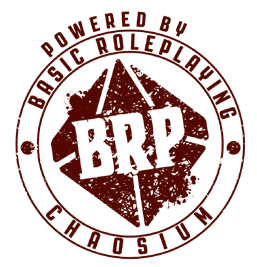

Sobre
Basic Roleplaying: Universal Game Engine
— Documento de Conteúdo ORC —

Em Abril de 2023, a editora Chaosium Inc. publicou a nova edição de seu aclamado jogo, o Basic Roleplaying: Universal Game Engine, e também disponibilizou o Basic Roleplaying ORC Content Document para download em formato PDF e RTF.
Ao longo de 2024, o usuário do GitHub raleel, criou um respositório (raleel/brpugesrd) convertendo a documentação livre do BRP:UGE em markdown. A nossa tradução usa a conversão dele como base.
Este repositório foi criado para disponibilizar o Conteúdo ORC do BRP:UGE em texto simples, mais especificamente em markdown, para que possa ser lido em qualquer editor de texto básico, como o Bloco de Notas do Windows. Se você quiser contribuir, sinta-se à vontade para enviar uma Solicitação de Pull Request no GitHub.
Este projeto é encabeçado por Daniel Dias Rodrigues (a.k.a. “Nerun”), do blog GURPZine.
Por favor, tire um tempo pra ler nosso Manifesto Apologético do Formato Universal, onde é explicada a escolha pelo formato de texto simples e pela linguagem de marcação markdown.
Este é um trabalho em progresso.
A tradução foi feita usando a versão paga de uma IA chamada DeepL em 20/05/2025 14:54.
Com exceção do frontispício, a tradução não foi revisada. É preciso revisar também a formatação da linguagem markdown, pois a IA quebrou algumas coisas, principalmente negritos e itálicos.
✅ ← indica que o capítulo foi formatado e revisado
Manifesto Apologético do Formato Universal
Um Formato para Durar no Tempo
O Unicode Standard foi uma revolução ao transcender as limitações das codificações de caracteres tradicionais como o ASCII, pois o Unicode suporta caracteres além dos 128 disponíveis no inglês, o que o torna universal. O formato UTF-8 tornou-se uma implementação magistral do padrão Unicode, mantendo compatibilidade retroativa com o ASCII. Na verdade, o ASCII agora é um subconjunto do UTF-8.
Isso é relevante porque o formato ASCII resistiu ao teste do tempo e é considerado um dos melhores formatos para armazenar textos eletrônicos (etexts) com a intenção de durabilidade. A maioria dos romances, livros, contos e histórias em domínio público disponíveis no Projeto Gutenberg está em formato UTF-8.
Nas palavras do Projeto Gutenberg:1
O ponto principal de tudo isso é que, daqui a muitos anos, os textos eletrônicos do Projeto Gutenberg ainda serão viáveis, mas programa após programa, sistema operacional após sistema operacional vão acabar como os dinossauros — assim como todo o hardware que os roda. Claro que isso vale para todos os textos eletrônicos em ASCII simples… não apenas aqueles que você conseguiu acessar do Projeto Gutenberg. A questão é que daqui a uma década provavelmente não teremos os mesmos sistemas operacionais, nem os mesmos programas, e portanto todos os vários tipos de textos eletrônicos que não forem ASCII simples estarão obsoletos. Precisamos ter textos eletrônicos em arquivos que um programa de leitura e pesquisa de ASCII simples consiga lidar; isso não quer dizer que nunca deve haver marcação… apenas que as formas de marcação devem ser facilmente conversíveis em arquivos ASCII simples, para que sua utilidade não expire quando os programas deixarem de existir. Lembra de toda a dor de cabeça com programas de CONVERSÃO para transformar arquivos de antigos processadores de texto em ASCII simples?
Markdown
É claro que o Projeto Gutenberg só aceita texto simples (arquivos .txt em UTF-8), mas o Markdown é uma linguagem de marcação que é essencialmente texto simples — ou seja, continua legível em qualquer editor de texto puro.
Markdown é uma linguagem de marcação leve, com sintaxe simples, discreta e legível por humanos. Foi criada para ser fácil de escrever em qualquer editor de texto genérico e fácil de ler em sua forma bruta. Na verdade, é tão simples e não intrusiva que alguém pode abrir um arquivo Markdown (com extensão “.md”) e lê-lo quase como se fosse um “arquivo ASCII simples”. Você pode até renomear a extensão para “.txt” se preferir. No Windows, basta usar o Bloco de Notas. No Linux, editores de texto puro não faltam: gedit (e variantes), Kate, Emacs, Vim, Nano, etc.
Nesse sentido, o Markdown se alinha perfeitamente com o princípio do Projeto Gutenberg: a marcação deve ser facilmente conversível e não deve comprometer a legibilidade ou a durabilidade do texto. O Markdown consegue isso precisamente por ser texto simples e uma marcação não intrusiva.
Uma Linguagem Intercambiável
Arquivos escritos em UTF-8 usando a linguagem Markdown não são apenas fáceis de ler e abrir em qualquer sistema operacional ou editor de texto puro, mas também fáceis de converter para formatos profissionais ou mais complexos.
A maneira mais fácil de fazer isso é importar seu conteúdo diretamente em um processador de texto como o LibreOffice ou Microsoft Office, ou em editores de editoração como Scribus ou Adobe InDesign.
No entanto, o programa Pandoc está disponível para vários sistemas operacionais — Windows, Linux, BSD, macOS etc. Ele permite converter de e para muitos formatos diferentes. E é gratuito e de código aberto.
Claro, o Pandoc é uma ferramenta de linha de comando, feita para ser usada no Prompt de Comando, PowerShell, terminal do Linux etc. Mas é tão simples quanto digitar:
$ pandoc teste.md -f markdown -t docx -s -o teste.docx
O nome do arquivo teste.md diz ao Pandoc qual arquivo converter. A opção -s o instrui a criar um arquivo “autônomo”, com cabeçalho e rodapé, em vez de apenas um fragmento. O parâmetro -o teste.docx especifica que a saída deve ir para teste.docx. Note que poderíamos ter omitido -f markdown -t docx, já que o Pandoc é esperto o suficiente para inferir os formatos a partir dos nomes dos arquivos — mas não custa incluí-los.2
A aparência geral do arquivo convertido é excelente — não há realmente nada do que reclamar.
27 de julho de 2023 (revisado em 13 de junho de 2026)
Daniel Dias Rodrigues
-
Michael Hart, “The History and Philosophy of Project Gutenberg”, Project Gutenberg, Agosto de 1992, https://www.gutenberg.org/about/
background/history_and_ . ↩philosophy.html -
“Getting started with pandoc. Step 6: Converting a File”, Pandoc, acessado em 27 de Julho de 2023, https://pandoc.org/getting-started.html#step-6-converting-a-file. ↩
Progresso da Revisão
| Capítulo | Palavras | Revisão da Formatação | Revisão da tradução |
|---|---|---|---|
| Frontispício | 307 | 100% | 100% |
| 1. Introdução | 2.595 | 100% | 0% |
| 2. Personagens | 17.449 | 0% | 0% |
| 3. Habilidades | 17.045 | 0% | 0% |
| 4. Poderes | 57.254 | 0% | 0% |
| 5. Sistema | 11.285 | 0% | 0% |
| 6. Combate | 16.242 | 0% | 0% |
| 7. Regras Específicas | 19.382 | 0% | 0% |
| 8. Equipamento | 30.213 | 0% | 0% |
| 9. Mestrando | 12.889 | 0% | 0% |
| 10. Cenários | 13.883 | 0% | 0% |
| 11. Criaturas | 24.471 | 0% | 0% |
| TOTAL | 198.015 | 1,47% | 0,155% |
Notas
O cálculo de porcentagem é feito dividindo o total de palavras do capítulo pelo total de palavras do documento inteiro e multiplicando por 100.
Exemplo
$$ (\frac{307}{198.015}) \times 100 = 0,15503876 $$
Basic Roleplaying — Universal Game Engine — Documento de Conteúdo ORC
Créditos
Baseado no sistema Basic Roleplaying criado por Steve Perrin, Steve Henderson, Warren James, Greg Stafford, Sandy Petersen, Ray Turney e Lynn Willis
Autores Jason Durall e Steve Perrin
Produtor Neil Robinson
Créditos adicionais Daria Pilarczyk, Rick Meints, Michael O’Brien e Jeff Richard
Agradecimentos especiais Ken St. Andre, Ken Austin, William Barton, Bill Dunn, Ken Finlayson, Mark L. Gambler, Sam Johnson, William Jones, Rodney Leary, Ben Monroe, Gordon Monson, Sarah Newton, Sam Shirley, Mark Morrison e Richard Watts
Dados de publicação
Publicado nos Estados Unidos da América pela Chaosium Inc.
3450 Wooddale Court, Ann Arbor, MI 48104
chaosium.com
BASIC ROLEPLAYING: UNIVERSAL GAME ENGINE
Copyright © 2023 pela Chaosium Inc. Todos os direitos reservados.
Basic Roleplaying é copyright © 1981, 1983, 1992, 1993, 1995, 1998, 1999, 2001, 2004, 2008, 2010, 2023 pela Chaosium Inc.; todos os direitos reservados.
Basic Roleplaying é marca registrada da Chaosium Inc.
Chaosium Inc. e o logotipo da Chaosium são marcas registradas da Chaosium Inc.
Aviso ORC
Este produto está licenciado sob a Licença ORC registrada na Biblioteca do Congresso sob o número TX 9-307-067 e disponível online em vários locais, incluindo www.chaosium.com/orclicense, www.azoralaw.com/orclicense, www.paizo.com/orclicense e outros. Todas as garantias são excluídas conforme estabelecido no documento. Este produto é uma obra original da Chaosium.
Se você usar nosso Conteúdo ORC, por favor, também nos dê crédito da seguinte forma:
{kind=link}

Com pouquíssimas exceções (termos registrados), o texto de BASIC ROLEPLAYING: UNIVERSAL GAME ENGINE está disponível para uso pessoal e comercial sob a licença ORC.
1. Introdução
Bem-vindo ao sistema Basic Roleplaying da Chaosium, um dos sistemas de roleplaying game mais influentes do mundo.
Se você já está familiarizado com jogos de RPG, pode pular grande parte desta introdução. Ela aborda os termos usados no sistema Basic Roleplaying. Para jogadores veteranos, a única seção desta introdução à qual você deve prestar atenção é a seção Regras opcionais.
Termos usados no Roleplaying básico
Os termos a seguir são usados com frequência neste livro. Alguns são comuns em roleplaying games e são fornecidos como auxílio para jogadores novos e experientes. Cada um deles é explicado detalhadamente nas seções relevantes.
Habilidade: Algo que um personagem pode fazer ou sentir, seja uma habilidade, uma paixão ou algum outro fator classificado em uma escala de 1 a 100. Geralmente, quando você rola uma habilidade com sucesso, recebe uma verificação de experiência.
Lealdade: Um sistema opcional que mede a devoção a um ser espiritual, princípio ou divindade, aprimorado pela realização de ações favoráveis.
Aumento: Usar uma habilidade para modificar a chance de sucesso de outra habilidade, como quando uma habilidade fornece suporte adicional a outra, ou uma paixão pode ajudar a aumentar a chance de sucesso de uma habilidade.
Chance básica: A chance padrão de ser bem-sucedido em uma habilidade na qual o personagem não tem treinamento ou experiência.
Por exemplo, na ficha de personagem, Hide (20%) significa que, mesmo que seu personagem não tenha investido nenhum ponto de habilidade na habilidade Hide, ele tem uma habilidade natural de 20% nessa habilidade.
Alcance básico: A distância normal em que uma arma de mísseis pode atingir um alvo.
Personagem: O papel que você assume em uma sessão de jogo, descrito na mecânica do jogo por valores como características e totais de habilidades. Geralmente, os personagens têm nomes e origens determinados pelo jogador, com a ajuda e/ou aprovação do gamemaster. (consulte também personagem do jogador e personagem não jogador).
Característica: Os atributos físicos, mentais e espirituais de seu personagem (Força, Constituição, Tamanho, Inteligência, Poder, Destreza e Carisma), classificados numericamente em uma escala (geralmente de 3 a 18), com uma média humana de 10 a 11.
Por exemplo, se a característica máxima inicial for 18, um STR 17 significa que seu personagem é extremamente forte, enquanto um DEX 7 significa que ele é um pouco desajeitado.
Rolagem de característica: Uma das características do seu personagem multiplicada por um número (Inteligência ×3, por exemplo), expressa como uma porcentagem e rolada com dados de percentil. Uma rolagem de característica geralmente é ×5, mas outros múltiplos podem ser usados.
Por exemplo, se a característica Inteligência do seu personagem for 14, ele terá 42% de chance de ser bem-sucedido em uma verificação de característica com um múltiplo de ×3.
Rodada de combate: Um período de 12 segundos (ou equivalente) imposto durante o combate ou atividades dramáticas, em que a ordem em que as ações ocorrem é importante. Esse é o tempo do jogo, não o tempo real - os eventos de alguns segundos de ação podem levar vários minutos para se desenrolar entre os jogadores e o mestre de jogo.
Sucesso crítico: Esse é o resultado de uma rolagem de verificação de habilidade que é 1/20 (ou 5%) da chance normal de sucesso. Em geral, um sucesso crítico é recompensado com resultados maiores, embora em alguns casos seja necessário um sucesso crítico para obter sucesso.
Por exemplo, se a chance regular de sucesso for 75%, qualquer rolagem de 4 ou menos é um sucesso crítico (1/20 de 75% é 3,75, arredondado para 4).
D100: Um rolamento de dados de percentil, obtido ao rolar dois dados de 10 lados (D10s), com um representando as dezenas e o outro as unidades. Alguns dados já vêm marcados como “dezenas” (00, 10, 20, etc.) e são sempre usados como o primeiro número em um lançamento de D100. Um lançamento de 01 é o melhor resultado possível, enquanto 100 (que geralmente é lido como 00) é o pior.
Por exemplo, um lançamento de 60 (ou 6) e 2 equivale a um resultado de 62.
Dano: Um valor que representa a lesão, subtraído dos pontos de vida de um personagem. Armas, eventos infelizes e outros perigos infligem danos aos personagens.
Modificador de dano: Um modificador para o dano rolado devido às características de força e tamanho acima da média.
DEX Rank: Baseado na característica Destreza, determina quando o personagem pode agir normalmente durante uma rodada de combate. Os personagens com DEX maior geralmente agem antes dos personagens com DEX menor.
Modificador de dificuldade: A quantidade de chance de uma habilidade é ajustada com base nas circunstâncias que envolvem seu uso. Esses variam de Automático (não é necessário rolar), Fácil (a habilidade é dobrada), Médio (nenhuma modificação na habilidade) e Difícil (a habilidade é reduzida à metade) a Impossível (sem rolar ou com 01% de chance, a critério do gamemaster).
Rolagens de experiência: Se você for bem-sucedido em uma rolagem para uma ou mais habilidades do seu personagem ou rolagens de resistência a características (veja abaixo), deverá marcar sua ficha de personagem na caixa de seleção fornecida (às vezes essa ação é chamada de “verificação de experiência”), se for o caso. Posteriormente, entre as aventuras ou durante o tempo de inatividade, você pode determinar se a habilidade do seu personagem melhorou naquela perícia ou se a característica aumentou com o uso bem-sucedido. Algumas habilidades não podem ser aprimoradas pela experiência e devem ser aprimoradas por outros meios.
Fracasso: Uma rolagem de dados de percentil acima da chance de sucesso exigida.
Por exemplo, um lançamento de 89 quando a chance necessária era de 56% indica uma falha.
Ferimento fatal: Um ferimento que custa ao seu personagem mais pontos de vida do que ele possui atualmente. Sem intervenção (médica ou outra), a morte ocorre no final da rodada de combate seguinte.
Pontos de fadiga: Um sistema opcional que usa a característica Força e Constituição do seu personagem para determinar quanto tempo ele pode suportar uma atividade física extenuante antes de se cansar.
Turno completo: Um período que consiste em 25 rodadas de combate, o que equivale a cinco minutos de tempo no mundo do jogo.
Fumble: Uma rolagem de 99 e/ou 00 ao rolar dados de percentil para determinar o sucesso. Em geral, quando um fumble é indicado, algo ruim acontece além de uma simples falha.
Mestre de Jogo (GM): O diretor ou guia do jogo, que o ajuda a criar personagens, apresenta a aventura e representa o mundo fora do seu personagem, lançando dados para os personagens não-jogadores e para as forças oponentes.
Tempo de jogo: O tempo decorrido durante o desenrolar de um cenário ou campanha, conforme vivenciado por seus personagens. Geralmente não é o mesmo tempo real que você e o mestre de jogo passam jogando.
Localização do golpe: Um sistema opcional para especificar onde um ataque bem-sucedido cai no corpo do seu personagem ou onde os ataques dele atingem um inimigo.
Pontos de vida: Uma medida da saúde relativa do seu personagem, representada em um valor derivado das características de Constituição e Tamanho. Os atacantes infligem danos em pontos de vida, subtraídos do total de pontos de vida do alvo. Normalmente, quando seu personagem atinge 0 pontos de vida, ele está morto.
“In character” (no personagem) ou “Out of character” (fora do personagem): A distinção no bate-papo entre os jogadores e o mestre de jogo ao redor da mesa de jogo, representando a diferença entre a discussão no mundo real e a discussão no jogo. Ambos atingem o mesmo objetivo, mas representam estilos ou aspectos diferentes do jogo e podem ser usados de forma intercambiável no jogo. Alguns grupos ou jogadores se inclinam para um ou outro - é um elemento de preferência. A discussão “no personagem” é saborosa e envolvente, enquanto a discussão “fora do personagem” é essencial para descrever a mecânica das regras e acelerar o jogo por meio de detalhes desnecessários.
Por exemplo, no personagem, você pode dizer “Sir Wilfric pergunta ao estalajadeiro: “Será que você poderia nos permitir passar a noite em troca de uma promessa de pagamento futuro!”“, enquanto fora do personagem, você pode dizer “Eu tento persuadir o estalajadeiro a nos deixar passar uma noite sem pagamento”.
Magic Points: Outro nome para power points (consulte power points).
Ferimento grave: Um ferimento que causa dano suficiente para exceder a metade do total normal de pontos de vida do personagem em um único golpe. Geralmente acompanhado de um efeito debilitante.
Ferimento menor: Qualquer ferimento único que seja menos grave do que um ferimento maior (menos de 1/2 dos pontos de vida normais).
Modificadores: Adições ou subtrações temporárias à classificação do seu personagem em uma habilidade, geralmente devido a circunstâncias, ambiente ou equipamento.
Por exemplo, tentar arrombar uma fechadura com um clipe de papel dobrado é um exemplo de ferramenta de baixa qualidade, com um modificador de -20%. O uso de um lockpick padrão não modifica a habilidade. Usar um conjunto de luxo de lockpicks de precisão calibrada e equipamento de lockpicking adiciona +20% à classificação de habilidade de seu personagem.
Movimento (MOV): A taxa de movimento que seu personagem pode fazer durante uma única rodada de combate. Essa medida é flexível, mas geralmente se traduz em um metro de movimento sem pressa por ponto de MOV.
Personagem não jogador (NPC): Um personagem ou criatura no mundo do jogo que é interpretado ou representado pelo gamemaster, em vez de ser interpretado por você ou outro jogador.
Opposed Roll (Teste Resistido): Quando seu personagem quer tentar uma ação que outro personagem (ou personagem não jogador) quer se opor com uma habilidade “oposta” que cancela ou impede a ação inicial. Nesse caso, ambas as verificações de habilidade são feitas e os resultados são comparados.
Por exemplo, Furtividade geralmente tem a oposição de Ouvir.
Paixão: Um sistema opcional em que uma crença forte em relação a um assunto - como devoção, medo, ódio, amor, lealdade - é medida em uma base percentual. As paixões são usadas para indicar ou determinar como seu personagem se sente em relação ao assunto e com que intensidade, e são frequentemente usadas para aumentar as rolagens de habilidade. (consulte aumentos).
Dados Percentuais: Dois D10s rolados juntos, com um designado como o número de dezenas e o outro como o de unidades. Alguns dados são numerados em unidades de dez, ou seja, 00, 10, 20, 30, etc. Consulte também D100.
Personagem do Jogador (PC): Esse é o seu personagem, geralmente criado e quase sempre controlado por você, composto de habilidades e uma identidade que você assume por meio da interpretação de papéis. Seu personagem é sua representação no mundo do jogo e permite que você interaja com o cenário.
Poder: Um termo genérico para feitiços, mutações, habilidades psíquicas, feitiçaria ou super-habilidades que seu personagem pode possuir (consulte o Capítulo 4: Poderes).
Pontos de poder: A quantidade de força de vontade ou energia que seu personagem tem, representada como um total com base em sua característica de poder. Esses pontos são gastos para usar poderes ou habilidades especiais e podem ser drenados por outras habilidades. Quando seu personagem chega a 0 pontos de energia, ele fica inconsciente. Os pontos de energia também podem ser chamados de pontos mágicos em gêneros apropriados.
Profissão: A ocupação do seu personagem, representada como uma lista de habilidades que ele foi treinado para usar (ou teve a oportunidade de aprender).
Classificação: A chance de sucesso de uma habilidade, classificada como um valor de 1 a 100 (às vezes mais alto).
Por exemplo, Demolições 43% é uma classificação de 43, o que significa uma chance de 43% de sucesso quando a habilidade é tentada em circunstâncias normais. (consulte também Classificação da habilidade).
Resistance Roll (Teste de Resistência): Quando seu personagem quiser tentar uma ação que esteja sendo resistida por um objeto ou força inanimada, a característica relevante (por exemplo, Força) é oposta a outra característica apropriada (por exemplo, a Força da porta emperrada). Os dois números são cruzados na tabela de resistência (veja abaixo) para determinar a chance de sucesso, e um ou ambos os personagens lançam os dados para ver quem tem sucesso. Características iguais significam 50% de chance de sucesso. As rolagens de resistência também podem ser usadas quando se coloca um personagem contra outro personagem, como em uma luta de braço de ferro (Força vs. Força).
Tabela de resistência: A tabela que mostra a proporção de característica versus característica. Para usar a tabela de resistência, encontre a força oposta na coluna vertical, a força de resistência na coluna horizontal e, em seguida, faça referência cruzada para encontrar a probabilidade de sucesso, expressa como uma chance percentual.
Rolagem: Uma rolagem usando D100 para determinar se uma tentativa de executar uma habilidade, capacidade ou poder foi bem-sucedida. O resultado de uma rolagem de habilidade é um sucesso crítico, sucesso especial, sucesso, falha ou um tropeço. Meios adicionais de determinar a qualidade do sucesso são apresentados em regras opcionais.
Sanidade: Um sistema opcional em que a saúde mental do seu personagem é medida pela capacidade de suportar visões, eventos e revelações horríveis. À medida que a Sanidade diminui, a compreensão da realidade diminui. Se o personagem perder muita Sanidade de uma só vez, ele poderá ficar temporária ou permanentemente insano.
Habilidade: Uma habilidade, treinamento, campo de conhecimento, talento, especialidade ou algo sobre o qual seu personagem sabe algo (ou é talentoso), quantificado como um nível de habilidade. As habilidades são usadas em rolagens de habilidades, em que os dados de percentil são rolados contra a classificação da habilidade.
Classificação de habilidade: O grau de competência que seu personagem tem com uma habilidade, expresso como um número de 00% (nenhuma habilidade) a 100% ou mais (especialista de classe mundial).
Sucesso especial: Uma rolagem de 1/5 da pontuação necessária para o sucesso indica que seu personagem teve um desempenho excepcional e alcançou um resultado superior ao sucesso tradicional. Isso é especialmente significativo em combate.
Por exemplo, um personagem com 70% em uma habilidade que obtiver um resultado de 14 ou menos obteve um sucesso especial.
Sucesso: O resultado de uma rolagem de dados de porcentagem em que seu personagem executou a tarefa adequadamente e obteve uma qualidade média de sucesso. Se a rolagem for muito baixa, pode ser um sucesso especial ou sucesso crítico, conforme descrito acima. Se estiver acima da classificação da habilidade, geralmente é um fracasso. Se for muito alto, como um 00, pode ser um fumble.
Por exemplo, se o seu personagem tiver 70% em uma habilidade e rolar 70 ou menos, ele foi bem-sucedido.
Regras opcionais
Com o passar dos anos, vários subsistemas foram introduzidos nos jogos de RPG básicos para cobrir situações ou condições adequadas ao jogo específico, como sistemas de combate expandidos para jogos de fantasia, regras para insanidade e pesquisa para jogos de terror, regras para o uso de veículos e naves espaciais, regras que regem grandes paixões e traços de personalidade, diferentes sistemas de magia adequados ao gênero etc. Os elementos principais foram até mesmo alterados ou tratados de forma diferente, às vezes até em edições diferentes do mesmo jogo.
Essas variações aparecem aqui como regras opcionais, apresentadas em caixas como esta, com sugestões sobre quando usá-las e notas sobre como elas afetam o jogo e, em alguns casos, sobre como elas interagem com outras regras opcionais. Assim, o mestre de jogo pode escolher regras opcionais conforme desejar.
Antes de começar a jogar, você deve decidir que tipos de regras opcionais deseja usar, especialmente aquelas que se aplicam à criação de personagens. O Capítulo 10: Cenários sugere quais regras opcionais combinam com determinadas configurações e, além disso, uma lista completa é apresentada no Capítulo 9: Mestrando.
2. Personagens
Simplificando, seu personagem é você no mundo do jogo, a persona que você interpreta no jogo. O personagem é o foco de todos os jogos de RPG - uma abstração de habilidades físicas e mentais, aptidões e outros descritores. Você interage com seu gamemaster nesse mundo por meio do seu personagem. A maioria dos personagens controlados pelos jogadores são personagens jogadores (PCs).
Seu gamemaster descreve o cenário, o ambiente e os encontros para os jogadores. Seu gamemaster tem à disposição uma lista de outros personagens, chamados de personagens não jogadores (NPCs). Tanto os personagens jogadores quanto os não jogadores usam as mesmas regras, embora geralmente os personagens não jogadores sejam menos detalhados do que os personagens jogadores, pois os NPCs raramente enfrentam a mesma variedade de situações que os personagens jogadores enfrentam.
O Capítulo 11: Criaturas descreve como o mestre de jogo pode criar personagens não-jogadores apropriados e inclui uma lista de personagens não-jogadores prontos para uso (bem como monstros e outras criaturas) para uma variedade de cenários e épocas. Esta seção trata de personagens jogadores e é leitura essencial para você e seu mestre de jogo.
Quando um “personagem” é mencionado, o termo se aplica a personagens jogadores e personagens não jogadores.
Nível de potência
Ao longo deste capítulo e em outras partes das regras, há referências ao nível de poder do jogo. Isso descreve quão razoavelmente competentes são os personagens jogadores e não jogadores e em que ponto de uma escala de “realista” a “mítico” a jogabilidade será sentida.
Há quatro níveis de poder de jogo, descritos abaixo.
Normal
Os personagens não têm poderes ou têm muito poucos poderes não confiáveis. Às vezes, os personagens são definidos por um único poder, pouco mais que um talento extraordinário. Esse é o nível de poder mais adequado para jogos de terror ou de aventura modernos, em que a tecnologia e a inteligência costumam ser o fator decisivo para a sobrevivência.
**Heroico
Os personagens têm alguns poderes fortes ou uma ampla gama de poderes de nível médio a baixo. Isso é adequado para jogos que apresentam heróis fantasiados inexperientes ou aprendizes de feiticeiros em treinamento, sobreviventes mutantes de um apocalipse radioativo, heróis vigilantes ou um mundo de alta fantasia de feiticeiros e guerreiros. Alguns cenários futuristas podem ser criados usando esse nível de poder, com os cidadãos tendo muitos poderes menores concedidos por manipulação genética.
Epic
Os personagens são incrivelmente habilidosos ou poderosos, como arqui-magos ou seres sobrenaturais formidáveis. Os exemplos de jogos podem estar repletos de heróis ou vilões veteranos fantasiados, ou heróis sobrenaturais veteranos que lutam contra as forças das trevas nas sombras do mundo moderno.
**Super-humano
Esses personagens têm capacidades imensas e são os mais poderosos dos heróis. Os jogos podem apresentar super-heróis fantasiados com poderes extraordinários, guardiões galácticos ou até mesmo encarnações modernas de grandes semideuses.
Seu gamemaster deve deixar claro para você e seus colegas jogadores qual é o nível de poder do jogo, para definir as expectativas e orientar o restante da criação de personagens.
Criando um personagem
Primeiro, você precisa de um personagem. A seguir, apresentamos um sistema para desenvolver seu personagem. Esse sistema cria personagens razoavelmente competentes. Em cada etapa, são fornecidas sugestões para personagens mais poderosos. Você deve ter uma folha de personagem em branco à mão e talvez outra folha de papel para anotações. No site chaosium.com, você pode fazer download de versões digitais.
Quando você estiver pronto para criar o seu personagem, o mestre de jogo e os outros jogadores já devem ter decidido que tipo de jogo vocês jogarão, seja ficção científica, fantasia, terror moderno, intriga histórica, espionagem, ação pulp, suspense tecnológico ou qualquer outro gênero.
Seu gamemaster deve estar preparado para orientar você e os outros jogadores no processo de criação de personagens, sabendo quais profissões são permitidas e apropriadas para o jogo ou campanha e qual o nível de competência que os personagens devem exibir. Essas questões são mais importantes para a Step Seven e podem influenciar a Step Three.
**Primeira etapa: nome e características
Escreva o nome de seu personagem na parte superior da página. Ele deve ser apropriado para o cenário e o jogo que está sendo jogado. Se nenhuma ideia surgir ainda, espere até mais tarde. Você pode escrever seu próprio nome na folha de personagem, pois o mestre do jogo pode precisar controlar qual personagem pertence a quem.
- Escolha o gênero do seu personagem e escreva-o no espaço correto.
- Role 3D6 para as características Força (STR), Constituição (CON), Poder (POW), Destreza (DEX) e Carisma (CHA). Digite os resultados nos locais apropriados em sua ficha de personagem.
- Role 2D6+6 para as características Inteligência (INT) e Tamanho (SIZ).
Esses números fornecem a base de seu personagem, determinando em quais características ele é forte ou fraco.
- Se desejar, redistribua até 3 pontos entre suas características.
- Nenhuma característica pode começar com mais de 21 pontos.
- Se você não estiver satisfeito com as características que tem e o seu mestre de jogo aprovar, você pode começar de novo.
Se a campanha estiver usando um ou mais tipos de poderes, seu gamemaster poderá permitir que você aumente suas características iniciais (consulte Capítulo 4: Poderes, particularmente Diminuir/Aumentar Característica).
Escolha dos valores das características (opção): Tradicionalmente, as características são lançadas em ordem, com até 3 pontos redistribuídos. Em vez disso, você pode rolar 3D6 sete vezes e escolher para onde vão os resultados. Nesse caso, SIZ e INT não podem ser inferiores a 8.
Características iniciais mais altas (opção): Para um jogo de maior potência, role 2D6+6 para todas as características.
Característica Educação (EDU) (Opção): Role 2D6+6 para Educação (EDU) para essa característica, para personagens de sociedades com educação formalizada. Um EDU de 12 indica uma educação em nível de pós-graduação no ensino médio, com valores mais altos indicando cursos superiores ou avançados.
Modificadores culturais (opção): Os modificadores culturais enfatizam as diferenças de características entre espécies diferentes (como elfos ou anões) ou para culturas humanas diferentes. As características iniciais podem ser ajustadas ou limitadas nesse ponto. Consulte Cultural Characteristic Modifiers (Option) (Modificadores de características culturais (opção)).
Personagens não humanos (opção): Personagens não humanos podem usar diferentes rolagens de dados e modificadores para determinar as características iniciais. Consulte o Capítulo 11: Criaturas.
Criação de personagem baseada em pontos (opção): Normalmente, as características são roladas aleatoriamente. Em vez disso, os jogadores podem comprar pontos de características de um conjunto. Consulte Criação de personagem baseada em pontos (opção).
**Segunda etapa: Poderes
Leia isto com atenção! Se o jogo em que estiver participando envolver magia, mutações, habilidades psíquicas, feitiçaria ou superpoderes, você poderá começar com alguns desses poderes. Pergunte ao seu gamemaster sobre isso e consulte o Capítulo 4: Poderes para obter mais informações. Esses sistemas exigem mais explicações do que as fornecidas neste capítulo.
Se não houver poderes na campanha, ignore esta etapa e prossiga.
Se houver poderes, os seguintes tipos estarão disponíveis:
- Magia**: Feitiços simples com uma ampla variedade de aplicações.
- Mutações: Anomalias genéticas estranhas, algumas benéficas, outras adversas.
- Habilidades psíquicas: uso do poder da mente para manipular a realidade.
- Feitiçaria**: Um tipo mais barroco de feitiçaria, incluindo invocação elementar e demoníaca.
- Superpoderes**: Habilidades poderosas que desafiam a imaginação.
Mais detalhes sobre cada um deles aparecem nas respectivas seções.
Terceira etapa: Idade
A idade padrão dos personagens é 17+1D6 anos. Seu mestre de jogo pode optar por alterar isso com base nos requisitos do cenário do jogo. Se quiser começar a jogar com um personagem mais jovem ou mais velho, escolha uma idade que pareça apropriada e que tenha a aprovação do mestre de jogo.
- Para cada 10 anos completos adicionados à idade inicial rolada, com base no nível da campanha, modifique os pontos de habilidade profissional em +0 (Normal), +20 (Heroico), +30 (Épico) ou +40 (Super-humano) (consulte Step Seven).
- Qualquer fração de anos inferior a 10 não se qualifica para esse bônus de habilidade. Com base no nível da campanha, para cada ano abaixo da idade mínima (18) descrita acima, subtraia 0 (Normal), 20 (Heroico), 30 (Épico) ou 40 pontos de habilidade (Super-humano) dos pontos de habilidade profissional de seu personagem.
- Seu gamemaster pode limitar as profissões disponíveis para personagens com menos de 18 anos de idade.
- Aos 50 anos de idade e a cada 10 anos completos acima, modifique um dos valores de STR, CON, DEX ou CHA (à sua escolha) em -1. Aos 80 anos de idade e a cada 10 anos completos acima, modifique três dessas características. Consulte Envelhecimento e inatividade (opção).
- Para cada ano abaixo da idade original rolada acima, modifique qualquer característica que não seja EDU (sua escolha) em -1. Seu mestre de jogo pode exigir que você faça do TAM uma dessas características reduzidas. Esses pontos podem ser obtidos por meio de jogo (experiência), treinamento ou gradualmente por meios naturais (a critério do mestre de jogo). Consulte Envelhecimento e inação (opção).
Seu mestre de jogo também pode optar por simplesmente ignorar essas regras, com base no nível de poder do jogo. Isso permite aventureiros idosos, crianças gênios e, em geral, é mais agradável para todos os jogadores.
Educação (EDU) (Opção): Se estiver usando a característica EDU, a idade inicial do seu personagem deve ser de pelo menos EDU+5 (representando o tempo gasto com aprendizado). Cada 10 anos completos adicionados à idade inicial de seu personagem adicionam +1 à característica EDU de seu personagem. Certifique-se de aumentar os pontos de habilidade relevantes gerados na Sexta Etapa.
Quarta etapa: Rolagens de características
É aqui que você determina suas rolagens de características. A esta altura, você já deve saber quais são suas características finais, mas, se não souber, adie esta etapa até que as tenha finalizado. Cada uma delas tem um lugar na folha do personagem.
- Multiplique STR×5 para sua rolagem de Esforço.
- Multiplique CON×5 para sua rolagem de Stamina.
- Multiplique INT×5 para sua rolagem de Ideia.
- Multiplique POW×5 para sua rolagem de Sorte.
- Multiplique DEX×5 para sua rolagem de Agilidade.
- Multiplique CHA×5 para sua rolagem de Charme.
Rolagem de conhecimento (opção): Multiplique EDU×5 para sua rolagem de conhecimento (se EDU estiver sendo usado).
Quinta etapa: Características derivadas
Agora é a vez das características derivadas: modificador de dano, pontos de vida, pontos de energia e bônus de experiência. Se estiver usando sistemas opcionais, você também deve determinar os pontos de fadiga e os pontos de sanidade iniciais. Escreva os resultados em sua ficha de personagem.
- Modificador de dano: Adicione STR+SIZ e encontre o modificador de dano correspondente ao total de seu personagem na tabela Modificador de dano.
- Hit Points: Adicione CON+SIZ e divida por 2 (arredondado para cima). Circule esse número na caixa Hit Points em sua ficha de personagem e escreva-o abaixo. Esse é o máximo de pontos de vida de seu personagem. Se seu personagem perder pontos de vida, marque-os e apague as marcas à medida que os pontos de vida forem curados ou restaurados de outra forma.
- Nível de ferimento principal**: Seu nível de ferimento principal é 1/2 hit points, arredondado para cima.
- Pontos de poder**: Na caixa Pontos de poder, circule o número igual a POW e escreva o total na linha abaixo. Esse é o máximo de pontos de poder de seu personagem. Esses pontos alimentam feitiços mágicos, mutações, habilidades psíquicas ou superpoderes. Marque os pontos de poder quando eles forem gastos e apague as marcas quando forem recuperados ou restaurados de outra forma. O número escrito no espaço, igual ao seu POW, é o valor ao qual seus pontos de poder retornam com o descanso.
- Bônus de experiência**: O bônus de experiência do seu personagem é igual a 1/2 da INT, arredondado para cima.
- Movimento (MOV)**: O MOV do seu personagem mede a velocidade com que ele pode se mover durante uma rodada de combate. Os personagens humanos normalmente podem se mover 10 unidades por rodada. Uma unidade é uma quantidade um tanto variável, geralmente igual a 1 metro. Consulte Taxas de movimento.
Bônus de habilidade (opção): Se estiver usando bônus de categoria de habilidade com base em características, calcule o bônus para cada uma delas usando a tabela de Bônus de categoria de habilidade. Escreva esses valores nos espaços para cada categoria. Esse bônus é adicionado à chance básica de cada habilidade, se houver. Para cada categoria:
- Adicione +1% para cada ponto na característica primária acima de 10; subtraia 1% para cada ponto abaixo de 10.
- 1% para cada 2 pontos na característica secundária acima de 10; -1% para cada 2 pontos abaixo de 10 (arredondando o bônus para baixo, se necessário). -1% para cada ponto na característica negativa acima de 10; +1% para cada ponto abaixo de 10.
Pontos de acerto por local (opção): Com o sistema de local de acerto opcional, determine o número de pontos de acerto para cada local de acerto. A cabeça, o abdômen e cada perna têm 1/3 do total de pontos de vida, o peito tem 4/10 e cada braço tem 1/4 do valor total de pontos de vida. Arredonde todas as frações para cima.
Pontos de fadiga (opção): Se a fadiga estiver sendo usada, some o STR+CON do seu personagem para obter o total de pontos de fadiga. Em jogo, à medida que seu personagem gasta energia ou realiza atividade física rigorosa, ele perderá pontos de fadiga. Eles se recuperam rapidamente por meio de descanso e outros meios e mudam com frequência.
Sanidade (opção): Se a sanidade estiver sendo usada, multiplique a pontuação inicial de POW do seu personagem por ×5 para obter o total atual de sanidade (SAN). Em jogo, marque esses pontos em sua ficha de personagem quando ele perder pontos de sanidade. Quando seu personagem chega a 0 SAN, ele é considerado impossível de jogar.
Sexta etapa: Personalidade (opcional)
Estude as características de seu personagem e imagine o tipo de pessoa que você gostaria que ele fosse. Escolha uma das opções abaixo ou role 1D4 para obter um resultado aleatório. Esses pacotes de habilidades são uma maneira rápida de desenvolver seu personagem - haverá mais habilidades na próxima etapa. As habilidades são definidas no Capítulo 3: Habilidades 37-52 e as classes de armas são descritas no Capítulo 8: Equipamentos.
**Tipos de personalidade
| Resultado | Descrição |
|---|---|
| 1 | Brutal: Seu personagem pensa primeiro em resolver problemas por meio de força física e força bruta. Dê 20 pontos de habilidade cada para Brawl, Climb, Dodge, Grapple, Insight, Jump, Ride, Sense, Stealth, Swim, Throw e para quaisquer duas habilidades de Combat. |
| 2 | Skilled: Seu personagem acredita que a técnica, a habilidade e a perícia são os segredos do sucesso. Dê 20 pontos de habilidade a Appraise (Avaliação), qualquer uma das habilidades de Craft (Artesanato), Disguise (Disfarce), Dodge (Esquiva), Fine Manipulation (Manipulação Fina), First Aid (Primeiros Socorros), qualquer uma das habilidades de Knowledge (Conhecimento), Navigate (Navegação), Pilot (Piloto), Ride (Cavalgada), Sleight of Hand (Perícia), Stealth (Furtividade) e a qualquer uma das habilidades de Combat (Combate). |
| 3 Cunning: Seu personagem tenta primeiro ser mais esperto que um oponente para obter uma vantagem. Adicione 20 pontos de habilidade a Appraise, Bargain, Disguise, Insight, quaisquer duas habilidades de Knowledge, Listen, Research, Sense, Spot, Stealth, qualquer habilidade Technical (apropriada ao cenário) e qualquer habilidade de Combat. | |
| Seu personagem gosta de persuadir outras pessoas a trabalhar, enquanto ele toma as decisões. Dê 20 pontos cada para Appraise (Avaliação), Bargain (Barganha), Command (Comando), Etiquette (Etiqueta), Fast Talk (Conversa Rápida), Insight (Percepção), Perform (Desempenho), Persuade (Persuadir), qualquer idioma (Outro), idioma (Próprio), Sense (Sentido), Status (Status) e qualquer habilidade de Combate. |
Seu mestre de jogo pode ter outros tipos de personalidade, ou você pode criar a sua própria, escolhendo 13 habilidades e adicionando 20 pontos a cada classificação de habilidade (com a aprovação do mestre de jogo).
Ao distribuir esses pontos de habilidade, adicione o bônus à chance básica de cada habilidade, geralmente apresentada como um valor entre parênteses após a habilidade, como Fast Talk (15%). Escreva esse total após a habilidade.
Por exemplo, adicionar 20 pontos de habilidade ao Fast Talk (15%) resulta em uma classificação de 15+20=35%.
Sétima etapa: Profissão e habilidades
Para determinar as habilidades iniciais de seu personagem, vá até a lista de profissões. Escolha uma profissão lá. As profissões são descritas em detalhes mais adiante neste capítulo. Seu gamemaster pode restringir as profissões disponíveis, portanto, pergunte antes de fazer essa escolha. Algumas profissões oferecem vantagens especiais, como o uso de magia. Anote-as na ficha de personagem.
Uma vez escolhida a profissão, determine o conjunto de pontos de habilidade profissional do personagem. Isso representa o que o personagem aprendeu nessa profissão, seja por meio de treinamento ou experiência no trabalho. Como sempre, os pontos de habilidade são adicionados a quaisquer bônus concedidos em etapas anteriores e à chance básica da habilidade.
O nível de poder da campanha determina o conjunto inicial de pontos de habilidade. Seu gamemaster já deve ter decidido o tipo de jogo que será realizado e o poder e a competência dos personagens dos jogadores.
- Normal**: Atribua 250 pontos às habilidades profissionais. Nenhuma habilidade deve começar com mais de 75%. Se estiver usando o bônus opcional de categoria de habilidade, o limite ainda é 75%, e você deve gastar todos os pontos acima disso em outras habilidades. Se uma combinação de bônus aumentar a habilidade para mais de 75% antes desta etapa, não adicione mais pontos de habilidade.
- Heroico**: Atribua 325 pontos a habilidades profissionais. Nenhuma habilidade deve começar com mais de 90%, com as mesmas restrições acima.
- Épico**: Atribua 400 pontos às habilidades profissionais. Nenhuma habilidade deve começar com mais de 101%, com as mesmas restrições acima.
- Super-humano**: Distribua 500 pontos entre as habilidades profissionais, sem limite de classificação de habilidades. Consulte Classificações de habilidade acima de 100% (opção).
Para uma profissão original, distribua o número de pontos de habilidade do nível de poder, conforme descrito acima. Seu gamemaster pode ter algumas restrições sobre como esses pontos de habilidade podem ser gastos.
Depois que todos os pontos de habilidade profissional tiverem sido alocados, multiplique a INT do seu personagem por 10 para determinar o conjunto de pontos de habilidade pessoal. Gaste esses pontos de habilidade em qualquer habilidade que desejar, com a aprovação do seu gamemaster. Adicione os pontos gastos em uma habilidade à sua chance básica, aos bônus de profissão (se houver), às alocações de pontos de habilidade profissional e aos bônus de categoria de habilidade (se houver).
O total não deve exceder o limite de habilidades para o tipo de jogo definido acima. Seu gamemaster pode impor um limite de 50% para as habilidades pessoais que vão muito além da profissão do personagem. Esse limite de habilidade é maior com base no nível da campanha: 75% para heroico, 90% para épico e 100% para super-humano. As habilidades que naturalmente excedem esses números por meio de bônus anteriores não podem ter pontos adicionais gastos nelas.
Calcule as classificações finais de todas as habilidades do personagem com base na chance básica, no tipo de personalidade, no conjunto de habilidades profissionais, no conjunto de habilidades pessoais e nos bônus opcionais de categoria de habilidade (se usados). Talvez você queira mudar alguns pontos nesse momento, mas mantenha os pontos de habilidade profissional e os pontos de habilidade pessoal separados.
Educação (opção): Se Educação (EDU) estiver sendo usada, em vez de um conjunto básico de 250/325/400/500 pontos de habilidade, faça com que os pontos de habilidade iniciais sejam baseados em EDU×20 para personagens normais, EDU×25 para personagens heroicos, EDU×30 para personagens épicos e EDU×40 para personagens sobre-humanos.
Habilidades culturais (opção): Em um jogo com diferenças significativas entre culturas humanas, seu mestre de jogo pode fazer com que isso influencie as habilidades iniciais ou as habilidades iniciais permitidas. Consulte Cultura e personagens.
Pontos de habilidade pessoal aumentados (opção): O total de pontos de habilidade pessoal INT×10 pode ser aumentado para INT×15 para personagens heroicos, INT×20 para personagens épicos ou INT×25 para personagens sobre-humanos, conforme apropriado. Essa opção é recomendada para jogos em que os personagens são tremendamente competentes e habilidosos além do que sua profissão atual indicaria.
Oitava etapa: Possessões
A maioria dos personagens tem algum tipo de posse, seja de equipamentos ou armas. A frente da ficha de personagem tem uma seção para armas e o verso tem um espaço para posses. Sua profissão descreve o nível de riqueza inicial do personagem e a habilidade Status pode fornecer diretrizes para o tipo de equipamento adicional que o personagem poderá obter. Não é necessário listar todos os itens que seu personagem possui, mas apenas aqueles que podem ser importantes no jogo.
Na maioria dos casos, seu personagem tem o seguinte:
- Um conjunto completo (ou conjuntos) de roupas apropriadas para seu ambiente e ambiente.
- Uma quantia de dinheiro de bolso e economias pessoais com base em seu nível de riqueza.
- Um item pessoal que mostre alguma relação com sua família ou histórico. Pode ser uma relíquia de família, uma lembrança ou alguma bugiganga com uma forte conexão emocional.
- Qualquer ferramenta comercial ou equipamento adequado à sua profissão, se for o caso.
- Qualquer arma em que ele tenha uma habilidade de 50% ou mais, se for o caso.
- Com base no cenário, na profissão, no nível de riqueza e no status, eles podem ter um veículo como cavalo, carroça, bicicleta, automóvel, avião pessoal, transporte espacial pequeno ou algum outro meio de transporte. Isso está sujeito à aprovação do seu mestre de jogo.
- Não são fornecidas regras detalhadas para finanças: a riqueza sugerida para as profissões e a habilidade Status são as melhores diretrizes para determinar quais itens e fundos eles começam o jogo possuindo ou tendo acesso. Seu gamemaster deve ser capaz de ajudá-lo a descrever isso em um nível apropriado de detalhes e pode ter restrições ou sugestões adicionais.
Etapa nove: Tamanho e características distintivas
Essa etapa é principalmente cosmética e não é totalmente necessária.
Agora você pode optar por determinar a altura e o peso do seu personagem com base no tamanho (SIZ). Em geral, a faixa de SIZ de 10 a 13 representa a faixa humana de peso e altura médios. Uma pessoa com SIZ 8 (mínimo normal) é relativamente pequena, e uma pessoa com SIZ 18 é extremamente grande. Você pode definir isso como quiser, seja com números exatos de altura e peso ou com descrições como “Alto” ou “Magro”.
Se estiver usando a opção Distinctive Features (Características distintivas). Anote essas características sob o nome do seu personagem na ficha de personagem.
Décima etapa: Toques finais
Esta é a etapa final para vários aspectos de seu personagem. Se você não conseguiu pensar em um nome antes na Etapa 1, agora é a hora. Além disso, você pode criar o restante desta seção antes do início do jogo ou à medida que tiver uma ideia do seu personagem.
Conforme desejado, você deve preencher todos os espaços em branco que descrevem o personagem, mental e fisicamente, e apresentar algumas ideias sobre seu histórico. Na Etapa 9, você determinou as características distintivas do seu personagem, portanto, deve decidir se ele tem outras características menos distintivas. Qual é a cor de seus cabelos, pele e olhos? Como ele se veste? Ele tem algum maneirismo interessante ou um lema ou ditado que usa com frequência? Ele tem uma reputação interessante?
Se for relevante, determine a origem de seu personagem. Onde ele estudou (se é que estudou)? Qual é o relacionamento dele com a família? O personagem é membro de alguma organização importante? Ele tem um passado interessante? Ele tem alguma crença religiosa ou política importante? Se for o caso, você deve trabalhar com o mestre de jogo para determinar essas questões antes do início do jogo ou, pelo menos, pensar um pouco sobre elas com antecedência. Durante o jogo, você também pode detalhar outros aspectos do histórico do seu personagem conforme necessário ou deixar esses aspectos indeterminados se não forem relevantes.
O verso da folha de personagem tem espaço para elementos adicionais descritivos ou de histórico. Preencha tantos ou tão poucos quanto desejar e verifique com o seu mestre de jogo para ter certeza de que ele os conhece e de que são adequados para o jogo.
Criação de personagens com base em pontos (opção)
A criação de personagem padrão usa rolagem de dados para determinar as características iniciais, mas você e o seu mestre de jogo podem optar por usar um sistema baseado em pontos, oferecendo mais controle sobre a criação do seu personagem. Nesse caso, os seguintes ajustes são feitos na Passo Um.
- Todas as características (STR, CON, SIZ, INT, POW, DEX e CHA) começam em 10.
- Você tem 24 pontos para gastar em características. Esse é o equivalente ao nível de poder “normal” de uma campanha. Nenhuma característica inicial pode ser aumentada para mais de 21.
- Cada ponto de STR, CON, SIZ ou CHA custa 1 ponto.
- Cada ponto de DEX, INT e POW custa 3.
- Você pode optar por diminuir suas características iniciais abaixo do valor inicial de 10, até um mínimo de 3.
- Para cada ponto de STR, CON, SIZ ou CHA que você reduzir para menos de 10, você recebe 1 ponto para gastar em outras características.
- Para cada ponto de DEX, INT e POW que você reduzir, você recebe 3 pontos de volta.
- Somente com a permissão de um gamemaster você pode aumentar ou diminuir uma característica inicial além da faixa de 3-21. Para níveis de poder mais altos (épico e sobre-humano), o máximo da característica deve ser ignorado.
- Em jogos com poderes, você pode aplicar quaisquer pontos não utilizados da geração de características ao seu orçamento de poder. Isso é feito somente com a permissão do mestre de jogo, pois pode resultar na perda de pontos em geral.
Se a geração de características baseada em pontos for permitida, o próximo passo para um jogo com poderes seria o Passo Dois alternativo descrito no Capítulo 4: Poderes. Em um jogo sem poderes, a criação de personagem deve pular para a Etapa Quatro.
**Características de partida mais altas (opção)
Para campanhas de poder mais alto (com um rolamento de 2D6+6 em vez do 3D6 normal), o total do ponto inicial acima é de 36 pontos, equivalente ao nível de poder heroico. Os personagens de nível de poder épico começam com 48 pontos de característica e os personagens de nível de poder sobre-humano começam com 60 pontos. Os máximos de características normais não devem se aplicar.
Educação (Opção)
Se a característica EDU estiver sendo usada, o mestre de jogo deverá atribuir um valor à EDU com base na idade do personagem (descrita na Terceira Etapa) e no histórico. Você pode modificar isso com os pontos que desejar. Cada ponto de EDU custa 3 pontos.
Modificadores culturais ou personagens não humanos (opção)
Se o seu mestre de jogo estiver permitindo modificadores culturais para as características iniciais, esses modificadores deverão ser aplicados às características posteriormente. Se houver personagens não humanos com modificadores culturais para as características iniciais, o mestre de jogo deverá ajustar os pontos iniciais e/ou as características iniciais, conforme apropriado. O Capítulo Onze: Criaturas contém conselhos sobre como permitir personagens não humanos.
Características
Seu personagem é medido e definido por um conjunto de características, valores que representam suas capacidades físicas e mentais. Números de características mais altos geralmente são melhores (embora um SIZ alto possa ser contra você em termos de furtividade). Os valores das características indicam os dons naturais brutos que seu personagem possui. Os valores das características podem mudar no decorrer do jogo. Lesões ou condições adversas podem diminuir as características, enquanto o treinamento, o esforço e o condicionamento podem aumentá-las.
- As características físicas (STR, CON, SIZ, DEX e CHA) têm um máximo de 21 para humanos.
- As características mentais (INT, POW e EDU) geralmente podem ser aumentadas sem limites.
- Na maioria das condições, 3 é o valor mais baixo para qualquer característica que não seja SIZ ou INT, que têm um valor mínimo de 8.
Se outras raças ou espécies forem permitidas na campanha, elas poderão ter um máximo de características maior ou menor. Magia, mutações, habilidades psíquicas, feitiçaria ou superpoderes também podem aumentar as características, sem limite.
Força (STR)
A força mede a força bruta e a potência muscular bruta. A rolagem de esforço (STR×5) é sua rolagem característica. A força de resistência ajuda a determinar o quanto um personagem pode levantar ou carregar, empurrar ou puxar, ou com que força pode se agarrar a algo. Em combate, a força de resistência limita o tipo de arma que um personagem pode empunhar, além de ajudar a determinar quanto dano extra (se houver) ele inflige em qualquer golpe. A força de resistência pode ser aumentada por meio de exercícios, enquanto certas lesões e doenças podem reduzir permanentemente a força de resistência. Um personagem com FÍS 0 é um inválido, incapaz de se levantar da cama.
Constituição (CON)
A saúde, o vigor e a vitalidade são todos medidos pela Constituição. A rolagem de Stamina (CON×5) é sua rolagem característica. A CON determina o quanto um personagem pode resistir à fadiga, ao veneno, à doença, ao afogamento e a outras dificuldades, e é um fator no cálculo dos pontos de vida. O CON pode ser aumentado por meio de condicionamento. Doenças, venenos e alguns ferimentos podem reduzir o CON temporária ou permanentemente. Um personagem morre quando seu CON cai para 0 por qualquer motivo.
Tamanho (SIZ)
O tamanho define altura, peso e volume. Não há rolagem de característica associada ao SIZ; na ficha de personagem, o espaço é usado para anotar o modificador de dano do personagem. As rolagens de resistência que usam o SIZ podem determinar se um personagem pode se manter firme contra a resistência, ver por cima de um obstáculo ou se espremer por uma fenda. O SIZ de um personagem, como a massa corporal, ajuda a determinar os pontos de vida e o modificador de dano (se houver). Fatores como gula ou dieta rígida podem aumentar ou diminuir o TAM, a critério do seu gamemaster. Alguns poderes também podem afetar o SIZ. Lesões graves (como a perda de membros) também podem diminuir permanentemente o tamanho do personagem. Um personagem morre se perder mais da metade de seu tamanho (arredondado para cima) devido à fome ou dieta extrema. Um personagem reduzido a SIZ 0 por meio de magia ou outras influências simplesmente desaparece, definhando até desaparecer. Seu gamemaster deve ser o árbitro de qualquer mudança involuntária de SIZ, pois isso é incomum.
Inteligência (INT)
Representando a razão, a acuidade mental e a perspicácia, a INT mede a capacidade de um personagem de aprender, lembrar e analisar informações. A rolagem de Ideia (INT×5) é sua rolagem característica. A INT é fundamental para determinar os valores iniciais das habilidades. Possivelmente a característica mais importante, a INT não tem um máximo fixo e pode aumentar indefinidamente por meio de estudo e exercício mental. Ferimentos na cabeça, exposição prolongada a drogas nocivas ou certos tipos de doenças podem reduzir a INT. Um personagem com INT 0 foi reduzido a um estado vegetativo, incapaz de sobreviver de forma independente.
Potência (POW)
A mais intangível das características, o Power representa a força de vontade, a aptidão mágica e o desenvolvimento espiritual. O POW é essencial para a liderança, a intuição e a magia. A rolagem de Sorte (POW×5) é sua rolagem característica. O POW serve como determinante para os pontos de poder iniciais e os pontos de Sanidade iniciais. Assim como a INT, a POW humana não tem um máximo definido e pode aumentar indefinidamente. Influências mágicas podem reduzir a POW (temporária ou permanentemente) e algumas magias são alimentadas pelo sacrifício permanente de pontos de POW. Para os poderes (consulte Capítulo 4: Poderes), o POW é provavelmente a característica mais importante. O POW é a base sugerida para as escolhas iniciais de poder, portanto, um personagem com POW mais alto terá mais poderes (ou mais níveis nesses poderes). Um personagem cuja pontuação de POW chega a 0 perdeu a alma e ficou catatônico, sem vontade ou força vital.
Destreza (DEX)
A pontuação de destreza mede o equilíbrio, a agilidade, a velocidade e a destreza. Os personagens dependem da DEX para reagir a um ataque, escalar, realizar trabalhos delicados ou mover-se furtivamente. A rolagem de Agilidade (DEX×5) é sua rolagem característica. Lesões ou doenças nervosas podem reduzir a DEX, enquanto o treinamento rigoroso pode acelerar os reflexos e melhorar o equilíbrio. Um personagem com DEX 0 é totalmente imóvel.
Carisma (CHA)
O carisma determina o quanto um personagem é simpático ou atraente para os outros e se baseia tanto na presença, na personalidade e no comportamento quanto na simples aparência física. A rolagem de Charme (CHA×5) forma sua rolagem característica. O CHA é usado para medir as primeiras impressões e indica o quanto os outros estarão ansiosos para se associar a alguém, por meio da atração física ou de uma personalidade atraente. O CHA pode ser aumentado por meio de condicionamento físico, cirurgia cosmética ou aplicação cuidadosa de cuidados pessoais e etiqueta. Ele pode até mesmo ser melhorado em uma pequena quantidade pela posse de equipamentos particularmente impressionantes. Também pode ser reduzido por meio de ferimentos ou doenças. Um personagem com CHA 0 ou é totalmente odioso, provocando repulsa em todos que o encontram, ou se tornou tão indescritível que mal é registrado.
**Modificadores de características culturais (opção)
Algumas culturas podem receber modificadores para características básicas, como o tamanho. Esse pode ser um tópico potencialmente sensível. Recomenda-se que o mestre de jogo conceda esses bônus com cautela e equilibre os bônus positivos com os negativos ou iguale o jogo dando a todas as culturas um bônus equivalente, embora talvez para características ou atributos diferentes. Não se recomenda enfaticamente penalizar a INT, independentemente da justificativa aparente. Nenhum jogador deve ser penalizado por escolher uma cultura específica. Recomenda-se também que isso seja usado somente em cenários em que tais distinções sejam comumente aceitáveis, como em mundos de fantasia em que as linhagens são únicas ou em cenários de ficção científica em que a humanidade foi moldada por manipulação genética e se adaptou ao ambiente galáctico.
Rolos de características
Alguns desafios não são intuitivamente mapeados para habilidades específicas. Será que um caçador consegue ficar acordado em um esconderijo a noite toda à espera de sua presa? Um detetive experiente consegue juntar a pista tentadora escondida nos restos de provas? Nessas situações, o mestre de jogo pode solicitar uma rolagem de característica: uma rolagem de D100 contra uma característica apropriada, multiplicada por outro número. Seu mestre de jogo decide qual multiplicador usar com base na dificuldade da tarefa. As rolagens de características padrão usam um multiplicador de ×5, embora tarefas extremamente difíceis possam exigir um multiplicador de ×2 ou até mesmo se basear na própria característica como uma porcentagem. Para obter mais detalhes sobre a dificuldade da tarefa e a seleção do modificador, consulte o Capítulo 5: Sistema.
Rolo de esforço (STR×5)
A maioria dos feitos de força envolve a comparação de STR com o SIZ do objeto levantado na tabela de resistência (consulte Capítulo 5: Sistema). Nos casos em que a classificação SIZ não estiver disponível ou for difícil de determinar, use uma rolagem de esforço. As rolagens de esforço também podem ser usadas como uma maneira fácil de determinar coisas como, por exemplo, se um personagem pode se puxar para cima de uma saliência. Ele está exausto ao final de uma longa caminhada? Um rolamento de esforço é uma maneira rápida de decidir.
Rolo de resistência (CON×5)
Com base em CON, as rolagens de Stamina medem a resistência. Use uma rolagem de Vigor sempre que a fortaleza física ou intestinal estiver em questão. Para citar alguns exemplos, uma rolagem de Vigor pode determinar se um personagem pode ficar acordado a noite toda, ou suportar enjoo, comida mal preparada ou bebida forte sem efeitos nocivos.
Rolo de ideias (INT×5)
Uma rolagem de Ideia representa a capacidade de fazer suposições inteligentes, palpites informados ou deduções razoáveis com base em nada além de observação e intelecto bruto. Quando nenhuma habilidade parece apropriada, um lançamento de Ideia pode mostrar a compreensão de um conceito ou a capacidade de desvendar um quebra-cabeça. A memória também faz parte do rolamento de Ideias: use um rolamento de Ideias para se lembrar de um detalhe importante, refazer os passos em um labirinto ou memorizar uma fórmula longa.
Seu gamemaster também pode permitir uma rolagem de Ideia se você estiver empacado, colocando-o de volta no caminho certo ao revelar um significado oculto de alguma pista já descoberta ou informando-o de que algo “não parece certo” sobre uma determinada pessoa, lugar ou coisa. Esse tipo de rolagem de ideia só deve ser concedido a critério do seu mestre de jogo e geralmente não é solicitado pelos jogadores.
Seu gamemaster também pode exigir uma rolagem de Ideia se você quiser que seu personagem pense ou se comporte de uma maneira que represente o conhecimento do jogador versus o conhecimento do personagem. Se um personagem for um caçador primitivo que encontra tecnologia moderna, por exemplo, seu gamemaster pode exigir um rolamento de Ideia para que ele seja capaz de compreender os conceitos básicos do item, mesmo que o jogador saiba automaticamente do que se trata com base em sua descrição.
Rolo da sorte (POW×5)
Sorte é a habilidade de estar no lugar certo na hora certa, de fazer com que as coisas funcionem apesar das expectativas ou a capacidade extraordinária de escapar ileso de um perigo aleatório. Por acaso seu personagem tem aquela peça ou equipamento especial? Será que um transeunte amigável lhe dará uma mão se ele ficar preso na beira da estrada? A criatura hedionda ataca o personagem ou um personagem não jogador próximo? Um personagem cai em um piso fraco ou prende suas roupas em uma tábua rachada e escapa de despencar para a morte? As rolagens de sorte podem ser usadas para responder a todas essas perguntas. Rolos de sorte bem-sucedidos podem criar coincidências afortunadas em circunstâncias normais ou salvar alguém de uma desgraça certa em uma emergência.
Rolagem de agilidade (DEX×5)
Sempre que uma façanha de destreza, equilíbrio ou agilidade for necessária e não houver uma habilidade apropriada, use uma rolagem de Agilidade para medir o sucesso. Uma rolagem de Agilidade pode, por exemplo, determinar se um personagem consegue manter o equilíbrio em um convés de navio agitado, juntar todos os pedaços de um vaso quebrado com pressa, correr carregando um elixir precioso sem derramá-lo ou agarrar a videira na beira de um penhasco antes de cair.
Rolo de charme (CHA×5)
Use os lançamentos de Charm para julgar reações interpessoais não cobertas por uma habilidade existente. Causar uma boa primeira impressão, seduzir um conhecido ou tornar-se a pessoa a quem um grupo recorre primeiro para obter orientação são todos bons usos para um lançamento de Charme. Se um personagem estiver do lado de fora de uma boate da moda querendo entrar, um lançamento bem-sucedido de Charm fará com que ele seja notado e acenado na porta.
A Característica de Educação (Opção)
As sete características principais servem para a maioria dos jogos, independentemente do cenário, mas a Educação (EDU), uma oitava característica opcional, pode ser usada para ajudar a gerar pontos de habilidade iniciais. A EDU funciona melhor em cenários modernos ou futuristas, mas pode ser facilmente adaptada a qualquer cenário de campanha.
Educação (EDU)
A educação mede o domínio do conhecimento geral de um personagem obtido por meio de um sistema educacional completo ou de algum outro método de aprendizado amplo. Não é um substituto para o conhecimento específico sobre um campo - em vez disso, representa o conhecimento geral do mundo. Seja por meio de estudo formal, treinamento ou experiência conquistada a duras penas, a EDU também pode medir quantos anos um personagem treinou ou estudou para atingir seu nível de conhecimento atual.
EDU não está automaticamente correlacionado a 1 ponto EDU = 1 ano na escola. Ele também pode representar o conhecimento geral da vida, bem como o estudo dedicado. Nem todos os anos na escola são educacionais, assim como todo o tempo gasto fora da escola não significa que nada foi aprendido. EDU pode ser prontamente adaptado à maioria dos ambientes - seu significado é óbvio em ambientes com sistemas educacionais padronizados. Em um ambiente medieval, pode representar aulas particulares ou estudos em colégios, liceus ou mosteiros, ou viagens extensas ao longo de rotas comerciais exóticas e para portos estrangeiros.
A perda de memória pode reduzir a UDE, enquanto um ano de estudo intenso ou treinamento intensivo a aumenta em +1. Um EDU 0 indica um vazio de conhecimento do mundo exterior, embora isso não signifique que todos sejam quase amnésicos em campanhas em que essa característica não é usada. A UDE não se aplica a animais ou criaturas sem uma característica de UDE - o conhecimento deles é instintivo ou se baseia em preceitos diferentes.
O uso do EDU também deve ser combinado com o Know roll (EDU×5).
**A rolagem de conhecimento (EDU×5) (opção)
A rolagem de Conhecimento abrange os fatos e as curiosidades que uma pessoa comum conhece como “conhecimento geral”. As rolagens de Conhecimento podem ser usadas para lembrar diferentes tipos de fatos, dependendo do cenário e até mesmo da cultura de um determinado personagem. Um camponês medieval poderia usar um rolamento de Conhecimento para lembrar o nome de um nobre senhor ou os detalhes da vida de santos, enquanto um cidadão moderno dos EUA lembraria de presidentes importantes ou do que acontece quando se mistura alvejante e amônia. As rolagens de conhecimento raramente devem tomar o lugar de uma habilidade de conhecimento mais especializada e lidar estritamente com fatos. Fazer bom uso desses fatos é uma função da INT.
**Características derivadas
Além das características (e suas respectivas rolagens de características), um personagem também é definido por um conjunto de características derivadas, calculadas a partir de suas características. Se ferimentos, magia ou outros fatores aumentarem ou diminuírem uma característica, todas as características derivadas dessa característica serão imediatamente alteradas para refletir o novo valor.
Por exemplo, seu personagem (CON 16, SIZ 14, HP 15) é vítima de um veneno mortal, que reduz seu valor de CON para 10. Os pontos de vida máximos de seu personagem caem imediatamente de 15 (16+14=30, divididos para 15) para 12 (10+14=24, divididos para 12). Além disso, o total de ferimentos graves cai de 8 para 6. Se os ferimentos já tiverem reduzido seu personagem a menos de 12 pontos de vida, ele não sofrerá nenhum dano adicional, mas estará limitado ao máximo de 12 pontos de vida até que sua CON original seja restaurada.
Modificador de dano (STR+SIZ, consulte a tabela)
Personagens e criaturas maiores e mais fortes são mais poderosos no combate físico, causando mais danos do que a média em cada ataque. Seres menores e mais fracos causam menos dano com seus ataques. O modificador de dano reflete essa vantagem, expressa em termos de dados de dano adicionados ou subtraídos do dano de ataques bem-sucedidos.
Um personagem adiciona seu modificador de dano total a todos os acertos com armas de combate ou corpo a corpo. No caso de um modificador de dano negativo, subtraia os dados apropriados de qualquer dano infligido. Se o total for 0 ou menos, o golpe é muito suave para causar qualquer dano. Um ataque nunca causa dano negativo, portanto, se a rolagem de dano modificado for inferior a 0, conte-o como 0.
As armas de mísseis não permitem que o personagem use todo o seu modificador de dano. Se o modificador de dano do seu personagem for positivo, divida os resultados pela metade (arredonde para cima) ao usar uma arma de arremesso ou um arco. Se o modificador de dano for negativo, mantenha o modificador como está. As armas autopropulsadas (armas de fogo, armas de mísseis de energia etc.) não recebem um modificador de dano.
Para calcular o modificador de dano, some o STR e o SIZ do personagem e encontre o resultado na tabela Damage Modifier (Modificador de dano) (a seguir).
**Tabela de modificadores de dano
| STR+SIZ | Modificador de dano | STR+SIZ | Modificador de dano |
|---|---|---|---|
| 2-12 | -1D6 | 73-88 | +4D6 |
| 13-16 | -1D4 | 89-104 | +5D6 |
| 17-24 | Nenhum | 105-120 | +6D6 |
| 25-32 | +1D4 | 121-136 | +7D6 |
| 33-40 | +1D6 | 137-152 | +8D6 |
| 41-56 | +2D6 | 153-168 | +9D6 |
| 57-72 | +3D6 | Cada +16 | +1D6 adicional |
Bônus de experiência (1/2 INT)
Quanto mais inteligente for um personagem, mais rápido ele poderá aprender, especialmente sob estresse. Para determinar o bônus de experiência, divida a INT por 2, arredondando para cima. Adicione o bônus de experiência à rolagem de aprendizado para cada verificação de experiência que seu personagem fizer para melhorar uma habilidade ou característica. Consulte o Capítulo 5: Sistema e Aprimoramento de habilidades.
Pontos de acerto (média de CON e SIZ)
Os pontos de vida representam a capacidade do seu personagem de resistir a punições e lesões físicas. Quando você recebe dano, subtrai pontos de vida do seu total. Calcule o máximo de pontos de vida somando as pontuações de CON e SIZ de seu personagem e, em seguida, divida o total por 2. Arredonde todas as frações para cima.
Seu personagem perde a consciência quando seus pontos de vida são reduzidos a 2 ou menos e, se os pontos de vida chegarem a 0, ele morre no final da rodada seguinte. Você pode perder mais pontos de vida do que tem, portanto, mantenha o controle de qualquer valor negativo. Os pontos de vida perdidos são curados naturalmente a uma taxa de 1D3 pontos por semana de jogo, embora a atenção médica possa acelerar a recuperação. Consulte Dano e cura.
Total de pontos de vida (opção)
Para personagens-jogadores mais resistentes, capazes de sobreviver a um pouco mais de dano, use CON+SIZ para determinar os pontos de vida, sem dividir por 2. Isso resulta em personagens que podem se comportar bem em combate, sofrer ferimentos sem muito incômodo e torna os ferimentos graves muito menos comuns. Os ferimentos causados por sucessos especiais e críticos têm muito menos probabilidade de matar os personagens completamente. Esse sistema opcional pode ser facilmente usado com o sistema de pontos de vida por local, aumentando as chances de os personagens permanecerem presos a seus membros e vice-versa.
Para fazer uma distinção importante entre os personagens jogadores e os personagens não-jogadores mais fracos “bucha de canhão”, seu mestre de jogo pode fazer com que apenas os personagens jogadores e os personagens não-jogadores importantes usem pontos de vida iguais a CON+SIZ, dando a todos os outros personagens não-jogadores pontos de vida baseados em (CON+SIZ)/2. Isso dá uma vantagem significativa aos personagens jogadores e permite que eles sobrevivam a mais do que alguns ferimentos sólidos. Também permite que os personagens jogadores possam enfrentar um grande número de personagens não jogadores sem medo significativo de serem mortos por um golpe crítico.
**Pontos de acerto por local de acerto (opção)
Para um combate mais detalhado, os pontos de vida são divididos entre as partes do corpo do personagem. Se um ataque for bem-sucedido, um rolamento de D20 determinará onde o golpe cairá. Se estiver usando o sistema opcional de locais de acerto (consulte Locais de acerto), os pontos de acerto de seu personagem serão divididos entre seus vários locais de acerto. Use a seguinte fórmula para humanóides, arredondando para cima para cada local:
| Localização | Valor do ponto de acerto |
|---|---|
| Perna, abdômen, cabeça | 1/3 do total de pontos de vida |
| Peito | 4/10 pontos de vida totais |
| Braço | 1/4 total de pontos de vida |
A distribuição de pontos de vida dos humanoides é fornecida abaixo com base no máximo de pontos de vida.
| Localização | 1-2 | 3 | 4 | 5 | 6 | 7 | 8 | 9 | 10 | 11-12 | 13-15 | 16-17 | 18 | 19-20 | 21 |
|---|---|---|---|---|---|---|---|---|---|---|---|---|---|---|---|
| Cada perna | 1 | 1 | 2 | 2 | 2 | 2 | 2 | 3 | 3 | 3 | 3 | 4 | 4 | 5 | 6 |
| Abdômen | 1 | 1 | 2 | 2 | 2 | 2 | 3 | 3 | 3 | 3 | 4 | 4 | 5 | 6 | 6 |
| Peito | 1 | 2 | 2 | 2 | 2 | 3 | 3 | 3 | 4 | 4 | 4 | 4 | 5 | 6 | 7 |
| Cada braço | 1 | 1 | 1 | 2 | 2 | 2 | 2 | 2 | 3 | 3 | 3 | 4 | 4 | 5 | 5 |
| Cabeça | 1 | 1 | 2 | 2 | 2 | 2 | 3 | 3 | 3 | 3 | 4 | 4 | 5 | 6 | 6 |
A soma dos pontos de vida do seu personagem por localidade excede o máximo de pontos de vida dele, mas sempre que um personagem é ferido, o dano rolado é subtraído do total de pontos de vida daquela localidade e do máximo de pontos de vida do seu personagem.
O dano que excede o total de pontos de vida de um local o torna inútil. O dano igual a duas vezes o total de pontos de vida de um local o esmaga ou rompe. Consulte Dano por local atingido.
Por exemplo, seu personagem tem 14 pontos de vida, com 5 pontos de vida em cada perna, 5 pontos de vida no abdômen, 6 pontos de vida no peito, 4 pontos de vida em cada braço e 5 pontos de vida na cabeça. Mesmo que o total de pontos de vida em todos os locais seja 34, seu personagem morrerá se sofrer um total de 14 pontos de vida de dano.
O sistema de Ferimento principal não é facilmente compatível com o sistema de localização de acertos e, se o mestre de jogo optar por usar os sistemas opcionais de localização de acertos e Dano por localização de acertos, o sistema de ferimento principal deverá ser eliminado ou adaptado consideravelmente, talvez com a natureza do ferimento principal sendo escolhida pelo mestre de jogo, quando aplicável.
Ferimentos graves (1/2 do HP)
Divida o total de pontos de vida do seu personagem pela metade, arredondando para cima, se necessário. Esse total é o nível do ferimento principal. Se o seu personagem receber essa quantidade de dano de um único ferimento, ele poderá sofrer efeitos colaterais horríveis, além da simples perda de pontos de vida. Veja** Major Wound**s no *Capítulo 6: Combate*.
Pontos de potência (máx. = POW)
Os pontos de poder (PP) representam a essência vital de seu personagem, suas reservas de energia espiritual ou vital. Seu personagem gasta pontos de poder para lançar ou resistir a feitiços. O máximo de pontos de poder de seu personagem geralmente é igual à sua característica POW. Em geral, os pontos de energia gastos se regeneram a uma taxa de 1 por hora de sono ou descanso total, ou 1 para cada duas horas de atividade normal. Consulte a Tabela de taxas de recuperação de pontos de energia para obter taxas para pontuações de POW mais altas. Se o seu personagem estiver envolvido em atividade extenuante, ele não poderá recuperar pontos de energia. Quando o total de pontos de energia do seu personagem cai para 0, ele fica completamente exausto e desmaia até recuperar pelo menos 1 ponto de energia. Você não pode ter pontos de energia negativos.
Tabela de taxa de recuperação do Power Point
| Max PP | Asleep | Awake |
|---|---|---|
| 1-24 | 1 por hora | 1 por 2 horas |
| 25-48 2 por hora 1 por hora | ||
| 49-72 3 por hora 1 por 40 minutos | ||
| 73-96 | 4 por hora | 1 por 30 minutos |
| 97+ | +1 por hora | dividir o tempo pela metade |
Ao contrário dos pontos de vida ou de fadiga, os pontos de energia podem ultrapassar o máximo por breves períodos em determinadas condições. Conforme observado, se o personagem receber pontos de energia adicionais (geralmente pelo uso de um poder), ele poderá armazenar até o dobro de sua característica POW em pontos de energia extras. Quaisquer pontos de energia além desse limite são perdidos. Se o personagem usar quaisquer pontos de poder enquanto estiver acima do máximo normal, eles devem vir primeiro dos pontos de poder extras. Esses pontos de poder extras não são renovados e não se regeneram normalmente e se dissipam completamente após uma noite de sono ou em um momento adequado determinado pelo seu mestre de jogo.
Os itens que armazenam pontos de energia e permitem que o portador use os pontos de energia armazenados não contam para esse total, desde que os pontos de energia não estejam armazenados na reserva de pontos de energia do próprio usuário. Na maioria dos casos, os pontos de energia são usados diretamente da reserva do item e não afetam os pontos de energia do usuário. Consulte o Capítulo 8: Equipamentos para saber mais sobre itens com reservatórios de pontos de energia.
Outros tipos de Power Points (opção)
Devido à variedade de poderes no Capítulo 4: Poderes, “pontos de poder” é usado no lugar de outros nomes como “poder temporário” ou “pontos de magia”. Se desejar, seu mestre de jogo pode mudar o nome para “pontos de energia” ou “pontos de magia” ou o que for apropriado para o cenário. Se forem usados sistemas diferentes de magia ou feitiçaria, é recomendável mantê-los com o nome de pontos de energia para evitar confusão. É aconselhável não usar dois nomes diferentes para pontos de energia no mesmo jogo.
Movimento (MOV)
Todos os personagens humanos e humanoides começam com um atributo de movimento (MOV) de 10. Isso mede a distância que o personagem pode percorrer em uma rodada de combate. Uma unidade é uma distância flexível e pode variar de 1 a 5 metros, dependendo da velocidade com que o personagem está se movendo.
- A caminhada é de 1 metro por MOV.
- A corrida é de até 5 metros por MOV.
- Uma taxa média de movimento em combate é de 3 metros (jardas) por unidade, o que significa que, em média, seu personagem se move 30 metros por rodada de combate.
As taxas de movimento são descritas mais detalhadamente em Taxas de movimento no Capítulo 5: Sistema.
**Pontos de fadiga e pontos de sanidade (opção)
Alguns sistemas e poderes opcionais referem-se a pontos de fadiga e pontos de sanidade. Para um sistema de ônus e fadiga mais detalhado, o mestre de jogo deve usar os pontos de fadiga (descritos abaixo). Os jogos baseados em horror, feitiçaria blasfema ou atrocidade indescritível dependerão muito do uso do sistema de sanidade (também abaixo).
Pontos de fadiga (máximo = STR + CON)
Os pontos de fadiga (FP) medem a resistência do seu personagem, por exemplo, por quanto tempo ele pode se envolver em uma atividade extenuante antes que a exaustão se instale. O máximo de pontos de fadiga do seu personagem é igual ao seu STR+CON. Seu personagem gasta 1 ponto de fadiga por rodada de combate de atividade extenuante (combate corpo a corpo, natação, corrida, escalada etc.). A corrida ou o trabalho pesado custa 1 ponto de fadiga por turno. Marchas forçadas custam 1 ponto de fadiga por hora. Ao contrário dos hit points e power points, seu personagem pode continuar a agir com pontos de fadiga negativos.
Quando seu personagem cai abaixo de 0 pontos de fadiga, ele sofre uma penalidade de -1% por ponto negativo de fadiga em todas as rolagens de habilidade, característica e resistência. Quando o total de pontos de fadiga negativos do seu personagem for igual ao valor de fadiga base (STR+CON), ele estará incapacitado por exaustão, incapaz de agir. Um personagem exausto pode ficar inconsciente (a critério do gamemaster) e, mesmo que permaneça acordado, não poderá agir até que seu valor de pontos de fadiga se regenere para um número positivo. O valor de ônus do seu personagem (ENC) também afeta o valor de fadiga básico. Consulte Encumbramento.
Seu personagem recupera 1 ponto de fadiga a cada minuto (5 rodadas) em que não gasta pontos de fadiga. Descansar, caminhar em um ritmo lento ou andar em uma besta ou veículo não gasta fadiga. Um personagem médio se recupera de 0 a seu total de pontos de fadiga em 20 minutos (considerando STR 10, CON 10 e 1 ponto de fadiga recuperado por minuto de descanso).
**Fadiga simples
Para uma versão mais simples da fadiga, que elimina completamente os pontos de fadiga, o mestre de jogo pode declarar que, depois de um grande esforço ou de uma dificuldade física extrema, seu personagem está fatigado. Ou ele está pronto para a ação ou está fatigado. Seu mestre de jogo pode permitir uma rolagem de Stamina para evitar a fadiga após um período de esforço físico.
Usando esse método, seu personagem fica cansado depois de passar CON×3 rodadas de combate ininterruptas em batalha ou atividade física difícil. Depois disso, seu personagem fica automaticamente fatigado, e todas as rolagens de habilidade são difíceis.
Depois de passar CON×4 rodadas de combate ininterruptas em batalha ou atividade física difícil, seu personagem faz todas as suas habilidades como se fossem 1/4 da classificação de habilidade normal e deve fazer uma rolagem bem-sucedida de Stamina para fazer qualquer coisa física antes que a classificação de habilidade possa sequer ser tentada.
Após CON×10 rodadas de tal atividade, seu personagem está totalmente exausto e mal consegue levantar a arma, ficar em pé sem algo para se apoiar etc. A essa altura, seu personagem deve fazer uma rolagem de resistência difícil para realizar qualquer ação básica, e seu mestre de jogo pode determinar que qualquer rolagem de habilidade seja impossível ou limitada ao POW×1 do seu personagem.
Pontos de Sanidade (Máximo = POW×5)
Conforme descrito em Sanidade (consulte Capítulo 10: Configurações), os pontos de sanidade (SAN) representam a fortaleza mental e emocional de seu personagem e sua capacidade de resistir a choques, terror e horror cósmico. Os pontos SAN básicos de seu personagem são iguais ao POW×5.
Sempre que seu personagem for exposto a uma situação horripilante ou a uma estranheza que lhe cause alucinações, ele deverá rolar D100 contra seu total atual de pontos de SAN. Se o personagem falhar (ou talvez até mesmo se for bem-sucedido), ele perderá pontos de sanidade.
Um personagem que sofrer perda suficiente de SAN provavelmente enlouquecerá. A pontuação de insanidade temporária de seu personagem (como um Limiar de Ferimento Grave) é igual a ½ de sua SAN atual. A perda dessa quantidade de pontos de SAN em um período de cinco minutos resulta em alguma forma de insanidade temporária.
Os pontos de sanidade não se regeneram naturalmente e só podem ser recuperados em circunstâncias muito específicas. Os personagens podem ganhar SAN além de seu valor base, até um máximo de 99. Certos tipos de conhecimento blasfemo podem limitar a pontuação máxima permitida de SAN de um personagem.
**Características distintivas (opção)
As características distintivas são uma forma de descrever características notáveis de seu personagem. Elas são apenas descritivas e não têm valor mecânico. Elas servem para ajudar a fazer com que o personagem do jogador pareça mais real. Quanto mais distante da média - mais alta ou mais baixa - for a característica Carisma (CHA) do seu personagem, maior será o número de características distintivas que ele terá.
Características distintivas
| CHA | Número de recursos |
|---|---|
| 3 ou menos | 4 |
| 4-7 | 3 |
| 8-9 | 2 |
| 10-11 | 1 |
| 12-14 | 2 |
| 15-16 | 3 |
| 17+ | 4 |
Jogue 1D10 ou escolha uma categoria abaixo para cada característica distintiva de seu personagem. Você pode escolher a mesma categoria várias vezes. Em seguida, escolha uma característica ou características da entrada. Essas características são todas cosméticas e não afetam os valores do jogo, mas é útil ter em mente as características e habilidades do seu personagem ao escolher as características distintivas.
Se o CHA do seu personagem for baixo (9 ou menos), essas características podem ser desagradáveis, pouco atraentes ou de aparência incomum. Se o CHA de seu personagem for alto (12+), as características são atraentes ou de aparência impressionante, mesmo que a característica normalmente não seja considerada atraente. Entretanto, isso não é restritivo, e a aparência nem sempre é um indicativo do carisma real.
Ao escolher, imagine seu personagem em sua mente e imagine como ele aparece no cenário do jogo. Você também pode combinar diferentes características de maneiras interessantes. Seu gamemaster pode vetar certas características distintas se elas ficarem fora de lugar, dependendo do cenário.
1-Cabelo na cabeça: Careca, careca na parte superior, loiro, preto, trançado, marrom, corte em tiras, encaracolado, sujo, cheio de piolhos, brilhante, cinza, longo, lustroso, emaranhado, oleoso, perfumado, recuado, vermelho, raspado, espetado, muito longo, ondulado, peruca, característica de sua escolha.
2-Pêlos faciais: Sobrancelhas arqueadas, barba trançada, barba espessa, barba enrolada e perfumada, bigodes enormes, sobrancelhas crescidas juntas, cavanhaque, barba longa, sem sobrancelhas, costeletas, desenhos estranhos cortados na barba bem aparada, sobrancelhas grossas, característica de sua escolha.
3-característica facial: Marca de nascença, olhos pretos, olhos azuis, olhos brilhantes, nariz quebrado, dentes quebrados, olhos castanhos, profundamente bronzeado, queixo duplo, brincos, queixo enorme, dentes uniformes, tapa-olho, lábios carnudos, lacuna nos dentes, olhos cinzentos, orelhas peludas, maçãs do rosto altas, nariz adunco, olhos grandes, nariz grande, cílios longos, dentes pontiagudos, anel no nariz, pálido, pele com marcas de marcas, queixo pontudo, dentes pontiagudos, incisivos proeminentes, nariz de pug, rosto redondo, cicatriz, lábios sensuais, dentes manchados, tatuado, lábios finos, orelhas pequenas, nariz arrebitado, verrugas, queixo fraco, dentes brancos, olhos arregalados, dentes amarelos, característica de sua escolha.
4-Expressão: Adoração, sedução, arrogância, confusão, olhos brilhantes, curiosidade, encolhimento, tristeza, embriaguez, amizade, guarda, altivez, lascivo, olhar fixo, mansidão, malícia, ingenuidade, extrovertido, penetrante, agradável, orgulho, sedução, sorrateiro, esguelha, estrabismo, expressão de sua escolha.
5-Roupas: Estilo antigo, chapéu blindado, atlético, descalço, roupas que deixam o usuário com muito calor ou muito frio, chapéu cônico, bordado com emblema especial, caro, na moda, botas finas, para o sexo errado, ajustado à forma, cheio de buracos, berrante, espalhafatoso, mal ajustadas, muitas joias baratas, novas, roupas de dormir, parcialmente nuas, chapéu de bico, primitivas, ricas, sandálias, acetinadas, sensuais, justas, esportivas, discretas, muito ornamento, uniforme, utilitárias, vulgares, chapéu largo, roupas de sua escolha.
6-Desporto: Irritado, casual, desajeitado, confiante, etéreo, temeroso, gracioso, humilde, jovial, lânguido, militar, ágil, impetuoso, reservado, desleixado, vigoroso, rígido, arrogante, sensual, oscilante, cauteloso, cansado, rendido, porte de sua escolha.
7-Fala: Acentuada, afetada, agressiva, profunda, exigente, sibilante, fraca, hesitante, aguda, imperiosa, musical, murmurante, nasal, rouca, aguda, sensual, estridente, lenta, suave, de fala mansa, forte, rouca, ininteligível, chorosa, característica de fala de sua escolha.
Braços e mãos: Marca de nascença visível, braceletes ou outras joias para os braços, bíceps protuberantes, mãos calejadas, profundamente bronzeadas, sem pelos, peludas, cotovelos nodosos, nós dos dedos grandes, canhotos, braços longos, unhas longas, musculosas, um braço mais longo que o outro, um dedo faltando, um dedo a mais presente, cotovelos pontudos, unhas pontudas, braços e mãos poderosos, anéis, cicatriz, esbeltas, pele lisa, tatuadas, sem contorno, muito peludas, pele muito pálida, característica de sua escolha.
9-Torso: Tipo barril, anel na barriga, marca de nascença visível, ombros largos, curvilíneo, todos os ossos à mostra, barriga lisa, sem pelos, cintura alta, magro, torso longo, muitas cicatrizes, musculoso, estreito, sem umbigo, sem um mamilo, barrigudo, cicatriz proeminente, curto, peito encolhido, musculoso, elegante, esguio, magro, esbelto, alto, linhas de bronzeado visíveis, bronzeado, tatuado, grosso, magro, muito peludo, muito pálido, salgueiro, característica de sua escolha.
10-Pernas e pés: Marca de nascença visível, coxas e panturrilhas protuberantes, pés calejados, profundamente bronzeados, sem pelos, peludos, joelhos nodosos, mancando em uma perna, muitas cicatrizes, musculoso, um dedo do pé faltando, um dedo a mais presente, cicatriz, cicatrizes de chama ou ácido, elegante, liso, bronzeado, tatuado, anel no dedo do pé, muito peludo, pernas muito longas, pele muito pálida, pernas muito curtas, pele desgastada pelo tempo, característica de sua escolha.
Crie suas próprias características distintivas se elas não forem suficientes. Para jogos com raças não humanas, sinta-se à vontade para adicionar características novas e exclusivas ou não permitir características inadequadas.
**Profissões
Além de ser definido por características, seu personagem também é definido em termos de suas habilidades. Elas são aprendidas por meio da experiência de vida, geralmente como parte da educação e de uma profissão. Uma profissão é um trabalho ou vocação do qual se supõe que seu personagem faça parte quando começa a jogar (ou fazia parte antes do início do jogo), orientando a alocação de habilidades. Uma profissão é apenas o ponto de partida quando o jogo começa e não é um limite para o que ele pode fazer e se tornar. Eles podem crescer e mudar no decorrer de uma campanha muito além de sua profissão.
Profissões por configuração
A seguir, há uma lista das profissões mais comuns, com observações sobre as configurações em que elas seriam comumente encontradas. Essas configurações são descritas no Capítulo 10: Configurações. Alguns títulos de profissões e listas de habilidades iniciais podem não ser adequados para cada cenário e devem ser ajustados pelos jogadores e pelo gamemaster conforme necessário.
Por exemplo, em uma campanha ambientada no Japão antigo, seu mestre de jogo lhe diz que a profissão de guerreiro é chamada de samurai, a de assassino é ninja, a de ladrão é bandido, a de criminoso é yakuza e a de nobre é cortesão.
Essas listas não são exaustivas, mas representam as profissões mais adequadas para os personagens jogadores em cada cenário geral. Essas profissões podem ser expandidas conforme desejado, e até mesmo escolhas improváveis são possíveis. Nosso próprio mundo moderno ainda tem pequenos bolsões de habitantes de tribos e xamãs, por exemplo, embora eles não sejam comuns.
**Configurações e habilidades
Você e seu gamemaster devem certificar-se de que as habilidades associadas a uma profissão se encaixam no cenário do jogo. No caso de habilidades inadequadas, substitua por uma especialidade diferente, se isso fizer com que funcione, e se nenhuma outra especialidade for adequada, escolha outra habilidade dentro da mesma categoria. Consulte o Capítulo 3: Habilidades para obter mais informações sobre especialidades e categorias de habilidades.
**Bônus por categoria de habilidade (opção)
Se você e seu gamemaster quiserem que as características do personagem influenciem as classificações de habilidade, você deve usar esse sistema. Conforme descrito no Capítulo 3: Habilidades, cada habilidade é agrupada em categorias de habilidades. Cada categoria está vinculada a uma ou mais características que são usadas para calcular um bônus de categoria de habilidade para cada categoria. Para calcular o bônus de cada categoria de habilidade, anote as características primárias, secundárias e negativas de cada categoria (ou use o gráfico abaixo):
- As características primárias adicionam +1% para cada ponto acima de 10 e subtraem -1% para cada ponto abaixo de 10.
- As características secundárias adicionam +1% para cada 2 pontos acima de 10 e subtraem -1% para cada 2 pontos abaixo de 10. Arredonde para baixo.
- As características negativas subtraem -1% para cada ponto acima de 10 e adicionam +1% para cada ponto abaixo de 10.
**Modificadores de categoria de habilidade
| Category | Primary | Secondary | Negative |
|---|---|---|---|
| Habilidades de combate | DEX | INT, STR | - |
| Habilidades de comunicação | INT | POW, CHA | - |
| Habilidades de Manipulação | DEX | INT, STR | - |
| Habilidades mentais | INT | POW, EDU | - |
| Habilidades de percepção | INT | POW, CON | - |
| Habilidades físicas | DEX | STR, CON | SIZ |
Por exemplo, seu personagem tem as seguintes características: STR 14, CON 13, INT 8, SIZ 12, POW 10, DEX 12 e CHA 8. Seus bônus de categoria de habilidade são:
- Combate**: +3% (+2 para DEX, +2 para STR, -1 para INT)
- Comunicação**: -3% (-2 para INT, 0 para POW, -1 para CHA)
- Manipulação**: +3% (+2 para DEX, -1 para INT, +2 para STR)
- Mental**: -2% (-2 de INT, 0 de POW, EDU não é usado nessa campanha).
- Percepção**: -1% (-2 para INT, 0 para POW, +1 para CON)
- Físico**: +3% (+2 para DEX, +2 para STR, +1 para CON, -2 para SIZ)
Consulte o Capítulo 3: Habilidades para obter mais informações sobre categorias de habilidades, bônus de categoria e chances de habilidades básicas.
**Tabela de bônus de habilidade
| Value | Primary | Secondary | Negative |
|---|---|---|---|
| 1 | -9% | -4% | +9% |
| 2 | -8% | -4% | +8% |
| 3 | -7% | -3% | +7% |
| 4 | -6% | -3% | +6% |
| 5 | -5% | -2% | +5% |
| 6 | -4% | -2% | +4% |
| 7 | -3% | -1% | +3% |
| 8-2% | -1% | +2% | |
| 9 | -1% | -0% | +1% |
| 10 | +0% | +0% | -0% |
| 11 | +1% | +0% | -1% |
| 12 | +2% | +1% | -2% |
| 13 | +3% | +1% | -3% |
| 14 | +4% | +2% | -4% |
| 15 | +5% | +2% | -5% |
| 16 | +6% | +3% | -6% |
| 17 | +7% | +3% | -7% |
| 18 | +8% | +4% | -8% |
| 19 | +9% | +4% | -9% |
| 20 | +10% | +5% | -10% |
| 21 | +11% | +5% | -11% |
| Etc. | +1%/ | +1%/ | -1%/ |
| ponto | 2 pontos | ponto |
**Bônus de habilidade mais simples
Se o cálculo dos bônus de categoria de habilidade for muito complicado, cada bônus de categoria pode ser definido como 1/2 da característica principal (arredondado para cima). Esse método resulta em chances mais altas de habilidade inicial e elimina a chance de uma penalidade de categoria. Se desejar, use os modificadores simples de categoria de habilidade da tabela a seguir.
Modificadores de categoria de habilidade simples
| Category | Primary |
|---|---|
| Habilidades de combate | DEX/2 |
| Habilidades de comunicação | CHA/2 |
| Habilidades de Manipulação | DEX/2 |
| Habilidades mentais | INT/2 |
| Habilidades de percepção | POW/2 |
| Habilidades físicas | STR/2 |
**Profissões de A a Z
A maioria dessas profissões é genérica o suficiente para ser adequada a muitos cenários ou épocas. Cada uma inclui uma descrição geral, uma lista de habilidades apropriadas e um nível de riqueza sugerido. Cada ambiente no Capítulo 10: Ambientes sugere profissões apropriadas.
Essas profissões não são exaustivas. Dependendo do cenário, você ou seu mestre de jogo podem criar profissões adicionais ou adaptar ainda mais as profissões existentes. Informações sobre a criação de novas profissões ou a adaptação de profissões existentes podem ser encontradas em Criação de novas profissões.
O mestre do jogo pode limitar suas opções de profissão ou pedir que você determine sua profissão aleatoriamente, mas, em geral, é preferível escolher uma profissão para evitar ser forçado a interpretar um personagem de que não goste.
Habilidades: Essas habilidades são as principais habilidades usadas pelos membros dessa profissão. Seu personagem gastará seus pontos de habilidade profissional nessas habilidades durante a criação do personagem. Seu personagem não precisa ter todas essas habilidades, mas elas são uma sugestão de quais habilidades seriam apropriadas. Com a permissão do seu mestre de jogo, você pode substituir qualquer uma dessas habilidades por outra se a habilidade não se encaixar na época, no cenário ou no conceito do seu personagem.
Por exemplo, você deseja interpretar um policial com tendência à dedução em uma campanha ambientada na Inglaterra do século XII. Você olha a lista de profissões e vê que o modelo Detetive lista a habilidade Armas de fogo (pistola ou revólver). Seria totalmente razoável trocar essa habilidade por Arma branca (Espada) para esse cenário.
Riqueza: Um nível médio de riqueza para um personagem nessa profissão. Em alguns casos, é fornecido um intervalo, permitindo que você e o seu mestre de jogo decidam o mais apropriado para o cenário. A descrição serve apenas como sugestão; você e seu mestre de jogo podem optar por ajustar o nível de riqueza sugerido para cima ou para baixo, dependendo do conceito do personagem.
Um método alternativo de determinar o nível de riqueza inicial onde uma faixa é apresentada é começar com seu personagem na menor das faixas de riqueza, ajustada para cima para cada rolagem de Status bem-sucedida que você puder fazer. Isso deve ser feito depois que seu personagem for criado.
Enquanto a habilidade de Status descreve as maneiras pelas quais o Status e a riqueza se relacionam, uma breve descrição de cada nível de riqueza está abaixo.
Especial: Indica se um membro da profissão provavelmente tem poderes, descritos no Capítulo 4: Poderes.
**Riqueza
Em última análise, a riqueza representa o status econômico do seu personagem no início do jogo e aquilo a que ele está acostumado. Cada nível abaixo descreve o estado relativo de alguém com esse nível de riqueza. A riqueza é abordada mais detalhadamente no Capítulo 8: Equipamentos, pois determina que tipo de posses seu personagem pode inicialmente possuir e adquirir no jogo.
Destituto
Sem dinheiro, seu personagem precisa procurar comida e bebida ou depender de caridade. Sem teto, eles dormem onde quer que encontrem um local seco e seguro. Ele pode ter algumas pequenas posses além do que pode carregar, mas elas não são particularmente valiosas e ficam escondidas, sendo roubadas se forem descobertas. Esse nível de pobreza provavelmente se reflete na aparência de seu personagem e ele pode ter dificuldade para realizar tarefas normais devido ao preconceito contra os indigentes.
Péssimo
Embora seu personagem tenha algum dinheiro e não precise de um lugar para dormir ou comida para comer, a vida dele não tem muito luxo. Ele não tem muito dinheiro livre. Com esse nível de riqueza, sua residência é humilde e, possivelmente, em uma parte pobre ou indesejável da cidade. Eles estão parcialmente empregados, desempregados ou trabalham duro por um salário baixo.
Média
Seu personagem tem uma renda confortável e vive sem muita dificuldade, embora grandes compras devam ser avaliadas com cuidado. Ele tem uma casa ou apartamento mediano em algum lugar e pode ter uma quantia razoável de dinheiro na poupança, embora poucos o considerem algo além de classe média ou de renda mediana. Eles podem pagar suas contas e despesas e, ocasionalmente, podem esbanjar em artigos de luxo, mas, em geral, estão vivendo um estilo de vida comum à maioria das pessoas em sua cultura e época.
**Afluente
Seu personagem está indo muito bem e tem uma renda considerável ou um fluxo de dinheiro com o qual pode viver opulentamente e aproveitar a vida. As acomodações são muito sofisticadas e seu personagem não precisa pensar duas vezes antes de fazer grandes compras. Ele tem uma grande quantidade de dinheiro guardado e pode viver uma vida de excessos e luxo sem nenhuma consequência.
**Rico
Seu personagem tem uma vasta riqueza material de uma fonte quase inesgotável. Ele pode fazer compras de custo considerável sem pensar duas vezes, com uma qualidade de vida invejável para a maioria. Ele tem uma grande quantidade de dinheiro poupado e, devido ao seu nível de riqueza, é provável que tenha oportunidades sociais e de negócios muito além das de qualquer outro nível de renda.
**Uma lista de profissões
| Artista | Jogador | Acadêmico |
| Assassino | Herder | Cientista |
| Atleta | Caçador | Servo |
| Mendigo | Jornalista | Xamã |
| Escriturário | Trabalhador | Escravo |
| Técnico em informática | Guardião da lei | Soldado |
| Ocultista | Advogado | Espião |
| Artesão | Mecânico | Estudante |
| Criminoso | Mercador | Professor |
| Detetive | Nobre | Técnico |
| Médico | Escritor | Ladrão |
| Engenheiro | Piloto | Homem de tribo |
| Animador | Político | Guerreiro |
| Explorador | Sacerdote | Mago |
| Fazendeiro | Marinheiro | Marinheiro |
**Artista
Você ganha a vida fazendo arte, seja desenho, pintura, escultura, design, fotografia, cinema ou qualquer outro meio de expressão criativa em um meio físico ou digital. Os artistas devem se referir à profissão de animador.
- Riqueza**: Qualquer uma, mas geralmente ruim ou média.
- Habilidades**: Quaisquer duas habilidades de Arte, qualquer Ofício, Perspicácia, uma habilidade apropriada de Conhecimento, Idioma (Outro), Idioma (Próprio), Ouvir, Pesquisar, Localizar.
**Assassino
Como um assassino profissional de sangue frio, a morte é o seu ofício. Seja para matar por dinheiro ou por qualquer outra causa, você é habilidoso na morte de outros seres vivos, geralmente em segredo.
- Riqueza**: Média ou rica. Você também pode ter uma grande variedade de armas e identidades falsas, de acordo com o cenário.
- Habilidades**: Esquivar-se, Esconder-se, Ouvir, Localizar, Furtividade e cinco das seguintes, conforme o cenário: Brigar, Disfarce, Dirigir, Eletrônica, Agarrar, Arma de fogo (qualquer), Manipulação fina, Artes marciais, Arma corpo a corpo (qualquer), Arma de mísseis (qualquer), Cavalgar, Arremessar, Rastrear.
**Atleta
Seja profissional ou amador, patrocinado pelo estado ou ainda na escola, você se destaca em um estilo de esporte ou exercício, aperfeiçoando seu corpo e sua determinação para competições atléticas individuais ou em equipe.
- Riqueza**: De pobre a rico, geralmente mediano ou rico.
- Habilidades**: Escalar, Esquivar-se, Saltar, Furtividade, Arremessar e escolher cinco das seguintes, conforme apropriado ao cenário e ao esporte: Brigar, Primeiros Socorros, Agarrar, Perspicácia, Ouvir, Artes Marciais, Localizar, Cavalgar, Nadar.
Beggar
Você sobrevive mendigando dinheiro, comida e outras necessidades. Você pode se chamar de vagabundo, sem-teto ou vagabundo errante. Talvez você tenha tido uma maré de azar, pertença a um grupo discriminado, tenha um passado criminoso do qual não consegue escapar, ou a insanidade ou o abuso de substâncias o levaram a esse estado.
- Riqueza**: Indigente, embora alguns mendigos sejam, na verdade, pobres e apenas finjam estar em uma situação pior.
- Habilidades**: Barganha, Conversa rápida, Esconder-se, Perspicácia, Conhecimento (região: área local), Ouvir, Persuadir, Perícia, Localizar, Furtividade.
**Escriturário
Você passa seus dias em uma mesa, geralmente trabalhando em alguma área financeira. Essa profissão pode ser aquela em que você lida com clientes, como um contador ou funcionário assalariado em uma empresa, governo ou outra organização.
- Riqueza: Média.
- Habilidades: Barganha, Etiqueta, Conhecimento (Contabilidade), Conhecimento (Direito), um outro Conhecimento, Idioma (Próprio), Persuadir, Pesquisa, Status e Habilidade Técnica (Uso de Computador) ou Alfabetização, conforme apropriado por era.
**Técnico de informática
Você pode ser um engenheiro de software corporativo ou um hacker ilícito. Como alternativa, você pode estar trabalhando em qualquer um dos muitos campos de desenvolvimento de software. Grande parte de sua vida é passada em uma interface com um computador, geralmente conectado à rede mundial de informações. As linhas de código, os dados e outros ativos virtuais são tão reais para você quanto as ferramentas e os materiais de outros artesãos.
- Riqueza: Média a rica.
- Habilidades**: Artesanato (Hardware ou Código de Computador), uma habilidade de Conhecimento, Linguagem (Outra) (uma linguagem de programação), Reparo (Elétrico), Reparo (Eletrônico), Pesquisa, Ciência (Matemática), Status, Técnica (Uso de Computador) e escolha uma das seguintes habilidades como especialidades, conforme apropriado para o cenário: Contabilidade, Esconderijo, Conhecimento (Direito).
**Artesão
Seja um ferreiro de vilarejo, um soprador de vidro ou um fabricante de relógios finamente ajustados, você fabrica produtos comerciais à mão e os vende a compradores interessados. Normalmente, você trabalha em uma loja, seja como proprietário ou apenas como empregado.
- Riqueza**: De pobre a rica, geralmente média.
- Habilidades**: Avaliação, qualquer uma das Artes, Barganha, quaisquer duas habilidades de Artesanato, Local, Pesquisa, Status e escolha duas das seguintes, conforme apropriado ao cenário e ao comércio: Manipulação fina, Máquina pesada, Reparo (elétrico), Reparo (eletrônico), Reparo (mecânico).
**Criminal
Você abre caminho no mundo infringindo a lei, seja por meio de roubo à mão armada, crime organizado, furto de carteiras ou qualquer outro meio de obter objetos de valor ou dinheiro ilegalmente.
- Riqueza**: De pobre a rica, às vezes rica, geralmente média.
- Habilidades**: Barganhar, Esconder-se, Furtividade, Dirigir ou Cavalgar, e escolher seis das seguintes, conforme apropriado para o cenário e a raquete: Avaliação, Briga, Escalada, Conversa Rápida, Manipulação Fina, Arma de Fogo (qualquer uma), Jogo, Luta, Percepção, Salto, Conhecimento (Direito), Ouvir, Artes Marciais, Arma Corpo a Corpo (qualquer uma, geralmente facas ou porretes), Persuadir, Localizar, Arremessar.
**Detetive
Seja empregado pela polícia ou trabalhando de forma privada, você usa habilidades de observação, dedução e criminologia para determinar quem cometeu crimes. Você pode ter uma ampla gama de habilidades forenses e científicas ou operar com base em instintos.
- Riqueza**: Média ou rica.
- Habilidades**: Arma de fogo (arma de mão), Conhecimento (Direito), Ouvir, Persuadir, Localizar, Pesquisar e escolher quatro das seguintes habilidades, conforme apropriado para o cenário e o conceito: Arte, Briga, Disfarce, Esquiva, Condução, Conversa Rápida, Arma de Fogo (qualquer), Agarrar, Esconder-se, Percepção, Conhecimento (qualquer), Idioma (Outro), Idioma (Próprio), Medicina, Cavalgar, Ciência (qualquer), Técnica (Uso de Computador), Furtividade, Rastrear.
**Médico
Você fez da sua vocação o tratamento de pessoas feridas, enfermas, doentes e com problemas de saúde, usando habilidades de diagnóstico e práticas médicas adquiridas por meio de treinamento e estudo extensivos. Você pode ter feito um juramento de ajudar qualquer pessoa que precise, independentemente do que ela tenha feito ou de quem ela seja.
- Riqueza**: Média a rica.
- Habilidades**: Primeiros socorros, Idioma (outro), Medicina, Persuadir, Pesquisar, Localizar e escolher quatro das seguintes conforme apropriado para o cenário: Insight, Idioma (vários), Psicoterapia, Ciência (qualquer), Status.
Engenheiro
Você constrói, conserta ou faz a manutenção de máquinas, trabalha na construção ou é um mecânico que lida com a tecnologia adequada à sua era e ao seu cenário, desde uma simples arquitetura de pedra até sistemas de acionamento de naves espaciais altamente avançados. Alguns engenheiros mantêm e operam um veículo grande e complexo de algum tipo, desde um veleiro até um cruzador espacial, enquanto outros trabalham na criação e manutenção de motores de cerco ou estruturas arquitetônicas.
- Riqueza**: De pobre a rica, geralmente média.
- Habilidades**: Artesanato (qualquer), Reparo (Mecânico), Reparo (Estrutural), Local, Status e cinco das seguintes, conforme apropriado ao cenário e ao conceito: Arte (geralmente desenho), direção, máquina pesada, conhecimento (qualquer), piloto (qualquer), reparo (elétrico), reparo (eletrônico), ciência (qualquer) ou técnica (uso de computador).
**Entretenimento
Você usa seu talento artístico para entreter públicos de todos os tamanhos, de forma improvisada ou com roteiro, pessoalmente ou por meio de transmissão ou distribuição pré-gravada.
- Riqueza**: De indigente a rico, geralmente mediano.
- Habilidades: Arte (qualquer), Disfarce, Conversa Rápida, Manipulação Fina, Percepção, Linguagem (Outra), Linguagem (Outra), Ouvir, Desempenho (qualquer), Persuadir.
**Explorador
Você fez do trabalho de sua vida buscar os cantos desconhecidos do mundo, ir aonde ninguém foi antes e trazer de volta o conhecimento do que encontrou, seja para a glória ou em nome da descoberta.
- Riqueza**: Afluente ou Rico.
- Habilidades: Escalar, Idioma (Outro), Idioma (Próprio), Persuadir, Pesquisar, Localizar e quatro das seguintes, conforme apropriado: Conhecimento (Antropologia, Grupo, História, Mundo Natural ou Região), Dirigir, Conversa Rápida, Arma de Fogo (Pistola, Revólver ou Rifle), Navegar, Pilotar (Aeronave ou Barco), Cavalgar, Ciência (Geologia), Nadar, Rastrear.
**Agricultor
Como fazendeiro, você vive em uma área rural ou pouco domesticada, tirando o sustento da terra por meio de plantações ou cuidando de rebanhos de animais. É uma vida difícil, com longos dias de trabalho árduo, mas, ainda assim, satisfatória.
- Riqueza**: De pobre a rica, geralmente média.
- Habilidades**: Barganha, Artesanato (qualquer), Conhecimento (História Natural), Ouvir, Localizar e cinco das seguintes, conforme apropriado para o cenário e o conceito: Briga, Dirigir, Arma de fogo (rifle ou espingarda), Primeiros socorros, Máquina pesada, Conhecimento (história), Reparo (mecânica), Cavalgar, Ciência (biologia, botânica ou geologia), Rastrear.
**Jogador
Você sobrevive por capricho do acaso ou enganando o destino em jogos de sorte e habilidade. Inevitavelmente, você viaja por aí, indo de uma arena de jogo para outra, às vezes um passo à frente da lei, esperando que sua sorte não acabe.
- Riqueza**: De pobre a rica, geralmente média.
- Habilidades**: Pechinchar, Brigar, Esquivar-se, Falar rápido, Jogar, Perspicácia, Conhecimento (contabilidade), Persuadir, Perícia, Localizar.
Herder*
Você ganha a vida cuidando de animais de rebanho, percorrendo o campo aberto e cuidando dos rebanhos, encontrando animais perdidos e levando-os ao mercado na hora de vender.
- Riqueza**: Fraca a média, ocasionalmente rica.
- Habilidades: Artesanato (geralmente nós), Arma de fogo (rifle), Conhecimento (história natural), Conhecimento (região: a cordilheira), Ouvir, Navegar, Cavalgar, Localizar, Arremessar, Rastrear.
**Caçador
Seja para sobreviver ou pela emoção da caça, você se especializa em rastrear e prender ou matar animais selvagens ou outros seres.
- Riqueza**: Pobre ou média, a menos que seja um caçador de caça grossa ou esportiva, então será rico.
- Habilidades**: Escalar, Esconder-se, Ouvir, Navegar, Localizar, Furtividade, Rastrear e três das seguintes, conforme apropriado ao cenário e ao conceito: Arma de fogo (rifle ou espingarda), conhecimento (história natural ou região), idioma (outro), arma corpo a corpo (geralmente lança), arma de mísseis (qualquer), cavalgar.
**Jornalista
Seja um colunista de um jornal semanal, um jornalista da Web, um fotojornalista, um âncora de televisão ou um comentarista gonzo, você ganha a vida com a cobertura e a análise de eventos, que serão transmitidos ou distribuídos em algum outro meio. Isso pode vir acompanhado de alguma medida de fama ou notoriedade.
- Riqueza**: Média a rica.
- Habilidades**: Conversa rápida, Percepção, Linguagem (própria), Ouvir, Persuadir, Pesquisar, Localizar e três das seguintes, conforme apropriado ao cenário e ao conceito: Arte (fotografia), Artesanato (fotografia), Disfarce, Esconder-se, Conhecimento (qualquer), Idioma (outro), Status, Furtividade, Técnica (uso de computador).
**Trabalhador
Você é um trabalhador de colarinho azul, seja em uma linha de produção, em um depósito ou simplesmente em trabalhos pesados. Seus músculos e sua capacidade de realizar tarefas repetitivas são mais importantes do que qualquer poder cerebral que você possa reunir.
- Riqueza**: Fraca ou média.
- Habilidades**: Escalar, Artesanato (qualquer), Dirigir, Briga, Agarrar, Máquina Pesada e quatro outras, conforme apropriado ao cenário: Avaliação, Manipulação fina, Linguagem (outra), Alfabetização, Reparo (mecânico), Reparo (estrutural), Técnica (uso de computador).
**Advogado
Você tem a autoridade e a jurisdição para manter e defender a lei, de preferência em defesa das pessoas comuns. Sua aplicação da lei e do código legal é apoiada pela estrutura de poder em sua comunidade.
- Riqueza**: Normalmente mediana. Os policiais corruptos às vezes são ricos.
- Habilidades**: Brigar, Esquivar-se, Falar Rápido, Conhecimento (Direito), Ouvir, Localizar e quatro das seguintes, conforme apropriado ao cenário e ao conceito: Dirigir, Armas de fogo (qualquer), Primeiros socorros, Agarrar, Percepção, Conhecimento (região ou grupo), Idioma (outro), Artes marciais, Arma corpo a corpo (qualquer), Arma de mísseis (qualquer), Piloto (qualquer), Cavalgar, Status, Técnica (uso de computador), Rastrear.
**Advogado
Você é treinado em direito e usa o sistema jurídico para processar ou defender, ou representa os interesses legais de indivíduos, organizações ou governos. Embora você não tenha nenhuma autoridade acima ou além da do cidadão comum, seu conhecimento interno do sistema jurídico lhe dá um poder considerável dentro do sistema jurídico.
- Riqueza**: Indigente, Pobre, Média, Afluente, Rico
- Habilidades: Barganha, Conversa Rápida, Percepção, Conhecimento (Direito), uma outra habilidade de Conhecimento, Idioma (próprio), Desempenho (Oratória), Persuadir, Pesquisa, Status.
**Mecânico
Como um lubrificador, você passa seu tempo fazendo manutenção, reparos e, às vezes, construindo máquinas, veículos ou construções mais complexas. Você é bom com ferramentas e é capaz de decifrar facilmente problemas ou questões técnicas.
- Riqueza**: Fraca a média, geralmente média.
- Habilidades: Barganha, Artesanato (metalurgia), Condução, Manipulação fina, Máquina pesada, Reparo (elétrico), Reparo (eletrônico), Reparo (mecânico), Reparo (estrutural), Local.
**Comerciante
Você ganha a vida no varejo ou no atacado, comprando recursos por menos e vendendo por mais. Você pode trabalhar em uma loja ou ser proprietário dela, ou pode ser móvel: um caixeiro-viajante, um funileiro errante, um comerciante de especiarias aventureiro ou um representante de vendas internacional.
- Riqueza**: Média a rica, geralmente rica. Seu gamemaster e o jogador devem determinar se o personagem possui sua própria loja ou embarcação comercial.
- Habilidades**: Avaliar, Barganhar, Conversa Rápida, Conhecimento (Contabilidade), Conhecimento (Negócios), Persuadir, Pesquisar, Status e quaisquer outras duas habilidades como especialidades, conforme apropriado ao cenário e ao conceito.
**Nobre
Você nasceu na riqueza e em uma classe dominante. Em uma sociedade que reconhece tais distinções sociais, seu status é frequentemente associado a patentes e títulos, mas mesmo que esses títulos não tenham significado, você ainda é facilmente reconhecido como parte da elite. Você está acostumado a ter um estilo de vida elegante e extravagante e conhece e é conhecido pelos ricos e outros nobres da sociedade.
- Riqueza**: De rico a rico, geralmente rico.
- Habilidades: Barganha, Dirigir, Etiqueta, Idioma (próprio), Idioma (outro), Alfabetização e Status, além de quaisquer outras três habilidades como hobbies ou áreas de interesse.
Occultista
Você é um estudante de segredos obscuros, conhecimento oculto e poder mágico, acreditando na influência e na primazia das forças sobrenaturais. Se for apropriado para o cenário, o mestre do jogo pode permitir que você use poderes (provavelmente magia ou feitiçaria) talvez estudados enquanto membro de uma organização oculta ou sociedade secreta.
- Riqueza**: De pobre a rico, geralmente rico.
- Habilidades**: Conversa rápida, Perspicácia, Conhecimento (Antropologia), Conhecimento (História), Conhecimento (Oculto), Idioma (Outro), Idioma (Próprio), Pesquisa e quaisquer outras duas habilidades apropriadas ao cenário, geralmente das seguintes: Arte (qualquer), Artesanato (qualquer), Conhecimento (Arqueologia), Medicina, Ciência (qualquer), Status.
- Especial: Se a magia estiver presente no cenário, você pode ter poderes mágicos. Consulte o Capítulo 4: Poderes para obter mais informações.
**Piloto
Seja em terra, na água ou embaixo dela, nos céus ou nas profundezas do espaço, você é treinado para guiar e pilotar uma embarcação de algum tipo, conduzindo-a para fins comerciais, oficiais ou militares. Seu trabalho varia de piloto de caça espacial a capitão de navio a vapor, dependendo do cenário.
- Riqueza**: Média a rica. Se tiver sua própria embarcação, afluente.
- Habilidades**: Dirigir, Máquina Pesada, Ouvir, Navegar, Pilotar (qualquer), Localizar, mais quatro das seguintes habilidades, conforme apropriado para o cenário: Barganhar, Escalar, Comandar, Artesanato (qualquer), Conhecimento (Região), Reparo (Elétrico), Reparo (Eletrônico), Reparo (Mecânico), Idioma (Outro), Persuadir, Ciência (Física), Ciência (Astronomia), Técnica (Uso de Computador).
**Político
Você foi eleito ou nomeado para uma posição de autoridade e ganha a vida participando ou dirigindo atividades governamentais, seja em uma cidade ou em um local maior. Você poderia ser um magistrado medieval ou um senador galáctico, dependendo do cenário.
- Riqueza**: De abastado a rico, geralmente abastado.
- Habilidades**: Barganha, Etiqueta, Conversa Rápida, Perspicácia, Conhecimento (Direito), Persuadir, Status, além de quaisquer outras três habilidades apropriadas ao cenário, geralmente dentre as seguintes: Conhecimento (Contabilidade, Grupo, História ou Região), Ouvir, Idioma (Outro), Idioma (Próprio), Desempenho (Oratória), Pesquisa.
**Sacerdote
Sua fé e crença no divino o levaram ao chamado do sacerdócio, e você passa seu tempo pregando ou em atividades condizentes com a adoração de sua divindade (ou divindades). Você poderia ser um monge acético ou um televangelista, dependendo do cenário.
- Riqueza**: De pobre a rica, geralmente média, possivelmente rica se você for o líder religioso de um grande grupo de fiéis, a critério do seu mestre de jogo.
- Habilidades**: Conversa rápida, Percepção, Conhecimento (História), Conhecimento (Filosofia), Conhecimento (Religião), Idioma (Próprio), Execução (Ritual), Persuadir e duas das seguintes: Conhecimento (Oculto), Idioma (Outro), Ouvir, Alfabetização, Desempenho (Oratória), Pesquisa, Status, Ensinar.
- Especial: Sua afiliação a uma fé ou culto pode lhe conceder acesso a poderes mágicos ou sobrenaturais. Consulte o Capítulo 4: Poderes para obter mais informações.
**Marinheiro
Você navega pelas ondas do oceano, trabalhando duro para manter a integridade de sua embarcação, seja como pirata, oficial da marinha ou comerciante do mundo antigo.
- Riqueza**: Fraca ou média, geralmente média.
- Habilidades**: Escalar, Artesanato (qualquer), Esquivar-se, Agarrar, Navegar, Pilotar (barco), Nadar e quaisquer três das seguintes: Artilharia (qualquer, geralmente de bordo), Comando, Idioma (outro), Ouvir, Reparo (mecânico), Reparo (estrutural), Localizar.
**Acadêmico
O estudo e o aprendizado definem sua vida, e você se especializa em um ou mais campos do conhecimento, buscando avidamente tudo o que há para saber em seu domínio intelectual. Você pode ensinar esse conhecimento aos alunos ou acumulá-lo para seu próprio uso.
- Riqueza**: Média ou rica, geralmente média.
- Habilidades**: Idioma (outro), idioma (próprio), persuadir, pesquisar, ensinar e escolher cinco habilidades de conhecimento ou ciência apropriadas ao cenário e relacionadas à sua área de estudo.
**Cientista
Seja como funcionário de uma empresa, instituição educacional, governo ou trabalhando por conta própria, você explora um campo da ciência por meio de especulação, experimentação e observação rigorosas, repetindo o processo e refinando a base de conhecimento.
- Riqueza**: Média ou abastada, geralmente abastada.
- Habilidades**: Artesanato (qualquer uma), Persuasão, Pesquisa, Status, Técnica (uso de computador) ou Máquina Pesada e quaisquer cinco Conhecimentos ou Ciências apropriados ao cenário e relacionados ao seu campo de estudo.
**Servidor
Você está empregado como ajudante ou servo, cuidando dos assuntos domésticos e das necessidades domésticas de um empregador abastado. Você pode ser o servo de um cavalheiro, o ajudante de um general ou pode ser uma empregada doméstica em um castelo extenso.
- Riqueza**: De pobre a média, embora às vezes os servos tenham acesso limitado ao estilo de vida afluente ou rico do empregador, com a aprovação do mestre de jogo.
- Habilidades: Artesanato (qualquer), Etiqueta, Esconder-se, Idioma (próprio), Ouvir, Furtividade e escolher quatro das seguintes especialidades pessoais, conforme apropriado para o cenário e o conceito: Pechinchar, Dirigir, Primeiros Socorros, Percepção, Conhecimento (Contabilidade), Idioma (Outro), Persuadir.
**Xamã
Você é um mago tribal, hábil em contatar o mundo espiritual e dar conselhos e ajuda ao seu chefe e aos membros da sua tribo. Você tem conhecimento secreto, transmitido de mentor para aluno, e pode ter a capacidade de usar magia. A maioria dos xamãs é membro de uma cultura mais primitiva, embora existam alguns praticantes modernos.
- Riqueza**: Fraca ou média, em uma existência de nível tribal.
- Habilidades**: Arte (qualquer), Percepção, Conhecimento (História), Conhecimento (Oculto), Linguagem (Própria), Ouvir, Execução (Rituais), Persuadir e duas das seguintes habilidades como especialidades, conforme apropriado ao cenário e ao conceito: Artesanato (qualquer), Conversa Rápida, Primeiros Socorros, Esconder-se, Conhecimento (Antropologia), Idioma (Outro), Medicina, Ciência (Farmácia), Status.
- Especial**: Dependendo do cenário, você pode usar magia. Consulte o Capítulo 4: Poderes para obter mais informações.
Escravo
Capturado e escravizado ou nascido em cativeiro, você é um escravo ou servo contratado de um mestre individual ou de uma organização ou religião. Talvez você seja bem tratado: o chefe dos funcionários de uma casa, ou talvez seja espancado e punido regularmente e viva com medo. Para ser classificado como escravo, presume-se que a maior parte de sua vida tenha sido passada como escravo. Se você foi capturado e escravizado recentemente, use sua profissão anterior.
- Riqueza: De indigente a pobre, embora, às vezes, os escravos tenham acesso limitado ao estilo de vida de seu proprietário, como afluente ou rico, com a aprovação do seu mestre de jogo.
- Habilidades**: Artesanato (qualquer), Esquiva, Etiqueta, Conversa Rápida, Esconder-se, Percepção, Idioma (Outro), Ouvir, Furtividade e uma outra habilidade como especialidade ocupacional.
- Nota**: Essa profissão deve ser escolhida com sensibilidade para com os outros jogadores e o mestre de jogo, e é recomendável que qualquer personagem com essa profissão seja fugido ou emancipado quando o jogo começar.
**Soldado
Seja por meio de alistamento ou recrutamento, você é um soldado profissional, encarregado da defesa de seu país ou organização. Você pode ser um mercenário ou um vendedor, ou pode realmente acreditar na causa pela qual luta. De qualquer forma, você recebeu treinamento marcial e trabalha em um esquadrão de outros soldados, fazendo o que lhe é ordenado.
- Riqueza**: Fraca ou média, mas frequentemente tem acesso a equipamentos caros ou proibidos de outra forma.
- Habilidades**: Briga, Escalada, Esquiva, Primeiros Socorros e seis das seguintes, conforme o cenário: Artilharia, Comando, Dirigir, Arma de fogo (geralmente rifle, mas qualquer uma), Agarrar, Arma pesada (qualquer uma), Esconder-se, Idioma (outro), Ouvir, Saltar, Medicina, Arma corpo a corpo (qualquer uma), Arma de mísseis (qualquer uma), Navegar, Reparo (mecânico), Cavalgar, Localizar, Furtividade, Arremessar
**Espionagem
Você é hábil em subterfúgios e infiltrações, entrando em países ou organizações sob disfarce ou em segredo, descobrindo seus segredos e relatando-os a um inimigo ou parte interessada.
- Riqueza**: Média ou rica, dependendo do cenário.
- Habilidades**: Esquiva, Conversa Rápida, Esconder-se, Ouvir, Pesquisar, Localizar, Furtividade e três das seguintes, conforme o cenário: Arte (Fotografia), Briga, Disfarce, Etiqueta, Arma de fogo (qualquer), Agarrar, Conhecimento (qualquer), Idioma (Outro), Idioma (Próprio), Artes marciais, Navegar, Piloto (qualquer), Psicologia, Reparo (Eletrônico), Reparo (Mecânico), Cavalgar, Nadar, Técnica (Uso de computador), Arremessar, Rastrear.
**Estudante
Você passa seu tempo estudando, seja como estudante geral ou como aprendiz de algum mestre. Seu currículo pode estar em uma universidade de prestígio, em uma academia de artes marciais, em uma escola de feiticeiros ou em alguma instituição particular e exclusiva.
- Riqueza**: De pobre a rica, geralmente média.
- Habilidades**: Idioma (próprio), pesquisa e escolha oito outras habilidades como cursos de estudo, conforme apropriado para o cenário e o conceito. As escolhas mais comuns são as da lista a seguir: Arte (qualquer), Artesanato (qualquer), Primeiros Socorros, Percepção, Conhecimento (qualquer), Idioma (Outro), Ouvir, Medicina, Reparo (qualquer), Execução, Persuadir, Psicoterapia, Ciência (qualquer), Técnica (Uso de Computador) e uma habilidade Física (se estiver envolvido em atletismo).
- Especial**: Estudantes de artes arcanas podem ter acesso a magia ou feitiçaria, ou você pode estar em uma escola para ajudá-lo a controlar seus superpoderes, mutações ou habilidades psíquicas. Consulte o Capítulo 4: Poderes para obter mais informações.
**Professor
Você é um instrutor de uma ou mais disciplinas, ensinando grupos ou orientando um único aluno. Seja empregado por uma universidade, uma escola de ensino médio ou outra instituição educacional, você instrui os alunos em um ambiente acadêmico para atingir algum padrão de desempenho.
- Riqueza**: Média ou rica, geralmente média.
- Habilidades**: Linguagem (própria), Persuadir, Pesquisar, Status, Ensinar e escolher cinco outras habilidades como áreas de especialização, conforme apropriado para o cenário e o conceito. As escolhas mais comuns são as da lista a seguir: Arte (qualquer), Artesanato (qualquer), Primeiros Socorros, Percepção, Conhecimento (qualquer), Idioma (Outro), Ouvir, Medicina, Reparo (qualquer), Execução, Persuadir, Psicoterapia, Ciência (qualquer), Técnica (Uso de Computador).
**Técnico
Especializado em manutenção, reparo e utilização de máquinas complexas, computadores ou outros equipamentos eletrônicos, você é altamente capaz de lidar com sistemas de engenharia. Você não projeta essas máquinas, embora possivelmente as conheça melhor do que seus criadores.
- Riqueza: Média ou rica.
- Habilidades: Manipulação fina, Máquina pesada, Ouvir, Reparo (qualquer), Ciência (Física), Pesquisa, Localizar, Técnica (Uso de computador) e duas outras habilidades da lista a seguir como especialidade, conforme apropriado ao cenário e ao conceito: Artesanato (qualquer), Dirigir, Piloto (qualquer).
Ladrão
Você pega o que quer, seja para sobreviver ou porque isso lhe agrada. Você pode ser um reles batedor de carteira, um infame bandido ou um glamouroso ladrão internacional de joias. Você desrespeita a lei para roubar, seja armado, por meio de um engano inteligente, furtividade ou uma combinação dos três.
- Riqueza**: Qualquer uma, sujeita à aprovação do mestre de jogo.
- Habilidades**: Avaliação, Esquiva, Conversa Rápida, Esconder-se, Furtividade e cinco outras habilidades da lista a seguir, conforme apropriado ao cenário e ao conceito: Barganha, Briga, Escalada, Disfarce, Manipulação Fina, Arma de Fogo (Pistola, Revólver ou Espingarda), Agarrar, Percepção, Ouvir, Saltar, Conhecimento (Direito), Persuadir, Reparo (Mecânica), Local.
Tribo de pessoas
Oriundo de uma cultura primitiva, você é um membro aceito de uma tribo e não está familiarizado com a maioria dos elementos da civilização. Você sobrevive por meio da caça ou da coleta de alimentos, e seu mundo é pequeno: sua aldeia e o ambiente ao redor.
- Riqueza**: De indigente a pobre, em uma existência de nível tribal. Ou você pode ser um nobre da tribo, com um nível de riqueza mais alto, dependendo de seu status.
- Habilidades**: Artesanato (qualquer), Esquiva, Agarrar, Esconder-se, Conhecimento (História Natural), Localizar, Arremessar, Rastrear e duas das seguintes habilidades, conforme apropriado ao cenário: Brigar, Escalar, Primeiros socorros, Ouvir, Saltar, Conhecimento (Oculto), Arma corpo a corpo (geralmente lança ou clava), Arma de mísseis (arco), Idioma (outro), Cavalgar, Furtividade, Nadar.
**Guerreiro
Você se especializou em combate individual, sobrevivendo com seus reflexos e suas habilidades com armas. Talvez você siga um código de honra como o cavalheirismo ou o bushido, ou seja um mercenário ou aventureiro bárbaro. Os soldados lutam em grupos ou esquadrões, enquanto os guerreiros olham apenas para suas próprias proezas.
- Riqueza**: De indigente a média, geralmente pobre.
- Habilidades**: Brigar, Esquivar-se, Agarrar, Arma Corpo a Corpo (qualquer), Arma de Mísseis (qualquer) e cinco outras habilidades da lista a seguir como especialidades, conforme apropriado ao cenário e ao conceito: Escalar, Arma de fogo (qualquer), Esconder-se, Ouvir, Saltar, Linguagem (outra), Artes marciais, Cavalgar, Localizar, Furtividade, Nadar, Arremessar, Rastrear.
**Feiticeiro
Você entende e pode usar magia ou feitiçaria. Por meio de cantos e gestos, você pode produzir efeitos mágicos e se dedica a melhorar e aumentar seu repertório de feitiços e seu acesso pessoal a pontos de poder.
- Riqueza**: De pobre a rico, geralmente rico.
- Habilidades: Artesanato (qualquer), Percepção, Conhecimento (Oculto), duas outras habilidades de Conhecimento, Idioma (Outro), Ouvir, Executar (Rituais), Persuadir, Pesquisar.
- Especial: Você pode usar magia ou feitiçaria. Trabalhe com seu gamemaster para determinar seus feitiços iniciais (consulte o Capítulo 4: Poderes).
**Escritor
Você escreve prosa, poesia, roteiros ou alguma outra forma. Você se sente mais à vontade para se comunicar por escrito, e suas palavras têm o poder de entreter, informar ou persuadir quem as lê.
- Riqueza**: De pobre a rica, geralmente média.
- Habilidades**: Arte (escrita), Perspicácia, Linguagem (própria), Persuadir, Pesquisa e cinco outras habilidades da lista a seguir como especialidades, conforme apropriado: Conversa rápida, Conhecimento (qualquer), Idioma (outro), Ouvir, Status, Técnica (uso de computador).
**Toques finais
Neste ponto, você terminou a criação de personagens, supondo que seu jogo não tenha feitiços, mutações, habilidades psíquicas, feitiçaria ou superpoderes para seus personagens iniciais. Se eles estiverem disponíveis, vá para o Capítulo Quatro: Poderes e comece a selecioná-los com a ajuda do seu mestre de jogo.
O histórico geralmente é uma parte importante de um personagem, mas é o menos quantificável nas regras do jogo. Tente encontrar elementos de experiência ou identidade que impulsionem seu personagem, fazendo algumas perguntas simples, como as seguintes:
- Quais tragédias e sucessos eles vivenciaram?
- Onde eles cresceram?
- Quem foi a pessoa mais influente em sua vida?
- Quem são seus familiares? Seus pais ainda estão vivos?
- Eles estão apaixonados? São ou foram casados? Têm filhos?
- Eles são felizes na vida?
- Eles têm muitos amigos? E inimigos?
- O que eles querem alcançar?
Você pode examinar sua ficha de personagem e refletir sobre as escolhas que fez durante a criação do personagem. Talvez algumas das habilidades indiquem um tipo de personalidade, como estudioso, eclético, violento ou algum outro adjetivo do gênero. Você pode tentar encontrar a “voz” do personagem ou algum outro meio de expressão que o faça ganhar vida na mesa de jogo. Nem todo mundo quer ser um ator metódico, no entanto, e não sinta que precisa vir para a mesa com uma personalidade e uma história de fundo detalhadas para seu personagem. Parte disso virá durante a experiência de interpretação de papéis e parte virá naturalmente quando seu personagem enfrentar aventuras e adversidades.
A parte difícil já passou - agora a diversão pode começar!
**Cultura e personagens (opção)
Muitos cenários, especialmente históricos ou de fantasia, oferecem culturas distintas e originais, geralmente com qualidades comuns a seus habitantes. Essas qualidades podem ser definidas como raças, culturas ou até mesmo todos os habitantes de um planeta. Seu gamemaster pode optar por desenvolver contextos culturais apropriados para um cenário original ou adaptado. Às vezes, isso pode levar a estereótipos, e o mestre de jogo deve considerá-los com cuidado.
Os antecedentes culturais não são necessários - os membros de uma cultura são inevitavelmente diferentes o suficiente para permitir um conjunto diversificado de habilidades e características, mas você e seu mestre de jogo podem achar que eles acrescentam um elemento valioso ao cenário do jogo. Cada descrição de histórico cultural pode conter alguns ou todos os itens a seguir:
Líder: O governante, presidente, autoridade ou outro órgão governamental do país ou da região.
Cultura: A cultura dominante da área. Geralmente humana, embora o Capítulo 11: Criaturas contenha exemplos de raças não humanas.
Aparência: Uma ou mais das características distintivas podem ser comuns à cultura ou ao grupo, como coloração ou características faciais.
Comportamento: Se apropriado, os traços de personalidade podem ser comuns à cultura ou ao grupo. No entanto, nem todo mundo é assim, e esses traços podem ser ignorados, se desejado.
Idioma(s): O idioma ou idiomas comumente falados ou conhecidos pelos nativos dessa região.
Ocupações: Profissões comuns ao povo da região. Essas não são as únicas praticadas aqui - são apenas as mais comuns ou emblemáticas da sociedade. Três é um bom número delas.
Religiões: Que deus ou deuses são adorados comumente nessa região? Se as lealdades desempenharem um papel na campanha, a religião deve ser incluída.
Armas e armaduras: Em cenários históricos ou de fantasia, as armas e armaduras de estilo medieval costumam ser bem diferentes de país para país, e os exércitos de cada país tendem a treinar com diferentes estilos de armas. Isso é menos característico à medida que os cenários se tornam mais modernos, embora o mestre de jogo possa usar essas informações ao equipar personagens que não são jogadores.
Habilidades culturais: Algumas habilidades podem ser comumente ensinadas e usadas nessa cultura como parte da socialização e da educação comum. A critério do seu mestre de jogo, essas habilidades podem receber um pequeno bônus. Se forem usados bônus para habilidades, recomenda-se que todas as culturas recebam bônus iguais, embora para um conjunto diferente de habilidades.
Itens: Isso pode incluir uma posse significativa comum a alguém dessa cultura, geralmente de cunho religioso ou com significado social. Não é necessário que seja valioso, e os personagens dessa cultura não são obrigados a manter a posse desse item.
Criação de novas profissões
Se essa lista de profissões não oferecer uma profissão que você gostaria que seu personagem tivesse, você pode criar a sua própria profissão com a aprovação do seu gamemaster. Seu mestre de jogo também pode querer criar novas profissões para um cenário específico.
Primeiro, descreva a nova profissão ao seu gamemaster. Determine se essa nova profissão é parecida com outra fornecida aqui. Se ela for quase idêntica a uma já existente, você poderá alterar algumas das habilidades necessárias até que a nova profissão corresponda ao seu conceito. Você também pode variar o nível de riqueza de acordo com a nova profissão.
Por exemplo, * você decide que “motorista de táxi” é uma nova profissão. Seu gamemaster reconhece que essa é basicamente uma versão terrestre da profissão de Piloto. A partir daí, você e seu gamemaster decidem modificar o nível de riqueza do personagem de Pobre para Médio e alterar a lista de habilidades para: Barganhar, Dirigir (Automóvel), Conhecimento (Contabilidade), Conhecimento (Região: a Cidade), Ouvir, Navegar, Idioma (Outro), Reparo (Mecânico) e Localizar*.
*Voila, uma profissão de motorista de táxi!
Se você deseja criar uma profissão totalmente nova:
- Decida o título da profissão.
- Descreva (verbalmente ou por escrito) a profissão ao seu mestre de jogo, incluindo o que eles passam o tempo fazendo, que treinamento podem ter e talvez um indicador de sua posição na sociedade.
- Decida um nível de riqueza apropriado ou uma gama de níveis de riqueza.
- Escolha dez habilidades que sejam essenciais ou mais usadas por um membro dessa profissão. Isso também pode incluir uma opção “escolha uma (ou mais) dentre as seguintes”, desde que o número total de habilidades disponíveis seja igual a dez.
Por exemplo, talvez você queira exercer uma profissão completamente nova: um tradutor profissional. Seu mestre de jogo concorda que essa é uma profissão única o suficiente para justificar uma nova descrição. Primeiro, vocês dois decidem que o nível de riqueza de um tradutor é geralmente Médio. Em segundo lugar, para as habilidades iniciais, vocês escolhem: Etiqueta, Conversa Rápida, Percepção, Conhecimento (Antropologia), Conhecimento (Linguística), Idioma (Próprio), Idioma (Outro), Ouvir, Persuadir, Pesquisar e Ensinar. A nova profissão está concluída e pronta para ser usada.*
3. Habilidades
Seu personagem deve tomar muitas decisões, enfrentar muitos desafios e realizar muitas tarefas durante o jogo. As ações mais importantes são definidas como habilidades que seu personagem pode tentar. Esta seção lista as habilidades mais comuns, define-as e relaciona-as às tarefas que seu personagem pode realizar durante o jogo.
Habilidades de definição
Uma habilidade representa um conjunto específico de conhecimento e aptidão. Cada habilidade é classificada em uma escala de percentil de 0 a 100 (ou mais). Isso é chamado de classificação de habilidade. Quanto mais alta, melhor.
A lista de habilidades deste livro está longe de ser completa: jogos diferentes podem exigir habilidades adicionais, e o mestre de jogo é incentivado a criar novas habilidades conforme desejar. Além disso, o mestre de jogo pode querer renomear ou reclassificar as habilidades, eliminando algumas, adicionar novas especialidades (descritas abaixo) ou removê-las, conforme apropriado.
Especialidades de habilidades
Muitas habilidades são amplas e exigem que você defina uma especialidade, um aspecto mais focado dessa habilidade. Arte, por exemplo, é uma categoria ampla, portanto, é dividida em especialidades como Desenho, Pintura, Escultura, Escrita etc. Elas são listadas após o nome da habilidade entre parênteses. Portanto, Arma corpo a corpo (espada) e Arma corpo a corpo (lança) são consideradas duas habilidades diferentes. A critério do mestre de jogo, se o seu personagem não tiver uma classificação de habilidade em uma especialidade apropriada, você pode usar uma habilidade relacionada ou a classificação da especialidade reduzida à metade (arredondando para cima) para fazer rolagens de habilidade.
Por exemplo, seu personagem pode usar metade de sua classificação de habilidade em Ciência (Astronomia) para fazer rolagens de habilidade que normalmente exigiriam Ciência (Física) ou Ciência (Matemática), pois essas são habilidades relacionadas. No entanto, essa perspicácia astronômica é inútil se o gamemaster exigir uma rolagem de habilidade de Ciência (Biologia) ou Conhecimento (História).
Habilidades de uso
Sempre que seu personagem desejar realizar uma ação ou tarefa cujo resultado seja duvidoso, você deve declarar a ação desejada. O gamemaster solicitará uma rolagem de D100 contra a classificação de habilidade apropriada. Em termos gerais, uma rolagem de D100 igual ou inferior à classificação de habilidade modificada garante sucesso na tarefa, enquanto uma rolagem maior que a classificação falha.
A dificuldade da tarefa ou outros modificadores circunstanciais podem ajustar a classificação de uma habilidade para cima ou para baixo. Os modificadores de dificuldade são Automático (não é necessário rolar), Fácil (a habilidade é dobrada), Médio (nenhuma modificação na habilidade), Difícil (a habilidade é reduzida à metade) e Impossível (sem rolar ou com 01% de chance, a critério do gamemaster). Consulte Modificação de rolagens de ação para obter mais informações. Se nenhum modificador for indicado, presuma que a rolagem está na dificuldade Média.
Na maioria dos casos, a habilidade apropriada para uma determinada ação é óbvia. Entretanto, circunstâncias imprevistas podem levar a novos usos de uma habilidade. Você é incentivado a encontrar aplicações alternativas para as habilidades do seu personagem, mas todos esses usos de habilidades devem ter a aprovação do gamemaster.
Embora muitas habilidades sejam orientadas para ações, elas também indicam conhecimento geral dos tipos de tarefas regidas por essa habilidade.
Por exemplo, um guerreiro medieval pode usar a habilidade Arma corpo a corpo (Espada) em vez de Avaliação para avaliar a qualidade de uma espada. A habilidade Martial Arts (Artes Marciais) também pode ser usada para saber sobre os diferentes dojos em uma cidade e quem são seus senseis.
Rolagens de habilidades secretas ou ocultas
O mestre de jogo também pode fazer rolagens de perícia para o seu personagem, nos casos em que ele não quiser que você saiba o resultado dessa rolagem de perícia ou que você saiba que uma rolagem de perícia está sendo feita. O mestre de jogo pode querer manter uma cópia da sua ficha de personagem à mão ou pode pedir uma lista dos níveis atuais do seu personagem em habilidades relevantes (especialmente habilidades de Percepção) para que as rolagens secretas possam ser feitas sem alertar você e os outros jogadores de que seus personagens podem estar perdendo algo quando as rolagens de habilidade falharem. Esse método permite que o mestre do jogo use as rolagens que falharam para potencialmente enganar ou desviar você, o que é uma tática útil para rolagens baseadas em Percepção ou Mental.
Algumas das rolagens de habilidade mais óbvias que podem ser realizadas em segredo, ou sem que você saiba o resultado, são as seguintes: Avaliação, Arte, Barganha, Comando, Artesanato, Disfarce, Etiqueta, Conversa Rápida, Jogo, Esconder-se, Percepção, Conhecimento, Linguagem, Ouvir, Alfabetização, Medicina, Navegar, Executar, Persuadir, Psicoterapia, Pesquisa, Ciência, Sentido, Perspicácia, Localizar, Status, Furtividade, Estratégia, Ensinar, Habilidade Técnica e Rastrear. Outras habilidades também podem ser realizadas secretamente, dependendo das circunstâncias.
Esses lançamentos não precisam ser totalmente secretos, e o mestre de jogo pode informar que um lançamento está sendo feito contra uma habilidade específica. Dependendo do estilo de jogo, você e o mestre de jogo podem optar por fazer lançamentos ocultos, nos quais os dados são lançados em uma área em que não é possível ver como eles caem, como atrás de uma tela do mestre de jogo ou outro tipo de ocultação.
Se a habilidade for bem-sucedida, o mestre de jogo deve informar que o seu personagem usou com sucesso a habilidade apropriada e permitir uma verificação de experiência, se aplicável. Se a rolagem da habilidade falhar, o mestre de jogo deve informar, desinformar ou abster-se de informar você (e seu personagem) sobre o resultado, conforme apropriado.
Categorias de habilidades
As habilidades são divididas em seis categorias de habilidades:
- As habilidades de Combate medem a proficiência com armas e manobras de combate.
- As habilidades de comunicação regem a conversação, a leitura e as trocas interpessoais.
- As habilidades de manipulação definem tarefas que exigem coordenação precisa entre mãos e olhos.
- As habilidades mentais medem o conhecimento específico e o julgamento individual.
- As habilidades de percepção coletam e interpretam informações do ambiente.
- As habilidades físicas governam os feitos de força, agilidade e atletismo.
As categorias de habilidades servem como guias gerais para os tipos de ações que uma habilidade pode realizar, além de oferecer uma estrutura para que você e o gamemaster criem novas habilidades. As categorias de habilidades vinculam as classificações de habilidades do seu personagem às pontuações das características mais influentes por meio de bônus de categoria, um sistema opcional.
Novas habilidades
Há linhas em branco na seção de habilidades da ficha de personagem. Elas são para novas habilidades que você ou o gamemaster podem criar. Por exemplo, o Capítulo 4: Poderes introduz uma nova habilidade opcional chamada Projeção, usada em conjunto com muitos poderes. Você pode sugerir e definir uma nova habilidade, mas somente o mestre de jogo pode permitir seu uso no jogo.
Alterando a lista de habilidades
Da mesma forma que você e o mestre de jogo podem criar novas habilidades, é possível renomear as habilidades para se adequarem a um ambiente específico. Por exemplo, Fine Manipulation (Manipulação fina) pode ser renomeada para Devise (Engenho) ou Pick Lock (Arrombamento) para um ambiente medieval ou de fantasia. Seu mestre de jogo também pode optar por eliminar completamente certas habilidades se elas não se adequarem ao seu estilo de jogo. É altamente recomendável que essas alterações sejam determinadas antes da criação do personagem e deixadas claras, para que você não selecione habilidades que possam ser descartadas ou alteradas pelo mestre de jogo.
Bônus por categoria de habilidade
Conforme descrito em Bônus de categoria de habilidade, seu personagem recebe um bônus ou penalidade para categorias de habilidade com base em suas pontuações de características. Aplique o bônus de categoria a cada habilidade dessa categoria, além da chance básica listada, se houver, conforme listado na descrição da habilidade. Consulte a Tabela de bônus de categoria de habilidade para obter as fórmulas usadas para calcular os bônus de categoria de habilidade.
Chances de base
A maioria das pessoas razoavelmente saudáveis e em boa forma física consegue balançar um taco, subir em uma árvore ou falar sua língua nativa. Cada habilidade, portanto, tem uma chance básica associada a ela: presume-se que seu personagem tenha essa classificação básica na habilidade antes de qualquer ponto de habilidade adicional ser adicionado. Se os bônus de categoria de habilidade (consulte Bônus de categoria de habilidade) estiverem sendo usados, adicione-os (ou subtraia-os) da chance básica de cada habilidade.
A chance básica de uma habilidade depende muito da época da campanha: os personagens de uma campanha ambientada na Europa medieval têm classificações básicas mais altas em Conhecimento (Religião) do que os cidadãos americanos modernos, enquanto os cidadãos americanos podem ter uma vantagem em habilidades médicas devido ao treinamento rudimentar em primeiros socorros nas escolas públicas e no local de trabalho. Cada descrição de habilidade lista várias chances básicas para diferentes épocas, conforme apropriado. O mestre de jogo deve se sentir à vontade para alterar as chances básicas das habilidades para se adequar a diferentes cenários.
Agindo sem habilidade
Às vezes, seu personagem precisa tentar uma ação usando uma habilidade sem nenhuma classificação de habilidade (0%). Se o mestre de jogo concordar que é possível ser bem-sucedido na tarefa, faça uma rolagem usando uma destas opções:
- Bônus de categoria de habilidade**: Se estiver usando o sistema opcional de categoria de habilidade, use o modificador de categoria de habilidade como a chance básica. Às vezes, o talento bruto pode superar a falta de treinamento. Se for bem-sucedido e a habilidade puder ser aprimorada pela experiência, deverá ser feita uma verificação de experiência.
- Chance selvagem**: Tente, mas com apenas 1% de chance de sucesso ou um último esforço de “Ave Maria” de POW×1 se a sorte cega puder ser um fator, com a aprovação do gamemaster. Nenhuma verificação de experiência é permitida para isso, pois se trata de sorte cega contra qualquer tipo de habilidade ou talento natural.
Medição das classificações de habilidades
As classificações de habilidade de seu personagem definem suas capacidades durante o jogo. Mas o que significa uma determinada classificação de habilidade em termos mais gerais? Use as seguintes diretrizes como um guia para a proficiência. Em determinados níveis de habilidade e em circunstâncias não críticas ou não dramáticas, talvez nem seja necessário rolar - em condições rotineiras, os personagens em um determinado nível de competência podem executar regularmente essas habilidades sem precisar rolar para obter sucesso, embora o sucesso automático não mereça verificações de experiência.
Tabela de classificação de habilidades
| Skill Rating | Competency | Description |
|---|---|---|
| 00-05% | Novato | Um completo amador com pouca esperança de ser bem-sucedido mesmo em tarefas fáceis. Você deve rolar cada vez que seu personagem tentar essa habilidade, seja em uma situação de estresse ou em circunstâncias ideais. |
| 06-25% | Neófito | Iniciante ou com pouco conhecimento do assunto em questão. Como se costuma dizer, “sabe o suficiente para ser perigoso”. Ocasionalmente obtém sucesso e, como resultado, pode se tornar excessivamente confiante. Role sempre que seu personagem tentar essa habilidade, mesmo que a tarefa seja Fácil. |
| 26-50% | Amador | Um pouco de talento, algum treinamento ou um hobby. Seu personagem é pouco qualificado, mas pode ser encarregado de tarefas automáticas ou fáceis. Em situações sem estresse, seu personagem pode realizar atividades rotineiras usando essa habilidade sem precisar rolar. |
| 51-75% | Profissional | Com 51%, seu personagem pode ganhar a vida de forma confiável usando essa habilidade. Normalmente, ele não precisa se preocupar em falhar em tarefas fáceis e é experiente ou proficiente o suficiente para servir como líder ou gerente de outras pessoas. Um 51% é aproximadamente igual a um diploma de bacharel em uma disciplina específica. A maioria das habilidades não pode ser elevada acima de 75% somente por meio de educação ou treinamento: seu personagem deve avançar mais por meio do uso prático. Em geral, seu personagem pode realizar atividades rotineiras ou até mesmo complexas relacionadas à habilidade, e só é necessário rolar quando houver um elemento de risco ou quando a chance de fracasso for dramática. |
| Expert | Conhecimento avançado no campo em questão: seu personagem tem uma chance razoável de ser bem-sucedido mesmo em tarefas difíceis. Somente profissionais dedicados alcançam tal domínio de uma determinada habilidade, e aqueles que o fazem são respeitados e confiados em sua experiência. As habilidades nessa faixa correspondem a um grau avançado (mestrado ou doutorado) ou a muitos anos de experiência. A maioria dos personagens comuns não pode começar o jogo com nenhuma habilidade superior a 75%. Seu personagem deve ser capaz de realizar ações complexas e desafiadoras relacionadas a essa habilidade em circunstâncias rotineiras sem rolar, desde que dedique tempo e tenha as instalações e/ou os equipamentos adequados disponíveis. | |
| 91% ou mais | Mestre | Poucos atingem esse nível de domínio. Somente as tarefas mais difíceis estão além de suas habilidades, e sua perícia provavelmente tornou esses mestres famosos em seu campo e, às vezes, no mundo em geral. Em situações rotineiras, seu personagem pode realizar quase milagres, e você raramente precisará rolar os dados, exceto nas tarefas mais difíceis ou em circunstâncias terríveis. Se as regras opcionais de Sanidade estiverem sendo usadas em uma campanha, atingir uma classificação de 91% em uma habilidade restaura instantaneamente 2D6 pontos de SAN, representando a autoconfiança e a disciplina associadas ao domínio de uma habilidade (esse é um bônus único). Se seu personagem começar com essa classificação de habilidade ou superior, não haverá ganho de SAN. |
Lista de habilidades por categoria
Segue uma lista completa das habilidades divididas por categoria.
| Combate | Comunicação | Manipulação | Mental |
|---|---|---|---|
| Artilharia (vários) | Pechincha | Arte (vários) | Avaliação |
| Artilharia (vários) | Barganha | Arte (vários) | Avaliação |
| Arma de energia (vários) | Disfarce | Demolição | Jogos |
| Arma de fogo (vários) | Etiqueta (vários) | Manipulação fina | Conhecimento (vários) |
| Conhecimento (vários) | Conhecimento (vários) | Grapple | Fast Talk |
| Arma pesada (vários) | Linguagem (vários) | Reparo (vários) | Medicina |
| Artes marciais | Performance | Perícia | Psicoterapia |
| Persuadir | Ciência (vários) | Arma corpo a corpo (vários) | |
| Arma de mísseis (vários) | Status | Estratégia | Parry (vários) |
| Habilidade técnica (várias) | |||
| Escudo |
| Percepção | Físico | Físico |
|---|---|---|
| Insight | Escalar | Projeção (opcional) |
| Escutar | Esquivar-se | Andar (vários) |
| Navegar | Dirigir (vários) | Furtividade |
| Pesquisa | Voar | Nadar |
| Sentir | Esconder-se | Arremessar |
| Localizar | Pular | Pular |
| Rastrear | Pilotar (vários) | Rastrear |
**Lista alfabética de habilidades
Segue uma lista em ordem alfabética de todas as habilidades desta seção. Cada entrada lista a categoria da habilidade e sua chance básica.
| Skill | Category | Base % |
|---|---|---|
| Avaliação | Mental | 15% |
| Arte (várias) | Manipulação | 05% |
| Artilharia (vários) | Combate | por especialidade de arma |
| Barganha | Comunicação | 05% |
| Briga | Combate | 25% |
| Escalada | Físico | 40% |
| Comando | Comunicação | 05% |
| Manipulação | 05% | Demolição |
| Demolição | Manipulação | 01% |
| Disfarce | Comunicação | 01% |
| Esquiva | Físico | DEX×2 |
| Arma de energia (vários) | Física | 20% ou 01% |
| Arma de energia (vários) | Combate | por especialidade de arma |
| Etiqueta (vários) | Comunicação | 05% |
| Comunicação | Conversa rápida | Comunicação |
| Manipulação fina | Manipulação | 05% |
| Arma de fogo (várias) | Combate | por especialidade de arma |
| Primeiros socorros | Mental | 30% |
| Voo | Físico | DEXx4 ou 1/2 DEX |
| Jogo | Mental | INT+POW |
| Agarrar | Combate | 25% |
| Máquina pesada (vários) | Manipulação | 01% |
| Arma pesada (várias) | Combate | por especialidade de arma |
| Esconderijo | Físico | 10% |
| Insight | Percepção | 05% |
| Salto | Físico | 25% |
| Conhecimento (vários) | Mental | 05% ou 00% |
| Conhecimento (vários) | Linguagem (vários) | Comunicação |
| Escuta | Percepção | 25% |
| Alfabetização (opcional) | Mental | 00% ou igual a Idioma |
| Artes marciais | Combate | 01% |
| Medicina | Mental | 05% |
| Arma corpo a corpo (várias) | Combate | por especialidade de arma |
| Arma de mísseis (vários) | Combate | por especialidade de arma |
| Navegar | Percepção | 10% |
| Parry (vários) | Combate | por especialidade de arma |
| Desempenho | Comunicação | 05% |
| Persuadir | Comunicação | 15% |
| Pilotar (vários) | Físico | 01% |
| Projeção | Física | DEX×2 |
| Psicoterapia | Mental | 01% ou 00% |
| Reparo (vários) | Manipulação | 15% |
| Pesquisa | Percepção | 25% |
| Cavalgar (vários) | Físico | 05% |
| Ciência (vários) | Mental | 01% |
| Sentido | Percepção | 10% |
| Escudo | Combate | por escudo |
| Manipulação | 05% | Sense |
| Visão | Percepção | 25% |
| Status | Comunicação | 15% ou vários |
| Furtividade | Física | 10% |
| Estratégia | Mental | 01% |
| Nadar | Físico | 25% |
| Ensinar | Comunicação | 10% |
| Habilidade técnica (várias) | Mental | 05% |
| Arremesso | Físico | 25% |
| Pista | Percepção | 10% |
Habilidades adicionais e complementares**
Algumas habilidades estão intimamente relacionadas a outras, e a especialização em um campo pode beneficiar outro. Com a permissão do gamemaster, seu personagem pode adicionar temporariamente 1/5 de sua classificação em uma habilidade complementar à sua classificação em outra habilidade para rolagens de habilidade. Muitos usos complementares são mencionados nas descrições de habilidades a seguir. Sem dúvida, você e os outros jogadores criarão mais.
Apenas uma habilidade pode ser complementar a outra quando usada para ajudar em uma determinada rolagem. Se várias habilidades puderem ser aplicáveis ou forem usadas para tentar obter esse bônus, os benefícios não se acumulam - o jogador e o gamemaster devem escolher o bônus mais alto a ser usado, ou o que for mais apropriado para a situação em questão.
Se a rolagem da habilidade principal for bem-sucedida, seu personagem receberá uma verificação de experiência somente para a habilidade principal, não para a habilidade complementar usada.
Por exemplo, seu personagem tem uma habilidade de Medicina de 65% e uma Ciência (Farmácia) de 40%. Ele está tentando tratar um paciente doente. Desde que seu personagem tenha suprimentos médicos e medicamentos suficientes disponíveis, ele pode adicionar 8% (1/5 da classificação de Ciência (Farmácia)) à classificação da habilidade de Medicina, para uma classificação modificada de 73%. Seu personagem não pode adicionar 1/5 de sua habilidade de Primeiros Socorros ou Ciência (Biologia) além do bônus de Farmácia. Nesse caso, o mestre de jogo decide que a habilidade Science (Pharmacy) é a mais apropriada para o bônus.
Um aumento de uma habilidade é semelhante, mas funciona de maneira ligeiramente diferente. Se o seu gamemaster permitir, você pode tentar uma rolagem de uma habilidade complementar para apoiar, ou aumentar, outra rolagem de habilidade primária.
- Se a rolagem da habilidade complementar for bem-sucedida, você poderá ajustar a dificuldade da habilidade primária em um passo, como, por exemplo, transformar uma rolagem Difícil em uma Média ou uma tarefa Média em Fácil.
- No entanto, isso não pode ser feito simultaneamente com um bônus de habilidade complementar, e somente um grau de ajuste é possível.
- Se o aumento falhar, a habilidade primária será ajustada em um passo na direção oposta, como, por exemplo, uma habilidade Normal se tornando Difícil devido a confusão ou informações conflitantes.
- Se a rolagem da habilidade de aumento for bem-sucedida, você poderá verificá-la para experiência normalmente, assim como com a habilidade primária. Se a rolagem primária falhar, a habilidade de aumento não receberá uma verificação de experiência.
Não é possível aumentar uma habilidade e usar um bônus de habilidade complementar simultaneamente para a mesma rolagem de habilidade.
Classificações de habilidades acima de 100%**
O bônus de experiência do seu personagem torna possível aumentar as classificações de habilidades acima de 100%. As habilidades acima de 100% usam os sistemas padrão para calcular as chances de sucessos especiais ou críticos, além de oferecer melhores chances de sucesso em tarefas difíceis ou em face de modificadores circunstanciais negativos. Além disso, se o seu personagem tiver uma habilidade de combate superior a 100%, ele poderá receber vários ataques em uma rodada de combate, conforme descrito em Ataques e defesas superiores a 100%.
Descrevendo os resultados dos sucessos
Em geral, os resultados das rolagens de habilidade são óbvios, mas, em caso de dúvida, use as seguintes diretrizes para determinar os resultados:
- Um fumble geralmente significa que o oposto do resultado desejado foi alcançado, fornecendo informações enganosas, criando algum tipo de contratempo ou até mesmo colocando o personagem em desvantagem.
- Fracasso** significa que o resultado desejado não foi alcançado.
- Um sucesso normal significa que um objetivo razoável e médio foi alcançado. O gamemaster é o árbitro final dos resultados, mas o efeito deve ser óbvio.
- Um sucesso especial tem o dobro da eficácia de um sucesso normal e/ou fornece informações adicionais sobre o assunto.
- Um sucesso crítico tem o triplo da eficácia de um sucesso regular e/ou fornece informações consideráveis sobre o assunto.
Conforme observado acima, as habilidades em que os resultados são muito específicos e em que são necessários detalhes, mantiveram o resultado definido.
Descrições de habilidades
Segue uma lista abrangente e alfabética de habilidades. Cada registro contém as seguintes informações:
- Nome da habilidade**: O nome da habilidade.
- Chance base**: A classificação de habilidade que todos os personagens têm na habilidade, especializada por era, se aplicável.
- Categoria**: A categoria de habilidade em que a habilidade se enquadra, para fins de classificação geral e bônus de categoria opcionais.
- Descrição**: Uma breve descrição dos tipos de tarefas que podem ser realizadas usando a habilidade.
- Especialidades**: Uma listagem das especialidades distintas da habilidade, se houver. Nem todas as habilidades com especialidades são elaboradas em uma lista com marcadores - somente aquelas de natureza mais mecânica, como as habilidades de combate, são detalhadas dessa maneira.
- Efeitos**: Os resultados de uma rolagem de habilidade, para cada grau de sucesso, quando necessário. Em resumo, o resultado de uma habilidade é um fumble (o pior resultado possível, geralmente uma rolagem de 99 ou 00), uma falha (uma rolagem acima de sua classificação de habilidade), um sucesso (igual ou abaixo de sua classificação de habilidade), um sucesso especial (1/5 ou menos de sua classificação de habilidade) ou um sucesso crítico (1/20 ou menos de sua classificação de habilidade). O Capítulo 5: Sistema explica isso em detalhes. Consulte também Descrição de resultados de sucesso.
- Notas de configuração**: Informações adicionais sobre a habilidade em diferentes configurações. Se essa entrada não estiver presente, a habilidade funcionará sem alterações em quase todas as configurações.
- Notas do sistema**: Regras ou sistemas relevantes, se houver.
Avaliação
Chance base: 15%
Categoria: Mental
Use essa habilidade para estimar o valor de um objeto, seja ele uma pintura antiga, uma pedra preciosa, uma arma ou um cavalo de montaria. Uma falha significa que não se tem ideia, enquanto uma falha produz uma informação falsa. Um especial ou crítico fornece informações adicionais.
Arte (vários)
Chance básica: 05%
Categoria: Manipulação
Use essa habilidade para criar uma obra de arte em pintura ou escultura, ou para compor uma história, um poema ou uma obra musical. Um sucesso crítico ou especial produz um clássico atemporal de valor e prestígio consideravelmente maiores, um fracasso é um trabalho medíocre e uma falha pode prejudicar a reputação do criador. Você usaria o Perform para atuar, dançar, cantar ou tocar um instrumento musical.
Especialidades: Caligrafia, Composição, Arte conceitual, Arte digital, Desenho, Pintura, Fotografia, Poesia, Escultura, Esboço, Composição de músicas, Escrita, etc.
Notas sobre o cenário: A arte é universal, embora possa ter especialidades específicas de uma época ou de um cenário.
Artilharia (vários)
Chance básica: Conforme a especialidade da arma
Categoria: Combate
Use essa habilidade para disparar peças de campo maciças e armas veiculares pesadas, essencialmente qualquer arma grande demais para ser movida ou manobrada por uma única pessoa, como um canhão, trebuchet ou balista.
Especialidades: As especialidades são equivalentes aos tipos. Consulte Artilharia no Capítulo 8: Equipamento para conhecer os tipos de artilharia.
Efeitos: Consulte a Matriz de ataque e defesa e a Tabela de erros de armas de mísseis para ver os efeitos específicos.
Notas de configuração: Adequado para muitas configurações, desde motores de cerco até artilharia moderna ou futurista e armas veiculares. Na maioria dos cenários, é necessário ter experiência militar para aprender essa habilidade.
Notas do sistema: Muitas armas grandes exigem uma equipe para serem operadas; tentar usá-las sozinho é uma ação difícil ou pode ser impossível. Pode levar várias rodadas ou até mesmo turnos para carregar e preparar um sistema de armas entre os disparos. Muitas armas de grande porte empregam fogo automático ou disparam explosivos. Consulte Fogo automático e Explosão. Todos os disparos vão para algum lugar; o mestre de jogo deve decidir onde os disparos perdidos de explosivos ou de energia impactam.
Barganha
Chance básica: 05%
Categoria: Comunicação
Use essa habilidade para pechinchar preços e sempre que opiniões opostas se encontrarem em negociações e compromissos. Use rolagens de habilidades opostas para decidir acordos importantes e rolagens de habilidades simples para tentativas triviais (economizar dinheiro em equipamentos ou acomodações, por exemplo). A barganha tem a ver com compromisso: use Fast Talk (conversa rápida) ou Persuade (persuasão) para resolver argumentos que são absolutamente ganhos ou perdidos. Uma falha pode significar transformar um comerciante em inimigo, o sucesso significa que você consegue um acordo, e melhores resultados geram descontos mais altos ou condições mais favoráveis para o seu lado.
Brawl
Chance Base: 25%
Categoria: Combate
Use essa habilidade para combate desarmado: chutes, socos, cabeçadas, etc.
Efeitos: Consulte a Matriz de Ataque e Defesa e a Tabela de Fumbles de Ataque e Defesa com Arma Natural.
Notas do sistema: A Contraventura pode ser usada para aparar (consulte Aparar), mas um aparar bem-sucedido causa dano mínimo de arma no braço ou na perna do aparador, conforme o caso. Usar Brawl contra um inimigo que tenha agarrado seu personagem (consulte Agarrar) é Fácil. Usado em conjunto com Artes Marciais e com os poderes Arma Natural e Combate Desarmado do Capítulo 4: Poderes.
Escalada
Chance Base: 40%
Categoria: Físico
Use essa habilidade para subir ou descer paredes, árvores, penhascos ou qualquer outra superfície. Presume-se que haja amplos apoios para as mãos e para os pés: modifique a dificuldade com base nas condições ou na superfície que está sendo escalada. Tropeçar significa que você cairá com força (consulte Queda), falhar significa que você ficará preso ou cairá (escolha do gamemaster, com base nas circunstâncias) e sucessos superiores permitem que você escale mais rápido e mais longe.
Notas do sistema: Em geral, a escalada é feita a 1/5 da taxa de MOV, e os animais com habilidade natural de escalada podem se mover em sua taxa de MOV total. Subir escadas é Automático. Escadas ou árvores muito altas são Fáceis. Escalar sem usar os pés do personagem é Difícil. Para escaladas prolongadas, o gamemaster deve solicitar uma rolagem de habilidade a cada minuto ou 10 metros de escalada. Seu personagem não pode realizar nenhuma outra ação enquanto estiver escalando, e todas as ações realizadas enquanto estiver agarrado a uma superfície são Difíceis, sendo que qualquer erro causa uma queda.
Comando
Chance básica: 05%
Categoria: Comunicação
Use essa habilidade para inspirar, dirigir e coordenar subordinados, orientando-os em tarefas complexas e aumentando a eficácia do grupo. Oficiais militares, nobres, políticos e executivos de negócios são feitos ou desfeitos com base em sua capacidade de gerenciar e liderar. Personalidade, voz forte e vontade de ferro são ferramentas de comando inestimáveis. Uma falha incita a insurreição, o fracasso é pouco inspirador e confuso, e o sucesso permite adicionar 1/5 da sua habilidade de comando como um bônus de habilidade complementar a todos os seus subordinados para cada rodada em que você os comanda, desde que eles sigam suas ordens. Jogue a cada rodada em combate ou a cada turno em combate em massa.
Notas do sistema: Usado principalmente em combate, embora possa se estender a negociações corporativas, etc. Artilharia, Arma Pesada, Arma Corpo a Corpo, Arma de Mísseis e Estratégia são as habilidades mais apropriadas para receber esse benefício.
Craft (vários)
Chance base: 05%
Categoria: Manipulação
Use essa habilidade para construir ou fazer coisas, como uma cadeira, uma refeição ou uma casa. Muitas vezes, são necessárias ferramentas especializadas para essa habilidade, o que exige tempo e matérias-primas. Essa habilidade também pode ser usada para identificar como um objeto foi feito e possivelmente identificar o artesão que o fez. Um erro fatal destrói o material e não produz nada de útil; o sucesso significa que funciona e uma qualidade melhor de sucesso produz uma versão mais fina, mais resistente ou mais valiosa do objeto que está sendo fabricado, talvez com qualidades adicionais como +10% ou +20% de eficácia quando usado, pontos de vida mais altos etc. Trata-se de função e praticidade: a criação de objetos apenas para fins estéticos se enquadra em Arte.
Especialidades: Ferraria, Carpintaria, Cerâmica, Culinária, Couro, Serralheria, Metalurgia, Pedreiro e outras, conforme apropriado.
Notas do sistema: Usar o Craft sem as ferramentas adequadas é difícil. Consulte o Capítulo 8: Equipamentos para obter mais informações sobre como fazer, modificar ou consertar equipamentos. A posse de um bom item de vestuário ou equipamento pode até aumentar o CHA enquanto o item estiver sendo usado ou exibido.
Demolição
Chance de base: 01%
Categoria: Manipulação
Use essa habilidade para armazenar, transportar, colocar e detonar explosivos, desde barris de pólvora até dinamite, coquetéis molotov, explosivos plásticos avançados e bombas de antimatéria. Qualquer pessoa pode simplesmente detonar uma bomba: o objetivo é obter um efeito específico com a explosão; desmoronar um prédio com segurança, destruir uma ponte ou explodir a porta de um cofre sem danificar o conteúdo. A demolição também abrange o conhecimento de acessórios apropriados para explosivos, incluindo cabo de escorva, fusíveis e detonadores. Use Science (Chemistry) para produzir compostos explosivos ou Technical Skill (Habilidade Técnica) para criar outros explosivos. Uma falha significa que o efeito desejado não foi alcançado (uma falha de ignição ou dud) e sucessos superiores produzem resultados mais impressionantes, seja mais dano, menos dano colateral, efeitos especiais como Knockback, área de efeito adicional etc.
Notas do sistema: Com uma classificação de habilidade de 60%+, os usos normais dessa habilidade são automaticamente bem-sucedidos. Explosivos instáveis (dinamite suada) podem exigir uma Demolição a cada rodada em que estiverem sendo manuseados ou usados. Demolir uma estrutura maciça (ponte, barragem, bunker ou edifício) é difícil, a menos que seu personagem tenha acesso a plantas ou planos do alvo. Tentar usar essa habilidade sem as ferramentas apropriadas (fusíveis, etc.) ou usar explosivos fora do campo normal de especialização do seu personagem pode ser difícil ou até impossível. Alguns tipos de explosivos, como granadas, podem ser usados sem essa habilidade. Consulte o Capítulo 8: Equipamento para saber mais sobre explosivos e seus efeitos.
Disfarce
Chance de base: 01%
Categoria: Comunicação
Use essa habilidade para empregar postura, figurino, voz e outros truques para parecer uma pessoa diferente, ou um tipo diferente de pessoa. Luz fraca, maquiagem teatral e alterações faciais significativas (um corte de cabelo ou peruca, barbas falsas ou um barbear rápido) podem adicionar um bônus de +20%, a critério do gamemaster. Os espectadores que examinam seu personagem disfarçado ou conversam com ele podem fazer um teste de habilidade de Spot ou Insight contra a rolagem de Disfarce do seu personagem para ver através do ardil. Seu personagem disfarçado pode usar a habilidade Fast Talk (Conversa Rápida) para a verificação de oposição se ele envolver o espectador em uma conversa, distraindo-o do escrutínio minucioso. Uma falha é flagrantemente óbvia, um fracasso não engana ninguém que dê uma segunda olhada, e sucessos superiores podem até mesmo adicionar um bônus complementar às rolagens de Comunicação contra aqueles que estão sendo enganados ou dificultar a detecção.
Notas do sistema: Usar essa habilidade para se passar por um tipo específico de pessoa (soldado, policial etc.) é uma ação normal. Fazer-se passar por alguém muito diferente (outra espécie, tipo de corpo alternativo, outro gênero etc.) ou por uma pessoa conhecida específica (um nobre, uma celebridade etc.), ou tentar um disfarce sem roupas ou adereços apropriados é difícil. O mestre do jogo pode atribuir penalidades adicionais para barreiras culturais ou de idioma, ou se várias condições difíceis se aplicarem. Um esforço muito grande pode ser simplesmente Impossível.
Dodge
Chance base: DEX×2
Categoria: Físico
A melhor defesa em um combate, como qualquer combatente sabe, é não estar lá. A esquiva permite que seu personagem se esquive dos ataques recebidos, usando a agilidade para evitar ou minimizar os ferimentos.
Efeitos: Uma rolagem de Esquiva bem-sucedida modifica o resultado de um ataque bem-sucedido, transformando-o em um fracasso. Um resultado especial para uma rolagem de Esquiva modifica um ataque em dois passos (um sucesso especial se torna uma falha) e um sucesso crítico em uma rolagem de Esquiva modifica um ataque bem-sucedido em três passos (um ataque crítico se torna uma falha). Consulte a Matriz de Ataque e Defesa e a Tabela de Fumbles de Ataque e Parry de Armas Naturais para ver os efeitos específicos. Uma rolagem de Esquiva bem-sucedida não pode reduzir o sucesso de um ataque recebido abaixo de falha.
Notas do sistema: Conforme descrito em Desquiva no Capítulo 6: Combate, seu personagem pode se esquivar ou aparar em uma rodada de combate, mas não pode fazer as duas coisas. Se o seu personagem for atacado por muitos inimigos, ele poderá fazer várias tentativas de Esquiva em uma rodada, mas cada rolagem após a primeira é feita com uma penalidade cumulativa de -30% na classificação da habilidade. Alguns ataques de mísseis são difíceis ou impossíveis de se esquivar (consulte Desviar de armas de mísseis).
Drive (vários)
Chance básica: 20% ou 01% (veja abaixo)
Categoria: Físico
Use Drive para dirigir, manobrar e controlar um veículo terrestre, seja ele puxado por animais ou movido por um motor. Para veículos comuns, a chance básica é de 20%; para veículos desconhecidos/não comuns, é de 01%. Uma falha ao dirigir normalmente significa que o veículo pode não dar partida, ou uma colisão ou acidente. Sucesso significa que seu personagem chega aonde está indo ou consegue corrigir uma condição ruim (como uma derrapagem ou um giro), e sucessos superiores significam mais distância percorrida em menos tempo, menos combustível usado ou algum outro benefício.
Especialidades: Automóvel, bicicleta, carruagem, carroça, charrete, trenó puxado por cães, motocicleta, caminhão, trenó etc.
Notas de configuração: Ajuste a chance básica de acordo com a familiaridade do usuário, quando apropriado, mas, em caso de dúvida, presuma que os princípios básicos se aplicam.
Notas do sistema: A maior parte da condução cotidiana é uma tarefa Automática - uma rolagem de Drive só é necessária em condições adversas ou para uma condução extraordinária (acelerar em uma área movimentada do centro da cidade, perseguir outro veículo, etc.). Para perseguir outro veículo sem ser notado, use uma rolagem de Drive oposta contra o Spot do outro motorista. Para resolver perseguições de veículos, consulte Perseguições.
Arma de energia (vários)
Chance básica: Conforme a especialidade da arma
Categoria: Combate
Use isso para disparar qualquer tipo de arma portátil de energia direcionada ou feixe (lasers, blasters, disruptores, etc.).
Especialidades: Pistola de energia, Rifle de energia, etc. As especialidades são equivalentes aos tipos. Consulte Classes de armas no Capítulo 8: Equipamento para saber os tipos de armas de fogo.
Efeitos: Veja a Matriz de Ataque e Defesa e a Tabela de Tropeços de Armas de Mísseis para efeitos específicos. As armas de energia geralmente empalam.
Notas de configuração: As armas de energia geralmente só aparecem em cenários futuristas. Qualquer pessoa de uma cultura que não as tenha deve fazer uma rolagem de Ideia Difícil para descobrir como usar uma, e talvez somente depois de vê-la sendo usada. Falhas ou erros podem ser desastrosos, tanto para a arma quanto para o usuário! Pode ser necessário um histórico militar para aprender essa habilidade.
Notas do sistema: Algumas armas de energia têm um requisito mínimo de STR e DEX para usar a arma, de acordo com as tabelas de armas no Capítulo 8: Equipamento. As armas de energia não usam modificadores de dano, mas podem ser usadas para ataques direcionados. Elas não podem ser desviadas, embora o movimento e a orientação do alvo possam impor penalidades ao tiro, conforme descrito em Desviar de armas de mísseis. Bloquear tiros de energia com a habilidade Escudo é Difícil.
Etiqueta (vários)
Chance básica: 05%
Categoria: Comunicação
A maioria das culturas, castas ou grupos tem regras sociais e códigos de comportamento. Vestimentas adequadas, modos de falar, comportamentos específicos, linguagem corporal ou até mesmo julgamentos por combate podem fazer parte da etiqueta de um grupo. Use essa habilidade sempre que seu personagem precisar se comportar adequadamente, seja em um jantar vitoriano, em uma entrevista de emprego importante ou ao entrar em uma família do crime organizado. As rolagens de etiqueta podem conseguir uma audiência com um personagem não-jogador importante ou impressionar os outros com seu conhecimento dos costumes sociais deles. Uma falha representa uma gafe desastrosa, um fracasso não impressiona, e um sucesso ou melhor produz resultados superiores e melhora a recepção.
Especialidade: Por grupo. Para aprender as maneiras de um segundo grupo, aprenda uma segunda habilidade de Etiqueta com essa especialidade.
Notas do sistema: O mestre do jogo só deve solicitar rolagens de etiqueta em circunstâncias importantes: por exemplo, na primeira vez em que interagir com um grupo importante, em uma ocasião significativa ou ao tentar subir de status dentro do grupo.
Fast Talk
Chance básica: 05%
Categoria: Comunicação
Arma preferida de vendedores, espiões ou vigaristas, use essa habilidade para convencer rapidamente um alvo de algo em que ele talvez não acredite ou para convencê-lo a tomar uma decisão rápida contra seu bom senso. Use-a para blefar ao passar por um porteiro ou para fazer uma venda difícil passar rapidamente. O Fast Talk é rápido de usar e, em geral, temporário: alguns minutos e uma rolagem de Ideia bem-sucedida depois, e o alvo pode voltar a si. Para realmente mudar a opinião de alguém, use as habilidades Bargain (Barganha) ou Persuade (Persuadir). Uma falha geralmente atrai hostilidade, um fracasso não leva a lugar algum, e um sucesso ou algo melhor aumenta a eficácia ou até convence alguém permanentemente de sua posição.
Notas do sistema: Uma boa interpretação e/ou um argumento eficaz podem tornar uma tentativa de Fast Talk Fácil, assim como uma interpretação ruim e/ou um argumento frágil podem torná-la Difícil. Tentar falar rápido com um alvo depois que a primeira tentativa de barganhar, falar rápido ou persuadir falhar é difícil.
Manipulação fina
Chance base: 05%
Categoria: Manipulação
Medida de firmeza e coordenação mão-olho, essa habilidade abrange qualquer uso cuidadoso das mãos e dos dedos. Use-a para abrir fechaduras, desarmar uma armadilha, amarrar ou desamarrar nós e desmontar dispositivos mecânicos. Uma falha atrapalha as coisas, talvez quebrando ou emperrando o item que está sendo manipulado. Sucessos superiores levam menos tempo, facilitam o trabalho no futuro, não mostram sinais de adulteração ou algum outro benefício semelhante.
Notas do sistema: Usar essa habilidade sem as ferramentas adequadas, quando necessário, é difícil.
Arma de fogo (várias)
Chance básica: Conforme a especialidade da arma
Categoria: Combate
Essa habilidade mede a precisão com armas de fogo e proporciona familiaridade com o manuseio, a manutenção e os reparos básicos.
Especialidades: Metralhadora, Pistola, Revólver, Rifle, Espingarda, Submetralhadora. As especialidades são equivalentes aos tipos. Consulte Weapon Classes no Capítulo 8: Equipamento para conhecer os tipos de armas de fogo.
Efeitos: Consulte a Matriz de ataque e defesa e a Tabela de erros de armas de mísseis para ver os efeitos específicos. As armas de fogo geralmente empalam (consulte o Capítulo 8: Equipamento para obter detalhes).
Notas de configuração: Qualquer personagem que não esteja familiarizado com armas de fogo deve fazer uma rolagem de Ideia Difícil para descobrir como usar uma arma se não a tiver visto em uso. Falhas ou erros podem ser desastrosos, tanto para a arma quanto para o usuário!
Notas do sistema: Algumas armas de fogo têm um requisito mínimo de STR e DEX, de acordo com as tabelas de armas no Capítulo 8: Equipamento. As armas de fogo não usam modificadores de dano e podem ser usadas para ataques direcionados.
Primeiros socorros
Chance base: 30%
Categoria: Mental
Use essa habilidade para estancar sangramentos, fazer curativos em ferimentos e tratar queimaduras leves, fixar um membro quebrado, ressuscitar alguém que esteja se afogando ou reanimar uma pessoa inconsciente. Ela se estende à triagem e aos cuidados médicos rudimentares, mas tem pouco efeito sobre venenos, doenças ou males físicos sutis: esses devem ser tratados com a habilidade Medicina, embora o seu mestre de jogo possa permitir uma rolagem difícil para o tratamento emergencial de veneno ou doença. Os primeiros socorros levam uma rodada completa de combate e não podem ser realizados normalmente durante o combate. Se for interrompida, a tentativa deve ser reiniciada.
Efeitos: Os primeiros socorros têm efeitos específicos:
- Erro**: O paciente recebe 1 ponto de vida geral de dano e sua condição permanece inalterada.
- Fracasso**: Nenhum efeito, e nenhuma outra tentativa de Primeiros Socorros pode ser feita.
- Êxito**: Uma das seguintes opções (escolha do jogador): * Cura 1D3 pontos de vida em um único ferimento ou lesão. * Um personagem com 0 ou pontos de vida negativos nesta rodada ou na anterior pode ser restaurado à vida se o total de pontos de vida for aumentado para 1+. * Reviver um personagem inconsciente. * Parar o dano de sangramento causado por um sucesso especial de sangramento ou qualquer outro dano contínuo a um local atingido (consulte Pontos de vida por local de vida).
- Especial**: Como acima, mas curando 2D3 pontos de vida.
- Crítico**: Como acima, mas curando 3+1D3 pontos de vida.
Notas do sistema: Mantenha o controle de ferimentos individuais, pois os Primeiros Socorros podem ser usados em cada ferimento, potencialmente curando-o até a quantidade de pontos de vida que o ferimento infligiu. Somente uma tentativa pode ser feita por ferimento. Condições perigosas ou insalubres podem tornar as rolagens difíceis. Seu personagem pode adicionar 1/2 de sua classificação de habilidade em Medicina e 1/5 de sua classificação de habilidade em Ciência (Farmácia) como um bônus temporário às rolagens de Primeiros Socorros. Equipamentos médicos modernos (analgésicos, bandagens ou remédios) podem adicionar um bônus de até +20% às classificações de habilidade, enquanto a tecnologia médica futurista (pele artificial em spray, scanners médicos, curandeiros nanotecnológicos) pode tornar todas as rolagens de Primeiros Socorros Fáceis.
Fly
Chance de base: DEX×4 ou 1/2 DEX (veja abaixo)
Categoria: Físico
Para seres com asas, o equipamento apropriado (cinto antigravitacional, botas de foguete etc.) ou poderes de voo, use essa habilidade para manobrar no ar sem um veículo. Use Fly para realizar manobras aéreas ou acrobacias sem perder o controle, superar um inimigo em combate aéreo ou voar em condições climáticas adversas. A chance básica é DEX×4 para criaturas aladas; 1/2 DEX para todas as outras. Para jet packs, asas-delta etc., use a habilidade Pilot (Piloto). Consulte Aerial Combat e Chases para obter mais informações.
Efeitos: A mosca tem efeitos específicos:
- Tropeço**: Atropele e talvez até caia. Os personagens alados devem fazer uma rolagem bem-sucedida de Stamina ou sofrer 1D3-1 pontos de dano por entorse ou distensão. Um dispositivo trava ou falha e não consegue manter o personagem no ar. O voador cai uma rodada por nível de altitude acima do solo. Faça uma rolagem de Fly Difícil para se manter no ar - a falha significa uma queda (consulte Queda).
- Falha**: Fora de curso ou cai em uma altitude indesejável. Não vai a lugar algum.
- Sucesso: Conclui a manobra desejada ou mantém a posição em uma perseguição
- Especial: conclui a manobra desejada e ganha um bônus de +10% na próxima rolagem de Esquiva, Voar ou Ataque feita em combate aéreo.
- Crítico**: Completa a manobra desejada e ganha um bônus de +25% na próxima rolagem de Esquiva, Voo ou ataque feita em combate aéreo.
Notas do sistema: Voos curtos e sem intercorrências em condições normais ou moderadas são Automáticos. Consulte Condições climáticas para saber os modificadores de voo. São necessárias rolagens de resistência para voos de longo alcance, com o multiplicador de características diminuindo em um a cada quatro horas ou fração delas passadas no ar. O voo normal não gasta pontos de fadiga, enquanto a manobra ou o voo estressante é uma atividade extenuante. Voar enquanto estiver usando armadura ou equipamento pesado incorre em uma penalidade igual ao total atual de ENC do personagem (consulte Encumbramento). Um personagem voador que estiver carregando um objeto pesado deve igualar sua força de resistência contra o tamanho do objeto carregado na tabela de resistência para permanecer no ar.
Jogos
Chance Base: INT+POW%
Categoria: Mental
Use essa habilidade ao jogar jogos, desde xadrez ou gamão até competições de apostas envolvendo cartas, dados ou outros elementos aleatórios ou estratégicos. Os apostadores ganham a vida usando essa habilidade, mas para a maioria das pessoas ela é apenas uma fonte de entretenimento. Um erro o deixa de fora e, possivelmente, o coloca em dívida, o fracasso significa que você perde a rodada, o sucesso rende uma pequena vitória e sucessos superiores colhem benefícios maiores e talvez até melhorem o status da pessoa.
Notas do sistema: Use isso para resolver jogos em que a habilidade e a estratégia desempenham algum papel, com outros jogadores fazendo uma rolagem oposta. Para trapacear, use Sleight of Hand ou Fast Talk, com a oposição de Observe ou Insight. Resultados totalmente aleatórios usam rolagens de Sorte.
Grapple
Chance base: 25%
Categoria: Combate
Use essa habilidade para luta livre ou qualquer luta em que o objetivo seja subjugar um alvo sem causar danos. Normalmente, isso não é letal, mas pode ser usado para causar danos reais.
Efeitos: O Grappling tem efeitos específicos:
- Tropeço**: Role na Tabela de Tropeço de Armas Naturais.
- Falha**: O alvo escapa de ser agarrado ou uma tentativa de fuga falha.
- Sucesso: O alvo é agarrado, o atacante pode aplicar um efeito de agarrar (veja Efeitos de agarrar abaixo) na próxima rodada se o aperto for mantido.
- Especial: O atacante é automaticamente bem-sucedido em sua próxima rolagem de Grapple para manter o aperto e ganha um bônus de característica de +3 em quaisquer rolagens de resistência para efeitos de grapple feitas nessa rodada.
- Crítico**: O atacante é automaticamente bem-sucedido em sua próxima rolagem de Grapple para manter o domínio, e as características do alvo são reduzidas à metade em quaisquer rolagens de resistência para efeitos de grapple durante o restante dessa rodada de combate.
Notas do sistema: O atacante deve fazer um Grapple (agarrar) com sucesso para estabelecer um controle sobre o alvo. Os ataques bem-sucedidos agarram um local de acerto aleatório (se esse sistema for usado). Os Grapples podem ser aparados com a habilidade Grapple: se o defensor aparar com uma arma ou escudo, o atacante automaticamente agarra o braço da arma ou o braço do escudo se a rolagem do Grapple for bem-sucedida. Uma vez estabelecido o aperto, o atacante deve fazer uma rolagem de Grapple bem-sucedida a cada rodada para manter o aperto. A realização de qualquer ação que não seja um dos efeitos do Grapple quebra o controle. Uma vez preso, o alvo pode atacar o atacante se tiver um membro livre, usando Brawl ou qualquer arma pequena (facas ou revólveres). Se ambas as mãos estiverem livres, o alvo pode tentar se agarrar de volta.
Vários atacantes podem tentar agarrar um único alvo, embora não mais do que dois atacantes possam segurar um único local. Combine as classificações de STR de ambos os atacantes em todos os testes contestados.
Efeitos de arrasto
Um atacante que tenha agarrado seu alvo pode tentar qualquer um dos efeitos a seguir, um por rodada, começando na rodada seguinte à do Grapple. Alguns efeitos só podem ser usados se o atacante tiver agarrado uma parte específica do corpo (veja abaixo). Como alguns efeitos envolvem locais de acerto específicos, o mestre de jogo pode precisar interpretar os resultados.
- Change Hold (Any)**: Combine DEX vs. DEX na tabela de resistência. Se for bem-sucedido, o atacante transfere o domínio para um local de acerto diferente de sua escolha. Se não for bem-sucedido, o alvo poderá realizar uma ação, embora o atacante ainda tenha um controle sobre o local original.
- Desarmar o alvo (braço)**: O atacante combina STR+SIZ vs. STR do alvo na tabela de resistência. Se o atacante for bem-sucedido, o alvo deixa cair tudo o que estiver em sua mão, e o braço permanece imobilizado. Se não for bem-sucedido, o alvo se agarra ao(s) item(ns) segurado(s), embora seu braço permaneça imobilizado. O atacante mantém o controle.
- Agarrar um segundo local (braço/perna)**: O atacante tenta agarrar e segurar outro local de ataque de sua escolha. Compare a DEX do atacante com a DEX+SIZ do alvo na tabela de resistência. Se o atacante vencer, ele agarrará o segundo local e manterá preso o membro já segurado. Se não for bem-sucedido, o alvo imediatamente iguala sua força de resistência contra a força de resistência do atacante na tabela de resistência para quebrar todas as prisões. O atacante pode segurar tantos locais quanto tiver mãos.
- Ferir o alvo (Cabeça/Tórax/Abdômen)**: O atacante dá cotoveladas, arranca ou aperta, infligindo 1D3 de dano mais seu modificador de dano ao alvo (geral ou no local atingido). O alvo pode imediatamente igualar sua força de resistência contra a força de resistência do atacante na tabela de resistência para quebrar a imobilização.
- Imobilizar membro (braço/perna)**: Combine a força de resistência do atacante com a força de resistência do alvo na tabela de resistência. Se o atacante vencer, nenhuma ação poderá ser realizada com esse membro até que a imobilização seja quebrada. Se não for bem-sucedido, o alvo poderá realizar uma ação, embora o atacante ainda tenha um controle sobre o membro.
- Imobilizar o alvo (cabeça/tórax/abdômen)**: Combine a força de resistência do atacante com a força de resistência do alvo na tabela de resistência. Se o atacante vencer, o alvo não poderá realizar nenhuma ação até que a imobilização seja quebrada. Se não for bem-sucedido, o alvo ainda poderá realizar ações, embora o atacante ainda tenha um controle.
- Knockdown Target (Head/Chest/Abdomen): O atacante automaticamente domina o alvo, arrastando ambos os personagens para a posição de bruços. O alvo deve fazer uma rolagem de Agilidade ou sofrerá 1 ponto de dano geral (ou em um local de acerto aleatório).
- Estrangular o alvo (cabeça)**: O alvo deve fazer uma rolagem de CON×1% a cada rodada ou sofrerá 1D3 de dano em seus pontos de vida gerais. O alvo pode imediatamente igualar sua força de resistência contra a força de resistência do personagem do atacante na tabela de resistência para quebrar o estrangulamento. Quando o atacante começar a estrangular, ele não precisará fazer mais rolagens de Grapple a cada rodada para manter o aperto. O alvo deve tentar se libertar (consulte Sufocamento, afogamento e asfixia).
- Arremessar o alvo (especial)**: Combine o STR+DEX do atacante com o SIZ+DEX do alvo na tabela de resistência. Arremessar um alvo libera qualquer retenção. Se o atacante for bem-sucedido, o alvo será arremessado 1D6 metros, será automaticamente derrubado e deverá fazer uma rolagem de Agilidade ou sofrerá 1D6 de dano geral (ou em um local de acerto aleatório). Uma rolagem de DEX×1% permite que ele aterrisse de pé sem sofrer dano. Se a rolagem não for bem-sucedida, o alvo não é arremessado e pode realizar uma ação, embora o atacante mantenha o controle. Um arremesso pode ser tentado com qualquer membro segurado, mas uma rolagem bem-sucedida com a cabeça simplesmente inflige 1D6 pontos de dano geral (ou ao local do golpe na cabeça) e não resulta em um arremesso.
Máquina pesada (vários)
Chance de base: 01%
Categoria: Manipulação
Use essa habilidade para operar qualquer máquina maior do que uma pessoa e qualquer veículo com rodas mais pesado do que uma van em movimento, como uma empilhadeira, tanque, escavadeira, guindaste, locomotiva ou operar os motores de uma grande embarcação marítima. Máquina pesada também abrange cuidados básicos e manutenção preventiva, embora, quando uma máquina pesada falha, seja necessária uma habilidade de reparo para consertá-la. Para aeronaves, use a habilidade Piloto. Uma falha resulta em um acidente, problemas no motor e/ou danos à propriedade, enquanto uma falha significa que a máquina não realiza a tarefa desejada. Os sucessos e os sucessos superiores indicam maior eficácia.
Especialidades: Por tipo de veículo (veículos blindados, caldeiras, escavadeiras, guindastes, motores, turbinas, etc.).
Notas do sistema: Em geral, as máquinas pesadas não podem participar de perseguições, mas certos tipos de máquinas podem ser usados como armas, causando danos de 3D6 a 6D6, com base no tamanho do dispositivo. O uso dessa habilidade fora do desempenho normal é difícil, assim como a operação e a manutenção em condições extremas.
Arma pesada (vários)
Chance básica: Conforme a especialidade da arma
Categoria: Combate
Use essa habilidade para operar armas explosivas ou grandes armas de fogo direto que ultrapassam os limites da portabilidade, como bazucas, lançadores de foguetes, metralhadoras pesadas, canhões a laser montados em tripés e outros. Use a habilidade Artillery (Artilharia) para artilharia mais pesada, como canhões, motores de cerco ou armas montadas em veículos ou cavaletes.
Especialidades: As armas pesadas estão entre as armas tradicionais e a artilharia e costumam ser usadas para distribuir explosivos. As especialidades são por tipo de arma e incluem bazuca, lança-chamas, mini pistola, lançador de foguetes etc. Consulte Classes de armas no Capítulo 8: Equipamentos para obter mais detalhes.
Efeitos: Consulte a Matriz de ataque e defesa e a Tabela de erros de armas de mísseis para ver os efeitos específicos. Armas pesadas geralmente empalam ou causam repulsão.
Notas sobre o sistema: A maioria das armas pesadas emprega fogo automático ou dispara munição explosiva. Consulte Fogo automático e Explosões. Todos os tiros perdidos vão para algum lugar; o mestre de jogo deve decidir onde os tiros explosivos perdidos impactam.
Ocultar
Chance Base: 10%
Categoria: Físico
A arte de ocultar um objeto ou a si mesmo da vista. Seu personagem deve usar essa habilidade para escapar durante uma perseguição, manter um objeto longe de detecção fácil ou evitar vigilância. Uma falha significa que a rolagem de Spot para encontrar o ocultador se torna Fácil, um sucesso requer uma rolagem de Spot para ser encontrado e sucessos superiores tornam a rolagem de Spot Difícil ou Impossível.
Notas do sistema: As verificações de esconderijo sofrem oposição do Spot de um observador ou pesquisador. A cobertura adequada é essencial; esconder-se em uma cobertura escassa é difícil, e a ausência total de cobertura (campo aberto, em plena luz do dia) torna isso impossível. Roupas ou equipamentos especiais (pintura facial, roupas camufladas etc.) podem adicionar um bônus de até +20%, dependendo da qualidade. As condições ambientais podem oferecer bônus adicionais. Uma pessoa que se esconde deve se manter o mais imóvel possível; mover-se enquanto usa Hide Difícil, e mover-se mais de um metro em uma rodada de combate exige lançamentos de Hide e Stealth. Esconder-se só é eficaz contra a detecção visual e auditiva; sensores avançados podem encontrar um personagem escondido pelo calor do corpo ou um faro apurado pode encontrá-lo usando a habilidade Sense.
Insight
Chance básica: 05%
Categoria: Percepção
Use essa habilidade para avaliar o caráter, o estado emocional e os motivos de outra pessoa com base na linguagem corporal, nos padrões de fala e em outros fatores intangíveis. A percepção permite que um apostador perceba um blefe ou que um detetive detecte uma mentira. Uma falha fornece informações enganosas, o fracasso não produz nada, o sucesso permite que você saiba o que o alvo pode estar pensando e sucessos superiores revelam seus pensamentos mais íntimos (dentro do razoável).
Notas do sistema: Essa habilidade pode ser contraposta por Etiquette (Etiqueta), Fast Talk (Conversa rápida) ou até mesmo Persuade (Persuadir). Usar essa habilidade em amigos íntimos, membros da família ou cônjuges é Fácil. Se estiver usando o sistema Traços de personalidade, o Insight pode determinar a força desses traços em termos gerais (como “Muito egoísta”, por exemplo).
Jump
Chance Base: 25%
Categoria: Físico
Use essa habilidade para pular em altura ou distância e saltar sobre obstáculos. Em circunstâncias normais, um humano em boa forma física pode saltar a sua altura horizontalmente e metade de sua altura verticalmente a partir de uma posição em pé, e cerca de três metros horizontalmente com um início de corrida. Uma falha resulta em uma queda (1D6 de dano geral em pontos de vida ou em um local atingido), um sucesso resulta em um salto conforme descrito acima, um sucesso especial aumenta a quantidade em 50% e um sucesso crítico a duplica. O salto também pode reduzir o dano de queda em 1D6 por nível de sucesso (sucesso normal em -1D6, especial em -2D6, crítico em -3D6).
Notas do sistema: Um salto em pé requer 1 nível de DEX. Um salto de corrida usa o mesmo nível de DEX que o movimento normal de corrida. A execução de saltos chamativos ou vistosos (cambalhotas, flips, etc.) é difícil.
Conhecimento (vários)
Chance básica: 05% ou 00% (veja abaixo)
Categoria: Mental
Essa habilidade representa a experiência ou o estudo acadêmico de um ramo do conhecimento. Use uma habilidade de Conhecimento para lembrar-se de fatos pertinentes, analisar ou identificar pistas, fazer suposições lógicas e lembrar-se de curiosidades impressionantes. Para obter informações mais científicas, consulte Ciência. Um erro resulta em falsidades enganosas e imprecisas, enquanto os acertos produzem informações mais úteis e detalhadas.
Especialidades: Contabilidade, Antropologia, Arqueologia, História, Direito, Ocultismo, Religião, etc. (veja a lista ao lado) O mestre de jogo deve determinar se a habilidade Conhecimento tem uma chance básica de 05% para especialidades comuns ou 00% para aquelas que exigem pesquisa e estudo para se ter um entendimento rudimentar.
Notas de cenário: Em cenários históricos e de fantasia, existe apenas um pequeno subconjunto de especialidades. À medida que os cenários se tornam mais modernos, as especialidades aumentam.
Notas do sistema: A característica opcional EDU e o rolamento de Conhecimento abrangem a maioria dos conhecimentos comuns - as informações especializadas são representadas por uma especialidade apropriada de uma habilidade de Conhecimento.
Especialidades de conhecimento
A lista de especialidades a seguir não é de forma alguma abrangente e deve ser ampliada conforme necessário. Algumas especialidades têm subespecialidades, focos específicos em um único assunto dentro desse campo. Escreva-as assim em sua ficha de personagem: Knowledge (Group/Templars) (Conhecimento (Grupo/Templários)) ou Knowledge (Templars) (Conhecimento (Templários)), conforme desejado.
Conhecimento Acadêmico (somente em Eras Antigas): Em eras em que todo o conhecimento escrito pode estar contido em uma única biblioteca, isso representa o grau de “erudição” de uma pessoa. Use-o como uma rolagem de Conhecimento para praticamente qualquer área de conhecimento.
Contabilidade: Use-o para analisar a contabilidade, a análise financeira (dívida, falência, riqueza, patrimônio líquido etc.) e para identificar irregularidades financeiras (gastos estranhos, desvio de dinheiro ou ganhos inesperados).
Antropologia: O estudo das culturas, incluindo costumes, arte e comportamento. Use-a para identificar a cultura nativa de uma pessoa ou artefato ou para determinar os costumes e comportamentos sociais de uma cultura.
Arqueologia: O estudo de culturas antigas e desaparecidas. Use-a para identificar um artefato de uma cultura morta, identificar uma falsificação ou conduzir uma escavação e fazer inferências razoáveis sobre a história de um local ou região.
História da arte: O estudo da arte de várias épocas e lugares, incluindo estilo, artistas famosos e obras específicas. Use-a para identificar a origem de uma obra de arte, identificar uma falsificação ou atribuir uma obra a um mestre conhecido.
Conhecimento Blasfemo: O estudo de segredos ocultos horríveis e males antigos. Quanto mais conhecimento seu personagem tiver, menor será seu controle sobre a sanidade. Consulte as regras opcionais de Sanidade para obter mais informações. A habilidade Blasphemous Lore começa em 0%, não em 05%, e não pode ser aumentada com experiência.
Negócios: O estudo de práticas empresariais, regulamentos de guildas, leis corporativas e técnicas de gerenciamento para uma empresa comercial. Use-o para identificar os principais participantes de um campo ou mercado, prever tendências econômicas e obter lucro.
Espionagem: Conhecimento de organizações de espionagem, espiões e agentes famosos ou notórios; metodologia, figuras notáveis, organizações, táticas etc. Use-o para conhecer as agências e seu modus operandi. A quebra de código é tratada com Ciência (Criptografia).
Folclore: Conhecimento dos costumes, histórias, letras de música, contos e lendas de um determinado povo ou região. Use essa habilidade para identificar ou lembrar elementos de um conto popular ou fábula, seja ele rústico ou sobrenatural.
Grupo/Subespecialidade: Informações gerais sobre uma determinada cultura, nacionalidade, grupo, clube ou classe social. Use essa habilidade para identificar um membro desse grupo, saber “quem é quem” dentro desse grupo e lembrar-se dos costumes e hábitos sociais do grupo.
História: O estudo de eventos e épocas passadas. Use essa habilidade para lembrar o significado de qualquer lugar, pessoa, evento ou objeto, ou para adivinhar corretamente quando um objeto ou documento foi feito.
Direito: O estudo da prática jurídica e dos precedentes. Use essa habilidade para julgar a legalidade de uma ação proposta, encontrar precedentes legais, livrar-se de problemas com as autoridades ou construir um caso a favor ou contra um criminoso.
Linguística: O estudo da linguagem em si, desde os fundamentos da gramática e do vocabulário até como as sociedades moldam os idiomas. Use essa habilidade para identificar idiomas desconhecidos, decifrar algumas palavras ou entender um significado básico, embora essa habilidade não substitua a habilidade de Idioma apropriada.
Literatura: O estudo de prosa, poesia e ensaios significativos, geralmente de uma única cultura. Use essa habilidade para identificar corretamente uma citação ou alusão a uma obra específica, identificar quando e onde um fragmento desconhecido pode ter sido escrito, atribuir uma obra misteriosa a um autor conhecido, identificar uma falsificação literária ou citar passagens sinistramente apropriadas de obras famosas da literatura.
Ocultismo: Conhecimento de magia, lendas obscuras e a chamada “história secreta” que abrange tudo, desde filosofias arcanas até teorias modernas de conspiração. Use essa habilidade para entender o significado de símbolos alquímicos ou astrológicos, identificar qual tradição mágica criou um espaço de trabalho ritual, saber os nomes de espíritos poderosos ou identificar as facções secretas que conspiram para manipular uma situação.
Filosofia: O estudo da existência e seu significado, da lógica básica ao existencialismo, niilismo e muito mais. Use essa habilidade para lembrar os preceitos de uma determinada filosofia, identificar as tendências filosóficas do argumento de um autor ou palestrante e participar de um debate filosófico.
Política: O estudo e o conhecimento de sistemas políticos ou outros meios de governança impostos ou eleitos pelos cidadãos. Use essa habilidade para entender os principais blocos de poder em uma área, como influenciar a estrutura política e como os cidadãos reagirão a mudanças ou influências políticas.
Região/Subespecialidade: Informações gerais sobre uma cidade, região ou nação específica, incluindo pessoas importantes, pontos de referência locais e história regional. Use essa habilidade para encontrar acomodações baratas em uma cidade movimentada, lembrar-se da melhor pousada de beira de estrada da província, entender a política local ou encontrar comerciantes ou negociantes específicos.
Religião/Subespecialidade: Detalhes dos mitos, da liturgia e das práticas de uma religião específica. Use essa habilidade para evitar a violação de tabus, relembrar as leis e obrigações de uma fé, debater com sucesso pontos de teologia, identificar regalias ou textos religiosos, diferenciar ortodoxia de heresia ou conduzir adequadamente uma cerimônia religiosa.
Conhecedor das ruas: Conhecimento dos segmentos mais obscuros de uma sociedade, desde os protocolos dos pobres até os caminhos do submundo do crime. Use essa habilidade para encontrar um esconderijo, identificar uma cerca para mercadorias roubadas ou saber a quem pedir outros favores semi-legais ou ilegais.
Idioma (vários)
Chance básica: INT×5 (ou EDUx5) ou 00% (veja abaixo)
Categoria: Comunicação
A capacidade de se comunicar verbalmente em um idioma, seja o idioma nativo ou outro. Outros idiomas podem ser aprendidos em casa, na escola, nas ruas ou na escola, dependendo da cultura e da educação. A maioria dos personagens começa a conhecer seu próprio idioma em INT×5. Os personagens bilíngues devem ter gasto pontos de habilidade em outra habilidade de idioma. A conversação cotidiana em seu próprio idioma é automática e não exige rolagem de habilidade. As rolagens de perícia só são necessárias ao comunicar conceitos difíceis ou em situações difíceis e incomuns, como tradução. Essa habilidade abrange a comunicação verbal - a leitura e a escrita usam a Alfabetização. Uma falha significa um desastroso mal-entendido, enquanto os sucessos produzem uma comunicação suave e, às vezes, eloquente.
Especialidades: Por idioma. Cada especialidade se aplica a um único idioma; se você quiser que o personagem aprenda um idioma adicional, ele deverá desenvolver uma habilidade adicional de idioma.
Notas do sistema: Se a regra opcional EDU for usada, escolha a maior de INT×5 ou EDU×5 para a chance básica. A compreensão de dialetos obscuros ou variedades antigas de um idioma é difícil. Documentos ou conversas complexas ou longas com vários pontos importantes podem exigir vários lançamentos de idioma para serem compreendidos, um para cada ponto. Consulte a Tabela de fluência de idioma para obter detalhes sobre como a classificação da habilidade afeta a comunicação e a fluência.
Tabela de fluência em idiomas
| Skill Rating | Fluency |
|---|---|
| 01-05 | Conhece apenas algumas dezenas de palavras, sabe contar até 10. Pode comunicar apenas ideias simples. A comunicação complexa (barganha, persuasão etc.) está fora de questão. Por exemplo, “Comida. Por favor, me venda.” |
| Consegue atender a solicitações simples, o suficiente para ser compreendido e sobreviver no dia a dia. A comunicação complexa (barganha, persuasão, etc.) é difícil. Por exemplo, “Quanto custa essa perna de cordeiro?” | |
| 26-50 Comunicação segura. O orador pode falar melhor do que uma criança, conseguindo transmitir a maioria das ideias. As habilidades de comunicação não são restritas, mas certas ações ainda podem ser difíceis. Por exemplo, * *“Quanto custa? Mas este cordeiro estava muito mais barato ontem! | |
| Permite que o falante conte histórias, sagas, músicas, etc. As expressões idiomáticas e as piadas tornam-se acessíveis. Pode se passar por um nativo. As comunicações complexas agora são roladas com a classificação de habilidade completa do locutor. Por exemplo, *“Veja esse corte! O cordeiro estava podre antes de ser abatido e claramente não vale nem o suor do trabalhador que o carregou até aqui. | |
| 76-00 O idioma dos poetas, filósofos, cientistas e diplomatas. O falante não apenas pode se passar por nativo, mas também pode imitar um ou mais dialetos locais. O jargão e as formas obscuras de falar surgem facilmente. **Por exemplo: *“Certamente a avaliação desse espécime de provisão poderia ser reavaliada à luz de seu avançado estado de decomposição. |
Ouvir
Chance Base: 25%
Categoria: Percepção
Use essa habilidade para ouvir, interpretar e compreender sons, sejam eles murmúrios atrás de uma porta fechada, sussurros furtivos, passos furtivos e galhos estalando. Use essa habilidade para ver se um ruído acorda um personagem que está dormindo ou para ver se ele consegue reconhecer um som ou uma voz específica. O alcance normal para ouvir uma voz humana falando em um volume educado é de 15 metros - as vozes mais altas são mais longe e as mais baixas têm um alcance menor. Uma falha significa um mal-entendido ou ignorância completa de um som, enquanto os sucessos geram consciência e informações sobre sua fonte.
Notas do sistema: Ouvir é uma habilidade ativa e passiva: seu personagem pode tentar Ouvir ruídos suspeitos, ou o mestre do jogo pode solicitar rolagens de Ouvir quando apropriado. Oponha Ouvir com Furtividade para resolver tentativas de passar furtivamente por um ouvinte cauteloso ou desavisado. O mestre do jogo pode optar por fazer rolagens de Escuta secretamente e informá-lo do resultado, para evitar revelar algo se a rolagem falhar.
Alfabetização (vários)
Chance básica: 00% ou igual ao idioma (próprio/outro) (veja abaixo)
Categoria: Mental
A capacidade de ler e escrever é um dado adquirido na era moderna: em eras anteriores, a leitura e a escrita eram produtos da educação de elite e sinais de distinção ou status. Nas sociedades modernas, a chance básica de alfabetização é igual ao idioma básico do personagem (próprio) ou (outro), a menos que se deseje o contrário. Um erro significa um mal-entendido desastroso, um fracasso significa que o significado foi perdido, os sucessos geram informações ou nuances críticas e até mesmo renome pelo trabalho produzido.
Especialidades: Por idioma. Cada especialidade se aplica a um único idioma escrito; idiomas adicionais são especialidades de alfabetização separadas. Nas sociedades modernas, a alfabetização é sempre igual à sua habilidade de idioma.
Notas do sistema: Compreender dialetos obscuros ou variedades antigas de um idioma escrito é difícil. Documentos complexos ou longos (como livros) com vários pontos de destaque podem exigir várias rolagens de alfabetização, uma para cada ponto.
Artes marciais
Chance de base: 01%
Categoria: Combate
Isso representa o estudo e o domínio de um estilo de luta específico. Use essa habilidade para fazer movimentos e golpes específicos que causem o máximo de dano ao alvo. As artes marciais são sempre usadas em combinação com outra habilidade: Brawl, Melee Weapons, Missile Weapons ou Grapple, conforme apropriado. Essa habilidade não é necessária para fazer esses ataques - ela representa um nível maior de treinamento que permite maior eficácia.
Especialidades: Por tradição de artes marciais: boxe, capoeira, esgrima, esgrima, jeet kune do, karatê, kenjutsu, kickboxing, kung fu, kyujutsu, pugilismo, savate etc. O mestre de jogo pode limitar os tipos de habilidades de combate que podem ser combinadas com uma arte marcial, como permitir apenas armas de mísseis (arco) com kyujutsu, por exemplo.
Efeitos: A habilidade de artes marciais não é rolada separadamente quando se faz um ataque. Role contra a habilidade primária e compare o resultado com a habilidade de Artes Marciais. Os resultados têm os seguintes efeitos:
- Fumble**: Use o resultado de fumble apropriado (consulte as tabelas de ataque e fumble no Capítulo 6: Combate).
- Falha**: Se o resultado da rolagem for superior à classificação da habilidade de artes marciais, mas ainda igual ou inferior à habilidade de combate, o ataque acerta normalmente. Os ataques rolados acima da habilidade de combate falham, independentemente da classificação da habilidade de artes marciais.
- Sucesso: Se o resultado da rolagem for menor ou igual à habilidade de artes marciais e à habilidade de combate, role duas vezes para o dano básico e some o resultado. O modificador de dano de seu personagem nunca é dobrado.
- Especial**: Como acima. Para um sucesso especial, a rolagem de dano básico adicional é adicionada aos efeitos do resultado especial da habilidade de combate, se houver.
- Crítico**: Como acima. Se a rolagem de combate for um sucesso crítico, a proteção de armadura do alvo (natural ou usada) é ignorada e a rolagem de dano base adicional é adicionada aos efeitos do resultado especial da habilidade de combate, se houver.
Notas do sistema: A habilidade Martial Arts (Artes marciais) funciona em conjunto com uma outra habilidade de combate e, normalmente, com uma gama restrita de especialidades para essa habilidade. Esse poder pode ser usado em conjunto com a mutação Natural Weaponry (Armas naturais) e o poder Unarmed Combat (Combate desarmado).
Se vários ataques forem feitos em uma rodada, o atacante deve alocar a habilidade de artes marciais de acordo com a necessidade, dividindo-a como desejar entre os vários ataques ou aplicando-a somente a um único ataque.
Por exemplo, se o seu personagem tiver Brawl 120% e Martial Arts 46% e estiver fazendo dois ataques com 60% de alcance, você deve escolher dividir a habilidade Martial Arts entre esses dois ataques (23% cada, ou alguma combinação igual a 46%) ou escolher que ela se aplique a apenas um dos ataques.
Devido ao seu poder relativo, o mestre de jogo pode determinar que a classificação inicial dessa habilidade seja limitada, que os aumentos dessa habilidade sejam limitados ao treinamento em vez de à experiência normal, que o treinamento seja incrivelmente difícil de obter ou todas essas três condições.
Medicina
Chance básica: 05%
Categoria: Mental
Essa habilidade é usada para diagnosticar e tratar lesões graves, tratar doenças, combater envenenamentos e fazer recomendações gerais de saúde, bem como realizar cirurgias e aconselhar cuidados de longo prazo para condições crônicas de saúde.
Efeitos: Os medicamentos têm resultados específicos:
- Erro**: O paciente sofre 1 ponto de vida geral (para ferimentos) durante o tratamento dos ferimentos ou perde um ponto característico (para venenos ou doenças), e sua condição permanece inalterada.
- Fracasso**: A condição do paciente não se altera, e uma segunda tentativa só pode ser realizada no dia seguinte.
- Sucesso**: Escolha um dos seguintes efeitos (escolha do jogador): * Qualquer efeito de uma rolagem de Primeiros Socorros bem-sucedida. * A taxa de cura do paciente dobra de 1D3 para 2D3 pontos de vida por semana. * O dano contínuo de característica ou de pontos de vida causado por veneno ou doença é interrompido. * Um personagem envenenado ou doente é estabilizado e recupera 1D3-1 pontos de vida ou pontos característicos por semana. Esse resultado só pode ser obtido uma vez por semana de tratamento.
- Especial**: Como acima, mas um ferimento é curado em 2D3 pontos de vida ou 1D3 pontos característicos são recuperados.
- Crítico**: Como acima, mas um ferimento ou lesão é curado em 1D3+3 pontos de vida ou 1D3+1 pontos característicos são recuperados.
Notas do sistema: Cada uso de Medicine se aplica a uma única enfermidade: uma vez que ela tenha sido tratada e esteja completamente curada, outras rolagens de Medicine bem-sucedidas não terão efeito. Entretanto, outros ferimentos ou males podem ser tratados. Condições inseguras ou insalubres podem tornar as rolagens de Medicina difíceis. Equipamentos ou medicamentos especiais podem acrescentar até +20% à classificação da habilidade, enquanto a tecnologia médica futurista (pele artificial em spray, scanners médicos, curandeiros nanotecnológicos) torna as rolagens de Medicina fáceis. O tratamento de doenças comuns e sem risco de morte é Automático.
Arma de combate (várias)
Chance de base: Conforme a arma
Categoria: Combate
Use essa habilidade para manejar um tipo específico de arma em combate corpo a corpo, seja atacando ou aparando.
Especialidades: As especialidades são equivalentes às classes de armas. Consulte Classes de armas no Capítulo 8: Equipamento. Cada especialidade se aplica somente a armas dessa categoria de arma, mas o mestre de jogo pode permitir o uso de uma classe de arma semelhante como se fosse difícil. Se for bem-sucedido, faça uma verificação de experiência. Se a rolagem de experiência for bem-sucedida, inicie uma nova habilidade com uma especialidade com essa classificação, mais a experiência adquirida.
Efeitos: Consulte a Matriz de ataque e defesa e a Tabela de falhas de ataque com arma de combate e a Tabela de falhas de apartação com arma de combate no Capítulo 6: Combate para ver os efeitos específicos.
Notas do sistema: Seu personagem pode tentar mais de um aparar por rodada, mas cada rolagem após a primeira é feita com uma penalidade cumulativa de -30%. A critério do mestre de jogo, seu personagem pode empunhar uma arma de uma categoria relacionada ou semelhante, com a rolagem sendo Difícil.
Arma de mísseis (vários)
Chance de base: Conforme a arma
Categoria: Combate
Use isso para empunhar qualquer arma de mísseis automotora portátil, como arcos, bestas, machados de arremesso, lanças, estrelas de arremesso, dardos, zarabatanas, armas de lança ou até bumerangues. Para granadas, use Throw (Arremesso).
Especialidades: As especialidades são equivalentes às classes de armas. Consulte Classes de armas no Capítulo 8: Equipamento. Cada especialidade se aplica somente a armas daquela categoria de arma, mas o mestre de jogo pode permitir o uso de uma classe de arma semelhante como se fosse difícil. Se for bem-sucedido, faça uma verificação de experiência. Se a rolagem de experiência for bem-sucedida, inicie uma nova habilidade com uma especialidade com essa classificação, mais a experiência adquirida.
Efeitos: Consulte a Matriz de ataque e defesa e a Tabela de tropeços de armas de mísseis para ver os efeitos específicos. As flechas e as armas pontiagudas geralmente empalam. Se quiser saber para onde vai um ataque perdido de arma de mísseis, consulte a habilidade Throw (Arremesso).
Notas do sistema: Todas as armas de mísseis têm um mínimo de STR e DEX necessário para usar a arma, conforme listado no Capítulo 8: Equipamento. Normalmente, o modificador de dano do atacante é reduzido à metade para armas de mísseis e, para armas totalmente autopropulsadas (zarabatanas, bestas etc.), o modificador de dano não é aplicado. A arma de mísseis pode ser usada para ataques direcionados.
Navegar
Chance Base: 10%
Categoria: Percepção
Use essa habilidade para encontrar o caminho para um destino, seja com uma bússola, cartas náuticas, as estrelas ou simplesmente usando a percepção, a memória e a intuição como guia. Um erro significa que a pessoa está irremediavelmente perdida e a rolagem subsequente de qualquer pessoa para se livrar da perda é difícil. O fracasso significa atrasos e um ritmo de viagem mais lento, enquanto o sucesso significa encontrar o caminho de forma eficaz e até mesmo fazer um progresso melhor do que o esperado.
Notas do sistema: Tente uma rolagem da habilidade Navigate (Navegar) a cada quatro horas de uma jornada em andamento. O uso de um mapa ou bússola pode melhorar a classificação da habilidade em até +20%. Navegar em uma paisagem sem características (no mar, na escuridão ou com mau tempo, em um deserto ou em uma selva densa) sem instrumentos ou mapas é difícil. Auxílios avançados de navegação (tecnologia de serviço de posicionamento global, etc.) ou familiaridade com a área tornam as tentativas de navegação Fáceis.
Parry
Chance de base: Conforme a arma
Categoria: Combate
Use essa habilidade para usar uma arma ou escudo para aparar ou bloquear um ataque. Essa habilidade é abordada em detalhes no Capítulo 6: Combate. Consulte a Matriz de ataque e defesa para obter mais informações. O gamemaster pode determinar que um determinado ataque não pode ser aparado, como o de um atacante muito maior (o dobro ou mais do tamanho do defensor, por exemplo) ou quando o atacante estiver usando um ataque em área ou de varredura.
Especialidades: As especialidades são equivalentes às classes de armas ou escudos. Consulte Classes de armas no Capítulo 8: Equipamento. Cada especialidade se aplica somente a armas ou escudos dessa categoria de arma, mas o gamemaster pode permitir o uso de uma classe de arma semelhante como se fosse Difícil. Se for bem-sucedido, faça uma verificação de experiência. Se a rolagem de experiência for bem-sucedida, inicie uma nova habilidade com uma especialidade com essa classificação, mais a experiência adquirida.
Efeitos: Consulte a Matriz de Ataque e Defesa e as Tabelas de Fumbles de Parry de Arma de Malha no Capítulo 6: Combate para ver os efeitos específicos.
Notas do sistema: Seu personagem pode tentar mais de um aparar por rodada, mas cada rolagem após a primeira é feita com uma penalidade cumulativa de -30%. A critério do gamemaster, seu personagem pode se defender com uma arma ou escudo de uma categoria relacionada ou semelhante, com a rolagem sendo Difícil.
Performance (vários)
Chance básica: 05%
Categoria: Comunicação
Use essa habilidade para se apresentar, seja atuando, dançando, tocando um instrumento, cantando ou exibindo alguma outra forma de expressão artística. Uma falha é uma humilhação, o fracasso é pouco inspirador, enquanto o sucesso gera atenção positiva, aplausos e, talvez, aclamação da crítica e recompensas financeiras. Se for gravado e distribuído, pode continuar a inspirar e render muito depois da apresentação original.
Especialidades: Atuar, reger orquestra, dançar, fazer malabarismo, orar, tocar instrumento (subespecialidade), recitar, fazer rituais, cantar etc.
Notas do sistema: O uso bem-sucedido da habilidade Executar (Ritual) pode aumentar um poder mágico ou fazer com que ele tenha benefícios adicionais, a critério do mestre de jogo.
Persuadir
Chance base: 15%
Categoria: Comunicação
Use essa habilidade para convencer alguém de que uma determinada ideia ou crença é certa, correta ou aceitável, independentemente de sua opinião original (se houver), seja por meio da lógica socrática, do debate estruturado, da oratória inflamada, da empatia ou da intimidação bruta. Os ouvintes podem ser convencidos a agir ou atender a uma solicitação. Como no Fast Talk, a verdade é irrelevante. Diferentemente do Fast Talk, os efeitos da persuasão bem-sucedida duram indefinidamente, até que outra rolagem de Persuade ou uma experiência dramática mude a opinião do sujeito. Uma falha significa que o sujeito pode se tornar hostil, abraçando o oposto da opinião desejada. O fracasso não é convincente. O sucesso influencia sua opinião, e sucessos superiores produzem resultados ainda melhores.
Notas do sistema: Usar Persuadir através de uma barreira linguística (se ambos os falantes tiverem menos de 50% no idioma) é difícil, assim como convencer alguém de algo que vai contra sua personalidade ou crenças fundamentais. O gamemaster pode recompensar argumentos eficazes ou uma boa interpretação com um bônus de até +20%. Dependendo das circunstâncias, Persuade pode levar minutos, horas ou até dias, e esforços prolongados podem exigir várias rolagens para serem concluídos.
Piloto (vários)
Chance de base: 01%
Categoria: Físico
Use essa habilidade para dirigir, manobrar e controlar um veículo no ar, sobre ou sob a água ou no espaço. Veículos maiores podem exigir vários pilotos, e uma rolagem deve ser feita a cada quatro horas quando não estiverem em combate, e uma vez por rodada durante o combate ou ao realizar manobras veiculares.
Especialidades: Avião, dirigível, balão, barco, helicóptero, hovercraft, aeronave a jato, jetpack, nave estelar, submarino etc. A critério do gamemaster, um piloto pode pilotar uma embarcação com uma especialidade semelhante como se fosse Difícil. Se for bem-sucedido, faça uma verificação de experiência. Se a rolagem de experiência for bem-sucedida, inicie uma nova habilidade com uma especialidade com essa classificação, mais a experiência adquirida.
Efeitos: A maior parte da pilotagem cotidiana é Automática - role apenas em condições adversas ou em situações extraordinárias. Um erro quase inevitável faz com que o motor pare ou até mesmo trave; falhar significa que o destino não foi alcançado no prazo desejado; o sucesso leva aonde se deseja; e sucessos superiores geram resultados e pilotagem mais especializados. Consulte Aerial Combat e Chases para obter mais informações, e a Chase Trouble Table para os contratempos.
Projeção
Chance base: DEX×2%
Categoria: Físico
Essa habilidade opcional é usada por personagens que usam poderes para direcionar ataques baseados em poderes. Ela é descrita no Capítulo 4: Poderes e só é usada em jogos com poderes apropriados.
Psicoterapia
Chance básica: 01% ou 00% (veja abaixo)
Categoria: Mental
Use essa habilidade para avaliar e tratar doenças mentais ou traumas, especialmente para restaurar pontos perdidos de Sanidade. Em termos práticos, a psicoterapia pode ser usada para prescrever drogas e medicamentos que, com o tempo, podem suspender, tratar e até reverter psicoses debilitantes ou doenças mentais. A medicação e o questionamento intensivo podem sondar as profundezas de uma psique danificada e trazer de volta a esperança do terror e do desespero. Consulte Sanidade para obter mais informações.
Efeitos: A psicoterapia tem efeitos específicos:
- Fumble: Ocorre uma das seguintes situações (escolha do gamemaster): * O paciente deve fazer uma nova rolagem de Sanidade, com perda de 1/1D3 de SAN. * Uma forma de insanidade existente se torna mais intensa, desenvolve algum novo sintoma, etc. * O paciente troca um tipo de insanidade por outro: uma fobia pode diminuir, mas ao custo de um vício em drogas estabilizadoras do humor.
- Fracasso**: O tratamento não tem efeito. O paciente continua o mesmo e não recupera nenhuma RAS perdida nem se cura de nenhum trauma.
- Êxito**: O tratamento é bem-sucedido, com um dos seguintes efeitos: * Após um mês de tratamento, o paciente recupera 1D3-1 SAN. Essa habilidade não pode aumentar a SAN do paciente acima de POW×5 menos quaisquer penalidades apropriadas por conhecimento de horror blasfemo ou indescritível. Consulte Sanidade máxima para obter detalhes. * A causa subjacente de uma insanidade é diagnosticada corretamente. * Uma vez diagnosticada a origem de uma insanidade, ela pode ser tratada. Devem ser feitas rolagens separadas para cada doença mental tratada.
- Especial**: Como acima, mas o ganho de SAN é de 1D3.
- Crítico**: Como acima, mas o ganho de SAN é de 1D3+1.
Notas do sistema: Essa habilidade destina-se principalmente a jogos em que a Sanidade é usada. O tratamento requer de quatro a cinco horas de terapia por mês por insanidade indefinida. A critério do mestre do jogo, a Psicoterapia pode ser usada para manipular um traço de personalidade como se fosse uma pontuação de SAN, alterando-a positiva ou negativamente pelo mesmo número de pontos com base no resultado rolado acima.
Notas de configuração: O aconselhamento psiquiátrico é um conceito relativamente moderno. Para cenários em que não existe tratamento psicológico, a chance básica é de 00%.
Reparo (vários)
Chance base: 15%
Categoria: Manipulação
Equipamentos e outros objetos são danificados ou param de funcionar. Use o Repair para consertá-los ou fazer pequenas modificações e adaptações.
Especialidades: Elétrica, Eletrônica, Engenharia, Hidrelétrica, Mecânica, Estrutural, Quântica, etc.
Efeitos: Uma falha danifica ainda mais o item e pode até mesmo ferir a pessoa que está fazendo a tentativa de reparo (1D3 pontos de vida para qualquer um dos dois, por exemplo) e torna os reparos posteriores difíceis. O fracasso não leva a nada, o sucesso restaura 1D3 pontos de vida e o item se torna utilizável novamente ou volta a funcionar. Sucessos superiores geram benefícios semelhantes, talvez usando a habilidade de primeiros socorros e o julgamento do mestre de jogo como guia. Um crítico pode até melhorar o item de alguma forma pequena, como aumentar o total de pontos de vida, pontos de armadura ou adicionar um pequeno bônus quando ele for utilizado.
Pesquisa
Chance base: 25%
Categoria: Percepção
Use essa habilidade para localizar e identificar possíveis fontes de informação em uma biblioteca, arquivo ou rede. As jogadas bem-sucedidas produzem as informações desejadas de livros, documentos, artigos, bancos de dados, arquivos ou sites, sendo que os sucessos superiores concedem informações adicionais ou mais específicas. Apesar da grande variedade de tipos de recursos, os princípios são os mesmos. Normalmente, uma tentativa dessa habilidade leva quatro horas, embora os métodos eletrônicos sejam muito mais rápidos. Uma falha leva a um mal-entendido desastroso e resulta em informações incorretas. O fracasso desperdiça tempo sem nenhum resultado sólido ou fornece o mínimo de informações após o dobro do tempo normal.
Notas do sistema: O mestre de jogo é aconselhado a fazer com que uma rolagem de investigação fracassada demore mais tempo, forneça informações ligeiramente enganosas ou complicadas, desperte algum tipo de alarme ou atenção indesejada ou algum outro contratempo que não seja simplesmente não produzir nenhum resultado. O fracasso raramente é agradável em jogos e, no caso de mistérios, pistas inacessíveis são um beco sem saída dramático.
Ride (vários)
Chance base: 05%
Categoria: Físico
Use essa habilidade para montar, manejar e cuidar de um tipo específico de animal vivo. Com Ride, seu personagem pode conduzir uma montaria em manobras especiais ou em terrenos acidentados, persuadi-la a atingir a velocidade máxima ou manter o controle se ela se retrair ou tropeçar. Um erro fatal causa a perda de controle da montaria, talvez resultando no arremesso ao chão, causando 1D6 pontos de dano (geral ou em um local aleatório). Uma rolagem de Jump bem-sucedida subtrai 1D6 do total de dano, enquanto a montaria galopa em alta velocidade. O fracasso faz com que o animal se esquive, e os sucessos fazem com que ele tenha o desempenho desejado ou até mesmo supere as expectativas. Sucessos superiores podem gerar bônus para ações de combate enquanto estiver montado.
Especialidades: Por tipo de animal. Consulte o Capítulo 11: Criaturas para ver exemplos de montarias. A critério do gamemaster, um tipo semelhante de animal pode ser montado como se fosse Difícil. Se for bem-sucedido, faça uma verificação de experiência. Se a rolagem de experiência for bem-sucedida, inicie uma nova habilidade com uma especialidade com essa classificação, mais a experiência adquirida.
Notas do sistema: Resolva corridas entre as mesmas raças de animais usando verificações opostas de Cavalgada. As habilidades de Combate e de Cavalgada devem ser 50%+ para lutar normalmente em combate montado. Se a habilidade Ride for inferior a 50%, será necessário fazer um teste de Ride a cada rodada para manter o controle da montaria. Se a habilidade de combate for inferior a 50%, todos os ataques serão difíceis. Mesmo que ambas as habilidades sejam superiores a 50%, use a menor das duas classificações de habilidade para ataques e defesas. Se a montaria cair, desmoronar ou morrer, trate o cavaleiro como se ele tivesse sido arremessado. Consulte Mounted Combat para obter mais informações.
Ciência (vários)
Chance básica: 01%
Categoria: Mental
Use essa habilidade para conhecer informações e princípios científicos de um campo específico, observar fenômenos e tirar conclusões baseadas em dados. As informações relacionadas incluem a história da ciência, a familiaridade com o equipamento e a metodologia e a consciência de figuras significativas e escolas de pensamento nessa especialidade.
Especialidades: Astronomia, Ciências do Comportamento, Biologia, Botânica, Química (ou Alquimia), Criptografia, Genética, Geologia, Matemática, Meteorologia, História Natural, Farmacologia, Física, Planetologia, Psicologia, Mecânica Quântica, Xenobiologia, Zoologia etc. A critério do gamemaster, a habilidade com uma especialidade relacionada pode ser rolada como se fosse Difícil, embora um rolamento bem-sucedido não gere uma verificação de experiência ou a chance de iniciar uma nova habilidade com essa especialidade.
Notas do sistema: Muitas especialidades científicas exigem equipamentos especializados, instrumentos de medição, computadores ou até mesmo um laboratório. As rolagens de ciências podem levar de 30 minutos a semanas ou meses, a critério do gamemaster: quatro horas para um experimento é uma boa média. Tentar uma rolagem de Science sem tempo ou equipamento suficiente é Difícil ou Impossível.
Senso
Chance Base: 10%
Categoria: Percepção
A habilidade rege principalmente o paladar, o tato e o olfato, mas pode se estender a alguns dos outros sentidos menos conhecidos (orientação física, gravidade, pressão e equilíbrio, temperatura etc.). Use-a para perceber ou identificar um tipo específico de estímulo que não seja visual (Spot) ou sonoro (Listen), como encontrar um item no escuro pelo tato, identificar um odor misterioso ou um gosto fraco, sentir uma fratura na linha do cabelo etc. A critério do gamemaster, isso pode se estender até mesmo a um “sexto sentido” ou intuição. Uma falha é desastrosamente enganosa ou revela total ignorância do estímulo, o fracasso é simplesmente não perceber e vários graus de sucesso produzem uma percepção mais precisa.
Notas do sistema: Assim como Listen e Spot, Sense é ativo e passivo: você pode solicitar que seu personagem faça uma rolagem de Sense, ou o gamemaster pode solicitar uma rolagem em situações apropriadas. Estímulos fortes ou familiares são rolagens Fáceis para Sense, enquanto estímulos fracos ou desconhecidos são Difíceis.
Escudo
Chance de base: Conforme o tipo de escudo
Categoria: Combate
Use essa habilidade para bloquear ataques recebidos com um escudo ou outro instrumento apropriado. Todos os bloqueios com escudo seguem as mesmas regras de aparar: consulte Escudos e Pararry no Capítulo 6: Combate. É possível atacar com um escudo, tratando essa habilidade como se fosse uma habilidade de Arma corpo a corpo. As classificações de dano são fornecidas para escudos nas listas de armas. Os escudos esmagam resultados especiais, podem causar repulsões e podem ser usados para ataques direcionados.
Efeitos: Consulte a Matriz de ataque e defesa e a Tabela de erros de apartação de armas de combate.
Notas do sistema: Os bloqueios de escudo são parries. Um personagem pode fazer mais de uma rolagem de escudo em uma rodada, mas cada rolagem adicional incorre em uma penalidade de -30% na classificação da habilidade de escudo ou de aparar. Escudos grandes podem fornecer cobertura contra ataques de mísseis ou até mesmo de armas de fogo.
Sleight of Hand
Chance básica: 05%
Categoria: Manipulação
Usar sua habilidade para manipular pequenos objetos (dados, cartas, moedas, carteiras, cartas etc.) de forma enganosa ou sem chamar a atenção, como ao abrir bolsos, trapacear nas cartas ou fazer mágica. Uma falha é óbvia: se o item cair ou se o possível ladrão for pego com a mão no bolso do alvo. O fracasso significa que nada foi realizado, e um alvo desavisado que obtenha sucesso em uma rolagem de Ideia pode perceber que está sendo enganado.
Notas do sistema: A habilidade tem a oposição de Spot quando apropriado. Depois que um objeto tiver sido colocado na palma da mão ou pego, use Hide (Esconder) para ocultá-lo de uma busca combinada.
Spot
Chance base: 25%
Categoria: Percepção
Use essa habilidade para vasculhar uma sala em busca de detalhes potencialmente importantes, encontrar um compartimento escondido, observar um detalhe fugaz, reconhecer um inimigo disfarçado ou detectar inimigos em uma emboscada. Uma falha é um erro de percepção ou uma impressão equivocada que causa grande distração, e diferentes graus de sucesso produzem informações mais úteis e pertinentes.
Notas do sistema: Spot é uma habilidade ativa e passiva: seu personagem pode fazer uma rolagem de Spot para procurar ou examinar ativamente, ou o gamemaster pode solicitar uma rolagem de Spot para ver se seu personagem percebe um detalhe fugaz. Ocultação ou dissimulação deliberada requer um teste oposto de Spot vs. Hide para ser resolvido. O Spot também costuma ser oposto a um teste de Disfarce ou Astúcia. Na escuridão total, Spot é Impossível, e pouca luz ou neblina espessa o torna Difícil.
Status
Chance base: 15%
Categoria: Comunicação
O status é uma medida de reputação, credenciais profissionais, classe social, prosperidade, fama e até mesmo honra pessoal. Use essa habilidade para influenciar os outros, como convencer um banco a fazer um empréstimo em dinheiro ou perdoar uma dívida, intimidar um personagem não-jogador a conceder um favor, convencer um vendedor a se contentar com um I.O.U. ou pressionar as autoridades a manter um assunto em segredo. Uma falha é uma gafe da maior magnitude, causando vergonha, chamando atenção indesejada e tendo o efeito absolutamente oposto ao desejado. Os sucessos produzem os resultados desejados ou até mesmo favores e consideração adicionais. No entanto, status não é riqueza e, embora muitas vezes estejam conectados, não estão intrinsecamente ligados um ao outro.
Especialidades: Cada especialidade representa uma única classe social, profissão, grupo social ou área de influência.
Notas do sistema: O status só funciona em uma determinada área, por especialidade, e usá-lo fora da área de influência é difícil. O status não é aprimorado com experiência, treinamento ou outra melhoria. O mestre de jogo deve oferecer o status como recompensa por serviço leal, ações ousadas ou mérito extraordinário entre cenários. Um ponto por aventura é razoável, com feitos ou conquistas extraordinárias aumentando o ganho para 1D3, 1D4 ou possivelmente até 1D6 pontos. Da mesma forma, falhas, escândalos, delitos e impropriedades sociais podem diminuir o status. O status pode ser usado para impressionar, mas também para servir como um meio de determinar o renome. Seu personagem rola contra o Status de outro para identificá-lo, e um personagem não jogador pode rolar contra o Status de seu personagem para determinar o que ele sabe sobre o personagem, se é que sabe alguma coisa.
**Habilidade de status, status social e riqueza de caráter
Conforme descrito em Criando um personagem e Profissões de personagem, o status pode afetar drasticamente a posição social e a riqueza. Abaixo estão três tabelas que atribuem uma classificação social e riqueza média com base no status, com uma riqueza máxima para esse status. À medida que alguém ganha status, sua posição e fortuna provavelmente melhorarão. Seu gamemaster deve revisar essas tabelas ou criar novas, conforme desejar.
Status pré-histórico
| Status | Social Rank | Wealth Rating | Maximum Wealth |
|---|---|---|---|
| 01-15 | Escravo (classe baixa) | Pobre | Pobre |
| 16-95 | Pessoa da tribo (classe média) | Pobre | Média |
| 96-00 | Nobreza (classe alta) | Afluente | Rico |
**Status antigo/da Idade das Trevas/Medieval/Imperial
| Status | Social Rank | Wealth Rating | Maximum Wealth |
|---|---|---|---|
| 01-39 | Classe baixa | Indigente | Indigente |
| 40-43 | Classe média baixa | Pobre | Média |
| 44-47 | Classe média | Média | Média |
| 48-49 Classe média alta Média Média | |||
| 50-75 | Classe alta | Afluente | Afluente |
| 76-95 | Nobreza | Afluente | Rico |
| 96-00 | Monarquia | Rico | Rico |
**Status vitoriano/ocidental/polpudo/moderno
| Status | Social Rank | Wealth Rating | Wealth Cap | | |————|––––––––––|—————––|––––––––| | 01-14 | Classe baixa | Indigente | Pobre | | 15-29 | Classe baixa | Pobre | Média | | 30-39 Classe média baixa Média Afluente | 40-75 | Classe média | Média | Afluente | 76-95 | Classe média alta | Afluente | Rico 96-00 | Classe alta | Rico | Rico | Rico |
O status também pode afetar o equipamento inicial com o qual seu personagem começa. A critério do gamemaster, você pode fazer rolagens de status para determinar se o seu personagem começa com um equipamento melhor do que o indicado pelo seu nível de riqueza e profissão. Consulte Equipamento inicial no Capítulo 8: Equipamento. As rolagens de status feitas antes do jogo não são elegíveis para verificações de experiência.
Stealth
Chance Base: 10%
Categoria: Físico
Use essa habilidade para se esgueirar por uma área sem chamar a atenção. Não é necessário se proteger, mas é preciso andar com passos leves, confiança e disciplina. Para evitar ser visto enquanto estiver imóvel, use Hide. Uma falha significa que nenhum progresso foi feito e que o personagem é óbvio para qualquer um que olhe, enquanto os sucessos oferecem graus sucessivos de ocultação.
Notas do sistema: A furtividade pressupõe movimento lento. Mover-se mais longe do que 1/2 de seu MOV em uma rodada de combate é difícil. Fatores ambientais (ruído ambiente, tapetes grossos, pisos rangentes etc.) ou equipamentos (sapatos de sola macia, armadura barulhenta, equipamentos volumosos etc.) podem modificar as rolagens de Furtividade, a critério do gamemaster. A furtividade tem a oposição de Spot ou Listen, conforme apropriado.
Estratégia
Chance de base: 01%
Categoria: Mental
Use essa habilidade para guiar forças em batalha, desde um pequeno esquadrão até um exército ou frota maciça, organizar e coordenar a logística de um exército, planejar e executar um empreendimento militar de grande escala e determinar o que outro estrategista pode estar pensando. Essa habilidade também pressupõe um conhecimento básico da história e das táticas militares e de suas figuras significativas. Uma falha representa um desastre militar e pode levar à derrota total, enquanto vários graus de sucesso geram vantagens estratégicas e podem significar bônus para o moral e a eficácia do combate.
Notas do sistema: Engajamentos militares maciços devem ser resolvidos de forma abstrata, com uma rolagem de estratégia oposta entre os líderes adversários influenciando o resultado (várias rolagens podem ser necessárias para engajamentos maiores ou mais longos). Usar a estratégia em condições desfavoráveis (em menor número, com pouco suprimento etc.) é difícil. Essa habilidade é frequentemente usada junto com Command (Comando): A estratégia representa o plano, o comando é a clareza com que ele é transmitido àqueles que devem executá-lo.
Swim
Chance Base: 25%
Categoria: Físico
Use essa habilidade para se mover através ou sob a água. Em geral, os Swim rolls só devem ser usados em situações perigosas ou estressantes. Flutuar, remar com cães e pisar na água em condições normais são Automáticos. Um erro grave significa que você começa a se afogar (consulte Sufocamento, afogamento e asfixia). Quando o personagem começa a se afogar, somente uma rolagem de natação difícil ou ajuda externa pode levá-lo de volta à superfície para respirar novamente. Um sucesso significa manobras normais na água, enquanto sucessos superiores significam velocidade e capacidade de manobra adicionais.
Notas do sistema: Em águas calmas, as rolagens de natação são necessárias apenas uma vez por turno. Nadar em águas agitadas requer uma verificação de natação a cada rodada. Nadar carregando algo requer um teste de esforço ou um teste de resistência de STR, dependendo da situação. Equipamentos especializados (flutuadores, nadadeiras, etc.) oferecem modificadores de até +20%. Nadar ativamente custa 1 ponto de fadiga por turno. Resolva corridas na água como rolagens de Swim opostas, custando 1 ponto de fadiga por rodada. Subtraia qualquer ENC que um nadador tenha de sua classificação de Swim. Se o ENC exceder o STR, ele afunda e precisa perder peso ou se afogar. Personagens com armadura têm uma penalidade aplicada ao Swim (consulte Armadura). Para remover a armadura na água, faça uma rolagem de natação uma vez por rodada de combate por ponto do valor mais alto da armadura (rolagem máxima se forem usados valores aleatórios de armadura). A armadura natural ou a armadura conferida por um poder não tem penalidade na água.
No combate corpo a corpo subaquático, o atacante usa a menor de suas classificações de habilidade de combate ou de natação para resolver os ataques, e tentar se esquivar é difícil. Somente armas de empalamento são úteis - todas as outras causam 1D3-1 pontos de dano por acerto. A resistência à água também adiciona 3 pontos de valor de armadura a qualquer alvo. Consulte Underwater Combat para obter mais informações.
Ensinar
Chance Base: 10%
Categoria: Comunicação
Use essa habilidade sempre que seu personagem tentar treinar ou ensinar informações ou técnicas a outra pessoa, por meio de palestras, exercícios ou luta física. Um fracasso é retrógrado e faz com que os alunos talvez percam 1D2 pontos de habilidade se não fizerem uma rolagem de Ideia para reconhecer o ensino de má qualidade, enquanto o sucesso ensina de acordo com as regras normais de treinamento e sucessos superiores melhoram o treinamento de habilidades para 1D6 (especial) e 1D6+2 (crítico).
Notas do sistema: Para ensinar uma determinada habilidade, o professor deve ter o dobro da classificação de habilidade do aluno ou uma classificação de habilidade de 50% (o que for menor). Consulte Treinamento de habilidade para obter mais detalhes.
Habilidade técnica (várias)
Chance base: 05%
Categoria: Mental
Use essa habilidade para operar e manter dispositivos tecnológicos avançados, como sistemas de computador, robôs ou outros dispositivos de alta tecnologia. Ela também pode ser usada para modificar dispositivos para melhorar seu desempenho ou usá-los para uma nova finalidade fora de seus parâmetros. Uma falha pode quebrar o dispositivo ou emperrá-lo de alguma forma, enquanto os sucessos e sucessos superiores fazem com que o mecanismo funcione conforme projetado ou além das expectativas.
Especialidades: Relógios, computadores, cibernética, eletrônica, robótica, sensores, motores de cerco, armadilhas, etc.
Notas de configuração: A habilidade Técnica em cenários históricos ou de fantasia abrange armadilhas, dispositivos de relógio ou de engrenagem, motores de cerco, etc.
Arremesso
Chance base: 25%
Categoria: Físico
Use essa habilidade para acertar um alvo com um objeto arremessado ou para arremessar uma arma que, de outra forma, não seria balanceada para arremesso (como arremessar uma espada grande ou um escudo). Isso abrange objetos arremessados improvisados, granadas, bastões de dinamite, armas que normalmente não são arremessadas ou outras armas. Lassos também são abrangidos por essa habilidade, assim como itens de captura. Se a arma for feita para ser arremessada, use Missile Weapon (Arma de mísseis).
Efeitos: O arremesso tem efeitos específicos:
- Fumble**: O objeto é derrubado ou perdido. Em combate, use a Tabela de erros de armas de mísseis.
- Falha**: O objeto erra e percorre 1D6 metros em uma direção aleatória.
- Êxito: O objeto cai no local pretendido. Role o dano normalmente, se houver.
- Especial**: O objeto aterrissa no local pretendido e causa o tipo de dano especial apropriado à sua forma (consulte Sucessos especiais).
- Crítico**: O objeto cai no local pretendido com resultados excepcionais, ignorando a armadura e causando dano crítico, se for o caso.
Notas do sistema: Adicione 1/2 modificador de dano (arredondado para cima) ao dano básico de uma arma arremessada. A maioria dos itens pode ser arremessada com a força de resistência do arremessador em metros, e o alcance além disso é difícil. Os objetos arremessados podem ser mirados.
Track
Chance Base: 10%
Categoria: Percepção
Use essa habilidade para identificar rastros ou seguir um rastro - seja de uma pessoa, veículo ou animal - sobre o solo, através de arbustos, neve e em terrenos quebrados. Um erro perde o rastro e talvez o próprio rastreador. Vários graus de sucesso geram melhores resultados, incluindo a possibilidade de avaliar informações sobre o indivíduo que está sendo rastreado ou prever com precisão para onde ele está indo.
Notas do sistema: Uma rolagem de rastreamento leva 1D3 minutos, e uma tentativa prolongada de rastreamento pode exigir várias rolagens. Dependendo do ambiente, a rolagem pode ser Difícil (uma noite chuvosa) ou Fácil (um dia claro e com neve). Se uma trilha for perdida, encontrá-la novamente é Difícil. A tentativa de ocultar os rastros é uma rolagem de trilha oposta. Equipamentos avançados podem adicionar até +20% à classificação da habilidade.
4. Poderes
Os personagens podem ter poderes extraordinários acima e além de suas habilidades. Enquanto o Capítulo 2: Personagens fornece diretrizes para a criação de personagens sem poderes, este capítulo aborda aqueles com poderes. Vários conjuntos de poderes são apresentados aqui. Alguns não são imediatamente compatíveis uns com os outros, enquanto outros são facilmente usados em conjunto.
Conjuntos de potência
Aqui estão incluídos cinco conjuntos de poderes: feitiços, mutações, feitiçaria, habilidades psíquicas e superpoderes:
- Magia**: Os feitiços são lançados como habilidades, usando rolagens de percentil para determinar o sucesso. Os feitiços podem se tornar mais poderosos de várias maneiras, geralmente gastando mais pontos de poder. Um mago geralmente tem um pequeno número de magias que usa com frequência.
- Mutações**: Modificações ou habilidades especiais que acentuam ou expandem capacidades além das normas humanas, como um membro extra, toxinas ou um olfato aguçado. Ao contrário de outros conjuntos de poderes, algumas mutações não são benéficas e até atrapalham.
- Habilidades psíquicas**: Estranhos poderes da mente, manifestados por meio da força mental e da força de vontade. As habilidades psíquicas geralmente são resolvidas como rolagens de resistência com sua INT ou POW contra uma característica oposta. Um psíquico pode ter algumas ou muitas habilidades nas quais é relativamente poderoso.
- Feitiçaria**: Esse tipo de magia consiste em encantamentos mágicos curtos que causam um efeito sobrenatural. A feitiçaria funciona automaticamente, exceto quando resistida com sucesso, e pode ter diferentes níveis de eficácia. Um feiticeiro pode alterar os feitiços que memoriza diariamente, escolhendo os desejados em um repertório maior. A busca de novos feitiços faz parte do jogo de um feiticeiro.
- Superpoderes**: Esses poderes são quase sempre expansões de habilidades existentes, novas habilidades ou permitem que o personagem exceda significativamente seus limites naturais (características etc.). O uso de superpoderes geralmente é resolvido com rolagens de resistência, embora alguns superpoderes sejam automáticos. Os superpoderes e os personagens com superpoderes podem ter vantagens ou desvantagens.
O escopo destas regras
Esses poderes foram adaptados de jogos anteriores da Chaosium, Inc. (consulte a bibliografia no Capítulo 12: Apêndices). Eles não são abrangentes: a expansão e a personalização são incentivadas. Eles são uma base com a qual você pode criar novos poderes adicionais ou adaptá-los livremente de outras fontes, como filmes, livros ou até mesmo outros jogos de RPG. Mais facilmente, você pode importar poderes de outros jogos de RPG básicos, se desejar!
Poderes opostos de diferentes tipos
Embora esses conjuntos de poderes usem mecânicas fundamentais diferentes, eles podem coexistir no mesmo jogo. Os cenários de super-heróis podem ter mágicos, mutantes, psíquicos e feiticeiros, por exemplo. Geralmente, eles podem coexistir sem dificuldade, mas a questão mais crítica é quando entram em conflito ou precisam ser comparados uns com os outros. Ao usar esses poderes em um mesmo jogo, considere estes princípios:
- Você pode usar a tabela de resistência? Sempre que possível, os conflitos entre poderes podem ser resolvidos por meio de rolagens de resistência? Para as rolagens de resistência, o POW geralmente orienta a magia, a feitiçaria e os poderes psíquicos; o CON está ligado à maioria das mutações; e os superpoderes usam várias características. Em alguns casos, os níveis do poder são tudo o que você precisa para uma rolagem de resistência.
- Se o poder não for baseado em uma característica, você poderá encontrar um valor equivalente como uma peça de equipamento no Capítulo 8: Equipamento ou uma regra pontual do Capítulo 7: Regras pontuais. Se for o caso, use uma delas.
- O que é mais divertido? O que é melhor para o jogo: os poderes diferentes funcionam juntos, mesmo quando são de conjuntos diferentes, ou são completamente diferentes e não interagem?
Como os personagens obtêm poderes?
As perguntas mais importantes a serem feitas durante a criação do personagem são:
- Como os personagens obtiveram esses poderes?
- Que tipo de poderes e quantos?
- Quão poderosos são esses poderes?
- Há alguma limitação e, em caso afirmativo, quais são elas?
Seu gamemaster deve responder a essas perguntas durante o processo de criação de personagem descrito no Capítulo 2: Personagens. A criação de poderes pode ser feita depois que essa seção estiver concluída, embora as decisões tomadas sobre poderes e oportunidades de aumento de características e habilidades possam exigir a refiguração desses valores.
Seleção de poderes na criação do personagem
O ideal é que a decisão sobre os poderes seja tomada antes da criação do personagem, de modo que os jogadores possam determinar seus poderes logo após o Passo Um em Criando um personagem no Capítulo 2: Personagens. Use esse processo para determinar os poderes de seu personagem, expandindo e substituindo o Passo Dois.
Step Two (Powers)
Qual é o nível de poder do jogo? Você e seu gamemaster devem discutir e concordar com isso, o que leva a expectativas compartilhadas e à satisfação de todos. Estes são os níveis de poder usuais:
- Normal**: Os personagens não têm nenhum, um ou alguns poderes menores, às vezes pouco mais do que um talento extraordinário. Esse nível de poder é o mais adequado para cenários de terror ou de aventuras modernas, em que a tecnologia e a inteligência costumam ser o fator decisivo para a sobrevivência.
- Heroico**: Os personagens têm alguns poderes fortes ou uma ampla gama de poderes de nível médio a baixo. Esse nível de poder é melhor para jogos sobre jovens super-heróis ou aprendizes de feiticeiros, sobreviventes mutantes de um apocalipse radioativo, heróis vigilantes históricos ou um mundo de alta fantasia de feiticeiros e guerreiros. Em civilizações ou eras muito avançadas, os cidadãos normais podem ter esse nível de poder, com muitas habilidades incríveis concedidas por manipulação genética ou princípios científicos agora desconhecidos.
- Épico**: Os personagens estão no nível de super-heróis fantasiados, arqui-magos ou seres sobrenaturais formidáveis. Jogos como esse são de alto risco, muitas vezes com o destino do mundo em jogo, e os personagens de nível épico são adequados para esses desafios.
- Super-humano**: Esses personagens são seres primordiais ou os mais poderosos dos heróis. Os jogos nesse nível de poder podem apresentar o escalão superior de super-heróis fantasiados, guardiões galácticos, encarnações modernas de grandes semideuses ou todos eles lutando lado a lado.
Cada conjunto de poderes abrange os poderes disponíveis para um personagem inicial em cada nível de poder.
**Mistura de níveis de potência, característica e habilidade
O nível de poder de um jogo não define necessariamente os conjuntos de pontos de habilidade iniciais descritos na Step Seven da criação do personagem. Você pode misturar e combinar níveis de habilidade e níveis de poder conforme desejar.
Por exemplo, personagens de super-heróis podem ter um poder enorme, mas pontos de habilidade iniciais normais, ou vice-versa.
Isso permite que você personalize o jogo como quiser para se adequar ao seu estilo de jogo preferido.
Personagens com poder vs. Personagens sem poder
Todos os personagens em um jogo devem ter poderes ou não há problema se alguns tiverem e outros não? Isso depende dos jogadores e do estilo de jogo desejado - alguns jogadores podem se sentir enganados se seus personagens não tiverem habilidades iguais desde o início, enquanto outros gostam do desafio e das diferenças entre os personagens.
Essas regras pressupõem que todos os jogadores tenham acesso aos mesmos recursos para criar seus personagens. No entanto, nem todos querem jogar com o mesmo tipo de personagem com o mesmo conjunto de poderes. A seguir, apresentamos algumas opções para ajudar a equilibrar personagens com e sem poderes, personagens com diferentes conjuntos de poderes ou aqueles com diferentes níveis de poder:
- Habilidades vs. Poderes**: Varie os níveis de poder das habilidades vs. poderes, como diminuir o nível de poder do personagem com poder em um passo ou aumentar o nível de habilidade de qualquer personagem sem poder em um passo, conforme apropriado.
Por exemplo, * os personagens poderosos em um jogo de nível heroico começam em um nível normal para poderes e habilidades, enquanto todos os outros têm conjuntos de habilidades de nível heroico.
Dito isso, é quase impossível equilibrar todas as combinações possíveis. O mais importante é garantir que todos os jogadores estejam satisfeitos e que as coisas pareçam justas.
- Poderes óbvios vs. intrínsecos**: Muitos poderes são sutis e podem ser definidos apenas como habilidades excepcionais, capacidade ou treinamento superlativo. Muitos poderes podem ser explicados como o resultado natural de treinamento intensificado, capacidades especiais, domínio intenso ou disciplina mental ou física excepcional.
- Equipamento**: Você pode substituir os poderes por itens físicos. *O Capítulo 8: Equipamentos abrange a criação de armas, armaduras, veículos e outras peças de equipamento que podem ter seus próprios poderes e habilidades, com regras sobre como eles podem ser comprados como poderes. Os personagens podem ter outras vantagens, como bases secretas, vasta riqueza, exércitos de seguidores leais ou outros recursos. Algumas diretrizes estão na seção de equipamentos, embora esses tipos de vantagens sejam mais bem tratados entre você e o mestre de jogo.
Com qualquer um ou mais desses métodos em uso, um personagem aparentemente sem poderes deve ser capaz de ser criado ao lado de um personagem que obviamente possui uma série de poderes. Por exemplo, um personagem super arqueiro pode ter poucos poderes pessoais, mas, em vez disso, uma série de flechas com truques tecnológicos que simulam superpoderes.
**Personagens com mais de um tipo de poder
Mais de um conjunto de poderes pode estar disponível para os personagens, sejam eles iniciantes ou mais experientes.
Por exemplo, seu personagem pode ser um mutante telepático superpoderoso, ou usar magia e feitiçaria, ou talvez até mesmo usar todos os cinco tipos de poderes apresentados neste capítulo.
Entretanto, o mestre do jogo deve ter a palavra final sobre se o personagem pode começar com mais de um conjunto de poderes.
A seguir estão as diretrizes para começar com mais de um conjunto de potência, por nível de potência.
Nível de potência normal
Seu personagem começa com:
- Um conjunto de potência no nível de potência Normal
**Nível de poder heroico
Seu personagem começa com (escolha um dos seguintes itens):
- Um conjunto de poderes no nível de poder Heroico
- Dois conjuntos de poderes no nível de poder Normal
Nível de poder épico
Seu personagem começa com (escolha um dos seguintes itens):
- Um conjunto de poderes no nível de poder Epic
- Um conjunto de poderes no nível de poder Heroico e um conjunto de poderes no nível de poder Normal
- Três conjuntos de poderes no nível de poder Normal
Nível de poder super-humano
Seu personagem começa com (escolha um dos seguintes itens):
- Um conjunto de poderes no nível de poder Superhumano
- Um conjunto de poderes no nível de poder Épico e um conjunto de poderes no nível de poder Normal
- Um conjunto de poderes no nível de poder Heroico e dois conjuntos de poderes no nível de poder Normal
- Dois conjuntos de poderes no nível de poder Heroico
- Quatro conjuntos de poderes no nível de poder Normal
Como costuma acontecer, ter vários conjuntos de poderes pode não ser tão útil quanto um único conjunto de poderes de nível superior. O maior número de poderes e habilidades que seu personagem usa muitas vezes o deixa disperso e pode resultar em um avanço mais lento. E não importa quantos desses conjuntos de poderes seu personagem possa usar, todos eles são extraídos do mesmo conjunto de pontos de poder - seu personagem não mantém um conjunto diferente de pontos de poder para cada poder. Em alguns casos, como um item que armazena pontos de energia, seu personagem pode nem mesmo conseguir acessar esses pontos de energia para usar diferentes tipos de poderes.
Por exemplo, * *uma bateria tecnológica que armazena pontos de energia pode não funcionar para feitiços ou poderes psíquicos… ou funciona?
**Mágica
Os personagens que usam feitiços mágicos são chamados de magos, e essas regras se referem a eles como tal. Os magos usam cânticos e gestos para produzir efeitos mágicos imediatos. A magia é rápida e fácil, utilizando o POW do mago e usando-o para rolagens de resistência, quando necessário.
**Como a magia funciona
A magia é tratada como qualquer outra habilidade: cada feitiço que um mago conhece é uma habilidade diferente, com uma porcentagem de chance de sucesso. O mago gasta pontos de poder (com base em seu POW) para alimentar os feitiços. Quando um mago lança um feitiço, ele gasta os pontos de poder relevantes e os dados de percentil são lançados. Se for bem-sucedido, o feitiço entra em vigor. Se a rolagem falhar, perde-se 1 ponto de poder e nada acontece.
Assim como as habilidades, um feitiço pode ter um efeito adicional com uma rolagem especial ou crítica. Consulte Níveis de sucesso de feitiço mágico para obter orientação sobre cada nível de sucesso.
Na maioria das vezes, o mágico pode tentar lançar o feitiço novamente na próxima rodada se tiver pontos de poder suficientes restantes.
A magia pode ser aprendida com um instrutor e aprimorada com a experiência. Se estiver usando Bônus de categoria de habilidade, os feitiços são habilidades mentais e esse modificador é aplicado.
**Custos da magia
O lançamento de feitiços mágicos sempre tem um custo. Os feitiços mágicos também podem ser lançados em incrementos, chamados de níveis. Em geral, cada nível custa 1 ponto de energia para ser lançado. Alguns feitiços custam mais de 1 ponto de energia por nível. Se um mago for reduzido a 0 pontos de poder, ele ficará inconsciente. As regras normais para pontos de poder se aplicam a quaisquer pontos de poder perdidos ao lançar feitiços. Mesmo que a rolagem para lançar um feitiço seja um fracasso, o feitiço custa 1 ponto de poder. Se a rolagem não for bem-sucedida, o feitiço custará a mesma quantia como se tivesse sido bem-sucedido (custando o número de níveis do feitiço).
Os pontos de energia são regenerados de acordo com a Tabela de taxa de recuperação de pontos de energia. Normalmente, é 1 por hora se estiver dormindo e 1 por 2 horas se estiver acordado e ativo.
Tempo de fundição
Apenas um feitiço pode ser lançado por rodada de combate, mas um mago pode lançar vários níveis do mesmo feitiço juntos na mesma tentativa. Cada feitiço custa 1 nível de DEX para ser lançado por nível de feitiço e é considerado como ação de ataque se lançado em combate.
Por exemplo, se um mago com DEX 15 quiser lançar um feitiço em uma rodada de combate, o feitiço será lançado no nível de DEX -1 por nível do feitiço. Assim, um feitiço de nível 1 é lançado no nível de DEX 14 (15-1=14).*
Um feitiço mágico com mais níveis é lançado mais tarde na rodada. O Capítulo 6: Combate aborda os tempos de lançamento de feitiços e as seções a seguir descrevem os níveis de feitiços mágicos em mais detalhes.
Nível de feitiço
Cada feitiço é expresso com um nível que determina seu poder. Por padrão, um feitiço é de nível 1, custando 1+ pontos de poder para ser lançado. Um feitiço pode se tornar ainda mais poderoso com a adição de níveis adicionais (e pontos de energia). O efeito de cada nível adicional é fornecido na descrição de cada feitiço.
Adicionar mais níveis leva mais tempo do que lançar o feitiço no nível 1. Cada nível de um feitiço reduz a classificação de DEX do mago em -1 na rodada de combate.
*Por exemplo, um mago com DEX 15 que lança um feitiço de fogo no nível 2 o faz no nível de DEX 13 (15-2=13) em vez do nível normal de DEX 14.
Há um limite de quantos níveis podem ser adicionados a um feitiço, igual a ½ INT do seu personagem (arredondado para cima).
Por exemplo, um mago com INT 15 está limitado a magias de níveis 1 a 8. Se o tempo adicional para lançar o feitiço diminuir sua classificação de DEX para menos de 0, o feitiço será lançado na próxima rodada, subtraindo o número abaixo de 0 de sua classificação normal de DEX na próxima rodada.*
Isso provavelmente só ocorre se o nível de DEX do mago for baixo ou tiver sido reduzido devido a outras atividades na rodada de combate.
**Superando o POW
Sempre que um feitiço afetar um alvo vivo, o lançador deverá superar o POW ou os pontos de poder do alvo em uma rolagem de resistência. Cada descrição de feitiço indica qual valor é usado. Se for pontos de poder, o valor é determinado antes de qualquer ponto ser gasto no feitiço. Isso não é necessário se o alvo do feitiço estiver disposto a aceitar os efeitos do feitiço, e os feitiços benéficos, como Cura ou Aprimoramento, não exigem uma rolagem de resistência, a menos que o destinatário não queira ativamente ser ajudado. Nesses casos, use um teste de resistência. Um alvo inconsciente ou debilitado de outra forma falha automaticamente em uma rolagem de resistência usando POW ou pontos de poder.
Feitiços de combinação
Dois feitiços de nível baixo do mesmo tipo não podem ser combinados para formar um feitiço de nível mais alto.
Por exemplo, um mágico não pode combinar dois feitiços de Proteção 2 para criar um feitiço de Proteção 4.
Se dois ou mais feitiços de níveis desiguais forem aplicados à mesma pessoa, lugar ou coisa ao mesmo tempo, somente o feitiço de nível mais alto terá efeito, embora todos os pontos de poder para lançar esses feitiços ainda sejam gastos. Se as durações se sobrepuserem, o feitiço de nível inferior entrará em vigor pelo restante de sua duração assim que o feitiço de nível superior expirar, caso ainda não tenha expirado. Em nenhum momento dois ou mais feitiços iguais são aplicados ao mesmo sujeito ao mesmo tempo.
Memorização da magia
Um mago deve memorizar os feitiços para usá-los e pode memorizar um número de feitiços igual à metade de sua INT (arredondado para cima). Por exemplo, um mago com INT 15 pode memorizar oito magias por vez (15×½=7,5, arredondado para 8). Quaisquer outros feitiços que o mago deseje carregar e ter disponíveis devem ser carregados em seu grimório, um tipo de livro de feitiços usado por magos. Um mago leva 1 hora para memorizar um feitiço e, se sua INT já estiver cheia, um ou mais feitiços memorizados atualmente devem ser esquecidos. A memorização de um feitiço mágico é chamada de preparação, enquanto o esquecimento é chamado de dispensa. O cancelamento de um feitiço também leva 1 hora. Os feitiços permanecem memorizados até serem descartados, mesmo que o mago durma ou fique inconsciente pela força ou por qualquer outro meio.
Guias
Um mago pode lançar um feitiço diretamente de seu grimório, mas isso leva uma rodada de combate por nível de efeito de feitiço desejado. Um mago pode usar o grimório de outro personagem se puder lê-lo (com uma rolagem de Idioma bem-sucedida) e pode fazer uma rolagem bem-sucedida de INT×1 para cada feitiço que tentar usar. Se falhar em qualquer uma das rolagens, ele não conseguirá entender o grimório do outro mago, com seus códigos ocultos, simbologia desconhecida e estilo idiossincrático de organização. Após essa falha, o mago não poderá obter nenhum outro conhecimento do grimório. Se sua habilidade de linguagem no idioma relevante aumentar por meio de treinamento ou experiência, ele poderá tentar ler o livro de feitiços novamente. Quando um feitiço é lido com sucesso, ele pode ser relido (e possivelmente memorizado) sem rolagem, embora deva ser lançado normalmente.
Alguns magos podem ser analfabetos, com meios não textuais de transcrever um feitiço, seja por meio de pictogramas, tatuagens, símbolos ocultos em grandes colunas de pedra ou outros meios. Seu mestre de jogo deve determinar o quão acessíveis esses métodos alternativos são para o mágico e para os outros.
**Feitiços iniciais por nível de poder
Um mago sabe automaticamente como preparar, memorizar e descartar feitiços e pode adicionar livremente qualquer feitiço memorizado atualmente ao seu grimório a qualquer momento (ou pode transcrever qualquer feitiço memorizado atualmente em um novo grimório se o original for destruído ou perdido). O mago pode gastar pontos de habilidade do Terceiro Passo da criação do personagem e do Sétimo Passo se tiver uma profissão apropriada (Ocultista, Sacerdote, Xamã ou Mago) para feitiços.
Veja a seguir os feitiços iniciais por nível de poder do jogo:
- Normal**: Um mago conhece quatro feitiços de sua escolha, com uma habilidade inicial igual a INT×1.
- Heroico**: Um mago conhece seis feitiços com INT×1.
- Épico: um mago conhece oito magias com INT×1. Se desejar, o mago começa com um familiar (o custo de POW é assumido no passado, portanto, não é necessário ajustar).
- Super-humano**: Um mago começa com 10 feitiços em INT×1, um cajado de mago já construído (seus pontos de poder são baseados em sua pontuação atual de POW - o sacrifício de POW é presumido, não há necessidade de ajuste) e um familiar de sua escolha (como acima).
As restrições normais para ter feitiços na memória se aplicam, e todos os feitiços conhecidos estão disponíveis no grimório do mago.
**O Familiar do Mago
Alcance de base: O POW do mago em metros.
Um mágico pode ter um familiar, um animal ou criatura especial com uma conexão mágica com o mágico. Um familiar ajuda na magia e oferece outras habilidades úteis. Para obter um familiar, o mago deve primeiro capturar ou fazer amizade com o animal apropriado. Consulte o Capítulo 11: Criaturas para obter exemplos, ou você e o seu mestre de jogo podem criar uma nova criatura, conforme desejado. O tamanho da criatura não pode ser maior que ¼ do POW do mago, arredondado para cima. Por exemplo, um mago com POW 16 está limitado a criaturas de SIZ 4 ou inferior. Todos os magos aprendem o ritual de amarrar um familiar, embora o seu mestre de jogo possa exigir que um mago sem instrução busque o conhecimento em algum grimório ou com um mentor.
Depois que a criatura é capturada, o mágico deve viver próximo a ela por três meses. Durante esse período, eles não podem se separar por mais de um dia. Cada dia desses três meses é gasto na preparação de rituais, estabelecendo um relacionamento sobrenatural com a criatura. Ao final desse processo, o mago deve gastar 1 ponto de POW permanente e derrotar a criatura em um teste de resistência POW vs. POW (usando o valor de POW antes de o ponto ser gasto). Isso é conhecido como vinculação. Quando o ritual é concluído, todos os pontos de poder atuais do mago são gastos, mas agora ele tem um vínculo mágico inquebrável com a criatura. Se a rolagem de resistência falhar, a criatura nunca poderá ser tomada como familiar e o ponto de POW será perdido.
Um familiar vinculado com sucesso é infalivelmente leal ao mágico e nunca o trai de bom grado. O mágico sempre sente onde seu familiar está (e vice-versa), a menos que eles estejam de alguma forma magicamente protegidos um do outro.
Enquanto o familiar estiver dentro do alcance (o POW do mago em metros), o mago pode:
- Drena o familiar de alguns ou de todos os pontos de energia para usá-los no lugar dos do mago. Se a criatura for reduzida a 0 pontos de energia, ela ficará inconsciente.
- Drena o familiar de alguns ou de todos os pontos de fadiga, usando-os em vez dos do próprio mago. Se a criatura for reduzida a um valor negativo de pontos de fadiga igual ao seu total normal, ela ficará inconsciente.
- Veja através dos olhos do familiar e use seus outros sentidos por uma rodada de combate, incluindo o uso de qualquer detecção especial (visão noturna, etc.) que o familiar possua. Isso custa 1 ponto de poder para ser ativado por turno completo (5 minutos) e pode ser gasto conforme necessário.
- Use sua própria INT ou POW em vez da do familiar para defender o familiar contra ataques mágicos enquanto ele estiver ao alcance. Se o familiar estiver fora do alcance do mago, sua INT ou POW naturais serão usados em seu lugar.
- Envie mensagens ou comandos telepáticos para o familiar. Ele as obedecerá, mesmo que se coloque em perigo ou morte certa. Isso custa 1 ponto de poder por comando
- Falar pela boca da criatura, se possível. A voz que emerge soa como a do mago, mas como se estivesse imitando o familiar. Por exemplo, um gato emite uma voz como a do mago proprietário do familiar, falando em uma voz “felina” e miando. Para isso, é necessário que o mago faça uma rolagem de Ideia bem-sucedida para transmitir a informação por meio de seu familiar dessa maneira - se não for bem-sucedido, o familiar não conseguirá falar naquela rodada nem emitir sons legíveis. Essa habilidade custa 1 ponto de poder por sentença expressa (seu mestre de jogo deve determinar o que constitui uma sentença).
O familiar pode sair livremente do alcance do mágico, mas não deixa o mágico se o fizer - ele simplesmente passou para além do alcance em que o mágico pode tirar proveito de qualquer uma das habilidades listadas acima. Quando o mágico deseja, o familiar retorna instintivamente ao seu lado o mais rápido possível.
Os familiares às vezes assumem aspectos reconhecíveis dos maneirismos e da aparência do dono, a seu critério ou do mestre de jogo. Esses aspectos podem ser extraídos de Características distintivas, Traços de personalidade ou até mesmo dos resultados de ferimentos graves. Se um mago puder fazer uma rolagem de Ideia Difícil ao examinar um familiar, e se o proprietário for conhecido pelo mago, ele poderá determinar a quem o familiar está vinculado. Por exemplo, o gato familiar de um mágico mancou levemente, pois o mágico foi ferido com um grande ferimento no mesmo membro que nunca cicatrizou. Um rival do mágico, ao ver um gato mancando, pode fazer uma rolagem de *Difficult* Idea. Se for bem-sucedido, o segundo mago reconhece o animal como o familiar do primeiro mago.
Um mágico só pode ter um familiar ativo por vez. Se o mágico tentar transformar o familiar de outro mágico em seu próprio familiar, ele deverá realizar todos os preparativos acima e, em seguida, derrotar o total combinado do POW do proprietário original mais o POW do familiar em uma rolagem de resistência POW vs. POW para assumir o comando do familiar. Se for bem-sucedido, o familiar muda de dono. O proprietário original sabe imediatamente que o familiar foi perdido.
Um mago pode liberar instantaneamente um familiar do serviço, mas não recupera o POW gasto. Se um familiar for morto, o mago perderá imediatamente todos os benefícios do familiar, sofrerá 1D6 pontos de dano de ponto de vida simpático e poderá perder 1D6 de SAN (se a sanidade estiver sendo usada). O ponto de POW gasto para vincular o familiar é perdido. Se o familiar morrer naturalmente devido à idade avançada, o mago recupera o ponto de POW gasto.
**O Cajado do Mago
Um mágico pode desejar criar um cajado ou mandar fazer um para ele. Isso pode ser caro, mas serve como um sinal de proeza mágica. Um mago com um cajado é chamado de mago. Ele não é essencial para o lançamento de feitiços, mas é uma ferramenta útil e o foco que a maioria dos magos deseja ter - um sinal de autoridade, habilidade e maestria.
O termo “bastão” descreve um pedaço de madeira ou outra substância, com cerca de dois metros de comprimento, empunhado por uma ou ambas as mãos. No entanto, um cajado pode ser bem diferente em tamanho, forma e aparência. Ele pode ser menor (uma varinha ou cetro), ter o formato de outra coisa (um amuleto, anel ou outra joia) ou até mesmo ser uma arma. Entretanto, não pode ser um ser vivo. Um cajado de mago tradicional é tratado como um cajado normal, embora outras formas provavelmente tenham atributos diferentes. Trabalhe com seu gamemaster para determinar os atributos de um cajado não tradicional. O tempo necessário para fazer um cajado de qualquer substância que não seja madeira é dobrado (veja abaixo).
O custo de fabricação de um cajado costuma ser proibitivamente caro para todos, exceto para os magos mais experientes e bem-sucedidos, e o mestre de jogo deve definir o preço físico de acordo com o cenário (é o equivalente a comprar um carro novo, como ponto de referência). O processo de fabricação de um cajado de mago requer seis meses e, embora seja de conhecimento geral da maioria dos magos, o mestre de jogo pode exigir que seu personagem faça uma rolagem bem-sucedida de Pesquisa ou de Conhecimento apropriado. A critério do seu mestre de jogo, o cajado pode exigir elementos especiais, como itens ou substâncias caros e raros. Ou pode ser composto de componentes baratos e relativamente comuns. Tudo isso depende do estilo pessoal do mágico.
Enquanto o cajado estiver sendo construído pelos artesãos mais habilidosos, seu personagem não poderá fazer nenhuma outra tarefa, pois deverá supervisionar cada etapa do processo de construção, familiarizando-se com cada aspecto do cajado até que ele se torne uma extensão de sua própria mente. O ritual final a ser realizado sobre o bastão custa ao seu personagem um ponto de POW permanente, subtraído de seu total. Não há rolagem a ser feita, mas o ponto de POW não se regenera.
O bastão funciona como um reservatório de pontos de poder para seu personagem. Ele pode armazenar pontos de poder até o POW atual de seu personagem no momento da fabricação do bastão (menos o ponto permanente de POW sacrificado). Por exemplo, se seu personagem tiver POW 17 e fizer um cajado de mago, o cajado poderá armazenar 16 pontos de poder a qualquer momento (17- 1=16). O mago escolhe quando usar os pontos de poder do cajado para ativar um feitiço mágico, mas não pode remover pontos de poder para reabastecer seu próprio suprimento nem mover quaisquer pontos de poder para o cajado. O cajado é essencialmente um ser vivo por si só e recupera os pontos de energia gastos na mesma velocidade que um personagem jogador com POW equivalente. Entretanto, se for reduzido a 0 pontos de energia, ele murchará e morrerá: nunca mais armazenará pontos de energia.
Alguns magos aprendem a lutar usando seus cajados, enquanto outros jamais sonhariam em arriscar essas poderosas ferramentas de lançamento de feitiços em uma atividade tão perigosa. Entretanto, em combate, o cajado de um mago é uma arma poderosa. O cajado de um mago tem 20 pontos de vida (se não for um cajado, aumente o total de pontos de vida em 5) e causa dano como um cajado normal (consulte o Capítulo 8: Equipamento, ou abaixo, para obter mais detalhes). Se atingir um alvo com sucesso, causará 1D6 pontos de dano adicionais se seu total de pontos de energia atual superar com sucesso os pontos de energia atuais do alvo em uma rolagem de resistência. Esse dano extra custa 1 ponto de energia sempre que essa habilidade for usada, embora o ponto seja subtraído após a rolagem de resistência. Esse não é um recurso automático e deve ser especificado pelo mago, mas não requer nenhuma ação nem leva tempo adicional para ser ativado. Se o cajado for quebrado em combate, ele se torna inútil e morre, por assim dizer, e não pode ser usado para armazenar pontos de poder novamente.
Um cajado pode ser encantado com feitiços mágicos, como contra-mágica e proteção, se o mago desejar, embora, a critério do seu mestre de jogo, ele não permita que outros poderes (habilidades psíquicas, feitiçaria etc.) o afetem. Um mago deve estar em contato físico com seu cajado para usá-lo.
Um mago pode possuir e usar qualquer número de cajados e, às vezes, os disfarça de forma inteligente para evitar anunciar sua verdadeira função aos inimigos ou até mesmo aos aliados.
| Arma** | Habilidade | Base | Dmg | Attk | Especial | Rng | Mãos | HP | Parry | STR/DEX | Mal | Valor | SIZ/Enc |
|---|---|---|---|---|---|---|---|---|---|---|---|---|---|
| Quarterstaff | Staff | 25 | 1D8+dm+1D6* | 1 | Crushing | All | 2H | 20 | Yes | 9/9 | - | Cheap | 1.5 |
*Em um ataque bem-sucedido, role os pontos de poder do bastão contra os pontos de poder do alvo. Se for bem-sucedido, ele causa 1D6 de dano extra, ao custo de 1 ponto de poder do portador.
**Obtendo POW
Um mágico deve ter um POW alto, pois gasta pontos de poder para feitiços e o POW ajuda nas rolagens de resistência a feitiços. Felizmente, um mago pode aumentar seu POW de várias maneiras.
Sempre que um mágico superar a resistência mágica de um alvo de PV igual ou maior, seu PV foi exercido com sucesso e pode aumentar. Isso inclui situações em que o POW defensivo (passivo) do mago resiste ao POW (ativo) de um atacante se esse POW for maior que o POW dele. Superar ou resistir a um alvo de POW inferior não oferece uma chance de melhoria. Somente as rolagens de resistência de POW se qualificam, não aquelas que opõem pontos de poder versus pontos de poder.
Quando for bem-sucedido em uma rolagem de resistência de POW contra um POW igual ou superior, coloque uma verificação de experiência ao lado da característica POW. Ao verificar a experiência, o POW do mago pode aumentar (consulte Aumentos de POW). Cada melhoria bem-sucedida aumenta o POW em 1D3-1 pontos. Como ocorre com outras verificações de experiência, isso só se aplica uma vez por aventura, não para cada feitiço resistido.
**Obtenção de novos feitiços
Um mago pode obter novos feitiços procurando-os, descobrindo-os e comprando ou obtendo cópias físicas de outros grimórios, pergaminhos etc. e, em seguida, transferindo o feitiço para seu próprio grimório. Como alternativa, um mago pode dedicar um mês de jogo por feitiço para estudar os princípios de qualquer feitiço desejado, supondo que ele tenha algum tipo de referência. No final desse mês, uma rolagem bem-sucedida de INT+POW significa que o feitiço foi aprendido e está no grimório do mago. Ele começa com uma classificação de INT×1.
Se um mago estiver tentando inventar um novo feitiço, discuta-o com o seu gamemaster. O mago deve então passar seis meses pesquisando-o, tentando uma rolagem de INT+POW a cada mês. A falha acrescenta mais um mês ao tempo total. No total, após seis rolagens bem-sucedidas, o feitiço é conhecido com uma classificação de habilidade de INT×1.
**Uso de feitiços por não-magistas
Os não-mágicos (aqueles sem treinamento formal) podem ser capazes de aprender e lançar feitiços. Eles não sabem como criar ou ler um grimório, não sabem como preparar ou descartar feitiços e simplesmente conhecem o(s) feitiço(s) que lhes foi(ram) ensinado(s). Um não-mágico pode conhecer até ¼ de sua INT (arredondado para baixo) em níveis de feitiço. Esses feitiços começam com uma classificação de habilidade INT×1 e levam uma quantidade de tempo igual a 30 menos a INT do não-mágico em semanas para serem aprendidos. Os não-mágicos não podem pesquisar ou criar novos feitiços.
**Tornando-se um mágico
Se um personagem não começar a jogar como mago ou não tiver acesso a feitiços mágicos e quiser aprendê-los, ele deverá primeiro encontrar um mago (um mago altamente qualificado) para ensiná-lo. O aprendizado para se tornar um mago é um trabalho de tempo integral e leva uma quantidade de tempo igual a 30 menos a INT do personagem em meses de estudo ininterrupto, durante os quais ele aprende sua lista inicial de magias, prepara um grimório e aumenta o número de magias que pode manter em INT de ¼ INT (o limite para um não mago) para ½ INT. O mago pode cobrar por seus serviços conforme descrito em Skill Improvement. Ao final desse aprendizado, o personagem emerge como um mago, com classificações de habilidade em quatro magias iguais a INT×1, tendo construído um grimório próprio e possuindo conhecimento de como amarrar um familiar e fazer um cajado de mago.
**Níveis de sucesso de feitiço mágico
Como cada feitiço usa uma rolagem para determinar o sucesso ou o fracasso, os níveis de sucesso também podem medir a qualidade da rolagem do feitiço mágico. No entanto, diferentemente das habilidades, os feitiços não são simples em relação a como seus efeitos devem ser aplicados com base no resultado da rolagem. Muitos feitiços mágicos têm efeitos que são “ativados” ou “desativados”, sem diferença entre um sucesso crítico ou especial e um sucesso normal. Seu mestre de jogo deve considerar a natureza do feitiço e os possíveis efeitos ao decidir esses resultados. A seguir, apresentamos guias de níveis de sucesso e como eles podem se aplicar a feitiços mágicos:
- Erro**: Todos os pontos de poder destinados a serem gastos no feitiço são perdidos. Além disso, o mago não pode tentar usar esse feitiço por uma rodada de combate após a rodada em que o feitiço falhou. Se o feitiço envolver causar dano, o mago deve fazer uma rolagem de Sorte: o sucesso indica que o feitiço simplesmente fracassou e não funcionou, enquanto o fracasso indica que o feitiço atingiu um alvo não intencional (um espectador inocente, um aliado, um equipamento valioso etc.), causando dano colateral e potencialmente complicando a situação.
- Falha**: O feitiço não funciona, mas não causa danos ou complicações. Um ponto de energia é gasto, mas o feitiço não tem efeito útil.
- Sucesso: O feitiço funciona conforme descrito e os pontos de energia necessários são gastos.
- Especial: O feitiço funciona com eficácia aumentada. Se causar dano, o feitiço causa dano especial, como se fosse um ataque (consulte Capítulo 6: Combate). Se um dos tipos de dano especial bem-sucedido (esmagamento, emaranhamento, empalamento, repulsão ou corte) for apropriado, seu mestre de jogo deverá incorporá-lo à eficácia do feitiço.
Por exemplo, uma rolagem especial bem-sucedida para um feitiço de relâmpago pode causar um impacto.
A critério do seu mestre de jogo, outro aspecto do feitiço (alcance, influência etc.) pode ter 150% de efeito. Como alternativa, se o feitiço exigir uma rolagem de resistência, aumente o nível do feitiço em ×1,5.
- Crítico**: O feitiço funciona perfeitamente. Se causar dano, ele ignora qualquer armadura que o alvo possua e causa o máximo de dano possível. Se normalmente não causar dano, seu mestre de jogo deve determinar um aspecto (ou aspectos) apropriado(s) do feitiço e dobrar sua eficácia. Como alternativa, se o feitiço envolver uma rolagem de resistência, o mestre de jogo poderá dobrar temporariamente o nível do poder ou a característica relevante para a rolagem de resistência.
Esses resultados podem exigir interpretação adicional, ou o mestre de jogo pode simplesmente usar os resultados dos lançamentos de dados sem nenhum ajuste para os graus de sucesso. Isso deve ser aplicado de forma justa e consistente, e os jogadores devem ser informados se níveis de sucesso detalhados estão sendo usados.
**Feitiços Mágicos
A seguir, há uma variedade de feitiços básicos. Eles são definidos da seguinte maneira:
- Nome**: O nome comum do feitiço. Você pode optar por chamá-lo de algo mais saboroso, se desejar.
- Alcance**: O alcance máximo efetivo de qualquer feitiço é de 100 metros, a menos que especificado de outra forma. Se ele afetar diretamente um alvo (vivo ou não), o alvo deverá estar dentro da linha de visão.
- Duração**: Os feitiços geralmente ocorrem instantaneamente na Fase de Poderes da rodada de combate em que são lançados. Geralmente duram uma única rodada de combate, 10 rodadas de combate ou 15 minutos, conforme indicado na descrição de cada feitiço.
- Custo de pontos de poder por nível**: O poder custa esse número de pontos de poder para ser lançado por nível.
**Resumo do feitiço mágico
A seguir estão os feitiços mais conhecidos. O custo de cada feitiço por nível é dado entre parênteses, e o efeito de cada feitiço dura a duração do feitiço.
- Explosão (3)**: De longo alcance, causa 1D6 pontos de dano mágico por nível.
- Change (1)**: Transforma 3 pontos de SIZ de um item ou ser por nível.
- Conjurar (tipo) Elemental (1)**: Invoca ou dispensa um elemental de um tipo específico.
- Controle (3): permite o controle sobre a mente de um alvo, exigindo uma rolagem de resistência.
- Contra-mágica (1)**: Reflete os feitiços recebidos de volta para o mago.
- Dark (1)**: Preenche uma área com escuridão.
- Diminuir (1)**: Reduz uma das características do alvo em 1 por nível.
- Dispel (1): elimina efeitos de feitiços existentes, pode banir seres sobrenaturais.
- Entorpecimento (1)**: Reduz a chance de ataque e o dano de uma arma.
- Enhance (1):Aumenta uma das características do alvo em 1 por nível.
- Fire (3)**: À distância, causa 1D6 pontos de dano de fogo por nível.
- Frost (3)**: À distância, causa 1D6 pontos de dano de gelo por nível.
- Cura (3)**: Cura 1D6 pontos de dano por nível.
- Ilusão (1)**: Cria 3 pontos de SIZ de uma ilusão por nível.
- Invisibilidade (1)**: Cada nível torna invisíveis 3 pontos de SIZ de um objeto ou pessoa.
- Levantamento (1)**: Levanta 3 pontos de SIZ de um objeto ou pessoa por nível.
- Light (1)**: Preenche uma área com luz.
- Lightning (3)**: À distância, causa 1D6 pontos de dano de raio por nível.
- Percepção (1)**: Permite que o mago detecte uma coisa dentro do alcance.
- Proteção (1)**: Adiciona 1 ponto de valor de armadura por nível contra ataques físicos.
- Resistência (1)**: Reduz o dano causado por calor e/ou frio em 1 ponto por nível.
- Seal (1)**: Une dois objetos inanimados.
- Sharpen (1)**: Aumenta a chance de ataque e o dano de uma arma.
- Speak to Mind (1)**: Permite a comunicação mental entre o mágico e um alvo.
- Teleport (1)**: Teleporta 3 pontos de SIZ por nível para qualquer lugar dentro do alcance.
- Unseal (1)**: Separa dois objetos conectados.
- Visão (1)**: Permite que o mago veja o que está acontecendo em outro lugar ou no passado.
- Wall (1)**: Cria uma barreira para proteger seu personagem.
- Ward (1)**: Define uma área protegida por Blast e Countermagic.
- Ferimento (3)**: Causa 1D6 pontos de dano por nível.
Blast
Alcance: 100 metros
Duração: Instantânea
Custo de pontos de energia por nível: 3
Use esse feitiço para atacar um único alvo com um feixe de energia mágica. O alvo recebe 1D6 de dano por nível. Na maioria das circunstâncias, a armadura não mágica absorve o dano, e esse feitiço pode ser esquivado. Se Blast for defendido com um escudo, o escudo recebe o dano, e o restante vai para o alvo.
A contra-mágica pode interromper o Blast, mas a proteção não funciona. A resistência não funciona contra o Blast.
Mudança
Alcance: 30 metros
Duração: 15 minutos
Custo de pontos de energia por nível: 1
Use esse feitiço para transformar um ser ou objeto alvo em uma variedade de formas do mesmo tipo relativo (animal em animal, vegetal em vegetal, mineral em mineral, etc.). Cada nível afeta 3 SIZ do alvo se o mago conseguir superar o POW do alvo em uma rolagem de resistência. Se o alvo estiver disposto (ou o próprio mágico), não será necessário rolar a resistência. Para atingir algo maior que 3 SIZ, use níveis suficientes para afetar o SIZ completo da criatura ou do objeto. O ser visado é então transformado em uma criatura ou objeto daquele tamanho exato. A nova forma tem os atributos externos e as limitações da forma (incluindo habilidades naturais, se houver), mas as características permanecem inalteradas. Sempre que aplicável, as características e habilidades do alvo são usadas, ou a classificação básica em uma habilidade recém-adquirida (como Voar).
Capítulo 11: Criaturas descreve uma variedade de exemplos de criaturas. Use a descrição padrão ou personalize uma se ela for usada regularmente. Ao estimar as capacidades de uma criatura, presuma que garras grandes causam 1D6 mais o modificador de dano, e uma mordida ou chifre causará 1D3 mais o modificador de dano.
Se o alvo já tiver sofrido dano em pontos de vida antes de o feitiço ser lançado, a nova forma aparecerá em um estado igualmente ferido. Da mesma forma, quaisquer pontos de energia, fadiga ou outras condições existentes no alvo não são afetados, conforme apropriado.
Além do número de pontos de SIZ que esse feitiço pode afetar, níveis adicionais podem ser usados para afetar mais de um objeto (por exemplo, lançar um feitiço para afetar dois ou mais seres, desde que haja cobertura suficiente de SIZ) ou estender a duração do feitiço em 15 minutos. Quando o feitiço é lançado, o mago deve especificar como os níveis adicionais do feitiço estão sendo usados.
Conjurar (tipo) Elemental
Alcance: 12 metros
Duração: 10 rodadas de combate
Custo de pontos de energia por nível: 1 por ponto de POW elementar
Esse feitiço conjura ou afasta um tipo específico de elemental, escolhido no momento em que o feitiço é aplicado. Durante a duração do feitiço, o elemental deve ser dirigido pela atenção total do mago. Cada ponto de POW que o elemental possui custa 1 ponto de poder.
Os seguintes elementais são descritos no Capítulo 11: Criaturas.
- Ar: Chamados de silfos, eles geralmente aparecem como humanóides bonitos e quase transparentes, nus ou vestidos com roupas diáfanas. Eles têm asas transparentes, com penas ou como as de um inseto. Geralmente planam acima do solo.
- Terra: Chamados de gnomos, geralmente são seres humanoides de corpo grosso feitos de terra e rocha, frequentemente do sexo masculino, com barbas de musgo e raízes que cruzam seus corpos como veias.
- Fogo: Chamados de salamandras, eles geralmente aparecem como humanoides sem pelos envoltos em fogo, com a pele escura brilhando em rachaduras por dentro. Como alternativa, eles aparecem como répteis ou serpentes.
- Água**: Chamados de ondinas, geralmente aparecem como belas sereias, metade peixe e metade humano, verde-claro e azul. Quando aparecem em terra, seus rabos de peixe são substituídos por pernas humanas.
Os elementais podem aparecer em formas totalmente diferentes, e outros tipos podem existir.
**Controle
Alcance: 100 metros
Duração: 10 rodadas de combate
Custo de pontos de energia por nível: 3
Use esse feitiço para controlar os pensamentos e/ou as ações de um ser inteligente. O mago deve ser bem-sucedido em uma rolagem de resistência de POW vs. POW contra o alvo. Cada nível do feitiço permite que o mago controle um ser. Esse feitiço não pode ser usado em animais não inteligentes. Cada ataque é independente com uma rolagem de POW vs. POW feita contra cada alvo. O mago deve se concentrar no feitiço, sem usar outros feitiços ou fazer nada além de se mover lentamente e falar brevemente, ou o alvo simplesmente ficará parado. O mago deve fazer uma rolagem de Ideia se estiver distraído,
O mágico controla os movimentos e a fala do(s) alvo(s). O alvo não pode falar nem realizar nenhuma ação voluntária além das especificadas, mas, se o mago desejar, o alvo pode falar livremente ou ter uma gama limitada de ações livres. Para que mais de um alvo faça coisas diferentes, é necessário rolar uma Ideia a cada rodada de combate para manter a coordenação entre os diferentes alvos. Se o mago for forçado a lutar ou se concentrar em qualquer outra atividade, o(s) alvo(s) entra(m) em colapso e dorme(m). Quando o controle é perdido, um alvo em colapso revive e recupera o controle com uma rolagem de CON×1. A rolagem pode ser tentada uma vez a cada rodada de combate após o colapso.
Se o alvo for ordenado a realizar uma ação que normalmente consideraria questionável, uma Ideia Difícil permite que ele resista. O sucesso significa que o alvo se recusa e não segue a ordem por uma rodada de combate, permanecendo parado ou ocioso. A falha significa que o alvo executa a ação conforme exigido. A ação pode ser comandada novamente na rodada seguinte, com uma nova rolagem de Ideia. Se a ação comandada for totalmente questionável, como o assassinato de um aliado, a rolagem de Ideia não será modificada. Se o comando for suicida, a rolagem de Ideia é Fácil. Se o resultado da rolagem da Ideia for um sucesso especial, o alvo se libertará do feitiço de Controle de forma óbvia. Se o resultado da rolagem da Ideia for um sucesso crítico, o alvo se libertará sem o conhecimento do lançador do feitiço.
Quando o feitiço de Controle é concluído, o alvo pode fazer uma rolagem de Ideia. Se for bem-sucedido, ele se lembrará de todos os detalhes das ações realizadas sob a influência do feitiço. Não necessariamente se lembrará de quem foi o autor do feitiço, a menos que isso seja óbvio.
**Contador mágico
Alcance: 100 metros
Duração: 5 minutos
Custo de pontos de energia por nível: 1
Use esse feitiço para criar um escudo mágico ao redor do mago ou de qualquer objeto desejado que ele queira impedir que a magia afete. O nível de qualquer feitiço que esteja entrando deve superar o nível da contramágica na tabela de resistência. Se a rolagem de resistência do feitiço atacante for bem-sucedida, o feitiço penetra na contramágica, mas ainda deve superar o POW do alvo, se necessário. Se não for necessária uma rolagem de resistência, ele age como se nenhum feitiço de contramágica tivesse sido lançado. Se o feitiço de contramágica for bem-sucedido na tabela de resistência, o feitiço recebido se recuperou no lançador original. Se esse lançador tiver contra-mágica em si mesmo, o feitiço deverá superar essa contra-mágica para ter efeito. Qualquer feitiço que não consiga penetrar em dois feitiços de contramágica se dissipa e não existe mais. A contramágica protege o alvo e tudo o que ele estiver carregando, dentro do razoável (em caso de dúvida, use a força de resistência do personagem como diretriz para saber o quanto ele pode carregar).
Se o personagem ou objeto a receber a contramágica já tiver um feitiço de proteção, a contramágica não terá efeito a menos que seu nível supere o(s) nível(is) de proteção na tabela de resistência. Se for bem-sucedido, os dois feitiços terão efeito. A contramágica é eficaz contra Explosão e Relâmpago, mas não contra Fogo ou Gelo.
**Escuro
Alcance: 100 metros
Duração: 15 minutos
Custo de pontos de energia por nível: 1
Use esse feitiço para amortecer toda a luz em um círculo de 3 metros de raio mais 3 metros por nível. Essa escuridão é absoluta, e a luz não pode atravessá-la. O feitiço deve ser lançado em um objeto; ele não fica suspenso no ar. A área afetada fica em total escuridão para qualquer pessoa que enxergue na faixa normal de luz visível, mesmo que uma tocha ou outra fonte de luz esteja ativa dentro do raio do feitiço. Dark pode ser lançado em um objeto sobre o qual Light tenha sido lançado anteriormente. Cada nível de Escuridão cancela um único nível de Luz.
Diminuir
Alcance: Toque
Duração: 15 minutos
Custo de pontos de energia por nível: 1
Use esse feitiço para superar o POW do alvo com uma rolagem de resistência e reduzir sua STR, CON, SIZ ou DEX em -1 por nível do feitiço. Escolha qual das características do alvo será afetada antes de lançar o feitiço. Os lançamentos subsequentes podem reduzir a mesma característica ou afetar uma característica diferente. Esse feitiço afeta quaisquer atributos derivados dessas características, como pontos de vida, pontos de poder, rolagens de características, modificadores de características, etc. As características não podem ser reduzidas a menos de 1, e pontos de Diminish superiores a esse valor não têm mais efeito.
Dispelir
Alcance: 100 metros
Duração: Instantânea
Custo de pontos de energia por nível: 1
Use esse poder para livrar a si mesmo (ou outro alvo) dos efeitos prejudiciais ou positivos de um feitiço. Assim como a contramágica, ele deve superar o nível do feitiço na tabela de resistência. O Dispel deve ser direcionado a um feitiço específico em vigor no alvo. Identifique os efeitos do feitiço a ser eliminado (se houver vários efeitos mágicos em vigor, o mestre de jogo decide quais serão afetados). Se o alvo estiver protegido por contramágica, o feitiço deve atravessar a contramágica para afetar o alvo. Se a intenção for que o Dispel seja eficaz contra várias magias, o nível da magia será rolado contra cada uma delas na tabela de resistência. No caso de vários alvos, o lançador deve especificar se a intenção é que o Dispel funcione contra um único feitiço ou contra todos eles.
Se vários feitiços tiverem de ser dissipados, aquele com os níveis mais altos será verificado primeiro contra o poder de Dissipação na tabela de resistência. Todos os efeitos que não forem dissipados permanecem, e qualquer falha em Dissipar um feitiço significa que o feitiço de Dissipação deixa de funcionar e não pode ser usado contra outros feitiços.
Dispel também pode ser usado contra alguém que esteja lançando outro feitiço para impedir que o feitiço seja lançado. Isso é feito na fase de Declaração de Intenção do combate. Com uma rolagem de Sorte bem-sucedida, um mago que possa agir na rodada, mas ainda não o tenha feito, pode abandonar sua ação pretendida e tentar usar Dissipar contra um feitiço enquanto ele é lançado. Dissipar pode ser usado como uma ação mantida. Para interromper o lançamento de um feitiço, o mago deve lançar níveis iguais ou superiores de Dissipação ou a Dissipação não funcionará.
Dispel também pode ser usado para banir ou destruir criaturas invocadas menores (elementais ou demônios menores) ou um possuidor (por exemplo, um ser que tenha assumido o controle do corpo de um hospedeiro usando o feitiço Controle). Nesses casos, os níveis de Dispel são comparados com a característica de POW da própria criatura. Se o POW da criatura for superado na tabela de resistência, ela parte o mais rápido possível. Se for um ser possuidor, a criatura foge do corpo do hospedeiro imediatamente. Se vários seres apropriados estiverem dentro do alcance do feitiço, você deve esclarecer qual deles está sendo visado, ou todos eles são visados, sendo que o POW mais alto é o que for tentado primeiro. Se o Dispel for bem-sucedido no primeiro, ele passa para o segundo, etc. Se falhar, ele não terá mais efeito sobre os seres restantes.
Fácil
Alcance: 100 metros
Duração: 15 minutos
Custo de pontos de energia por nível: 1
Use esse feitiço para reduzir a chance de ataque de uma arma em -5% e seu dano em -1 ponto. Mais de um nível pode reduzir ainda mais a chance de ataque (para -10%, -15%, etc.) ou reduzir o dano em -2, -3, etc., ou pode ser distribuído igualmente entre várias armas de nível superior ao do feitiço e dentro do alcance. Se uma arma sair do alcance, ela não será mais afetada. O dano não pode ser reduzido abaixo de 1 ponto, e uma rolagem de 01% sempre acerta, independentemente dos modificadores.
**Aprimoramento
Alcance: Toque
Duração: 15 minutos
Custo de pontos de energia por nível: 1
Use esse feitiço para superar o POW do alvo em uma rolagem de resistência e adicionar +1 a uma das características de STR, CON, SIZ ou DEX do alvo por nível do feitiço. Escolha qual das características do alvo será afetada antes de lançar o feitiço. Os lançamentos subsequentes podem aumentar a mesma característica ou afetar uma característica diferente. Isso afetará temporariamente outros atributos derivados dessas características, como pontos de vida, pontos de poder, rolagens de características, modificadores de características etc. Os pontos de vida e de poder acima do alcance normal do alvo são perdidos.
**Fogo
Alcance: 100 metros
Duração: Instantânea
Custo de pontos de energia por nível: 3
Use esse feitiço para criar um pilar de fogo que causa 1D6 de dano de fogo a tudo que estiver em um círculo de 1 metro de diâmetro. Vários níveis podem ser usados para criar vários fogos em vez de um grande fogo ou podem combinar os efeitos.
O alvo pode tentar se esquivar para fora da área afetada. O dano do feitiço é absorvido por feitiços de armadura, proteção e resistência, mas a contramágica não tem efeito. O feitiço dura apenas uma rodada de combate, a menos que seja lançado sobre ou consuma algo inflamável. Nesse caso, a chama continua, causando dano a qualquer pessoa ou coisa dentro dela à taxa de 1D4 pontos por rodada de combate (consulte Fogo e calor).
Os níveis desse feitiço podem ser usados para cancelar níveis de Gelo na tabela de resistência, mas o Fogo não tem efeito contra outras formas de frio sobrenatural.
**Geada
Alcance: 100 metros
Duração: Instantânea
Custo de pontos de energia por nível: 3
Use esse feitiço para criar um pilar de frio intenso que causa 1D6 de dano de frio por nível a tudo que estiver em um círculo de 1 metro de diâmetro. Vários níveis podem ser usados para criar várias áreas geladas em vez de uma grande, ou podem combinar os efeitos.
O alvo pode tentar se esquivar para fora da área afetada. O dano do feitiço é absorvido por feitiços de armadura, proteção e resistência, mas a contramágica não tem efeito. O feitiço dura apenas uma rodada de combate, a menos que algo frágil seja congelado. Nesse caso, o item quebradiço pode se despedaçar (consulte Frio e exposição).
Os níveis desse feitiço podem ser usados para cancelar os níveis de Fogo na tabela de resistência, mas o Gelo não tem efeito contra outras formas de chamas sobrenaturais.
**Cura
Alcance: Toque
Duração: Instantânea
Custo de pontos de energia por nível: 3
Esse feitiço cura 1D6 pontos de vida de dano por nível. Restaurar um personagem a um total positivo de pontos de vida com Heal pode restaurá-lo à vida se for lançado com sucesso até o final da rodada seguinte àquela em que a vítima sofreu o ferimento mortal. Quaisquer membros cortados ou perdidos devido a um ferimento grave ou ao uso do sistema de localização de acertos ainda são cortados ou perdidos, embora os pontos de vida ainda sejam restaurados. A cura não tem efeito sobre doença, veneno ou radiação, embora possa restaurar os pontos de vida perdidos causados por eles.
**Ilusão
Alcance: 30 metros
Duração: 15 minutos
Custo de pontos de energia por nível: 1
Use esse feitiço para criar até 3 pontos de SIZ por nível da aparência de um objeto. Isso é apenas visual, sem som, cheiro, tato ou sabor. Se tocado, ele permanece, mas é insubstancial. As ilusões podem ser usadas para enganar ou aterrorizar os oponentes, ou para prendê-los, disfarçando paredes, escondendo armadilhas etc. A ilusão é imóvel, a menos que o lançador se concentre na ilusão, excluindo todo o resto. Aqueles que testemunham uma ilusão podem tentar detectar a falsidade de várias maneiras, dependendo das circunstâncias:
- Se a ilusão tiver som, uma rolagem de Ideia bem-sucedida o revela. Se a ilusão não precisar de som, será necessária uma rolagem de Spot difícil para ver através dela. Se alguma forma de som acompanhar a ilusão, será necessária uma rolagem de Listen ou Sense Difícil para perceber que não é real.
- Se o espectador suspeitar que se trata de uma ilusão e tentar não acreditar nela, role o POW do mágico contra o INT do espectador na tabela de resistência.
**Visibilidade
Alcance: Toque
Duração: 15 minutos
Custo de pontos de energia por nível: 1
Use esse feitiço para tornar invisível 3 SIZ por nível de um objeto ou outro ser. Itens ou seres vivos não podem ser tornados parcialmente invisíveis, embora os componentes possam se o objeto consistir em mais de uma “peça”.
O mágico deve se concentrar no feitiço e não deve fazer mais do que andar ou falar para manter a invisibilidade. Lutar, sofrer ferimentos, usar outro poder, realizar alguma manobra atlética ou distrações semelhantes quebram os efeitos e encerram o feitiço. Todos os ataques contra um personagem ou objeto invisível são feitos com 1/5 da classificação de habilidade do atacante. Quaisquer defesas são igualmente difíceis, exigindo uma rolagem bem-sucedida de Ouvir, Sentir ou Local para fazer a tentativa. Esse poder não impede o som ou outras pistas sensoriais do alvo, e o uso bem-sucedido de uma habilidade de Ouvir, Sentir ou Localizar reduz a penalidade dos ataques para Difícil em vez de 1/5.
Um personagem invisível pode se mover, atacar, fugir ou ficar parado enquanto o feitiço estiver ativo. A invisibilidade pode ser dissipada pelo mago a qualquer momento, mas para iniciá-la novamente é necessário outro lançamento.
**Elevador
Alcance: 100 metros
Duração: 15 minutos
Custo de pontos de energia por nível: 1
Use esse feitiço para elevar 3 SIZ por nível de um objeto ou ser e movê-lo pelo ar. Esse feitiço pode ser lançado em si mesmo, usando-o para voar. O alvo do feitiço é movido até 24 metros por rodada de combate. Cada nível do feitiço acima do mínimo necessário para mover o SIZ adiciona +6 metros de movimento por rodada de combate. Não é necessária nenhuma rolagem de resistência para peso igual ou inferior ao número de SIZ afetado pelo feitiço (por exemplo, lançar Lift 4 permite que seu personagem manipule até 12 pontos de SIZ sem precisar fazer uma rolagem na tabela de resistência). Se o alvo não quiser ser levantado (ou estiver preso ou conectado a alguma coisa), o mago deve superar seu POW ou SIZ com um rolamento de resistência (escolha do gamemaster).
O feitiço também pode ser usado para desacelerar um objeto em queda que seja grande demais para o nível do feitiço. Para cada nível menor do que o necessário, o objeto é desacelerado como se estivesse caindo com essa diferença vezes 3 metros, até uma redução de 12 metros.
O feitiço também pode mover um objeto, como uma carroça ou um trenó, pelo chão. Nesse caso, cada nível do feitiço pode afetar 6 SIZ do objeto ou personagem alvo. Esse feitiço também pode ser usado para arremessar um objeto já levantado, com uma rolagem difícil da habilidade Arremesso do lançador.
Luz
Alcance: 100 metros
Duração: 15 minutos
Custo de pontos de energia por nível: 1
Use esse feitiço para iluminar um círculo de 3 metros por nível de raio. Essa luz tem o brilho de uma lanterna ou de uma lâmpada pequena. O feitiço deve ser lançado em um objeto; ele não fica suspenso no ar. A luz pode ser lançada em um objeto que já tenha sido lançado com a magia Dark previdously, cancelando ambas as magias em uma base de nível por nível.
**Relâmpago
Alcance: 60 metros
Duração: Instantânea
Custo de pontos de energia por nível: 3
Use esse feitiço para lançar um raio que causa 1D6 de dano por nível diretamente nos pontos de vida do alvo desejado (geralmente um ser vivo). Se lançado, o feitiço acertará se não for esquivado ou aparado. Se dois alvos estiverem igualmente próximos, o raio atingirá o alvo que estiver usando ou empunhando mais metal. A contramágica protege contra o feitiço e outros isolamentos podem proteger o personagem (a critério do gamemaster). Quando usado em um objeto metálico, o Relâmpago tem uma chance igual ao POW do mago multiplicado pelo seu nível de viajar (e saltar) ao longo de qualquer superfície metálica conectada ou próxima para atingir qualquer outro personagem que toque a superfície metálica, causando ½ de dano. Além disso, ele pode “fritar” qualquer equipamento eletrônico que tenha como alvo, usando o POW do mago contra os pontos de vida do item em uma rolagem de resistência.
Um alvo pode se esquivar ou aparar um raio com um escudo. Esquivar-se de um raio é difícil se estiver usando uma armadura metálica e, se o raio for aparado com sucesso com um escudo não metálico, o escudo recebe o dano e o restante é transferido para o alvo. Aparar um raio com um escudo metálico é inútil, pois o raio atravessa o escudo e chega ao alvo.
Percepção
Alcance: 60 metros
Duração: Instantânea
Custo de pontos de energia por nível: 1
Use esse feitiço para indicar a direção do exemplo mais próximo de um tipo de coisa (especificado pelo lançador quando o feitiço é lançado), como a armadilha mais próxima, porta secreta, ouro, magia, escada, pensamentos desconhecidos etc. dentro do alcance. Níveis adicionais permitem que o lançador procure mais de uma coisa ao mesmo tempo. O mestre de jogo pode determinar se coisas semelhantes estão próximas o suficiente para contar.
Por exemplo, a *Percepção 2 pode encontrar as duas armadilhas mais próximas ou pode encontrar a armadilha mais próxima e a porta secreta mais próxima.
Proteção
Alcance: 100 metros
Duração: 15 minutos
Custo de pontos de energia por nível: 1
Use esse feitiço para adicionar +1 ponto por nível aos pontos de armadura do alvo (mesmo que não esteja usando armadura). Qualquer contramágica lançada sobre o alvo deve superar o feitiço de proteção na tabela de resistência. Se for bem-sucedido, os dois feitiços permanecerão no alvo e em vigor. A critério do seu mestre de jogo, esse feitiço também pode fornecer proteção contra tipos de dano que normalmente não são bloqueados pela armadura.
**Resistência
Alcance: Toque
Duração: 15 minutos
Custo de pontos de energia por nível: 1
Use esse feitiço para ganhar 1 ponto de resistência por nível contra danos causados por temperaturas extremas ou pelo ambiente, como feitiços de Fogo ou Geada. Se o personagem protegido for atingido por mais de um ataque desse tipo, cada rolagem de dano será reduzida pelo nível do efeito.
**Proteção e resistência
Aparentemente, a proteção e a resistência têm o mesmo objetivo: evitar que o personagem sofra danos, mas elas são diferentes.
- A proteção é como uma armadura e é subtraída de qualquer dano físico sofrido, mas não é eficaz contra extremos ambientais.
- A Resistência reduz a quantidade de dano sofrido por extremos ambientais (calor, frio), mas não é eficaz contra ataques ou danos físicos.
Alguns ataques, como uma espada em chamas ou uma viga de telhado em chamas em queda, podem ser afetados pelos dois feitiços ao mesmo tempo, com a Proteção reduzindo os pontos de dano da própria lâmina e a Resistência reduzindo o dano extra das chamas.
Selo
Alcance: Toque
Duração: 15 minutos
Custo de pontos de energia por nível: 1
Use esse feitiço para unir as bordas de quaisquer dois objetos inanimados que estejam em repouso e encaixados um no outro, como uma porta em uma moldura, uma tampa em uma caixa ou uma faca em uma bainha. Os dois objetos se unem como se fossem um único objeto e não podem ser separados enquanto o feitiço estiver em vigor. Os objetos podem ser abertos ou destruídos com pancadas, seus pontos de vida e outros valores combinados, quando aplicável. O selo adiciona +20 pontos de vida ao total de pontos de vida combinados dos dois itens.
Cada nível acrescenta 15 minutos à duração do feitiço ou acrescenta +20 pontos de vida adicionais aos pontos de vida dos objetos selados. O lançador pode dividir os níveis entre esses dois benefícios, decidindo como fazê-lo antes de lançar o feitiço.
Afiar
Alcance: 100 metros
Duração: 15 minutos
Custo de pontos de energia por nível: 1
Use esse feitiço para adicionar +5% à chance de ataque e +1 de dano a qualquer arma (inclusive armas contundentes e armas de mísseis) em que ele for aplicado com sucesso, até o dano máximo possível com essa arma. Níveis adicionais podem adicionar múltiplos de +5% e +1 ponto de dano à arma (+10% e +2 de dano, +15% e +3 de dano etc.) ou podem ser distribuídos igualmente entre várias armas, até o nível do feitiço e dentro do alcance.
Por exemplo, o *Sharpen 6 pode ser usado para adicionar +5% e +1 de dano a todas as seis balas de um revólver.
O bônus de dano é aplicado somente ao alcance natural de dano da arma, com o modificador de dano do usuário (se aplicável) aplicado separadamente, sem ser modificado pelo feitiço.
**Fale com a mente
Alcance: 100 metros
Duração: 10 rodadas de combate
Custo de pontos de energia por nível: 1
Use esse feitiço para falar com uma outra mente por nível, seja ela inteligente ou não. Somente conversas superficiais ou sentimentos são transmitidos, e o alvo pode precisar fazer um teste de Ideia para entender se não for tradicionalmente inteligente. Entretanto, o idioma não é uma barreira para esse feitiço. Vários alvos do feitiço não podem se comunicar uns com os outros usando esse feitiço, embora conjurar Falar com a mente 1 em um alvo permita que ele se comunique com outra mente.
Teleporte
Alcance: 1.000 metros
Duração: Instantânea
Custo de pontos de energia por nível: 1
Use Teleport para teletransportar instantaneamente 3 SIZ por nível de sua localização atual para outro local dentro do alcance. Somente objetos completos podem ser teletransportados - é impossível teletransportar uma parte de um ser vivo. Se um objeto não estiver diretamente afixado a outro objeto, ele poderá ser teletransportado.
Por exemplo, uma arma pode ser teletransportada do coldre de um alvo, mas não o bloco do motor de um carro.
Níveis adicionais acima do SIZ do alvo podem ser usados para aumentar o alcance em mais 1.000 metros. Se o alvo do feitiço estiver afixado a algo ou for um ser vivo que não deseja ser transportado, o lançador deve superar os pontos de vida do item (ou o valor da armadura) em relação ao seu POW na tabela de resistência. Para um alvo vivo, o POW do alvo é a força oposta. Um alvo disposto (como o próprio) não requer uma rolagem de resistência.
Um erro grave pode fazer com que o item ou a pessoa que está sendo teletransportada caia em um objeto sólido, talvez até mesmo no subsolo. O lançador deve tentar uma rolagem de Sorte se uma falha tiver sido lançada. Se a rolagem de Sorte for bem-sucedida, nenhum dano ou efeito nocivo será sofrido e o personagem ou objeto teletransportado escapará por pouco de um destino sombrio. Se a rolagem falhar, o alvo azarado recebe imediatamente 3D6 pontos de dano e sofre um ferimento da Major Wound Table, modificado conforme apropriado.
A tentativa de teletransportar um inimigo ou um item para uma estrutura sólida permite que o alvo tenha as mesmas chances descritas acima (um teste de Sorte). Custa 3 pontos de poder por nível para teletransportar conscientemente algo ou alguém para uma estrutura ou objeto sólido (mais uma rolagem de Sanidade 0/1D3). Se o objeto do teletransporte para uma substância sólida for outro item, seu gamemaster decide o que acontece. Um ser vivo que se funde com um item sólido geralmente é traumático, e o alvo deve encontrar algum meio de se libertar do item ou da estrutura (como outro feitiço de teletransporte). Se isso não for feito, qualquer Ferimento Grave (como acima) poderá ter efeito permanente.
Desbloqueio
Alcance: Toque
Duração: Instantânea
Custo de pontos de energia por nível: 1
Use esse feitiço para abrir portas ou caixas destrancadas e fazer com que as armas saiam de suas bainhas e caiam no chão. Ele não desfará um contêiner trancado ou algum objeto que tenha sido fechado com um cadeado. Ele pode ser conjurado para cancelar o Seal se o nível de Unseal superar o nível de Seal na tabela de resistência.
Visão
Alcance: 100/10 metros
Duração: 10 rodadas de combate
Custo de pontos de energia por nível: 1
Use esse feitiço para ver o que está acontecendo em qualquer área em um raio de 100 metros de uma área conhecida ou em um raio de 10 metros de uma área desconhecida. Isso proporciona visão e audição plenas, como se estivessem nessa área, permitindo que esse ponto de vista tenha qualquer mobilidade que possua, enquanto estiver dentro do alcance do feitiço. Um lançador fisicamente próximo de uma área dentro do alcance de 10 metros pode lançá-lo nessa área, independentemente da familiaridade.
Cada nível adicional permite a visualização de um local ou de eventos que tenham ocorrido por até +1 dia adicional. Ao visualizar uma área, a percepção de tempo do lançador não é alterada - 10 rodadas de combate do feitiço levam 10 rodadas de combate para serem visualizadas -, mas pode ser encerrada a qualquer momento pelo lançador.
Esse feitiço também pode ser usado para tocar um item e receber uma visão de seu usuário ou proprietário anterior. Cada nível adicional usado proporciona outro uso ou outra imagem mental. Ao conjurar, indique como alocar os níveis extras. Além disso, cada nível desse feitiço permite uma chance cumulativa de 10% de aprender a palavra de ativação de um dispositivo mágico. Esse feitiço só pode ser tentado uma vez para um único objeto até que a classificação da habilidade do feitiço seja aumentada em pelo menos +5%.
Enquanto estiver usando o feitiço Visão, o lançador não poderá usar nenhum outro feitiço ou os efeitos do feitiço Visão terminarão.
**Parede
Alcance: 12 metros
Duração: 15 minutos
Custo de pontos de energia por nível: 1
Use esse feitiço para formar uma barreira semelhante a uma parede a partir do solo, formada por um tipo específico de material disponível que normalmente poderia ser esculpido em uma parede desse tipo, como terra, neve, gelo, pedra, metal, madeira, concreto, cascalho, areia etc. A parede geralmente aparece imediatamente antes do lançador para protegê-lo contra ataques ou atacantes, embora possa aparecer em qualquer lugar dentro do alcance. Quando criada, a barreira tem 1 metro quadrado por nível do feitiço. Esses metros quadrados podem ser distribuídos conforme desejado ao longo das dimensões de largura, altura e comprimento.
Por exemplo, * ao lançar Wall 9 e gastar 9 pontos de poder, o lançador cria uma parede com 3 metros de altura, 1 metro de espessura e 3 metros de comprimento ou 1 metro de altura, 1 metro de espessura e 9 metros de comprimento.*
Essa parede pode ser moldada em qualquer forma simples desejada, como uma parede reta ou curva, uma meia-esfera, etc.
Independentemente da substância de que é feita, uma parede tem 30 pontos de vida. Cada nível adicional acima e além daqueles que definem seu tamanho adiciona +30 pontos de vida ao total de pontos de vida, embora um atacante geralmente só precise destruir um ou dois segmentos de 1 metro para criar espaço adequado para passar por ela. No final da duração do feitiço, a Muralha se dissolve, desmorona, derrete, se retrai na terra ou desaparece gradualmente, conforme apropriado.
Se desejar, o valor de 30 pontos de vida da parede pode ser baseado nas diretrizes das tabelas Valores de armadura de substâncias e Exemplos de tamanho de objetos.
Ward
Alcance: Toque
Duração: Permanente
Custo de pontos de energia por nível: 3
Use o Ward para formar um quadrado de proteção de até nove metros quadrados ao redor da pessoa ou do objeto que precisa ser guardado ou protegido. A proteção é definida por quatro objetos (chamados de wards) encantados em um ritual preliminar para obter o efeito. Esses wards não recebem nenhum aprimoramento mágico além de estarem sintonizados uns com os outros para o propósito do feitiço. A proteção atua como uma combinação de contramágica e explosão. Quaisquer pontos de energia que passem pela região definida por Ward (em qualquer direção) devem superar Countermagic 1. Qualquer objeto que cruze a linha em qualquer direção recebe Blast 1. Cada nível extra acrescenta +3 metros a qualquer dimensão da área definida pelo ward ou outro nível de Countermagic e Blast. O feitiço deve ser lançado com sucesso para estabelecer as proteções e lançado com sucesso novamente para removê-las sem causar danos ao lançador. Os efeitos do feitiço duram até que as proteções sejam movidas pelo lançador original ou destruídas, ou até que o feitiço seja dissipado.
Somente o lançador pode mover os objetos da ala sem perturbar o feitiço. No entanto, o Dispel pode ser lançado sobre eles. A interferência física nos objetos aciona os recursos de Contramágica e Explosão, como se a proteção tivesse sido acionada. Se for tentado algum outro meio de manipular os objetos, cada ward terá 30 pontos de vida e agirá como se tivesse sido lançado um Seal sobre ele.
**Ferimento
Alcance: Toque
Duração: Instantânea
Custo de pontos de energia por nível: 3
Use esse feitiço para causar 1D6 pontos de dano mágico por nível diretamente ao alvo. O ferimento requer uma rolagem de Brawl bem-sucedida para tocar o alvo em combate, ou uma rolagem de Agilidade se não estiver em combate. Qualquer uma das rolagens se torna Fácil se o alvo estiver desavisado. A armadura não protege contra esse dano, embora qualquer proteção seja subtraída do dano do feitiço. O ataque de Brawl não causa nenhum dano, independentemente dos poderes ou armas que estejam sendo usados, e pode ser aparado, esquivado ou bloqueado como em um ataque normal de Brawl.
Mutações
As mutações ocorrem por exposição à radioatividade, exposição a produtos químicos, experimentos médicos, condições ambientais estranhas, peculiaridades genéticas ou outros meios. Elas podem aparecer no nascimento, manifestar-se mais tarde ou desenvolver-se de outra forma. Os personagens com mutações geralmente são chamados de mutantes. Alguns animais podem ter mutações (consulte o Capítulo 11: Criaturas).
Algumas mutações são desvantajosas, causando condições infelizes e indesejáveis. Essas qualidades negativas são chamadas de mutações adversas, enquanto as positivas são mutações benéficas. Em alguns métodos de geração de personagens, as mutações são atribuídas aleatoriamente e não são escolhidas pelo jogador.
Poucas mutações agem como habilidades, embora muitas vezes seja atribuída a elas uma classificação de potência (POT) para permitir rolagens de resistência e comparação de intensidade. As mutações não têm níveis, mas algumas são definidas como menor ou maior, versões menos intensas ou mais poderosas.
Início das mutações
Ao determinar as mutações iniciais do seu personagem, uma mutação maior equivale a duas mutações menores e duas mutações menores valem uma mutação maior. Cada mutação começa como uma mutação secundária e, se você escolher ou rolar aleatoriamente o mesmo resultado duas vezes, ela se tornará uma mutação principal. A descrição de cada mutação define as versões menor e maior. Todas as referências a CON referem-se ao CON inicial de seu personagem, antes que os efeitos de qualquer mutação sejam aplicados. A seguir, o número sugerido de mutações por nível de poder:
- Normal**: Seu mestre de jogo pode permitir que você escolha em vez de rolar, mas, caso contrário, role D100 duas vezes na Tabela de mutações aleatórias. Cada mutação é menor, mas se você obtiver o mesmo resultado duas vezes, será maior. Faça uma rolagem de Sorte se a mutação for adversa. Se for bem-sucedido, role novamente para outra mutação. Se a mutação rolada for adversa mais uma vez, repita o processo até que você falhe em uma rolagem de Sorte ou obtenha uma mutação benéfica.
- Heroico**: Escolha mutações iguais a ¼ da CON do seu personagem (arredondando para cima), com um mínimo de 2. As mutações maiores contam como duas escolhas e você só pode escolher duas mutações maiores se o seu gamemaster permitir. Você pode pegar mutações adversas para aumentar o número de escolhas benéficas na proporção de 1 para 1 (escolher uma mutação adversa menor permite que você escolha uma mutação benéfica menor, duas mutações adversas menores equivalem a uma mutação benéfica maior etc.). Seu gamemaster deve aprovar a escolha de mais de quatro mutações adversas, e você não pode escolher mais mutações adversas do que ¼ do seu CON.
- Épico**: Escolha mutações menores (ou escolha uma mutação duas vezes) até ½ do CON do seu personagem (arredondando para cima) conforme achar necessário. A orientação para a obtenção de mutações adversas é como acima, limitada a ½ CON (arredondada para cima).
- Super-humano**: Escolha mutações iguais a CON, com um limite de até ½ CON (arredondado para cima) em mutações adversas. Mutações maiores são altamente recomendadas. Seu mestre de jogo pode permitir que você pegue uma mutação com qualidade acima de maior (por três escolhas) e trabalhe com você para determinar seus efeitos se eles não forem óbvios.
**Obtenção de novas mutações
As mutações, diferentemente das habilidades ou dos poderes mágicos, não são aprendidas ou obtidas por meio de aventuras. Entretanto, mutação é mudança, e um mundo com mutações está repleto de maneiras de promovê-la. Aqui estão algumas das maneiras pelas quais as mutações podem aparecer ou evoluir no jogo:
- Exposição mutagênica**: Exposição prolongada ou deliberada a um mutagênico, uma substância ou condição que pode causar ou aumentar a mutação. Geralmente de natureza científica (produtos químicos, radiação, etc.), pode ser por meio de magia. Seu mestre de jogo deve determinar se isso causa uma mutação menor e, em seguida, escolher ou rolar na Tabela de Mutações Aleatórias. Geralmente, essa é uma mutação menor, embora as mutações possam ser maiores.
- Evolução**: Uma mutação adversa existente, uma vez exposta a um mutagênico, pode aumentar ou diminuir. Aumentar uma mutação já existente de menor para maior, ou vice-versa. Uma mutação adversa menor pode ser totalmente eliminada. Essa é apenas uma etapa, mas, sob as circunstâncias certas, uma mutação adversa maior pode se tornar nenhuma mutação.
- Transformação**: Algumas mutações se tornam transformações absolutas e totais. Em uma “tempestade perfeita” de condições mutagênicas, o mutante pode entrar em um estado de crisálida (um casulo ou equivalente) e emergir com todas as mutações transformadas em outras mutações. Seu mestre de jogo deve aprovar isso, e deve levar tempo (a CON do mutante em dias, por exemplo). Durante esse tempo, o mutante pode trocar quaisquer mutações por novas, como se estivesse criando um personagem.
- Aumento de CON**: Um aumento de CON (consulte Características de aumento) aumenta o potencial de mutação: para cada ponto de CON aumentado, escolha ou determine aleatoriamente uma nova mutação menor, aprimore uma mutação ou rebaixe uma mutação existente em um nível. Uma diminuição em CON não requer a perda de mutações.
Mutações
A seguir, há uma lista de mutações padrão. As rotuladas como (Adversas) são desvantajosas, e as rotuladas como (Minor) têm apenas versões menores.
**Tabela de mutações aleatórias
Role D100 para determinar as mutações (ou escolha, a critério do gamemaster). As condições adversas são marcadas com um asterisco*.
| Resultado | Mutação | Descrição |
|---|---|---|
| 01-03 | Adaptabilidade | Sobrevivência em ambientes incomuns. |
| 04-05 | Alergia | Habilidades reduzidas pelo contato com um alérgeno. |
| 06-09 | Bípede (quadrúpede)* | Se tiver duas pernas, é forçado a andar com quatro pernas. |
| 10-12 | Camuflagem | A pele tem textura ou cor que a esconde. |
| 13-15 | Coloração | Coloração incomum (menor apenas). |
| 16-19 | Doença congênita* | Sofre de uma doença debilitante. |
| 20-22 | Característica diminuída* | Característica diminuída. |
| 23-25 | Portador de doença* | É portador de uma doença infecciosa (mas é imune a ela). |
| 26-29 | Inteligência de grupo | Parte de uma mente coletiva. |
| 30 | Mãos | Possui mãos extras ou membro preênsil. |
| 31-33 Hardy Resistente a danos. | ||
| 34-35 | Híbrido | Tem uma característica animalesca. |
| 36-37 | Imitação | Imita a característica natural de um animal. |
| 38-44 Característica aumentada Característica aumentada. | ||
| 45-48 | Sentido aguçado | Tem um ou mais sentidos aguçados. |
| 49-50 | Luminescência | Emite uma luz do corpo. |
| 51-53 | Melhoria metabólica | Tem um metabolismo benéfico, mas incomum. |
| 54-57 | Fraqueza metabólica* | Tem um metabolismo desfavorável e incomum. |
| 58-60 | Armadura natural | Possui armadura natural (escamas, chifres, couro etc.). |
| 61-65 | Natural Weaponry | Possui arma natural (espinha, garra, dentes, etc.). |
| Sensibilidade à dor* | Baixa resistência à dor. | |
| 68 | Feromônio | Emite substâncias químicas que podem afetar outras pessoas. |
| 69-70 | Sentido reduzido* | Sentido primário prejudicado ou ausente. |
| 71-72 Regeneração: capacidade de se curar rapidamente. | ||
| 73-74 | Sensibilidade | Tem uma afinidade incomum com uma substância. |
| Fala (Mimetismo): É capaz de imitar ruídos de animais ou falar claramente. | ||
| 77-81 | Melhoria estrutural | Tem uma forma corporal incomum e benéfica. |
| 82-86 | Fraqueza estrutural* | Tem uma forma corporal incomum e desvantajosa. |
| 87-89 Veneno: emite um veneno natural. | ||
| 90 | Asas | Possui asas e pode planar ou voar. |
| 91-00 | Escolha do Gamemaster ou do Jogador | Escolha ou role novamente. |
Adaptabilidade
Use isso para se ajustar instantaneamente a uma condição extrema específica, escolhida quando essa mutação for selecionada. Como alternativa, o mutante pode sobreviver à condição específica, mas não se adapta de fato a ela (essencialmente ignorando-a). As mutações menores são imunidade à radiação, capacidade de respirar ar e água, digestão de metal e/ou pedra, etc. As mutações maiores incluem imunidade a calor, frio ou radiação extremos; sobrevivência no vácuo; etc. Em uma rolagem de resistência contra a condição, a característica relevante é duplicada.
Alergia
(Adversa) Causa hipersensibilidade a uma substância, planta ou animal específico de um tipo escolhido durante a criação do personagem. O contato com essa substância causa uma reação desagradável e extrema (náusea, fraqueza, cegueira etc.). Para uma mutação menor, subtraia -20% de todas as classificações de habilidade enquanto estiver em contato com o alérgeno e por 15 minutos depois. Para uma mutação maior, sofra 1D6 pontos de vida de dano quando exposto ao alérgeno uma vez a cada 15 minutos. A armadura não protege contra ele, e todas as classificações de habilidade são de -40% enquanto estiver exposto e por 15 minutos depois.
**Bípede (quadrúpede)
(Adverso) A musculatura ou a estrutura esquelética de seu personagem exige uma postura quadrúpede (quatro patas) em vez de bípede (duas patas). A versão menor permite ficar em pé por breves períodos (igual à CON em rodadas de combate), antes de voltar à postura quadrúpede. Com a mutação maior, é necessário um rolamento de Agilidade bem-sucedido para cada rodada de combate em pé. Outras características e atributos não são afetados, assim como a capacidade de usar alguns tipos de equipamentos, a menos que sejam afetados pela mutação (a critério do gamemaster).
Um ser normalmente quadrúpede com essa mutação tem a musculatura e a estrutura esquelética para andar ereto, seja o tempo todo ou ocasionalmente caindo para a postura quadrúpede. Para criaturas inadequadas (por exemplo, peixes ou cobras), use Structural Improvement (Melhoria estrutural) ou Structural Weakness (Fraqueza estrutural).
**Camuflagem
Use essa coloração não natural, forma externa ou capacidade de mudar de cor para se esconder dos inimigos ou imitar um objeto ou outro tipo de ser. A mutação menor representa uma coloração alternativa ou uma textura de pele incomum, e a versão maior permite mudar a cor e/ou a textura da pele para combinar com o ambiente, como um camaleão.
Por exemplo, um mutante sem pelos com pele de pedra pode se enrolar e se assemelhar a uma rocha ou pode ter pele semelhante a uma casca e imitar uma árvore.
A versão secundária dessa mutação fornece +20% para Hide (ocultar) e +40% para a versão principal.
Coloração
(Menor) A pele do mutante tem uma cor ou cores não naturais, muitas vezes de forma impressionante. Ela pode brilhar como ouro, ter listras de tigre ou ser de uma cor sólida. Se normalmente for coberta por escamas, carapaça, pelo, cabelo ou alguma outra substância, ela tem uma cor incomum e não natural.
**Doença congênita
(Adverso) O mutante sofre de uma doença não contagiosa incurável e possivelmente dolorosa. Ele pode ter hemofilia, ossos deformados, câncer ou capacidade pulmonar reduzida. Esses mutantes geralmente têm uma vida útil reduzida. Como uma mutação menor, uma característica (geralmente CON) é reduzida em 1D6 pontos. Como mutação maior, duas características (geralmente CON e outra de sua escolha) são reduzidas em 1D6 pontos. Quaisquer modificadores ou atributos derivados que usem essas características são modificados da mesma forma.
Característica diminuída
(Adversa) Para uma mutação menor, primeiro determine qual característica é reduzida pela mutação. Jogue um D10 e consulte a tabela a seguir:
Tabela de alteração de característica
| Result | Attribute |
|---|---|
| 1 | STR |
| 2 | CON |
| 3 | SIZ |
| 4 | INT |
| 5 | POW |
| 6 | DEX |
| 7 | CHA |
| 8 | STR e SIZ. |
| 9 | Role duas vezes, usando um D8 em vez de um D10. |
| 0 | Role três vezes, usando um D8 em vez de um D10. |
Role um D6 para determinar o quanto a característica é alterada:
| Resultado | Redução |
|---|---|
| 1-3 | -1D6 |
| 4-5 | -2D6 |
| 6 | -3D6 |
Nenhuma característica pode ser reduzida a menos de 1, portanto, ignore qualquer redução além de 1. Para uma mutação maior, a redução da característica é dobrada. Quaisquer bônus ou atributos derivados que usem essas características são modificados da mesma forma.
Portador da doença
(Adversa) O mutante é portador de uma doença com potência (POT) de 2D10, mas é imune a ela. A doença pode ser disseminada pelo toque ou por outro modo de transmissão (proximidade, hálito, saliva, sangue etc.), com um alcance de CON se não for pelo toque. Qualquer pessoa exposta deve fazer uma rolagem de resistência de sua CON contra o POT da doença ou contrairá a doença. Como uma mutação grave, o POT é 4D10 ou duas doenças separadas, cada uma com seu próprio POT e vetor de transmissão. Consulte Doença.
**Inteligência de grupo
Esse poder é raro em humanos e só pode ser escolhido com a aprovação do seu mestre de jogo. Um mutante com essa mutação é o membro dominante de um grupo de criaturas com ligações semelhantes ou o próprio grupo. As criaturas com inteligência de grupo geralmente vivem em colônias e compartilham a mesma mente. A experiência de uma das criaturas do grupo é vivenciada simultaneamente pelos outros membros de sua colônia. Na versão menor, a inteligência de grupo é de curta distância (CON em metros) e se limita a sensações vagas ou imperativos comportamentais. A versão maior permite um vínculo forte (de natureza telepática) que possibilita a comunicação total em uma distância ilimitada. Em geral, as espécies com inteligência de grupo vivem juntas e têm castas particulares especializadas em funções individuais.
**Mãos
A versão menor dessa mutação fornece pés semelhantes aos de macacos; lábios, língua ou focinho preênseis; ou uma longa cauda preênsil. A versão maior fornece dois desses grupos de membros (pés preênseis e uma cauda) ou um conjunto extra desses órgãos (duas caudas, dois braços extras, antenas longas etc.). Determine se isso permite ações adicionais em uma rodada de combate (consulte Duas armas). Se estiver usando locais de acerto, o(s) novo(s) membro(s) é(são) equivalente(s) a um braço ou perna, conforme apropriado.
Duro
Essa mutação permite que o mutante resista a danos consideráveis antes de ficar inconsciente. Como mutação menor, reduz o dano de um tipo específico de ferimento (escolha algo como fogo, queda, armas cortantes etc.) à metade do dano rolado (arredonde para baixo). Como uma mutação maior, além da resistência a um tipo específico de dano, o mutante pode ser reduzido a 0 ou a pontos de vida negativos e permanecer capaz de agir sem impedimentos até atingir pontos de vida negativos iguais à sua CON. Depois disso, o mutante morre, a menos que seja curado nos próximos cinco minutos para 1 ou mais pontos de vida.
**Híbrido
Esse mutante é um híbrido genérico com as características de dois ou mais tipos diferentes de animais. Ele pode ter garras semelhantes às de uma lagosta, uma cabeça de tigre ou qualquer outra coisa imaginável. Como uma mutação menor, o mutante tem alguns elementos definidores que o marcam claramente como um híbrido e, como uma mutação maior, ele é mais animal do que humano e pode achar impossível se misturar entre os humanos. Em geral, as características e habilidades não são afetadas, embora esse mutante possa ter garras (1D6 de dano cortante), um bico pontiagudo ou dentes (1D4 de dano de empalamento). A critério do seu mestre de jogo, a versão maior dessa mutação inclui a mutação menor Armas Naturais (abaixo) sem custo de CON. Isso pode ser aprimorado para uma mutação maior normalmente.
Imitação
O mutante pode imitar uma característica natural de uma espécie animal, como tecer teias, rastejar pelas paredes, saltar, botar ovos, ser anfíbio, etc. (a menos que a habilidade seja melhor coberta por outra mutação). Descreva-a como uma especialidade, como “Imitação (Anfíbio)”. A versão menor confere a capacidade de imitar a característica com um lançamento de Sorte bem-sucedido, ou a característica adiciona +20% como bônus a uma habilidade (ou habilidades) relevante. Como uma mutação maior, o mutante não está apenas imitando a característica, mas a possui, bem como quaisquer estruturas biológicas ou anatômicas necessárias para usá-la. Todas as habilidades relevantes recebem um bônus temporário de +40%, e a característica aplicável é baseada diretamente na CON do mutante, quando apropriado.
Característica aumentada
Use a Tabela de alteração de característica, mas os resultados são positivos em vez de negativos. Para uma mutação menor, use os resultados da tabela; para uma mutação maior, os aumentos de característica são duplicados. Quaisquer bônus ou atributos derivados que usem essas características são modificados da mesma forma.
**Sentido de Keen
Um sentido primário (escolha) é aprimorado, aumentando quaisquer habilidades correspondentes em +20% para uma mutação menor e +40% para uma mutação maior (veja abaixo). Essa mutação pode ter um aspecto físico, como órgãos sensoriais aumentados ou de formato incomum (olhos, orelhas, nariz etc.). Se estiver usando Distinctive Features, qualquer mutação visível deve ser descrita. A seguir estão os sentidos afetados:
- Audição**: A versão menor dobra o alcance efetivo da habilidade Ouvir e a versão maior o quadruplica. O alcance normal da audição é de 15 metros, supondo que não haja obstáculos ou interferência. Adicione +20% a Ouvir para uma mutação menor e +40% se for maior.
- Cheiro/Gosto**: A habilidade Sentido pode detectar o gosto ou o cheiro de algo que um humano normal não consegue detectar, como um veneno sem gosto. Adicione +20% a Sense para uma mutação menor e +40% se for maior.
- Toque**: A habilidade Sentido pode detectar mudanças sutis na textura por meio da ponta dos dedos ou de outras partes do corpo. A versão maior permite a “visão” com a pele exposta, permitindo que o mutante aja na escuridão como se estivesse na luz do dia normal, ignorando quaisquer penalidades da escuridão com uma rolagem bem-sucedida da habilidade de percepção. Adicione +20% a Sense para uma mutação menor e +40% se for maior.
- Visão**: A versão menor dobra o alcance efetivo da habilidade Local e a versão maior o quadruplica. Ela também aumenta a distância em que o mutante pode executar habilidades, permitindo que ele avalie ou pesquise a qualquer distância à vista. Adicione +20% a Spot para uma mutação menor e +40% se for maior.
Essa mutação vem com uma sensibilidade aumentada (prejudicial) do sentido relevante. Se a mutação for menor, seu personagem deverá fazer um teste de Ideia para evitar ficar atordoado por uma rodada se for exposto a uma forma intensa da sensação (faróis iluminando um mutante com visão aguçada, por exemplo). Se a mutação for grave, a rolagem de Ideia será difícil.
Luminescência
O mutante pode gerar um tipo de luz a partir de seu corpo, seja com um brilho fraco ou na forma de um feixe de luz dos olhos ou de alguma outra parte do corpo. A versão principal permite que o mutante emita um feixe de luz forte, capaz de cegar temporariamente um oponente se for lançado em seus olhos com um rolamento de Agilidade bem-sucedido: o alvo pode se esquivar para evitar a luz. A cor e a intensidade da luz e qualquer habilidade de controle ou alteração da luz são determinadas quando a mutação é determinada. Ela não pode ser excessivamente complexa, embora possa ser algo como uma mecha ou uma imagem fantasmagórica. Qualquer coisa mais sofisticada do que uma pequena bola de luz requer uma rolagem de Ideia por rodada de combate para se manifestar e controlar adequadamente.
Melhoria metabólica
O mutante tem uma condição metabólica incomum, mas vantajosa, desenvolvida e definida com a aprovação do seu mestre de jogo. Pode ser uma vida útil muito prolongada, hábitos de sono incomuns (precisa dormir pouco), um apetite mínimo ou incomum, crescimento anormal (talvez seu personagem tenha apenas alguns anos de idade, mas tenha crescido em ritmo acelerado), percepções alteradas, capacidade de hibernar ou qualquer outra coisa. A mutação menor oferece uma vantagem incomum, mas não significativa, enquanto a versão maior dessa mutação é um recurso extraordinário.
**Fraqueza metabólica
(Adversa) Assim como o Aprimoramento Metabólico, isso representa uma condição metabólica incomum, que varia de inconveniente a debilitante, desenvolvida com a aprovação do seu mestre de jogo. Pode ser uma vida útil reduzida, hábitos de sono incomuns (precisa dormir muito mais), apetite voraz ou incomum (dificuldade de encontrar alimentos) ou crescimento anormal (talvez encolhendo em vez de crescer ou envelhecendo ao contrário). A versão menor é um incômodo, enquanto a versão maior é um sério obstáculo.
**Armadura natural
O mutante tem uma pele, escamas, carapaça, carapaça ou alguma pele endurecida anormalmente resistente que lhe dá proteção. A mutação menor oferece armadura de 3 pontos e a versão maior oferece armadura de 6 pontos. Qualquer armadura usada é adicionada a essa, embora a mutação maior exija que a armadura seja muito frouxa ou personalizada. A versão menor da mutação pode ser disfarçada, enquanto a versão maior não pode ser facilmente ocultada. Se valores aleatórios de armadura estiverem sendo usados, use 1D3 para a mutação menor e 1D3+3 para a mutação maior. Essa armadura natural protege principalmente contra dano físico, embora também possa funcionar contra outras formas de dano, conforme determinado pelo mestre de jogo.
Armamento natural
O mutante tem um tipo de armamento natural (garras, dentes, espinhos, chifres, etc.). Como mutação menor, adiciona +1D6 de dano ao dano de Brawl. Se for uma arma de projétil (espinhos, ácido projetado, etc.), ela causa 1D6 de dano com alcance igual à DEX do mutante em metros. Como uma mutação maior, o dano é +2D6 (2D6 para projéteis e o alcance é dobrado). Você e seu mestre de jogo devem determinar se ela é ocultável. Use uma arma equivalente do Capítulo 8: Equipamento para o tipo de sucesso especial, comprimento, pontos de armadura, etc. Os pontos de vida da arma (para fins de aparar) são considerados como seus próprios pontos de vida, sem adição de pontos de vida adicionais.
O mutante pode se defender com sua(s) arma(s) natural(is), se for o caso, usando a habilidade Brawl. Os bônus de dano geralmente se aplicam. Se a arma natural for usada em combate com mísseis, use Arremesso ou Projeção para lançá-la, ou uma nova especialização da habilidade Arma de Mísseis. A critério do seu mestre de jogo, os benefícios dessa mutação se acumulam com os benefícios conferidos pela habilidade Artes marciais.
Sensibilidade à dor
(Adversa) Independentemente de sua característica CON, essa mutação confere ao mutante uma tolerância muito baixa à dor. A mutação menor exige uma rolagem de resistência bem-sucedida para evitar ficar cego de agonia, como se estivesse atordoado, sempre que sofrer um impacto significativo. Ao receber dano, faça uma rolagem de resistência da quantidade de dano versus sua CON. Se a rolagem falhar, o mutante fica inconsciente por 1D6 rodadas de combate ou até ser acordado. A mutação principal inclui essa fraqueza e torna o mutante particularmente suscetível a uma forma específica de ataque. Escolha um tipo de dano (fogo, armas afiadas, tiros, frio, etc.) ao qual ele seja particularmente vulnerável. Sempre que receberem dano dessa fonte, o dano (após a armadura) será dobrado.
**Feromônio
O mutante produz feromônios complexos que afetam as emoções ou o comportamento de outros seres. Essas substâncias químicas podem ter um odor característico ou não ter odor algum. O efeito pode ser raiva, medo, tristeza, náusea, luxúria, etc. Como uma mutação menor, esses feromônios provocam um tipo de resposta emocional ou comportamental (à sua escolha), com uma potência (POT) de 2D6 (rolada cada vez que a mutação é usada). A criatura ou criaturas visadas devem ser bem-sucedidas em uma rolagem de resistência de sua INT contra o POT do feromônio ou sucumbir ao seu efeito. A mutação maior permite a escolha de qual emoção ou comportamento deve ser evocado a cada turno completo (5 minutos). A mutação maior tem uma potência aumentada (POT) de 4D6. Em ambos os casos, o alcance é o CON do mutante em metros. Se traços de personalidade ou paixões estiverem sendo usados, adicione +20% (menor) ou +40% a um traço relevante se a mutação for bem-sucedida.
**Sentido reduzido
(Adversa) Essa mutação reduz ou elimina um ou mais sentidos, afetando quaisquer habilidades ligadas a esses sentidos. Para a mutação menor, escolha um sentido. Consulte Sentido de Keen (anterior) para conhecer as habilidades vinculadas a cada sentido. A mutação menor prejudica consideravelmente o sentido, mas ele ainda funciona. Qualquer uso da habilidade é Difícil. A mutação maior remove o sentido completamente. As habilidades ligadas a esse sentido ficam em 0% e não podem ser melhoradas a menos que a mutação seja removida. Outros sentidos (e habilidades) devem se adaptar e superar essa mutação.
**Regeneração
O mutante se cura rapidamente, recuperando 1 ponto de vida a cada minuto na versão menor, ou 1 ponto de vida a cada rodada de combate na fase de poderes para a mutação maior. A regeneração não pode trazer o mutante de volta dos mortos, mas cura danos que normalmente exigiriam hospitalização. A regeneração também cura os efeitos de qualquer ferimento grave, embora os efeitos só ocorram quando todos os pontos de vida do ferimento tiverem sido restaurados. Quando essa mutação for escolhida, determine um tipo de ferimento (fogo, ácido, afogamento, etc.) do qual o mutante não pode se curar.
Sensibilidade
O mutante está sintonizado com um determinado item ou substância - animal, vegetal, mineral, tipo de energia etc. - que ele pode detectar automaticamente à distância. Isso deve ser natural para o cenário do jogo (não pode ser “mágico” em um cenário sem magia) e não funciona em uma forma específica de objeto ou ser.
Por exemplo, poderia ser prata, mas não moedas de prata.
A mutação menor detecta a substância dentro de CON em metros, e na mutação maior o alcance é de CON em milhas. Se mais de um exemplo da substância estiver ao alcance, faça uma rolagem de Ideia para distinguir aspectos como a intensidade/quantidade/tamanho e sua distância relativa. Se estiver procurando um exemplo muito específico, a rolagem de Ideia se torna Difícil.
Fala (Mimetismo)
Essa mutação concede a capacidade de se comunicar verbalmente. Pode ser telepatia de baixo grau ou uma simples facilidade para aprender idiomas. O mutante pode ser capaz de falar línguas animais ou ter um talento especial para línguas humanas. Como alternativa, ele pode imitar sons com grande precisão, incluindo vozes, máquinas, veículos, explosões etc. A mutação menor permite a imitação de qualquer ruído animal; ganha +20% em qualquer tentativa de Falar Idiomas; e pode usar a imitação vocal para adicionar um bônus de +20% às tentativas de Disfarce. Além disso, o mutante tem um valor inicial de INT×2 (mais bônus de categoria de habilidade) em uma “língua” animal. Como uma mutação maior, adicione +40 às tentativas de Falar Idiomas e Disfarce, e o mutante pode imitar uma ampla variedade de sons mecânicos e ambientais com facilidade. Eles também falam duas “línguas” animais com INT×2 (mais o bônus de categoria de habilidade) e podem imitar qualquer outra língua com INT×1 de habilidade inicial, supondo que possam passar uma hora ou mais perto de alguém que fale essa língua. Seu gamemaster deve determinar quais animais têm uma “linguagem” rudimentar (golfinhos, baleias, chimpanzés etc.) e se há alguma sobreposição.
Melhoria estrutural
O mutante tem uma evolução vantajosa em sua estrutura esquelética, seja um exoesqueleto (potencialmente adicionando à sua armadura natural), pernas ou cabeças extras, partes do corpo maiores ou menores ou novas partes, como asas, chifres ou espinhos. Trabalhe com seu gamemaster para determinar a natureza da mutação e seus efeitos. Para a versão menor, adicione 2D6 a uma característica afetada ou troque esses pontos por pontos de armadura ou pontos de MOV na proporção de 1 para 1. O POW não pode ser alterado por essa mutação. Uma rolagem de Disfarce bem-sucedida é necessária para ocultar essa mutação. Para a mutação principal, role 4D6 e distribua os pontos como desejar (excluindo POW). A mutação maior é impossível de ser ocultada, e o mutante pode ter dificuldade para encontrar roupas, armaduras ou equipamentos usados.
Fraqueza estrutural
(Adversa) Essa mutação causa uma anormalidade genética na estrutura do esqueleto, inconveniente e que dificulta a vida normal, seja ela malformada, desproporcional ou até mesmo com apêndices adicionais, como dez pernas extras que retardam o movimento. Trabalhe com seu gamemaster para determinar a natureza da mutação e seus efeitos. Para a versão menor dessa mutação, subtraia 2D6 de uma característica afetada ou use esses pontos para reduzir o MOV em uma base de 1 para 1. O POW não pode ser reduzido. Uma rolagem bem-sucedida de Disfarce é necessária para ocultar essa mutação. Para a mutação principal, subtraia 4D6 pontos de STR, DEX, CON, SIZ ou CHA, dividindo os pontos conforme desejado. Nenhuma característica pode ser reduzida para menos de 1. A mutação maior é impossível de ser ocultada e o mutante pode ter dificuldade para encontrar roupas, armaduras ou equipamentos usados.
**Veneno
O mutante fabrica um tipo de veneno em seu corpo e pode injetá-lo com o ferrão, a mordida, a espinha ou a garra, ou pode revestir seu corpo. Alternativamente, pode ser um gás que eles exalam, saliva projetada ou pode ter efeito somente se o mutante for mordido. Se for projetada, faça um lançamento de habilidade de Arremesso ou Projeção bem-sucedido; se for aplicada corpo a corpo, use Briga. A mutação menor tem potência (POT) 2D6 (role cada vez que a mutação for usada), e a mutação maior tem POT 4D6. Esse veneno pode causar paralisia, sono, redução de atributos, cegueira ou outro efeito (aprovação do gamemaster). Uma rolagem de resistência determina se o veneno tem algum efeito (consulte Poisons). Um ataque de veneno à distância tem um alcance igual a CON em metros.
Asas
Essa mutação proporciona asas funcionais - semelhantes a morcegos, pássaros, insetos etc. - ou até mesmo um órgão interno gasoso que torna o mutante bulboso e mais leve que o ar. Com a mutação menor, o voo é igual ao MOV em metros por rodada de combate ou a qualquer velocidade mais lenta, inclusive pairar. Com a mutação maior, a velocidade é MOV×2. Transportar qualquer outra coisa enquanto estiver voando depende de STR, com um máximo de STR em SIZ (ou ENC) transportado. O mutante tem uma habilidade inicial de voar de DEX×2 (mais o modificador de categoria de habilidade, se usado) para a mutação menor e DEX×4 para a maior (mais o modificador de categoria de habilidade, se usado).
Habilidades psíquicas
Esses estranhos poderes permitem que seus usuários vejam os pensamentos dos outros, manipulem suas mentes, superem as limitações humanas e usem sua força de vontade para afetar o mundo físico e até mesmo para ver além das barreiras do tempo e do espaço. Alguns, no entanto, nada mais são do que habilidades intensamente concentradas ou habilidades incomuns desenvolvidas em uma parte raramente usada do cérebro.
Os personagens com habilidades psíquicas são chamados de psíquicos, e esta seção se refere a eles como tal.
**Como funcionam as habilidades psíquicas
As habilidades psíquicas funcionam como as habilidades, embora nem todos possam tê-las. Elas são classificadas e roladas como habilidades. Às vezes, além de uma rolagem bem-sucedida no D100, o médium também precisa ser bem-sucedido em uma rolagem de resistência. Isso pode ser o POW do alvo se ele não quiser ser influenciado, sua INT se a habilidade psíquica puder ser “ludibriada” ou até mesmo o SIZ de um objeto que esteja sendo levantado telecineticamente. Se não houver força oposta, uma rolagem de habilidade psíquica bem-sucedida simplesmente funciona.
Custo das habilidades psíquicas
A maioria das habilidades psíquicas usa pontos de energia. Um psíquico reduzido a 0 pontos de energia fica inconsciente e não pode usar nenhuma habilidade psíquica. A menos que especificado na descrição do poder, o custo é gasto independentemente de sucesso ou falha, com as seguintes condições ou exceções:
- Se o custo de uma habilidade psíquica for inferior a 1 ponto por rodada de combate (por exemplo, um único ponto de energia sendo gasto em várias rodadas de combate), ela não custará nada até que o resultado da rolagem da habilidade psíquica seja determinado.
- Uma habilidade que custa mais de 1 ponto de energia para ser usada custa apenas 1 ponto se a rolagem para usá-la falhar.
- Se a rolagem da habilidade psíquica for um fracasso, todos os pontos de poder a serem gastos serão perdidos.
**Aumento das habilidades psíquicas
Assim como as habilidades, as habilidades psíquicas aumentam com a experiência. Sempre que uma rolagem bem-sucedida de habilidade psíquica for feita em combate ou quando estiver em perigo, marque a habilidade psíquica para uma verificação de experiência posterior. As habilidades psíquicas podem ser aumentadas por meio de treinamento e pesquisa (consulte Treinamento de habilidades).
**Uso de habilidades psíquicas
O uso de uma habilidade psíquica contra um oponente requer uma rolagem de resistência de POW vs. POW ou pontos de poder atuais vs. pontos de poder atuais, com base na habilidade psíquica. Se o alvo estiver disposto, não há necessidade de uma rolagem de resistência - o sucesso é automático se a rolagem de habilidade for bem-sucedida e os pontos de poder forem gastos. Um alvo inconsciente perde automaticamente a rolagem de resistência.
As habilidades psíquicas instantâneas podem ser executadas durante a fase de poderes de uma rodada de combate, usando o nível de INT do psíquico para determinar quem vai primeiro. As habilidades que demoram mais de um instante devem ser anunciadas e a habilidade rolada no nível de DEX. A habilidade psíquica em si ocorre durante a fase de poderes da rodada seguinte.
Níveis de sucesso de habilidade psíquica
Algumas habilidades psíquicas são bem ou mal-sucedidas, mas a maioria, assim como as habilidades, permite diferentes níveis de sucesso. Em vez de determinar os resultados por habilidade, sugerimos as seguintes diretrizes:
- Fracasso espetacular, custando todos os pontos de poder pretendidos. Faça uma rolagem de Ideia bem-sucedida para evitar ficar atordoado pelo resto da rodada de combate.
- Fracasso**: Sem efeito, custando 1 ponto de poder.
- Sucesso**: O efeito desejado é obtido (embora possa ser necessária uma rolagem de resistência), custando os pontos de poder necessários.
- Êxito Especial**: Êxito, mais um dos seguintes efeitos, conforme apropriado, escolhido pelo mestre do jogo: custo de meio ponto de poder (mínimo de 1), alcance dobrado, duração dobrada, dano dobrado, qualidade superior de informação, o valor da característica do psíquico é multiplicado por 1,5 (arredondado para cima) durante a duração.
- Sucesso Crítico**: Um sucesso perfeito, mais um dos seguintes efeitos, conforme apropriado, escolhido pelo mestre de jogo: o custo em pontos de energia é de apenas 1, alcance triplo, duração tripla, dano dobrado sem proteção permitida, qualidade excepcional da informação fornecida, o valor característico do psíquico é dobrado pela duração.
Seu mestre de jogo pode permitir que você escolha efeitos especiais ou críticos, quando apropriado.
Habilidades psíquicas iniciais
Os psíquicos geralmente desenvolvem suas habilidades em segredo, às vezes com um mentor ou em uma organização ou tradição clandestina. O cenário da campanha pode ter mais influência do que o nível de poder, mas use as seguintes diretrizes para cada nível de poder do jogo. Para qualquer classificação de habilidade inicial, gaste pontos de habilidade de seu conjunto pessoal de pontos de habilidade para melhorá-la.
- Normal**: Duas habilidades psíquicas com classificações de habilidade iguais a seu POW×1.
- Heroico**: Quatro habilidades psíquicas com classificações de habilidade iguais a seu POW×1.
- Épico**: Seis habilidades psíquicas com classificações de habilidade iguais a seu POW×1.
- Super-humano**: Dez habilidades psíquicas com classificações de habilidade iguais a seu POW×1.
Em cenários em que as habilidades psíquicas são transformadas em armas (em ambientes governamentais ou corporativos), os pontos de habilidade podem vir do conjunto de habilidades profissionais, além do conjunto de habilidades pessoais. Adicione o modificador de categoria de habilidade Mental se esse sistema opcional for usado.
**Obtenção de novas habilidades psíquicas
Quando o POW de um psíquico tiver aumentado além de seu valor inicial, ele poderá aprender uma nova habilidade psíquica por meio de um dos seguintes métodos:
- Treinamento**: Uma nova habilidade psíquica pode surgir por meio de treinamento intenso, geralmente com um mentor que tenha essa habilidade psíquica em 75%+. O tempo necessário é de semanas igual ao POW do psíquico menos 30. No final desse período, o psíquico deve sacrificar 1 ponto de POW permanente e fazer uma rolagem de Sorte. Se for bem-sucedido, a nova habilidade será classificada como POW×1 (após a subtração). Se falhar, ele poderá tentar novamente após outro período de treinamento e o sacrifício de POW.
- Involuntariamente**: Uma nova habilidade psíquica pode se desenvolver repentinamente, sem escolha consciente. Fale com o seu mestre de jogo e descreva a habilidade que gostaria de aprender. Se o mestre de jogo concordar, ele oferecerá uma oportunidade de jogo em que seu psíquico seja colocado em uma situação ou oportunidade estressante, seja exposição a um mutagênico, um trauma pessoal intenso, um flashback etc. Você deve então sacrificar 2 pontos permanentes de POW e receber a nova habilidade psíquica, avaliada em seu POW x5 (após a subtração).
Assim como nas habilidades iniciais, o modificador da categoria de habilidade Mental, se houver, é adicionado à classificação da habilidade inicial.
**Aumento do POW
A maioria das habilidades psíquicas é impulsionada por POW e pontos de poder. Elas são frequentemente exercidas em rolagens de resistência baseadas em POW. Sempre que um psíquico for bem-sucedido em uma rolagem de resistência contra um POW maior que o seu, coloque uma verificação de experiência ao lado da característica POW. Consulte Características crescentes para obter mais informações.
**Combate psíquico
Os psíquicos em forma astral podem atacar uns aos outros em combate psíquico. Assim como o combate físico, o combate psíquico pode ferir ou incapacitar um inimigo, embora na forma astral seja mais difícil matar um inimigo. Para que o combate psíquico ocorra, ambos os combatentes devem estar na forma astral.
Para iniciar o combate psíquico, as formas astrais devem estar a uma distância de POW metros uma da outra. Se esses valores forem diferentes, use a característica de POW mais alta como o alcance. A velocidade de movimento dentro da forma astral geralmente significa que cada combatente concorda em participar do combate psíquico. Se não estiverem, ou se um deles optar por fugir, consulte Chases on Foot, usando POW como a taxa de MOV das formas astrais. Se necessário, use as habilidades normais de Percepção de cada personagem.
Uma vez iniciado o combate, o resultado é determinado com rolagens de resistência. O personagem atacante é o primeiro. Use INT em vez de DEX para determinar a ordem em que o combate psíquico ocorrerá.
Para atacar em um combate psíquico, o atacante compara seus pontos de poder atuais com o total de pontos de poder atuais do defensor. Ambos os personagens fazem uma rolagem de resistência de pontos de poder vs. pontos de poder.
- Se ambos forem bem-sucedidos, o atacante e o defensor perderão 1D3 pontos de poder cada.
- Se apenas um personagem for bem-sucedido, o outro personagem perderá 1D3 pontos de poder.
- Se nenhum dos personagens for bem-sucedido, nenhum resultado ocorrerá nessa rodada de combate.
Uma vez iniciado, o combate psíquico não pode ser interrompido até que ambos os combatentes concordem em parar de lutar (geralmente quando um personagem se rende) ou quando um combatente for incapacitado por ter sido reduzido a 0 pontos de poder, momento em que o psíquico é imediatamente devolvido ao seu corpo, inconsciente e fora da forma astral. Se os pontos de energia perdidos em uma rodada excederem os pontos de energia atuais do psíquico (levando-os abaixo de 0), os pontos excedentes serão subtraídos dos pontos de vida atuais. O combate psíquico pode ser retratado de acordo com o cenário, mas a mecânica é a mesma.
O vencedor de um combate psíquico pode continuar atacando imediatamente o perdedor para tentar matá-lo. O atacante deve usar uma rolagem de Projeção Astral bem-sucedida para chegar a metros de POW do perdedor anterior e continuar o ataque. O atacante deve usar uma rolagem de Projeção Astral bem-sucedida para chegar a metros de POW do perdedor inconsciente do combate psíquico anterior e continuar o ataque. Não é permitido nenhum intervalo entre o combate inicial e essa continuação letal.
Nesse caso, o atacante coloca seus pontos de poder contra o POW do personagem inconsciente (em vez de pontos de poder). O procedimento é idêntico ao do combate psíquico normal descrito acima, com as seguintes exceções:
- Se ambos os psíquicos forem bem-sucedidos, cada um perderá 1D3 pontos de vida.
- Se apenas um psíquico for bem-sucedido, o outro perderá 1D3 pontos de vida.
- Se nenhum dos psíquicos for bem-sucedido, o combate termina.
O psíquico inconsciente deve continuar o combate até que o atacante decida encerrá-lo. Se qualquer um dos psíquicos atingir 0 pontos de vida, o combate psíquico termina. Um vidente fica inconsciente e perde a capacidade de estar na forma astral com 0 pontos de poder (retornando ao seu corpo), e um vidente com 0 pontos de vida está morto. Se o combate terminar com um psíquico perdendo pontos de vida, mas não morrendo, os pontos de vida perdidos retornam na taxa normal.
Com uma rolagem de Ideia bem-sucedida, um psíquico em combate psíquico pode usar outros tipos de poderes. Assim como ocorre com a projeção astral, um psíquico em combate psíquico está ausente de seu corpo. Algumas criaturas (anjos, demônios, alienígenas etc.) podem ser capazes de iniciar um combate psíquico em planos alternativos de existência ou até mesmo no mundo físico normal.
A passagem do tempo durante o combate psíquico é equivalente às rodadas de combate normais no mundo físico. Se necessário, como em uma situação em que o combate está ocorrendo no mundo físico simultaneamente com o plano astral, todos os combatentes psíquicos devem ter seus níveis de INT comparados com os níveis de DEX.
Observe que a capacidade de matar psiquicamente um inimigo “indefeso” é extremamente poderosa. Seu mestre de jogo pode querer ignorar isso, limitá-la ou substituí-la por posse ou perda de SAN.
**Resumo das habilidades psíquicas
Cada habilidade custa no mínimo 1 ponto de poder para ser usada, com pontos de poder adicionais gastos para duração mais longa ou efeito aprimorado. O alcance geralmente é um múltiplo de POW.
- Projeção astral: Abandonar o corpo físico e viajar em forma psíquica.
- Detecção de aura: Perceber a aura emanada por um ser vivo.
- Clarividência: Projetar a consciência em outro lugar.
- Criocinese: criar uma área de frio intenso em uma área, objeto ou alvo.
- Senso de perigo: detecta o perigo de outros personagens ou situações. ou situações.
- Dead Calm**: Resistir ao choque mental ou retardar os efeitos da perda de sanidade.
- Dominação: Peça orientação e discernimento a um poder superior.
- Memória eidética: recordação perfeita e total de experiências anteriores.
- Controle de emoção: afete o estado emocional de um alvo ou alvos.
- Empatia: detecta os sentimentos internos de um alvo ou alvos.
- Intuição: Detectar uma determinada pessoa ou classe de item.
- Levitação: movimento flutuante acima do solo.
- Mind Blast**: Um ataque psíquico contra um alvo.
- Controle da mente: controle do corpo físico e da vontade de um alvo.
- Escudo mental: proteção contra interferência e ataques psíquicos.
- Reconhecimento: um breve vislumbre do futuro.
- Psicometria: “Ler” emoções passadas associadas a um objeto ou lugar.
- Pirocinese: aquecer uma área, objeto ou alvo a temperaturas extremas.
- Sensibilidade: Detectar emanações psíquicas ou seres sobrenaturais em uma área.
- Telecinesia: Manipular e mover objetos mentalmente.
- Telepatia: ler mentes ou falar mente a mente com um alvo.
Habilidades psíquicas
Veja a seguir uma lista de habilidades psíquicas.
Projeção astral
Alcance: POW×10 quilômetros
Duração: 1 turno completo por ponto de energia gasto
Custo em pontos de energia: 1 para ativar, 1 por turno completo para manter ativo
O psíquico pode deixar seu corpo e viajar pelo mundo físico em sua forma astral, uma projeção invisível e intangível de si mesmo. O corpo astral tem os mesmos atributos que o corpo normal, embora na forma astral o psíquico não possa usar nenhuma habilidade para afetar o mundo material. Eles podem ver e interagir com outros personagens astrais como se estivessem no mundo real e podem lutar normalmente. Os personagens astrais podem usar qualquer habilidade mágica, psíquica ou semelhante em alvos no mundo físico, a critério do mestre de jogo. Algumas proteções físicas podem proteger os seres em forma astral, dependendo do cenário. Uma forma astral se move na velocidade de movimento normal do psíquico, embora possa se deslocar, flutuar ou caminhar conforme desejado. Como alternativa, se estiver familiarizado com um local e dentro do alcance, ele pode voar até lá com velocidade ofuscante, chegando quase instantaneamente.
Essa habilidade pode ser interrompida a qualquer momento e, nesse ponto, a forma astral retorna instantaneamente ao corpo do médium. Enquanto estiver usando a forma astral, o corpo físico do vidente estará em coma. Um psíquico que ficar sem pontos de energia enquanto estiver na forma astral começa a perder pontos de vida a uma taxa de 1 por turno completo. Se alguém interagir com o corpo do médium enquanto ele estiver na forma astral e fora da vista do corpo, será necessário um teste bem-sucedido de Ideia para perceber.
Aqueles que estão na forma astral podem entrar no espaço astral, um espaço não físico de natureza inteiramente espiritual e que pode ou não coincidir com o mundo físico. Os psíquicos podem entrar no espaço astral gastando 1 ponto de poder adicional enquanto estiverem na forma astral. Em alguns cenários, fantasmas e outros seres sobrenaturais poderosos podem habitar o espaço astral.
Um psíquico em forma astral pode se envolver em combate psíquico. Consulte Combate psíquico.
**Detecção de aura
Alcance: POW em metros
Duração: 1 rodada de combate por ponto de poder gasto
Custo em pontos de energia: 1 para ativar, 1 por rodada de combate para manter ativo
Todo ser vivo emite uma aura, nua ao olho humano, que pode revelar informações sobre a alma, a origem e a condição atual. Um psíquico pode ver a aura de outro ser vivo e interpretar essa aura. Uma vez detectada a aura, uma rolagem de Ideia pode determinar se o ser é…:
- …saudável ou doente (e a gravidade de qualquer doença).
- …benevolente ou maligno, e o quanto.
- … cheio de pontos de energia, sobrecarregado, baixo ou esgotado.
- … poder relativo em uma escala de “muito mais forte, mais forte, igual a, mais fraco, muito mais fraco” em relação ao psíquico.
As auras geralmente são misturas de várias cores diferentes, com cores fortes indicando extremos. Uma rolagem de Spot bem-sucedida pode detectar mudanças sutis ou elementos menores de uma aura, como engano. Um personagem possuído por outro ser (como um fantasma ou demônio) exibe a aura do ser sobrenatural em vez da sua própria aura. Esse poder também pode revelar a presença de quaisquer forças sobrenaturais atuando sobre o sujeito (maldições, bênçãos ou itens mágicos em sua posse).
Uma vez usada, a habilidade pode ficar ativa pelo tempo que desejar e ser encerrada instantaneamente. Ela pode funcionar durante o uso de habilidades normais de Percepção e pode fornecer um bônus de +20% a qualquer tentativa de Percepção contra um ser vivo.
O Escudo Mental funciona contra a Detecção de Aura.
**Clarividência
Alcance: 10×POW em quilômetros
Duração: 1 turno completo por ponto de energia gasto
Custo em pontos de energia: 1 para ativar, 1 por turno completo para manter ativo
O vidente pode projetar toda a sua consciência em outra área, experimentando-a como se estivesse presente nela. A habilidade é difícil se o médium nunca tiver estado no local de destino. Essa consciência é limitada aos sentidos - o vidente não foi fisicamente a lugar algum, nem sua alma, como na Projeção Astral. As informações são atuais - não permitem a visão do passado, do futuro, de outra dimensão ou da linha do tempo. O vidente não pode interagir com o ambiente que está sendo visitado, embora possa tentar usar as habilidades baseadas em Comunicação, Mental e Percepção ou algumas habilidades psíquicas (como Psicometria) para obter mais informações. O mestre de jogo deve determinar se alguém pode sentir a presença do vidente e como. O vidente não pode usar nenhuma outra habilidade psíquica enquanto estiver usando Clarividência ou a visualização termina. No final da duração, os sentidos do vidente retornam ou ele pode encerrar a habilidade imediatamente antes.
**Criocinese
Alcance: POW em metros
Duração: Instantânea ou 1 volta completa
Custo em pontos de energia: 3 pontos de energia por 1D6 de dano ou por 3 pontos de SIZ
O psíquico pode criar um frio intenso em torno de um único ser ou objeto dentro do alcance. Isso causa dano aos seres vivos, colocando seus pontos de poder atuais contra a CON do alvo como uma rolagem de resistência. Se você for bem-sucedido, o alvo sofrerá 1D6 pontos de dano para cada 3 pontos de energia gastos em Criocinese (o custo em pontos deve ser declarado antes do ataque). Além disso, quaisquer efeitos ambientais também são aplicados. Se o alvo tiver alguma proteção, como roupas de inverno, isso pode servir como uma armadura limitada contra o dano. A criocinese também pode ser usada para cobrir um item ou uma seção do piso com gelo, para congelar um líquido ou para tornar um item frágil e mais fácil de quebrar. Sempre que o SIZ do alvo for aplicável, o poder afeta 1 ponto de SIZ por ponto de poder gasto. Qualquer gelo remanescente desse poder dura 1 turno completo em condições climáticas normais; no entanto, ele só causa dano quando é usado pela primeira vez.
**Senso de perigo
Alcance: POW em metros
Duração: Instantânea ou 1 rodada de combate
Custo de pontos de energia: 0 pontos de energia se for passivo, 1 ponto de energia para ativar, 1 por rodada de combate para manter ativo
O médium pode sentir ameaças imediatas da vizinhança próxima - como um franco-atirador, um ataque furtivo ou uma armadilha - em uma área em que esteja ou na qual esteja entrando. Essa habilidade psíquica assume a forma de uma espécie de formigamento nos cabelos do pescoço, um palpite repentino ou até mesmo uma visão. Seu mestre de jogo sempre rola secretamente para o resultado desse poder. Um sucesso especial dá uma impressão da direção exata de onde vem a ameaça, e um sucesso crítico fornece mais informações sobre a natureza da ameaça, como o tipo de armadilha ou a identidade do atacante.
Ele pode ser usado de forma ativa ou passiva, com condições diferentes para cada modo:
- Quando usado ativamente, o psíquico gasta 1 ponto de poder para examinar outro personagem ou área para determinar se há perigo presente. A chance de sucesso é igual à chance da habilidade e, se for bem-sucedida, o mestre de jogo informa ao jogador quais informações foram coletadas.
- Quando usada passivamente, o psíquico não precisa gastar nenhum ponto de poder para ativá-la, embora a habilidade seja rolada como se fosse Difícil. O mestre de jogo informa ao jogador se o Sentido de Perigo funcionou e o que foi detectado.
Outras tentativas de Sentido de Perigo (quer a inicial tenha sido passiva ou ativa) custam 1 ponto de energia por rodada de combate adicional. Se o Sentido de Perigo for usado com sucesso em uma rodada de combate, o psíquico não poderá ser emboscado, surpreendido ou flanqueado e poderá se defender ou se esquivar, conforme apropriado, sem penalidade até seu nível de DEX na próxima rodada de combate.
**Calmaria Mortal
Faixa: Autônomo
Duração: Instantânea
Custo de pontos de energia: 1 ponto de energia ou mais se for usado para retardar a perda de pontos de sanidade
O psíquico nunca é abalado, usando Dead Calm reflexivamente quando confrontado com uma força que o atordoaria ou o incapacitaria por meio de choque mental. Quando ocorre um choque ou um ataque psíquico, ele pode fazer isso como uma reação, como se fosse um parry. Se for bem-sucedido, ele ignora o atordoamento e pode agir normalmente.
Além disso, a Dead Calm retarda os efeitos da perda de pontos de sanidade (consulte Sanidade). Para retardar os efeitos negativos da perda de pontos de sanidade, faça uma rolagem de Dead Calm. Se não for bem-sucedido, os efeitos são sofridos normalmente. Se for bem-sucedido, o psíquico pode gastar qualquer número desejado de pontos de poder e compará-los com os pontos de sanidade perdidos como uma rolagem de resistência. Se for bem-sucedido, os efeitos da perda de pontos de sanidade são adiados por turnos completos iguais à característica de POW do psíquico. Ao final desse tempo, a perda de pontos de sanidade e seus efeitos são sofridos. Até esse momento, o psíquico pode agir normalmente, até mesmo fazendo planos contra seu colapso de sanidade iminente. Essa perda retardada de pontos de sanidade não pode ser evitada ou diminuída de forma alguma.
Consulte Sanidade para obter mais informações. Se o sistema de sanidade não for usado no jogo, esse aspecto da habilidade psíquica Dead Calm não terá função.
Divinação
Faixa: Autônomo
Duração: 10 horas para realizar (-1 hora por ponto de energia adicional gasto), a visão real é instantânea
Custo em pontos de energia: 10 pontos de energia (+1 por hora de preparação reduzida)
O médium pode se comunicar com uma força superior, seja uma divindade ou alguma entidade espiritual, para ter uma visão de uma situação ou pergunta, ou para receber informações sobre o curso de eventos futuros. A adivinhação leva tempo - cada tentativa requer 10 horas de meditação, preparação de rituais, queima de incenso, consumo de alimentos sagrados, jejum, flagelação etc., conforme apropriado. A rolagem de adivinhação é feita no final da duração, e os pontos de poder são gastos independentemente de sucesso ou fracasso.
Você pode gastar pontos de poder adicionais em uma tentativa de adivinhação, sendo que cada ponto de poder adicional acima do custo normal reduz o tempo de preparação em 1 hora (mínimo de 1 hora).
Por exemplo, * o custo normal é de 10 pontos de energia e leva 10 horas. Gastar 15 pontos de energia reduzirá o tempo para 5 horas (10-5=5).*
Um psíquico que gasta seu último ponto de energia entra em colapso imediatamente e, se a rolagem for bem-sucedida, acorda mais tarde com os resultados da adivinhação em sua memória, vivenciados como em um sonho.
Quando essa habilidade psíquica é usada com sucesso, o vidente deve anunciar qual é a pergunta ou o assunto da Adivinhação. Quanto mais explícita, mais específica será a resposta. A seguir estão os resultados sugeridos para a rolagem, que o mestre de jogo deve rolar secretamente:
- Erro**: A informação é enganosa ou impossível de entender. O vidente acredita que essa informação está correta.
- Falha**: A visão é obscura, difícil de interpretar, possivelmente até contraditória. O vidente está ciente de que falhou.
- Sucesso: Uma percepção que fornece uma resposta, uma dica ou sugestão curta que parece correta.
- Sucesso especial**: Uma resposta sólida e clara, com uma sensação de certeza absoluta.
- Sucesso Crítico**: Informações completas, uma instrução clara e imediata, talvez até fornecida por um encontro com a força que está sendo questionada (um deus, uma entidade etc.).
Com base no cenário e na natureza da entidade, as preparações rituais podem aumentar a chance em +5-20%. A aliança pode ser usada para aumentar as rolagens de adivinhação.
**Memória eidética
Faixa: Autônomo
Duração: Instantânea
Custo do ponto de energia: 1 ponto de energia ou mais
O psíquico pode se lembrar de informações de experiências anteriores com atenção meticulosa aos detalhes. Uma rolagem bem-sucedida permite a recordação de todas as informações sobre qualquer coisa que ele tenha testemunhado ou lido, até seu POW em anos. Pontos de poder adicionais podem ser gastos para aumentar o número de anos: multiplique o número de pontos de poder gastos pelo POW do vidente para obter o total de anos, até o momento de seu nascimento. Uma rolagem de Memória Eidética bem-sucedida permite que o psíquico tente outras rolagens baseadas como se estivesse presente naquele momento, embora isso seja estritamente memória, e ele não pode alterar eventos passados. A habilidade é instantânea, embora o uso de habilidades baseadas em Percepção para investigar memórias possa levar mais tempo, embora não sejam necessários pontos de poder ou rolagens adicionais.
**Controle de movimento
Alcance: POW×10 metros
Duração: 1 turno completo por ponto de energia gasto
Custo de pontos de energia: 1 ponto de energia por 3 INT para ativar, 1 por turno completo para manter ativo
O psíquico pode controlar o estado emocional de um ou mais seres sencientes, com um uso bem-sucedido de Emotion Control manipulando 3 pontos de INT em um ser selecionado. Cada ponto adicional gasto aumenta a INT afetada em +3, e o psíquico deve gastar pontos de poder suficientes para igualar ou ultrapassar a INT do alvo (portanto, o custo é de 1/3 da INT do alvo, arredondado para cima). Para usar o Emotion Control (Controle de emoções), supere os pontos de poder atuais do alvo contra os pontos de poder atuais do psíquico em uma rolagem da tabela de resistência (o custo é pago depois que a rolagem de resistência é feita). Se for bem-sucedido, o psíquico controla o estado emocional do alvo e pode introduzir ou manter uma emoção desejada (amor, confiança, ódio, medo, luxúria, calma etc.). Os sucessos especiais ou críticos podem aumentar a duração ou a intensidade. Um fracasso desencadeia o estado emocional dentro do lançador!
Uma vez bem-sucedido, o Emotion Control (Controle de emoções) permanece ativo ao custo de 1 ponto de poder por rodada de combate adicional. Se o alvo permanecer dentro do alcance e não se libertar (veja abaixo), ele continuará a sentir a emoção escolhida.
O alvo deve ser capaz de sentir naturalmente o estado emocional pretendido (robôs ou alienígenas podem ser imunes). O alvo não pode ser forçado a agir de forma suicida e não tem a mente controlada. Em vez disso, a habilidade influencia suas ações ou reações, em vez de forçá-lo a uma atividade indesejada. O alvo pode tentar um teste de Ideia para reconhecer a influência.
Para controlar dois ou mais alvos, cada um é tratado como uma rolagem de Controle de Emoção separada e rolagem de resistência POW vs. INT. Os custos de pontos de energia são calculados separadamente.
Um alvo que tenha sido controlado com sucesso pode tentar quebrar o controle com uma nova rolagem de resistência no início de cada turno completo subsequente. A cada turno completo após ser controlado, o alvo pode fazer uma rolagem de resistência de sua INT vs. os pontos de poder atuais do seu personagem (agora em vez de POW). O sucesso significa que o alvo se liberta e pode agir de acordo. Uma vez que o alvo tenha se libertado, uma rolagem de Ideia bem-sucedida revela a tentativa de influenciá-lo. Com um sucesso especial, ele reconhecerá a pessoa responsável. Da mesma forma, o psíquico deve fazer um rolamento de Ideia para reconhecer quando um alvo se libertou, se isso não for óbvio.
O Mind Shield funciona contra essa habilidade.
**Empatia
Alcance: POW em metros
Duração: Instantânea
Custo do ponto de energia: 1 ponto de energia
O vidente pode ler o estado emocional de um alvo para determinar seu estado emocional mais íntimo. O psíquico deve ser capaz de ver o alvo ou senti-lo com outra habilidade psíquica. Se a rolagem de poder for bem-sucedida, uma rolagem de resistência de POW vs. POW do alvo permite conhecer seu estado emocional. O sucesso revela o estado dominante de emoção que o alvo está experimentando no momento. Um sucesso especial revela a origem do estado emocional (a causa, a pessoa responsável, etc.) e um sucesso crítico revela o que o alvo planeja fazer em relação a esse estado emocional. O fracasso não produz nada, enquanto o fracasso fornece informações falsas ou enganosas. Com uma rolagem bem-sucedida de Idea, o alvo reconhece que seus sentimentos foram revelados a alguém e, com uma rolagem bem-sucedida de INT×1, descobre a origem da espionagem.
O Mind Shield funciona contra essa habilidade.
**Intuição
Alcance: 100 metros por ponto de energia gasto
Duração: 1 turno completo por ponto de energia gasto
Custo em pontos de energia: 1 para ativar
O vidente pode fazer saltos intuitivos além dos limites da percepção normal. Com uma rolagem bem-sucedida, o vidente pode especificar um tipo de coisa que está procurando, como uma armadilha, um item perdido, uma porta secreta, um item valioso, um cofre escondido, uma arma oculta ou até mesmo os pensamentos ocultos de outro personagem. Seu gamemaster fornecerá a direção para o exemplo mais próximo de tal item (ou tipo de coisa) dentro do alcance. Pontos de poder adicionais podem ser gastos para aumentar o alcance em 100 metros por ponto de poder adicional gasto.
Se desejar, a Intuição pode ser usada como uma habilidade passiva, com seu mestre de jogo rolando secretamente e permitindo que dicas ou suposições ajudem a orientar o curso da aventura. Quando usada dessa forma passiva, nenhum ponto de poder é gasto.
Nota: Esse poder pode ser prejudicial para alguns tipos de jogos, e seu mestre de jogo pode optar por não permiti-lo.
**Levitação
Alcance: POW em metros
Duração: 1 turno completo por ponto de energia gasto
Custo de pontos de energia: 1 ponto de energia para cada 3 pontos de SIZ
O psíquico pode levantar 3 pontos de SIZ por ponto de poder gasto, seja em seu próprio corpo ou em outro ser vivo. A levitação não requer uma rolagem de resistência - uma rolagem bem-sucedida eleva o peso até a altura do psíquico. A levitação é uma forma relaxante de movimento, e a direção e a velocidade podem ser ajustadas tão instintivamente quanto ao caminhar. A levitação pode ser usada para atravessar abismos ou outros obstáculos semelhantes, até os pontos de poder gastos em metros horizontalmente, e pode contornar terrenos perigosos (consulte Superfícies escorregadias ou instáveis). Enquanto estiver levitando, o psíquico pode continuar a se elevar indefinidamente, desde que tenha pontos de energia suficientes disponíveis. A levitação não requer pensamento consciente para ser mantida, embora se for atacado mental ou fisicamente, o psíquico deve fazer uma rolagem de Ideia para se manter à tona. Se falhar, a habilidade termina e o indivíduo levantado cai no chão, mas gradualmente o suficiente para evitar danos por queda.
Um alvo relutante deve fazer uma rolagem de resistência de seus pontos de poder atuais contra os pontos de poder atuais do psíquico. Da mesma forma, mover um alvo em levitação em uma direção indesejada requer uma rolagem de resistência de POW vs. POW para determinar o resultado da luta. A levitação pode ser liberada a qualquer momento, embora a queda não cause dano. Um alvo relutante que derrote o psíquico em uma rolagem de POW vs. POW é liberado.
Para mover objetos inanimados ou mover criaturas vivas à força, use a telecinesia.
**Explosão mental
Alcance: POW em metros
Duração: Até que o alvo se recupere
Custo de pontos de energia: 1 ponto de energia para cada 3 POW afetados
O psíquico pode fazer um ataque mental, atordoando o alvo. Esse ataque não causa dano, mas sobrecarrega o oponente, podendo colocá-lo em desvantagem. Se a rolagem do poder for bem-sucedida, faça uma rolagem de resistência dos pontos de poder atuais do psíquico contra os pontos de poder atuais do alvo. Cada uso do poder custa 1/3 do POW do alvo (arredondado para cima) pago depois que a rolagem de resistência é feita. O sucesso atordoa o alvo por 1D6 rodadas de combate. Os personagens atordoados podem se recuperar normalmente, conforme descrito nessa seção (consulte Atordoar ou subjugar). Em um sucesso especial, o alvo fica inconsciente por 1D6 turnos completos. Para um sucesso crítico, a duração é de 1D6 horas.
Independentemente de o Mind Blast ter sido bem-sucedido ou não, o alvo percebe que foi atacado. Uma rolagem bem-sucedida de Idea revela quem atacou se não for óbvio.
**Controle da mente
Alcance: POW em metros
Duração: 1 turno completo por ponto de energia gasto
Custo de pontos de energia: 1 ponto de energia para cada 3 pontos de POW do alvo (arredondado para cima) +1 ponto por rodada de combate adicional
O psíquico pode dominar as ações e o livre-arbítrio de outro ser inteligente. Se a rolagem de poder for bem-sucedida, o psíquico deve vencer uma rolagem de ponto de poder vs. ponto de poder contra o alvo. Isso custa 1 ponto de poder para cada 3 pontos de POW do alvo (arredondado para cima), pago depois que a rolagem de resistência for feita. Se for bem-sucedido, o psíquico obtém o controle do movimento e da fala do alvo, embora não obtenha nenhuma percepção da mente ou do estado físico do alvo. Esse controle é completo, embora, uma vez por rodada de combate, o alvo dominado possa tentar uma rolagem de POW×1 para ignorar ou hesitar no controle se uma ação for contrária à sua vontade. Uma vez estabelecido o controle, o psíquico pode continuar a controlar o alvo gastando 1 ponto de poder por rodada de combate.
Para que o alvo faça qualquer coisa além de se deitar e adormecer, o médium deve se concentrar, não usando nenhuma outra habilidade psíquica, não fazendo nada além de se mover lentamente e falar brevemente com os outros. Se for interrompido, o psíquico deve fazer uma rolagem de Sorte bem-sucedida (Difícil se estiver ferido) ou o alvo será automaticamente liberado. Um alvo controlado pela mente pode tentar quebrar o controle com uma nova rolagem de resistência em seu nível de DEX a cada rodada de combate, obtendo sucesso em uma rolagem de POW vs. POW contra seu controlador. O sucesso significa que ele se liberta e pode agir no início da próxima rodada de combate. Com uma rolagem de Ideia bem-sucedida, eles sabem que foram controlados. Um sucesso especial ou crítico restaura as memórias das ações realizadas enquanto estavam sob controle e revela a identidade do controlador. Se a rolagem de Ideia falhar, eles não têm ideia de que foram controlados pela mente.
O Mind Control não pode ser usado em animais ou em pessoas sem cérebros vivos e processos psíquicos, como zumbis, robôs ou fantasmas. O controle de um alienígena ou criatura com estrutura mental muito diferente pode ser difícil.
**Escudo mental
Faixa: Autônomo
Duração: 1 turno completo por ponto de energia gasto
Custo de pontos de energia: 1 ponto de energia ou mais para ativar
Para usar o Mind Shield contra ataques psíquicos, o psíquico deve fazer uma rolagem bem-sucedida e declarar quantos pontos de poder vai gastar. Cada ponto de Mind Shield é usado como uma rolagem de resistência contra os pontos de poder gastos em um ataque ou influência psíquica. O Mind Shield pode ser usado antes de qualquer ameaça ou pode ser usado como uma tentativa de defesa, levantada como reação a uma influência recebida. Mantenha o Mind Shield ativo por mais um turno completo gastando pontos de poder quando o uso anterior estiver prestes a expirar.
O Mind Shield também funciona contra habilidades psíquicas passivas, como empatia ou detecção psíquica, que podem detectar o psíquico, mas ele já deve estar em vigor para evitar ser notado. Se a sanidade estiver sendo usada, cada ponto de Mind Shield já protege ativamente contra a perda de 1 ponto de sanidade por encontro horrível, aplicado quando uma perda de SAN estiver sendo determinada.
Para influências que não sejam habilidades psíquicas, cada ponto em Mind Shield aumenta temporariamente o POW do psíquico em 3 para rolagens de resistência. O Mind Shield é especialmente útil contra Emotion Control (Controle de emoções), Mind Blast (Explosão mental) e Mind Control (Controle mental).
Reconhecimento
Faixa: Autônomo
Duração: Instantânea
Custo de pontos de energia: 1 ponto de energia para ativar mais 1 ponto de energia por passo no tempo (consulte a Tabela de passos no tempo, abaixo)
O vidente obtém um breve vislumbre intuitivo do futuro. Quanto mais longe no futuro, mais pontos custa.
Tabela de etapas de tempo
| Power Points | Time Step |
|---|---|
| 1 | Uma rodada de combate |
| 2 | Dez rodadas de combate |
| 3 | Um turno completo |
| 4 | Uma hora |
| 5 | Um dia |
| 6 | Uma semana |
| 7 | Um mês |
| 8 | Um ano |
| 9 | Dez anos |
| 10 | 100 anos |
| 11+ | Etc. |
A precognição pode ser usada de forma ativa ou passiva. Em ambos os casos, o seu mestre de jogo rola para a habilidade e anuncia os resultados (se houver) para você. Os resultados são os seguintes:
- Tropeço**: Uma visão clara e coerente que é completamente imprecisa e enganosa.
- Fracasso**: Um lampejo incompreensível ou contraditório de percepção que faz pouco além de proporcionar uma sensação de desconforto em relação a uma situação e o conhecimento de que a tentativa fracassou.
- Sucesso: Um vislumbre do futuro até a etapa de tempo especificada, fornecendo uma forte impressão do que está por vir.
- Especial: Uma visão do futuro com detalhes consideráveis, fornecendo um senso intuitivo de como as coisas acontecerão. Uma rolagem de Ideia bem-sucedida fornece orientação sobre as ações que devem ser tomadas (se houver) para obter ou evitar esse resultado.
- Crítico**: Uma visão cristalina do futuro, incluindo a série de eventos que o precedem imediatamente, com uma ideia clara de como prevenir ou garantir esse resultado.
A Precognição ativa permite que o vidente gaste quantos pontos de poder quiser para ver o futuro o mais longe possível, e então o mestre de jogo rola e anuncia os resultados, como acima. Depois que os pontos são gastos, o vidente deve fazer uma rolagem de Ideia bem-sucedida para interpretar a visão, se houver algo vago ou confuso nela.
Com a Precognição passiva, seu mestre de jogo rola secretamente para a habilidade e, se for bem-sucedido, oferece um vislumbre do futuro. Nesse caso, o jogador pode nem saber que os dados estão sendo lançados. Não há custo de pontos de energia para o uso passivo dessa habilidade psíquica, e o mestre de jogo pode querer que algum aspecto do ambiente ou da situação provoque um vislumbre precognitivo do futuro, talvez como uma ferramenta dramática ou narrativa.
Nota: A precognição inevitavelmente implica predestinação e pode exigir um esforço considerável por parte do mestre de jogo para ser eficaz. Sua função está totalmente sujeita à preferência do mestre de jogo e ele deve considerar cuidadosamente seu uso e impacto na jogabilidade antes de permiti-la, talvez até adicionando algumas desvantagens de longo ou curto prazo, como custo de pontos de sanidade ou fadiga.
**Psicometria
Faixa: Autônomo
Duração: Instantânea
Custo de pontos de energia: 1 ponto de energia por ponto SIZ do objeto, mais 1 ponto por etapa de tempo
Objetos e ambientes são esponjas psíquicas, absorvendo emoções e impressões carregadas daqueles que os usam e habitam, ou de eventos que ocorreram envolvendo-os. A psicometria permite que um vidente examine um item ou local inanimado e sinta as emoções absorvidas. Esse poder se aplica somente a objetos inanimados.
Para objetos, faça uma rolagem de Psicometria e gaste os pontos de poder equivalentes ao TAM do item (mínimo 1, consulte Exemplos de TAM do objeto) mais os pontos de poder equivalentes à última vez em que o item foi usado (consulte a Tabela de Passo de Tempo em Precognição, ao lado). Uma rolagem de Ideia bem-sucedida permite identificar o usuário de um objeto se for alguém que o vidente tenha conhecido. Para alguém que ele não conheceu, mas que conhece (foto, televisão etc.), o rolamento de Ideia é difícil. O vidente vê um exemplo de seu uso anterior, ou mais, se forem relativamente idênticos. Um vidente também pode usar a psicometria para determinar qualquer código ou termo especial de ativação usado em um dispositivo, desde a combinação de uma fechadura até a palavra mágica que permite o uso de uma varinha mágica. Isso pode ser tentado apenas uma vez para cada item.
Para uma área, escolha um subconjunto dessa área para obter uma impressão e use as diretrizes de TAM como acima.
Por exemplo, em vez de tentar usar a psicometria em um carro inteiro (SIZ 60), use-a em um assento de carro (que é do tamanho de um ser humano, aproximadamente SIZ 8).
A falha significa que o vidente não pode tentar novamente no item ou local específico até que sua habilidade com psicometria tenha aumentado.
Seu mestre de jogo pode usar essa habilidade de forma passiva, rolando secretamente quando o psíquico manuseia um objeto ou entra em uma área notável e anunciando um lampejo repentino de percepção sobre um lugar ou coisa. O uso passivo da habilidade psíquica promovido pelo mestre de jogo não custa nenhum ponto de poder.
**Nota: **A psicometria é extremamente poderosa e pode potencialmente atrapalhar um mistério, fornecendo informações além do que o mestre de jogo deseja. Portanto, seu mestre de jogo pode optar por não permitir essa habilidade psíquica. Além disso, fica a critério do seu mestre de jogo se a psicometria funcionará em um cadáver.
**Pirocinese
Alcance: POW em metros
Duração: Instantânea ou 1 rodada de combate
Custo em pontos de energia: 3 pontos de energia por 1D6 de dano ou 3 pontos de SIZ
A pirocinese cria calor intenso, enchendo uma área com chamas, podendo incendiar um objeto e até mesmo fornecer luz ou calor. Ele pode ser moldado e manipulado de outra forma. A área afetada é igual a 3 SIZ por 3 pontos de poder. O uso bem-sucedido contra um ser vivo inflige 1D6 pontos de dano por 3 pontos de poder usados. Pontos de poder adicionais aumentam o dano (6 pontos = 2D6 de dano, etc.). Se o alvo tiver alguma proteção, como roupas isolantes, isso pode servir como armadura contra o dano. O dano é instantâneo, embora o calor permaneça por uma rodada de combate adicional ou mais.
A pirocinese pode derreter itens, combinando os pontos de energia gastos com o tamanho do objeto em uma rolagem de resistência. Quaisquer efeitos ambientais apropriados também são aplicados, quando relevantes (consulte Fogo e calor). Seu mestre de jogo pode optar por modificar o número de pontos de energia necessários para substâncias com base em seus pontos de fusão.
A pirocinese também pode extinguir a chama drenando o oxigênio de que ela necessita, cancelando um volume de chama SIZ ponto a ponto.
Sensibilidade
Faixa: Autônomo
Duração: Instantânea
Custo do ponto de energia: 1 ponto de energia
Essa consciência psíquica permite que o vidente reconheça alguns aspectos sobrenaturais ou espirituais de um objeto ou área ou detecte a presença de seres sobrenaturais ou espíritos nas proximidades. Os aspectos emocionais, espirituais ou sobrenaturais negativos criam pressentimento e inquietação, enquanto os aspectos positivos promovem uma sensação de paz e harmonia. Se as impressões estiverem vindo de um objeto dentro da vizinhança imediata do médium (1/3 do POW em metros), um rolamento de Ideia identifica esse objeto. A sensibilidade também informa se outras habilidades psíquicas estão sendo usadas ou foram usadas recentemente na área, ou mesmo se alguém nas proximidades usou recentemente habilidades psíquicas de forma extrema.
Seu mestre de jogo pode querer usar a habilidade de forma passiva, rolando secretamente e anunciando qualquer lampejo repentino de sensibilidade. Nesses casos, ela não custa pontos de poder para ser usada.
Nota: A sensibilidade pode potencialmente inviabilizar enredos baseados em mistério, e o mestre do jogo pode optar por proibi-la totalmente. Em alguns cenários, essa pode ser a única habilidade psíquica presente.
**Telecinesia
Alcance: POW em metros
Duração: 1 rodada de combate
Custo de pontos de energia: 1 ponto de energia por 3 SIZ a cada rodada de combate
O psíquico pode levantar objetos e movê-los com sua mente. Cada ponto de poder gasto afeta 3 pontos de SIZ. Para usar o poder, determine o SIZ do objeto a ser movido e divida seu SIZ por 3 (arredondando para cima). Se a telecinesia for bem-sucedida, o psíquico poderá pegar o objeto e movê-lo no ar ou no chão na velocidade normal de MOV. O objeto deve permanecer dentro do alcance do psíquico. Cada ponto gasto acima do SIZ amplia o alcance do objeto que pode ser arremessado em mais 15 metros ou aumenta a velocidade para o dobro (triplo, etc.) do MOV normal. Se algo tiver rodas e/ou for arrastado por um terreno plano, cada ponto afeta 6 SIZ. Quando um item é mantido com telecinesia, o psíquico pode mantê-lo indefinidamente se gastar os pontos de poder para mantê-lo no ar. Se ficar inconsciente ou receber um ferimento grave, o item cairá no chão. Se estiver distraído, for atacado ou estiver tentando realizar uma tarefa complexa, faça uma rolagem de Ideia bem-sucedida para manter o controle.
Se estiver usando a telecinesia para pegar um alvo que não quer, o psíquico deve derrotá-lo em uma rolagem de resistência de POW vs. SIZ. Não é necessário nenhum rolamento para um alvo disposto. A telecinesia não pode levantar o próprio psíquico: para fazer isso, use Levitação.
Para usar a telecinese para atingir alguém com um objeto, faça um rolamento de Arremesso assim que o objeto for mantido no ar. Os objetos arremessados contra outros personagens causam 1D6 pontos de dano por 10 pontos de SIZ ou o dano normal do objeto se ele for uma arma de mísseis. O modificador de dano é baseado no POW+INT do psíquico (em vez de STR+SIZ) na Tabela de modificador de dano. Para pegar um item com telecinese, faça um lançamento bem-sucedido de Difícil ou Agilidade (escolha) e gaste pontos de poder suficientes para manusear o item.
Além disso, a telecinesia pode ser usada como armadura contra ataques físicos, sendo que cada ponto fornece 1 ponto de armadura.
**Telepatia
Alcance: 10×POW em quilômetros
Duração: 1 rodada de combate por ponto de poder gasto
Custo de pontos de energia: 1 ponto de energia para ativar ou 1 ponto de energia por 3 POW
Um psíquico pode ler a mente de um alvo fazendo uma rolagem bem-sucedida de Telepatia e, em seguida, derrotando-o em uma rolagem de resistência de POW vs. POW. Se for bem-sucedido, o psíquico deve gastar 1 ponto de poder para cada 3 pontos de POW do alvo (divida POW por três, arredondando para cima). Nesse ponto, ele tem acesso às memórias e aos pensamentos ativos do alvo durante o restante da rodada de combate até o próximo nível de DEX do psíquico. A rolagem de resistência deve ser feita com sucesso a cada rodada desejada. Não é necessário fazer rolagem de resistência com um alvo disposto, e apenas 1 ponto é necessário para usar a habilidade.
Quando um vínculo telepático for estabelecido, escolha uma das seguintes ações:
- Fale de mente para mente como se fossem iguais.
- Transmita uma mensagem simples ou complexa, até mesmo compartilhando uma lembrança ou imagem de algo.
- Ler pensamentos e sentimentos superficiais.
- Implantar uma memória falsa ou criar uma impressão sensorial que dura até que o alvo seja bem-sucedido em uma rolagem de Ideia Difícil ou até o final da duração da habilidade.
Por exemplo, um vidente pode criar uma falsa lembrança de ter dado uma nota de $100 a alguém ou fazê-lo pensar que uma carta de baralho é essa nota de $100.
- Escava memórias enterradas ou informações suprimidas no subconsciente do alvo. Uma memória específica pode levar 1D3 rodadas de combate, e 1D3+3 rodadas para uma memória suprimida ou traumática. O alvo vivenciará essa memória novamente, como se estivesse se lembrando dela vividamente.
Depois que a telepatia for estabelecida, continue gastando 1 ponto de poder adicional a cada rodada de combate.
O psíquico pode tentar afetar mais de um alvo ao mesmo tempo. Para isso, faça cada rolagem de Telepatia separadamente e pague os pontos de poder necessários, mas também uma rolagem de Ideia bem-sucedida para coordenar as várias comunicações simultâneas. As ações realizadas nas mentes não precisam ser as mesmas.
O psíquico pode encerrar a conexão imediatamente. A cada rodada de combate após aquela em que o vínculo telepático foi estabelecido, o alvo pode fazer uma nova rolagem de resistência POW vs. POW. O sucesso significa que a conexão telepática termina. Com uma rolagem de Ideia bem-sucedida, eles sabem que estavam em contato telepático. Um sucesso especial ou crítico revela a identidade do médium. Se a rolagem de Ideia falhar, o alvo não tem ideia de que teve contato telepático, apenas que foi uma fase mental estranha.
**Feitiçaria
A feitiçaria impõe efeitos sobrenaturais no mundo físico por meio de fórmulas ocultas complexas, formalizadas como feitiços. Um personagem que usa feitiçaria é um feiticeiro. Quando um feiticeiro diz as palavras necessárias para ativar um feitiço de feitiçaria e gasta os pontos de poder necessários, o tipo específico de energia mágica é liberado e produz o efeito desejado.
Ao contrário de Magic, os feitiços de feitiçaria sempre acontecem. Raramente é necessário um rolamento para ativar o feitiço, e não há necessidade de nenhum alvo especial. Normalmente, a feitiçaria só falha se o alvo não puder ser superado com uma rolagem de resistência.
**Quem pode usar feitiçaria?
A característica de POW de um feiticeiro influencia a frequência e a potência das magias que ele pode lançar. Para poder lançar feitiços de feitiçaria, o feiticeiro deve ter POW 16+. Um feiticeiro com POW 15 ou inferior não pode usar feitiçaria, mas ainda pode usar itens encantados e outros feiticeiros ainda podem lançar feitiços úteis sobre ele. Muitas vezes, seus pontos de poder são um recurso para outros feiticeiros ajudarem em seus próprios lançamentos de feitiços.
**Início dos feitiços de feitiçaria
Um feiticeiro começa sabendo como inscrever os feitiços que conhece em seu grimório e sabe como preparar ou descartar um feitiço. Além disso, ele já possui um grimório adaptado a seus gostos. Ele conhece os feitiços de acordo com os seguintes níveis de poder, e todos os feitiços conhecidos estão inscritos em seus grimórios:
- Normal**: Até ½ INT (arredondado para cima) em níveis de feitiços conhecidos.
- Heroico**: Até INT em níveis de feitiços conhecidos.
- Épico**: Até INT×2 em níveis de magias conhecidas e/ou marcadas em seu grimório.
- Super-humano**: Até INT×4 em níveis de feitiços conhecidos e/ou marcados em seu grimório.
Um feiticeiro pode manter até sua INT em níveis de feitiço armazenados em sua mente a qualquer momento; portanto, qualquer feitiço além desse está em seu grimório, disponível, mas não pronto.
**Pontos de poder e feitiçaria
Depois de lançar feitiços, o feiticeiro fica cansado, pois gastou sua energia na feitiçaria, alimentando-a. Os pontos de energia são gastos para lançar feitiços e retornam naturalmente. Um feiticeiro não pode gastar mais pontos de energia do que possui, nem seus pontos de energia podem se regenerar acima de seu POW. Os pontos de poder acima do POW podem ser gastos, mas não se regeneram.
Alguns feitiços poderosos podem exigir que o feiticeiro gaste pontos permanentes de POW, além de pontos de poder. Outros feitiços exigem ervas, poções, palavras ou outros componentes especiais. Seu mestre de jogo pode decidir que requisitos adicionais são necessários ou que nenhum deles é necessário. Se um feitiço poderoso exigir o sacrifício de POW e pontos de poder, os pontos de poder do feiticeiro se regeneram apenas para o novo POW. Se o POW de um feiticeiro aumentar, seus pontos de poder se regeneram de acordo com o novo valor.
**Limitações de feitiços de feitiçaria
A INT de um feiticeiro é o limite para o número máximo de níveis de feitiço aos quais ele tem acesso imediato. Os feitiços são lançados a partir dos feitiços na memória. Para lançar um feitiço que não esteja na memória, descarte outro feitiço para liberar espaço.
Um humano pode se lembrar de níveis de feitiços individuais iguais ou superiores à sua INT. Demônios e elementais vinculados também contam para esse limite. Os itens encantados são independentes do limite de INT e não contam para esse total. A critério do seu mestre de jogo, algumas culturas com afinidade com a magia podem ter capacidade adicional de memorização de feitiços.
Pense na mente de um feiticeiro como uma prateleira: os feitiços ficam nessa prateleira. A INT de um feiticeiro determina quantos itens ele pode ter na prateleira ao mesmo tempo. Para aprender um novo feitiço enquanto estiver no limite de INT, é preciso descartar um feitiço da memória, basicamente tirando uma coisa da prateleira para dar lugar a outra.
Liste todos os feitiços do grimório de um feiticeiro na seção Poderes da ficha de personagem e indique se o feitiço está “Na memória”.
Quando um feitiço é descartado, ele deve ser readquirido em um grimório. Um grimório é uma coleção que contém feitiços e informações sobre feitiçaria. Tradicionalmente, um grimório é um livro ou uma série de livros, mas pode ser um pergaminho (ou pergaminhos), um arquivo de computador, uma gravação ou praticamente qualquer meio de armazenamento de informações. Consulte seu mestre de jogo para obter formatos mais incomuns. Quando seu personagem feiticeiro aprende um novo feitiço, ele pode ser automaticamente colocado em seu grimório.
Um feiticeiro que perde seu grimório pode regravar automaticamente quaisquer feitiços que tenha atualmente na memória e pode ser capaz de recordar outros feitiços que o grimório continha. Uma vez por dia, o feiticeiro pode tentar rolar INT×l ou menos. Se for bem-sucedido, o feiticeiro recupera um feitiço ou alguma outra informação que estava no grimório perdido (à sua escolha). O fracasso significa que nenhuma informação útil é recuperada naquele momento, e outra tentativa deve esperar até o dia seguinte.
**Quando a feitiçaria pode ser usada?
Os feitiços geralmente levam uma rodada de combate para serem lançados. A feitiçaria na memória está disponível para uso na fase de Poderes da rodada de combate. A feitiçaria que não está na memória pode ser preparada por outros meios, mas geralmente não pode ser usada durante o combate físico.
**Aprendendo feitiçaria
Os feiticeiros aprendem os feitiços de quatro maneiras: pesquisa acadêmica, estudo de um grimório, sendo ensinados ou aceitando o dom da feitiçaria de uma poderosa força sobrenatural.
**Pesquisa acadêmica
Essa opção requer uma biblioteca em um idioma (ou idiomas) que o feiticeiro possa ler. Seu gamemaster deve determinar a classificação da biblioteca, um multiplicador de ×1-3; quanto maior, melhores são as fontes. Em seguida, ele determina o(s) idioma(s) dos recursos da biblioteca. Um feiticeiro então tenta encontrar um novo feitiço ou recriar um que possa existir em algum lugar da biblioteca.
Seu mestre de jogo rola 1D10 secretamente para determinar o número de semanas necessárias para tentar aprender o feitiço, subtraindo -1 semana para cada 50% no(s) idioma(s) relevante(s) que o feiticeiro conhece, até um mínimo de 1 semana. Quando o tempo necessário tiver passado, role D100: o sucesso é igual ou menor que a INT do feiticeiro multiplicada pela classificação da biblioteca.
Se a rolagem for bem-sucedida, o feitiço é aprendido e inscrito no grimório pessoal do feiticeiro. Uma rolagem malsucedida significa que o feiticeiro deve passar mais 1D10 semanas (modificadas conforme acima) antes de tentar outra rolagem de INT×(classificação da biblioteca).
Se o objetivo for uma invocação ou convocação de uma determinada divindade, é provável que um templo para essa divindade contenha as informações adequadas. A pesquisa em um templo é a mesma que em uma biblioteca, mas o acesso pode ser ainda mais restrito. Seu mestre de jogo deve determinar o acesso que um feiticeiro pode ter, e essa solicitação pode envolver alguma forma de serviço ao templo.
**Estudando um grimório
Um grimório é uma coleção de feitiços, conhecimentos, fórmulas e rituais. Embora essas regras se refiram a um grimório como um tipo de livro, um grimório pode ser um pergaminho, um cajado entalhado com runas ou algum outro tipo de registro, talvez protegido por um código, escrito em um idioma secreto ou obscurecido por algum outro meio.
Todo feiticeiro possui automaticamente um grimório inscrito com o(s) feitiço(s) que conhece. Tradicionalmente, o grimório é atualizado automaticamente sempre que um novo feitiço ou outra informação é aprendida. Não é necessário rolar para fazer isso, e presume-se que sempre seja bem-sucedido.
Os grimórios permitem que um personagem saiba mais feitiçaria do que sua INT permite, garantindo que a feitiçaria esteja disponível mesmo quando não estiver na memória. Os grimórios não têm tamanho máximo ou mínimo. Nada limita a capacidade de um grimório. Um feiticeiro pode iniciar um grimoire novo ou duplicado a qualquer momento. Um grimório vazio é apenas um livro com páginas em branco, pronto para ser preenchido com feitiços. A única despesa é o custo do objeto físico real do grimório - quanto mais sofisticado, mais caro.
Os grimórios podem ser escritos em uma variedade de idiomas, inclusive idiomas mágicos. Seu mestre de jogo deve determinar o idioma de qualquer outro grimório, caso seja apresentado. Um feiticeiro deve ser capaz de ler a escrita para aprender com o grimório. Um feiticeiro com uma classificação de habilidade inferior a INT×5 no idioma em que o grimório está escrito deve fazer uma rolagem bem-sucedida de Idioma sempre que o grimório for usado.
Outros grimórios podem chegar à posse de um feiticeiro de várias maneiras e, muitas vezes, são bens valiosos. Um grimório à venda pode ser um tomo mofado que sobreviveu à morte de seu proprietário, ou pode ser um maço de cadernos espirais baratos rabiscados com caligrafia minúscula e imagens perturbadoras. Ou pode até ser um arquivo de dados meticulosamente organizado, completo com arquivos de áudio para ajudar a pronunciar as passagens difíceis do feitiço, copiosamente anotado.
Os feitiços e invocações em um grimório podem ser estabelecidos de forma incompleta ou deliberadamente incorreta e podem incluir armadilhas sutis para proteger contra ladrões. As referências, medidas e formulações da descrição do feitiço provavelmente serão alusivas e desconcertantes. Aprender com um grimório antigo costuma ser tedioso e difícil: quanto mais antigo for o grimório, mais complicado será o processo.
Para aprender um feitiço do grimório de outra pessoa, o feiticeiro pode tentar uma rolagem igual ou inferior à sua INT×l para cada três semanas de jogo de estudo. Se a rolagem for bem-sucedida, o feitiço estará na memória e pronto para ser lançado (e terá sido transferido para o próprio grimório do feiticeiro).
**Sendo Ensinado
Aprender um feitiço com um professor pode ser mais rápido do que criá-lo ou decifrá-lo em um grimório.
- O professor deve conhecer o feitiço e ser capaz de lançá-lo com sucesso.
- Um feiticeiro pode aprender um feitiço por vez.
- O aluno deve tentar uma rolagem de sua INT×1. O sucesso significa que o feitiço está na memória e pronto para ser lançado. O feitiço pode então ser transcrito para o grimório do aluno.
**Aceitando a feitiçaria como um presente
Uma entidade sobrenatural poderosa, como um deus, anjo, demônio, etc., pode conceder a habilidade de usar um feitiço por meio de um dos seguintes métodos:
- O ser sobrenatural pode simplesmente colocar o feitiço na memória do feiticeiro (eliminando outro feitiço para abrir espaço, se necessário), como se o feiticeiro tivesse aprendido o feitiço. Ele pode então escrever o feitiço em seu grimório.
- O feitiço pode estar em um pergaminho, em um livro, em um fragmento de algum metal precioso, em um arquivo de dados ou em uma faixa com as palavras do feitiço. Ele pode ser aprendido se puder ser lido.
- O feitiço pode ser imbuído em um objeto encantado de algum tipo.
- O feitiço pode nem mesmo ser ensinado ao feiticeiro, mas, em vez disso, ele pode invocar a entidade sobrenatural e pedir a ela que lance o feitiço em seu nome.
Um dom de feitiçaria pode vir acompanhado de condições, conhecidas ou desconhecidas, e deve ser aceito com cautela.
**Preparando e descartando a feitiçaria
Conforme observado anteriormente, um feiticeiro não pode lançar automaticamente qualquer feitiço que conheça - os feitiços devem estar na memória antes de serem lançados. Você deve anotar na ficha do personagem quais feitiços estão na memória e quais feitiços estão no grimório, talvez mantendo essas listas separadas uma da outra para evitar confusão. A folha de personagem do Basic Roleplaying tem espaço adequado para os poderes, portanto, a frente é o melhor lugar para os feitiços “prontos”, e o verso pode servir como grimório. Como alternativa, podem ser usados cartões ou outro método para mantê-los distintos.
Para preparar um feitiço, o grimório deve estar disponível e o feitiço relevante deve existir nesse grimório. Trazer um feitiço para a memória é chamado de preparar um feitiço. Remover um feitiço da memória é chamado de descartar um feitiço. Isso é feito sempre que desejado: os feiticeiros geralmente escolhem seus feitiços com base em seus planos imediatos.
Por exemplo, um feiticeiro que planeja lançar um feitiço importante (como a invocação de um demônio) deve preparar feitiços como Brazier of Power, Chain of Being, Refutation, Bolster the Soul e Witch Sight, juntamente com o feitiço Summon Demon. Se estiver se aventurando, outros feitiços, como Inescapable Bonds (laços inescapáveis), Cloak of Night (capa da noite), Heal (cura), Muddle (confusão), Sorcerous Armor (armadura feiticeira), Undo Sorcery (desfazer feitiçaria) e um aprimoramento de arma podem ser mais apropriados.*
A leitura e a compreensão de um feitiço no grimório levam uma rodada de combate para cada ponto do feitiço a ser lido. Para feitiços que variam em pontos, o número de rodadas de combate necessárias é sempre igual ao valor máximo conhecido.
Por exemplo, são necessárias quatro rodadas de combate para ler Hammer of the Gods (4) do grimório e deixá-lo pronto para ser lançado.
Se um feitiço requer 20 pontos de poder para ser lançado, o feiticeiro precisa de 20 rodadas de combate para prepará-lo.
Cancelar um feitiço é muito mais fácil. É instantâneo e pode ser feito ao mesmo tempo em que se prepara outro feitiço. Um demônio ou elemental também pode ser dispensado com a mesma rapidez, liberando-o do serviço e permitindo que ele controle seu próprio destino. A forma como a criatura reage depende de sua natureza, da maneira como foi tratada e do equilíbrio relativo de poder entre ela e seu antigo mestre.
**Feitiços em jogo
Se um único número ou custo fixo for fornecido para um feitiço de feitiçaria, o efeito sempre custará essa quantidade de pontos de energia. Se o custo em pontos de energia variar, selecione a força do feitiço escolhendo um número no intervalo fornecido.
A menos que indicado, os feitiços lançados com sucesso entram em vigor automaticamente (consulte Outros Planos para exceções). Uma vez que um feitiço de feitiçaria é lançado, ele não pode ser recuperado.
Alguns feitiços não são necessariamente detectáveis por observadores, enquanto outros são obviamente produto de feitiçaria. Um feiticeiro sempre reconhecerá os efeitos de um feitiço que conhece quando ele é lançado, independentemente de quem o esteja lançando e dos elementos cosméticos com os quais ele foi descrito.
Em geral, demônios, elementais e outras criaturas sobrenaturais não podem usar feitiçaria, embora a feitiçaria os afete. Os demônios têm suas próprias habilidades especiais que somente eles possuem.
Se vários feitiços estiverem sendo lançados durante um encontro, convém usar um pedaço de papel de rascunho para anotar os nomes dos feitiços, as rodadas de lançamento e as forças dos feitiços. Não se esqueça de marcar os pontos de energia que dão poder aos feitiços.
**Lançando um feitiço
Um feitiço afeta uma única pessoa, entidade, área ou coisa. Como o lançamento leva apenas uma rodada de combate, usos separados do mesmo feitiço podem atingir alvos adicionais em rodadas de combate posteriores.
Os feitiços são lançados na fase de poderes de uma rodada de combate, na ordem da INT do feiticeiro. O feitiço entra em vigor na ordem de INT da fase de Poderes da próxima rodada de combate.
Depois que um feiticeiro começa a lançar um feitiço, ele não pode fazer mais nada durante essa rodada de combate. No caso de uma distração (ser atacado, receber dano, um barulho alto ou surpresa, movimento significativo etc.), faça uma rolagem de Ideia para resistir à distração. Se a rolagem for bem-sucedida, o feitiço será lançado sem incidentes. Se a rolagem falhar, o feitiço não será lançado e os pontos de poder serão perdidos. Distrações extremas podem tornar a rolagem de Ideia difícil.
**Duração
A duração de um feitiço é igual ao POW do feiticeiro em rodadas de combate.
Por exemplo, *um feiticeiro com POW 19 lança Hell’s Razor (Navalha do Inferno). O feitiço leva uma rodada para ser lançado e, em seguida, entra em vigor na fase de Poderes da rodada seguinte. Ele dura por mais 18 rodadas de combate e expira na fase de Poderes da 20ª rodada.
Uma vez lançado, o feitiço não precisa de manutenção e continua em vigor mesmo que o alvo saia do alcance.
Um feiticeiro pode estender a duração de qualquer feitiço lançando-o novamente a qualquer momento: a duração se estende, mas o efeito não se intensifica. Ele pode optar por encerrar os efeitos de um feitiço prematuramente: a maioria dos feitiços permite isso automaticamente, mas outros podem levar mais de um instante para serem cancelados. A menos que especificado de outra forma, qualquer efeito contínuo do feitiço termina no momento em que o feiticeiro escolher.
**Como se tornar um feiticeiro melhor
Como um feiticeiro se torna mais poderoso? Aqui estão três maneiras de aumentar o POW:
- Exercício de poder**: Um feiticeiro que tenha derrotado com sucesso um oponente com POW igual ou maior em uma rolagem de resistência POW vs. POW pode marcar a caixa ao lado do POW em sua ficha de personagem. Ao verificar a experiência, consulte Aumentos de POW.
- Herança de Feitiçaria: A critério do seu mestre de jogo, ao criar um feiticeiro, troque 2 pontos de outras características por 1 ponto de POW, sacrificando deliberadamente aspectos de si mesmo em troca de maior destreza com a feitiçaria. Cada troca requer uma rolagem de Sorte bem-sucedida com base em seu POW original. A falha em um lançamento de Sorte encerra a chance de qualquer outra troca. Um resultado de 00 é sempre uma falha. Esse método não é compatível com a geração de características baseadas em pontos.
- Presente dos Deuses**: Durante o jogo, um feiticeiro pode barganhar ou implorar por um presente de POW de uma divindade favorável. Isso depende inteiramente do mestre de jogo e pode exigir promessas de serviço do feiticeiro, boa interpretação ou rolagens de comunicação bem-sucedidas. A concessão nunca é superior a 1D3 POW. Para cada ponto concedido, o recebedor deve realizar imediatamente alguma tarefa perigosa ou tentar alguma ação perigosa que promova a agenda da divindade.
**Confiabilidade da feitiçaria
Algumas diretrizes sobre como a feitiçaria funciona:
- Os feitiços e itens mágicos geralmente não exigem rolagens para serem ativados.
- Pode ser necessária alguma rolagem adicional, como Linguagem para ler um feitiço ou um ataque de arma para atingir uma pessoa com um item mágico, mas o feiticeiro não precisa fazer uma rolagem para que o feitiço aconteça.
- Os feitiços entram em vigor automaticamente, embora alguns exijam rolagens de resistência ou alguma outra condição.
- Um item mágico funciona para quem quer que o esteja segurando, desde que tenha capacidade para isso (STR, DEX, etc.).
**Resumo do feitiço de feitiçaria
A seguir estão os feitiços de feitiçaria dessa seção, categorizados por tipos, com o intervalo de níveis de feitiço entre parênteses. Cada feitiço custa 1 ponto de poder por nível, e o efeito de cada feitiço dura a duração do feitiço (geralmente o POW do feiticeiro em rodadas de combate).
Feitiços de aumento
Manto da Noite (1-4): Adiciona +20% por nível a Esconder-se.
Salto (1-4): Adiciona +20% por nível ao salto.
Segurança (1-4): Adiciona +20% por nível à Furtividade.
Feitiços de característica
Fortalecer a alma (1-3): Adiciona 3 pontos por nível ao POW.
Plasticidade Inumana (1-3): Adiciona 3 pontos por nível ao SIZ.
Velocidade do relâmpago (1-3): Adiciona 1 ponto por nível ao MOV.
Vitalidade implacável (1-3): Adiciona 3 pontos por nível à CON.
Suppleness of the Serpent (1-3): Adiciona 3 pontos por nível à DEX.
Força do titã (1-3): Adiciona 3 pontos por nível à força de resistência.
Unearthly Beauty (1-3): Adiciona 3 pontos por nível ao CHA.
Sabedoria do Sábio (1-3): Adiciona 3 pontos por nível à INT.
**Feitiços de combate
Martelo dos Deuses (1-4): Adiciona 1 ponto de dano por nível a armas contundentes.
Hell’s Razor (1-4): Adiciona 1 ponto de dano por nível às armas cortantes.
Chama Afiada da Feitiçaria (1-4): Adiciona 1 ponto de dano por nível às armas de empalamento.
Armadura Sorcerosa (1-4): Adiciona 1 ponto de armadura por nível.
Talons of the Beast (1-4): Adiciona 1 ponto de dano por nível a armas desarmadas ou de combate.
Baluarte inquebrável (1-4): Adiciona 1 ponto de armadura por nível aos escudos.
**Feitiços de aprimoramento
Make Fast (1): Cola dois objetos inanimados.
Make Whole (3): Conserta um item quebrado.
Meia-noite (1): Cria uma área de escuridão.
Moonrise (1): Cria um globo de luz flutuante.
**Feitiços elementares
Bounty of the Sea (4): Enche uma área com água.
Fires of the Sun (4): Enche uma área com chamas.
Gift of the Earth (4): Preenche uma área com sujeira.
Wings of the Sky (4): Preenche uma área com vento.
**Feitiços manipulativos
Maldição da Feitiçaria (4): Faz com que o alvo sofra uma característica desfigurante.
Fúria (1): Enfurece o alvo, acelerando seus ataques.
Laços Inescapáveis (3): Imobiliza o alvo, requer uma rolagem de resistência.
Liken Shape (4): Assumir a imagem de outra pessoa.
Muddle (1): Desorienta o alvo.
Pox (1): Reduz os pontos de energia do alvo, requer uma rolagem de resistência.
**Feitiços de ocultismo
Braseiro do Poder (4): Cria um reservatório de pontos de poder.
Cadeia do Ser (4): Cria um conjunto de pontos de energia.
Anular Feitiçaria (1-4): Cancela vários feitiços de feitiçaria.
Ward (3): Cria um alarme mágico.
**Feitiços de invocação
Invocar demônio (1): Invoca um demônio.
Invocar Elemental (1): Invoca um elemental.
Feitiços de utilidade
Visão de pássaro (1): Controla um pássaro e enxerga pelos olhos dele.
Sopro da vida (1): Fornece ar respirável debaixo d’água ou em qualquer outro lugar.
Visão de longe (1): Dobra o alcance em que algo pode ser visto.
Cura (2): Restaura os pontos de vida perdidos.
Ouvido de Keeen (1): Transporta palavras faladas por grandes distâncias.
Refutação (1-4): Protege contra Desfazer Feitiçaria.
Visão de Vermes (1): Controla os vermes e vê através de seus olhos.
Visão de bruxa (3): Determina o POW do alvo.
**Regras pontuais para feitiçaria
Essas regras locais podem ser úteis ao lidar com feitiçaria.
Efeitos característicos
Apesar de uma lista padronizada de feitiços, a feitiçaria é individual e idiossincrática. Escolha quaisquer sons, gestos, focos, luzes, odores ou outras características para descrever o feitiço de um feiticeiro específico.
**Armas encantadas
Quando uma arma afetada por um feitiço é entregue a outro personagem, ou deixada cair e recolhida por outro personagem, o efeito permanece intacto até que o feitiço expire.
Dano máximo de ataque
Os feitiços de feitiçaria em armas geralmente aumentam o dano médio do ataque, mas não aumentam o dano máximo possível do ataque. O efeito do feitiço é aumentar o dano médio causado pelo ataque. Por exemplo, uma espada larga normal causa 1D8+1 de dano. Com Hell’s Razor 4, o dano mínimo é de 6 pontos (1 em um 1D8, +1 e +4 para o feitiço). O dano nunca pode ser superior a 9 pontos, pois 9 é o dano máximo que pode ser rolado para um ataque de espada larga. O Hell’s Razor 4 garante que cada acerto cause entre 6 e 9 pontos de dano. O dano é 1D8+1+4, mas não causa mais do que 9 pontos de dano, mais o modificador de dano. O feitiço não altera o modificador de dano nem a chance de acerto. No caso de um sucesso especial ou crítico, cada rolagem de dano é tratada separadamente, com as mesmas restrições.*
**Outros aviões
Os feitiços têm os seguintes efeitos quando lançados em seres de outros planos (como demônios) ou em planos diferentes de onde foram originados:
- Os feitiços geralmente funcionam, mas nem sempre. Se o feitiço falhar por algum motivo, os pontos de poder gastos serão perdidos.
- Os feitiços lançados com a intenção de aprimorar entidades de outros planos, como lançar uma Armadura Feiticeira em um demônio ou elemental, nunca funcionam. Os pontos de poder gastos são perdidos.
- Os feitiços aprendidos em um plano e depois lançados em outro plano podem custar o dobro dos pontos de poder e ter ½ da duração e do efeito normais (arredonde para cima se necessário). Os feitiços de feitiçaria não são mais considerados automaticamente bem-sucedidos - toda vez que um feiticeiro lança um feitiço em outro plano, ele deve fazer uma rolagem de Sorte Difícil bem-sucedida. Se essa rolagem falhar, o feitiço não funcionará e os pontos de poder gastos serão perdidos. Isso fica a critério do seu mestre de jogo.
- Demônios e elementais não lançam feitiços. Em vez disso, eles têm habilidades, que são semelhantes a feitiços em sua função. Em alguns casos, elas podem ser idênticas à descrição de um feitiço de feitiçaria, embora sejam poderes intrínsecos que não precisam ser preparados e não têm nenhuma limitação de INT.
Procedimento da tabela de resistência
Se um feitiço comparar os pontos de poder ou POW do feiticeiro e do alvo na tabela de resistência, compare os pontos atuais, inclusive os necessários para lançar o feitiço (os pontos de poder ou POW são subtraídos do total atual depois que os efeitos do feitiço tiverem sido determinados e a rolagem de resistência tiver sido concluída).
**Alvos resistentes
Se o alvo não resistir, o feiticeiro poderá transferir os efeitos da maioria dos feitiços por toque. Se o alvo resistir, resolva a questão comparando os pontos de poder atuais do feiticeiro e do alvo com os pontos de poder da tabela de resistência.
**Feitiços lançados em um objeto ou pessoa?
Os feitiços lançados em um objeto influenciam somente esse objeto. Por exemplo, se Hell’s Razor for lançado em uma espada, ele não aumentará o dano causado por uma espada segurada na outra mão. Duas armas precisam de dois feitiços lançados.
O objeto afetado pelo feitiço também é independente do feiticeiro. Por exemplo, uma espada com o feitiço Hell’s Razor lançado sobre ela e usada por outra pessoa recebe os benefícios do feitiço durante o restante da duração. Talons of the Beast é o único feitiço de aprimoramento de arma que pode ser lançado em uma pessoa.
**Feitiços por objeto
Somente um feitiço pode ser lançado em um único objeto de cada vez. Por exemplo, se Unbreakable Bulwark for lançado em um escudo, ele não poderá ter Sorcerous Armor ao mesmo tempo. Se Sorcery’s Sharp Flame for lançado em uma arma, ela não poderá ter Hell’s Razor simultaneamente. Um feitiço adicional lançado em um objeto não tem efeito e é dissipado, embora os pontos de poder gastos sejam perdidos.
**Feitiços por pessoa
Qualquer número de feitiços compatíveis pode ser lançado em uma pessoa, a critério do seu mestre de jogo. Se vários tipos de poder (feitiços mágicos, mutações, superpoderes etc.) estiverem em vigor, o mestre de jogo deverá determinar se os efeitos podem ser acumulados e quais aspectos serão afetados.
**Lista de feitiços de feitiçaria
A lista de feitiços a seguir não é exaustiva, mas representa os feitiços mais úteis para aventuras. Você e o seu mestre de jogo podem optar por criar feitiços adicionais ou modificá-los como acharem melhor.
Cada descrição de feitiço contém o seguinte:
- Nome e níveis: Um título genérico para o feitiço. Crie nomes mais sugestivos conforme desejar. O número entre parênteses é a quantidade de níveis do feitiço. Um intervalo significa que o nível do feitiço é variável, e os jogadores podem escolher quantos níveis do feitiço o feiticeiro tem na memória e pode lançar. Conforme observado anteriormente, o nível de um feitiço também é o número de pontos de energia necessários para lançá-lo.
- Alcance: Pode ser o próprio (somente o lançador), o toque (o lançador ou qualquer pessoa ou coisa que ele possa tocar), a visão (qualquer coisa na linha de visão física, não transmitida por dispositivos mecânicos como câmeras) ou alguma outra definição de distância.
Uma descrição dos efeitos reais do feitiço no mundo, com quaisquer efeitos de jogo definidos quando necessário.
Visão do Pássaro (1)
Alcance: Visão
O feiticeiro pode controlar o campo de visão de um pássaro e ver através de seu ponto de vista. O pássaro (ou criatura semelhante a um pássaro) escolhido para esse feitiço deve estar à vista. Uma vez lançado, se o pássaro for perdido de vista, o feitiço continua e dura por toda a sua duração. Se nenhum pássaro estiver presente quando o feitiço for lançado, ele simplesmente não funcionará. Seu mestre de jogo deve anunciar antecipadamente se não há nada sobre o qual lançar o feitiço.
Fortalecer a Alma (1-3)
Alcance: Toque
O POW do alvo é aumentado em +3 por nível do feitiço, adicionando 3, 6 ou 9 ao POW durante a duração. Isso não aumenta os pontos de poder nem contribui para o treinamento ou qualquer determinação permanente que use o POW. Enquanto estiver em vigor, o aumento de POD aumenta a rolagem de Sorte e ajuda em qualquer rolagem de resistência de POD vs. POD, incluindo rolagens de amarração para demônios invocados (o ponto de POD gasto para amarrar um demônio deve ser real, não o POD temporário conferido pelo feitiço).
Ao conjurar Bolster the Soul 3 para obter o aumento máximo de +9 pontos, role D100. Com um resultado 00, o feitiço se torna permanente e esses pontos são adicionados permanentemente ao POW do alvo. No entanto, depois disso, o feitiço não afeta mais o personagem e ele fica impossibilitado de ser lançado sobre ele novamente. Ele também deve subtrair 9 pontos permanentemente de outras características, em qualquer combinação, ajustando quaisquer valores calculados com base nessas características. Se a fidelidade for usada, isso adiciona +1D8 de fidelidade a qualquer força que represente aleatoriedade e/ou mudança.
Recompensa do mar (4)
Alcance: Visão
Esse feitiço provoca uma torrente repentina em uma sala ou em uma pequena porção de espaço aberto. A água continua a cair em cascata na área durante todo o tempo. Ao final do feitiço, uma quantidade suficiente de água caiu do nada para encher um cômodo médio. Quando o feitiço termina, a água permanece e se comporta naturalmente, drenando ou permanecendo conforme apropriado. Se o feiticeiro estiver longe de um corpo d’água natural, ele deverá fazer uma rolagem de Sorte bem-sucedida antes que o feitiço possa entrar em vigor. Esse feitiço é um pré-requisito para poder invocar elementais da água com o feitiço Invocar Elemental. Esse feitiço pode ser anulado por um lançamento do feitiço Dádiva da Terra na mesma área. Esse feitiço também pode ser cancelado por um feitiço Undo Sorcery de 4 pontos, mas qualquer água já convocada para a área pelo feitiço não desaparece.
Braseiro do Poder (4)
Alcance: Toque
O feiticeiro pode criar um reservatório de pontos de poder pessoal para usar ao invocar entidades mais poderosas ou lançar muitos feitiços. O Brazier of Power é incompatível com Chain of Being e, se um deles for lançado em um alvo, o outro não terá efeito. Tradicionalmente, o foco do reservatório é um grande braseiro, mas pode ser qualquer lugar ou coisa sólida e resistente. Se o foco for movido ou destruído, a sintonização será perdida e um novo foco deverá ser estabelecido do zero.
Na primeira vez em que o braseiro do poder é lançado, o feiticeiro deve sacrificar 4 pontos de poder e 1 ponto permanente de POW para sintonizar o foco. Uma vez bem-sucedido, o feiticeiro pode armazenar quaisquer pontos de poder restantes no foco. O foco aceita novos pontos de poder a qualquer momento, até o máximo de POW do feiticeiro quando o foco foi criado (após o sacrifício).
Por exemplo, se o POW de um feiticeiro for 17 após a conclusão do feitiço (1 ponto a menos do que o 18 original), ele poderá armazenar até 17 pontos de poder no braseiro do poder a qualquer momento. Sempre que desejar, o feiticeiro pode sacrificar os pontos de energia armazenados no braseiro de poder, juntamente com os pontos de energia que tiver regenerado. Os pontos de poder no foco são sempre os primeiros a serem gastos.*
O feiticeiro deve estar em contato físico com o braseiro para extrair pontos de energia dele. Somente seu criador pode usar os pontos de energia diretamente. Entretanto, se ele tiver outro meio de transferir pontos de energia para outro personagem, os pontos de energia devem ser retirados primeiro do feiticeiro e depois do braseiro. Para criar um foco de maior capacidade, o feiticeiro deve lançar o feitiço novamente sobre o mesmo item, sacrificando outro ponto de POW e os pontos de energia necessários. Dessa forma, um braseiro de poder pode se tornar um imenso reservatório de pontos de poder. Muitos feiticeiros sérios usam braseiros de poder em seus covis ou santuários.
Sopro da vida (l)
Alcance: Toque
O feiticeiro pode respirar normalmente se estiver debaixo d’água ou em um meio semelhante. Se for submerso repentinamente, pode ser necessário fazer uma rolagem de Agilidade bem-sucedida para retirar o feitiço com antecedência. O feiticeiro também pode falar normalmente enquanto estiver embaixo d’água.
Cadeia do Ser (4)
Alcance: Toque, visão, etc.
Esse feitiço permite que até oito indivíduos juntem seus pontos de poder em um único recurso compartilhado, uma prática útil para invocar ou amarrar um demônio ou elemental ou lançar algum feitiço poderoso além do alcance dos pontos de poder de um único feiticeiro. Os participantes devem estar ligados pelo toque, geralmente de mãos dadas em um círculo. O círculo deve ser mantido enquanto os pontos de poder estiverem sendo gastos em qualquer conjuração. É necessária apenas uma única conjuração de Chain of Being por invocação. Apenas um participante do feitiço precisa conhecer esse feitiço para que ele funcione, e os 4 pontos de poder gastos para lançar o feitiço devem vir desse feiticeiro.
Todos os pontos de poder gastos além desses 4 pontos são retirados o mais uniformemente possível de cada participante, começando pelo lançador. Se um participante cair acidentalmente para 0 pontos de poder, a corrente é quebrada, o feitiço termina e os pontos de poder são perdidos.
Esse feitiço é incompatível com o Braseiro do Poder. Se a entidade invocada (demônio, elemental, etc.) for vinculada, os participantes a terão em comum acordo e deverão concordar com a ação ou ações que ela realizará. Se não conseguirem chegar a um acordo depois que ela for vinculada, a criatura convocada não fará nada. Se seu serviço precisar ser negociado ou barganhado, somente o feiticeiro precisará fazer essas tentativas de habilidade ou oferecer os termos.
Manto da Noite (1-4)
Alcance: Toque, visão, etc.
Cada nível aumenta a habilidade Hide do alvo em +20%, cumulativamente, durante a duração.
Maldição da Feitiçaria (4)
Alcance: Toque
Com uma rolagem bem-sucedida de resistência de POW vs. POW, o feiticeiro pode dotar parte do corpo do alvo com alguma qualidade macabra ou demoníaca de sua escolha, como ser muito quente ao toque, viscoso, sempre molhado, escamoso, muito peludo, verrucoso, multicolorido etc. Com uma segunda rolagem bem-sucedida de POW vs. POW, a parte do corpo afetada assume a aparência física apropriada de um tentáculo, uma perna de caranguejo, uma asa de pássaro, um sensor de inseto etc., embora a aparência seja apenas cosmética - nenhum bônus ou habilidade é conferido por essa maldição. Se a área do corpo afetada for visível, ela pode causar uma perda de 1D3 pontos de CHA enquanto o feitiço estiver em vigor. O efeito do feitiço termina quando o lançador morre. Esse feitiço só pode ser lançado uma vez em um único alvo enquanto estiver em vigor, embora possa ser repetido se a duração tiver terminado. Lançar esse feitiço pode fazer com que o feiticeiro ganhe pontos de fidelidade a qualquer força que enfatize a crueldade ou o caos, e qualquer desfiguração desse tipo provavelmente se tornará uma característica distintiva.
Visão de longe (1)
Alcance: Visão
O feiticeiro pode ver algo ou alguma coisa duas vezes mais perto do que está. Enquanto estiver ativo, cada lançamento adicional dobra cumulativamente a proximidade, permitindo uma ampliação maior.
Fires of the Sun (4)
Alcance: Visão
Uma massa de fogo flutuante aparece e fica suspensa em qualquer posição dentro da linha de visão do feiticeiro. O fogo queima sem combustível durante toda a duração do feitiço. A chama agitada mede cerca de três metros de diâmetro e é quente o suficiente para incendiar materiais adjacentes, causando 1D6+2 de dano de fogo por rodada. Esse feitiço deve ser conhecido antes que os elementais de fogo possam ser convocados ou invocados com o feitiço Invocar Elemental. Esse feitiço pode ser anulado pelo feitiço Wings of the Sky lançado na área afetada. Um Undo Sorcery de 4 pontos dissipará esse feitiço; nesse caso, qualquer chama presente cairá no chão e se comportará naturalmente (fumegando, talvez pegando fogo em galhos e arbustos etc.).
Fúria (1)
Alcance: Toque
Esse feitiço induz o alvo a uma fúria furiosa e descontrolada, fazendo-o lutar de forma imprudente e com abandono selvagem. Se o alvo não estiver disposto, faça uma rolagem de resistência de ponto de energia atual vs. ponto de energia atual. Se for bem-sucedido, o destinatário do feitiço (ele ou outra pessoa) lutará incessantemente, durante o tempo que durar o feitiço, contra qualquer alvo de sua escolha. O alvo do feitiço pode fazer um ataque adicional a cada rodada (além de qualquer restrição de habilidade), realizado no último nível de DEX da rodada. O feitiço não aumenta o nível da habilidade de ataque nem aumenta o dano causado.
Esse feitiço diminui o instinto de autopreservação do alvo e reduz em 30% a classificação de suas habilidades para quaisquer esquivas ou defesas, além de quaisquer outros modificadores, como ações adicionais. O personagem furioso ignora qualquer inconsciência decorrente de um ferimento grave. Um ferimento fatal ainda é fatal, mas ele ataca até o final da rodada da morte, desferindo golpes mesmo se estiver tecnicamente morto, finalmente caindo no nível 1 de DEX. Durante essa fúria, o alvo só pode agir de maneiras relacionadas ao combate imediato (sem magia, sem cura, etc.).
Presente da Terra (4)
Alcance: Visão
Esse feitiço faz com que uma massa de poeira, terra e areia apareça de repente e se acumule rapidamente em um cômodo pequeno ou em uma área pequena de espaço aberto. Quando o feitiço termina, ele terá transmitido mais de 60 metros cúbicos de terra nova, o suficiente para encher um cômodo comum. Esse feitiço deve ser conhecido antes que os elementais da terra possam ser convocados ou invocados com o feitiço Summon Elemental. O uso de Undo Sorcery 4 anula esse feitiço, embora qualquer terra que já tenha chegado permaneça. O feitiço Bounty of the Sea anula o Gift of the Earth se for lançado na mesma área. Se estiver em um corpo d’água, no céu ou no espaço, será necessário um lançamento de Sorte bem-sucedido para que o feitiço funcione.
**Martelo dos Deuses (1-4)
Alcance: Toque
Esse feitiço pode ser lançado em uma única arma contundente, como um bastão, clava, maça, martelo, etc. Os efeitos só se aplicam a golpes de armas contundentes; se for lançado em uma arma afiada ou pontiaguda, não terá efeito ou só se aplicará ao uso contundente da arma, como golpear com o punho. Cada nível aumenta a rolagem de dano em +1, até o dano máximo possível com essa arma. Isso não altera o modificador de dano do portador (rolado separadamente).
Cura (2)
Alcance: Toque
Isso cura imediatamente 1D3 pontos de vida, até o máximo de pontos de vida do alvo. Pode ser lançado uma vez por ferimento. Além disso, pode ser usado para tratar um ferimento que já tenha sido tratado por Primeiros Socorros e é frequentemente usado em conjunto com Primeiros Socorros por curandeiros.
Navalha do Inferno (1-4)
Alcance: Toque
Esse feitiço pode ser lançado em uma única arma cortante com uma ou mais bordas cortantes, como espadas, machados etc. Os efeitos só se aplicam a golpes de armas afiadas; se for lançado em uma arma romba ou empaladora, não terá efeito a menos que seja usado de forma cortante. Cada nível aumenta a rolagem de dano em +1, até o dano máximo possível com essa arma. Isso não altera o modificador de dano do portador (rolado separadamente).
Obrigações Inevitáveis (3)
Alcance: Toque
Qualquer ser vivo sobre o qual esse feitiço é lançado é agarrado e mantido como se estivesse preso por correntes invisíveis. A pessoa ou coisa presa não pode mover significativamente nenhum membro, dedo, tentáculo, língua etc. enquanto o feitiço estiver em vigor. Isso só afeta seres vivos, alienígenas ou animais, sem efeito sobre mortos-vivos, robôs ou veículos. O alvo pode tentar se libertar uma vez por rodada de combate se for bem-sucedido em uma rolagem de resistência de sua força de resistência versus os pontos de poder atuais do feiticeiro. Se for bem-sucedido, os Inescapable Bonds serão rompidos. Se não for bem-sucedido, o alvo poderá tentar novamente na próxima rodada. Um feitiço Undo Sorcery de 3 pontos cancela os Inescapable Bonds.
Plasticidade Humana (1-3)
Alcance: Toque
A SIZ do alvo é aumentada ou diminuída em +3 pontos por nível, adicionando ou subtraindo 3, 6 ou 9 pontos à SIZ durante a duração do feitiço. Isso também pode aumentar ou diminuir temporariamente o modificador de dano e os pontos de vida. Consulte as regras para Alvos grandes e pequenos se for relevante. Quaisquer pontos de vida perdidos enquanto esse feitiço estiver em vigor serão removidos primeiro dos pontos de vida temporários. Esse feitiço pode afetar o MOV do alvo. O SIZ mínimo permitido é 1, portanto, quaisquer outros pontos são ignorados. As roupas e a armadura do alvo (mas não as armas) também mudam de tamanho durante o período.
Ao lançar Plasticidade Inumana 3 para o aumento ou diminuição máxima de 9 pontos, role D100. Se o resultado for 00, o efeito se tornará permanente e esses pontos serão permanentemente adicionados ou subtraídos do tamanho do alvo conforme o feitiço foi lançado. Entretanto, depois disso, o feitiço não afetará mais o personagem e ele não poderá mais ser conjurado. Ele também deve subtrair 9 pontos permanentemente de outras características, em qualquer combinação, ajustando quaisquer valores calculados com base nessas características. Se a fidelidade for usada, isso adiciona +1D8 de fidelidade a qualquer força que represente aleatoriedade e/ou mudança.
Esse feitiço também pode ser lançado em insetos, pássaros e outros não humanos.
Keen Ear (1)
Alcance: Visão
Esse feitiço permite que dois interlocutores sussurrem um para o outro em qualquer lugar dentro da linha de visão: paredes, rochas, florestas, etc. interferem no feitiço. Especifique a segunda parte da conversa quando o feitiço for lançado. Qualquer pessoa que esteja perto de uma das duas partes envolvidas ouve apenas essa parte da conversa. Entretanto, os personagens envolvidos se ouvem perfeitamente bem. Rolagens de habilidades de comunicação, percepção ou linguagem podem ser necessárias quando relevantes. Esse feitiço pode ser usado contra inimigos, sem rolagem de resistência para evitar seus efeitos.
Salto (1-4)
Alcance: Toque
Cada nível aumenta a habilidade Jump (Salto) do alvo em +20%, cumulativamente, durante a duração. A distância que o feiticeiro pode saltar (consulte Jump) também aumenta em +1 metro para cada nível.
Velocidade do relâmpago (1-3)
Alcance: Toque
A MOV do alvo é aumentada em +1 por nível do feitiço enquanto o feitiço estiver em vigor. O feitiço pode ser lançado em outra espécie, como um cavalo. A Velocidade do Raio não afeta a DEX.
Ao lançar Lightning Speed 3 para obter o aumento máximo de +3 pontos, role D100. Com um resultado 00, o efeito se torna permanente e esses pontos são adicionados permanentemente ao MOV do alvo. Entretanto, depois disso, o feitiço não afetará mais o alvo e ele não poderá mais receber o feitiço. Eles também devem subtrair 9 pontos permanentemente de outras características, em qualquer combinação, ajustando quaisquer valores calculados com base nessas características. Se a fidelidade for usada, adicione +1D8 de fidelidade a qualquer força que represente aleatoriedade e/ou mudança.
Forma semelhante (4)
Alcance: Toque
O alvo assume a aparência de outro ser humano ou criatura natural, assumindo a nova forma e os ataques correspondentes durante a duração do feitiço, mas deve manter seu TAM original, bem como quaisquer características aplicáveis. Essencialmente, esse feitiço permite uma mudança de aparência física e a capacidade de usar características físicas.
Por exemplo, um feiticeiro que se transforma em um canário será improvavelmente grande, mas terá um ataque de bico correspondentemente poderoso (devido ao seu modificador de dano de tamanho humano). Um feiticeiro que usa Liken Shape para se transformar em um urso será bem pequeno e fraco, no que diz respeito a ursos.*
Seu mestre de jogo deve determinar quais aspectos das habilidades de um ser são naturais e podem ser assumidos com o feitiço, mas aqueles sem um ataque físico (garras, dentes) ou com uma origem mágica (olhar de pedra, etc.) não podem ser duplicados pelo feitiço. Isso pode variar de acordo com o cenário, como, por exemplo, em um cenário de alta fantasia, o sopro do dragão é mágico e, em um cenário de fantasia sombria, a saliva do dragão é ácida e inflamável.
O feitiço permite que o feiticeiro se transforme em outro ser vivo que tenha visto pelo menos brevemente. Com base em sua familiaridade com o assunto, as habilidades relacionadas a subterfúgios envolvendo o disfarce podem ser Fáceis. O feitiço é anulado se o personagem disfarçado tiver contato físico com uma criatura real da espécie que está sendo imitada ou se o ser humano original duplicado tocar o personagem.
Make Fast (1)
Alcance: Toque
Esse feitiço faz com que um item específico, do tamanho de uma mão ou menor, fique grudado em outro item. Eles não podem ser separados por nenhum meio normal, a não ser pela destruição de um ou de ambos os itens. Esse feitiço não funciona em carne viva ou morta, nem em itens encantados ou mágicos.
Make Whole (3)
Alcance: Toque
Esse feitiço conserta um item quebrado de tamanho e volume até SIZ 50 (consulte Exemplos de SIZ de objeto). O item deve ser composto principalmente do mesmo material ou de um número limitado de materiais (uma parede de tijolos funciona; um carro é muito complexo). Seu gamemaster deve determinar se um item é muito complexo ou composto de muitos tipos de materiais para que o feitiço funcione. A duração é maior do que o normal, durando 1D6 horas. Além disso, se o feiticeiro fizer uma rolagem de Sorte bem-sucedida imediatamente após lançar o feitiço, o efeito será permanente e o item será restaurado como se fosse novo. Esse feitiço não funciona em tecido vivo ou em criaturas sobrenaturais, itens mágicos ou outros tipos de encantamentos mágicos. Desfazer Feitiçaria 3 encerra esse feitiço.
Meia-noite (1)
Alcance: Visão
Esse feitiço cria uma nuvem irregular de escuridão absoluta em uma área semelhante à de uma sala pequena, com cerca de quatro metros de lado. A visão normal não funciona dentro dessa área até que o feitiço termine. Caso contrário, não haverá nenhum outro efeito. Se o lançador desejar, ele poderá mover a escuridão agarrando-a. Somente o lançador pode movê-la dessa maneira. A habilidade Undo Sorcery 1 remove esse feitiço.
Moonrise (1)
Alcance: Toque
Esse feitiço faz com que uma bola de luz de meio metro de diâmetro apareça e flutue no ar, brilhando o suficiente para iluminar uma sala. Se o Conjurador desejar, ele poderá agarrar a bola de luz e movê-la. Somente o lançador pode movê-la dessa maneira. Undo Sorcery 1 cancela esse feitiço.
Muddle (1)
Alcance: Visão
Esse feitiço desorienta o alvo o suficiente para que ele não possa lançar feitiços ou executar planos coordenados se o feiticeiro for bem-sucedido em uma rolagem de resistência de ponto de energia atual vs. ponto de energia atual. Entretanto, o alvo pode se defender e se mover por vontade própria. Se o lançador for bem-sucedido em uma rolagem de Sorte Difícil, ele poderá convencer momentaneamente o alvo de algo como se estivesse usando a habilidade Fast Talk. O comando ou a desinformação deve ser falado em voz alta, e o alvo deve ser capaz de entender o idioma que está sendo falado. O alvo pode tentar rompê-la uma vez a cada rodada de combate se conseguir fazer uma rolagem de Ideia bem-sucedida (identificando a influência do feiticeiro). Se a rolagem de Ideia for bem-sucedida, o alvo pode tentar uma nova rolagem de resistência de ponto de poder atual vs. ponto de poder atual para se libertar. Se ainda estiver sob a influência do feitiço, uma nova rolagem de Ideia deve ser feita a cada rodada até que se liberte do feitiço.
Pox (1)
Alcance: Visão
Esse feitiço ataca os pontos de energia do alvo, enfraquecendo-os magicamente ao superar o alvo com uma rolagem bem-sucedida de resistência de pontos de energia atuais vs. pontos de energia atuais. Se for bem-sucedido, o alvo perde 1D6 pontos de energia; esses pontos perdidos se regeneram normalmente. Com 0 pontos de energia, o alvo fica imediatamente inconsciente e não pode agir. Se a rolagem de resistência for bem-sucedida, o feitiço não terá efeito e os pontos de poder do alvo não serão perdidos.
Refutação (1-4)
Faixa: Autônomo
O feiticeiro pode se defender contra o feitiço Undo Sorcery. A refutação pode ser lançada na mesma rodada que Undo Sorcery durante a fase de Poderes e é ativada no início da rodada seguinte. O feiticeiro deve fazer uma rolagem de resistência de Refutation contra quaisquer níveis de Undo Sorcery que estejam sendo lançados. Se Refutation vencer, todos os pontos de poder gastos em Undo Sorcery serão perdidos e o feitiço não terá efeito. Se Undo Sorcery vencer, Refutation não tem efeito, seus pontos de poder são perdidos e Undo Sorcery funciona como se não tivesse sido afetado. Se Undo Sorcery puder atacar mais de um feitiço de feitiçaria, escolha o tipo de feitiço a ser negado (consulte os grupos de tipos de feitiço), mas o lançador não pode especificar o feitiço exato.
Vitalidade implacável (1-3)
Alcance: Toque
A CON do alvo é aumentada em +3 pontos por nível, adicionando assim 3, 6 ou 9 à CON durante a duração do feitiço. O aumento temporário de CON também aumenta os pontos de vida e ajuda a combater certos venenos, doenças, etc., além de aumentar a rolagem de Stamina. Isso também afeta os pontos de fadiga e os bônus de características, se usados.
O dano sofrido enquanto esse feitiço estiver em vigor é removido primeiro desses pontos de vida extras. É impossível morrer enquanto a Vitalidade Implacável é lançada sobre um alvo, mas um alvo com 0 ou pontos de vida negativos fica inconsciente e não pode agir. Outros ataques contra o personagem continuam a acumular pontos de vida negativos e podem resultar na perda de membros ou em outros ferimentos graves. No entanto, após o término da duração do feitiço, o personagem morre imediatamente se não forem tomadas medidas bem-sucedidas para restaurar sua saúde a um total positivo de pontos de vida. Os efeitos de ferimentos graves ou perda de membros continuam em vigor, a menos que sejam tratados com sucesso de outra forma.
Ao lançar Relentless Vitality 3 para obter o aumento máximo de +9 pontos, role D100. Com um resultado 00, o feitiço se torna permanente e esses pontos são adicionados permanentemente à CON do alvo. No entanto, depois disso, o feitiço não poderá mais afetá-lo e não poderá ser lançado sobre ele novamente. Agora, ele deve subtrair 9 pontos permanentemente de outras características, em qualquer combinação, ajustando quaisquer valores calculados com base nessas características. Se a fidelidade for usada, isso adiciona +1D8 de fidelidade a qualquer força que represente aleatoriedade e/ou mudança.
Sorcery’s Sharp Flame (1-4)
Alcance: Toque
Esse feitiço pode ser lançado em uma única arma de empalamento, e somente em armas de empalamento. Ele não tem efeito se for lançado em outro tipo de arma. Cada nível aumenta o resultado da rolagem de dano em +1, até o máximo de dano rolado possível. O modificador de dano do portador é rolado separadamente e não é afetado por esse feitiço. Esse feitiço não funciona com arcos, estilingues ou armas, mas funciona com flechas, pedras de estilingue e balas. Se a rolagem modificada resultar no dano máximo da arma, a ponta da arma se tornará incandescente e poderá incendiar um alvo inflamável, causando 1D6 de dano de fogo como resultado (consulte Fogo e Calor).
**Armadura de Sorcerous (1-4)
Alcance: Toque
A Sorcerous Armor conta como armadura mágica adicionada ao valor total de armadura do alvo (ou os níveis adicionados a uma rolagem de armadura aleatória, até o valor máximo da armadura). Ela age como uma armadura normal em todos os outros aspectos.
**Suficiência da Serpente (1-3)
Alcance: Toque
A DEX do alvo é aumentada em +3 pontos por nível, adicionando assim 3, 6 ou 9 pontos à DEX durante a duração do feitiço. Além disso, cada nível também aumenta a Esquiva do alvo em +6% temporariamente. O aumento da DEX também aumenta temporariamente a rolagem de Agilidade e os modificadores de categoria de habilidade, se usados.
Ao lançar Suppleness of the Serpent 3 para obter o aumento máximo de +9 pontos, role D100. Com um resultado 00, o efeito se torna permanente e esses pontos são adicionados permanentemente à DEX do alvo. Entretanto, depois disso, o feitiço não poderá mais afetá-lo e não poderá ser lançado sobre ele novamente. Agora, ele deve subtrair permanentemente 9 pontos de suas outras características, em qualquer combinação, ajustando quaisquer valores calculados com base nessas características. Se a fidelidade for usada, isso adiciona +1D8 de fidelidade a qualquer força que represente aleatoriedade e/ou mudança.
Invocar demônio (1)
Alcance: Próprio, visão
Esse feitiço abre um canal de comunicação com os outros planos (ou lugares ocultos dentro deste plano, conforme o caso), permitindo a comunicação com uma entidade demoníaca e a capacidade de trazê-la para o plano natal do feiticeiro. Normalmente, os demônios têm um nome geral e um nome verdadeiro. O demônio é convocado sob o primeiro; o segundo é guardado com cuidado, pois dá poder sobre o demônio (consulte o Capítulo 11: Criaturas para obter exemplos de demônios menores e maiores). O feitiço é relativamente curto, mas a transmissão das exigências do demônio a ser convocado e a negociação com essa entidade levam 1D8 horas para serem feitas corretamente. A invocação de um demônio custa 9 pontos de poder (no total), pagos quando o demônio aparece.
Como alternativa, ao final de 1D8 horas após a especificação do demônio, o feiticeiro pode tentar vinculá-lo a seu serviço. Ligar um demônio custa ao invocador 1 ponto de PV permanente ou 3 pontos de PV permanente para ligar permanentemente o demônio a um objeto. Para tentar amarrar um demônio, role o POW do invocador (antes de gastar o POW permanente) contra o POW do demônio em uma rolagem de resistência. Se for bem-sucedido, o feiticeiro passa a ser o dono do demônio.
Quando um demônio é amarrado, o feiticeiro pode controlar suas ações. Se a rolagem falhar, o demônio escapa e nunca mais lidará com esse feiticeiro. Normalmente, um feiticeiro está limitado à sua INT em D6s de POW de demônio, contando contra o limite de feitiços de feitiçaria.
Por exemplo, um demônio com POW 3D8 conta como 3 níveis de INT que um feiticeiro não pode preencher com magias de feitiçaria.
Existem vários tipos de vinculações. Um demônio pode ser vinculado à carne, aparecendo como em seu plano de origem; ou pode ser vinculado a um objeto ou lugar. Uma amarração comum dura enquanto o feiticeiro estiver vivo ou até que ele dispense o demônio. A ligação permanente de um demônio cria um item ou local exclusivo com poderes e qualidades demoníacas que duram muito tempo após a morte do feiticeiro ou até que o objeto ou local seja destruído. Um demônio vinculado responde apenas ao seu vinculador. Se o demônio estiver vinculado a um objeto, esse objeto aparecerá e funcionará normalmente para qualquer pessoa, exceto para o vinculador. Se o objeto de ligação for quebrado, o demônio morre.
A seguir, algumas regras gerais sobre demônios:
- Um demônio amarrado conta contra o limite de memória da INT de um feiticeiro, mesmo que o demônio seja enviado para outro universo.
- Um demônio pode estar preso dentro de um amuleto, um anel, uma parede de pedra, uma espada etc. Ele retém apenas suas habilidades, sua INT e POW e outras características necessárias para suas habilidades ou capacidades. Ele retém apenas suas habilidades, sua INT e POW e outras características necessárias para suas habilidades ou capacidades. Em todos os outros aspectos, o demônio e o objeto ao qual ele está ligado são equivalentes. O demônio não pode sair do objeto até ser dispensado.
- Uma vez vinculado, o demônio entrega seu nome verdadeiro ao seu invocador.
- Se o nome verdadeiro do demônio for conhecido pelo feiticeiro, ele poderá dispensá-lo e, em seguida, invocar o mesmo demônio novamente para prendê-lo mais uma vez. O demônio agora é uma quantidade conhecida e seus dados de POW não contam para o limite de INT de memória.
- Um feiticeiro que saiba o nome verdadeiro de um demônio pode mantê-lo preso, enviá-lo para seu plano de origem e depois chamá-lo de volta. Isso leva uma rodada de combate. Dessa forma, um demônio que já esteja preso e em outro plano pode reaparecer em questão de segundos. Segurar um demônio dessa forma conta contra o limite de INT para a memória. O demônio aparece por meio de algum objeto de focalização tocado por um feiticeiro (o item é de escolha do invocador) e parece emergir dele. O objeto de focalização deve estar visivelmente marcado com algum símbolo ou item que especifique sua natureza.
O feiticeiro que vincula um demônio pode dispensá-lo a qualquer momento. Isso elimina a ligação, leva 1D6 minutos e não custa pontos de poder. O demônio evapora lentamente em vapor, fumaça e chamas e desaparece. O ligante mantém o conhecimento do nome verdadeiro do demônio, mas o demônio é removido do limite de INT para a memória. Um demônio vinculado que foi dispensado sai do objeto no qual foi vinculado. Se for convocado novamente mais tarde, ele aparecerá em sua forma natural e não será vinculado ao objeto. Entretanto, ele pode ser vinculado novamente ao mesmo objeto, lugar ou forma.
Há quatro maneiras de romper um encadernamento comum:
- O invocador pode dispensar o demônio.
- Matar o demônio o liberta.
- Matar o feiticeiro que amarrou o demônio.
- Aprender o nome verdadeiro do demônio e conseguir reencamar o demônio.
Uma ligação permanente não pode ser destruída, exceto pela destruição do objeto ao qual o demônio está ligado. Um demônio amarrado que tenha sido maltratado ou cujas necessidades tenham sido negligenciadas pode ser persuadido a revelar seu verdadeiro nome a uma segunda pessoa. Ele tentará ser dispensado por essa segunda pessoa em troca de alguma tarefa negociada. Como pode ser imortal, um demônio pode ter paciência. Ele não dará casualmente seu nome verdadeiro a alguém se não suspeitar que conseguirá sua liberdade.
**Invocação de um demônio
Primeiro, prepare um círculo mágico ou uma área especialmente definida no chão (um octógono, pentáculo, etc.) para conter o demônio a ser invocado. Alguns demônios exigem itens ou preparações especiais para serem convocados. Conhecer o feitiço dá acesso a esse conhecimento, mas o seu mestre de jogo pode exigir uma rolagem de Conhecimento (Oculto) ou Pesquisa para descobrir quaisquer requisitos especiais. Esses requisitos podem envolver itens caros ou difíceis de encontrar, dependendo do cenário. Demônios diferentes requerem custos diferentes de POW e/ou pontos de poder para lidar com eles e para amarrá-los - isso varia de acordo com o tipo e a força do demônio.
Quando esses preparativos estiverem prontos, o feiticeiro pode lançar o feitiço Summon Demon, invocando o demônio exato que deseja. O demônio aparece nas próximas 1D8 horas. A invocação de um demônio poderoso exige o sacrifício de muitos pontos de poder, mais do que a maioria dos indivíduos tem disponível, provavelmente exigindo pontos de poder adicionais de fontes como os feitiços Chain of Being ou Brazier of Power. Se não houver pontos de poder suficientes disponíveis para “pagar” pelo demônio, ele desaparecerá.
Quer o demônio apareça ou não, o feiticeiro perde o tempo e os pontos de poder para o feitiço. Quando o demônio chega, o feiticeiro pode negociar com ele um serviço ou tentar vinculá-lo a ele para que esteja sempre disponível.
Um demônio ligado à vontade do feiticeiro pode aparecer em sua forma verdadeira. Isso não é recomendado em alguns cenários, mas em outros pode ser útil ter um demônio de aparência feroz à mão.
O demônio pode estar preso a uma joia, a uma arma, etc. No entanto, um demônio ligado a um objeto não tem características completas, o que pode ser tanto uma vantagem quanto uma desvantagem. Ao usar as habilidades de um demônio ligado a um item, parece que o feiticeiro é quem tem o poder.
O feiticeiro também pode dizer ao demônio para retornar ao seu próprio plano de origem, sussurrando seu verdadeiro nome para obrigá-lo a obedecer. Em seguida, ele pode ser chamado sempre que desejar, pois é obrigado a obedecer. Essa reconvocação leva uma rodada de combate para o demônio. Quando retorna, ele parece sair de um item à escolha do feiticeiro e está pronto para ser comandado.
Invocar Elemental (1)
Faixa: Autônomo
Esse feitiço abre um canal de comunicação com vários planos elementais de existência ou permite falar com espíritos elementais no plano natal do feiticeiro. Embora o feitiço em si seja relativamente curto, listar os requisitos para o elemental desejado requer 1D8 rodadas de combate. Além disso, o feiticeiro deve conhecer o feitiço associado ao elemento específico desejado - Recompensa do Mar, Chamas do Sol, Dádiva da Terra e Asas do Céu. Conhecer esses feitiços é suficiente: eles não precisam ser lançados nesse momento. Depois que o feitiço Summon Elemental é lançado, o elemental chega 1D6 rodadas de combate depois, pronto para realizar uma única tarefa que lhe for solicitada. Em geral, os elementais são mais agradáveis do que os demônios e não são tão complicados ou hostis. Um elemental pode ser amarrado, embora isso possa incorrer na ira de quaisquer outros espíritos elementais. Exemplos de tipos de quatro elementais primários estão em Criaturas invocadas, e outros tipos podem existir.
**Invocando um Deus
A feitiçaria, com sua ênfase nos elementais e na invocação de demônios, geralmente está ligada aos deuses. Em teoria, qualquer pessoa pode invocar os deuses e as entidades divinas e esperar ser ouvida, já que eles são tão poderosos e suas habilidades são tão amplas. Eles não podem ser invocados diretamente, pois ser invocado por um mortal é considerado um insulto. É provável que o POW de um deus esteja muito além do que qualquer mortal pode comandar. Um feiticeiro pode precisar fazer rolagens bem-sucedidas em Conhecimento (Oculto) ou Conhecimento (Religião) para saber os rituais exatos de um determinado deus ou fazer uma rolagem bem-sucedida em Pesquisa para descobrir as informações em uma biblioteca apropriada.
Um feiticeiro pode implorar respeitosamente a uma divindade que apareça depois que os rituais e preparativos adequados (se houver) forem concluídos. Se tiver alguma lealdade a essa entidade, o feiticeiro terá 1% de chance de obter uma resposta. Se o feiticeiro for um campeão desse deus, ele terá uma chance de sorte difícil de obter uma resposta. O mestre de jogo deve determinar qual é a resposta. Isso pode exigir rolagens bem-sucedidas em habilidades como Barganha, Conversa Rápida ou Persuasão, e pode envolver um acordo para prestar um serviço em troca. Ao considerar o que o feiticeiro pode lhe oferecer de valor, lembre-se de que, embora o deus tenha vastos poderes e possa ler mentes, ele provavelmente precisa de agentes mortais.
Segurança (1-4)
Alcance: Toque
Cada nível aumenta a habilidade de Furtividade do alvo em +20%, cumulativamente, durante a duração do feitiço.
**Talons of the Beast (1-4)
Alcance: Toque
Cada nível aumenta a rolagem de dano em +1 para uma única arma que aumente a mão do atacante (soqueiras, cestus) ou aumenta o dano com Brawl ou Grapple. Talons of the Beast não aumenta o dano acima do máximo. O modificador de dano do portador é rolado separadamente e não é afetado por esse feitiço. O feitiço precisa ser conjurado em um único alvo e não pode ser empilhado - um alvo com esse feitiço conjurado nele não recebe nenhum bônus em qualquer arma de mão inadequada que ele use. Se também for lançado em uma arma de mão apropriada que o alvo estiver usando, o bônus não será aplicado duas vezes.
Força do titã (1-3)
Alcance: Toque
A característica de força de resistência do alvo é aumentada em +3 pontos por nível do feitiço, adicionando 3, 6 ou 9 pontos à força de resistência durante o período. Esse aumento também pode aumentar temporariamente o modificador de dano e a rolagem de esforço do alvo.
Se um feiticeiro lançar Titan’s Strength 3 para obter o aumento máximo de +9 pontos, role D100. Se o resultado for 00, os efeitos se tornarão permanentes e esses pontos serão adicionados permanentemente à força de resistência do alvo. No entanto, depois disso, o feitiço não afeta mais o alvo e ele fica impossibilitado de receber o feitiço novamente. Eles também devem subtrair 9 pontos permanentemente de outras características, em qualquer combinação, ajustando quaisquer valores calculados com base nessas características. Se a fidelidade for usada, isso adiciona +1D8 de fidelidade a qualquer força que represente aleatoriedade e/ou mudança.
Beleza Terrestre (1-3)
Alcance: Toque
A característica CHA do alvo é aumentada em +3 pontos por nível, adicionando assim 3, 6 ou 9 pontos ao CHA durante a duração do feitiço. Esse aumento também pode aumentar temporariamente as características distintivas do personagem e a rolagem de Charme.
Quando Unearthly Beauty 3 for lançada para o aumento máximo de +9 pontos, role D100. Com um resultado 00, os efeitos se tornam permanentes e esses pontos são adicionados permanentemente ao CHA do alvo. Entretanto, depois disso, o feitiço não afeta mais o alvo e não pode ser lançado sobre ele novamente. Eles também devem subtrair 9 pontos permanentemente de outras características, em qualquer combinação, ajustando quaisquer valores calculados com base nessas características. Se a fidelidade for usada, isso adiciona +1D8 de fidelidade a qualquer força que represente aleatoriedade e/ou mudança.
Baluarte inquebrável (1-4)
Alcance: Toque
Esse feitiço adiciona +1 por nível ao valor de proteção de armadura dos escudos e de quaisquer objetos usados como escudos. Cada lançamento do feitiço deve ser feito em um único escudo ou item semelhante a um escudo, incluindo itens usados como escudos improvisados.
Feitiçaria Undo (1-4)
Alcance: Toque
Cada nível de Desfazer Feitiçaria lançado em outro feitiço ou item afetado por feitiço nega um nível desse feitiço. Se os níveis de Desfazer Feitiçaria forem menores do que o feitiço sobre o qual foi lançado, os níveis de Desfazer Feitiçaria serão subtraídos do feitiço em andamento, enfraquecendo-o, mas permitindo que continue em vigor.
Visão dos Vermes (1)
Alcance: Toque, visão, etc.
O feiticeiro pode compartilhar e controlar a visão de um rato, camundongo ou verme semelhante, escolhido dentro do campo de visão. Se o animal-alvo for perdido de vista, o feitiço continua pelo resto de sua duração e pode ser estendido com lançamentos subsequentes do mesmo feitiço. Se nenhum verme estiver presente quando o feitiço for lançado, ele não funcionará. Seu mestre de jogo deve anunciar com antecedência quando não houver nenhum verme à vista.
Ward (3)
Alcance: Toque, visão, etc.
Quando esse feitiço é lançado, o feiticeiro deve caminhar e definir uma linha de 15 metros ou menos de comprimento ou um círculo de 15 metros ou menos de diâmetro. Depois disso, o feiticeiro se tornará automaticamente consciente na primeira vez que qualquer inimigo cruzar a linha ou entrar no círculo. Quando o feitiço é lançado, ele está pronto para ser usado, mas não é ativado de fato até que a linha seja cruzada. Não é necessário nenhum esforço adicional para manter o feitiço e, em um caminho ou área pouco percorrida, pode levar anos até que alguém o ative e alerte o lançador. Feitiços como Witch Sight ou outros meios de detecção de feitiçaria ou magia podem identificar uma Ward. Desfazer Feitiçaria 3 elimina uma Ala.
Wings of the Sky (4)
Alcance: Visão
Esse feitiço faz com que uma massa turbulenta de ar apareça repentinamente em uma pequena sala ou em uma pequena área aberta durante a duração do feitiço. Ela tem uma força de vento de STR 2D6+6; aqueles que forem pegos por ela devem ser bem-sucedidos em uma rolagem de Agilidade Difícil para permanecerem de pé. Esse feitiço deve ser conhecido antes que os elementais do ar possam ser convocados ou invocados com o feitiço Summon Elemental. Undo Sorcery 4 pode anular esse feitiço, mas qualquer ar que tenha chegado permanecerá. Fires of the Sun cancela esse feitiço se for lançado na mesma área.
**Sabedoria do Sábio (1-3)
Alcance: Toque, visão, etc.
A INT atual do alvo é aumentada em +3 pontos por nível, além de modificar quaisquer rolagens de características relevantes ou outros atributos aplicáveis.
Quando Wisdom of the Sage 3 for lançado para o aumento máximo de +9 pontos, role D100. Com um resultado 00, o efeito se torna permanente e esses pontos são adicionados permanentemente à INT do alvo. Entretanto, depois disso, o feitiço não afeta mais o alvo e não pode ser lançado sobre ele novamente. O alvo deve subtrair permanentemente 9 pontos de suas outras características, em qualquer combinação, ajustando quaisquer valores calculados com base nessas características. Se a fidelidade for usada, esse rearranjo dramático valerá 1D8 pontos para qualquer força que celebre a aleatoriedade e/ou a mudança.
Visão da Bruxa (3)
Alcance: Próprio, 100 metros de visão
O feiticeiro aprende a força aproximada do POW de um alvo em comparação com o seu, definido como: muito mais forte (mais que o dobro do POW do lançador); mais forte (até o dobro); igual (dentro de um ou dois pontos); mais fraco (até a metade); ou muito mais fraco (menos da metade).
O feitiço pode ser cancelado ou protegido por Undo Sorcery. Enquanto estiver em vigor, o feiticeiro pode ver emanações de quaisquer seres invisíveis, elementais e espíritos, e pode seguir ou rastrear por onde entidades feiticeiras passaram recentemente. Seu mestre de jogo deve determinar se isso pode detectar personagens tornados invisíveis por meio de tecnologia ou outro tipo de poder (magia, habilidades psíquicas, mutações, superpoderes etc.). O feitiço também pode detectar seres de fidelidade extremamente alta a uma força específica.
A Visão de Bruxa é quase sempre usada na invocação de demônios ou elementais. Se usar o feitiço Summon Demon com Witch Sight lançado, o mestre de jogo deve rolar o número de D8s especificado para o POW do demônio e anunciar esse número. Sem usar Witch Sight, o feiticeiro corre o risco de invocar um demônio não vinculável.
Da mesma forma, se um artefato ou item mágico tiver um ser inteligente, como um demônio ou um elemental, vinculado a ele, a Visão de Bruxa permite que o possuidor converse mentalmente com o ser no objeto, desde que ele seja capaz e esteja disposto. Esse processo leva um dia inteiro de estudo do artefato e requer uma rolagem bem-sucedida de POW×l ou menos, mas não exige que a Visão de Bruxa seja lançada até o momento real em que a comunicação é desejada. Seu mestre de jogo deve anunciar se a rolagem de POW×1 foi bem-sucedida. Ele não precisa anunciar antecipadamente se o ser dentro do artefato pode ou deseja se comunicar ou se é necessária uma habilidade linguística específica para que a comunicação seja bem-sucedida.
**Superpoderes
Os superpoderes são habilidades extraordinárias concedidas por várias causas: radioatividade, acidentes estranhos, experimentos, treinamento, heranças genéticas, superciência etc. Os personagens com superpoderes são descritos como super-heróis, mas esses poderes não se limitam a pessoas com collants e capas. Essas habilidades podem ser usadas por alienígenas, robôs, semideuses, monstros incompreendidos, heróis de anime, cavaleiros místicos ou outros seres incríveis.
**Origens dos superpoderes
Como o super-herói obteve esses poderes? Os superpoderes são comuns no cenário ou ocorrem uma vez em um milhão? Os superpoderes são intrínsecos ou dependem de algum item ou substância? Pergunte ao seu mestre de jogo qual é o contexto dos poderes no cenário. A sociedade venera e respeita os super-heróis ou eles são temidos, caçados ou até mesmo proibidos?
Ao criar um personagem com superpoderes, considere os tipos de superpoderes que ele tem. Todos os seus personagens têm poderes temáticos, baseados em um conceito unificador (um elemento, uma cor, uma origem etc.), ou são todos distintos? Como seu personagem vê esses superpoderes? Eles ajudam na vida normal ou a impedem completamente?
Seu gamemaster deve trabalhar com os jogadores, fornecer respostas e ajudar a moldar o processo de criação do seu personagem. Nem todas essas perguntas precisam ser exploradas por completo, ou mesmo respondidas, mas elas devem ajudá-lo a criar um bom plano de fundo para os poderes do seu personagem e sua origem, além de ajudar a definir o cenário de como os poderes se encaixam no cenário do jogo.
**Como os superpoderes funcionam
Os superpoderes são medidos em níveis. Cada nível custa uma quantidade diferente de POW e representa maior eficácia. Os superpoderes geralmente se baseiam em características (STR, DEX, SIZ, INT etc.), ou o próprio nível do poder é o fator relevante. Alguns poderes devem ter seu nível superior a uma característica para serem bem-sucedidos, enquanto outros usam rolagens de resistência que colocam a característica relacionada contra uma característica oposta.
Os superpoderes que precisam ser direcionados ao alvo usam Brawl, Throw ou Projection. Outros poderes que são menos diretos operam de forma semelhante, geralmente usando uma habilidade existente de uma forma que não é possível para humanos normais. Alguns poderes são exclusivos, tendo um efeito automático quando usados com sucesso ou adicionando habilidades e características existentes.
**Superpoderes iniciais: o orçamento de pontos de personagem
Após determinar as características iniciais, determine o orçamento inicial de pontos de personagem de seu personagem, com base nas características ainda não modificadas de seu personagem (STR, DEX, INT, etc.), da seguinte forma:
- Normal**: Característica mais alta ×½ (arredondar para cima).
- Heroico**: Não modificado.
- Épico**: Característica mais alta ×2.
- Super-humano**: Adicione todas as características juntas.
Como alternativa, seu mestre de jogo pode simplesmente determinar que o orçamento inicial de pontos de personagem seja algo como 10 para um jogo de poder inferior, 20 para um jogo heroico, 35 para um jogo épico e 75+ para o nível de poder sobre-humano. Isso pode ser modificado por meio de falhas de personagem ou modificadores de poder (consulte as seções relevantes abaixo).
**Poderes de compra
Examine a lista de poderes e suas descrições. Os títulos dos poderes são genéricos - renomeie-os como desejar, com a aprovação do seu mestre de jogo. Pense no que você quer que seu personagem seja capaz de fazer e tente encontrar o superpoder ou a combinação de superpoderes mais direta para atingir esse objetivo. Seu mestre de jogo pode ajudá-lo a esclarecer qual superpoder faz o quê e o que os níveis mais altos de cada superpoder podem fazer.
As descrições devem ajudá-lo a determinar quantos níveis de cada superpoder desejado você precisará. Alguns superpoderes podem ter requisitos especiais com base em suas características - preste atenção especial a eles. Determine a força que você gostaria que o superpoder tivesse e compre de acordo com ela.
A energia extra é provavelmente o superpoder mais útil se você quiser que seu personagem use superpoderes mais do que algumas vezes por dia. Compre quantos níveis forem necessários.
**Falhas de caráter e modificadores de poder
Depois de escolher seus superpoderes básicos e determinar quanto do seu orçamento eles custam, talvez você queira aumentar seus pontos disponíveis. Há duas maneiras de fazer isso: falhas de caráter e modificadores de poder. Cada um tem uma finalidade diferente, mas ambos servem para personalizar seu personagem de super-herói. As falhas de caráter são problemas que seu personagem enfrenta, falhas inerentes ao seu passado ou existência social, enquanto os modificadores de poder alteram ou limitam um poder específico.
**Falhas de caráter
Uma falha de personagem é uma desvantagem cultural, física ou social que seu personagem sofre. Isso lhe causa problemas na vida cotidiana, mas, em troca, pontos extras entram no orçamento de pontos de personagem para serem gastos como desejado. Seu personagem só pode usar até ½ do orçamento inicial de pontos de personagem (arredondado para cima) em falhas de personagem. Esse limite evita que seu personagem se torne impossível de ser jogado - sobrecarregado e prejudicado por uma superabundância de desvantagens. Se, no entanto, por algum motivo você tiver tomado falhas de caráter adicionais além do limite, seu personagem ainda poderá sofrer as penalidades no jogo, mas não receberá pontos adicionais.
Consulte a Tabela de benefícios das falhas de personagem (abaixo) para obter exemplos de falhas de personagem. Seu gamemaster pode adicionar mais itens a essa lista ou pode introduzir falhas de personagem novas e exclusivas, com a aprovação do gamemaster.
**Tabela de benefícios decorrentes de falhas de caráter
| Falha do personagem | Recompensa orçamentária em pontos do personagem |
|---|---|
| A super identidade deve ser ativada para usar os poderes. | +1 ponto |
| A superidentidade deve ser ativada de maneira óbvia e evitável, como uma palavra ou gesto de ativação, um item ou roupa visível, etc. +1 ponto | |
| A superidentidade está sempre ativa, tornando a vida normal difícil ou impossível. +5 pontos | |
| Fragilidade física, deficiência ou incapacidade, ou uma condição médica debilitante. Determine as penalidades de habilidade ou característica com base em ferimentos graves. +1 ponto para problema parcial, +3 pontos para problema constante. | |
| Fragilidade psicossocial, uma fobia grave, distúrbio social ou alguma outra compulsão. +1 ponto cada (máximo de +3 pontos, maior com a aprovação do mestre de jogo). | |
| Hábito ruim ou autodestrutivo, vício, etc. | +1-3 pontos, dependendo da gravidade |
| Membro dependente da família, parceiro, amigo ou aliado que requer atenção regular e está potencialmente em perigo devido ao relacionamento. +1 ponto para envolvimento pouco frequente, +3 pontos para envolvimento significativo frequente. | |
| Responsabilidade com uma organização ou grupo que influencia ou restringe a liberdade e requer atenção regular. +1 ponto para envolvimento menor infrequente, +3 pontos para envolvimento significativo frequente. | |
| Membro de um grupo socialmente desfavorecido ou de outra organização que cause incômodo regularmente. +1 ponto para pequenos inconvenientes infrequentes, +3 pontos para inconvenientes significativos frequentes. | |
| Caçado ativamente por algum indivíduo ou organização por motivos legítimos ou ilegítimos. | +1-3 pontos, dependendo do tamanho e do poder do grupo, do nível de ameaça que apresenta e da frequência de aparecimento. |
| Fraqueza especial a alguma substância ou classe de item que causa dano quando exposto a ela em um raio de 15 metros. | |
| O personagem não pode ter um poder que ofereça resistência a esse item ou condição. Escolha o dano e a raridade da substância abaixo: | 1D6 pontos de dano por rodada de combate |
| +1 ponto | 2D6 pontos de dano por rodada de combate |
| +2 pontos | Cada +D6 adicional por rodada de combate |
| +1 ponto adicional por D6 adicional de dano | |
| O item é muito comum (fogo, luz solar, água, aço etc.) | +2 pontos |
| O item é muito comum (fogo, luz solar, água, aço etc.) | +2 pontos |
| Perda temporária de pontos de característica de 1D6 pontos por rodada de combate enquanto estiver a 5 metros de distância | +1 ponto por redução de característica de D6 |
| O item é muito raro (rochas meteóricas, metais raros, radiação especial, etc.) | -1 ponto para o modificador acima |
| Dano especial adicional de determinados ataques (frio, fogo, som, radiação etc.) recebido por ataque. Escolha o dano adicional abaixo: +1D6 de dano | |
| +2D6 de dano | +2 pontos |
| +3D6 de dano | +3 pontos |
| +4D6 de dano | +4 pontos |
| Cada +D6 adicional | +1 ponto adicional por D6 adicional |
Modificadores de potência
Os modificadores de poder valem pontos extras no orçamento de pontos de personagem, alterando um superpoder quando o tornam menos eficaz de alguma forma, limitando voluntariamente algum aspecto de seu uso. Ao atribuir modificadores de poder a superpoderes específicos, você pode ganhar mais pontos para comprar novos superpoderes ou comprar mais níveis de superpoderes. No entanto, nem todos os modificadores de poder são limitações. Alguns modificadores são positivos e tornam os poderes mais caros.
Consulte a Tabela de modificadores de poder para obter mais informações. Cada recompensa está associada a um único superpoder: um modificador que afeta todos os superpoderes do seu personagem deve ser aplicado separadamente a cada poder. Nem todos os modificadores de poder são apropriados para todos os poderes, e seu mestre de jogo pode vetar qualquer combinação improvável ou inadequada.
Nenhum superpoder pode ganhar mais pontos de orçamento de pontos de personagem do que ½ de seu custo inicial (arredondado para baixo) por meio de modificadores de poder.
Tabela de modificadores de potência
| Modificador | Recompensa orçamentária |
|---|---|
| Poder efetivo somente sob certas condições (embaixo d’água, à noite, cronometrado, etc.) +5 pontos | |
| Poder ineficaz contra determinados objetos: | |
| Itens comuns (cor, planta, mineral etc.) | +1 ponto por nível |
| Outros conjuntos de poderes (mágico vs. super, etc.) | +1 ponto por nível |
| Itens incomuns (elemento raro, radiação especial, etc.) | +1 ponto por nível |
| O poder tem um número limitado de usos por dia (mínimo 1) + (10 menos o número de usos) | |
| O poder tem atributos diferentes dos descritos: | |
| O poder de longo alcance é apenas de toque | +1 ponto por nível |
| O poder de alvo único tem alcance (15 metros) | Dobra o custo básico do poder |
| O poder custa pontos de energia ou de fadiga para ser usado onde normalmente não tem custo | +1 ponto por ponto de energia ou de fadiga |
| O custo em pontos de energia é dobrado; +1 ponto por custo em pontos de energia por rodada | |
| O custo em pontos de energia é reduzido à metade | Duplica o custo básico do poder |
| Poder que normalmente custa apenas pontos de poder para ser ativado agora custa a cada rodada de combate | +1 ponto por custo de ponto de poder por rodada |
| Poder que normalmente não tem custo de pontos de energia agora custa pontos de energia a cada rodada de combate | +1 ponto por custo de ponto de energia por rodada |
| O poder custa pontos de energia + pontos de fadiga ou pontos de energia + pontos de sanidade | +1 ponto por custo de ponto de energia por rodada |
| A energia do poder é dissipada involuntariamente: | |
| Em circunstâncias especiais (tempestade, no subsolo, na presença de itens sagrados etc.) + 1 ponto por ponto de energia gasto por rodada | |
| Em circunstâncias comuns (luz do dia, luar, etc.) + 2 pontos por ponto de energia gasto por rodada | |
| O poder não pode ser aprimorado por meio de experiência ou qualquer outro meio. |
Outras Desvantagens
Se quiser atribuir uma desvantagem adicional ao seu personagem em troca de pontos adicionais, o mestre de jogo deve examinar a desvantagem e determinar se ela vale a pena para um bônus de orçamento de pontos de personagem e, em caso afirmativo, quantos pontos ela vale. Ela é seriamente limitante ou apenas inconveniente? Ela causará problemas reais ao seu personagem? Qual a quantidade de problemas? A desvantagem causará dificuldades aos outros personagens?
Seu gamemaster deve estar disposto a negociar com você as novas desvantagens sugeridas. Da mesma forma, você deve aceitar se o gamemaster disser não. Se for o caso, encontre uma solução alternativa. Uma opção é colocar a desvantagem “em espera” e ver se ela pode ser trabalhada, com os pontos concedidos quando ela se tornar efetiva. Observe a desvantagem inicialmente, mas ela não é significativa até que seu mestre de jogo a permita. Nesse momento, seu personagem recebe os pontos extras de orçamento de personagem.
**Alocação de níveis de superpoderes
Todos os superpoderes têm efeitos definidos em níveis, comprados com o orçamento de pontos de personagem. Um único nível fornece o dano básico, o alcance e outros atributos, além de quaisquer outros efeitos listados, e níveis adicionais de um poder aumentarão um ou mais desses atributos, conforme descrito. Os Modificadores de Poderes permitem personalizar ainda mais os poderes. Normalmente, um nível de um poder causador de dano significa que ele causa 1D6 de dano, dois níveis causam 2D6 de dano, três níveis 3D6, etc. Apenas alguns poderes quebram esse paradigma.
Pontos de orçamento não utilizados
Se houver pontos remanescentes do seu orçamento de pontos de personagem, eles não serão perdidos e serão mantidos em um banco de pontos para serem usados ao melhorar seu personagem (consulte Prêmios de orçamento de pontos de personagem, abaixo). Você pode armazenar qualquer número de pontos em seu orçamento de pontos de personagem, embora ele nunca possa ficar abaixo de 0. Se um novo nível em um poder custar mais do que você tem em seu orçamento de pontos de personagem, pegue (ou aumente) uma falha de personagem ou um modificador de poder ou espere até ter pontos suficientes.
**Melhorando os superpoderes
Os superpoderes são tratados de forma diferente da habilidade e da experiência característica. Eles não melhoram como as habilidades normais (a habilidade Projeção é uma exceção) e seguem métodos diferentes de avanço.
- Aprimoramento de característica**: Quando a experiência é determinada, qualquer rolagem de aprimoramento de característica bem-sucedida pode ser atribuída a qualquer outra característica que possa ser aprimorada por experiência, totalmente ou dividida entre várias características. Consulte Aumento de características para obter mais informações. Esses pontos de característica também podem ser transformados em uma quantidade equivalente de pontos de orçamento de poder do personagem (consulte Super Característica) em vez de serem usados para melhorar uma característica.
- Treinamento**: Seu personagem pode passar o tempo entre as aventuras treinando um poder (supondo que haja um treinador ou uma instalação adequada disponível). O treinador deve ter o poder desejado em um nível mais alto ou algum conhecimento equivalente e apropriado. Consulte Características crescentes. Na conclusão do treinamento, role como se uma característica de sua escolha estivesse sendo aprimorada (geralmente 1D3-1) e transforme esses pontos em pontos de orçamento de poder de personagem, conforme descrito acima.
- Prêmios de orçamento de pontos de personagem**: Seu mestre de jogo pode optar por recompensar pontos de orçamento de poder de personagem na conclusão de uma aventura ou na resolução de uma trama importante. Os valores sugeridos são de 1 ou 2 pontos para uma aventura menor ou média, até 5 a 10 pontos para uma vitória importante, ajustados pelo nível de poder do jogo. Esses pontos podem ser gastos imediatamente ou armazenados para uso posterior.
- Novas falhas de personagem ou modificadores de poder**: Você também pode ganhar pontos adicionais ao assumir novas falhas de personagem ou modificadores de poder, muitas vezes motivados por eventos no jogo ou por ameaças emergentes. Seu gamemaster pode limitar o número máximo de pontos ganhos dessa forma ou aprovar quaisquer elementos baseados em forças externas (personagens não jogadores, organizações etc.).
Outros métodos de adicionar pontos de orçamento podem ser sugeridos pelo seu mestre de jogo, conforme apropriado.
**Obtendo novos superpoderes
Talvez você queira adicionar um novo superpoder ao seu personagem depois que ele for criado. Isso usa o mesmo método de aprimoramento de um poder existente (acima). O mestre de jogo pode exigir que você justifique o novo poder, como, por exemplo, sua manifestação com base em um evento no jogo ou em uma aventura específica. Ele pode ser um efeito colateral de um poder existente ou estar latente e agora emergir. Como alternativa, seu personagem pode precisar encontrar um instrutor com o poder ou algum outro meio de aprendê-lo.
Seu mestre de jogo pode permitir que você refaça completamente os poderes do seu personagem, talvez devido a um incidente que tenha causado sua evolução para um personagem quase novo. Isso pode envolver uma nova identidade, um novo traje ou alguma outra reimaginação radical do personagem. Nesse caso, você deve discutir como você e seu mestre de jogo querem lidar com isso.
**Perda de superpoderes
Às vezes, você ou o seu mestre de jogo podem desejar retirar permanentemente um poder do seu personagem. Isso deve ser extremamente raro e causado por circunstâncias extraordinárias e, em geral, somente com sua aprovação tácita. Quando isso acontece, os pontos gastos nos poderes são devolvidos ao orçamento de pontos de personagem do seu personagem, e ele deve perder todas as falhas de personagem ou modificadores de poder que dependiam do(s) poder(es). Dependendo do motivo e do método pelo qual os poderes foram perdidos, você poderá gastá-los posteriormente em novos poderes.
**Perda de falhas de personagem ou modificadores de poder
Você pode gastar pontos de orçamento para “comprar” quaisquer falhas de personagem ou modificadores de poder que não queira mais que seu personagem tenha. Isso só deve ser feito com a permissão do seu mestre de jogo, especialmente quando isso puder afetar elementos da campanha.
Da mesma forma, se for improvável que o seu personagem sofra as condições de uma determinada falha de personagem ou modificador de poder, o seu mestre de jogo pode exigir que você compense o déficit em pontos do orçamento de pontos de personagem assumindo uma falha de personagem ou modificador de poder novo e igual ou remova esses pontos de qualquer excedente no seu orçamento atual de pontos de personagem (talvez subtraindo-os de recompensas futuras).
**A habilidade de projeção (opção)
Essa habilidade opcional é usada pelos super-heróis para “disparar” ou direcionar um superpoder para um alvo. Ela pode ser aumentada na geração de personagens se o personagem tiver superpoderes e estiver sujeito às limitações de nível de poder. Se estiver usando modificadores de categoria de habilidade, o bônus de habilidade Física se aplica à Projeção.
Projeção
Chance base: DEX×2 Categoria: Físico
Use essa habilidade para direcionar ataques potentes a um alvo usando poderes como Energy Projection (Projeção de energia), Snare Projection (Projeção de laço) e outros. Escolha como seu personagem emite esse poder - mãos, olhos ou de um dispositivo. Quando o poder é usado, em uma falha, os pontos de poder são perdidos; consulte a Tabela de falhas de armas de mísseis para obter orientação adicional (interpretada conforme necessário). A falha passa longe do alvo: role 1D4 para ver se a projeção cai na frente, atrás, à direita ou à esquerda do alvo. Faça um teste de Sorte para evitar danos colaterais, como atingir um espectador inocente, um aliado ou causar danos estruturais. O sucesso atinge o alvo, e um sucesso especial o atinge com precisão adicional e pode causar dano adicional ou ter um efeito aumentado. Um crítico, como sempre, é perfeitamente executado para obter o efeito máximo. Se for um poder de combate, use a orientação para sucessos especiais e críticos.
Notas do sistema: O modificador de dano do seu personagem nunca é incluído em nenhum superpoder projetado. A linha de visão é necessária para a projeção. Os modificadores que se aplicam a ataques de mísseis ou de longo alcance também se aplicam. A projeção pode ser usada para Ataques com mira. A projeção pode ser desviada, como uma arma de mísseis, embora a rolagem de esquiva possa ser difícil (consulte Desviar de armas de mísseis).
Resumo dos superpoderes
Esses são os superpoderes desta seção.
Absorção: Absorve a energia de um ataque e a transforma em pontos de energia.
Adaptação: Cada nível permite a sobrevivência em um ambiente hostil.
Forma alternativa: Cada nível é um corpo alternativo para o qual se pode mudar.
Armadura: Cada nível fornece 1 ponto de proteção contra um tipo específico de energia.
Barreira: Cada nível cria uma seção de 1 metro quadrado de parede protetora.
Defesa: Reduz a chance de ser atingido em -1% por nível.
Controle de densidade: Cada nível adiciona ou subtrai 1 ponto de densidade (SIZ).
Diminuir/Aumentar característica: Diminui ou aumenta uma característica em 1D6 por nível.
Drenagem: Cada nível drena 1 ponto de vida, ponto de energia, ponto de fadiga ou ponto de sanidade de um alvo.
Controle de energia: Permite a criação e o controle de um tipo específico de energia.
Projeção de energia: Permite a projeção de um feixe focalizado de energia prejudicial.
Energia extra: Cada nível fornece +10 pontos de energia adicionais.
Pontos de vida extras: Cada nível fornece +1 ponto de vida adicional.
Voo: Cada nível permite o voo autônomo por 1 ponto de SIZ.
**Campo de força: Cada nível oferece 1 ponto de proteção contra um tipo específico de energia.
Intangibilidade: Permite a movimentação através de objetos sólidos.
Invisibilidade: Cada nível torna 1 ponto de SIZ invisível.
Salto: Aumenta a distância normal de salto, horizontal e verticalmente.
Proteção: Cada nível reduz o nível de um tipo de energia de ataque.
Regeneração: Cada nível devolve 1 ponto de vida perdido por rodada de combate.
Resistência: Cada nível resiste a 1 ponto de dano de um único tipo de energia.
Sidekick: Um personagem associado leal.
Mudança de tamanho: Cada nível adiciona ou subtrai 1 ponto de SIZ.
Projeção de laço: Cada nível equivale a 1 STR e/ou SIZ de uma rede, teia, corda ou outro laço de confinamento.
Alongamento: Alongar o corpo em diferentes tamanhos e formas.
Supercaracterística: Pontos extras em STR, CON, SIZ, INT, POW, DEX, CHA ou EDU.
Super Movimento: Cada tipo envolve um método único de movimento.
Super senso: Cada tipo melhora um senso existente ou adiciona um aspecto extraordinário ao senso.
Super-habilidade: Cada nível adiciona +20% a uma habilidade específica.
Supervelocidade: Cada nível acrescenta uma ação ou movimento adicional a cada rodada de combate.
Teletransporte: Cada nível permite o teletransporte instantâneo de 1 ponto de SIZ de um objeto ou alvo.
Transferência: Cada nível permite a transferência de 1 ponto de vida, ponto de energia, ponto de fadiga ou ponto de sanidade para um alvo.
Combate desarmado: Aumenta a habilidade em combate desarmado.
Controle do clima: Altera ou cria o clima em uma área.
Tipos de energia
Muitos superpoderes se referem a uma ampla gama de tipos de energia, classificados em termos que podem ou não ser adequados para diferentes cenários. Muitos não fazem sentido cientificamente e violam as leis físicas básicas, sendo mais adequados para cenários fantásticos ou de super-heróis.
Os tipos de energia são classificados especificamente para poderes - um personagem com Controle de Energia (Calor) não pode usar também Controle de Energia (Frio). Da mesma forma, em vez de funcionar contra todos os tipos de energia, a Absorção tem um tipo específico de energia contra o qual é à prova.
Ao adquirir superpoderes, é aconselhável comprar níveis do mesmo superpoder, mas com foco em diferentes tipos de energia, de modo que a Absorção pode funcionar contra ataques de calor e frio se for comprada uma vez para cada tipo de energia. Esses tipos de energia também fornecem diretrizes sobre quando eles podem interagir com o ambiente e o equipamento. O Capítulo 8: Equipamento aborda o equipamento em mais detalhes com exemplos de equipamentos que replicam determinados poderes. Por exemplo, um traje térmico pode oferecer resistência (frio) 1, mas não oferece proteção contra outros tipos de dano, como gravidade, escuridão, cinético, psíquico ou elétrico.
Todos os principais tipos de energia estão resumidos abaixo para referência, bem como qualquer tipo de energia oposta.
- Frio**: Temperaturas congelantes, desde o frio radiante até a neve, o granizo ou o gelo. O oposto é o calor.
- Escuridão**: Representa a escuridão como um elemento que viola as leis da física. A energia da escuridão se comporta quase exatamente como a luz - pode formar feixes ou raios e preencher uma área, livrando-a da luz. A escuridão e a luz são opostas.
- Elétrica**: Qualquer corrente galvânica, seja um raio ou uma corrente doméstica comum. A maioria dos dispositivos de armazenamento de energia (baterias) armazena eletricidade.
- Gravidade: Tanto a força quanto a capacidade de manipulá-la. Isso pode ser uma alteração da gravidade normal ou gerá-la onde ela quase não existe, como no espaço profundo.
- Calor**: Calor radiante até o fogo intenso que se transforma em plasma. Calor e frio são opostos.
- Cinética: Qualquer força física, desde um soco, um tiro, um golpe de espada até o impacto de uma queda. A energia cinética é a mais comum, pois é a mais fácil de gerar.
- Luz**: Seja ambiente ou laser, ela abrange toda a luz. Ela também se estende aos espectros ultravioleta e infravermelho. Luz e escuridão são opostos.
- Magnética**: A força que atrai ou repele objetos ou substâncias metálicas.
- Radiação**: Termo geral para qualquer radiação atômica, nuclear, de fusão, beta, gama, de micro-ondas, cósmica ou outro tipo de radiação.
- Som**: Ondas sonoras, de inaudíveis a ensurdecedoras. Embora o poder Silence cancele a energia sonora, ele não é um tipo de energia em si.
- Vento: Correntes de ar concentradas fortes o suficiente para impedir ou prejudicar um alvo.
Sua configuração pode ter tipos de energia adicionais. Use as descrições acima como diretrizes.
**Absorção, armadura, proteção e resistência
Esses quatro superpoderes funcionam de forma diferente, mas todos têm o mesmo objetivo: evitar que seu personagem sofra danos. Estas diretrizes ilustram suas diferenças e como eles funcionam em conjunto. Elas são apresentadas na ordem em que entram em ação.
- A resistência** é do tipo “tudo ou nada”, como se estivesse aparando com um escudo. Se ele resistir ao ataque, não haverá efeito. Se o ataque passar pela resistência, ele atingirá seu personagem com efeito total.
- A proteção** reduz os efeitos de um ataque. Como o protetor solar, ela limita a quantidade de radiação solar que chega à sua pele, mas não é o mesmo que ficar na sombra e certamente não ajudará a combater o câncer de pele.
- Armadura** protege como uma armadura física. Se seu personagem for atingido por um ataque, ela reduz a quantidade de dano recebido.
- Absorption (Absorção) absorve o dano recebido de um ataque e o transforma em energia que o personagem pode usar.
Quando mais de um desses quatro superpoderes estiver em vigor, trate-os em ordem alfabética inversa (como acima). Primeiro, a Resistência determina se o poder funciona, a Proteção reduz os níveis do poder se ele passar, a Armadura reduz o dano infligido ao seu personagem e a Absorção absorve os pontos restantes e os transforma em pontos de poder.
**Poderes e níveis de sucesso
Ao contrário das habilidades, o uso de superpoderes é sempre claro para ser interpretado. Muitos têm efeitos que são “ativados” ou “desativados”, sem diferença entre um sucesso crítico, especial ou normal. As diretrizes abaixo podem ajudar o seu mestre de jogo a decidir os resultados da rolagem da habilidade de superpoder.
- Fumble**: Os pontos de poder são perdidos e o personagem não pode usar esse superpoder por uma rodada de combate após a rodada do fumble. Se o superpoder normalmente causa dano, faça uma rolagem de Sorte. O sucesso significa que o poder simplesmente não funciona. Falha significa que o superpoder atingiu um alvo não intencional (espectador inocente, equipamento valioso, etc.), causando danos colaterais e potencialmente complicando a situação. Alguns superpoderes podem ter consequências adicionais para falhas.
- Falha**: O poder é bem-sucedido e falha ou não funciona. Ele não causa nenhum dano ou complicação. Os pontos de poder são perdidos.
- Sucesso**: O superpoder funciona conforme descrito e os pontos de poder são gastos.
- Especial**: O superpoder funciona com eficácia aumentada. Se um tipo de dano especial de sucesso (esmagamento, emaranhamento, empalamento, repulsão ou corte) for apropriado, incorpore-o ao resultado. A critério do seu mestre de jogo, outro aspecto do poder (alcance, influência etc.) pode ter efeito dobrado. Alternativamente, se o poder envolver uma rolagem de resistência, aumente o nível do superpoder pela metade novamente ou a característica (arredondando para cima) para a rolagem de resistência.
- Crítico**: O superpoder funciona perfeitamente. Se normalmente causar dano, ele ignora qualquer armadura que o alvo possua e tem o efeito de um sucesso especial (acima). Se normalmente não causar dano, o mestre do jogo deve determinar um aspecto (ou aspectos) apropriado(s) do superpoder e dobrar sua eficácia. Como alternativa, se for necessária uma rolagem de resistência, dobre o nível do superpoder ou a característica relevante para a rolagem de resistência.
Esses resultados podem exigir interpretação adicional, ou o mestre de jogo pode simplesmente usar os resultados dos lançamentos de dados sem nenhum ajuste para os graus de sucesso.
Cada potência nesta seção é descrita da seguinte maneira:
- Alcance básico**: “Self” é interno ao super-herói, “Touch” indica alcance próximo e “15 metros” é o alcance padrão. Muitos superpoderes de longo alcance ganham alcance adicional com níveis adicionais.
- Duração**: Os superpoderes “instantâneos” funcionam imediatamente no nível de DEX (ou ataque) em que são usados. Outros superpoderes funcionam por uma ou mais rodadas de combate, desde o momento em que são usados até o final da rodada de combate especificada. “Sempre ligado” significa que o poder está ativo até ser desativado. Esses poderes são reativados automaticamente sempre que desejado.
- Custo do poder**: O custo por nível.
- Custo em pontos de poder**: O número de pontos de poder que o superpoder custa para ser ativado e/ou mantido ativo.
Uma descrição do superpoder e de seus efeitos. Essa descrição refere-se a outros sistemas de jogo com os quais o superpoder interage ou dos quais depende.
Conforme observado anteriormente, esses poderes têm títulos genéricos: você pode alterar o nome do poder para que corresponda ao conceito do seu personagem, com a permissão do seu mestre de jogo. Se for o caso, anote o título original do poder para facilitar a referência.
**Absorção
Faixa de base: Autônomo
Duração: Sempre ligado
Custo de pontos de personagem: 3 por nível
Custo em pontos de energia: Nenhum
Cada nível absorve 1 ponto de dano de um tipo de energia (consulte Tipos de energia) e o armazena na própria fonte de pontos de energia do super-herói ou em alguma “bateria” ou dispositivo. A capacidade de pontos de energia do super-herói e/ou da bateria deve ter espaço suficiente para os pontos de energia, ou o excesso de dano afetará o super-herói.
Ao selecionar esse poder, defina o tipo de energia que ele absorve (consulte Tipos de energia), como “Absorção (elétrica)”. O tipo de energia deve ser algo que possa causar dano em circunstâncias normais e não algo normalmente inofensivo. O dano absorvido é removido do dano real recebido - qualquer armadura (ou o superpoder Armadura) reduz o dano antes que a Absorção possa afetá-lo.
A energia absorvida com esse poder não pode ser retirada de uma bateria externa e transferida para os pontos de energia normais de um super-herói, ou vice-versa, a menos que a bateria também tenha Absorção. Para um tipo de energia fraca que poderia causar danos a longo prazo, como uma fogueira crepitante para aquecimento, geralmente uma fonte fraca gera 1 ponto de energia por rodada de combate, uma fonte leve gera 1D6 pontos, uma fonte moderada 2D6, uma forte 3D6 etc.
**Adaptação
Faixa de base: Autônomo
Duração: 1 volta completa
Custo de pontos de personagem: 3 por nível
Custo de pontos de energia: 1 ponto de energia por SIZ para ativar, depois 1 ponto de energia por turno completo
Cada nível permite a sobrevivência em um outro ambiente, como debaixo d’água ou no vácuo. A critério do seu mestre de jogo, a adaptação a um ambiente pode oferecer proteção limitada ou total contra ambientes relacionados (a sobrevivência no vácuo pode oferecer alguma proteção contra o frio intenso). O equipamento geralmente é protegido contra os efeitos adversos do ambiente, se apropriado. Escreva assim: ‘Adaptação (ambiente)’.
Para cada nível desse poder, escolha um ambiente da lista a seguir:
- Frio
- Corrosivo
- Calor
- Alta gravidade
- Alta pressão
- Baixa gravidade
- Radiação
- Debaixo d’água
- Vácuo
O superpoder permite que o personagem viva confortavelmente nesses ambientes extremos, mas não oferece defesa especial contra ataques que usam essas condições, como o Controle de Energia, embora o mestre de jogo possa determinar que uma Adaptação apropriada forneça metade de seus níveis de proteção. Caso contrário, use os superpoderes Armadura, Proteção ou Resistência.
Os ambientes adversos são descritos no Capítulo 7: Spot Rules. Em caso de dúvida, presuma que um ambiente pouco perigoso inflige 1 hit point de dano por rodada de combate, um levemente nocivo causa 1D6 hit points de dano por rodada de combate, um moderadamente perigoso 2D6 hit points por rodada, um extremamente perigoso 3D6, etc. Alguns ambientes podem exigir uma combinação de dois ou mais tipos de Adaptação para sobreviver, como debaixo d’água (subaquático, alta pressão), no espaço sideral (frio, radiação, vácuo) ou no sol (calor, radiação, alta gravidade).
**Formulário alternativo
Faixa de base: Autônomo
Duração: Instantânea
Custo de pontos de personagem: 20 por formulário
Custo em pontos de energia: Nenhum
Cada nível fornece um corpo alternativo para ser trocado, geralmente um mais adequado para a aventura. Esse corpo substitui o corpo natural do personagem e pode representar uma transformação (como um lobisomem) ou uma troca total de lugar (um corpo de super-herói). Essa transformação é instantânea ou quase instantânea, sendo concluída em uma única rodada de combate.
Idealmente, quando esse poder for criado, faça uma cópia de sua ficha de personagem antes de comprar os superpoderes. Esse é o modelo para a forma alternativa. Siga estas etapas:
- Os poderes para a(s) nova(s) forma(s) saem do orçamento de pontos de personagem se não forem intrínsecos à nova forma. A(s) nova(s) forma(s) pode(m) ter quaisquer falhas de caráter ou modificadores de poder aplicáveis. Seu gamemaster também pode permitir um orçamento de pontos de personagem separado, exclusivo para a forma alternativa, que você pode adicionar ao seu próprio orçamento.
- No caso de formas sobrenaturais, trabalhe com o mestre de jogo para determinar os poderes inerentes que a nova forma traz consigo e o que pode precisar ser comprado.
- Se a nova forma se assemelhar a um animal, consulte o Capítulo 11: Criaturas para obter os poderes ou habilidades apropriados. Copie a descrição de um exemplo de animal para sua conveniência. Atributos naturais, como garras, mordida ou armadura de pelo grosso, fazem parte da forma e não precisam ser pagos.
- Presume-se que todas as características ou habilidades não modificadas da(s) nova(s) forma(s) sejam idênticas às do personagem original. Entretanto, a nova forma faz seu próprio conjunto de verificações de experiência, que não afetam as características ou habilidades do original.
- Determine qualquer equipamento ou vestimenta especial com que a(s) forma(s) alternativa(s) deva(m) chegar equipada(s).
- Determine o que acontece com a(s) forma(s) original(is) ou alternativa(s) quando ela(s) não estiver(em) sendo usada(s).
- Coisas úteis a serem consideradas em um ponto narrativo são se a forma alternativa tem consciência enquanto está ausente ou se não está ciente da passagem do tempo e dos eventos relativos à forma atual? As formas diferem em personalidade e objetivos ou são essencialmente o mesmo personagem? Elas sequer sabem uma da outra?
A Forma Alternativa não custa nada para ser usada. Quando fica inconsciente na forma alternativa, o personagem volta ao seu corpo original. A troca da forma alternativa dá ao personagem o menor dos pontos de poder, pontos de sanidade, pontos de vida, pontos de fadiga etc. de cada forma. Além disso, um estado debilitante, como maldição, insanidade etc., permanece em qualquer uma das formas, se aplicável.
Trabalhe com o seu mestre de jogo para decidir se a morte em uma forma significa a morte em ambas ou se uma forma pode sobreviver à perda da outra e a quaisquer efeitos prejudiciais. Isso pode causar a perda de um ponto de sanidade (dependendo das circunstâncias) ou infligir choque, exigindo uma rolagem de Sorte Difícil para ser superada imediatamente, e o fracasso causa atordoamento por 1D6 rodadas de combate ou mais.
Esse poder é mais bem empregado com os vários modificadores de poder e falhas de personagem que envolvem acesso parcial a poderes. A critério do seu mestre de jogo, um deles pode ser obrigatório com a compra do poder Forma Alternativa.
**Armadura
Faixa de base: Autônomo
Duração: Sempre ativo ou 10 rodadas de combate
Custo de pontos de personagem: 1 por nível e por tipo
Custo em pontos de energia: Nenhum, ou 1 por nível a cada 10 rodadas de combate
Cada nível fornece 1 ponto de armadura contra um tipo específico de ataque. Essa proteção pode ser pele resistente, escamas endurecidas, chapa de aço etc. Quando comprada, o tipo de energia contra o qual se destina a proteger deve ser escolhido entre Energy Types e listado como “Armor (Kinetic)”. A compra de armadura contra vários tipos de dano custa igualmente o nível multiplicado pelo número de tipos de energia contra os quais ela protege.
Entretanto, nem todos os tipos de armadura precisam estar no mesmo nível: um super-herói pode ter “Armadura (Cinética) 2” e “Armadura (Calor) 5”. Nesse caso, o poder deve ser listado separadamente. Enquanto estiver em vigor, a Armadura é à prova de todos os tipos de dano protegidos, em qualquer número de ataques por rodada, e não precisa ser dirigida conscientemente.
A armadura que funciona como um campo de força que precisa de pontos de energia para ser ativada custa ½ do preço normal (arredondado para cima). O custo de pontos de energia é de 1 ponto de energia por nível para ativar o campo de força. Ela dura 10 rodadas de combate e pode se renovar automaticamente por 1 ponto de energia por nível.
**Barreira
Alcance da base: 15 metros
Duração: 15 minutos
Custo de pontos de personagem: 3 por nível
Custo de pontos de energia: 3 por nível
Isso cria uma obstrução semelhante a uma parede a partir do solo ou a forma com o material disponível. Como alternativa, a barreira pode ser formada por um tipo de energia gerada por outro poder - embora esse poder deva ser usado previamente. A barreira geralmente é colocada para proteger contra ataques ou atacantes, embora possa aparecer em qualquer lugar dentro do alcance. Cada nível fornece uma barreira de 1 metro de espessura, 1 metro de largura e 1 metro de altura. Esses metros quadrados podem ser distribuídos como você desejar ao longo das dimensões de largura, altura e comprimento, ou podem ser mais finos. Essa barreira pode ser moldada em qualquer forma simples: uma parede reta ou curva, meia-esfera etc. Qualquer que seja a configuração, a base deve estar apoiada no chão. Ao criar a barreira, decida o tamanho dela, usando altura × espessura × comprimento em metros para determinar os níveis e o custo do ponto de energia. Quaisquer múltiplos extras podem ser distribuídos conforme desejado em qualquer lugar ao longo do comprimento da barreira.
Por exemplo, a *Barreira 9 pode criar uma barreira de 1 metro de espessura, 3 metros de altura e 3 metros de comprimento (1×3×3=9).
Uma barreira não pode ser criada no ar para cair sobre um oponente, embora uma barreira alta e fina possa ser derrubada sobre um inimigo. Se usada dessa forma, ela causa 1D6 pontos de dano por seção de 1 metro que atinge um oponente (se ele não se esquivar com sucesso). Uma barreira composta por um tipo de energia (consulte Tipos de energia) pode ter propriedades adicionais, como uma barreira de fogo que causa dano incendiário àqueles que tentarem contorná-la.
Independentemente de sua substância, uma barreira tem 30 pontos de vida. Cada metro adicional de material adicionado à sua espessura acrescenta 30 pontos de vida ao seu total naquele local. A maioria dos adversários de tamanho humano só precisa destruir um ou dois segmentos de 1 metro para atravessá-la. Se desejar, valores mais “autênticos” de pontos de vida ou de armadura para a substância da barreira podem ser encontrados em Valor de armadura das substâncias. Quando o poder termina, a barreira se dissolve, derrete, se retrai ou desaparece gradualmente de maneira apropriada, a menos que seja formada por uma substância que normalmente permaneceria.
**Defesa
Faixa de base: Autônomo
Duração: Sempre ligado
Custo de pontos de personagem: 1 por nível
Custo em pontos de energia: Nenhum
Esse poder modifica todos os ataques feitos contra o personagem em -5% por nível. Isso não aumenta com a experiência, mas se acumula com outros fatores que reduzem a chance de um atacante atingir o personagem, como o Unarmed Combat (Combate desarmado). Os níveis são limitados à DEX+POW do personagem, mas se forem permitidas classificações de habilidade de ataque acima de 100%, ignore essa restrição.
Controle de densidade
Faixa de base: Autônomo
Duração: Variável
Custo de pontos de personagem: 1 por nível
Custo de pontos de energia: 1 por nível por rodada de combate
Esse poder permite que o personagem aumente ou diminua sua densidade em ±1 SIZ por nível (para esse poder, SIZ é o peso e não a massa física real). O Controle de Densidade permite tanto o aumento quanto a diminuição da densidade, ao contrário da Mudança de Tamanho, e não confere Intangibilidade.
O aumento da densidade aumenta o modificador de dano e os pontos de vida, embora reduza a taxa de movimento em 2 metros por rodada. Além disso, a cada 10 níveis (arredondados para baixo) de Density Control (Controle de densidade), adiciona +1 de armadura contra ataques cinéticos (socos, quedas, tiros etc.).
A densidade reduzida diminui o SIZ do personagem (em peso) e modifica o modificador de dano e os pontos de vida. No SIZ 0, um personagem de tamanho humano pode voar planando nas correntes de ar, movendo-se na velocidade do vento. A densidade reduzida não afeta o movimento normal. Cada nível de densidade diminuída modifica o valor da armadura em -1, até um mínimo de 0. A densidade diminuída também reduz o dano de quedas em -1 ponto por nível.
Consulte Exemplos de tamanho de objeto para obter informações sobre o peso relacionado ao tamanho de um item. A critério do seu mestre de jogo, esse poder se aplica a qualquer equipamento usado (como armadura).
Diminuir/Aumentar característica
Alcance de base: Toque
Duração: 10 rodadas de combate
Custo de pontos de personagem: 5 por nível
Custo de pontos de energia: 1 por nível
Esse poder diminui ou aumenta uma característica (STR, CON, DEX, INT, POW ou CHA) em 1D6 por nível. Se o alvo não estiver disposto, vença-o com uma rolagem de resistência de ponto de poder atual vs. ponto de poder atual. Não é necessário rolar para um alvo disposto. Os efeitos são temporários (exceto para pontos de vida, veja abaixo) e afetam o modificador de dano, as rolagens de características, o nível de DEX, os pontos de energia ou os pontos de fadiga do alvo, conforme apropriado. As características aprimoradas ultrapassam o máximo normal permitido para as características roladas (geralmente 21 para humanos). Se os modificadores de características forem usados, esses modificadores serão afetados.
Uma característica reduzida a 0 ou menos é considerada como 0, e o alvo não pode fazer nada relacionado a essa característica.
Por exemplo, * ter DEX 0 significa que o alvo não pode se mover, enquanto STR 0 significa que ele não pode levantar nada.*
Qualquer pessoa reduzida a CON 0 fica em coma durante a duração do poder, e um alvo com 0 pontos de vida está morto. Quando o superpoder termina, a característica é restaurada ao seu valor normal, e quaisquer atributos secundários não são mais afetados. Os pontos de vida do alvo são restaurados ao seu valor anterior ou ao valor atual, o que for menor. Da mesma forma, os pontos de energia e de fadiga são restaurados ao valor anterior ou ao valor atual, o que for menor.
**Drenagem
Alcance de base: Toque
Duração: 1 rodada de combate
Custo de Pontos de Personagem: 10 por nível para pontos de vida, 5 por nível para outros (fadiga, poder ou pontos de sanidade)
Custo de pontos de energia: 1 por nível por rodada de combate
O Drain permite que o personagem drene pontos de vida, pontos de energia, pontos de fadiga ou pontos de sanidade de outro personagem e os adicione aos seus próprios pontos. Quando esse poder for adquirido, designe o recurso que ele drena, como “Drain (Hit Points)”. Para drenar mais de um recurso, é necessário usar o poder várias vezes.
O método de drenagem pode variar bastante (agarrar, morder, apertar a mão etc.), mas deve envolver contato físico por pelo menos uma rodada completa de combate. Isso pode exigir uma tentativa bem-sucedida de Grapple em combate ou uma rolagem de Agility se estiver fora de combate. Nenhum rolamento é necessário para um alvo imóvel ou disposto, e contra um alvo desavisado o rolamento é Fácil. Para continuar a drenar um alvo em rodadas sucessivas, a manobra necessária (Grapple, etc.) deve ser rolada novamente. Depois que o contato for estabelecido, derrote o alvo em uma rolagem de resistência de ponto de energia atual vs. ponto de energia atual. A falha significa que a manobra não tem efeito e o alvo pode tentar se libertar. Para um alvo disposto, não é necessário rolar a resistência. Se for bem-sucedido, o recurso drenado é transferido do alvo para o personagem na fase de Poderes da próxima rodada. A taxa dessa transferência é de 1D6 pontos por nível por rodada de combate, com níveis adicionais drenando mais pontos (o nível 2 drena 2D6, o nível 3 drena 3D6 etc.).
- Pontos de vida**: Enquanto estiver sendo drenado, o alvo deve fazer uma rolagem de esforço bem-sucedida para agir. Se o total de pontos de vida do alvo chegar a 1 ou 2, ele ficará inconsciente. Se o total de pontos de vida chegar a 0, ele morrerá no início da próxima rodada de combate (consulte Hit Points). Quaisquer pontos de vida acima do total normal de pontos de vida do drenador são perdidos. Os pontos de vida drenados retornam normalmente.
- Pontos de poder**: Enquanto estiver sendo drenado, o alvo deve fazer uma rolagem de Sorte bem-sucedida para agir. Se o total de pontos de energia do alvo chegar a 0, ele ficará inconsciente. O drenador pode armazenar pontos de energia acima e além do máximo de pontos de energia normal: esses pontos são temporários. Eles não são recuperados quando gastos e se dissipam quando o total normal de pontos de energia é restaurado. O máximo de pontos de energia “extras” é igual ao máximo de pontos de energia do drenador mais os níveis de Drain. Os pontos de energia drenados retornam normalmente.
- Pontos de fadiga**: Os pontos de fadiga são opcionais, portanto, se não forem usados, essa escolha não poderá ser feita. Enquanto estiver sendo drenado, o alvo deve fazer uma rolagem de Stamina bem-sucedida para agir. Se o total de pontos de fadiga do alvo ficar abaixo de 0, ele sofrerá penalidades (consulte Fadiga). Quaisquer pontos de fadiga acima do total normal de pontos de fadiga do drenador são perdidos. Os pontos de fadiga drenados retornam normalmente.
- Pontos de Sanidade**: Enquanto estiver sendo drenado, o alvo deve fazer uma rolagem de Ideia bem-sucedida para agir. Um alvo que ficar com menos de 0 pontos de sanidade agora está irremediavelmente insano e deve se tornar um personagem não-jogador (se ainda não o for). Consulte as regras para perda de pontos de sanidade. O drenador pode transferir quantos pontos de sanidade desejar, até o máximo permitido (consulte Sanidade máxima). Os pontos de sanidade drenados não retornam.
O drenador não precisa transferir os pontos drenados para si mesmo: ele pode permitir que eles se dissipem, sem receber nenhum benefício. Um personagem que drena vários recursos (pontos de vida e pontos de energia, por exemplo) pode tentar fazer isso no mesmo contato, mas deve fazer um teste de resistência separado para cada recurso drenado. Cada tipo de recurso adicional leva uma rodada de combate adicional: os alvos não podem ser drenados de vários recursos simultaneamente, embora o drenador possa alternar turno a turno.
Esse superpoder é o oposto da transferência.
**Controle de energia
**Alcance básico: 15 metros ou toque (quando estiver atacando)
Duração: 1 rodada de combate
Custo de pontos de personagem: 3 por nível
Custo de pontos de energia: 1 por nível a cada rodada de combate para ativar, 1 por rodada de combate para manter ativo
O Controle de Energia permite a manipulação de um único tipo de energia, gerando-a se ela ainda não estiver presente (consulte Tipos de energia). Cada tipo é um superpoder separado, escolhido quando o poder é adquirido e especificado como “Energy Control (Cold)” (Controle de energia (Cold)), “Energy Control (Darkness)” (Controle de energia (Darkness)) etc. Vários tipos de Controle de Energia devem ser comprados separadamente. Um conceito óbvio é adquirir vários poderes relacionados a um único tipo de energia, como Absorção, Armadura, Projeção de Energia, Resistência e Projeção de Laços, todos baseados no mesmo tipo.
Cada nível de Controle de Energia equivale a 1 ponto em uma rolagem de resistência.
Por exemplo, * se estiver tentando afetar uma área, o nível é igual ao TAM. Se estiver tentando superar a força de resistência de um oponente, o nível é igual à força de resistência.
Quando direcionado a um alvo específico (em oposição a um ambiente ou área), pode ser necessária uma rolagem de resistência usando o nível do poder como a força ativa. Sempre que possível, use a tabela de resistência se o poder afetar significativamente algo (ou alguém).
Pode ser necessária uma rolagem de Agilidade ou Grapple para tocar um alvo não disposto, ou Projeção para fazer um ataque à distância. Em geral, um alvo desavisado é fácil de ser atingido, e um alvo disposto não requer rolagem.
Quando um superpoder está ativo, ele pode ser desativado instantaneamente, encerrando os efeitos principais. Os efeitos remanescentes podem permanecer (geada, fumaça, faíscas etc.), mas sem causar danos, a menos que ativem algum aspecto do ambiente (faíscas acendendo um incêndio florestal etc.).
A seguir, apresentamos diretrizes específicas para cada tipo de energia:
- Controle de frio: Cubra um item ou uma seção do piso com gelo, congele um líquido, torne um item frágil e mais fácil de quebrar ou congele o membro de um oponente (ou o corpo inteiro) como na Projeção de laço. O poder afeta 1 ponto de SIZ por nível, quando aplicável. Derrote a CON do alvo contra os níveis do superpoder em uma rolagem de resistência. A falha significa que o alvo recebe 1D6 de dano por 10 níveis de Cold Control (arredondado para cima) devido ao frio intenso. Quaisquer efeitos ambientais apropriados também podem ser aplicados (consulte Frio). A proteção, como roupas de inverno, pode servir como Proteção 1 ou mais, a critério do seu mestre de jogo. Cada nível de Cold Control (Controle de frio) cancela os efeitos de um nível de Heat Control (Controle de calor).
- Controle de escuridão: Cada nível cria um volume de escuridão de dois metros de raio, centralizado em torno do personagem ou em um ponto dentro do alcance de sua escolha. Dentro desse volume, todas as criaturas sem alguma forma de visão infravermelha sofrem todas as penalidades de lutar na escuridão (consulte Escuridão). Todos os benefícios normais da escuridão intensa também se aplicam, como a habilidade Hide (Esconder-se). O Darkness Control não causa nenhum dano. Não há resistência ao Darkness Control, pois ele não é lançado diretamente em um alvo. O único contra-ataque a ele é um poder baseado em luz, um sentido não visual, um super-sentido ou algum outro meio de detecção, como um sonar. Cada nível adicional acrescenta mais um metro ao volume de escuridão. O Darkness Control cancela o Light Control em uma base de nível por nível.
- Controle elétrico: Manipulação da corrente elétrica ambiente ou geração de corrente nova. Cada nível fornece eletricidade suficiente para afetar 1 ponto de SIZ de um aparelho elétrico ou veículo. Além disso, o poder pode causar 1D6 de dano elétrico por 10 níveis (arredondado para cima), se for feita uma rolagem de resistência com os níveis do superpoder versus a CON do alvo. Outros usos podem incluir o curto-circuito de qualquer equipamento não isolado que tenha partes metálicas e funcione com uma corrente de energia (use o tamanho do objeto em uma rolagem de resistência) ou a transferência de eletricidade ambiente para uma bateria de armazenamento à taxa de 1 ponto de energia por ponto de eletricidade armazenada.
- Controle de Gravidade: Aumente ou diminua o SIZ de um alvo em 1 ponto por nível (semelhante ao Controle de Densidade). O alvo pode ser um ser vivo ou um objeto inanimado. Isso pode ajustar os pontos de vida e o modificador de dano. Se usado contra um objeto, use os níveis do superpoder versus os pontos de vida do objeto para a rolagem de resistência. Contra outro personagem, é uma rolagem de resistência oposta em pontos de poder. Um personagem cujo TAM tenha dobrado ou sido reduzido pela metade (arredondado para cima) involuntariamente tem todas as suas ações físicas e de combate tornadas difíceis, devido à sua falta de familiaridade com o peso atual. Se o alvo estiver acostumado aos efeitos desse poder ou estiver voluntariamente sob sua influência, não haverá modificador. O Gravity Control pode ser usado ofensivamente, causando dano físico devido à gravidade intensa. Quando um alvo estiver sob seus efeitos, na fase de poderes da rodada seguinte, a gravidade pode ser aumentada para causar dano à taxa de 1D6 pontos por 10 níveis (arredondado para cima). Quando o poder é desativado, o alvo recupera instantaneamente seu peso original.
- Controle de calor: Cada nível preenche 1 SIZ de uma área com chamas ou extingue a mesma quantidade de chamas existentes. Ela pode ser moldada e manipulada de outra forma, usada para incendiar um objeto, fornecer luz ou aquecer uma área. Se for direcionado contra um ser vivo, o alvo deve ser superado pelos níveis do superpoder versus seus pontos de poder em uma rolagem de resistência. O Heat Control causa 1D6 de dano por 10 níveis (arredondado para cima) ao alvo contra o qual é direcionado. O Heat Control também pode ser usado para derreter itens, usando o nível do poder versus o SIZ do objeto ou pontos de vida em uma rolagem de resistência, ajustando o SIZ do objeto com base em sua capacidade de derretimento. Cada rolagem de resistência bem-sucedida que derrete um objeto causa o nível do poder em dano ao objeto e reduz sua SIZ na mesma quantidade. Quando os pontos de vida ou o SIZ chegam a 0, o objeto é completamente derretido. O Heat Control cancela os efeitos do Cold Control em uma base de nível por nível.
- Controle cinético: Exerça força esmagadora sobre um item ou oponente alvo, afetando uma área igual a 1 SIZ por nível. Se a CON do alvo for superada pelos níveis do superpoder em uma rolagem de resistência, ele sofrerá 1D6 de dano por 10 níveis (arredondado para cima) de força cinética pura. Se for direcionado contra um alvo não vivo, os pontos de vida atuais do objeto serão usados para a rolagem de resistência. Ele também pode inibir a força cinética em uma área, criando uma forma de armadura contra ataques ou ações físicas. Isso pode diminuir o dano de uma queda ou duplicar os efeitos da Armadura (Cinética), embora deva ser direcionada especificamente e dure apenas uma rodada de combate. Se não tiver certeza do que o Kinetic Control pode fazer, presuma que é o equivalente a um movimento rápido ou vigoroso, não sutil ou hábil.
- Controle de luz: Cada nível preenche 1 ponto de SIZ de uma área ou ilumina 1 ponto de SIZ de um objeto com o brilho de uma lâmpada. A luz pode ser de qualquer cor desejada e pode ser estroboscópica, pulsar ou irradiar de qualquer fonte dentro do alcance. O Controle de Luz pode potencialmente cegar um alvo se atingi-lo nos olhos com um golpe bem-sucedido e ele for superado em uma rolagem de resistência dos níveis da superpotência vs. seus pontos de poder. Todas as ações baseadas na visão de um personagem cego tornam-se difíceis por uma rodada de combate, após a qual a cegueira desaparece. O controle da luz não causa dano. Formas adicionais de luz (infravermelha, ultravioleta, etc.) também podem ser criadas e usadas por esse poder, com efeitos a serem determinados por você e pelo seu mestre de jogo, usando os níveis do superpoder como diretriz. O Controle da Luz cancela os efeitos do Controle da Escuridão em uma base de nível por nível. Para saber a intensidade do laser, consulte Projeção de energia (luz).
- Controle Magnético**: Afeta, magnetiza e manipula 1 SIZ por nível de metal ou substâncias metálicas, move-os usando magnetismo ou fixa um objeto metálico a outro magneticamente. O Magnetic Control não causa danos à maioria dos seres vivos, embora possa ser usado para danificar qualquer item mecânico com partes metálicas (use o SIZ do objeto em uma rolagem de resistência) e para interromper equipamentos eletrônicos ou apagar mídias eletrônicas armazenadas magneticamente (cartões de memória, discos rígidos, discos etc.). Se estiver usando o Magnetic Control contra uma força contrária, use o SIZ do objeto para um rolamento de resistência.
- Controle de radiação: Inunde uma área de 1 SIZ por nível com radiação equivalente a 1 potência (POT) por nível ou elimine-a na mesma área. Quando usado contra um ser vivo, derrote a CON do alvo na rolagem de resistência vs. o nível do superpoder. O Controle de Radiação inflige 1D6 de dano por 10 níveis (arredondado para cima) ao alvo. Para causar envenenamento por radiação, supere a CON+POW do alvo contra o nível do poder em uma rolagem de resistência. A natureza dessa radiação deve ser aprovada pelo seu gamemaster (consulte Radiação).
- Controle de som**: Afeta 1 SIZ por nível de um objeto ou do som em uma área, silenciando-o, aumentando seu volume etc. Esse poder também pode duplicar formas sônicas ou ultrassônicas de som. Em combate, crie uma cacofonia ou uma explosão alta de som doloroso, usando o nível do superpoder versus a CON do alvo em uma rolagem de resistência. O sucesso significa que o alvo fica atordoado por 1D3 rodadas (consulte Atordoar ou subjugar). Além disso, enquanto durar o estado de atordoamento, os rolamentos da habilidade Ouvir do alvo serão Impossíveis e os rolamentos da habilidade mental serão Difíceis. Para usos menos ofensivos, crie ruídos fantasmas, imite sons, transfira o som de um lugar para outro (dentro do alcance) e até mesmo duplique qualquer som ouvido anteriormente (use uma rolagem de Ideia para determinar o quão corretamente o som é lembrado). O Controle do Som também pode destruir objetos inanimados, causando 1D6 pontos de dano por 10 níveis (arredondado para cima) a um objeto cujos pontos de vida ou CON sejam superados em uma rolagem de resistência. O Controle de Som pode se opor a si mesmo, bem como a outros ataques baseados em som, como a Projeção de Som.
- Controle do vento: Controle o vento, agitando as correntes de ar com uma força incrível, seja em linha reta ou em um redemoinho. Embora o Controle do Vento não cause danos diretos, ele pode se opor ao movimento dos inimigos, manter um alvo no lugar em um vórtice de vento, soprar algo sobre um alvo, impedir armas de mísseis usadas ao alcance, criar um tornado, encher uma vela com vento, atiçar um fogo até transformá-lo em um inferno ou apagar um incêndio. Use as regras de repulsão, usando o nível do poder, quando aplicável. O controle do vento não é sutil e seus efeitos costumam ser difíceis de controlar. Quando apropriado, use os níveis do poder em comparação com o tamanho ou a força de resistência do alvo em uma rolagem de resistência. Condições climáticas inclui outros efeitos que podem ser simulados usando o controle do vento.
- Outra forma de controle de energia: Esta categoria abrange qualquer tipo indefinido ou novo de controle de energia que você e seu mestre de jogo possam criar. As diretrizes para os outros tipos de Controle de energia podem ser usadas para determinar os parâmetros para novos tipos de energia, com as seguintes diretrizes: 1 nível equivale a 1 ponto de SIZ de energia a ser manipulada ou gerada; se apropriado, o poder causará 1D6 pontos de dano por 10 níveis do poder (arredondado para cima); o alcance básico é de 15 metros. Em caso de dúvida, determine um meio pelo qual o superpoder possa ser usado em uma rolagem de resistência.
- Controle de energia combinado**: Seu personagem pode combinar esses superpoderes se pagar o valor total de cada tipo de controle de energia. Cada aspecto do poder terá eficácia total, embora o dano seja rolado separadamente para cada tipo, pois o alvo pode ter diferentes tipos de Absorção, Armadura, Proteção ou Resistência. Os níveis dos tipos de Controle de Energia combinados não precisam ser equivalentes. Todos os efeitos especiais de cada tipo de Controle de Energia são adicionados a esse ataque. Para ataques combinados, cada uso custa a quantidade total de pontos de energia necessários para o poder.
Você e seu mestre de jogo devem discutir outros usos potenciais para cada tipo de energia, embora sempre que o uso do superpoder pareça duplicar outro poder, esse superpoder deve ser adquirido em seu lugar. Esse superpoder não concede imunidade ao tipo de energia que está sendo usado - em vez disso, o personagem é imune à liberação inicial da energia, mas é suscetível a ela posteriormente. Adquira níveis de Absorção, Armadura, Proteção ou Resistência, se desejar.
Muitos desses tipos de energia podem ser usados para duplicar ou imitar os efeitos ambientais descritos no Capítulo 7: Regras de local.
Projeção de energia
Alcance da base: 15 metros
Duração: Instantânea
Custo de pontos de personagem: 10 por nível
Custo de pontos de energia: 1 por nível
A Projeção de energia permite a projeção de um feixe de energia concentrada de algum tipo (consulte Tipos de energia) em um alvo. Cada tipo é um poder separado e deve ser adquirido separadamente: escolha quando o superpoder for adquirido e anote-o como Cold Projection (Projeção de frio), Darkness Projection (Projeção de escuridão) etc. Vários tipos de Projeção de Energia devem ser comprados separadamente. Cada um causa 1D6 de dano por nível com alcance de 15 metros, e cada nível adicional aumenta o dano em +1D6 e o alcance em +15 metros. Para atingir um alvo em combate, use a habilidade Projection (Projeção), embora a Projeção não seja definida separadamente para cada tipo de energia.
A seguir estão os tipos de projeção de energia comumente usados e alguns possíveis efeitos colaterais. Trabalhe com seu mestre de jogo para desenvolver efeitos colaterais adicionais apropriados para esses ou quaisquer novos tipos de projeção de energia.
- Projeção de frio**: Gera um raio de frio intenso ou gelo, causando 1D6 de dano por nível. Quando usado contra um objeto físico, uma chance de POW×nível faz com que o objeto se torne quebradiço, reduzindo pela metade seu valor de armadura e pontos de vida por uma rodada de combate.
- Projeção de escuridão**: Dispara um raio nocivo de escuridão intensa, causando 1D6 de dano por nível. Se for direcionado aos olhos de um inimigo, pode cegá-lo por 1D3 rodadas de combate (consulte Escuridão).
- Projeção elétrica**: Um raio (ou bola de raio) que causa 1D6 de dano por nível. Quando usado em um objeto metálico, tem uma chance de POW × nível de viajar (e saltar) ao longo de qualquer superfície metálica conectada ou próxima para atingir qualquer outro alvo que toque a superfície metálica. Alvos sucessivos recebem ½ do dano original (arredondado para cima). Além disso, ele pode embaralhar qualquer equipamento elétrico ou eletrônico que atingir, usando seu nível de potência contra os pontos de vida do item em uma rolagem de resistência.
- Projeção de gravidade**: Uma onda pura de energia gravitacional que faz com que tudo o que atinge se torne incrivelmente pesado ou leve, conforme desejado, causando 1D6 de dano por nível. Além do dano, ela pode varrer itens para o lado ou fazer com que caiam no chão, sofrendo o dano apropriado (veja Knockback ou Falling).
- Projeção de calor: Uma linha de chamas ou calor intenso, causando 1D6 de dano por nível, com uma chance de POW × nível de incendiar um objeto inflamável, além de qualquer dano causado.
- Projeção cinética: um feixe de força concussiva que causa 1D6 de dano por nível e que, em um sucesso especial, também inflige os efeitos de um sucesso especial de esmagamento ou de um recuo (escolha do jogador).
- Projeção de luz**: Um raio de luz semelhante a um laser, causando 1D6 de dano por nível. Ele pode cegar temporariamente um oponente por 1D3 rodadas de combate se atingi-lo nos olhos (consulte Ataques com mira) e o poder ilumina intensamente a área quando é usado. Se for direcionado contra um objeto inanimado (como uma parede ou um cofre) por várias rodadas, ele pode cortá-lo, causando o dano normal.
- Projeção magnética**: Essa onda de força magnética causa 1D6 de dano por nível a circuitos eletrônicos ou máquinas feitas de materiais ferrosos. Use o nível do poder como a força ativa contra o total de pontos de vida do objeto em uma rolagem de resistência. Se usado contra objetos metálicos, ele pode empurrá-los de volta para outros alvos, causando o dano apropriado ao TAM.
- Projeção de radiação: Esse feixe de energia radioativa causa 1D6 de dano por nível e pode irradiar qualquer coisa que atingir, causando possíveis reações radiológicas (exposição de filmes, etc.) ou até mesmo doença por radiação, usando o dano causado como sua potência (POT) (consulte Radiação).
- Projeção de som: Uma onda de choque que se irradia ao longo de um caminho em direção ao alvo, causando 1D6 de dano por nível. Se for direcionada à cabeça ou às orelhas de um alvo, pode ensurdecê-lo temporariamente por 1D3 rodadas de combate se o nível de potência superar sua CON em uma rolagem de resistência. Todas as ações baseadas na audição de um personagem ensurdecido se tornam difíceis até que a surdez passe.
- Projeção de vento**: Uma intensa rajada de vento que causa 1D6 de dano por nível e um sucesso especial de repulsão se a rolagem de dados indicar isso. Também pode ser usada para arremessar itens contra outros alvos, causando o dano apropriado ao tamanho e, em uma rolagem de projeção difícil, pode desviar de armas de mísseis de baixa velocidade (arremessos, flechas etc.).
- Projeção de outras energias**: Consulte Controle de outras energias para obter sugestões sobre a criação de novos tipos de energia.
- Projeção de energia combinada**: Esses ataques podem ser combinados se cada tipo de Projeção de energia for comprado separadamente. Os níveis não precisam ser equivalentes. Uma única rolagem de Projeção bem-sucedida significa que todos os tipos de Projeção de Energia atingem o alvo. Cada tipo de Projeção de Energia tem sua eficácia normal, embora as rolagens de resistência e os efeitos colaterais devam ser determinados separadamente. O dano é rolado separadamente para cada tipo, pois o alvo pode ter diferentes tipos de Absorção, Armadura, Proteção ou Resistência. Para ataques combinados de Projeção de Energia, cada ataque custa a quantidade total de pontos de energia para todos os níveis e todos os tipos de energia usados.
Muitas delas têm eficácia variável contra certos tipos de defesas, como uma Projeção de Fogo que é fraca contra defesas baseadas no frio ou uma Projeção Magnética que é especialmente poderosa contra defesas metálicas. A critério do seu mestre de jogo, o nível de poder da Projeção de Energia pode ser verificado em uma rolagem de resistência contra a força de resistência para ver se tem algum efeito: os superpoderes que seriam fracos contra uma determinada defesa têm -5 em seu nível para o propósito da rolagem de resistência, enquanto os poderes especialmente potentes contra uma defesa têm +5 em seu nível de poder para a rolagem de resistência (como se fosse um sucesso especial - se um sucesso especial ou crítico for rolado, esses bônus se acumulam).
**Energia extra
Faixa de base: Autônomo
Duração: Sempre ligado
Custo em pontos de personagem: 1 para cada 10 pontos de pontos de poder adicionais
Custo em pontos de energia: Nenhum
*Isso deve ser tomado por todo personagem que deseja usar superpoderes. Essa é uma reserva de energia adicional além dos pontos de poder concedidos pelo POW. Cada nível corresponde a +10 pontos de energia adicionais (não há efeito no POW). A fonte de energia pode ser do próprio corpo do personagem ou de um item externo, como uma bateria. As fontes de energia internas podem alimentar poderes pessoais e as baterias externas podem alimentar itens externos. O mestre de jogo pode permitir que seu personagem use qualquer uma delas. A fonte é relevante, pois uma bateria externa pode ser alvo. Vários suprimentos de energia também podem ser usados, cada um alimentando poderes diferentes ou sendo usado pelos mesmos poderes.
Alguns superpoderes não precisam de pontos de energia para serem ativados, embora muitos outros precisem, de uma das seguintes maneiras:
- Os pontos de energia ativam o superpoder, sem custo adicional de pontos de energia até que o superpoder seja ativado novamente. Isso inclui a maioria dos poderes instantâneos.
- O custo de pontos de energia deve ser pago a cada rodada em que o superpoder estiver em uso.
- A energia gasta (pontos de energia) retorna ao seu personagem conforme descrito em Pontos de energia. As baterias devem ser reabastecidas por meio de recarga. Um método comum é uma tomada de parede, embora outros métodos, como baterias, painéis solares e geradores, possam ser usados. A absorção pode ser usada para recarregar suprimentos de energia pessoais ou externos se o tipo de energia for compatível.
**Pontos de vida extras
Faixa de base: Autônomo
Duração: Sempre ligado
Custo de pontos de personagem: 1 por nível
Custo em pontos de energia: Nenhum
Pontos de vida adicionais além do que CON e SIZ fornecem. Seu personagem não pode adquirir mais níveis de pontos de vida extras do que a CON inicial, a menos que o seu mestre de jogo permita. Esses pontos de vida são adicionados aos pontos de vida normais, e o limite de ferimentos graves é ajustado ao novo total. A cura ocorre normalmente. Se forem usados locais de acerto, o total combinado de pontos de acerto será usado para determinar os pontos de acerto por local.
**Voo
Faixa de base: Autônomo
Duração: Variável
Custo de pontos de personagem: 1 por nível
Custo de pontos de energia: 1 ponto de energia para cada 3 pontos de SIZ para ativar, depois 1 ponto de energia por turno para manter
Quando esse poder for ativado, use a habilidade Fly para voar 3 SIZ por nível a uma velocidade de 500 metros por rodada de combate ou a qualquer velocidade inferior a essa, incluindo pairar. Seu personagem deve adquirir níveis suficientes de Flight para acomodar seu SIZ. A capacidade de carregar qualquer outra coisa enquanto estiver voando depende de STR e de quaisquer níveis adicionais de Flight acima dos necessários para permanecer no ar. Em situações que não sejam de combate, seu mestre de jogo pode permitir que cada ponto de poder gasto para manter o voo dure uma hora em vez de um turno. Depois que os pontos de poder iniciais forem gastos, o personagem poderá aterrissar e voar à vontade durante a duração do poder sem precisar gastar o custo inicial de pontos de poder novamente.
Esse voo não é automaticamente manobrável ou gracioso. O voo requer alguma sutileza para ser usado adequadamente, o que é feito com a habilidade Fly. Esse superpoder é um pré-requisito para a habilidade Fly: se o poder for inato, ele começa com o nível de habilidade inicial e ½ de DEX (arredondado para cima) como nível de habilidade se for concedido por equipamento.
Se usado em conjunto com a supervelocidade, o número de metros adicionais fornecidos pela supervelocidade é adicionado aos metros por rodada de combate. Para referência, 500 metros por rodada de combate é uma velocidade de aproximadamente 85 milhas por hora.
**Campo de força
Alcance da base: Auto a 15 metros
Duração: Variável
Custo em pontos de personagem: 1 por nível, por tipo de energia e por ponto de SIZ
Custo de pontos de energia: 1 por rodada de combate, mais 1 por ponto de dano absorvido
A capacidade de projetar um campo defensivo que fornece 10 pontos de armadura por nível a 1 SIZ contra ferimentos recebidos com base em um tipo específico de energia ou ataque.
Por exemplo, um personagem de tamanho 14 deve pagar 14 pontos pelo Campo de Força 1, 28 pontos pelo Campo de Força 2, etc.
O tipo de energia contra o qual o Force Field protege deve ser especificado quando o superpoder for comprado, selecionado na lista Energy Types (Tipos de energia**). Um Force Field pode proteger contra vários tipos de energia, embora cada tipo de energia deva ser comprado separadamente.
O dano é rolado para qualquer ataque contra qualquer coisa protegida pelo Campo de Força, e o valor da armadura do Campo de Força (10×nível) é então subtraído desse dano. Qualquer dano além desse é subtraído dos pontos de poder de seu personagem, se desejado. Se o Force Field receber mais dano em um único golpe do que a quantidade para a qual você especificou proteção ou exceder os pontos de energia disponíveis do seu personagem, o Force Field será dissipado.
Normalmente, o campo de força é centralizado no personagem, embora ele possa projetá-lo para cobrir outros objetos ou seres adjacentes a ele ou em qualquer lugar dentro do alcance.
Intangibilidade
Faixa de base: Autônomo
Duração: Variável
Custo de pontos de personagem: 2 por nível
Custo de pontos de energia: 1 por ponto de SIZ por nível, depois 1 ponto de energia por rodada de combate
Cada nível permite o movimento de 1 SIZ através de 10 centímetros de parede ou outros materiais por rodada de combate e permite que o personagem “voe” andando no ar a uma velocidade normal de caminhada. Enquanto intangível, seu personagem não pode ser afetado por forças cinéticas ou térmicas (frio e calor) de nenhum tipo e não pode usar nenhum ataque que resulte nas mesmas forças. Seu personagem ainda pode ser afetado por radiação ou outras forças não cinéticas e também pode usá-las. Cada nível extra acrescenta mais 10 centímetros à distância que pode ser percorrida em uma rodada de combate (até a taxa de movimento normal) ou pode ser usado para afetar outro ponto de SIZ fora de seu próprio SIZ. Uma vez ativa, a intangibilidade pode ser mantida ao custo de 1 ponto de energia por rodada de combate, embora termine se o personagem ficar inconsciente ou ficar sem pontos de energia. Se o personagem sofrer dano em uma rodada de combate, o mestre de jogo pode exigir uma rolagem de Ideia bem-sucedida para manter a intangibilidade. Se desejar, o mestre de jogo pode determinar que certos materiais são mais fáceis de atravessar do que outros, com base nas diretrizes apresentadas no Capítulo 8: Equipamento. Materiais mais densos podem retardar ou até mesmo impedir a passagem de um personagem intangível.
**Visibilidade
Alcance da base: 15 metros
Duração: 1 rodada de combate
Custo em pontos do personagem: 1 por nível e por ponto de SIZ
Custo de pontos de energia: 1 por ponto de SIZ para ativar, depois 1 ponto de energia por rodada de combate
Cada nível permite que seu personagem torne invisível 1 TAMANHO de si mesmo, de outro personagem ou de um objeto ou parte de um objeto. Seu personagem deve se concentrar no superpoder e não fazer mais do que andar ou falar. Lutar, usar outros superpoderes ou sofrer distrações semelhantes (ferimentos, atividade física intensa) interrompe os efeitos e faz com que o sujeito invisível se torne visível. Todos os ataques contra um personagem ou objeto invisível são feitos com 1/5 da classificação de habilidade normal. Quaisquer defesas são igualmente difíceis, exigindo uma rolagem bem-sucedida de Escuta, Sentido ou Mancha para tentar se defender. Uma rolagem bem-sucedida de uma dessas habilidades para superar a Invisibilidade reduz a penalidade dos ataques para Difícil em vez de 1/5.
Há poucas limitações quanto às ações que podem ser executadas enquanto se está invisível. É possível se mover, atacar, fugir ou ficar parado enquanto o superpoder estiver ativo. A invisibilidade pode ser desativada a qualquer momento, mas para reiniciá-la é necessário ativar o superpoder novamente. Em combate, as regras para Ambushes e Backstabs e oponentes indefesos podem ser relevantes.
**Salto
Alcance da base: 2 metros por nível
Duração: Instantânea
Custo de pontos de personagem: 1 por nível
Custo em pontos de energia: Nenhum
Cada nível acrescenta mais 2 metros horizontais ou 1 metro vertical ao alcance normal do salto. O Leap só aumenta o alcance da habilidade Jump e não requer rolagem ou pontos de energia para ser usado. A habilidade Jump (Salto) ainda deve ser usada com sucesso quando apropriado (em combate, não durante o movimento normal). Um salto conta como uma ação de movimento normal durante uma rodada de combate. Assim como no Jump, a aterrissagem bem-sucedida é automática, independentemente do tamanho do salto controlado. No entanto, uma rolagem de Agilidade bem-sucedida pode ser necessária se estiver tentando alcançar a borda de um edifício ou aterrissar em algum lugar pequeno ou que exija equilíbrio. Esse rolamento pode ser difícil para poleiros especialmente pequenos ou estreitos (parapeito de janela, linha de energia elétrica ou em cima de um poste de luz).
Se estiver caindo, a habilidade Jump (Salto) pode ser usada para reduzir o dano. Se a rolagem da habilidade Jump for bem-sucedida, reduza a distância da queda em 3 metros para cada nível de Leap.
Em combate, seu personagem pode saltar sobre um oponente para receber dano extra. Cada nível de salto usado (até o tamanho do personagem) pode ser adicionado ao total de força e tamanho do personagem para determinar um novo modificador de dano (se houver) em um ataque físico. Os níveis de Salto que você pode usar para esse aumento do modificador de dano são os da distância real saltada, não os níveis gerais, e o modificador de dano só se aplica ao primeiro ataque feito durante o ataque. Uma rolagem de salto bem-sucedida deve ser feita além da rolagem de ataque normal.
Consulte a tabela de modificadores de dano e a habilidade Jump para obter mais informações. Dependendo da altura e da distância em que o personagem salta, o Aerial Combat no Capítulo 7: Spot Rules pode ser útil.
Proteção
**Alcance básico: auto ou toque
Duração: 1 rodada de combate
Custo em pontos de personagem: 1 por nível e por tipo de energia
Custo de pontos de energia: 1 ponto por nível por rodada de combate
Quando comprada, a proteção deve ser especificada para um tipo específico de energia, como Protection (Kinetic). Cada nível de proteção reduz o nível do superpoder apropriado direcionado ao seu personagem. Isso pode reduzir o nível do superpoder atacante a 0, o que significa que ele não tem efeito. Vários tipos de proteção podem ser adquiridos. Não é necessário que todos os tipos de proteção tenham o mesmo nível, portanto seu personagem pode ter Proteção (Cinética) 2 e Proteção (Calor) 5. Se um ataque usar vários tipos de energia, somente os tipos aplicáveis do superpoder serão reduzidos por meio do poder de Proteção.
Muitos tipos de armaduras e equipamentos incorporam o poder de proteção (consulte o Capítulo 8: Equipamentos para obter mais informações).
**Regeneração
Faixa de base: Autônomo
Duração: Sempre ligado
Custo de pontos de personagem: 3 por nível
Custo em pontos de energia: 1 por ponto de vida curado por rodada de combate
Esse superpoder proporciona a capacidade de se curar extremamente rápido, utilizando as energias naturais do corpo para acelerar o processo natural de cura. Cada nível de Regeneração cura 1 ponto de vida de dano a cada rodada de combate no final da rodada de combate (nível 0 de DEX), se houver pontos de energia restantes. A regeneração não precisa ser ativada para funcionar, embora possa ser desativada à vontade. Esse superpoder não trará seu personagem de volta dos mortos, mas curará danos que normalmente exigiriam hospitalização. A regeneração também cura os efeitos de qualquer ferimento grave, embora os efeitos dessa cura ocorram quando todos os pontos de vida do ferimento tiverem sido completamente restaurados. Seu mestre de jogo determinará se partes do corpo cortadas podem ser restauradas. Seu personagem não pode adquirir mais níveis de Regeneração do que ½ de sua CON (arredondado para cima). Vários equipamentos podem conferir esse poder, conforme descrito no Capítulo 8: Equipamentos.
**Resistência
**Alcance básico: auto ou toque
Duração: Sempre ligado, ou 1 volta completa (5 minutos)
Custo de pontos de personagem: 1 por nível para base de turnos, 3 por nível se for permanente
Custo de pontos de energia: 1 por nível usado se for por turnos, nenhum se for permanente
A resistência funciona como um escudo artificial que permite uma chance maior de resistir a ataques de um determinado tipo de energia. Cada nível de Resistência deve ser especificado em relação a um tipo de energia (consulte Tipos de energia) e é adicionado a uma característica passiva em uma rolagem de resistência ou fornece um valor de resistência se não houver uma característica aplicável.
A resistência é um poder do tipo tudo ou nada. Se a Resistência superar o tipo de energia atacante, esse tipo de energia não terá mais efeito. Se a Resistência não conseguir resistir ao tipo de energia ativa, ela não terá efeito.
Outros tipos de resistência podem ser introduzidos, além dos tipos de energia, como
- Doença**: Aumenta a resistência a doenças, aumentando a CON em rolagens de resistência contra doenças, infecções ou outras enfermidades. A resistência (doença) também se aplica a qualquer outra característica (como STR) contra a qual a doença atue em uma rolagem de resistência.
- Veneno**: Aumenta a resistência a venenos, sejam eles toxinas naturais ou alguns compostos químicos manufaturados. Também oferece resistência a influências químicas não venenosas, como drogas, álcool ou outras substâncias não letais. Em todos os casos, os níveis de Resistência (Veneno) são adicionados à CON ou à característica aplicável.
Esse poder funciona bem em conjunto com Armadura e/ou Proteção. A critério do seu mestre de jogo, a Resistência pode ser expandida para abranger conjuntos inteiros de poderes, como Resistência (Mágica) ou Resistência (Psíquica), mas sugere-se que essa Resistência generalizada seja significativamente mais cara, como 10 pontos por nível.
Sidekick
Faixa de base: Não aplicável
Duração: Sempre ligado
Custo de pontos de personagem: Variável
Custo em pontos de energia: Nenhum
Um ajudante é um personagem secundário controlado junto com seu próprio personagem. O ajudante é leal e pode ter habilidades e poderes semelhantes. Você e seu mestre de jogo devem criar o ajudante como se fosse um novo personagem, embora o ajudante não precise ser humano. As características e habilidades do ajudante devem ser adquiridas como se fossem Supercaracterísticas e Superhabilidades, com o orçamento de pontos de seu personagem. Se o ajudante for um animal natural, determine suas características e habilidades normalmente, ajustando-as conforme desejado, e depois pague por elas, usando os poderes acima. O Ajudante pode ter poderes e equipamentos, mas eles também devem ser pagos com o orçamento de pontos de seu personagem.
Em geral, um ajudante tem poderes e habilidades como seu “dono”, embora isso não seja necessário. Um ajudante geralmente tem os seguintes atributos:
- É leal ao dono, embora possa discordar e, ocasionalmente, se rebelar.
- Muitas vezes idolatra seu dono e modela sua aparência de acordo com ele.
- Depende de seu dono para viver e atender às suas necessidades.
- Com frequência se mete em problemas e, às vezes, precisa ser resgatado. Isso deve acontecer pelo menos duas vezes mais do que o Sidekick é capaz de resgatar seu dono.
- Geralmente é mais jovem e menos experiente que seu dono, embora possa aumentar sua experiência como um personagem normal faria. O proprietário do ajudante pode determinar como o ajudante melhorará seus poderes por meio do orçamento de pontos de personagem ganhos.
Quando o ajudante estiver pronto, você o interpretará como um personagem secundário, rolando para ele e orientando suas ações. Ocasionalmente, o mestre de jogo pode optar por interpretar o ajudante e fazer rolagens para ele, embora isso deva ser raro. Na maioria dos casos, o ajudante é uma extensão da identidade do seu personagem e você deve ter controle sobre o comportamento dele. Os ajudantes podem melhorar características e habilidades, assim como um personagem.
Normalmente, seu personagem só pode ter um ajudante por vez, embora o mestre do jogo possa permitir que você compre um ajudante adicional ou mais. Seu personagem não pode ter um ajudante com POW maior que o seu. Se isso acontecer devido a aumentos de POW, o Sidekick deixa o serviço do seu personagem (tornando-se um personagem controlado pelo seu gamemaster ou até mesmo por outro jogador) e seu personagem recebe ½ do orçamento original de pontos de personagem de volta. Se um ajudante for morto, seu personagem receberá ½ do orçamento original de pontos de personagem de volta. Da mesma forma, se você quiser que seu personagem liberte o Ajudante, ele receberá ½ do orçamento atual de pontos de personagem do Ajudante de volta (isso deve ser calculado com base nas características, habilidades e poderes atuais). Dessa forma, é mais lucrativo, a longo prazo, cultivar e treinar um ajudante antes de se separar, em vez de deixá-lo ultrapassar seu personagem ou ser morto no cumprimento do dever.
Mudança de tamanho
Faixa de base: Autônomo
Duração: Variável
Custo de pontos de personagem: 1 por nível
Custo de pontos de energia: 1 por nível para ativar, sem custo para manter ativo
A alteração de tamanho permite um aumento ou redução de SIZ em ±1 ponto por nível (sem máximo, mínimo 0). Quando esse poder é adquirido, você deve especificar se é para aumentar ou diminuir. Para fazer ambos, compre o superpoder duas vezes.
O crescimento até o tamanho gigante tem os seguintes efeitos:
- É provável que os pontos de vida aumentem, portanto recalcule o total de pontos de vida de seu personagem com base na média de CON e SIZ. Isso também afeta o limite de ferimentos graves e os pontos de vida por local.
- O modificador de dano pode aumentar, pois é o total de STR+SIZ.
- Aumentar a SIZ em 20 pontos ou mais torna seu personagem duas vezes mais fácil de ser atingido em combate. Qualquer ataque contra ele é considerado Fácil.
- Se forem usados pontos de fadiga, eles não serão afetados pelo fato de serem gigantes.
O encolhimento tem os seguintes efeitos:
- Os pontos de vida podem ser reduzidos, portanto, recalcule com base na média de CON e SIZ. Isso também afeta o limite de ferimentos graves e os pontos de vida por local.
- O modificador de dano pode diminuir, pois é o total de STR+SIZ.
- A redução para SIZ 1 ou 0 torna seu personagem muito mais difícil de ser atingido: todos os ataques contra ele se tornam Difíceis. Para um SIZ abaixo de 0 (veja abaixo), pode ser Impossível ser atingido com armas normais, embora os ataques com uma área de efeito (como um lança-chamas) ainda funcionem se o personagem puder ser visto, a critério do seu gamemaster.
- Esconder-se se torna Fácil quando seu personagem tem SIZ 3 ou menos. Em SIZ 1 ou 0, somente um resultado crítico para uma rolagem de Spot encontra seu personagem.
- Os atributos físicos do seu personagem também são afetados de várias maneiras não quantificáveis (volume etc.).
- Se forem usados pontos de fadiga, eles não serão afetados pelo fato de o personagem ser pequeno.
- Seu gamemaster pode permitir que seu personagem encolha além do tamanho 0, embora isso esteja fora do escopo destas regras.
Uma vez ativado, esse superpoder não custa mais pontos de energia para ser mantido. Se o personagem ficar inconsciente, dormir, ficar sem pontos de energia ou for atingido por algo que cancele qualquer superpoder ativo, a Mudança de tamanho será desativada e o personagem voltará ao tamanho normal.
Se o seu personagem sofrer um ferimento grave enquanto estiver usando a Mudança de tamanho, ele deverá fazer uma rolagem bem-sucedida de Vigor para manter o tamanho atual. Se a rolagem falhar, o personagem voltará ao tamanho original. Se o personagem tiver sofrido dano enquanto estava na forma gigante ou minúscula, a mudança de volta para o tamanho normal lhe dará os pontos de vida normais do personagem ou os do corpo de tamanho alternativo, o que for menor no momento. Se o seu personagem já tiver sofrido dano antes de usar o poder Mudança de Tamanho, o mestre de jogo deve anotar o dano que o personagem já sofreu antes de calcular o novo total de pontos de vida. Uma vez que esses tenham sido determinados, o mestre de jogo deve aplicar esse dano ao novo total de pontos de vida do personagem. Isso pode incapacitar o personagem se ele estiver encolhendo.
As regras locais para Alvos grandes e pequenos podem ser úteis. Consulte a tabela Exemplos de tamanho de objeto para obter orientação sobre classificações de tamanho maior.
Projeção de laço
Alcance da base: 15 metros
Duração: Até ser destruído ou até 10 rodadas de combate
Custo de pontos de personagem: 1 por nível
Custo de pontos de energia: 1 ponto por uso
A Projeção de Laço cria uma força de aprisionamento (teia, laço, gaiola de energia, gota de adesivo, membro extensível etc.) que pode ser usada contra um alvo dentro do alcance. A armadilha tem STR igual ao nível do superpoder. O uso do poder é automático, embora seu direcionamento possa envolver uma verificação de habilidade (veja abaixo). Ser aprisionado pela Projeção de Laço força o alvo a fazer uma rolagem de resistência de FÍS vs. FÍS ou ser mantido como se estivesse enredado (veja o sucesso especial enredar). Se a rolagem de resistência superar a FÍS do laço, o laço se dissipa (se for o caso) ou é ignorado de outra forma. Se for usado contra vários oponentes, os níveis de Snare Projection (Projeção de Laço) são distribuídos igualmente entre os alvos, cabendo ao usuário escolher qual inimigo ficará com os níveis restantes. Cada alvo deve fazer um rolamento de resistência de STR vs. STR para se libertar do laço.
O alcance do laço pode ser aumentado alocando-se níveis a ele em vez de à sua força de resistência, de acordo com o uso. Cada nível acrescenta mais 15 metros ao alcance.
A Projeção de Laço pode exigir as habilidades de Arremesso ou Projeção. Pergunte ao seu mestre de jogo qual se aplica. Se for uma peça de equipamento, a habilidade de uso de arma ou equipamento relevante deve ser usada para determinar se a Projeção do Laço atinge o alvo. Se o poder não for intrínseco e for uma peça de equipamento, as regras sobre equipamentos energizados do Capítulo 8: Equipamento podem ser relevantes. Consulte as regras de emaranhamento para obter mais detalhes.
**Alongamento
Faixa de base: Autônomo
Duração: Variável
Custo de pontos de personagem: 3 por nível
Custo em pontos de energia: Nenhum
Cada nível permite que seu personagem estique o corpo inteiro (ou alguma parte dele) por 1 metro em qualquer direção. Além disso, se o total de níveis de Alongamento for igual a duas vezes a CON do seu personagem, ele será capaz de se esticar de maneiras ainda mais notáveis, passando por buracos de fechadura, por baixo de portas, deslizando como uma pipa ao vento, imitando itens de mobília ou outros objetos ou outros exemplos de plasticidade extraordinária. A expansão em SIZ sempre será limitada ao SIZ normal do personagem mais os níveis de Alongamento, e o personagem pode contrair o corpo até um SIZ igual à característica de SIZ menos os níveis do superpoder (mínimo de SIZ 1). Cada metro esticado reduz o STR atual em 1, o que pode reduzir o modificador de dano.
Se ficar inconsciente, dormir, ficar sem pontos de energia ou for atacado por uma força que cancele qualquer superpoder existente, o Alongamento será desativado e o personagem voltará à sua forma normal. Se o personagem sofrer um ferimento grave enquanto estiver se alongando, ele deverá fazer uma rolagem de resistência bem-sucedida para manter a forma atual. Se essa rolagem falhar, seu personagem voltará à forma original.
Seu personagem pode usar Stretching para improvisar os efeitos de outro superpoder, como Absorção, Barreira, Defesa, Voo, Super Sentido, Salto, Resistência, Mudança de Forma, Mudança de Tamanho, Projeção de Laços ou outros. Nesses casos, o mestre de jogo deve pedir que você descreva exatamente o que o personagem está fazendo, e o personagem deve ser bem-sucedido em uma rolagem de Ideia. Se for bem-sucedido, seu personagem poderá gastar o dobro dos pontos de poder relevantes e ter temporariamente ½ de seus níveis de Alongamento no superpoder que está sendo imitado. Imitar repetidamente um superpoder que seu personagem não tem pode exigir que você compre níveis nesse superpoder imitado, a critério do seu mestre de jogo.
**Super Característica
Faixa de base: Autônomo
Duração: Sempre ligado
Custo de pontos do personagem: 1 por ponto de STR, CON, SIZ ou CHA; 3 pontos para cada ponto de DEX, INT, POW e EDU
Custo em pontos de energia: Nenhum
Cada nível adiciona +1 de STR, CON, SIZ, INT, POW, DEX, CHA ou EDU às características originais de seu personagem. Todas as rolagens de características e habilidades figuradas (pontos de vida, pontos de fadiga, pontos de energia e pontos de sanidade) podem aumentar. Se STR e/ou SIZ forem aumentados, o modificador de dano também poderá aumentar. Os aumentos de INT e EDU concedem pontos de habilidade iniciais mais altos, conforme descrito na Step Seven da criação do personagem.
**Super Movimento
Faixa de base: Autônomo
Duração: Variável
Custo de pontos de personagem: 10 por tipo
Custo de pontos de energia: 1 por rodada de combate
Cada tipo permite que seu personagem se mova em sua velocidade normal de MOV de uma maneira não convencional ou que desafie a física. Cada tipo deve ser adquirido separadamente, mas não há níveis - o movimento simplesmente funciona se os pontos de energia forem gastos. A capacidade de carga é baseada na STR normal, e pesos pesados são manuseados com uma rolagem de resistência. Veja a seguir alguns tipos comuns de supermovimento. Você e seu mestre de jogo podem criar outros usando esses como exemplos.
- Andar no ar**: Andar no próprio ar, como em passarelas e escadas invisíveis, imaterial para qualquer outra pessoa. Seu personagem pode carregar outras pessoas, como se estivesse em solo normal.
- Irresistível**: Movimentar-se pela água ou por qualquer condição ambiental como se não tivesse resistência. Os perigos que normalmente retardariam o movimento (água, lama, etc.) não são um obstáculo, permitindo a taxa de movimento total. Isso também se aplica à velocidade de movimento fora de combate, ignorando os efeitos do clima ou do terreno, mas não se aplica à resistência de condições não naturais, como a Snare Projection ou uma barreira física.
- Lightfoot**: O Lightfoot permite uma velocidade de movimento normal no ar, saltando de uma superfície para outra, deslizando, pulando ou fazendo movimentos leves sobre superfícies sólidas para manter o movimento. O Lightfoot permite que seu personagem fique em pé em superfícies que normalmente não suportariam seu peso, como uma cana de bambu, um galho fino de árvore, a ponta de uma espada ou até mesmo um castelo de cartas, movendo-se como se a gravidade não tivesse efeito. Seu personagem pode correr levemente por paredes ásperas ou árvores, ou até mesmo saltar sobre a água ou a superfície da neve. Ele não pode permanecer no ar indefinidamente e, para mudar de direção (direita, esquerda ou até mesmo para cima ou para baixo), é necessário fazer uma rolagem de Agilidade bem-sucedida e gastar pontos de poder adicionais.
- Sem trilhas**: Mover-se pelo chão ou pela superfície da neve e não deixar absolutamente nenhum rastro, a menos que desejado. Somente sucessos especiais em rolagens de Track podem encontrar uma trilha Trackless, e o resultado será apenas um sucesso padrão. Seu personagem pode ficar parado ou até mesmo dar cambalhotas em uma superfície e não deixará rastros. Esse poder é intrínseco e não pode ser compartilhado. Carregar mais do que uma carga normal o anula completamente.
- Andar na parede: Andar em paredes e tetos, seja de quatro ou em pé. Seu personagem pode ficar parado em superfícies verticais ou de cabeça para baixo como se estivesse no chão, e pular os mantém no mesmo plano. O transporte de peso adicional deve ser feito por meio de uma rolagem normal de resistência de STR.
- Caminhada na água**: Caminhar ou correr pela água como se fosse um terreno sólido, sem encontrar resistência das ondas e sem afundar. Ao contrário de Lightfoot, seu personagem pode ficar parado na superfície da água, embora a água turbulenta faça com que ele balance com os movimentos das ondas. Seu personagem também pode surfar em águas de movimento rápido, seguindo a correnteza e sendo arrastado como se estivesse em uma prancha de surfe ou em uma esteira rolante. Seu mestre de jogo deve determinar a velocidade da água e pode exigir jogadas de Agilidade ou Salto para superar obstáculos, como pedras aflorantes em corredeiras de rios.
- Gravidade zero**: Seu personagem pode ignorar os efeitos da gravidade zero, orientando o corpo em relação a qualquer objeto ou plano no espaço tridimensional que ele habita. Seu personagem pode se mover facilmente em ambientes de gravidade zero, sem sofrer penalidades nas ações e, mesmo quando estiver no espaço profundo, sempre será capaz de encontrar uma orientação confortável. Ele pode usar o Super Movimento (Gravidade Zero) para orientar outros personagens em gravidade zero por meio do toque.
Ao usar o Super Movimento, se um personagem consciente cair, ele poderá tentar um rolamento de Ideia para permanecer na superfície em que estiver (ar, água, teto, parede etc.) em vez de afundar ou cair na terra. Se o seu personagem ficar inconsciente ou ficar sem pontos de energia enquanto estiver usando o Super Movimento, ele cairá no chão, afundará na água etc., conforme apropriado. Se o seu personagem estiver usando o movimento normal e tiver uma oportunidade, ele poderá fazer um rolamento de Agilidade difícil para mudar para o Supermovimento, como ser arremessado pelo ar em direção a uma parede e usar Pé Ligeiro ou Andar na Parede para aterrissar na parede, sob controle e ileso.
**Super Sense
Faixa de base: Variável
Duração: Sempre ligado
Custo de pontos de personagem: 3 por nível
Custo em pontos de energia: Nenhum
O Super Sense representa uma variedade de superpoderes, cada um associado a um sentido principal. Cada um deve ser comprado separadamente e deve ser anotado como “Super Sense (Dark Vision)”. Super sentidos diferentes podem ser combinados, usando a mesma rolagem de habilidade, ou podem ser usados separadamente. A seguir estão os super sentidos mais comuns, embora você e seu mestre de jogo possam introduzir outros:
- Visão no escuro: enxerga 15 metros na escuridão absoluta, cancelando quaisquer modificadores negativos para as habilidades de Spot ou de combate devido à escuridão. A detecção de cores é quase inexistente, e a visão de longo alcance é extremamente limitada. Cada nível extra aumenta o alcance em 15 metros.
- Visão Microscópica: Veja objetos microscópicos com detalhes consideráveis. No nível 1, a taxa de ampliação é de 25× (25 vezes o tamanho normal). Para cada nível adicional, dobre a ampliação existente (25× torna-se 50×, depois 100×, depois 200× etc.) ou adicione um alcance adicional de 15 metros. O uso da Microscopic Vision é incompatível com a visão normal - ela deve ser desativada para perceber o mundo normalmente. Isso pode ser feito instantaneamente, mas deve ser reativado para ser usado novamente.
- Visão noturna: Se houver uma fonte de luz (mesmo que fraca), seu personagem poderá ver com perfeita clareza por 15 metros. Isso cancela qualquer modificador negativo para Spot ou combate devido à escuridão parcial. A Visão Noturna permite alguma diferenciação entre cores e proporciona a forma mais nítida de visão em condições de quase escuridão. Cada nível adicional aumenta o alcance em mais 15 metros.
- Detecção de sonar**: Ouve sons ambientes (ou os cria) e os usa para ecolocalização, determinando a presença de outros seres, obstáculos e o terreno ao alcance. Cada nível fornece um campo de detecção de sonar de 15 metros e 360 graus, projetado a partir da cabeça. Use a habilidade Ouvir para perceber uma característica específica e um teste de Ideia para identificá-la. Cada nível adicional desse poder acrescenta 15 metros ao alcance.
- Superaudição**: Cada nível dobra o alcance efetivo da habilidade Ouvir. O alcance normal da audição é de 15 metros, supondo que não haja nenhum obstáculo intermediário (como uma parede) ou interferência de ruído. Isso também pode ser usado para ouvir coisas fora do alcance da percepção humana, como o batimento cardíaco de um oponente. Esse superpoder também permite que seu personagem ouça os oponentes mesmo que eles tenham usado com sucesso a habilidade Furtividade. Se um oponente tiver um sucesso médio em uma rolagem de Furtividade, uma rolagem de Escuta Fácil o detectará. Se o oponente tiver um sucesso especial, um sucesso de Listen não modificado o ouvirá. Até mesmo um sucesso crítico com Furtividade é ouvido com um sucesso especial.
- Super Olfato/Gosto**: Use sua habilidade de Sentido para detectar o gosto de algo que um humano normal seria incapaz de discernir, como um veneno sem gosto. Cada nível aumenta o alcance do olfato em mais 15 metros, de modo que seu personagem pode sentir o cheiro de algo fraco a grande distância. O paladar aumenta em 1 metro por nível, de modo que seu personagem pode até mesmo sentir o gosto de algo que esteja ao alcance sem precisar consumi-lo.
- Super Touch: Cada nível permite que a habilidade Sense detecte mudanças sutis na textura por meio da ponta dos dedos ou de outras partes do corpo. Também dá a capacidade de “ver” com a pele exposta, agindo na escuridão como se estivesse à luz do dia normal, ignorando quaisquer penalidades da escuridão (use a habilidade Listen). Por fim, oferece uma chance de POW×nível de detectar armas de mísseis que se aproximam ou outros ataques corpo a corpo que poderiam não ser detectados de outra forma (uma emboscada ou facada nas costas). O alcance é de 15 metros. Cada nível adicional aumenta o alcance em 15 metros.
- Super Visão**: Cada nível dobra a distância em que seu personagem pode ver detalhes, dobrando o alcance em que ele pode usar habilidades como Spot. Ela também aumenta a ampliação que seu personagem é capaz de fazer, permitindo que ele execute habilidades como Appraise (Avaliação) a longa distância.
- Visão Térmica**: Detecta padrões de calor dentro do alcance, permitindo que ele veja seres vivos no escuro por meio do calor corporal. As fontes de calor aparecem como borrões vermelhos em um fundo preto-azulado. Tudo o que estiver fora do alcance do poder é um borrão indistinto, e o superpoder não permite a detecção de objetos que não emitem calor, como móveis ou paredes, a menos que estejam conectados para isso. Cada nível adicional aumenta o alcance em mais 15 metros.
- Audição Ultrassônica**: Ouça sons que seriam inaudíveis para um ser humano normal, acima ou abaixo das frequências audíveis. Use a habilidade Ouvir do seu personagem para ver se o som é percebido. Uma parede ou outra barreira de 10 centímetros de espessura impedirá a passagem da maioria dos sons, mas esse superpoder anula esse bloqueio. Cada nível adicional aumenta o alcance em 15 metros e aumenta a capacidade de ouvir através de barreiras que normalmente bloqueariam os sons (2 níveis permitem ouvir através de 20 centímetros de barreira, 3 níveis através de 30 centímetros de barreira etc.). A Ultrasonic Hearing (Audição Ultrassônica) não proporciona ao seu personagem a detecção de sonar (conforme descrito acima).
- Visão de raio X: Veja através de 10 centímetros de qualquer substância por nível, bloqueada apenas por uma única substância, como chumbo, ouro ou alguma outra substância de maior densidade (escolha do jogador). O alcance é de 15 metros. Cada nível adicional aumenta o alcance em 15 metros e o valor de penetração do poder em mais 10 centímetros. Com níveis suficientes, faça lançamentos de habilidade de percepção visual sem ser prejudicado, mesmo quando obstruído por uma barreira.
**Super Habilidade
Faixa de base: Autônomo
Duração: Sempre ligado
Custo de pontos de personagem: 2 por nível
Custo em pontos de energia: Nenhum
Cada nível de super-habilidade adiciona +20% a uma única classificação de habilidade, além dos pontos de habilidade gastos durante a criação do personagem. Níveis adicionais podem ser acumulados para obter bônus maiores. O aumento da classificação da habilidade também melhora a probabilidade de sucessos especiais e resultados críticos. A super-habilidade pode aumentar com a experiência normalmente: o bônus não é computado na rolagem de experiência.
Com base no nível de poder do jogo, seu mestre de jogo pode querer limitar o total de níveis desse poder que seu personagem pode adquirir ou proibir que determinadas habilidades sejam usadas com esse poder. Consulte Classificações de habilidades acima de 100% e Ataques e defesas acima de 100% para obter informações úteis.
**Super velocidade
Faixa de base: Autônomo
Duração: Variável
Custo de pontos de personagem: 20 por nível
Custo de pontos de energia: 1 por nível usado por rodada de combate
A supervelocidade aumenta a taxa de movimento para 10×MOV por nível e permite tanto o movimento completo em uma rodada de combate quanto a execução de uma ação de combate. Normalmente, seu personagem está restrito a apenas uma dessas ações. Cada nível adicional permite outra rodada completa de movimento ou outra ação que não seja de combate. O movimento completo extra pode ser feito antes, depois ou no nível normal de DEX do seu personagem mais os níveis de Supervelocidade. Ao realizar uma ação normal usando a Supervelocidade, seu personagem age com o nível normal de DEX mais os níveis de Supervelocidade. Como alternativa, seu personagem pode correr o tempo todo, executando um movimento completo para cada nível de Supervelocidade, além de seu movimento completo normal sem executar outra ação além de movimento durante a rodada de combate. Se o seu personagem estiver correndo o tempo todo, ele não poderá realizar uma ação na rodada de combate.
Não é necessário usar todos os níveis de supervelocidade de uma só vez: seu personagem pode optar por usar menos níveis de supervelocidade do que possui, gastando menos pontos de energia a cada rodada de combate.
A Supervelocidade usada em uma rodada de combate modifica os ataques contra o personagem em -10% por nível, supondo que eles estejam dentro do alcance. No entanto, se o atacante também estiver usando o poder de supervelocidade, a redução das chances de ataque será baseada na diferença entre os níveis, se o defensor for mais alto que o atacante. Se ambos os poderes de Supervelocidade forem do mesmo nível, não haverá modificação nas chances de ataque e não haverá modificação nas chances de ataque se o atacante tiver uma Supervelocidade maior que a do defensor.
O bônus defensivo da Super Speed é cumulativo com modificadores como cobertura, escuridão, etc. Os ataques de área não são afetados pela Super Speed se o personagem estiver na área afetada.
Se estiver fazendo um ataque físico ao final de uma carga de Supervelocidade, cada nível de Supervelocidade usado aumenta o modificador de dano em um passo e adiciona os efeitos especiais de sucesso de knockback se um sucesso especial for rolado. O uso desse aspecto específico do poder custa 1 ponto de poder adicional por nível.
Teleporte
Alcance da base: 1.000 metros
Duração: Instantânea
Custo de pontos de personagem: 1 por nível
Custo de pontos de energia: 1 por nível
O teletransporte permite o teletransporte instantâneo de 1 SIZ por nível de um lugar para outro dentro do alcance. O teletransporte pode ser usado em coisas que não sejam o seu personagem, seja junto com ele ou independentemente, desde que haja níveis adequados. O teletransporte não precisa de uma rolagem de alvo e pode ser usado em qualquer coisa dentro do alcance. Se o alvo estiver afixado a algo ou não quiser ser transportado, seu personagem também deverá superar com sucesso os pontos de vida do item (ou o valor da armadura) em relação aos seus pontos de poder em uma rolagem de resistência. Roupas e equipamentos pessoais em contato próximo com o sujeito o acompanham quando teletransportados. Para um sujeito que não esteja disposto, faça uma rolagem de resistência que corresponda ao nível do poder com os pontos de poder atuais do sujeito. Um sujeito disposto não precisa de uma rolagem de resistência.
Uma rolagem errada ao usar esse superpoder arremessa o indivíduo em um objeto sólido, talvez até mesmo no subsolo. Faça um teste de Sorte para evitar esse acidente. Se a rolagem for bem-sucedida, nenhum dano será sofrido e o indivíduo teletransportado escapará por pouco desse destino. Se a rolagem falhar, o indivíduo receberá imediatamente 3D6 pontos de dano. Para um ser vivo, role na Major Wound Table, adaptando o resultado conforme apropriado. Se a sanidade for usada, sugere-se uma perda de sanidade de 1D6/3D6 para a vítima e 1D3/1D10 para o personagem teletransportado. Um objeto teletransportado se funde com outro objeto, uma estrutura ou o solo.
O teleporte também pode ser usado ofensivamente das seguintes maneiras:
- O teletransporte deliberado de um alvo vivo ou de um item para uma estrutura sólida custa o SIZ do alvo em pontos de energia e permite que ele faça um lançamento de Sorte difícil para evitar esse destino. Use as diretrizes para uma falha, acima, incluindo a possível perda de sanidade.
- Teletransportar um objeto para dentro de um ser vivo custa 6 pontos de energia por tamanho do objeto e causa 1D6 de dano por tamanho, se for bem-sucedido, com um rolamento de Sorte Difícil que permite que ele se esquive ou resista, conforme apropriado. Se a sanidade for usada, use as diretrizes acima.
- O teletransporte de um objeto inanimado para outro requer que o mestre de jogo determine o resultado.
- Um indivíduo pode ser teletransportado para o ar e cair, deixando a gravidade assumir o controle (consulte Cair). Um alvo relutante pode evitar isso com uma rolagem de Esquiva Difícil bem-sucedida.
Seja inadvertida ou intencionalmente, a fusão com um item sólido geralmente é traumática para um ser vivo, e o alvo deve encontrar algum meio de se livrar do item ou da estrutura (talvez sendo teletransportado ou retirado por meio da Intangibilidade). Se isso não for feito, qualquer ferimento grave poderá ter efeito permanente.
Consulte a seção sobre objetos no Capítulo 8: Equipamentos para obter amostras de tamanhos e pontos de vida dos itens.
Transferência
Alcance de base: Toque
Duração: 1 rodada de combate
Custo de pontos do personagem: 3 por nível para pontos de vida, 1 por nível para outros recursos (pontos de fadiga, pontos de poder, pontos de sanidade)
Custo em pontos de energia: Nenhum
A transferência move um recurso interno (pontos de vida, pontos de energia, pontos de fadiga, pontos de sanidade) do seu personagem para outro. Funciona de modo semelhante à drenagem, embora na direção oposta. A taxa dessa transferência é de 1 ponto por nível por rodada de combate, com níveis adicionais aumentando os pontos transferíveis (o nível 2 transfere 2 pontos etc.). O meio pode ser um agarrão, uma mordida, um aperto de mão, etc., mas deve envolver contato físico por pelo menos uma rodada de combate completa. Isso pode exigir uma tentativa bem-sucedida de Grapple (agarrar) se estiver em combate, ou uma rolagem de Agility (agilidade) se estiver fora de combate. Não é necessário nenhum rolamento para um alvo imóvel ou disposto, e uma tentativa contra um alvo incauto é Fácil. Para continuar a transferir pontos para um alvo relutante em rodadas sucessivas, a manobra (Grapple, etc.) deve ser rolada com sucesso a cada rodada de combate. A falha interrompe o contato.
Uma vez estabelecido o contato, seu personagem pode começar a transferir pontos. Se o alvo estiver disposto ou inconsciente, não é necessário rolar a resistência. Um alvo que não estiver disposto pode resistir usando um rolamento de característica específica, descrito abaixo. Se ele conseguir resistir, a transferência não terá efeito e o destinatário pretendido poderá tentar se libertar. Se for bem-sucedido, o recurso será transferido do seu personagem para o destinatário na fase de poderes da próxima rodada.
O poder funciona da mesma forma para qualquer recurso:
- Seu personagem pode transferir 1 ponto de recurso por nível e por rodada de combate.
- Seu personagem não pode transferir mais do recurso do que possui atualmente.
- O alvo não pode aceitar mais do recurso do que seu máximo normal, exceto pontos de poder (consulte Pontos de poder). Quaisquer pontos de recurso além do máximo são perdidos.
Esses quatro recursos podem ser transferidos, com as seguintes diretrizes:
- Pontos de vida**: Se o seu personagem reduzir o total atual de pontos de vida para 1 ou 2 pontos de vida, ele ficará inconsciente. É possível transferir todos os pontos de vida de seu personagem para o destinatário, mas isso requer uma rolagem bem-sucedida de POW×1 para ficar abaixo de 1 ponto de vida antes de ficar inconsciente. Com 0 hit points, seu personagem fica inconsciente e começa a morrer, conforme descrito em Hit Points*. Seu personagem não pode transferir pontos de vida suficientes para ficar com pontos de vida negativos. O destinatário pode resistir com uma rolagem de Stamina.
- Pontos de energia**: Se o total de pontos de energia do seu personagem chegar a 0, ele ficará inconsciente. O destinatário pode resistir com um rolamento de Luck.
- Pontos de Fadiga**: Se os pontos de fadiga de seu personagem chegarem a 0, consulte as regras de Fadiga. O destinatário pode resistir com uma rolagem de Stamina.
- Pontos de Sanidade**: Adicionar pontos de sanidade não elimina qualquer insanidade temporária ou indefinida que o alvo sofra - apenas aumenta a chance de sucesso em futuras rolagens de sanidade. Insanidades específicas devem ser tratadas por meio de psicoterapia e tratamento. Um personagem cujos pontos de sanidade chegam a 0 é irremediavelmente insano e está fora do controle do jogador. Consulte as regras de sanidade. Seu personagem pode transferir quantos SAN desejar até o máximo permitido de SAN do alvo (consulte Sanidade máxima). Se o alvo desejar agir contra seu personagem, ele deverá fazer uma rolagem de Sorte bem-sucedida para fazê-lo.
Esse superpoder funciona bem com Drenagem, permitindo que um personagem restaure pontos de recursos que transferiu para outros, ou que drene de um personagem e transfira para outro, tendo-o como condutor.
**Combate desarmado
Faixa de base: Autônomo
Duração: Sempre ativo ou 5 rodadas de combate
Custo de energia: 20 por nível
Custo em pontos de energia: Nenhum
Isso representa um nível excepcional de treinamento em combate corpo a corpo, seja em técnicas secretas, ninjutsu, estilos de luta místicos ou golpes de luta hiperavançados. Não é necessário nenhum rolamento ou pontos de poder - seu personagem deve anunciar que está usando Unarmed Combat (Combate desarmado).
Cada nível dessa superpotência:
- Adiciona +2 pontos por nível ao dano de qualquer ataque bem-sucedido de Brawl ou Grapple.
- Atua como 2 pontos por nível de armadura (adicional) para os membros ao aparar ataques corpo a corpo, mísseis ou desarmados enquanto estiver desarmado. Esse valor de armadura só é aplicado se o aparar for bem-sucedido e o dano estiver sendo aplicado. Os 2 pontos por nível também são subtraídos do dano que determina um knockback ou outra quebra de arma.
- Modifique a chance de um único atacante atingir seu personagem em uma rodada de combate em -5% por nível. Escolha quem sofre esse modificador, e ele pode variar de rodada para rodada. Como alternativa, essa penalidade pode ser dividida entre vários oponentes em incrementos de -5%, a critério do jogador.
- Modifica os ataques desarmados corpo a corpo em +5% por nível quando a habilidade Brawl ou Grapple é usada. Isso se aplica a todos os ataques qualificados feitos em uma rodada de combate.
Se estiver usando Unarmed Combat (Combate desarmado) e enfrentar um oponente usando o mesmo poder, faça um teste de resistência dos níveis de poder opostos. Se ambos forem bem-sucedidos ou ambos falharem, os superpoderes se cancelam e ninguém se beneficia do superpoder por cinco rodadas de combate. Se apenas um dos combatentes for bem-sucedido, ele poderá usar Unarmed Combat (Combate desarmado), enquanto seu(s) oponente(s) não poderá(ão). Se o combate ainda estiver ocorrendo ao final das cinco rodadas, faça outra rolagem de resistência, como antes. O Unarmed Combat (combate desarmado) é sempre eficaz contra qualquer pessoa sem o superpoder.
O Unarmed Combat (Combate desarmado) funciona em conjunto com a habilidade Martial Arts (Artes marciais), com todos os modificadores dessa habilidade combinados com os benefícios do superpoder. As habilidades Brawl e Grapple também são relevantes.
Controle do clima
Alcance da base: 15 metros por nível
Duração: 1 rodada de combate
Custo de energia: 3 por nível
Custo de pontos de energia: 3 por nível para ativar, 1 por rodada de combate para manter
O Weather Control permite o controle do clima na área imediata, a criação de novas condições atmosféricas, a manipulação da temperatura ambiente, o aumento ou a diminuição da precipitação e a manifestação de uma variedade de condições climáticas não prejudiciais, como neblina, chuva congelante etc. Cada nível aumenta o alcance em mais 15 metros. Embora os efeitos afetem apenas as pessoas dentro do alcance do poder, a extensão real do clima é mais ampla, conforme apropriado.
Além disso, o Weather Control confere as seguintes habilidades:
- Cada nível pode aumentar ou diminuir a temperatura em ±5° Celsius. Consulte Cold and Freezing e Fire and Heat para obter mais informações.
- Cada nível permite que seu personagem altere condições como vento, nuvens e chuva em um “passo” por rodada de combate (consulte Condições climáticas).
- Uma tempestade de granizo ou trovoada pode causar efeitos de atordoamento (consulte Stunning or Subduing).
- Os ventos fortes podem causar efeitos de repulsão.
- Tornados que podem causar ataques de varredura ou reduzir as chances de ataque para o uso de armas de mísseis (consulte ventos com força de tornado em Condições climáticas).
- Chuva que pode apagar um incêndio, inclusive incêndios criados com o Controle de energia.
- Neve e/ou gelo que podem tornar uma superfície escorregadia e perigosa (consulte Superfícies escorregadias ou instáveis).
- Neblina que pode reduzir o alcance visual efetivo para cinco metros (consulte Condições climáticas).
Outros efeitos podem ser criados com a aprovação do seu gamemaster.
Quando o superpoder termina, o clima retorna ao seu estado normal em um passo por rodada de combate. O Weather Control não permite que o personagem lance raios ou efeitos climáticos fortes o suficiente para causar dano direto. Esses efeitos são cobertos pela Projeção de energia.
5. Sistema
Todo o objetivo de um sistema de jogo é responder a duas perguntas: “Como os jogadores determinam se são bem-sucedidos ou fracassam?” e “Até que ponto eles são bem-sucedidos ou fracassam?” O Basic Roleplaying responde a essas perguntas com um sistema limpo e intuitivo que usa rolagens de dados para simular a probabilidade de uma ação ser bem-sucedida ou não, e qualidades de sucesso para determinar uma gama de resultados possíveis.
As ações rotineiras em situações rotineiras sem desafios quase sempre devem ser bem-sucedidas. Entretanto, quando a ação se torna dramática ou extraordinária, é hora de rolar os dados para a resolução. Você vai querer saber se as habilidades são bem-sucedidas quando o perigo ameaça ou se elas falham miseravelmente diante do estresse. Os dados permitem que as crises e os pontos de decisão sejam resolvidos de forma imparcial, sem a necessidade constante de intervenção do seu mestre de jogo.
Algumas habilidades, especialmente as habilidades com armas, são inerentemente dramáticas e perigosas, e sempre são roladas, assim como os acidentes, como quedas. Todas as rolagens para determinar o sucesso ou o fracasso usam dados de porcentagem (D100s), sendo que o menor valor é melhor. Outros tipos de dados estabelecem o dano causado por várias armas ou determinam outras informações de apoio. *Capítulo 6: Combat (Combate) discute o ataque e a defesa em combate. *Capítulo 7: Spot Rules (Regras pontuais) contém diretrizes para cobrir uma variedade de condições e situações.
Normalmente, o mestre do jogo lhe diz quando rolar e que tipo de rolagem fazer - seja uma rolagem de habilidade, uma rolagem da tabela de resistência, uma rolagem de característica etc. -, mas este capítulo é útil para todos que querem saber como o jogo funciona.
Ações
Independentemente do gênero, todas as boas histórias (e aventuras de RPG) têm uma coisa em comum: conflito. Os personagens são chamados a realizar todos os tipos de coisas contra as probabilidades, desde encontrar e interpretar pistas até vencer inimigos em um combate mortal.
As rolagens de percentil determinam o sucesso ou o fracasso de ações cujo resultado é duvidoso. Outros dados podem ajudar a definir os resultados de uma rolagem (dano, etc.), mas as rolagens de percentil são o núcleo do sistema. Para ver se uma ação é bem-sucedida, role o D100 e compare o resultado com a chance, determinada pelo tipo de rolagem e seus possíveis modificadores. Se a rolagem de percentil for igual ou menor que a meta, a ação será bem-sucedida. Rolagens maiores que a chance de sucesso falham.
Ações automáticas ou impossíveis
Nem todas as ações exigem o lançamento de um dado. As atividades de rotina realizadas em condições normais geralmente são bem-sucedidas, a menos que estejam fora da capacidade dos personagens. Não é necessário rolar o D100 para qualquer ação que seu mestre de jogo considere simples ou rotineira, sem desafio ou conflito.
Por outro lado, seu gamemaster pode decidir que tarefas realmente esmagadoras, como realizar uma cirurgia cardíaca sem treinamento médico ou construir um computador a partir de cocos, estão além das habilidades até mesmo dos especialistas mais talentosos. Se o seu mestre de jogo decidir que uma tarefa é Impossível, nenhuma rolagem de dado será suficiente - todas as tentativas falharão.
Avaliando o sucesso ou o fracasso
Às vezes, os esforços de seu personagem podem ter resultados muito diferentes: um bom arremesso de dardos acertará o tabuleiro, enquanto um arremesso de sorte ou excepcional acertará o alvo. Há cinco graus de sucesso para qualquer tipo de rolagem de ação. Classificados do pior para o melhor, eles são os seguintes:
**Tropeço
A má sorte ou a incompetência às vezes conspiram para produzir o pior resultado possível, uma falha espetacular chamada de fumble. A chance de fracassar em um lançamento de ação é igual a 5% (1/20) da chance de fracasso, geralmente na faixa de 96 a 00. Uma rolagem de 00 é sempre um fumble, independentemente da classificação da habilidade. Os erros nunca produzem resultados benéficos e sempre acabam impedindo ou até mesmo prejudicando seu personagem e/ou aliados por meio de resultados desastrosos ou não intencionais. O Capítulo 3: Habilidades e o Capítulo 6: Combate* discutem as consequências específicas de rolagens com erros.
Falha
Rolagens maiores que a chance básica falham. A menos que uma ação seja automática, sempre há alguma chance de fracasso: não importa o quão alta seja a chance básica modificada, as rolagens fracassam com resultados de 96 ou mais. Algumas falhas não custam nada além de um pouco de dignidade, enquanto outras podem ser caras em termos de tempo, dinheiro ou danos físicos. Consulte o Capítulo 3: Habilidades para saber as consequências de rolagens com falha. A exceção são as rolagens de resistência, em que uma diferença de 10 pontos de característica é suficiente para fazer com que apenas uma rolagem de 00 seja uma falha.
Sucesso
Qualquer rolagem igual ou inferior à chance básica é qualificada como um sucesso. Os sucessos realizam a ação com resultados médios. As habilidades com armas que obtiverem sucesso infligem os dados de dano listados, e outras habilidades têm os resultados sugeridos no Capítulo 3: Habilidades.
**Sucesso especial
Alguns resultados são melhores que a média e geram benefícios extras. As ações obtêm sucesso especial se a rolagem for igual ou inferior a 1/5 da classificação da habilidade. Em combate, um ataque que obtiver um sucesso especial pode infligir um knockdown ou impale com base no tipo de arma (consulte o Capítulo 6: Combate para obter mais detalhes), enquanto as descrições de habilidades no Capítulo 3: Habilidades fornecem orientação para sucessos especiais.
Sucesso crítico
Às vezes, seu personagem executará uma ação tão bem que alcançará resultados extraordinários. Rolos iguais ou inferiores a 1/20 da classificação da habilidade são um sucesso crítico. Um sucesso crítico produz o melhor de todos os resultados possíveis. As armas que atingem um acerto crítico ignoram totalmente a armadura do alvo e causam o dano máximo (mais o modificador de dano normalmente rolado); enquanto os rolamentos de habilidade obtêm resultados muito melhores do que o normal. Consulte o Capítulo 3: Habilidades para ver os resultados críticos sugeridos.
Tabela de resultados de habilidades
Esses são os intervalos para sucesso crítico, sucesso especial e fumbles. Os resultados para sucessos especiais incorporam o intervalo de números para sucessos críticos. Sempre que um resultado de rolagem estiver no intervalo de um sucesso crítico e especial, os resultados do sucesso crítico (se apropriado) devem ser aplicados, e não ambos.
| Base Chance | Critical | Special | Fumble |
|---|---|---|---|
| 01-05 | 01 | 01 | 96-00 |
| 06-10 | 01 | 01-02 | 96-00 |
| 11-15 | 01 | 01-03 | 96-00 |
| 16-20 | 01 | 01-04 | 96-00 |
| 21-25 | 01-02 | 01-05 | 97-00 |
| 26-30 | 01-02 | 01-06 | 97-00 |
| 31-35 | 01-02 | 01-07 | 97-00 |
| 36-40 | 01-02 | 01-08 | 97-00 |
| 41-45 | 01-03 | 01-09 | 98-00 |
| 46-50 | 01-03 | 01-10 | 98-00 |
| 51-55 | 01-03 | 01-11 | 98-00 |
| 56-60 | 01-03 | 01-12 | 98-00 |
| 61-65 | 01-04 | 01-13 | 99-00 |
| 66-70 | 01-04 | 01-14 | 99-00 |
| 71-75 | 01-04 | 01-15 | 99-00 |
| 76-80 | 01-04 | 01-16 | 99-00 |
| 81-85 | 01-05 | 01-17 | 00 |
| 86-90 | 01-05 | 01-18 | 00 |
| 91-95 | 01-05 | 01-19 | 00 |
| 96-00 | 01-05 | 01-20 | 00 |
| 101-105 | 01-06 | 01-21 | 00 |
| 106-110 | 01-06 | 01-22 | 00 |
| 111-115 | 01-06 | 01-23 | 00 |
| 116-120 | 01-06 | 01-24 | 00 |
| Cada +5 | Etc. | Etc. | 00 |
**Rolos de habilidade
A maioria das ações que seu personagem tenta realizar é resolvida com rolagens de habilidade. Aqui, a rolagem de percentil usa a classificação do seu personagem na habilidade apropriada como a chance de sucesso. Qualquer habilidade que normalmente tenha uma chance básica de 5% ou mais sempre é bem-sucedida em uma rolagem de 01-05 de chance de sucesso, mesmo que a dificuldade, os modificadores condicionais ou outros fatores reduzam a classificação da habilidade para menos de 5%. Consulte Modificação de rolagens de ação. Consulte o Capítulo 3: Habilidades para obter mais informações sobre cada habilidade.
Rolos de características
Algumas ações não são facilmente vinculadas a uma habilidade específica: puxar-se por uma corda, por exemplo. Para essas situações, use uma rolagem de característica, com uma chance da característica do seu personagem multiplicada por um número. CON, INT, DEX e CHA são características comuns a serem usadas, e a maioria das rolagens de características tem um multiplicador de ×5. Suas rolagens de características básicas foram definidas na criação do personagem. Dependendo da dificuldade da ação, seu gamemaster pode usar um multiplicador maior ou menor. Consulte Modificadores de dificuldade.
**Rolos de resistência
Algumas ações exigem mais do que habilidade ou capacidade natural: é preciso superar obstáculos para ter sucesso. Nesses casos, os chefes de jogo devem consultar a tabela de resistência e solicitar uma rolagem de resistência. As rolagens de resistência nunca envolvem habilidades, em vez disso, colocam características ou outras quantidades mensuráveis umas contra as outras. Consulte Rolos de habilidade opostos para saber como lidar com disputas de habilidade contra habilidade.
Para fazer uma rolagem de resistência, compare o fator ativo com o fator passivo na tabela de resistência. O fator ativo é o grupo ou a força que está tentando influenciar o fator passivo. Os exemplos a seguir são todos de rolagens de resistência:
- O veneno de potência 17 (ativo) envenena seu personagem com uma CON 15 (passiva). O veneno está tentando infligir dano ao seu personagem, portanto o veneno está ativo.
- Seu personagem tem STR 18 (ativa) e tenta mover uma pedra de SIZ 25 (passiva). O seu personagem está tentando mover a pedra, portanto, sua FÍS está ativa.
A chance básica de uma rolagem de resistência é igual a 50% + (característica ativa × 5) - (característica passiva × 5). Se os fatores ativo e passivo forem iguais, o fator ativo terá 50% de chance de êxito. Cada ponto em que o fator ativo excede o fator passivo modifica a chance de sucesso em +5%, enquanto os fatores passivos superiores aos fatores ativos modificam a chance básica em -5% para cada ponto de diferença. Diferenças de 10 pontos ou mais resultam em sucesso ou fracasso automático, embora o seu mestre de jogo possa permitir que uma rolagem de 01 ou 00 seja bem-sucedida ou fracassada, respectivamente, onde os resultados seriam automáticos.
Alguns usos específicos da tabela de resistência incluem:
- Pontos de poder versus pontos de poder**: Os poderes que tentam influenciar ou controlar um alvo geralmente envolvem disputas de pontos de poder: o total atual de pontos de poder de seu personagem deve superar os pontos de poder atuais do alvo para que o poder tenha efeito.
- Potência vs. CON**: Todas as doenças e venenos são medidos em termos de potência (POT) e comparam essa classificação com o CON do alvo para determinar os efeitos. Dependendo do veneno ou da doença, até mesmo uma falha na rolagem pode prejudicar o alvo.
- POW vs. POW**: Uma disputa clássica de força de vontade. Além de vencer a rolagem de resistência, o sucesso em uma disputa de POW vs. POW dá ao personagem ativo a oportunidade de aumentar sua pontuação de POW se vencer contra um oponente de POW mais alto.
- STR vs. STR**: Usado em braço de ferro, bem como em tentativas de abrir à força uma porta emperrada ou dobrar uma barra de ferro. Essas competições envolvem obstáculos inflexíveis, não pesados.
- Dano vs. CON**: Ataques de nocaute e golpes na cabeça comparam o dano rolado com a CON do alvo para determinar se o alvo está atordoado ou nocauteado.
- STR+SIZ vs. STR+SIZ**: Ataques de prepotência tentam usar a massa e a força do atacante para derrubar o alvo.
Seu mestre de jogo pode querer sempre permitir uma chance de fracasso quando um resultado de 00 for rolado, independentemente da classificação da habilidade. Da mesma forma, um 01 pode ser um sucesso, mesmo que improvável, embora isso deva estar dentro das capacidades de seu personagem.
**A Mesa de Resistência
O eixo superior é para a característica ativa e o eixo esquerdo é para a característica passiva.
| 1 | 2 | 3 | 4 | 5 | 6 | 7 | 8 | 9 | 10 | 11 | 12 | 13 | 14 | 15 | 16 | 17 | 18 | 19 | 20 | 21 | 22 | 23 | 24 | |
|---|---|---|---|---|---|---|---|---|---|---|---|---|---|---|---|---|---|---|---|---|---|---|---|---|
| 1 | 50 | 55 | 60 | 65 | 70 | 75 | 80 | 85 | 90 | 95 | - | - | - | - | - | - | - | - | - | - | - | - | - | - |
| 2 | 45 | 50 | 55 | 60 | 65 | 70 | 75 | 80 | 85 | 90 | 95 | - | - | - | - | - | - | - | - | - | - | - | - | - |
| 3 | 40 | 45 | 50 | 55 | 60 | 65 | 70 | 75 | 80 | 85 | 90 | 95 | - | - | - | - | - | - | - | - | - | - | - | - |
| 4 | 35 | 40 | 45 | 50 | 55 | 60 | 65 | 70 | 75 | 80 | 85 | 90 | 95 | - | - | - | - | - | - | - | - | - | - | - |
| 05 | 30 | 35 | 40 | 45 | 50 | 55 | 60 | 65 | 70 | 75 | 80 | 85 | 90 | 95 | - | - | - | - | - | - | - | - | - | - |
| 06 | 25 | 30 | 35 | 40 | 45 | 50 | 55 | 60 | 65 | 70 | 75 | 80 | 85 | 90 | 95 | - | - | - | - | - | - | - | - | - |
| 07 | 20 | 25 | 30 | 35 | 40 | 45 | 50 | 55 | 60 | 65 | 70 | 75 | 80 | 85 | 90 | 95 | - | - | - | - | - | - | - | - |
| 08 | 15 | 20 | 25 | 30 | 35 | 40 | 45 | 50 | 55 | 60 | 65 | 70 | 75 | 80 | 85 | 90 | 95 | - | - | - | - | - | - | - |
| 09 | 10 | 15 | 20 | 25 | 30 | 35 | 40 | 45 | 50 | 55 | 60 | 65 | 70 | 75 | 80 | 85 | 90 | 95 | - | - | - | - | - | - |
| 10 | 05 | 10 | 15 | 20 | 25 | 30 | 35 | 40 | 45 | 50 | 55 | 60 | 65 | 70 | 75 | 80 | 85 | 90 | 95 | - | - | - | - | - |
| 11 | - | 05 | 10 | 15 | 20 | 25 | 30 | 35 | 40 | 45 | 50 | 55 | 60 | 65 | 70 | 75 | 80 | 85 | 90 | 95 | - | - | - | - |
| 12 | - | - | 05 | 10 | 15 | 20 | 25 | 30 | 35 | 40 | 45 | 50 | 55 | 60 | 65 | 70 | 75 | 80 | 85 | 90 | 95 | - | - | - |
| 13 | - | - | - | 05 | 10 | 15 | 20 | 25 | 30 | 35 | 40 | 45 | 50 | 55 | 60 | 65 | 70 | 75 | 80 | 85 | 90 | 95 | - | - |
| 14 | - | - | - | - | 05 | 10 | 15 | 20 | 25 | 30 | 35 | 40 | 45 | 50 | 55 | 60 | 65 | 70 | 75 | 80 | 85 | 90 | 95 | - |
| 15 | - | - | - | - | - | 05 | 10 | 15 | 20 | 25 | 30 | 35 | 40 | 45 | 50 | 55 | 60 | 65 | 70 | 75 | 80 | 85 | 90 | 85 |
| 16 | - | - | - | - | - | - | 05 | 10 | 15 | 20 | 25 | 30 | 35 | 40 | 45 | 50 | 55 | 60 | 65 | 70 | 75 | 80 | 85 | 90 |
| 17 | - | - | - | - | - | - | - | 05 | 10 | 15 | 20 | 25 | 30 | 35 | 40 | 45 | 50 | 55 | 60 | 65 | 70 | 75 | 80 | 85 |
| 18 | - | - | - | - | - | - | - | - | 05 | 10 | 15 | 20 | 25 | 30 | 35 | 40 | 45 | 50 | 55 | 60 | 65 | 70 | 75 | 80 |
| 19 | - | - | - | - | - | - | - | - | - | 05 | 10 | 15 | 20 | 25 | 30 | 35 | 40 | 45 | 50 | 55 | 60 | 65 | 70 | 75 |
| 20 | - | - | - | - | - | - | - | - | - | - | 05 | 10 | 15 | 20 | 25 | 30 | 35 | 40 | 45 | 50 | 55 | 60 | 65 | 70 |
| 21 | - | - | - | - | - | - | - | - | - | - | - | 05 | 10 | 15 | 20 | 25 | 30 | 35 | 40 | 45 | 50 | 55 | 60 | 65 |
| 22 | - | - | - | - | - | - | - | - | - | - | - | - | 05 | 10 | 15 | 20 | 25 | 30 | 35 | 40 | 45 | 50 | 55 | 60 |
| 23 | - | - | - | - | - | - | - | - | - | - | - | - | - | 05 | 10 | 15 | 20 | 25 | 30 | 35 | 40 | 45 | 50 | 55 |
| 24 | - | - | - | - | - | - | - | - | - | - | - | - | - | - | 05 | 10 | 15 | 20 | 25 | 30 | 35 | 40 | 45 | 50 |
Para obter sucesso, role 1D100 igual ou menor que o número indicado. Alterações abaixo de 05% estão na faixa de falha automática e acima de 95% na faixa de sucesso automático.
**Resultados críticos, sucessos especiais e erros nas jogadas de resistência
Normalmente, as rolagens de resistência têm resultados do tipo sim/não - sucesso ou fracasso -, mas o mestre de jogo pode optar por caracterizar os resultados de forma mais granular nos casos de um sucesso especial ou crítico (veja abaixo) ou de um fracasso drástico com um fumble. A natureza disso fica a critério do seu mestre de jogo, usando as diretrizes para níveis de sucesso e fracasso com habilidades.
**Rolagens de habilidades especiais
Circunstâncias especiais podem exigir algo diferente de uma rolagem de habilidade padrão. Esses casos surgem quando dois personagens trabalham juntos, trabalham um contra o outro ou tentam fazer duas coisas ao mesmo tempo.
**Rolagens de habilidades cooperativas
Dois ou mais personagens podem tentar trabalhar juntos em uma ação, se for razoável. Esse é um tipo de aumento. Seu gamemaster pode impor restrições sobre quantos personagens podem contribuir para uma determinada atividade, pois isso pode ser limitado por questões físicas ou outras questões práticas. Algumas tarefas simplesmente não podem ser auxiliadas, dependendo das circunstâncias.
Sempre que trabalharem juntos em uma ação, escolha um personagem como líder. Todos os outros personagens que estiverem participando devem fazer rolagens de habilidade. Pegue o melhor resultado ou um “fumble”, se ocorrer.
- Sucesso crítico: modifica a classificação da habilidade do personagem principal em +50%.
- Sucesso especial**: Modifica a classificação da habilidade em +30%.
- Sucesso**: Modifica a classificação da habilidade em +20%.
- Fracasso**: Se nenhum ajudante for bem-sucedido, a classificação de habilidade do personagem principal será modificada em -10%.
- Fumble**: Um fumble de qualquer ajudante é tão perturbador que a habilidade primária é modificada em -50%.
Um motivo para o uso cooperativo de habilidades é aumentar a chance de sucesso do personagem principal, bem como a chance de sucessos especiais e críticos.
Se a rolagem de habilidade primária for bem-sucedida, todos os envolvidos que fizeram uma rolagem de habilidade bem-sucedida poderão fazer uma verificação de experiência. Caso contrário, ninguém recebe uma verificação de experiência.
Outro motivo para o uso de habilidades cooperativas é quando a assistência direta não é possível, como ajudar a fornecer orientação à distância.
Por exemplo, *seu personagem (Piloto 25%) está nos controles de um pequeno avião, tentando pousar depois que o piloto foi baleado. Um aliado em terra com o Piloto 65% está em uma torre de controle de tráfego aéreo. Pelo rádio, ela fornece orientações para a pilotagem e o pouso. Embora não esteja nem perto de um avião, a aliada faz uma rolagem de Pilot bem-sucedida, aumentando a habilidade Pilot efetiva do seu personagem em +20%, de 25% para 45%. *
**Rolagens de habilidades opostas
Às vezes, dois personagens usam habilidades em oposição direta um ao outro.
Por exemplo, *seu personagem se esconde em uma sebe espessa ao tentar invadir um posto avançado inimigo. Uma sentinela alerta passa por ele, procurando por intrusos. Seu personagem escapará de ser notado? Nesse caso, a habilidade Sense (Sentido) da sentinela é confrontada com a habilidade Hide (Esconder) de seu personagem.
Quando duas habilidades são opostas, ambos os personagens rolam contra suas respectivas habilidades. O personagem que obtiver o maior grau de sucesso vence a disputa. No entanto, se a rolagem da habilidade do perdedor foi bem-sucedida, ele modifica o grau de sucesso do vencedor, deslocando-o para baixo em um grau para cada grau de sucesso obtido acima do fracasso. Se ambas as partes obtiverem o mesmo grau de sucesso, a rolagem de dado mais alta vence a disputa, dando a vantagem a personagens com classificações de habilidade mais altas.
Por exemplo, * a habilidade Hide do seu personagem é 65, enquanto a sentinela tem uma habilidade Sense de 78. Você tira um 47, um sucesso. A sentinela rola um 13, ou seja, um sucesso especial! A sentinela vence a disputa e, portanto, é alertada da presença de seu personagem. A rolagem bem-sucedida de seu personagem rebaixa o resultado da sentinela de um sucesso especial para um sucesso normal. Nesse caso, o seu mestre de jogo determina que a sentinela vislumbra o seu personagem, mas não identifica nenhuma de suas características. Se a sentinela tivesse rolado um 30, seu personagem teria escapado de ser notado: ambos tiveram sucessos, mas o sucesso normal do seu personagem supera o sucesso normal da sentinela quando se trata de usar Esconderijo versus Sentido.*
**Sistemas de rolo de habilidade de oposição
Há muitas maneiras de lidar com rolagens opostas, e os métodos alternativos a seguir permitem que o mestre de jogo escolha o que preferir, em vez do padrão apresentado acima.
Habilidades opostas usando o resultado mais bem-sucedido
Deixe todos os envolvidos na verificação de oposição rolarem normalmente (com quaisquer modificadores aplicáveis) e compare os resultados. O maior resultado obtido que não seja um sucesso crítico ou especial é o vencedor. Por exemplo, se dois personagens têm a mesma classificação de habilidade de 87% e um rola 86 e o outro rola 22, a rolagem de 86 é a vencedora. Ambas as rolagens são bem-sucedidas, mas uma tem um resultado maior que a outra.
Quanto maior a habilidade de um personagem em uma ação tentada, maior a chance de ele derrotar oponentes menos habilidosos (mas ainda assim bem-sucedidos). Os empates são resolvidos comparando-se as classificações de habilidade não modificadas, sendo que a classificação de habilidade mais alta é a vencedora.
Um método alternativo e mais complexo é fazer rolagens normalmente e, em seguida, pegar o resultado da rolagem bem-sucedida e subtraí-lo da classificação de habilidade modificada. O personagem que conseguir a maior diferença entre a classificação de habilidade e sua rolagem será o vencedor.
**Subtração de habilidades opostas
Em uma rolagem de habilidade oposta, uma habilidade é designada como a habilidade ativa/ofensiva e a outra como a habilidade passiva/defensiva. Primeiro, faça uma rolagem de habilidade para o personagem passivo; se a rolagem for bem-sucedida, subtraia o valor total da classificação de habilidade desse personagem da classificação da habilidade ativa/ataque. Se a rolagem da habilidade passiva falhar, a habilidade de ataque não será modificada.
Um fumble passivo transforma a rolagem do atacante em uma rolagem Fácil. Se a habilidade passiva for maior que a habilidade ativa, o atacante ainda terá uma chance padrão de 5% de sucesso com qualquer classificação de habilidade de 5% ou mais.
**Rolagens de habilidades opostas usando a tabela de resistência
As ações que envolvem duas habilidades opostas podem ser resolvidas usando a tabela de resistência. Divida as classificações das habilidades de ataque e defesa por 5 (arredondando normalmente) e resolva como uma única disputa de rolagem na tabela de resistência.
Esse método gera resultados diferentes dos outros e nega a uma das partes qualquer rolagem. Se estiver usando esse método, permita que os jogadores façam rolagens sempre que possível, com os personagens não jogadores sendo “passivos” na tabela de resistência.
**Rolagens de habilidades combinadas
Em alguns casos, as ações de seu personagem podem ser complicadas por ter de fazer duas coisas ao mesmo tempo. Tentar identificar um pequeno detalhe enquanto dirige um carro, atirar com um arco a cavalo ou subir em uma árvore sem fazer barulho são exemplos disso. Nesses casos, o mestre de jogo pode vincular duas habilidades em uma única rolagem, usando a classificação de habilidade mais baixa como a chance básica. Se a rolagem for bem-sucedida, seu personagem realizará as duas tarefas. Uma rolagem com falha que esteja abaixo da segunda classificação de habilidade pode ser tratada como um sucesso parcial.
Usando os exemplos acima, o motorista pode perder o detalhe, mas evitar um acidente de trânsito, o cavaleiro permanece na sela, mas perde o tiro, e o alpinista alcança os galhos superiores, mas faz barulho. Se ambas as rolagens falharem, as consequências podem ser mais extremas.
Faça uma verificação de experiência para a habilidade ou habilidades que forem bem-sucedidas.
**Modificação dos lançamentos de ação
Algumas ações são mais fáceis ou mais difíceis do que outras e, às vezes, circunstâncias desafiadoras ou sorte ajudam ou atrapalham um personagem. As classificações de habilidades são frequentemente modificadas com base em suas circunstâncias.
Há duas maneiras principais de modificar as rolagens de ação: modificadores de dificuldade e modificadores situacionais.
**Modificadores de dificuldade
Algumas ações são simples o suficiente para que até mesmo uma pessoa não qualificada seja bem-sucedida sem muito esforço, enquanto outras são desafiadoras o suficiente para dar uma pausa a um especialista. Quando uma ação em si for mais fácil ou mais desafiadora do que o normal, ajuste a classificação da habilidade com um modificador de dificuldade. Os níveis de dificuldade padrão são: Automático, Fácil, Médio, Difícil e Impossível. Esses níveis podem se aplicar a rolagens de habilidades, rolagens de características ou rolagens semelhantes. As rolagens de resistência inevitavelmente implicam um nível de conflito, com uma força oposta, portanto não são modificadas dessa forma.
Seu gamemaster é a autoridade máxima sobre quando uma ação recebe um modificador de dificuldade.
**Ações automáticas
Qualquer atividade que seja tão mundana, rotineira ou sob as circunstâncias mais favoráveis e sem nenhum drama ou conflito pode ser considerada Automática, sem necessidade de rolagem para determinar se foi bem-sucedida. As ações físicas e intelectuais cotidianas realizadas em condições normais sempre são bem-sucedidas, a menos que haja alguma razão para que tenham a chance de falhar. Seu personagem deve ser capaz de realizar ações Automáticas em níveis razoáveis de competência na profissão escolhida sem precisar rolar toda vez que desejar ter sucesso - a rolagem de habilidades ocorre em momentos dramáticos ou difíceis, quando o sucesso ou o fracasso é importante para a sobrevivência ou o destino. *O uso automático de habilidades nunca gera uma verificação de experiência.
**Ações fáceis
Algumas ações são fáceis, mesmo para pessoas não treinadas. Atirar em um alvo à queima-roupa, escalar uma árvore com muitos apoios para as mãos ou relembrar os pontos mais fundamentais de uma disciplina acadêmica são ações Fáceis. Para uma ação Fácil, dobre a classificação da habilidade. As rolagens de característica Fácil usam um multiplicador de ×10 ou o dobro da rolagem de característica normal. Entretanto, o sucesso em uma rolagem de habilidade Fácil não merece uma verificação de experiência.
Ações médias
A maioria das ações se enquadra nessa categoria. Se uma rolagem de habilidade ou característica não tiver um modificador antes - como uma rolagem de Escuta Fácil -, presume-se que seja Média. Use a classificação básica para ações Médias, embora elas possam ter modificadores de circunstância. As rolagens de características Médias usam um multiplicador de ×5 e são o padrão em sua ficha de personagem.
**Ações difíceis
Lutar contra um oponente que você não pode ver, escalar uma superfície íngreme ou lembrar-se de minúcias científicas obscuras são tarefas difíceis. Para determinar a classificação de habilidade ou característica de uma ação Difícil, divida a rolagem da habilidade ou característica apropriada pela metade (arredonde para cima).
**Ações Impossíveis
Conforme descrito acima, ações realmente avassaladoras ou ridículas, como realizar uma cirurgia cardíaca sem instrumentos cirúrgicos ou construir um computador a partir de cocos, estão além das habilidades até mesmo dos especialistas mais talentosos. Essas são tarefas Impossíveis. Todas as tentativas falham, não importa quão bem o jogador role. Seu gamemaster pode permitir uma chance fixa de 01% de sucesso, dependendo da ação que está sendo tentada, embora isso só seja sugerido se a chance de sucesso estiver dentro do razoável, por mais improvável que seja, o equivalente a um palpite de sorte em um milhão ou a uma ocorrência estranha.
**Modificadores situacionais
Circunstâncias especiais ou incomuns podem afetar qualquer classificação de habilidade para melhor ou pior. Pouca luz, ruídos altos, distrações, chuva ou falta de ferramentas adequadas causam penalidades nas classificações de habilidade, enquanto ferramentas excepcionais ou condições ideais podem proporcionar um bônus. Sempre que fatores externos puderem afetar o desempenho de uma ação do seu personagem, o mestre de jogo deve avaliar as circunstâncias e aplicar um ou mais modificadores situacionais à chance básica.
A diferença entre os modificadores de dificuldade e os modificadores situacionais é que os modificadores de dificuldade geralmente estão relacionados ao personagem e à ação tentada, enquanto os modificadores situacionais estão especificamente relacionados ao sujeito da ação ou a forças ou influências externas.
Se várias condições se aplicarem a uma determinada ação, aplique-as criteriosamente. Qualquer modificador situacional é aplicado depois que uma habilidade é modificada por ser Difícil ou Fácil. Dessa forma, os modificadores não são duplicados ou reduzidos à metade. No entanto, quaisquer modificadores que sejam “permanentes”, como o bônus de Brawl do poder Unarmed Combat (Combate desarmado), são considerados na classificação da habilidade antes de serem duplicados ou reduzidos à metade. Esses tipos de modificadores são considerados parte integrante da habilidade e são modificados para dificuldade junto com o restante da classificação da habilidade.
Tome cuidado para não se prender às minúcias da determinação dos modificadores situacionais. Seu mestre de jogo deve avaliar a gravidade das circunstâncias, determinar o modificador geral e deixá-lo rolar o mais rápido possível. Os modificadores situacionais devem ser ferramentas que adicionam drama a situações tensas, e não diretrizes rígidas ou uma lista de verificação que tenta simular o realismo absoluto.
**Tabela de modificadores situacionais
| Condição | Descrição | Modificador |
|---|---|---|
| Complexidade da tarefa | Insondavelmente complexa, sem solução ou orientação aparente | -50% |
| Sem condição clara de solução e/ou desnecessariamente complexa | -20% | |
| Relativamente simples, a solução é aparente +20% | ||
| Simples, com uma solução óbvia +50% | ||
| Equipamento | Sem equipamento quando o equipamento é necessário | -50% |
| Equipamento ruim ou improvisado | -20% | |
| Equipamento de alta qualidade e suprimentos superiores | +20% | |
| Equipamentos e suprimentos avançados ou de alta tecnologia | +50% | |
| Ambiente Ambiente de distração, solo altamente instável, escuro como breu, tempestade, etc. | -50% | |
| Condições desagradáveis ou anti-higiênicas, pés instáveis, escuridão, mau tempo etc. | -20% | |
| Condições favoráveis, boa pisada, muito espaço, silêncio relativo, etc. | +20% | |
| Ambiente prístino ou imaculado, ideal para a tarefa em questão | +50% | |
| Familiaridade | Completamente estranho e além da experiência humana | -50% |
| Estranho e usando princípios desconhecidos | -20% | |
| Assunto relativamente bem conhecido | +20% | |
| Rotineiro e completamente familiar | +50% | |
| Muito além da faixa normal | -50% | |
| Fora da faixa de conforto -20% | ||
| Bem dentro da faixa | +20% | |
| Perfeitamente posicionado e situado de forma ideal para a tentativa | ||
| Tempo: tempo insuficiente para realizar a tarefa: -50% | ||
| Apressado e estressado com isso | -20% | |
| Tempo de sobra: +20% | ||
| A atividade pode ser feita em um momento de lazer, com contemplação e deliberação | ||
| Compreensão | Não há meios comuns de interação com o sujeito | -50% |
| Métodos limitados de comunicação disponíveis -20% | ||
| O assunto é familiar e passível de interação +20% | ||
| O sujeito é conhecido e está entusiasmado com a interação +50% |
Classificação de habilidades acima de 100% (Opção)
Para jogos que usam níveis de poder épicos ou sobre-humanos, o mestre de jogo pode permitir que seus personagens (e personagens não jogadores) tenham classificações de habilidade acima de 100%. Essa competência elevada permite maiores chances de sucessos especiais e críticos e sucesso mesmo quando a dificuldade significativa ou os modificadores situacionais reduziram a chance de sucesso. Isso representa níveis superlativos de especialização, os melhores do mundo. As classificações de habilidade acima de 100% podem facilitar muito a determinação de rolagens opostas (consulte Sistemas de rolagens de habilidades opostas) e são especialmente significativas em combate (consulte Habilidades de ataque e defesa acima de 100%).
**Pontos de destino
Às vezes, você e o seu mestre de jogo não estão dispostos a permitir que os resultados de uma rolagem sejam o árbitro final do destino do seu personagem. Se o seu gamemaster quiser permitir que o jogador tenha mais controle sobre os resultados, os pontos de poder podem ser usados como um recurso para afetar os resultados das rolagens e a própria narrativa. Isso permite maior controle dos resultados dos dados e maior eficácia no jogo.
A seguir, apresentamos algumas sugestões de uso de powerpoints para manipular jogadas ou narrativas:
- Gaste 5 pontos de poder para rolar novamente qualquer rolagem de percentil desejada. Isso pode ser declarado depois que a rolagem inicial for feita, embora os resultados da segunda rolagem sejam definitivos. O sucesso com essa rolagem não dá direito a uma verificação de experiência.
- Gaste 5 pontos de poder para ignorar uma habilidade e confiar no destino, usando uma rolagem de Sorte Difícil em vez disso. Isso não pode ser usado para rolagens de resistência ou característica e não pode ser rolado novamente. O sucesso com esse método não dá direito a uma verificação de experiência nem modifica o POW de forma alguma.
- Gaste 3 pontos de poder para ignorar 1 ponto de dano de um único ataque. Esses pontos de dano são simplesmente ignorados; eles não contam para o efeito de repulsão ou outros efeitos. Seu gamemaster pode pedir que você forneça uma explicação sobre como o dano não foi sofrido, como “O frasco de uísque de aço no meu bolso da frente pegou a bala” ou algum outro motivo.
Qualquer uso de pontos de energia para isso é tratado normalmente, portanto, se for reduzido a 0 pontos de energia, seu personagem ficará exausto e desmaiará até recuperar pelo menos 1 ponto de energia.
Os usos dos pontos de energia podem ser expandidos conforme a vontade do seu mestre de jogo, com algumas das seguintes possibilidades:
- Gaste 6 pontos de poder para mudar o resultado de uma rolagem para um resultado mais benéfico, como transformar uma falha em um fracasso, um fracasso em um sucesso normal, um sucesso normal em um sucesso especial ou um sucesso especial em um sucesso crítico. Isso só pode ser usado nas rolagens de seu personagem e não pode ser aplicado a dados que foram rolados novamente. Você pode fazer isso depois que os dados forem lançados e pode alterar o resultado em quantos níveis de resultado quiser gastar pontos de poder. Não importa qual tenha sido a rolagem inicial, o sucesso não dá direito a uma verificação de experiência.
- Gaste pontos de poder iguais a todo o alcance de dano da sua arma para infligir o máximo de dano em um único golpe bem-sucedido. Por exemplo, uma espada curta causa 1D6+1 de dano normalmente, portanto, ao gastar 7 pontos de poder, ela causa 7 pontos de dano (sem necessidade de rolagem), mais o modificador de dano, se aplicável. Isso custa toda a faixa de dano rolável da arma e não pode ser aumentado. O modificador de dano é rolado normalmente.*
- Gaste um número variável de pontos de poder para adicionar um detalhe aos arredores, ao histórico ou aos recursos do seu personagem. Isso pode variar de um único ponto de poder para um pequeno detalhe a mais de 10 pontos de poder para uma vantagem significativa. Por exemplo, “lembrar” de ter trazido um livro de fósforos quando fósforos seriam úteis pode custar apenas 1 ponto de poder. Entretanto, depois de ser desarmado e jogado em um poço, encontrar uma adaga enferrujada, mas utilizável, na pilha de ossos de vítimas anteriores pode custar pontos de poder iguais ao total de dano da adaga (5 pontos). Esses custos ficam a critério do seu gamemaster. Outros exemplos podem ser ter um contato que deve um favor ao seu personagem (1 a 3 pontos de poder, dependendo do tamanho do favor), conseguir encontrar roupas limpas penduradas em um varal sem supervisão (1 ponto de poder) ou até mesmo encontrar as chaves de um carro escondidas sobre o para-sol quando precisar de um veículo de fuga com pressa (6 pontos de poder).*
Seu mestre de jogo só deve usar essas opções se o objetivo for um jogo de alta aventura mais voltado para a ação com personagens mais resistentes e competentes, como super-heróis ou aventureiros de alta fantasia. Um cenário de terror não deve utilizar esse sistema, pois um componente fundamental do terror é a incapacidade de controlar o próprio destino, e um meio de manipular os resultados é contraproducente para esse fim.
**Escalas de tempo
O tempo no cenário do jogo raramente é equivalente ao tempo realmente gasto jogando. Às vezes, o mestre de jogo pode precisar resumir os eventos de muitos dias em uma única frase, como “Você leva uma semana para chegar a Constantinopla”, enquanto em outras ocasiões, especialmente em combate, alguns segundos de tempo podem levar vários minutos ou mais para serem resolvidos.
Em geral, as escalas primárias de tempo são o tempo da narrativa, uma cena, o torneio e uma rodada de combate. A Tabela de intervalos de tempo significativos lista as coisas comuns que podem acontecer no jogo, com o tempo que cada uma delas leva.
**Tempo da narrativa (variável)
Devido à sua flexibilidade, essa é a mais nebulosa das escalas de tempo. É o momento em que o mestre do jogo pode estar narrando ou quando você e os outros jogadores estão fora do personagem discutindo planos e a situação em que seus personagens se encontram. A maior parte do jogo ocorre em escala narrativa. A menos que haja uma razão específica para isso, a maior parte da interpretação de papéis real também ocorre na escala de tempo narrativa. Quando você e seu mestre de jogo estão interpretando conversas, a escala de tempo narrativa se assemelha mais ao tempo real, em que uma conversa leva tanto tempo para ser realizada quanto para ser jogada.
Se uma sessão de jogo incluir viagens longas ou períodos de atividade em que a hora exata não seja relevante, o tempo será bastante comprimido, geralmente não observado fora da narração, e dias ou até semanas podem ser pulados em uma linha de narração. Se grandes quantidades de tempo estiverem sendo tratadas dessa forma, o mestre de jogo deve permitir que seus personagens realizem quaisquer atividades que possam se encaixar nesse período de tempo, dentro do razoável. Se seus personagens estiverem livres para agir durante esses saltos no tempo, o mestre de jogo deve pedir que você responda pelas atividades de seu personagem nesse período.
Cena (variável)
Esse termo descreve qualquer sequência que ocorra em um local e período de tempo específicos. Uma cena é um encontro ou uma instância do tempo da história, onde os jogadores começam e terminam uma atividade. As cenas podem ser longas ou bem curtas, dependendo do que e quanto acontece. Essencialmente, uma cena começa quando é importante prestar atenção ao combate ou à interpretação de papéis (saindo do tempo narrativo) e termina quando os personagens voltam a entrar no tempo narrativo.
Parte de uma cena ou uma cena inteira pode ser medida em tempo de narrativa, turnos de jogo e rodadas de combate (descritos abaixo), ou qualquer combinação de um ou mais dos três. A maioria das cenas contém tempo de narrativa, enquanto algumas não precisam necessariamente conter turnos de jogo ou rodadas de combate. Algumas cenas, no entanto, podem ser apenas rodadas de combate e/ou turnos de jogo.
Turno (5 minutos)
O primeiro período de tempo específico e não variável é o turno. Cada turno equivale a cinco minutos (25 rodadas de combate). Os turnos são usados para movimentação geral quando não há conflito ou outro evento que precise ser tratado em detalhes. Também é uma quantidade geral de tempo para determinar quanto tempo certas habilidades levam para serem executadas, especialmente as que não são de combate, como um reparo rápido ou a limpeza e o curativo adequados de um ferimento. O Capítulo 3: Habilidades discute quanto tempo as tentativas de habilidades levam para serem concluídas, embora isso possa variar drasticamente de acordo com as circunstâncias.
**Rodada de combate (12 segundos)
A rodada de combate define o que acontece momento a momento em uma sequência de ação (não apenas combate). Ela consiste em 12 segundos de atividade em ritmo acelerado. Quando for importante manter o controle do que acontece e em que ordem, use as rodadas de combate. Elas são repetidas até que o combate ou a sequência de ação termine e não haja mais necessidade de uma consideração tão detalhada do tempo.
Normalmente, cada personagem recebe uma ação ativa (ofensiva) e uma ou mais ações defensivas em uma rodada de combate. Se o seu personagem não se envolver em combate, em uma rodada de combate ele pode se mover cerca de 30 metros e ainda ser capaz de observar o que está acontecendo nas proximidades, desviar de golpes recebidos e reagir a emergências.
Consulte o Capítulo 6: Combat para obter mais detalhes sobre o que é possível fazer em combate e o Combat Round Movement para obter mais informações sobre a velocidade com que os personagens podem se mover em uma rodada de combate. Outras criaturas se movem mais rápido ou mais devagar durante uma rodada de combate (consulte o Capítulo 11: Criaturas).
**Tabela de intervalos de tempo significativos
A seguir, exemplos úteis de medidas significativas de tempo para coisas que acontecem em jogos:
| Atividade | Quantidade de tempo |
|---|---|
| Tempo narrativo | Variável, tempo gasto na interpretação ou descrição de ações |
| Cena | Variável, pode incluir tempo narrativo, turnos e rodadas de combate |
| Turno de jogo (ou apenas “turno”) Cinco minutos ou 25 rodadas de combate | |
| Rodada de combate | Doze segundos |
| Tempo de viagem: os personagens geralmente podem viajar por dez horas sem grandes dificuldades, dependendo do modo de viagem, do terreno, do clima etc. | |
| Turno de jogo | Veja Turno de jogo, acima |
| Inconsciência: geralmente em torno de uma hora, dependendo da causa | |
| Regeneração de 1 ponto de fadiga Um minuto (cinco rodadas de combate) de inatividade | |
| Regeneração de todos os pontos de fadiga Vinte minutos de descanso e inatividade | |
| Regeneração de 1D3 pontos de vida | |
| Regeneração de 1 ponto de energia: um ponto de energia por hora de sono e um por duas horas acordado | |
| Regeneração de todos os pontos de energia Um dia de jogo (24 horas, ou equivalente) | |
| Rolagem de treinamento, habilidades de combate Aproximadamente três semanas de jogo | |
| Rolagem de treinamento, habilidades não relacionadas a combate | Aproximadamente 12 semanas de jogo ou menos |
| Rolagem de experiência | Uma semana de jogo ou mais |
**Tempo e movimento
Muitas vezes é importante saber com precisão a distância que seu personagem pode percorrer em um mês de jogo, uma semana, um dia, uma hora, um turno e, o mais importante, uma rodada de combate. O movimento é classificado em três categorias: movimento de rodada de combate, movimento local e movimento regional.
- O movimento da rodada de combate é relativamente concreto. É simplesmente a quantidade de tempo que seu personagem pode se mover em 12 segundos de tempo de jogo. As taxas de movimento de rodada de combate são descritas em Movimento de rodada de combate e são baseadas na característica MOV.
- O movimento local é o tempo que o personagem leva para se deslocar de um local para outro e é descrito na Tabela de taxas de movimento. Isso ocorre quando você precisa saber quanto tempo leva para ir de uma parte de um prédio grande para outra ou para atravessar a cidade.
- O movimento regional leva você de uma região para outra e, em geral, é abstrato e tratado por meio de narração em vez de jogabilidade real. Em geral, qualquer quantidade de movimento que exija mais de uma hora é mais bem administrada no movimento regional. Às vezes, é importante determinar exatamente quanto tempo o movimento regional leva: consulte a coluna “Dias” na Tabela de taxas de movimento.
A Tabela de taxas de movimento inclui modos comuns de deslocamento. Para referência novamente, uma rodada de combate dura 12 segundos; um turno dura cinco minutos; uma hora dura 12 turnos; e presume-se que um dia de jogo permita dez horas de viagem. As ações do personagem, como cavalgar muito e descansar pouco, podem afetar isso, portanto o mestre de jogo deve basear outras durações nessas diretrizes.
Para obter mais detalhes, consulte Veículos no Capítulo 8: Equipamentos. Essas taxas são extremamente gerais - para velocidades específicas, consulte o item relevante, e o mestre de jogo deve fazer ajustes para todas as variáveis, como combate, reparos, terreno, tráfego etc.
Movimento na rodada de combate
Os personagens têm uma taxa de movimento (MOV) de 10 unidades por rodada de combate. Uma unidade pode representar de vários a 10 metros, dependendo da situação. Se o seu mestre de jogo precisar de uma medida exata, ele poderá usar 3 metros por unidade, mas a distância relativa entre os combatentes geralmente é a questão mais relevante.
Dez unidades representam a taxa máxima sustentável de movimento para um ser humano normal. Outras criaturas têm taxas de MOV diferentes (consulte o Capítulo 11: Criaturas). Quando a distância e a velocidade são importantes, o seu mestre de jogo pode fornecer uma medida específica, mas deve tentar responder a essas perguntas em termos de jogo, como “São necessárias duas rodadas de combate para chegar lá”.
Seu mestre de jogo também pode reduzir temporariamente o atributo MOV de seus personagens com base em circunstâncias, como sobrecarga, fadiga, movimento cauteloso etc. Terrain and Weather Modifiers (Modificadores de terreno e clima) fornece diretrizes sobre como o movimento pode ser afetado por esses fatores. Consulte Chases quando se tratar de perseguição.
Os valores em Taxas de deslocamento e seguintes são aproximados, com base em um dia de viagem de dez horas, quando relevante. Veículos com equipes que trabalham em turnos ou tripulados por seres que não se cansam ou fazem pausas podem viajar 24 horas ininterruptas.
Para obter uma taxa de movimentação para um modo de transporte não listado, determine a taxa de movimentação para esse modo em uma rodada de combate. Quando você tiver esse valor, ele poderá ser usado para determinar o restante das taxas de movimento:
- Multiplique a taxa de movimento de uma rodada de combate por ×25 para um turno
- Multiplique a taxa de movimento de um turno por ×12 para uma hora
- Multiplique uma taxa de movimento por hora por ×10 para um dia
- Multiplique uma taxa de movimento por hora por ×24 para um dia ininterrupto de viagem
Tabela de taxas de movimento
| Rate | Combat Round | Turn | Hour | Day |
|---|---|---|---|---|
| Caminhada | 10 metros | 250 metros | 3 quilômetros | 30 quilômetros |
| Marcha, forçada* | 12 metros | 300 metros | 3,6 quilômetros | 36 quilômetros |
| Corrida normal*** | 30 metros | 750 metros | 9 quilômetros | 90 quilômetros |
| Corrida de velocidade** | 50 metros | 1.250 metros | 15 quilômetros | 150 quilômetros |
| Natação | 5 metros | 125 metros | 1,5 quilômetros | 15 quilômetros |
| Equitação, velocidade de caminhada | 12 metros | 300 metros | 3,6 quilômetros | 36 quilômetros |
| Equitação a galope | 60 metros | 1,5 quilômetro | 18 quilômetros | 180 quilômetros |
| Veículo terrestre, puxado | 10 metros | 250 metros | 3 quilômetros | 30 quilômetros |
| Veículo terrestre, antigo | 200 metros | 5 quilômetros | 60 quilômetros | 600 quilômetros |
| Veículo terrestre, moderno | 400 metros | 10 quilômetros | 120 quilômetros | 1.200 quilômetros |
| Veículo terrestre, futuro | 1,2 quilômetros | 30 quilômetros | 360 quilômetros | 3.600 quilômetros |
| Barco, pequeno a remo | 40 metros | 1 quilômetro | 12 quilômetros | 120 quilômetros |
| Navio, antigo a remo | 10 metros | 250 metros | 3 quilômetros | 30 quilômetros |
| Navio à vela antigo | 20 metros | 500 metros | 6 quilômetros | 60 quilômetros |
| Navio de cruzeiro moderno | 200 metros | 5 quilômetros | 60 quilômetros | 600 quilômetros |
| Navio, futuro | 600 metros | 15 quilômetros | 180 quilômetros | 1.800 quilômetros |
| Trem, motor a vapor | 200 metros | 5 quilômetros | 60 quilômetros | 600 quilômetros |
| Trem-bala | 1,1 quilômetros | 27,5 quilômetros | 330 quilômetros | 3.300 quilômetros |
| Trem, mag-lev | 1,6 quilômetros | 40 quilômetros | 480 quilômetros | 4.800 quilômetros |
| Veículo aéreo, dirigível | 400 metros | 10 quilômetros | 120 quilômetros | 1.200 quilômetros |
| Veículo aéreo, hélice | 600 metros | 15 quilômetros | 180 quilômetros | 1.800 quilômetros |
| Veículo aéreo, jato | 3,25 quilômetros | 81,25 quilômetros | 975 quilômetros | 9.750 quilômetros |
| Veículo aéreo, futuro | 1,75 quilômetros | 43,75 quilômetros | 525 quilômetros | 5.250 quilômetros |
| Veículo espacial, moderno | 100 quilômetros | 2.500 quilômetros | 30.000 quilômetros | 300.000 quilômetros |
| Veículo espacial, futuro | Variações | Variações | Variações | Variações |
*Regra opcional - Pontos de fadiga: Isso custa 1 ponto de fadiga por hora de jogo e requer uma rolagem diária de Stamina ou seu personagem perderá 1 ponto de vida diariamente. Se seu personagem estiver montado, tanto a montaria quanto o cavaleiro perdem o ponto de vida. Consulte Pontos de fadiga.
**Regra opcional - Pontos de fadiga: Correr custa 1 ponto de fadiga por turno e requer uma rolagem bem-sucedida de Stamina por hora ou seu personagem perderá 1 ponto de vida a cada hora. Consulte Pontos de fadiga.
**Modificadores de terreno e clima
As taxas de viagem acima pressupõem condições razoáveis de estrada ou trilha. Os modificadores a seguir se aplicam a tipos de terreno incomuns ou diferentes. Os veículos motorizados podem estar isentos de alguns desses modificadores, sendo que o bom senso e o seu gamemaster farão o julgamento final. A chuva normal não reduz drasticamente a velocidade dos carros, mas a neve espessa sim.
- A menos que haja uma ponte ou um vau, um rio grande leva um dia inteiro para ser atravessado. Um rio menor reduz o movimento em uma quantidade insignificante de 1/3.
- A menos que esteja em estradas ou trilhas, atravessar uma floresta reduz as taxas de deslocamento terrestre em 1/3.
- Para colinas onduladas, reduza a taxa de movimento em 1/3.
- Em desertos, reduza em 1/3.
- Em caso de tempestades fortes, reduza de 1/2 a 4/5, dependendo da gravidade da tempestade. Os veículos aéreos são reduzidos em apenas 1/5 de sua velocidade normal, embora muitos voem acima das tempestades e não sejam afetados.
- Para montanhas, a redução é de 2/3.
- Para pântanos e brejos, reduza o movimento em 2/3.
- No gelo e na neve, reduza o movimento em 4/5, mas trenós ou esquis podem reduzi-lo a apenas 1/3.
- A neblina intensa reduz o movimento da maioria dos veículos guiados por humanos para 2/3, mas não afeta as velocidades de caminhada ou cavalgada.
- A velocidade de deslocamento em um rio é 1/2 da velocidade em mar aberto.
- À noite, a velocidade de um navio é 1/4 da velocidade diurna.
Esses modificadores se acumulam, mas são aplicados separadamente em ordem de gravidade em vez de serem somados. Quando as reduções forem diferentes, como 2/3 e 1/3, modifique a taxa de movimento com a penalidade de movimento mais grave primeiro, depois a segunda penalidade e as subsequentes. Elas nunca devem ser somadas, pois isso pode eliminar completamente a taxa de movimento.
Por exemplo, andar a cavalo por montanhas arborizadas reduz seu personagem a 2/3 da taxa de movimento normal para montanhas. Assim, 36 quilômetros de velocidade de movimento normal a cavalo são reduzidos em 12 quilômetros por dia. Esse total é novamente reduzido em mais 1/3 para o terreno da floresta, terminando em cerca de 8 quilômetros por dia de viagem.*
**Incômodo
O ônus mede a quantidade de peso que o personagem pode carregar. Se o personagem não estiver sobrecarregado, ele pode se mover mais rapidamente e perder pontos de fadiga mais lentamente. Se o personagem estiver sobrecarregado, ele ficará mais lento e perderá pontos de fadiga mais rapidamente. O ônus é medido em pontos de ônus (ENC). Seu personagem só pode carregar facilmente tantos pontos de ENC quanto tiver pontos de STR e só pode manobrar normalmente por qualquer período de tempo carregando ENC igual ou inferior à média de STR+CON (arredondado para cima). Algumas criaturas têm limites de ENC diferentes: bestas de carga podem ter o dobro da capacidade humana, por exemplo.
ENC
Qualquer item que possa ser segurado facilmente em uma mão (uma espada, um machado, uma pistola, um escudo, uma pedra do tamanho de uma mão, uma corda, etc.) é uma “coisa”, uma unidade abstrata de volume e conveniência, representada em valores ENC. A maioria das “coisas” tem 1 ou 2 ENC. Embora possam ter pesos muito diferentes, elas ocupam a mesma quantidade de espaço em seu personagem e têm a mesma dificuldade de manuseio. Cada item tem um valor ENC, medido pelo grau de dificuldade de manuseio e não pelo peso real.
Se um item não tiver um valor de ENC, use seu tamanho como base e ajuste-o de acordo com a densidade relativa ou o volume. O Capítulo 8: Equipamentos lista o ENC de todas as armas, armaduras e escudos e fornece valores de SIZ para muitos outros objetos comuns.
**Quanto custa um ENC?
O ENC não é uma unidade direta de peso. Seu personagem pode carregar razoavelmente um ENC igual à média de seu STR+CON sem muito esforço. Embora provavelmente possa levantar muito mais do que isso, o ENC realmente mede o quanto ele pode fazer com o peso levantado, como, por exemplo, ser capaz de carregá-lo por algum tempo e ainda funcionar normalmente. Seu personagem não pode carregar uma quantidade de ENC igual à sua STR por muito tempo e ainda ser capaz de lutar, escalar ou correr.
Seu gamemaster pode decidir que alguns itens têm um valor de ENC mais alto do que o peso indica. Isso representa um incômodo no manuseio do item, como tamanho ou volume adicional.
**Penalidades **ENC
Cada ponto de ENC que seu personagem carrega além de seu ENC máximo faz com que ele sofra os seguintes modificadores:
-1 para Movimento (MOV) -5% para a rolagem da característica Agilidade -5% para todas as habilidades de Agilidade, Manipulação, Furtividade, Esquiva e armas
Além disso, seu personagem perde 1 ponto de fadiga por turno por ENC adicional acima do máximo enquanto se esforça (marcha, combate, atividade extenuante etc.), além de qualquer outra perda de pontos de fadiga (consulte Fadiga).
**Aprimoramento do caráter
As habilidades e características de seu personagem podem e devem melhorar durante o jogo, especialmente ao participar de aventuras que levam mais de um dia para serem resolvidas. Elas podem ser melhoradas por meio de treinamento e pesquisa, mas o principal meio de aprimoramento é o uso bem-sucedido das habilidades em situações de risco.
**Aprimoramento de habilidades
O uso bem-sucedido de uma habilidade indica que seu personagem pode melhorar sua classificação nessa habilidade. Observe que o termo “habilidade” é usado aqui, mas se refere a qualquer coisa classificada como uma habilidade que não seja uma rolagem de característica. Portanto, esse método também funciona para feitiços mágicos, paixões e até mesmo traços de personalidade.
Sempre que seu personagem usar com sucesso uma habilidade em uma situação dramática, como combate ou quando algo estiver em jogo, coloque uma marca de verificação na pequena caixa ao lado dessa habilidade na ficha do personagem. Essa marca de verificação é chamada de verificação de experiência. Se a rolagem de uma habilidade foi Fácil, não é permitida nenhuma verificação de experiência. Se não houver caixa ao lado do percentil da habilidade, então a habilidade não pode ser aumentada por meio de experiência normal. (Para as habilidades que não podem ser aumentadas por meio da experiência, apague a caixa de seleção na ficha do personagem).
Uma verificação de experiência para uma determinada habilidade é feita apenas uma vez por aventura, independentemente de quantas vezes a habilidade for usada com sucesso. As habilidades usadas antes ou depois do tempo de “aventura” não são elegíveis para verificações de experiência, nem as habilidades usadas para aumentar outra se a rolagem da habilidade primária falhar.
Se uma habilidade for usada com sucesso, você quase sempre recebe uma verificação de experiência. Algo que posteriormente desfaça os resultados não remove uma verificação de experiência. Seu gamemaster deve quase sempre permitir verificações de experiência sempre que as habilidades forem usadas com sucesso em situações estressantes. Um ataque contra um alvo indefeso não é uma situação estressante e não merece uma verificação de experiência. Da mesma forma, levar uma hora para arrombar uma fechadura na sua oficina não é uma situação estressante, mas fazer a mesma tarefa em uma rodada de combate, quando os guardas se aproximam, é uma situação estressante e merece uma verificação.
Além de ganhar verificações de experiência por meio de rolagens bem-sucedidas, o mestre do jogo pode dizer que seu personagem ganhou automaticamente uma verificação na caixa de experiência, geralmente por meio de exposição significativa à habilidade que está sendo usada com sucesso.
Por exemplo, * isso pode ser devido à imersão em um ambiente de idioma estrangeiro por um período prolongado e à “absorção” de alguns dos conceitos básicos, ou à assistência a um especialista nessa habilidade, prestando muita atenção ao que ele diz e faz.
**O que significa “Depois de uma aventura”?
Seu gamemaster determina quando as verificações de experiência são feitas; isso geralmente ocorre após uma aventura ou uma pausa significativa entre eventos, quando seus personagens tiveram algum tempo de inatividade. Em caso de dúvida, presuma que seja uma semana. Durante uma longa noite de jogo, os personagens podem ganhar vários momentos em que podem ver se suas habilidades melhoraram.
Nesse tempo de inatividade, você pode fazer uma rolagem de experiência para cada verificação de experiência em sua ficha de personagem.
**Fazendo uma experiência rolar
A rolagem de experiência é uma rolagem de percentil normal. O bônus de experiência do seu personagem (igual a 1/2 INT, arredondado para cima) é adicionado à rolagem do dado ao determinar se a rolagem de experiência foi bem-sucedida. Se o resultado de uma rolagem de experiência for maior do que a classificação de habilidade atual de seu personagem, a rolagem de experiência será bem-sucedida.
O bônus de experiência não é adicionado aos pontos de habilidade reais ganhos, apenas à rolagem para ver se há melhoria.
Aumento de habilidades por experiência
Após uma rolagem de experiência bem-sucedida, adicione +1D6 à classificação da habilidade. O resultado da experiência varia - seu personagem pode aprender muito com um incidente e pouco com outro, independentemente do sucesso de cada um deles. Com base no nível da campanha, seu mestre de jogo pode aumentar a rolagem de experiência para +1D8 para épico ou até +1D10 para super-humano, o que cria um avanço extremamente rápido.
Se você não se sentir com sorte para rolar um aumento de habilidade, pode optar por adicionar um padrão de +3 à classificação da habilidade em vez de rolar. Isso deve ser anunciado antes da rolagem. Se o tipo de dado para o aumento de habilidade for maior que 1D6, aumente-o para a metade do máximo do dado - para 1D8 é +4 e para 1D10 é +5.
Exceder 100% em uma habilidade
Seu personagem pode melhorar suas habilidades além de 100%. O efeito desse aumento é principalmente melhorar as chances de sucesso crítico e especial, mas certas habilidades oferecem benefícios especiais para classificações acima de 100% (consulte Classificações de habilidades acima de 100%). Somente rolagens de experiência bem-sucedidas podem aumentar as habilidades além de 100%. Se o seu personagem tiver 100% ou mais em uma habilidade, você deverá rolar mais de 100 no D100 para que ele seja bem-sucedido em uma rolagem de experiência, o que significa que o modificador de experiência é necessário. Não importa o quanto a habilidade tenha aumentado além de 100%, qualquer rolagem de 100 ou mais resulta em um aprimoramento da habilidade.
**Treinamento e pesquisa de habilidades
Embora a experiência seja geralmente o melhor professor, não é a única maneira de aprimorar as habilidades. A instrução de mestres de uma habilidade também pode aumentar ou até diminuir a capacidade do seu personagem com uma habilidade. Seu personagem pode treinar para melhorar uma habilidade recebendo instruções de outro personagem com uma classificação mais alta na mesma habilidade. Esse outro personagem pode pertencer a outro jogador, mas geralmente é um personagem que não é jogador. Cada habilidade requer um tipo diferente de professor e custa diferentes quantidades de tempo e dinheiro para ser aprendida. O treinamento para atingir altas classificações de habilidades pode ser um processo demorado e caro.
O segundo método é a pesquisa, trabalhando sozinho com um curso de estudo elaborado por ele mesmo, uma imersão profunda no histórico da habilidade ou um regime disciplinado rigoroso e autoguiado de exercícios e treinamento físico para melhorar a capacidade em uma habilidade física. O mestre do jogo deve avaliar se os recursos são adequados para treinar a si mesmo e, em alguns casos, pode determinar que uma habilidade não pode ser treinada sozinha, como algumas habilidades de Percepção.
Treinamento de habilidades
Primeiro, seu personagem deve encontrar um treinador, de preferência entre aventuras, mas possivelmente como parte de uma. Deve-se providenciar algum tipo de compensação, se for o caso, em dinheiro, bens, favores, patrocínio ou qualquer outro item ou serviço aceitável. O tipo de professor pode variar de um professor universitário, um mestre sábio, até um tutor holográfico interativo.
Seu personagem deve então treinar por horas iguais ao seu nível de habilidade atual com a habilidade. Um personagem comum tem 50 horas semanais disponíveis para treinamento, mas é possível estudar sem parar em tempo integral. Mais do que o dobro dessa quantidade é exaustivo, e essas horas de estudo prolongadas são contraproducentes ou têm efeitos negativos em outras habilidades ou até mesmo na saúde física e mental.
No final da sessão de treinamento, o professor deve tentar uma rolagem da habilidade Teach (Ensinar). Se a rolagem for bem-sucedida, seu personagem melhora a classificação da habilidade em +1D6 pontos. Uma falha equivale a nenhum benefício da instrução, e um fracasso é contraproducente, com o professor causando dúvidas e contradizendo os aprendizados anteriores de seu personagem, reduzindo a habilidade em -1D3.
Seu mestre de jogo pode usar um tipo de dado para indicar oportunidades de treinamento melhores ou piores, ou até mesmo conceder automaticamente um aumento de valor com base em fatores no cenário (downloads de habilidades, implante psíquico, memórias de vidas passadas etc.).
O domínio de uma habilidade requer experiência real fora da “sala de aula”. Nenhuma habilidade pode ser treinada acima de 75%, não importa quão bom seja o instrutor. Qualquer aumento acima disso deve vir do uso bem-sucedido da habilidade em situações desafiadoras, como as encontradas durante uma aventura. O mestre de jogo pode determinar que isso não seja verdade em um cenário específico, como em pergaminhos secretos de maestria ou habilidades implantadas, mas o máximo de 75% é o padrão.
Pesquisa
Qualquer habilidade que possa ser aprimorada por meio de treinamento também pode ser aprimorada por meio de pesquisa. A pesquisa é mais bem descrita como autoajuda ou autodidatismo: pesquisa em tomos antigos, vasculhamento de bancos de dados, exercícios disciplinados, instrutores holográficos ou implante neurológico ou neuromuscular. Na maioria dos ambientes, é possível fazer alguma forma de pesquisa para qualquer habilidade treinável.
A pesquisa dedicada leva tanto tempo quanto o treinamento, mas não tem o mesmo custo. Você deve determinar os custos com base no ambiente e no tipo de treinamento que está sendo realizado.
A pesquisa de uma habilidade de Conhecimento pode exigir rolagens adicionais para as habilidades apropriadas, como Idioma, Alfabetização e Pesquisa. Seu personagem pode até precisar fazer um rolamento bem-sucedido na própria habilidade a ser pesquisada para encontrar recursos relevantes ou para ser apontado na direção certa. A menos que essas perícias sejam executadas em circunstâncias desafiadoras ou perigosas, nenhum controle de experiência é concedido para rolagens de perícia feitas durante a pesquisa de outras perícias.
Depois que o tempo necessário for gasto, faça uma rolagem de experiência normalmente. Se o rolamento for bem-sucedido, aumente a habilidade em 1D6-2 pontos ou escolha adicionar 2 à classificação atual da habilidade. Ao contrário do treinamento, a pesquisa permite que seu personagem melhore mais de 75% em uma habilidade, embora o mestre do jogo possa exigir que você vá “a campo” de vez em quando para alternar o aprendizado dos livros com a experiência prática.
Características crescentes
As habilidades não são os únicos aspectos de seu personagem que podem ser aprimorados. Seu personagem pode melhorar suas características por vários meios: O POW pode aumentar ao ser testado contra um POW mais alto, e STR, CON, DEX e CHA podem aumentar por meio de treinamento e pesquisa. INT e SIZ aumentam apenas raramente e, na maioria dos cenários, não mudam muito, embora seu mestre de jogo possa permitir aumentos com base no cenário da campanha ou nas ações realizadas durante (ou entre) as aventuras.
Qualquer aumento nas características faz com que todos os atributos associados aumentem de acordo, incluindo rolagens de características, modificador de dano, bônus de experiência, pontos de vida (e total de pontos de vida e/ou pontos de vida por local), ferimentos graves, pontos de fadiga, pontos de energia etc., conforme apropriado. Os pontos de sanidade não são aumentados, embora o limite temporário de sanidade seja.
Geralmente, as características que não sejam POW não podem melhorar além do máximo da espécie (para humanos, é 21), mas para jogos de nível de poder épico ou sobre-humano, esse limite é ignorado.
**Aumentos de POW
Quando seu personagem iguala com sucesso seu POW contra um oponente com POW igual ou maior em uma rolagem de resistência (quando uma rolagem tem 50% ou menos de sucesso), ele pode verificar se há um ganho de POW como um ganho de habilidade, colocando uma marca na caixa de seleção ao lado de POW na ficha do personagem.
Para determinar se o POW do seu personagem melhora, some o POW máximo possível rolado (18 para humanos) mais o POW mínimo rolável (3 para humanos se o sistema de criação de personagem padrão for usado - considere cada bônus de +6 como um único D6 para outros sistemas de criação de personagem). O resultado é 21 para a maioria dos humanos (18+3=21). Subtraia o valor do POW atual de seu personagem desse total. Multiplique o restante por ×5 e tente rolar esse resultado ou menos no D100.
Se a rolagem for bem-sucedida, aumente o POW de seu personagem em 1D3-1. Isso pode significar nenhum ganho (1-1=0) ou um aumento de 2 pontos (3-1=2). Como alternativa, você pode optar por não rolar e simplesmente adicionar +1 ao POW do seu personagem. Como em uma verificação de experiência, escolha antes de rolar.
Aumentos de características
Seu personagem pode treinar suas características para melhorá-las. O método exato varia de acordo com o cenário - um mundo medieval pode exigir que seu personagem aumente a FOR levantando pesos pesados, fazendo trabalho manual, etc., enquanto um cenário futurista pode utilizar cirurgia de aumento muscular. O aumento de FOR ou CON por meio de treinamento ou pesquisa é limitado pelo valor mais alto de FOR, CON ou SIZ original do personagem. Por exemplo, se o valor mais alto dos três for um SIZ de 14, nem a STR nem a CON poderão ser aumentadas além desse número por meio de treinamento.
Todas as tentativas de treinar ou pesquisar um aumento nas características DEX ou CHA são limitadas à metade da característica original (arredondada para cima).
Por exemplo, * seu personagem com DEX 13 pode treinar ou pesquisar sua DEX até 20 (1/2 de 13 arredondado para 7 e 13+7=20).
**Aumento de características por meio de treinamento
Seu personagem pode tentar treinar suas características, levando um tempo em horas com base no valor da característica atual. O número exato é o valor atual da característica multiplicado por ×25. Esse tipo de treinamento é rigoroso e exige dedicação durante todo o período: não é possível interrompê-lo para se aventurar ou passar mais do que algumas horas por dia dedicadas a qualquer outra coisa.
No final do período de treinamento, role 1D3-1 e adicione o resultado ao valor atual dessa característica.
Por exemplo, se a força de resistência do seu personagem for 12, o número total de horas necessárias para aumentar a força de resistência é 300 horas (12×25=300). Ao final de 300 horas de estudo, você rola 1D3-1, com o resultado 1 (a rolagem é um 2, portanto 2-1= 1). A força de resistência de seu personagem agora é 13.*
Você e seu gamemaster devem trabalhar juntos para determinar o tipo exato de treinamento necessário para obter esse aumento. Seu gamemaster pode permitir que o SIZ seja treinado, representando uma mudança radical na dieta ou nos exercícios para aumentar ou diminuir a massa (se não a altura, que geralmente não pode ser modificada sem cirurgia).
**Envelhecimento e inação (opção)
À medida que seu personagem envelhece e se torna mais experiente, suas habilidades melhoram, mas a contrapartida é que, às vezes, suas características podem diminuir, especialmente se ele não estiver se aventurando ou se aprimorando ativamente. Ao começar a jogar como um personagem mais velho, use as diretrizes da Terceira etapa, mas depois que o jogo começar, use estas regras.
Quando seu personagem atingir 41 anos de idade e a cada ano seguinte, role 2D6 na Tabela de perda de pontos de característica para determinar quantas rolagens devem ser feitas na tabela de características.
Tabela de perda de pontos característicos
| 2D6 | Pontos perdidos |
|---|---|
| 2 | 4 |
| 3 | 3 |
| 4 | 2 |
| 5 | 1 |
| 6-8 | - |
| 9 | 1 |
| 10 | 2 |
| 11 | 3 |
| 12 | 4 |
Depois de determinar o número de pontos perdidos, role 1D10 para cada ponto perdido na Tabela de Características. Se a segunda rolagem for igual a “-”, seu personagem não perderá um ponto de característica. A rolagem dupla de uma característica é combinada, portanto, as perdas podem ser -2, -3, etc.
Característica
| 1D10 | Característica |
|---|---|
| 1-2 | -1 STR |
| 3-4 | -1 CON |
| 5-6 | -1 DEX |
| 7-8 | -1 CHA |
| 9-10 | - |
Se uma característica for reduzida a 0, seu personagem morre, mesmo que a característica seja CHA. Uma INT reduzida representa esquecimento ou dificuldade de concentração. Entretanto, POW e EDU não diminuem com o envelhecimento.
Essas regras pressupõem personagens humanos com expectativa de vida de aproximadamente 80 a 100 anos. Essas perdas podem ser compensadas com treinamento característico e autocuidado. Se o seu personagem tiver um cuidado excepcional consigo mesmo ou tiver acesso a fontes de longevidade (medicamentos excepcionais, tratamentos antienvelhecimento, poções mágicas etc.), desconsidere essas regras. Criaturas alienígenas ou outras criaturas não humanas podem sentir os efeitos do envelhecimento e da inação de forma diferente ou podem ter efeitos diferentes da degradação de características.
Para cada 10 anos de tempo de jogo desde que seu personagem foi criado, aumente a característica EDU dele em +1 para representar a experiência adquirida por meio da vida em geral. Isso modifica a rolagem de Conhecimento (EDU×5), mas não afeta os pontos de habilidade ou qualquer habilidade baseada em EDU. Se seu personagem não interagir com o mundo exterior nesse período, a EDU não será aprimorada.
6. Combate
O combate é uma parte importante de muitas aventuras. Em combate, é importante saber exatamente o que acontece quando, quem pode agir em um determinado momento e quais ações são possíveis no período de tempo fornecido. Esta seção aborda a grande variedade de ações que ocorrem durante uma rodada de combate.
Conforme descrito em Time Scales (Escalas de tempo**), a rodada de combate mede o tempo em uma situação de combate ou ação. Uma rodada de combate dura 12 segundos e, nela, seu personagem pode realizar ações e reagir a outras ações em uma ordem normalmente determinada pela característica DEX; personagens com DEX maior agem antes de personagens com DEX menor. Assim como nas habilidades, as ações em combate são determinadas pela rolagem de D100 para determinar o sucesso ou o fracasso de ataques, defesas e outras ações.
**Fases da rodada de combate
Uma rodada de combate consiste em quatro fases: Declarações, Poderes, Ação e Resolução. Elas sempre ocorrem na mesma ordem e são repetidas a cada nova rodada de combate até que o combate termine. Cada fase é descrita a seguir.
**Declarações
Primeiro, o mestre de jogo e os jogadores cujos personagens estão envolvidos em uma rodada de combate anunciam o que planejam fazer. Essa é a declaração de intenção. As ações podem ser tentadas na ordem de DEX, a mais alta primeiro. Não é necessário anunciar as ações defensivas - tentativas de defesa ou esquivas - a menos que você opte por uma postura totalmente defensiva.
As declarações de intenção devem ser razoáveis e baseadas no que seu personagem sabe.
*Por exemplo, você não pode declarar um ataque a um oponente que seu personagem não conheça, independentemente do que você saiba como jogador.
As declarações de intenção são tratadas na ordem do DEX rank de todos os envolvidos. Os jogadores com níveis altos de DEX fazem suas declarações de intenção antes daqueles com níveis baixos de DEX. Normalmente, o mestre do jogo fará a contagem regressiva, do nível mais alto de DEX para o mais baixo, chamando cada jogador para declarar suas ações pretendidas nos momentos apropriados.
O gamemaster não é obrigado a declarar como os personagens não-jogadores agirão em uma rodada, mas é considerado justo fazê-lo se as ações forem de natureza física ou puderem afetar o comportamento dos personagens jogadores durante a rodada de combate.
Por exemplo, se um grupo de personagens que não são jogadores parecer que vai se retirar pacificamente, o jogador deve saber disso antes que seu personagem ataque.
Caso contrário, se não houver uma maneira de os jogadores saberem o que os personagens não jogadores farão, suas ações permanecerão desconhecidas até que eles ajam.
Qualquer pessoa pode optar por adiar sua ação até mais tarde, com a última ação ocorrendo no nível 1 de DEX. Se você adiar mais do que isso, seu personagem não realizará nenhuma ação nessa rodada de combate (a não ser a defensiva). O mesmo se aplica a personagens não jogadores.
Se houver necessidade de determinar quem age primeiro quando os níveis de DEX estiverem empatados, use a habilidade relevante para determinar quem age primeiro. O personagem com a classificação de habilidade mais alta age primeiro. Se ainda estiverem empatados, as ações ocorrerão simultaneamente.
Alternativas às Declarações de Intenção (Opções)
A seguir, apresentamos três métodos alternativos para lidar com a ordem das ações em uma rodada de combate. Eles podem ser usados conforme desejado e até mesmo combinados para atender às preferências de seu grupo.
Remoção da Declaração de Intenção (Opção)
A declaração de intenção pode ser totalmente eliminada para agilizar o jogo. Nesse caso, pule diretamente para a fase de poderes e depois para a fase de ação. Esse modo simplificado de jogo faz com que o mestre do jogo conte os níveis de DEX na fase de ação e cada jogador faça declarações de ação e role imediatamente para determinar o resultado.
Declaração de Intenção de Pedido Reverso (Opção)
A inversão da declaração de intenção permite um estilo de jogo mais tático, permitindo que aqueles com níveis mais altos de DEX possam responder melhor às ações de outros personagens, sejam eles adversários ou aliados. O mestre do jogo começa com o nível de DEX 1 e conta para cima, permitindo que todas as partes anunciem suas ações, como de costume. Isso permite que os personagens com DEX mais alto tenham a capacidade de agir com pleno conhecimento do que acontecerá na rodada de combate, permitindo que tomem decisões táticas de acordo. Quando a fase de declaração de intenção termina, o mestre de jogo faz a contagem regressiva da rodada normalmente. Esse método cria a oportunidade de integrar fintas e outras possíveis manobras de falsificação no combate, permitindo um ambiente mais rico e tático para qualquer jogador ou gamemaster que goste desse estilo de jogo.
**Rolos de iniciativa (opção)
No início de uma rodada de combate, todos os personagens jogadores e não jogadores rolam um D10 e o adicionam à sua DEX, criando um novo e variável nível de DEX. As ações ainda ocorrem na ordem do nível de DEX. Para poderes, use um D10 mais INT e use esse valor junto com os níveis de DEX. Esse valor de iniciativa (DEX+D10) pode ser mantido durante todo o combate.
O mestre de jogo rola para cada personagem não-jogador e, por conveniência, pode rolar 1D10 para representar um grupo de personagens não-jogadores, se desejar, ou até mesmo dividir grandes grupos de personagens não-jogadores em grupos menores com diferentes rolagens de iniciativa. Um líder ou personagem não-jogador excepcional pode ter suas próprias rolagens para se distinguir da multidão.
Como observação, é mais provável que os personagens consigam realizar a segunda ou terceira ação em uma rodada usando esse método, o que tornará as rodadas de combate um pouco mais longas.
**Poderes
Os poderes funcionam de várias maneiras, mas em combate eles são tratados da mesma forma. Se o seu personagem estiver usando um poder instantâneo, o poder será ativado durante essa fase, na ordem da INT dos personagens envolvidos, da maior para a menor. Isso é chamado de INT rank. Os poderes que não são instantâneos são ativados no início da próxima rodada de combate nessa fase de poderes, a menos que seja indicado o contrário.
Qualquer pessoa pode adiar o uso de seu poder até um nível de INT posterior. O último nível de INT é 1 e, assim como no nível de DEX, se uma ação for adiada além desse nível, ela não ocorrerá nessa rodada de combate. Se os níveis de INT estiverem empatados, use a habilidade relevante (se houver) como critério de desempate, com o nível de habilidade mais alto passando primeiro. Se não houver uma habilidade relevante, o POW mais alto será o primeiro. Se ainda houver empate, os poderes ocorrerão simultaneamente.
Seu personagem pode ativar um poder por rodada de combate. O uso de um poder na fase de poderes de uma rodada de combate conta como a ação do seu personagem por uma rodada. Ele não pode atacar com uma arma durante seu nível de DEX, mas pode se mover, se desejar, e se esquivar ou aparar, se necessário. A maioria dos poderes requer exatamente uma rodada de combate completa para ser preparada e usada, com seus efeitos ocorrendo no início da próxima rodada de combate durante a fase de poderes. As exceções a isso são apresentadas nas descrições dos poderes.
Os pontos de energia usados para poderes são gastos no nível de INT em que são usados.
**Poderes na fase de ação (opção)
Normalmente, o uso do poder é feito durante a fase de poderes, antes de qualquer ação física. Para agilizar as coisas e equilibrar o campo de jogo, o uso de poderes pode ocorrer durante os níveis normais de DEX, como em um ataque normal. A fase de poderes da rodada de combate continua sendo o período em que os poderes não instantâneos lançados durante a rodada de combate anterior entram em vigor, mas, na fase de ação, os níveis de INT e os níveis de DEX ocorrem lado a lado, combinando as duas contagens regressivas. Seu personagem ainda está limitado a uma ação, com base no que está fazendo: um poder vai para o nível de INT, uma ação física para o nível de DEX. Os empates são resolvidos usando a outra característica (se a INT estiver empatada, a DEX mais alta vai primeiro) ou o nível de habilidade/poder mais alto, se aplicável. Se ainda houver empate, os poderes acontecem simultaneamente.
**Ação
Um personagem em combate está engajado ou desengajado. Um personagem engajado está a uma distância de alcance de seus oponentes e está pronto para atacar ou defender quando possível. Normalmente, qualquer pessoa envolvida em um combate pode agir contra qualquer outra pessoa nesse combate sem penalidade ou necessidade de qualquer movimento significativo. Um personagem não engajado ainda está agindo durante o combate, mas realizando outras ações e fora do alcance do combate corpo a corpo (ou está nele, mas não ativamente envolvido).
Da mesma forma que as declarações de intenção, as ações ocorrem nos níveis de DEX de seu personagem. As ações podem ser ataques, defesas, esquivas ou outras ações realizadas por personagens não engajados.
Em um determinado nível de DEX, os ataques geralmente são feitos por ordem de tipo de arma. Considera-se que os atacantes armados com armas de mísseis (arcos, pistolas etc.) agem antes daqueles em combate corpo a corpo. Depois deles, vêm os personagens armados com armas longas (lanças, lanças etc.), depois aqueles com armas de comprimento médio (espadas, machados etc.) e, por fim, aqueles com armas curtas (adagas etc.) ou que estejam desarmados. As defesas e esquivas relacionadas ao ataque ocorrem no mesmo nível de DEX do ataque original.
Se o seu personagem puder realizar mais de uma ação em uma rodada (algumas armas permitem ataques múltiplos e os níveis de habilidade de combate acima de 100% também permitem ataques múltiplos), cada ataque deve ser separado por 5 níveis de DEX. A primeira ação tem o nível de DEX completo; a segunda, o nível de DEX -5; a terceira, o nível de DEX -10; etc. Seu personagem não pode agir no nível 0 de DEX, portanto, todas as ações que ocorreriam abaixo do nível 1 de DEX são perdidas.
A seguir, há um resumo dos resultados das ações em uma rodada de combate. Mais adiante neste capítulo, os resultados para diferentes níveis de sucesso (sucessos críticos e especiais) e diferentes tipos de ataques serão descritos em detalhes adicionais.
**Ações de combate
Em uma rodada de combate, seu personagem pode realizar qualquer uma das seguintes ações de acordo com seu nível de DEX:
- Movimentação
- Atacar
- Ação de não combate
- Engajar
- Desvencilhar-se
A qualquer momento durante a rodada de combate, seu personagem pode:
- Aparar ou se esquivar
- Lutar na defensiva
- Falar
Mudança
Se o seu personagem não estiver engajado, ele poderá se mover cerca de 30 metros em um turno de combate se não realizar nenhuma ação além de se defender (aparar ou esquivar). Mover-se entre 6 e 15 metros significa que seu personagem age com 1/2 de seu nível normal de DEX. Mover-se entre 16 e 29 metros em uma rodada de combate significa que o personagem age com 1/4 de sua classificação normal de DEX. Esses níveis de DEX modificados são cumulativos com penalidades para ações adicionais, sendo que os modificadores de movimento para o nível de DEX são aplicados primeiro.
**Ataque
Seu personagem pode fazer um ataque contra um alvo no nível de DEX dele, além de se mover até 5 metros. A menos que seja modificado de outra forma, esse ataque é realizado com a classificação total da habilidade. Conforme observado acima, se uma determinada arma permitir vários ataques, cada ataque sucessivo deve ser feito com 5 níveis de DEX a menos do que o ataque anterior.
**Ação de não combate
Um personagem não engajado pode tentar usar uma habilidade ou poder ou realizar alguma outra ação que não exija uma verificação de habilidade, como sacar uma arma ou abrir uma porta. Use o bom senso quanto às ações que podem ser razoavelmente executadas nesse período de tempo e dentro do grau de movimento permitido. Essas ações, se combinadas com ações de combate ou várias ações que não sejam de combate, incorrem em uma penalidade de nível de DEX de 5 por ação, a menos que seu mestre de jogo diga que elas devem demorar mais.
**Engajamento
Um personagem não engajado pode se mover até 5 metros e fazer uma ação de ataque e/ou defesa sem penalidade, entrando em combate.
**Desengate
Um personagem engajado pode optar por deixar o combate declarando, durante a fase de declaração, que está se desengajando. Em geral, ele não realiza nenhuma ação de ataque, limitando-se apenas a esquivas, defesas e ações de movimento. Se o seu personagem for bem-sucedido em todas as esquivas ou defesas feitas durante essa rodada de combate, ele terá se desengajado do combate e poderá se afastar da batalha com toda a sua velocidade de movimento. Se qualquer uma dessas rolagens falhar, seu personagem ainda estará envolvido em combate. Outras opções são abordadas em Desengajamento.
Parry
Qualquer pessoa armada com uma arma ou escudo de desvio (ou usando o próprio corpo) pode bloquear o dano de um ataque. Role contra a habilidade de combate relevante para bloquear um golpe. Não é necessário anunciar isso de antemão, e isso é feito em reação a uma rolagem de ataque bem-sucedida de outro combatente.
Um aparar bem-sucedido geralmente desvia todo o dano do ataque recebido (a menos que você esteja aparando com seu próprio corpo como forma de artes marciais), reduzindo os ataques bem-sucedidos a erros ou reduzindo a gravidade de ataques especiais ou críticos de acordo. Os pontos de armadura do escudo e os pontos de vida (AP/HP) são usados somente quando se lida com o dano causado diretamente ao escudo, como em um ataque para tentar destruir um escudo ou uma arma de aparar; quando se resiste ao dano versus os pontos de armadura do escudo na tabela de resistência ao aparar um golpe esmagador, ou quando 2 ou 4 pontos de vida são causados à arma ou ao escudo de aparar na Matriz de Ataque e Defesa.
Cada tentativa sucessiva de aparar após a primeira é modificada em -30% da classificação da habilidade, cumulativamente. Se a chance de aparar um ataque cair abaixo de 1%, seu personagem não poderá tentar aparar. Na maioria das circunstâncias, seu personagem só pode aparar armas de mísseis com um escudo, com a chance básica do escudo (consulte Escudos e disparos de mísseis). Se tentar aparar uma arma lançada com uma arma de mão, a chance de aparar deve ser um sucesso especial (1/5 da classificação normal da habilidade).
Da mesma forma, se o seu personagem estiver usando armas improvisadas ou armas que geralmente não são usadas para aparar, a chance de aparar é metade da classificação de habilidade da arma ou 20% se a arma não for usada normalmente para aparar ou se não estiver em seu treinamento. Isso pode ser modificado com base nas classificações de habilidade em habilidades semelhantes, a critério do mestre de jogo.
Por exemplo, *ao disparar um rifle, seu personagem tem 58% de chance de ataque, mas ao aparar um ataque com o rifle, sua chance é *Difícil*, ou 29%, porque a maioria dos treinamentos militares modernos com rifles engloba o uso do rifle como arma de aparar. Outro personagem, como um caçador, por outro lado, com a mesma habilidade de ataque de 58%, tem 20% de chance de aparar com um rifle, a chance padrão de aparar com uma arma de mísseis. Da mesma forma, um soldado pode usar uma ferramenta de entrincheiramento (uma pequena pá dobrável) como arma de apartação com 1/2 de sua habilidade com um machado, uma arma de tamanho e forma semelhantes.*
O gamemaster pode determinar que um determinado ataque não pode ser aparado, como o de um atacante muito maior (o dobro ou mais do tamanho do defensor, por exemplo) ou quando o atacante estiver usando um ataque de área ou de varredura.
Por exemplo, um personagem com SIZ 15 não pode aparar um ataque de um brontossauro de SIZ 72. Em vez disso, o ataque deve ser esquivado ou evitado de outra forma.
**Dodge
Algumas armas e ataques não podem ser aparados e, em vez disso, devem ser esquivados. As esquivas podem ser tentadas contra todos os ataques corpo a corpo ou armas de arremesso. Assim como as defesas, as esquivas não precisam ser anunciadas antes da rolagem de ataque, mas são tentadas em reação a uma rolagem de ataque bem-sucedida de outro personagem (consulte Esquiva). Cada tentativa de esquiva sucessiva após a primeira tem um modificador de -30% na classificação da habilidade, cumulativo. Se a chance de se esquivar de um ataque cair abaixo de 1%, seu personagem não poderá tentar se esquivar.
Normalmente, um personagem não pode se esquivar de balas ou armas de projétil de alta velocidade (flechas, lasers etc.). Em vez disso, presume-se que ele esteja se esquivando da direção para a qual a arma está sendo apontada. Nesse caso, seu personagem só poderá tentar uma Esquiva contra a primeira arma de míssil desse tipo em uma rodada de combate e somente se o atacante e a arma estiverem visíveis. Essas tentativas são difíceis. Certos gêneros ou níveis de poder podem permitir mais liberdade para se esquivar de disparos de mísseis (consulte Desviar de armas de mísseis).
**Luta defensiva
Seu personagem perde a capacidade de atacar durante uma rodada de combate para obter uma tentativa extra de Esquiva no lugar desse ataque ou ataques. Essa Esquiva não incorre na penalidade cumulativa subsequente de -30% para outras tentativas de Esquiva ou aparar (consulte Luta Defensiva).
**Fale
A fala é uma ação livre, e uma conversa normal ou comandos gritados não custam nenhum nível de DEX nem limitam as ações de seu personagem de forma significativa. No entanto, se o seu personagem estiver falando por algum tempo ou se uma conversa entre dois personagens estiver ocorrendo em meio à ação, o seu mestre de jogo poderá pedir que você mantenha as conversas breves durante as rodadas de combate ou sequências de ação. Isso pode variar de acordo com o cenário: embora seja perfeitamente normal que solilóquios sejam proferidos durante uma briga em um jogo de super-heróis, eles estariam fora de lugar em um tiroteio no Velho Oeste.
Partidas e esquivas
As defesas e esquivas não podem ser combinadas em uma rodada, a menos que o personagem esteja em um estado completamente defensivo. Nesse caso, os modificadores de -30% para ações defensivas sucessivas incluem tanto as defesas quanto as esquivas.
Resolução
Para atacar, aparar ou se esquivar, role os dados de percentil e compare o resultado com a habilidade do seu personagem com a arma ou o escudo que está sendo usado. Os ataques podem provocar uma esquiva ou um aparar, rolados da mesma forma. O sucesso ou fracasso dessas rolagens é comparado com a Matriz de Ataque e Defesa para ver o resultado das ações combinadas do atacante e do defensor.
**Tabela de localização de acerto de machado (opção)
Conforme descrito em Hit Points per Hit Location, o total de pontos de vida do seu personagem é dividido entre as partes do corpo, além de ser registrado como um total. Quando um ataque for bem-sucedido, role um D20 e use o resultado para consultar a tabela de locais de acerto apropriada. Os humanos usam a tabela de locais de acerto padrão, e outros tipos de corpo têm suas tabelas de locais de acerto fornecidas em Tabelas de locais de acerto não humanos no Capítulo 11: Criaturas. Se o seu personagem não for humanoide, o mestre de jogo deve indicar a tabela de locais de acerto correta que deve ser usada.
**Locais de sucesso
| D20 Roll | Resultado | Descrição |
|---|---|---|
| 1-4 | Perna direita | Perna direita do quadril até a parte inferior do pé |
| 5-8 | Perna esquerda | Perna esquerda do quadril até a parte inferior do pé |
| 8-11 Abdômen: articulação do quadril até a parte inferior da caixa torácica | ||
| 12 | Tórax | Caixa torácica até o pescoço e os ombros |
| 13-15 Braço direito: todo o braço direito | ||
| 16-18 | Braço esquerdo | Todo o braço esquerdo |
| 19-20 | Cabeça | Pescoço e cabeça |
Algumas situações, como cobertura ou personagens montados vs. personagens não montados, modificam os locais de acerto disponíveis para serem atingidos em combate (consulte as entradas relevantes no Capítulo 7: Regras de local).
**Resumo do combate
| Rolagem de Ataque | Rolagem de Transporte ou Esquiva | Resultado | | |—————–|———————––|––––––––––––––––––––––––––––––––––| | Sucesso | Sucesso | O golpe do atacante é desviado ou esquivado. | | Sucesso | Falha | O defensor é atingido e pode perder pontos de vida. | | Falha | Não é necessário rolar | O defensor mantém a guarda e não precisa rolar. | | Fumbles | Não é necessário rolar | Como na falha do atacante acima, mais o atacante rola na tabela de fumble. |
**Níveis de sucesso e fracasso
Assim como acontece com as habilidades, em combate, muitas vezes é essencial saber não apenas se um ataque ou defesa foi bem-sucedido ou falhou, mas também se foi bem-sucedido ou mal-sucedido.
Sucesso crítico
A melhor rolagem possível! Um resultado de D100 igual a 1/20 da classificação de habilidade de seu personagem. Um ataque crítico significa que a arma causa o dano máximo possível para a arma usada (6 para 1D6, 9 para 1D8+1, etc.) mais o modificador de dano normal rolado. A menos que seja contra-atacado com um aparar crítico, o resultado de um ataque crítico sempre ignora a armadura, mesmo que essa armadura seja abrangente. Um aparar crítico pode danificar a arma de ataque.
Por exemplo, se o seu personagem tiver uma classificação de habilidade de arma de 60%, ele obterá um sucesso crítico em uma rolagem de 01-03. Quando isso é rolado, seu personagem simplesmente recebe o dano máximo que a arma pode infligir, rola o modificador de dano normalmente e ignora qualquer armadura que o alvo possa estar usando, seja ela natural ou elétrica. Se o sucesso crítico for com uma espada curta que causa 1D6+1 de dano e o modificador de dano de seu personagem for 1D4, o dano crítico será 7+1D4 (6+1=7), ignorando a armadura do alvo. Se a arma for uma pistola que causa 1D10 de dano, o dano é 10 e ignora a armadura do alvo.*
Seus mestres de jogo podem permitir que seu personagem inflija um sucesso especial (abaixo) a um alvo no lugar de um sucesso crítico, se desejar.
**Sucesso especial
Uma rolagem excepcional. Um resultado de D100 igual a 1/5 da classificação de habilidade de seu personagem. Em geral, um ataque especial significa que a arma causa dano normal, além de um resultado especial baseado no tipo de arma.
*Por exemplo, uma arma contundente, como um porrete, tem um efeito de repulsão/abatimento.
Um parry especial pode causar dano a uma arma de ataque.
Por exemplo, com Arma de fogo 60%, seu personagem obtém um sucesso especial em uma rolagem de 04-12. Isso causa dano normal (1D8, por exemplo), mas, no caso de uma arma de fogo, também causa dano de empalamento.*
Sucesso
Uma boa rolagem. Esse é um resultado de D100 igual ou menor que a classificação de habilidade do seu personagem, mas maior que o resultado necessário para um sucesso especial ou crítico. Os ataques são bem-sucedidos se não forem aparados ou esquivados, e o dano é rolado normalmente, sem causar dano à arma atacante ou aparadora.
Por exemplo, com uma habilidade de Arma de fogo de 60%, seu personagem obtém um sucesso normal em uma rolagem de 13-60. Para uma arma de fogo que causa 1D8 pontos de dano, o dano normal é rolado.*
Falha
Uma rolagem ruim. Um resultado de D100 maior do que a classificação de habilidade do seu personagem, mas menor do que a maior chance de 1/20 de fracasso (consulte Fumble, abaixo). Falhar em uma rolagem de combate significa que a tentativa falhou, mas seu personagem pode tentar novamente mais tarde na mesma rodada de combate ou em uma rodada seguinte.
Por exemplo, com uma habilidade de arma de fogo de 60%, seu personagem falha em uma rolagem de 61-97. Nenhum dano é rolado e seu alvo não precisa tentar se esquivar ou aparar o ataque.
**Tropeço
Uma rolagem desastrosa! Um resultado da maior 1/20 da chance de fracasso, geralmente variando de 96-100 para níveis de habilidade mais baixos a uma rolagem de 100 quando os níveis de habilidade do personagem estão acima de 100%. Em geral, um fumble indica um acidente dramático de algum tipo e, muitas vezes, força uma rolagem na tabela de fumble relevante. Consulte as tabelas de Fumbles de Ataques com armas brancas, Paradas com armas brancas, Ataques com armas de mísseis e Ataques naturais e paradas.
Por exemplo, com uma habilidade de arma de fogo de 60%, seu personagem erra em uma rolagem de 98-00. Nenhum dano é rolado, mas você deve rolar na* Tabela de Erros de Armas de Mísseis para determinar o resultado desse ataque fracassado.
Algumas armas têm sua chance de apresentar mau funcionamento (emperrar, travar etc.), expressa como um resultado alto.
Por exemplo, um mosquete sempre funciona mal em uma rolagem de 95-00, independentemente da habilidade do usuário.
Dependendo do resultado da mesma rolagem infeliz e da classificação de habilidade do seu personagem, é possível que ele se atrapalhe e tenha um defeito na arma; tenha um defeito na arma sem se atrapalhar; ou se atrapalhe sem ter um defeito na arma.
Por exemplo, seu personagem tem uma habilidade de 60% com um mosquete e rola 99 ao disparar. Como a arma apresenta mau funcionamento em uma rolagem de 95-00 e seu personagem normalmente erra em uma rolagem de 98-00, esse ataque é, infelizmente, tanto um erro fatal quanto um mau funcionamento da arma. Se a rolagem tivesse sido 95, 96 ou 97, teria sido apenas um mau funcionamento da arma.
Se o resultado de um fumble especificar um ataque a um alvo que não seja o pretendido e um mau funcionamento causar um atolamento, o ataque ocorrerá antes do mau funcionamento (consulte Malfunctions).
**Matriz de ataque e defesa
| Attack Roll | Parry Roll | Dodge Roll | Result | | |—————–|––––––––|––––––––|–––––––––––––––––––––––––––––––––––––––––––––––––––––––––––––––––––––––––––––––––––––––––––––––––––––––––––––––––––––––––––––| | O defensor aparta ou se esquiva do dano, sem nenhum outro resultado. | | Crítico | Especial | Especial | O ataque é parcialmente desviado ou esquivado e obtém sucesso. O atacante atinge o defensor e rola o dano normalmente. O valor da armadura do defensor é subtraído do dano. A arma ou o escudo do defensor recebe 2 pontos de dano. | Crítico | Sucesso | Sucesso | O ataque é desviado marginalmente e obtém um sucesso especial. O ataque causa dano total** mais o modificador de dano normal e o resultado especial apropriado. O valor da armadura do defensor é subtraído do dano. A arma ou o escudo do defensor recebe 4 pontos de dano. | Crítico | Falha | Falha | O ataque obtém um sucesso crítico. O ataque causa dano total** mais o modificador de dano normal (ou o atacante pode escolher um sucesso especial). O valor de armadura do defensor é ignorado. | | Crítico | Fumble | Fumble | O ataque obtém um sucesso crítico. O ataque causa dano total** mais o modificador de dano normal (ou o atacante pode escolher um sucesso especial). O valor de armadura do defensor não se aplica. O defensor rola na tabela apropriada de fumble. | | O defensor aparta ou se esquiva do ataque; nenhum outro resultado. Se o ataque for aparado, a arma atacante sofre 1 ponto de dano. Especial | Especial | Especial | Especial | O defensor aparta ou se esquiva do ataque, sem outro resultado. | | Especial | Sucesso | Sucesso | O ataque é parcialmente aparado ou esquivado e obtém um sucesso normal. O valor da armadura do defensor é subtraído do dano. A arma ou o escudo aparador recebe 2 pontos de dano. | Especial | Falha | Falha | O ataque obtém um sucesso especial. O ataque causa dano total** mais o modificador de dano normal e o resultado especial apropriado. O valor de armadura do defensor é subtraído do dano. | | Especial | Fumble | Fumble | O ataque obtém um sucesso especial. O ataque causa dano total** mais o modificador de dano normal e o resultado especial apropriado. O valor de armadura do defensor é subtraído do dano. O Defensor rola na tabela de fumbles apropriada. | | Sucesso | Crítico | Crítico | O defensor bloqueia ou se esquiva do dano; nenhum outro resultado. Se for aparteado em combate corpo a corpo, a arma do atacante recebe 2 pontos de dano. | Sucesso | Especial | Especial | O defensor bloqueia ou se esquiva do dano; nenhum outro resultado. Se for aparada em combate corpo a corpo, a arma do atacante sofre 1 ponto de dano. Sucesso | Sucesso | Sucesso | Sucesso | O defensor bloqueia ou se esquiva do dano, sem outro resultado. | | Sucesso | Falha | Falha | O ataque atinge o defensor e rola o dano normalmente. O valor da armadura do defensor é subtraído do dano. | | Sucesso | Fumble | Fumble | O ataque atinge o defensor e rola o dano normalmente. O valor de armadura do defensor é subtraído do dano. O defensor rola na tabela apropriada de fumble. | | Falha | - | - | Nenhum dano; nenhum efeito. | | Fumble | - | - | O ataque erra completamente e o atacante rola na tabela de fumble apropriada. O defensor não foi ferido. |
* Se a arma ou o escudo de defesa for destruído durante a tentativa de defesa, role o dano normal da arma de ataque e subtraia os pontos de dano usados para destruir a arma ou o escudo de defesa. O dano restante penetra na tentativa de aparar para causar dano ao defensor (a armadura ainda protege). Se a arma de ataque for destruída durante um ataque bem-sucedido, o dano ainda será infligido ao defensor e a arma será quebrada nesse momento.
** Esse é o dano que esse tipo de ataque normalmente causaria. Isso não é o mesmo que “dano máximo”. Para uma espada grande, o dano total é de 2D8 em um sucesso normal, 2D8 de dano por sangramento em um sucesso especial e, em um sucesso crítico, ele causa 16 de dano, ignorando a armadura. O modificador de dano, em todos os casos, é rolado separadamente e adicionado posteriormente.
**Tabela de erros de ataque com arma de combate
| D100 | Resultado |
|---|---|
| 01-15 | Perde a próxima rodada de combate e fica efetivamente indefeso. |
| 16-25 | Perde as próximas 1D3 rodadas de combate e fica efetivamente indefeso. |
| 26-40 | Cai de bruços. |
| 41-50 | Largar a arma que está sendo usada. |
| 51-60 | Arremessar a arma a 1D10 metros de distância. |
| 61-65 | Perde 1D10 pontos de vida da arma. |
| 66-75 | Visão obscurecida, modifique todas as habilidades apropriadas em -30% por 1D3 rodadas de combate. |
| 76-85 | Atingir o aliado mais próximo com dano normal ou usar o resultado 41-50 se não houver aliado por perto. |
| 86-90 | Atingir o aliado mais próximo com dano especial ou usar o resultado 51-60 se nenhum aliado estiver por perto. |
| 91-98 | Acertar o aliado mais próximo para causar dano crítico ou usar o resultado 61-65 se nenhum aliado estiver por perto. |
| 99 | Explodir; role mais duas vezes nessa tabela (cumulativo se esse resultado for rolado novamente). |
| 00 | Explodir; role três vezes mais nesta tabela (cumulativo se esse resultado for rolado novamente). |
**Tabela de erros de apartação de armas de combate
| D100 | Resultado |
|---|---|
| 01-20 | Perde a próxima rodada de combate (ou esta, se nenhuma ação tiver sido realizada) e fica efetivamente indefeso. |
| 21-40 | Cai de bruços. |
| 41-50 | Largar a arma que está sendo usada. |
| 51-60 | Arremessar a arma a 1D10 metros de distância. |
| 61-75 | Visão obscurecida; modifique todas as habilidades apropriadas em -30% por 1D3 rodadas de combate. |
| 76-85 | Visão aberta; o inimigo é atingido automaticamente com um golpe normal. |
| 86-90 | Bem aberto; o inimigo acerta automaticamente com um golpe especial. |
| 91-93 | Bem aberto; o inimigo acerta automaticamente com um golpe crítico. |
| 94-98 | Explodir; role mais duas vezes nessa tabela (cumulativo se esse resultado for rolado novamente). |
| 99-00 | Explodir; role três vezes mais nesta tabela (cumulativo se esse resultado for rolado novamente). |
**Tabela de erros de ataque de armas de mísseis
| D100 | Resultado |
|---|---|
| Perder o próximo ataque ou outra atividade. | |
| 16-25 | Perder as próximas 1D3 rodadas de combate ou outra atividade. |
| 26-40 | Cai de bruços. |
| 41-55 | Visão obscurecida; modifique todas as habilidades apropriadas em -30% por 1D3 rodadas de combate. |
| 56-65 | Largar a arma; ela desliza ou salta 1D6-1 metros de distância. |
| 66-80 | Causa 1D6 de dano aos pontos de vida da arma (ou use o resultado 81-85 se a arma não tiver pontos de vida). |
| 81-85 | Quebra a arma, independentemente dos pontos de vida atuais da arma. |
| 86-90 | Atinge o aliado mais próximo com dano normal ou usa o resultado 56-65 se não houver aliado por perto. |
| 91-95 | Atingir o aliado mais próximo com dano especial ou usar o resultado 66-80 se não houver aliado por perto. |
| 96-98 | Acertar o aliado mais próximo para causar dano crítico ou usar o resultado 81-85 se nenhum aliado estiver por perto. |
| 99 | Explodir; role mais duas vezes nessa tabela (cumulativo se esse resultado for rolado novamente). |
| 00 | Explodir; role três vezes mais nesta tabela (cumulativo se esse resultado for rolado novamente). |
Tabela de erros de ataque e defesa com armas naturais
| D100 | Resultado |
|---|---|
| Perca a próxima rodada de combate (ou esta, se nenhuma ação tiver sido executada). | |
| 26-30 | Perder as próximas 1D3 rodadas de combate (incluindo esta, se nenhuma ação tiver sido realizada). |
| 31-50 | Cair de bruços. |
| 51-60 | Cair de bruços e torcer o tornozelo; modificar o MOV em -1 MOV por 1D10 turnos completos (e todos os turnos de combate dentro deles). |
| 61-75 | Visão obscurecida; modifique todas as habilidades apropriadas em -30% por 1D3 rodadas de combate. |
| 76-85 | Errar e esticar algo; perder 1 ponto de vida (no membro atacante se os locais de acerto estiverem sendo usados). |
| 86-90 | Atingir o aliado mais próximo com dano normal ou usar o resultado 76-85 se não houver aliado por perto. |
| 91-94 | Atingir o aliado mais próximo com dano especial ou usar o resultado 76-85 se não houver aliado por perto. |
| 95-98 | Atingir superfície dura; causar dano normal a si mesmo (no membro atacante se os locais de acerto estiverem sendo usados). |
| 99 | Explodir; role mais duas vezes nessa tabela (cumulativo se esse resultado for rolado novamente). |
| 00 | Explodir; role três vezes mais nessa tabela (cumulativo se esse resultado for rolado novamente). |
**Sucessos e danos especiais
Diferentes tipos de armas causam diferentes tipos de dano em caso de sucessos especiais. Há cinco tipos de dano especial: sangramento, esmagamento, enredamento, empalamento e nocaute.
- Sangramento**: Um ferimento que resulta em um corte profundo de tecido em artérias ou órgãos principais. Armas com bordas afiadas causam danos por sangramento.
- Esmagamento**: Ferimento que envolve um trauma contundente na vítima, geralmente quebrando ossos e atordoando o alvo. Paus, golpes desarmados e outras armas contundentes podem causar danos por esmagamento.
- Emaranhamento: Prender ou enredar os membros ou o corpo do alvo. Armas flexíveis, redes, cordas e aquelas com pontas curtas e irregulares causam ataques de enredamento.
- Ferimento profundo que perfura órgãos vitais ou atravessa completamente o corpo do alvo. Armas de fogo, flechas e outras armas pontiagudas causam dano de empalamento.
- Nocaute: Um ferimento que desequilibra e possivelmente faz com que o alvo se espalhe para trás. Algumas formas de ataques desarmados e ataques com escudo causam repulsão.
Esses cinco tipos de danos são descritos nas seções abaixo.
**Sangramento
Um sucesso especial com uma arma cortante inflige dano hemorrágico ao alvo, que agora tem uma veia ou artéria principal cortada e está perdendo sangue rapidamente. Isso causa 1 ponto de dano adicional no nível 1 de DEX de cada rodada após a rodada em que o ferimento foi infligido. Se forem usados pontos de fadiga, o alvo perderá 1 ponto de fadiga adicional a cada rodada em que estiver sangrando. A armadura protege contra o ataque inicial, mas não contra os efeitos do sangramento.
Durante o combate, o alvo pode tentar estancar o sangramento uma vez por rodada, basicamente colocando uma mão vazia sobre o ferimento e aplicando pressão. No final de cada rodada, o alvo pode tentar uma rolagem de Stamina para determinar se o sangramento parou. Se for bem-sucedido, o ferimento é mantido fechado e o alvo não sofrerá mais dano por sangramento. Enquanto estiver fazendo isso, todos os ataques, defesas ou ações físicas que ele tentar serão difíceis. A tentativa de se esquivar cancela a tentativa de estancar o sangramento. Se não for bem-sucedido, o sangramento continuará e, se o alvo se esquivar ou fizer qualquer atividade extenuante, o sangramento começará novamente.
A maneira mais confiável de parar o sangramento é fazer uma rolagem bem-sucedida de Primeiros Socorros no ferimento. O sucesso significa que o sangramento para e não recomeça. A falha nessa rolagem de Primeiros Socorros significa que o sangramento continua até que o alvo receba atenção médica bem-sucedida (na forma de um poder ou outra habilidade, como Medicina) ou morra por perda de sangue quando atingir 0 pontos de vida.
Se o sangramento for interrompido por cinco rodadas de combate, ele parará completamente por conta própria.
**Esmagamento
Um sucesso especial com uma arma de esmagamento - uma clava, bastão, maça ou um golpe desarmado particularmente sortudo - causa dano de esmagamento ao alvo. Esse é um golpe particularmente poderoso, muitas vezes causando hematomas enormes ou até ossos quebrados e, com frequência, atordoamento.
Um sucesso especial de esmagamento dobra o modificador de dano normalmente aplicado ao ataque. Se o atacante tiver um modificador de dano negativo, isso se tornará nenhum modificador de dano e, se não houver modificador de dano, será +1D4 (consulte a Tabela de modificadores de dano). O dano da arma é rolado normalmente, mas o modificador de dano é aumentado.
O alvo que sofrer um sucesso especial de esmagamento também deverá fazer uma rolagem de resistência bem-sucedida ou ficará atordoado por 1D3 rodadas. Ficar atordoado é uma experiência vertiginosa e desorientadora, pois as estrelas dançam nos olhos do alvo e sua cabeça nada com a dor do golpe repentino. Um alvo atordoado não pode atacar enquanto estiver atordoado e só pode tentar se esquivar ou aparar um ataque se fizer uma rolagem de Ideia bem-sucedida para cada tentativa. Além disso, todos os ataques contra o alvo são Fáceis. O alvo atordoado pode tentar fugir, mas para isso é necessário fazer uma rolagem de Ideia bem-sucedida para discernir um caminho de fuga e uma rolagem de Agilidade bem-sucedida para sair do perigo.
Se o alvo se defender com sucesso de um ataque especial de sucesso esmagador, ele corre o risco de quebrar sua arma ou escudo. O atacante rola o dano e o modificador de dano aumentado e compara o dano rolado com os pontos de vida atuais do item que está aparando na tabela de resistência. O valor ativo é o dano infligido, e o valor passivo são os pontos de vida normais do item. Se a rolagem ativa for bem-sucedida, o item aparador recebe todo o dano do golpe e qualquer dano restante é infligido ao alvo aparador. O alvo pode subtrair a proteção da armadura do dano causado pelo golpe esmagador, mas não pode mais se esquivar ou aparar esse ataque - ele acerta automaticamente e o restante do dano é infligido ao alvo. Se o alvo receber dano, ele estará sujeito às regras de atordoamento (acima).
Se a rolagem passiva dos pontos de vida do item de proteção for bem-sucedida, ele receberá o dano normal do ataque diretamente em seus pontos de vida. Se o item de proteção receber mais dano do que seus pontos de vida, ele será destruído pelo ataque - quebrado ou despedaçado, o que for apropriado -, mas o golpe não continuará a atingir o alvo.
Se locais de acerto específicos estiverem sendo usados e o item de aparar for um escudo, esse dano adicional será automaticamente aplicado ao braço em que o alvo usou o escudo, permitindo a proteção da armadura, se aplicável. Se o item de aparar for uma arma, o dano adicional será aplicado a um local de acerto aleatório, rolado pelo mestre de jogo. Como mencionado acima, a proteção da armadura ainda é à prova do golpe contínuo.
**Emaranhamento
Um sucesso especial com uma arma de enredamento - chicote, rede, corrente, corda, pegador de homem, etc. - enreda o alvo. Um ataque de enredamento não pode ser feito a curta distância e deve ser feito com pelo menos três metros de espaço entre o atacante e o alvo (embora o garrote possa ser usado a curta distância). Um emaranhamento bem-sucedido impede o movimento do alvo pelo resto da rodada de combate e na rodada de combate seguinte. Isso dá ao atacante tempo para se aproximar do alvo ou subjugá-lo de outra forma.
Isso pode impedir ataques do alvo. Com base na natureza do ataque de enredamento, o mestre de jogo pode permitir que um alvo enredado role a Sorte para determinar se ele pode atacar.
Por exemplo, um chicote enrolado em um braço pode permitir que o outro braço e a outra perna sejam atacados livremente, enquanto um laço pode imobilizar os dois braços.
Isso deve ser tratado caso a caso. No entanto, são poucos os ataques de enredamento que não permitem algum método de ataque, seja um chute ou uma cabeçada.
Se o atacante ainda tiver controle sobre a arma emaranhada (por exemplo, um chicote permite isso, enquanto as bolas não), o atacante pode tentar um ou mais efeitos na próxima rodada, conforme descrito na habilidade Grapple. Os efeitos permitidos incluem: imobilizar o membro, imobilizar o alvo, arremessar o alvo, derrubar o alvo, desarmar o alvo, ferir o alvo e estrangular o alvo, conforme apropriado. Se os locais de acerto estiverem sendo usados, isso pode não permitir determinados ataques.
Por exemplo, um chicote que enreda a perna não pode desarmar uma arma de mão.
Na rodada seguinte a um ataque bem-sucedido de emaranhamento, o alvo pode tentar uma rolagem de Agilidade para se libertar ou fazer uma rolagem de resistência de STR vs. STR para tentar puxar a arma de emaranhamento da(s) mão(s) do atacante. Alternativamente, se o alvo enredado puder, ele pode tentar um ataque contra a própria arma enredada, cortando-a, se tiver uma arma cortante equipada.
Para ataques de enredamento que empregam armas flexíveis, como redes, cordas, correntes e chicotes, uma rolagem bem-sucedida de resistência de STR vs. STR permite que a arma de enredamento arranque uma arma de defesa das mãos do alvo.
Uma rolagem de Esquiva ou de Luta livre bem-sucedida nega um emaranhamento bem-sucedido, mas só pode ser tentada na próxima rodada de combate. Um aparar crítico nega um emaranhamento crítico, mas um aparar comum bem-sucedido não tem efeito.
Impaling
Um sucesso especial com uma arma pontiaguda ou de empunhadura inflige dano de empalamento ao alvo, perfurando profundamente a carne e podendo atingir órgãos internos. Um empalamento dobra os dados e o modificador do dano normal rolado pela arma.
Por exemplo, * uma espada curta normalmente causa 1D6+1 pontos de dano, enquanto um empalamento com a mesma arma causa o dobro disso, ou seja, 2D6+2 pontos de dano.
Somente o dano da arma é dobrado. Se o atacante tiver um modificador de dano, o modificador de dano não será dobrado, mas será rolado normalmente e adicionado ao dano.
Uma arma de empalamento continua alojada no corpo do alvo até ser removida. Se a arma for uma arma de mão, o atacante pode tentar imediatamente um rolamento de habilidade de arma Difícil com a arma de empalamento. Se for bem-sucedido, o atacante poderá retirar a arma depois que o ataque de empalamento atingir o alvo. Caso contrário, a arma fica presa no corpo do alvo.
Se a arma do agressor ainda estiver no ferimento e o agressor quiser recuperá-la, ele deverá tentar recuperá-la. Nesse caso, o atacante deve se concentrar em retirar a arma do ferimento. Isso aumenta a chance de recuperação para a chance total de ataque do atacante com a arma, mas todos os ataques contra o atacante são considerados Fáceis e, obviamente, ele não pode se defender ou se esquivar enquanto tenta extrair a arma do alvo.
Para armas arremessadas, como dardos, adagas ou até mesmo flechas, o atacante deve se aproximar do alvo e ser bem-sucedido em uma rolagem de Agilidade Difícil para pegar a arma. A chance de remover a arma nas rodadas seguintes é a habilidade completa do atacante se ele desejar ignorar qualquer ataque naquela rodada e se concentrar em recuperar a arma, conforme descrito acima.
Um alvo empalado não pode ser curado até que a arma de empalamento seja removida, se ela for maior que uma faca. Itens minúsculos, como pontas de flechas ou balas, podem ser deixados no ferimento, embora isso possa apresentar complicações mais tarde, a critério do mestre de jogo. Se for empalado com uma arma como uma lança ou espada, sempre que o alvo se mover de forma significativa, ele receberá metade do dano da arma (role novamente, sem o modificador de dano ou a proteção da armadura) novamente (para o mesmo local de acerto, se usado) porque a arma extrusora está se prendendo em superfícies próximas, movendo-se dentro delas e ampliando o ferimento etc.
Um alvo empalado com uma arma e que esteja tentando removê-la deve fazer uma rolagem de resistência de sua força de resistência versus a quantidade de dano causado até o momento pela arma. O sucesso significa que a arma foi liberada e está nas mãos do alvo, enquanto o fracasso significa que ele não poderá liberá-la naquela rodada de combate e sofrerá 1D3 pontos de vida adicionais de dano (no mesmo local de acerto, se usado) da atividade. Essa ação dura uma rodada completa e termina com o alvo segurando a arma que o empalou anteriormente.
O gamemaster pode impor dificuldades adicionais ou reduzir a STR efetiva pela metade se a arma de empalamento estiver em uma posição difícil de alcançar ou inacessível, como nas costas.
Outra forma de lidar com uma arma de empalamento é quebrá-la ou danificá-la para que não cause mais sofrimento e possa ser removida posteriormente. Isso geralmente é feito com flechas, removendo as hastes para que não causem mais problemas. Dependendo da arma e do método de danificá-la, isso exigirá uma rolagem na tabela de resistência da força de resistência do alvo ferido em relação aos pontos de vida da arma ou um ataque direto à própria arma.
Fora de combate, qualquer tentativa de remover uma arma de empalamento é Fácil, seja com a rolagem de resistência ou usando Primeiros Socorros.
**Nocaute
Um sucesso especial em um arremesso desarmado ou em um ataque com escudo fez o alvo recuar. O dano total rolado (antes da subtração da armadura) é comparado com o tamanho do alvo em uma rolagem de resistência. O gamemaster pode reduzir o SIZ efetivo do alvo para refletir o desnível do solo, a inclinação ou a condição do alvo (fatigado, atordoado etc.). Se não for bem-sucedido, o alvo é empurrado um metro para trás para cada 5 pontos de dano rolado (antes da armadura) e o atacante deve se aproximar novamente e enfrentar o alvo em combate corpo a corpo se tiver sido previamente empurrado para fora do alcance do combate corpo a corpo. Se o alvo do knockback também atingir um obstáculo em seu caminho, ele sofrerá 1D6 de dano para cada três metros ou fração de distância que ainda tiver para percorrer. O alvo também deve fazer uma rolagem de Agilidade bem-sucedida ou cair de bruços (consulte Prone).
Se o alvo vencer a rolagem de resistência, ele não será movido e, se seu tamanho for maior do que o tamanho do atacante, o atacante cambaleará um metro para trás.
**Luta defensiva
Se o seu personagem renunciar a todos os ataques em uma rodada para lutar defensivamente, ele pode substituir o ataque por uma tentativa de Esquiva gratuita e pode continuar a fazer tentativas de Esquiva ou Aparar. Normalmente, cada tentativa subsequente de Esquiva ou aparar tem um modificador cumulativo de -30%, mas, enquanto estiver lutando defensivamente, seu personagem pode substituir uma tentativa de habilidade de Esquiva por um ataque sem incorrer na penalidade de -30%. Se ele já tiver feito tentativas de esquiva e de aparar e estiver com um modificador negativo, o modificador não aumentará. Essencialmente, é uma tentativa de esquiva gratuita que não incorre em penalidade na próxima tentativa de esquiva ou de aparar.
A única restrição nesse caso é que seu personagem não pode se esquivar e aparar dentro do mesmo nível de DEX. Se o seu personagem puder normalmente fazer vários ataques por rodada (como ter uma habilidade acima de 100%), ele poderá fazer uma segunda Esquiva ou aparar gratuitamente sem incorrer na penalidade cumulativa.
Em nenhuma circunstância a luta defensiva pode ser combinada com qualquer ataque ou ação ofensiva, mesmo que seja a Ação Desesperada.
**Erros em combate
Fumbles em combate são eventos infelizes ou contratempos, atribuíveis à má sorte ou à inexperiência. Quando um fumble for rolado, role D100 na tabela apropriada e aplique o resultado. O mestre de jogo rola para os personagens que não são jogadores. Se o resultado da rolagem for inadequado, o mestre de jogo deverá adaptá-lo a algo que faça sentido ou refazer a rolagem.
Há quatro tabelas de fumble; use a mais apropriada para a ação. Embora a Tabela de ataques e defesas com armas naturais tenha o objetivo de orientar as ações de humanoides inteligentes, ela também pode ser útil para animais naturais, como ursos, lobos etc., com critério. Mais uma vez, o mestre do jogo é incentivado a adaptar ou substituir resultados improváveis.
Algumas armas podem apresentar falha. Isso ocorre além de qualquer falha se o resultado do rolamento ultrapassar os intervalos de falha e mau funcionamento (consulte Malfunções).
**Regras de combate variantes (opção)
Essas regras opcionais modificam o combate para simular melhor o combate em diferentes gêneros, com algumas recomendações e conselhos sobre como essas regras afetam a jogabilidade.
**Ataques e defesas acima de 100% (opção)
Seu personagem pode ter habilidades acima de 100%, permitindo maiores chances de resultados críticos, sucessos especiais e, com habilidades de combate, vários ataques em uma rodada.
Uma classificação de habilidade de combate de 100% ou mais permite que seu personagem divida o ataque em vários ataques, embora cada ataque deva ser de pelo menos 50%. Esses totais não precisam ser iguais. Por exemplo, com uma classificação de habilidade de 101%, seu personagem pode dividir os ataques em um ataque de 51% e um ataque de 50%. Com uma classificação de habilidade de 151%, seu personagem pode dividir os ataques em dois ataques de 75% e 76%, um de 92% e outro de 59%, ou três de 50%, 50% e 51%, etc. Você não pode criar frações e arredondar para cima - atribua toda a classificação de habilidade aos ataques*.
Seu personagem pode então fazer ataques separados com a mesma arma, resolvendo cada um usando uma das classificações de habilidade divididas. O nível de DEX para o primeiro ataque é normal; o nível de DEX para o segundo é 5 níveis de DEX mais baixo; o terceiro é 5 níveis de DEX depois disso, etc. Se isso reduzir um ataque para o nível de DEX 0 ou inferior, ele não poderá ser tentado.
Exceder 100% em uma habilidade fornece informações sobre como seu personagem pode alcançar habilidades superiores a 100%.
Descarte de armas de mísseis (opção)
Normalmente, seu personagem só pode se esquivar de armas de mísseis com uma penalidade ou não pode se esquivar (consulte Dodge), mas em um jogo mais heroico, seu personagem pode se esquivar com sua classificação de habilidade total, supondo que ele tenha a chance de ver o atacante e possa sair do caminho. Isso pode até incluir esquivar-se de ataques de área.
Além disso, seu personagem pode tentar desviar de armas de mísseis com armas de mão. É necessário um sucesso especial ou crítico para aparar com sucesso uma arma de mísseis com uma arma de mão e, se o resultado for um sucesso normal ou até mesmo uma falha, o ataque atinge automaticamente seu personagem.
Seu personagem também pode tentar pegar uma arma de projétil, como uma flecha, lança ou outra arma arremessada, com um sucesso especial ou crítico em uma rolagem de habilidade de Agilidade ou Arremesso. Nesse caso, seu personagem pegou a arma e escapou de ferimentos e pode se desfazer dela ou utilizá-la em combate, como achar melhor. Se a rolagem for bem-sucedida, mas não for um sucesso especial ou crítico, seu personagem não a pegou, mas está ileso. Se a rolagem for um fracasso, seu personagem deverá fazer uma rolagem de Sorte bem-sucedida para evitar ser ferido; caso contrário, ele sofrerá o dano normal rolado da arma de mísseis. Se o rolamento for um fumble, o seu personagem recebe automaticamente o dano rolado da arma de mísseis (na mão/braço se os locais de acerto estiverem sendo utilizados). A proteção da armadura é permitida contra esse ataque.
Seu personagem também pode desviar de mísseis de alta velocidade (flechas, balas etc.) livremente com escudos, tentando um teste de Spot antes. Se a rolagem for bem-sucedida, seu personagem poderá aparar livremente com o escudo no nível máximo de habilidade. Se a rolagem de Spot falhar, a rolagem de Parry será Difícil ou a classificação de habilidade terá como padrão as chances básicas fornecidas em Escudos e disparos de mísseis.
Dying Blows (Opção)
A capacidade de atacar um inimigo pela última vez, apesar de um ferimento fatal, pode ser um final dramático e heroico para o seu personagem se ele for mortalmente ferido ou um ataque final desanimador de um oponente odiado. O alvo de um golpe fatal (consulte Dano e Cura) pode tentar uma ação de combate adicional se fizer uma rolagem de Vigor bem-sucedida. Essa ação deve ocorrer no próximo nível de DEX disponível em que ele puder agir ou, se for mais tarde, ele deve fazer uma rolagem de Vigor adicional para cada rodada em que o golpe fatal for adiado. A falha em qualquer uma dessas rolagens resulta em morte antes que o golpe mortal seja desferido.
O gamemaster é incentivado a permitir que o golpe fatal de um personagem seja executado com sua classificação de habilidade total, menos quaisquer modificadores situacionais, como estar deitado. A critério do gamemaster, o golpe fatal não precisa ser uma ação de combate, mas pode ser o uso final de um poder, uma habilidade ou até mesmo uma ação mundana. Recomenda-se que uma ação de morte seja apenas uma tarefa simples e direta. Dizer as últimas palavras a outro personagem é uma ação de morte e requer uma rolagem de Sorte bem-sucedida para cada informação relevante.
Quando um golpe de morte é desferido ou uma ação de morte é executada, o personagem morre imediatamente, tendo cumprido seu dever final no mundo. Nesse caso, o mestre de jogo pode determinar que a atenção médica posterior falhará automaticamente. O golpe da morte foi o arremate final de uma morte heróica ou de um fim vil.
Esse sistema substitui a regra de ponto Desperate Action.
**Armadura
A armadura é tradicionalmente uma forma de roupa grossa e resistente o suficiente para proteger contra ataques. Historicamente, era feita de couro, osso, madeira e metal apropriados para a época. No mundo moderno, a armadura é feita de fibras cerâmicas e balísticas, metais leves e outras substâncias resistentes à base de plástico e, em eras futuras, a armadura provavelmente será feita de materiais semelhantes de alta tecnologia ou até mesmo de proteção baseada em energia. Embora seu uso possa causar fadiga, a armadura convencional não exige rolagem de habilidade ou esforço para ser utilizada. Se um ataque não for aparado ou esquivado, a armadura é tudo o que separa seu personagem de um ferimento.
O aspecto mais importante da armadura é seu valor de armadura (AV). Quanto maior o valor da armadura, melhor ela protege o usuário. O valor da armadura é subtraído do dano infligido por um ataque bem-sucedido. O alvo do ataque tem o dano restante removido de seus pontos de vida. Se o resultado após a subtração do valor da armadura for 0 ou um número negativo, nenhum dano será sofrido.
Alguns tipos de armadura podem ser colocados em camadas umas sobre as outras para aumentar a eficácia. Quando os escudos também são usados, um aparamento bem-sucedido do escudo pode não ser suficiente para impedir um golpe, e o dano do ataque pode passar pelo valor de armadura do escudo e chegar ao seu portador. Nesses casos, os valores de armadura do escudo e da armadura são subtraídos antes de o personagem que está aparando receber o dano.
**Desvantagens da armadura
Apesar de todas as vantagens, há aspectos negativos no uso da armadura. Os aspectos a seguir são os mais significativos, embora o mestre de jogo possa enfatizar alguns deles mais do que outros, reduzir a ênfase em alguns desses aspectos ou até mesmo introduzir novas condições com base no cenário:
- Penalidades de habilidade**: A armadura pode inibir determinadas habilidades, especialmente a rolagem de Agilidade ou outras habilidades do grupo de habilidades Físicas, como Escalar, Saltar, Furtividade e Nadar. Além disso, o uso de um capacete pode limitar certas habilidades de Percepção. Algumas descrições de armaduras no Capítulo 8: Equipamento incluem modificadores negativos para essas habilidades. As habilidades com armas não são afetadas pelo uso da armadura, pois a armadura é criada especificamente para ser usada em combate.
- Desconforto físico**: A armadura é pesada, desconfortável e inflexível, ou pelo menos mais do que as roupas normais, e o peso da armadura pode cansar e/ou sobrecarregar o usuário. A fadiga e a sobrecarga abrangem a falta de jeito ou qualquer cansaço causado pelo uso da armadura. No deserto ou em outros ambientes quentes, a armadura pode ser ainda mais desconfortável (consulte Frio, exposição, fome e sede e Fogo e calor).
- Problemas sociais: Muitos tipos de armadura são difíceis de esconder e podem ser interpretados como hostis em muitas sociedades ou culturas. Algumas habilidades de comunicação podem se tornar difíceis de acordo com a situação, pois muitas vezes é difícil persuadir ou manipular alguém quando se aparenta estar pronto para a violência. Outras habilidades de comunicação podem se tornar Fáceis pelo mesmo motivo. Essas situações devem ser julgadas pelo gamemaster.
- Acesso: Dois outros aspectos práticos limitam o uso da armadura em um cenário de jogo: a disponibilidade da armadura e se ela serve. A disponibilidade deve ser avaliada pelo mestre de jogo e com base no cenário. Por exemplo, uma camisa de malha de qualidade pode ser cara, mas relativamente fácil de obter em um cenário histórico medieval, enquanto uma camisa de malha prática e utilizável pode ser quase impossível de encontrar em um cenário pré-histórico ou de futuro distante. Em alguns cenários, a disponibilidade pode parecer ilimitada (o mundo moderno, por exemplo), e o acesso à armadura real pode ser tão fácil quanto um pedido on-line. Entretanto, a probabilidade de a armadura ser de qualidade suficiente para resistir ao combate não é garantida, e a entrega pode ser restringida por leis e regulamentos regionais.
O Capítulo 8: Equipamento aborda todas as vantagens e desvantagens específicas da armadura e fornece exemplos de vários tipos de armadura, desde túnicas de couro cru até campos de força pessoais. Além disso, vários poderes podem modificar o valor da armadura de seu personagem. Eles são discutidos no Capítulo 4: Poderes.
**Armadura e tamanho
Por fim, nem todas as armaduras podem ser usadas por todos. A armadura geralmente é classificada de acordo com o TAMANHO para o qual foi criada, sendo que a armadura mais confortável é a mais ajustada à forma. Uma armadura frouxa e mal ajustada é tão incômoda de usar quanto uma armadura muito apertada. Cada tipo de armadura tem uma classificação “Fits SIZ”, expressa como um ± que determina a faixa de SIZ do personagem acima e abaixo do SIZ padrão de uma determinada armadura. Presume-se que um personagem possua ou compre uma armadura adequada ao seu próprio tamanho, se puder escolher. Se o tamanho do seu personagem estiver fora da faixa de tamanho da armadura, ela não poderá ser usada.
Em geral, quanto maior o valor da armadura, menor a probabilidade de ela servir em um personagem de outro tamanho. Se o seu personagem tiver um SIZ extremo de uma forma ou de outra (abaixo de 8 ou acima de 16), ele pode não conseguir usar muita armadura “de prateleira” (se existir) e ser forçado a pagar mais por uma armadura sob medida ou buscar fontes alternativas de equipamento defensivo.
**Escudos
A maneira mais fácil de pensar em um escudo é que ele é uma arma cujo objetivo principal é se colocar entre o personagem e o atacante. Os escudos não cobrem todo o corpo, mas são mais leves do que a armadura corporal e muito mais baratos e fáceis de manusear. Em geral, os escudos não perdem pontos de vida quando atingidos por golpes normais e não são muito fáceis de serem liberados das mãos de um defensor. Normalmente, apenas golpes poderosos (sucessos especiais ou melhores) danificam um escudo, e a única maneira de perder um escudo é por meio de um erro grave.
Os diferentes tipos de escudos são descritos no Capítulo 8: Equipamento. Ao contrário dos tipos de armas, todos os escudos usam a mesma habilidade de escudo, e a mesma classificação de habilidade se aplica a qualquer escudo usado. Seu personagem aparta ataques corpo a corpo com o escudo da mesma forma que faria com uma arma de mão. Contra armas de mísseis, um escudo pequeno ou pela metade tem uma chance básica de 15% de bloquear um míssil, um escudo completo tem 30% de chance de bloquear um míssil e um escudo grande tem 60% de chance. Se o seu personagem se ajoelhar atrás dele, um escudo completo tem 60% de chance de bloquear um míssil e um escudo grande tem 90% de chance. Esses valores são usados no lugar da classificação de habilidade do seu personagem. Consulte Armas de mísseis e Escudos e disparos de mísseis.
Na maioria das circunstâncias, os escudos não podem bloquear com eficácia armas de mísseis extremamente rápidas, como armas de fogo ou armas de energia, e são de uso limitado contra armas de propulsão manual, como flechas, fundas e lanças. Nesses casos, uma chance padrão é substituída em vez da habilidade do seu personagem, mas, se permitido, consulte Desviar armas de mísseis.
Seu personagem também pode usar um escudo para atacar um oponente. A chance é a mesma que a classificação da habilidade de escudo do seu personagem, pois o treinamento com escudo geralmente incorpora o uso ofensivo e o defensivo. Em geral, os escudos usam o recuo como seu sucesso especial, embora alguns tipos de escudos sejam pontiagudos e possam usar os sucessos especiais de empalamento.
Se um atacante desejar destruir a arma ou o escudo de defesa de um oponente, ele deve fazer um ataque normalmente. Se o alvo não estiver tentando se defender, o ataque será um Ataque com Mira. Se o ataque for bem-sucedido e for aparado com sucesso, ou se o ataque atingir o escudo com sucesso como um ataque direcionado, o dano será rolado normalmente (modificado se for um sucesso especial ou crítico). O valor da armadura do escudo é subtraído do dano causado. Qualquer dano excedente é causado ao escudo. Se o escudo for reduzido a 0 pontos de vida, o restante do dano continuará a atingir o defensor. A armadura protegerá contra isso e, se o sistema opcional de localização de acerto for usado, o dano será causado à arma ou ao braço do escudo do defensor.
**Valores de armadura aleatórios (opção)
Às vezes, a armadura não é confiável e pode não proteger seu personagem de forma confiável toda vez que ele for atingido em combate. A armadura tem lacunas, espaços que são menos blindados e algumas partes do corpo do personagem podem nem mesmo ser blindadas. Em vez de um valor de armadura fixo, o valor de armadura aleatório simula essa imprevisibilidade com um intervalo de dados, rolado sempre que um ataque que causaria dano atinge seu personagem com sucesso. Esse valor de armadura determinado aleatoriamente é rolado e subtraído de qualquer dano recebido. O valor da armadura é rolado separadamente para cada ataque que atinge o personagem, mesmo na mesma rodada. O Capítulo 8: Equipamento aborda a armadura em detalhes e fornece intervalos para valores de armadura aleatórios.
Em jogos que usam valor de armadura aleatório, recomenda-se que a armadura seja genérica em vez de específica para o local de acerto, para minimizar a contabilidade por local.
Armas de mísseis
Uma arma que é lançada ou arremessada em um alvo é uma arma de mísseis. Isso inclui dardos, pedras, facas de arremesso, bumerangues, dardos e até machadinhas. As armas que usam algum tipo de mecanismo para projetar um elemento causador de dano em um alvo, incluindo armas de fogo, arcos, catapultas e até mesmo armas de energia, também são armas de mísseis.
As armas de mísseis são descritas no Capítulo 8: Equipamento. Alguns tipos de armas de mísseis, como arcos e bestas, atacam em um ritmo mais lento do que o seu personagem pode usar uma arma corpo a corpo, enquanto as armas de fogo e outras armas de autopropulsão geralmente atacam em um ritmo mais rápido. A coluna ataques por rodada (Attk) nas tabelas de armas mostra a frequência com que os ataques podem ser feitos com cada tipo de arma de mísseis. Para uma taxa de tiro maior (ataques por rodada mais altos), consulte Volley Fire.
Veja a seguir os modificadores de alcance para armas de mísseis:
- À queima-roupa**: Se o alvo estiver dentro da DEX/3 metros (arredondado para cima) do atacante (mesmo que o alvo esteja de bruços), a habilidade é Fácil.
- Alcance normal**: Não modificado se o alvo estiver dentro do alcance padrão listado da arma.
- Alcance médio: se o alvo estiver com o dobro do alcance padrão listado da arma, o ataque será difícil.
- Longo alcance: se o alvo estiver no quádruplo do alcance padrão listado da arma, o ataque terá 1/5 da chance de habilidade normal (equivalente a um sucesso especial, mas se for rolado, o resultado será um sucesso normal).
- Alvo em movimento rápido**: -50%
- Visão difícil**: Sombras claras -10%, neblina clara -25%, na escuridão as habilidades são difíceis (consulte Escuridão).
- Ocultação**: Se o alvo estiver coberto ou parcialmente oculto, as habilidades são difíceis (consulte Ocultação).
- Prone at Distance**: Se o alvo estiver prostrado a uma distância maior que a DEX/3 metros do atacante (arredondar para cima), o ataque é Difícil.
- Equipamento de mira: o uso de óculos de longo alcance, uma luneta, mira a laser ou outro sistema de mira divide os modificadores de alcance em 1/2 se uma rodada de combate for usada para mirar.
- Suporte**: Se a arma usar um suporte fixo (um bipé ou tripé, uma funda suspensa, etc.), adicione +40% para o primeiro ataque se for necessário um turno para mirar, depois +20% para os turnos subsequentes.
Os disparos de armas de mísseis geralmente não podem ser desviados ou aparados com armas de mão. O único método de defesa contra disparos de armas de mísseis é aparar com um escudo se o míssil for lento o suficiente para ser visto em voo. Armas de fogo e outros projéteis são rápidos demais para isso, enquanto flechas, dardos e outras armas de propulsão manual podem ser aparados com um escudo (consulte Escudos e disparos de mísseis). Se estiver usando a regra opcional para esquivar e aparar disparos de armas de mísseis sem restrição ou impedimento, consulte Desviar armas de mísseis.
Danos e cura
Os pontos de vida medem a quantidade de ferimentos que seu personagem pode sofrer e sobreviver. Quando seu personagem perde pontos de vida devido a ferimentos, isso é chamado de dano. Você começa com pontos de vida baseados em suas características CON e SIZ, e esses pontos são reduzidos pela quantidade de dano que você recebe. Feridas ou outros ferimentos, venenos, doenças e outras formas de ataque podem custar ao seu personagem pontos de vida em danos. Você deve riscar os pontos de vida perdidos do total atual de pontos de vida mostrado em sua ficha de personagem, registrando cada ferimento separadamente. Ou circule a quantidade atual com base em cada perda.
Veneno e doença são tipos especiais de ferimentos; eles podem atacar aleatoriamente e seus efeitos podem ser retardados. Algumas custam pontos de vida, enquanto outras visam pontos característicos ou têm outros efeitos. As habilidades de Primeiros Socorros e Medicina podem atenuar ou curar ferimentos e lesões menores. Vários poderes e equipamentos também podem restaurar pontos de vida dos personagens.
As feridas são classificadas como menor, maior ou fatal e são descritas abaixo.
**Ferimentos leves
Um ferimento leve é um ferimento único que custa ao seu personagem até metade do total de pontos de vida. Pode ser retratado como um corte, uma entorse, um envenenamento leve, uma pequena fratura ou quebra, uma concussão leve ou um ferimento que fecha rapidamente. Os ferimentos leves não prejudicam a DEX nem afetam a capacidade do personagem de pensar e lutar.
Seu personagem pode sofrer vários ferimentos leves no mesmo dia. Se o total de pontos de vida perdidos for igual ao valor de um ferimento maior, seu personagem deverá fazer uma rolagem de Sorte bem-sucedida ou cairá inconsciente. Isso não significa que o total de ferimentos leves cause um ferimento grave: não role na Tabela de Ferimentos Graves para vários ferimentos leves. Isso significa que seu personagem sofreu um ferimento equivalente a um ferimento maior, mas não foi realmente infligido com um. Além disso, se seu personagem sofrer ferimentos leves o suficiente para reduzi-lo a 1 ou 2 pontos de vida, isso o deixará inconsciente por até uma hora. Cada ferimento leve é um ferimento separado e pode ser tratado separadamente por tratamento médico, conforme descrito em Cura.
**Ferimentos graves
Quando seu personagem sofrer um ferimento igual ou superior à metade do total de pontos de vida do personagem, ele sofreu um ferimento grave. Ao receber um ferimento grave, o personagem corre o risco de sofrer uma lesão permanente. Quando seu personagem receber um ferimento grave, role na Tabela de Ferimentos Graves ou escolha um resultado apropriado se forem usados locais de acerto. Conforme observado em Locais de acerto, os ferimentos graves são incompatíveis com os locais de acerto sem uma interpretação considerável do gamemaster.
O efeito de um ferimento grave é imediato. Dependendo da gravidade dos ferimentos de seu personagem, ele pode não ser capaz de lutar após a rodada de ferimentos. Consulte a Tabela de ferimentos graves para obter mais detalhes sobre isso.
Mesmo que seu personagem ainda possa lutar ou tenha recebido algum tipo de atendimento médico imediato, se tiver sofrido um ferimento grave, ele entrará em choque. Por causa disso, seu personagem pode lutar apenas por rodadas de combate iguais aos pontos de vida restantes.
Por exemplo, se o seu personagem tiver sofrido um ferimento grave e tiver 3 pontos de vida restantes, ele ficará inconsciente em três rodadas.
Um personagem com 2 ou menos pontos de vida após sofrer um ferimento grave entra em colapso imediatamente devido ao choque e à perda de sangue e fica inconsciente por uma hora. Para o mestre de jogo, a inconsciência provocada por um ferimento grave geralmente oferece uma maneira segura para que os personagens não jogadores abandonem os personagens como mortos ou os capturem em vez de matá-los completamente.
Os ferimentos graves e seus efeitos se aplicam a personagens jogadores e não jogadores, bem como a animais, monstros e outras criaturas. Eles não se aplicam a equipamentos, objetos inanimados ou outros seres que não tenham uma musculatura padrão (robôs, imateriais, gelatinosos etc.). Esses seres podem sofrer danos estruturais ou dificuldades operacionais, mas isso fica a critério do seu mestre de jogo.
Se o seu personagem tiver sofrido um ferimento grave, tente um teste de Sorte imediatamente. Se for bem-sucedido, o ferimento grave será curado sem problemas e não causará nenhuma perda permanente de pontos característicos. Se o rolamento da Sorte falhar, o ferimento ou a ferida será permanente. Seu personagem sofre o ferimento completo conforme descrito abaixo, subtraindo os pontos de característica indicados.
Cada descrição de ferimento tem várias causas ou especificidades, permitindo que o mestre de jogo selecione a mais apropriada para a situação. Por meio de treinamento ou outros meios diversos, seu personagem pode recuperar os pontos característicos perdidos em ferimentos graves, mas provavelmente ficará com uma cicatriz significativa (se aplicável). Quando a perda de pontos característicos decorrente do ferimento grave for recuperada, todos os efeitos do ferimento grave serão eliminados. Se seu personagem não recuperar o(s) ponto(s) de característica perdido(s), a perda de característica imposta pelo ferimento grave será permanente. Você deve recalcular imediatamente as rolagens de características, os pontos de vida, o modificador de dano, os pontos de fadiga etc. do seu personagem com os novos totais de características.
Quando um membro não for especificado, role 1D6: um resultado de 1-3 é esquerdo, 4-6 é direito.
**Tabela de feridas principais
| 1D100 | Result |
|---|---|
| Os tendões das pernas rompidos causam claudicação; os ossos do tornozelo fundidos causam claudicação; os músculos das costas ou os danos aos nervos espinhais inclinam o tronco para a esquerda ou para a direita; um joelho quebrado não pode se dobrar; ou invente um novo efeito de ferimento. Perca 1D3 de DEX e reduza o MOV na mesma proporção. O personagem ainda é capaz de lutar. | |
| Grande parte do nariz foi cortada; várias cicatrizes desfiguram ambas as mãos; uma orelha foi cortada; uma cicatriz lívida confere uma aparência maligna; ou invente um novo efeito de ferimento. Perde 1D3 de CHA. A deformidade visível e desagradável não pode ser disfarçada. O personagem ainda é capaz de lutar. | |
| 21-30 | Dano no pulso ou na mão; um pedaço do músculo do braço ou do ombro foi cortado; um pedaço foi arrancado dos músculos da coxa ou da panturrilha; os nervos espinhais foram danificados; vários dedos das mãos ou dos pés foram cortados; ou invente um novo efeito de ferimento. Perda de 1D3 de STR; essa perda pode alterar as armas que podem ser usadas. O personagem ainda é capaz de lutar com uma arma, mas não com um escudo. |
| Um pulmão perfurado leva a um sistema respiratório enfraquecido; feridas profundas no estômago tornam-se cronicamente reinfectadas ou feridas na barriga enfraquecem a digestão e a saúde em geral; os rins e o fígado são danificados; ou invente um novo efeito de ferimento. Perca 1D3 CON; reduza o MOV na mesma proporção e os pontos de vida podem ser reduzidos. O personagem ainda é capaz de lutar. | |
| A concussão prejudica a audição e limita as habilidades de Ouvir e Perspicácia a um máximo de 65%; ferimentos na cabeça exigem rolagens de Sorte toda vez que for usar qualquer habilidade Mental; golpes ou cortes que afetem a percepção de profundidade deixam as classificações de habilidade de arma de mísseis em um máximo de 65%; ferimentos múltiplos no rosto e no pescoço limitam as habilidades de qualquer habilidade de Comunicação a um máximo de 65%; ou invente um novo efeito de ferimento. Perda de 1D3 INT; essa perda pode afetar a capacidade do personagem de usar quaisquer poderes, como feitiçaria. O personagem ainda é capaz de lutar. | |
| 51-60 | Consulte 01-10, mas ampliado para a perda de um ou ambos os braços ou pernas. Perde 1D6 de DEX e reduz o máximo de MOV na mesma proporção. O personagem é incapaz de lutar. |
| 61-70 | Consulte 11-20, mas o ferimento grave agora inclui mutilações piores. Perde 1D6 de CHA; cria uma ou mais deformidades visíveis que não podem ser disfarçadas. O personagem ainda é capaz de lutar. |
| Consulte 21-30 para ver exemplos de cortes e perdas mutilantes. Perca 1D6 de FÍS, talvez ajustando o modificador de dano. O personagem ainda é capaz de lutar. | |
| 81-90 | Consulte 31-40 para ver vários ferimentos nos órgãos vitais. Perda de 1D6 CON; pode afetar os pontos de vida e o modificador de dano e reduz o MOV igual à perda de CON. O personagem é incapaz de lutar. |
| 91-92 | Ferimentos graves no rosto e nas cordas vocais. Perde 1D6 CHA. O personagem ainda é capaz de lutar. |
| 93-94 | Ossos quebrados e gânglios cortados. Perde 1D6 DEX; de agora em diante, o personagem só poderá usar armas brancas com uma mão. O personagem ainda é capaz de lutar usando o braço restante. |
| 95-96 | Dano nervoso no braço esquerdo ou direito. Perca 1D6 de DEX; de agora em diante, seu personagem só poderá usar armas ou equipamentos no braço não danificado. O personagem ainda poderá lutar usando o braço restante. |
| 97-98 | Dano nervoso em ambos os braços. Perda de 1D6 de DEX; embora as pernas estejam bem, nem os braços nem as mãos podem manejar nada. O personagem é incapaz de lutar, a menos que use as pernas ou cabeçadas. |
| 99 | Mutilado com ferimentos graves. Perde 1D3 pontos de CHA, DEX e CON cada. O personagem é incapaz de lutar. |
| 00 | Deliberadamente mutilado após entrar em colapso. Remova 1D4 pontos de cada uma das quatro características (a critério do gamemaster). O personagem é incapaz de lutar. |
**Ferimentos fatais
Um ferimento fatal é aquele que causa mais pontos de vida em dano do que seu personagem tem atualmente. Se um ferimento reduzir seu personagem a 0 ou a pontos de vida negativos, ele sofreu um ferimento fatal. Seu personagem fica imediatamente propenso, mas incapaz de realizar qualquer tipo de ação.
Os ferimentos fatais levam à morte, embora possam ser evitados com assistência médica imediata e bem-sucedida. Se um personagem fatalmente ferido receber atendimento médico (Primeiros Socorros, Medicina, um poder, um item etc.) na rodada em que recebeu o ferimento fatal ou na rodada imediatamente posterior, e seus pontos de vida forem aumentados para 1 ou mais, ele quase morreu, mas sobreviveu a esse ferimento específico.
**Locais de danos e golpes (opção)
Se o sistema opcional de localização de acerto for usado, os pontos de acerto do personagem serão distribuídos entre várias áreas do corpo, mas também serão registrados como um único “conjunto” de pontos de acerto. Esse sistema é incompatível com Major Wounds e os dois sistemas não devem ser usados juntos.
Os pontos de vida individuais por local somam mais do que o total normal de pontos de vida de seu personagem. Registre cada ferimento e cada local separadamente, mas também mantenha um total contínuo de todos os danos de pontos de vida que seu personagem sofreu. Independentemente de quantos pontos permaneçam em locais de acerto individuais, se a perda combinada de pontos de acerto for suficiente para reduzir seu personagem a 1 ou 2 pontos de acerto, ele ficará inconsciente e, com 0, morrerá se não receber atendimento médico imediato.
Conforme observado na seção inicial sobre locais de acerto, um local de acerto pode receber até seus pontos de acerto em danos sem inconvenientes. Por exemplo, se o seu personagem tiver 5 pontos de vida no local de acerto da perna, ele poderá receber até 4 pontos de vida de dano em uma perna sem ficar incapacitado.* Entretanto, quando um local de acerto recebe todos ou mais do que seus pontos de vida em dano, os efeitos podem ser debilitantes ou até mesmo fatais.
A referência à “atenção médica” pode ser as habilidades de Primeiros Socorros ou Medicina, magia ou tecnologia de cura, ou o uso de um poder apropriado.
Dano igual ou superior aos pontos de vida do local
- Perna**: O membro fica temporariamente inútil e o personagem cai de bruços. Ele fica incapaz de agir pelo resto da rodada, mas pode agir enquanto estiver prostrado nas rodadas seguintes. Consulte Prone para ver os efeitos.
- Abdômen**: Ambas as pernas ficam temporariamente inúteis. Seu personagem fica prostrado, mas pode agir enquanto estiver prostrado nas rodadas de combate corpo a corpo subsequentes. Se o seu personagem tiver meios de se curar, ele poderá fazê-lo. Se não for curado ou tratado com First First, ele poderá se curar. Se não for curado ou tratado com Primeiros Socorros dentro de dez minutos (dois turnos), seu personagem sangrará até a morte, perdendo 1 ponto de vida por rodada se não fizer uma rolagem de Vigor para estancar o sangramento.
- Peito**: Seu personagem cai e está ocupado demais tossindo sangue para realizar qualquer ação, inclusive a cura. Ele sangrará até a morte em dez minutos (dois turnos), perdendo 1 ponto de vida por rodada, a menos que receba atendimento médico ou estanque o sangramento com um rolamento de Stamina bem-sucedido.
- Braço: O membro fica temporariamente inútil, e qualquer coisa que não esteja presa ao braço é descartada. Seu personagem pode continuar de pé e lutar com os membros que ainda estiverem funcionando.
- Cabeça: Seu personagem fica inconsciente e precisa receber atendimento médico em cinco minutos (um turno) ou fazer uma rolagem de Stamina bem-sucedida para se estabilizar. Se isso não acontecer, ele morre.
O dano é igual ou superior ao dobro dos pontos de vida do local
- Membro**: Seu personagem não pode receber mais do que o dobro dos pontos de dano possíveis em um braço ou perna com um único golpe. Por exemplo, um braço de 2 pontos atingido por 5 pontos tira apenas 4 pontos de dano do total de pontos de vida: o 1 ponto de dano restante não tem efeito. No entanto, outros golpes nesse braço afetam o total de pontos de vida do seu personagem.* Entretanto, um personagem tão danificado por um único golpe está funcionalmente incapacitado: ele não pode mais lutar até ser curado e está em choque. Ele pode tentar se curar sozinho. O sangramento ocorre a uma taxa de 1 ponto de vida por rodada até que receba atendimento médico bem-sucedido ou uma rolagem de resistência difícil.
- Cabeça, tórax ou abdômen: Se a cabeça, o tórax ou o abdômen sofrerem mais do que o dobro de dano do que os pontos de vida nesse local, o personagem ficará inconsciente e começará a perder 1 ponto de vida por rodada de combate corpo a corpo, a menos que receba atendimento médico ou faça uma rolagem de resistência difícil bem-sucedida.
O dano é igual ou superior ao triplo dos pontos de vida do local
- Um membro atingido por três vezes mais pontos do que pode suportar em um único golpe é cortado ou irrevogavelmente mutilado. Por exemplo, se o seu personagem tiver um braço de 2 pontos e for atingido por 8 pontos, ele receberá apenas 4 pontos de dano contra o total de pontos de vida. Entretanto, o braço fica mutilado. Nesses casos, seu personagem também está funcionalmente incapacitado.
- Um golpe na cabeça, no tórax ou no abdômen que cause três vezes mais dano do que o número de pontos de vida nesse local resulta em morte instantânea.
**Membros decepados e mutilados
- Somente cuidados médicos drásticos podem restaurar um membro decepado, desde que todas as partes estejam disponíveis, como magia extremamente poderosa, tecnologia ou cirurgia séria seguida de meses de recuperação.
- A mutilação ou o corte de um membro pode causar danos permanentes. Se o seu personagem não tiver mais parte de um membro, ele perderá 1 ponto de vida naquele local. O mestre de jogo deve trabalhar com você para discutir as opções apropriadas para o cenário, seja cibernética, magia poderosa ou medidas mais drásticas.
- Use as diretrizes para Ferimentos Graves para determinar qualquer perda de característica.
**Cura Natural
A maioria das criaturas vivas se cura naturalmente, com tempo suficiente e um ambiente relativamente livre de estresse. Seu personagem normalmente cura 1D3 pontos de vida por semana de jogo. Essa é a taxa de cura normal. Normalmente, o mestre do jogo rola os dados de taxa de cura e informa os resultados. A cada semana, faça uma rolagem diferente para determinar quantos pontos de vida são restaurados. Como a taxa de cura pode variar de acordo com cada personagem, o resultado do dado pode mudar de semana para semana. Seu personagem continuará se curando a cada semana até que todos os pontos de vida tenham sido restaurados.
O resultado da cura da semana é concedido no final da semana (que consiste em sete dias), mas, se o tempo for essencial, o mestre de jogo pode optar por dividir a taxa de cura entre os dias da semana, como, por exemplo, dividir a semana pelo resultado do lançamento do dado e anunciar que cada ponto de vida é restaurado nesse número de dias (arredondado para cima).
Remova os pontos de vida recuperados dos ferimentos existentes, distribuindo a cura entre os vários ferimentos da forma mais homogênea possível. As habilidades de Primeiros Socorros, Medicina ou outros remédios podem acelerar a recuperação. Uma rolagem bem-sucedida de Primeiros Socorros restaura imediatamente 1D3 pontos de vida por ferimento ou lesão. A habilidade Medicina pode ser usada para compensar os efeitos de ferimentos graves (descritos anteriormente) e pode ser usada para restaurar pontos de vida perdidos por outros meios que não sejam ferimentos. Uma grande variedade de equipamentos médicos e outros meios (como poderes de cura) podem ser utilizados para ajudar no processo de cura.
Por fim, a qualidade do atendimento médico que o paciente recebe a cada semana pode aumentar significativamente sua taxa de cura. A Tabela de Condições de Cuidados Médicos oferece diretrizes para várias condições e o efeito sobre a taxa de cura.
**Condições de atendimento médico
| Condições médicas** | Efeito na taxa de cicatrização** |
|---|---|
| O paciente está em movimento e se esforça muito (combate, viagens difíceis, etc.) ou não está recebendo nenhum tipo de assistência médica. | O cuidador (médico, enfermeiro, curandeiro, você mesmo, etc.) deve ser bem-sucedido em uma rolagem de Difícil de Primeiros Socorros ou Medicina para que ocorra qualquer cura. Se for bem-sucedido, o paciente se cura normalmente (1D3 pontos de vida/semana); se não for bem-sucedido, não haverá cura. Um fumble inflige 1D3 pontos de vida adicionais em dano. |
| Condições decentes e higiênicas, ambiente tranquilo, cuidados prestados, esforço físico apenas moderado. | O paciente cura 1D3 pontos de vida naturalmente. |
| Excelentes condições e equipamentos utilizados, ambiente propício à cura e à restauração, repouso e terapia completos, atendimento médico de alta qualidade em tempo integral. | O paciente cura 1D3 pontos de vida naturalmente; o uso bem-sucedido da habilidade de Primeiros Socorros ou Medicina permite uma possível cura adicional. |
**Miniaturas, mapas e mesas virtuais
O movimento e o posicionamento no combate corpo a corpo são elementos desafiadores a serem monitorados nos jogos de RPG. Embora alguns jogadores e gamemasters não se preocupem tanto com os detalhes durante o combate, alguns sentem a necessidade de acompanhar as posições relativas dos personagens jogadores e seus adversários. O uso de figuras, fichas ou marcadores em um mapa pode responder a qualquer pergunta, apresentando um meio concreto de determinar o que está acontecendo e onde.
As miniaturas de RPG são pequenas estatuetas de plástico ou metálicas com cerca de vários centímetros de altura, disponíveis na maioria das lojas de jogos e hobby ou on-line. Há uma enorme variedade de tipos de personagens, trajes, gêneros, períodos históricos e poses, e colecionar, montar e pintar miniaturas é um hobby agradável.
Para manter o controle do movimento, mapas com grades de quadrados ou hexágonos costumam ser úteis. Eles vêm em folhas de vários tamanhos feitas de papel ou de materiais mais resistentes. As lojas que vendem figuras em miniatura provavelmente também têm esses mapas. Alguns jogadores não gostam de grades por considerá-las rígidas, limitadoras ou mecanicistas e preferem observar as distâncias e negociar o movimento, usando réguas ou fitas métricas como último recurso. Talvez você queira fazer experiências para ver o que lhe convém. Um mestre de jogo que usa miniaturas ou mapas precisará de algumas folhas de papel maiores para esboçar plantas baixas e criar mapas simples. Os jogadores podem achar o papel quadriculado útil para mapear ruínas ou edifícios. Os programas de criação de mapas especializados em jogos de RPG tornam isso cada vez mais fácil, e mapas pré-fabricados e conjuntos de peças estão prontamente disponíveis.
Os tabletops on-line permitem que sessões inteiras de jogo sejam jogadas on-line, com ferramentas de mestre de jogo, armazenamento de fichas de personagens pelos jogadores e mapas de batalha que também têm efeitos sonoros, iluminação, aplicativos de rolagem de dados e muito mais, permitindo que os mestres de jogo e os jogadores automatizem esse aspecto do jogo e possibilitem um jogo imersivo com os jogadores em qualquer lugar em que possam usar seus computadores. Eles variam de programas de mapas simples de cima para baixo a ambientes 3D, personalizáveis pelo mestre de jogo, com “módulos” de conteúdo disponíveis, incluindo aventura e outros aspectos úteis para o jogo.
**Um exemplo de combate
O exemplo a seguir se passa em um mundo de fantasia e descreve como a guerreira Yvarre roubou um amuleto de valor inestimável da câmara do tesouro de um culto sinistro de adoradores de serpentes e está tentando escapar do templo para onde seu aliado Kallistor está esperando.
Primeira rodada de combate
Colocando o enorme amuleto dourado cravejado de joias na cintura, Yvarre sai da sala do tesouro do culto e segue silenciosamente pela passagem, esperando não ser notada até chegar ao local onde seu amigo Kallistor a espera com alguns cavalos.
Enquanto ela se move pelo corredor, uma adaga é atirada em Yvarre por trás. O mestre de jogo obtém sucesso e diz que Yvarre foi atingida no alto de seu ombro esquerdo (o sistema opcional de localização de acertos não está sendo usado.) O mestre de jogo rola 1D4+2+1D2, o dano que a adaga causa mais metade do modificador de dano do lançador. Felizmente para Yvarre, o mestre de jogo obtém um 4 na rolagem de dano, o menor resultado possível.
Yvarre usa uma túnica de couro macio (valor de armadura 1) e tem 17 pontos de vida. Sua armadura a protege de 1 ponto de dano, portanto, Yvarre perde 3 pontos de vida, não 4. Ela agora tem 14 pontos de vida, então seu jogador risca cuidadosamente os números 17, 16 e 15 e circula o 14 na ficha de personagem de Yvarre.
Ela olha para trás e vê um sacerdote da serpente sacando outro punhal da manga enquanto se aproxima.
**Segunda rodada de combate
Amaldiçoando sua má sorte, Yvarre entra na câmara e tranca a porta atrás de si, depois se aproxima para examinar seu ferimento. Felizmente, o ataque não foi de empalamento, portanto a lâmina não está presa profundamente em seu ombro. Em seguida, ela tenta tratar o ferimento com Primeiros Socorros. A habilidade de Primeiros Socorros de Yvarre é de 47%: seu jogador rola um 99 - uma falha!
Não é necessário rolar na tabela de erros: a penalidade para um erro grave com Primeiros Socorros é sempre a perda de 1 ponto de vida de dano. O mestre do jogo diz que Yvarre causou um ponto extra de dano a si mesma ao puxar o ferimento, devido à localização incômoda. A ferida está mais larga agora, e o sangue que sai dela encharca a parte de trás de sua túnica de couro macio (mais uma vez, isso não é resultado de um resultado de dano especial: é apenas um detalhe para ajudar os jogadores a visualizarem a cena).
O jogador de Yvarre suspira e risca mais um ponto de vida. Yvarre agora tem 13 pontos de vida.
**Terceira rodada de combate
Batidas abafadas vêm da porta trancada. Yvarre gira e vai até a janela pela qual entrou. Ela segura a corda que havia pendurado ali, preparando-se para descer. O mestre de jogo levanta a mão para interromper a descrição do jogador e acrescenta: “Yvarre percebe que a corda parece muito leve. Ela quer ver por quê?”.
O jogador diz que sim e pede para Yvarre puxar a corda. A corda de fuga de Yvarre termina um metro abaixo do parapeito. Ela foi cortada, provavelmente por alguém que se inclinou para fora da janela abaixo.
Yvarre está presa, a menos que decida pular para a rua. O mestre do jogo diz: “Faça uma rolagem de Spot para descobrir se Yvarre percebe alguma coisa”. Nesse caso, o “algo” a que o mestre do jogo está se referindo é um assassino do culto no telhado em frente a Yvarre, preparando seu arco para um ataque.
O jogador rola D100 para a habilidade Spot de Yvarre e falha. Como Yvarre não percebe o culto assassino, o mestre de jogo rola 43, um acerto, e então rola para dano, 1D8+1, mas sem modificador de dano. O mestre de jogo rola 9 de dano, que será reduzido em 1 por causa da armadura de Yvarre. “Isso é suficiente para um ferimento grave?”, pergunta o mestre de jogo. A jogadora acena com a cabeça sem graça. Ela marca mais 8 pontos de vida em sua ficha de personagem, reduzindo seus pontos de vida restantes para 5.
O jogador de Yvarre rola na tabela de ferimentos graves, obtendo um resultado de 27, e o mestre de jogo diz que a flecha atingiu Yvarre no braço esquerdo. A rolagem de Sorte de Yvarre é bem-sucedida, portanto o ferimento não se tornará permanente. Yvarre se sente enfraquecida, diz o mestre de jogo. Ela ficará inconsciente em quatro rodadas de combate, uma rodada para cada ponto de vida que possui atualmente.
Na outra extremidade da sala, a porta do corredor está começando a se estilhaçar. Yvarre poderia usar a próxima rodada para tentar aplicar os Primeiros Socorros a esse novo ferimento, mas não tem tempo para isso.
**Quarta rodada de combate
Se Yvarre permanecer na sala, logo estará à mercê do culto de adoração à serpente, o que não é algo muito agradável. São 6 metros até o chão, e o jogador de Yvarre percebe que, na condição dela, a queda poderia matá-la. Entretanto, o jogador também sabe que a própria Yvarre jamais hesitaria. “Eu pulo”, diz ela. O arqueiro dá outro tiro. Os mísseis não podem ser desviados, então Yvarre espera pelo melhor. Ela está com sorte - a flecha erra.
“Faça sua rolagem de salto, por favor”. O resultado é 21, um sucesso. “Muito bem”, diz o gamemaster, “agora role 1D6 para a redução de dano”. Ela obtém um 3, a ser subtraído de qualquer dano sofrido na queda que virá. “E agora role 2D6 para o dano da queda.” O total de seus dados é 5. Yvarre tinha 5 pontos de vida. Ela perde 5, mas a rolagem bem-sucedida de Jump salva 3. Yvarre agora tem 2 pontos de vida restantes.
Com 2 pontos de vida, Yvarre fica inconsciente automaticamente. Isso não é mais do que a metade de seus pontos de vida totais, portanto não há novo ferimento grave.
**Quinta rodada de combate
No beco escuro da noite, o amigo de Yvarre, Kallistor, a ouve bater no chão e a encontra imóvel sobre os paralelepípedos. Ao ouvir os gritos que se aproximavam, o jogador de Kallistor decide jogar Yvarre na sela de um cavalo e montar no outro, fugindo imediatamente.
**Sexta rodada de combate
A algumas ruas de distância, Kallistor se sente seguro o suficiente para parar para uma rodada. Ele usa o feitiço mágico Cura 1 no ferimento de faca de Yvarre. O feitiço de Kallistor restaura 3 pontos de vida de Yvarre (um rolamento de 3 em 1D6) e o mestre de jogo decide que Yvarre agora está consciente e pode cavalgar, mas está muito fraco. O jogador de Kallistor marca 3 pontos de poder pelo uso do feitiço (que custa 3 pontos de poder por nível usado). Kallistor tem 14 pontos de poder, o que o reduz para 11.
**Várias rodadas de combate depois
Depois de algumas manobras evasivas pela cidade para evitar seguidores, o mestre de jogo diz que não há perseguição evidente. Os dois aventureiros chegam ao esconderijo. Lá dentro, seguro por enquanto, Kallistor usa Primeiros Socorros para tentar curar o ferimento da flecha, aumentando seus pontos de vida para 7.
**Próxima rodada de combate
Yvarre também sofreu dano de queda. Os Primeiros Socorros de Kallistor foram para o ferimento da faca, mas a rolagem de Primeiros Socorros de Yvarre funciona para os hematomas gerais da queda. Os 2 pontos de dano de queda são apagados. O ferimento ainda está presente, mas não tem mais consequências práticas. Agora Yvarre está com 9 pontos de vida.
Próxima rodada de combate depois disso
A tentativa malsucedida de Kallistor de prestar Primeiros Socorros não conseguiu curar o dano causado pela adaga, assim como a tentativa anterior de Yvarre.
**Mais uma rodada de combate
Kallistor usa Cura 2 no ferimento da flecha de Yvarre, restaurando 4 pontos de um total de 12 possíveis. Yvarre está agora com 13 pontos de vida e Kallistor está com mais 6 pontos de energia, o que o deixa com 5 pontos de energia no total. Nenhum deles está em péssimo estado, mas Yvarre não está com todos os pontos de vida e Kallistor usou vários pontos de energia.
O ferimento da adaga será curado naturalmente em uma semana, e o dano restante do ferimento da flecha levará pelo menos duas semanas. Kallistor quer manter alguns pontos de energia de reserva em caso de emergência. Ele tentará o feitiço mais tarde, quando tiver mais pontos de energia ou quando a costa estiver livre.
**Após o combate
Nesse ponto, há poucos motivos para continuar usando o tempo de combate, então todos passam para o tempo de narrativa, no qual o comportamento do jogador e a narração do mestre de jogo se tornam mais relaxados.
Com seus ferimentos e lesões tratados no momento, Yvarre enfia a mão no cós da calça para tirar o amuleto. Ele parece se torcer em suas mãos, então ela o solta. Ao atingir o chão, o amuleto se quebra em dezenas de pequenas cobras douradas com olhos de joias que caem no chão e se afastam.
Tudo isso e de graça!
7. Regras Específicas
Uma grande variedade de situações pode surgir durante o combate, sequências de ação ou sob condições específicas. Essas “regras específicas” destinam-se ao uso do mestre de jogo. Como jogador, não é necessário que você as conheça, embora alguma familiaridade seja sempre útil.
Regras pontuais nesta seção
| Ácido | Desarmamento | Armas naturais |
| Combate aéreo | Desengate | Veneno |
| Ataques direcionados | Sacar ou trocar uma arma | Prone |
| Emboscadas | Ambientes fechados | Golpes de efeito |
| Ataques de área | Emaranhamento | Amarras rápidas |
| Danos à armadura | Explosões | Radiação |
| Ataques de aura | Alcance estendido | Escudos e disparos de mísseis |
| Disparo automático | Queda | Tiro para cima ou para baixo |
| Esfaqueamento pelas costas e oponentes indefesos | Luta no chão | Superfícies escorregadias ou instáveis |
| Alvos grandes e pequenos | Fogo e calor | Atordoar ou subjugar |
| Ambos os lados surpresos | Atirando em combate | Posições superiores/inferiores |
| Armas quebradas | Posições fortificadas | Números superiores |
| Perseguições | Armas de proteção improvisadas | Ataques de varredura |
| Asfixia, afogamento e asfixia | Armas improvisadas | Armas de arremesso |
| Combate corpo a corpo | Nocaute | Duas armas |
| Fechamento | Ataques de nocaute | Combate subaquático |
| Frio, exposição, fome e sede | Fontes de luz | Vácuo |
| Cobertura | Combate em massa | Disparo em série |
| Escuridão | Disparo de mísseis em movimento | Comprimento da arma (fechamento) |
| Ação desesperada | Combate montado | Condição climática |
| Doença | Distância à queima-roupa | Combate em gravidade zero |
**Ácido
A exposição a substâncias ácidas ou corrosivas pode ser um perigo. Trate todos os ácidos da mesma forma: o grau de dano causado pelo ácido representa o grau de diluição, e não o tipo específico de ácido. Somente o contato significativo (a imersão de um membro ou o contato com os olhos) deve causar danos imediatos graves.
- Os ácidos fracos causam 1D3-1 pontos de dano por rodada.
- Os ácidos fortes causam 1D4 pontos de dano por rodada.
- Os ácidos muito fortes causam 1D6+1 pontos de dano por rodada.
A armadura não neutraliza o ácido, mas retarda momentaneamente seus efeitos. Se o alvo tiver uma armadura, o dano do ácido será reduzido à metade (arredondado para cima), embora o mestre de jogo deva fazer o ajuste com base no tipo, na qualidade e na cobertura da armadura. A proteção da armadura contra ácidos dura 1D3 rodadas. Depois disso, o ácido causa dano normal.
A exposição a um ácido muito forte corrói as ligações da armadura e a enfraquece: após 1D6 rodadas de exposição, a armadura foi destruída funcionalmente e se tornou inútil. Isso ocorre simultaneamente com as 1D3 rodadas de proteção da armadura - a armadura pode ter sido inutilizada em combate, mas ainda oferece proteção temporária contra o ácido.
Seu mestre de jogo pode decidir que a água benta (ou equivalente) age como ácido contra criaturas profanas, como vampiros ou entidades demoníacas.
**Combate aéreo
A habilidade Fly abrange o voo em detalhes consideráveis. Se o seu personagem não precisar usar as duas mãos para voar e/ou ajustar os mecanismos (controles do jet-pack, por exemplo), ele poderá fazer ataques enquanto voa. Assim como na equitação, o ataque de seu personagem e outras habilidades de combate são limitados pela habilidade Fly: as classificações de habilidades de combate são reduzidas ao nível da habilidade Flight de seu personagem; se forem inferiores, a habilidade não será afetada.
Se o seu personagem puder fazer uma rolagem de Fly bem-sucedida durante a fase de poderes de um turno de combate (isso não custa uma ação), todos os ataques, defesas e outras ações de combate não serão prejudicados. Os modificadores a seguir podem afetar a capacidade de seu personagem de usar a habilidade Fly. Consulte também Condições climáticas com relação a chuva, granizo, granizo e neve.
- Acrobacia simples (como uma rolagem de barril)**: Sem penalidade
- Acrobacia moderadamente difícil (roll)**: -10% de penalidade
- Acrobacia difícil (wingover)**: -25% de penalidade
- Acrobacia extremamente difícil (loop-the-loop)**: -50% de penalidade
- Vento leve ou moderado**: Nenhuma penalidade
- Vento forte**: -10% de penalidade (sem penalidade para vento de cauda forte)
- Vento forte**: penalidade de -25% (penalidade de -10% para vento forte na cauda)
- Tempestade de vento**: -50% de penalidade (-25% para vento de cauda)
- Vento com força de furacão**: penalidade de -75% (penalidade de -50% para vento de cauda)
- Vento com força de tornado**: -100% de penalidade
- Altitude elevada / baixa pressão / maré baixa**: penalidade de -25%
- Usando armadura leve**: -10% de penalidade
- Usando armadura média**: -25% de penalidade
- Usando armadura pesada**: -50% de penalidade
Todos os modificadores são cumulativos.
Se a rolagem de Flight falhar, todas as ações que o personagem voador fizer serão Difíceis. Um sucesso crítico na rolagem de Fly torna qualquer rolagem feita durante essa rodada de combate Fácil. Se a rolagem de Fly falhar, seu personagem não poderá atacar ou agir naquela rodada e poderá até cair ou se acidentar.
Se o voo for proporcionado por um veículo ou uma criatura voadora, seu personagem não precisará fazer rolagens de Voar - a habilidade necessária é Cavalgar ou Pilotar, ou a habilidade Voar do ser que está voando, se aplicável. Independentemente disso, os efeitos do resultado da rolagem de habilidade são aplicados igualmente ao(s) piloto(s) e ao voador.
Ataques com mira
Há duas maneiras de o seu personagem melhorar a chance de fazer um determinado disparo: levar mais tempo e mirar, ou mirar em uma área específica. Ambas podem ser usadas em um único tiro. Se o seu personagem for interrompido (atacado, empurrado, etc.) enquanto estiver usando qualquer um dos métodos, ele deverá fazer uma rolagem de Ideia bem-sucedida para manter a mira. Se a rolagem falhar, os benefícios serão perdidos.
**Levando mais tempo
Seu personagem pode demorar para mirar uma arma de mísseis em troca de um aumento na classificação de habilidade. Para cada cinco níveis de DEX que seu personagem atrasar, adicione 1/10 da classificação de habilidade existente (arredondando para cima) como um bônus, cumulativo, para o primeiro disparo. O ataque com míssil deve ser feito na mesma rodada de combate se for uma arma de propulsão manual (arco, faca de arremesso etc.) ou pode ser mantido indefinidamente se for uma arma de propulsão automática (arma de fogo, arma de energia etc.). Quando o tiro é dado, o bônus não se aplica mais. A mira cuidadosa não tem efeito em distâncias além do dobro do alcance básico da arma. Ao mirar em uma porta ou pequena abertura e esperar que um alvo apareça nela, o alvo deve estar na metade ou menos do alcance básico.
Direcionamento para uma área específica
Mirar em uma parte específica do corpo da vítima é difícil, embora o atraso de 5 ranks de DEX (como em Tomar mais tempo acima) possa compensar esse modificador. Aplique o modificador de dificuldade antes de ajustar para levar mais tempo. O gamemaster deve determinar o resultado de qualquer ataque bem-sucedido contra áreas-alvo, como uma rolagem de característica Difícil para manter a arma em punho, manter-se em pé etc. O sistema de localização de acertos (página 126) pode ser útil para isso. Se o seu personagem mirar em uma área sem armadura e for bem-sucedido, a armadura do alvo será ignorada, como se fosse um acerto crítico.
Ambushes
No caso de um ataque surpresa, os atacantes ganham a vantagem de ataques que não podem ser rebatidos. Para que uma emboscada seja bem-sucedida, o atacante deve fazer um rolamento bem-sucedido da habilidade Furtividade, com a oposição da habilidade Ouvir, Sentir ou Local do alvo pretendido, o que for apropriado.
- Se os atacantes estiverem usando armas de mísseis e não forem vistos, eles receberão uma rodada gratuita de ataques Easy. O(s) alvo(s) não pode(m) se esquivar ou aparar essa rodada inicial de ataques.
- Se os atacantes estiverem usando armas de mísseis e forem vistos, os atacantes recebem uma rodada grátis de ataques Fáceis, mas os alvos podem se esquivar ou aparar essa rodada inicial de ataques.
- Se os atacantes estiverem usando armas corpo a corpo e não tiverem feito rolagens bem-sucedidas de Furtividade, os alvos devem fazer uma rolagem bem-sucedida de Ouvir, Sentir ou Local para perceber os atacantes que se aproximam. Se os alvos não conseguirem detectar os atacantes, os ataques contra eles serão Fáceis e quaisquer defesas ou esquivas que eles fizerem serão Difíceis.
- Se os atacantes estiverem usando armas corpo a corpo e o alvo estiver ciente deles com um rolamento bem-sucedido de Ouvir, Sentir ou Localizar, as classificações de habilidade dos atacantes não serão modificadas e os alvos poderão aparar ou se esquivar normalmente, mas não poderão retaliar ou se mover até a próxima rodada de combate.
Na maioria dos casos, a armadura do alvo se defende normalmente, a menos que os atacantes estejam usando ataques direcionados (acima) para contornar a armadura.
Após a rodada inicial de surpresa, a emboscada se torna uma rodada de combate normal para todas as partes envolvidas, sem modificadores devido à surpresa.
**Ataques de área
Quando um ataque é direcionado a uma área com a intenção de causar dano a qualquer pessoa dentro dessa área, variando de ira divina a granadas, os personagens nessa área podem tentar rolagens de Esquiva para evitar o dano por completo ou uma rolagem de Agilidade para reduzir o dano pela metade (escolha do jogador) ao se protegerem. Em qualquer um dos casos, presume-se que os que estavam na área tenham se jogado de bruços para evitar ferimentos (consulte Prone). Para se levantar de uma posição de bruços, são necessários 5 ranks de DEX. Se o ataque em área não for evitado, ele automaticamente atingirá todos em sua área de efeito. Dependendo do tipo de ataque, isso pode causar um efeito de ricochete ou até mesmo ser incendiado (consulte Fogo e calor). A critério do gamemaster, o abrigo ou a cobertura podem reduzir ainda mais esse dano. A armadura deve funcionar contra o dano de ataques em área.
Armadura danificada
Ataques de ácido, fogo ou outros ataques corrosivos ou altamente cáusticos podem danificar ou até mesmo destruir a armadura. Também é possível que uma peça de armadura possa ser destruída por acertos críticos ou até mesmo por falhas, embora isso fique a critério do mestre de jogo. Se a armadura for danificada ou perder peças, reduza seu valor de armadura em 1/2, arredondando para baixo.
Por exemplo, uma armadura que vale 5 pontos de proteção é rebaixada para ter apenas 2 pontos de valor de armadura. Se for usado um valor de armadura aleatório, a armadura que vale 1D8+1 pode ser reduzida para 1D4 de proteção, que é 1/2 de 1D8, com o +1 arredondado para baixo.*
A armadura já danificada que é danificada novamente antes de ser reparada é destruída, não oferecendo nenhuma proteção, mas ENC e carga completos.
O reparo da armadura custa a metade do custo normal da armadura. Isso pode ser ajustado com base nas circunstâncias, como o relacionamento do seu personagem com o artesão, a disponibilidade dos materiais necessários para os reparos e a natureza do dano. A armadura que foi totalmente destruída pode ser consertada pelo custo total da armadura, mas terá 1 ponto a menos de valor de armadura.
Ataques de aura
Seu personagem pode tentar um ataque de aura, chamando a atenção com uma demonstração de presença extraordinária e força de vontade. Os ataques de aura também podem ser usados como um recurso inestimável em jogos épicos ou de super-heróis. Para fazer um ataque de aura, seu personagem deve calcular a média de SIZ, POW e CHA (arredondando para cima) em um valor chamado total de aura. Os ataques de aura devem ter uma rodada de combate completa para serem iniciados se estiverem em combate, ou devem ter pelo menos 12 segundos de preparação se não estiverem em combate. Um ataque de aura ocorre na fase de poderes da rodada de combate.
Quando um ataque de aura é realizado, qualquer pessoa que possa ver seu personagem deve fazer uma rolagem de resistência com a característica POW dela versus o total da aura do seu personagem. Alguns ou todos os fatores a seguir podem modificar a rolagem de resistência:
- Comando**: Seu personagem pode tentar fazer uma rolagem de Comando antes de fazer um ataque de aura. Se for bem-sucedido, adicione +1 ao total da aura, um sucesso especial +2 e um sucesso crítico +3. Uma rolagem errada reduz o total da aura pela metade (arredondado para cima).
- Sucesso anterior**: Se o seu personagem tiver sido bem-sucedido anteriormente em um ataque de aura contra um alvo, adicione +1 ao total da aura. Um personagem sortudo ou poderoso pode fazer ataques contínuos de aura contra um oponente para mantê-lo à distância ou paralisá-lo com medo.
- Experiência: A critério do mestre do jogo, a fama relativa, um histórico com o alvo ou uma rolagem de reputação bem-sucedida podem adicionar +1-3 ao total da aura.
- Paixões: Uma rolagem de Paixão apropriada bem-sucedida pode adicionar +1 ao total da aura, um sucesso especial +2 e um sucesso crítico +3. Uma rolagem fracassada reduz o total da aura pela metade (arredondado para cima).
- Circunstâncias**: A situação também pode modificar positivamente o total da aura de seu personagem ou negativamente o POW do alvo em ±1-3. Os motivos podem ser a exibição de um item mágico poderoso com qualidades lendárias, inferioridade ou superioridade esmagadora em poder de fogo, morte de combatentes aliados, derrota anterior ou estado de ferimento ou qualquer ameaça implícita que acompanhe o ataque de aura.
Se a rolagem de resistência falhar, o(s) alvo(s) do ataque da aura ficará(ão) hipnotizado(s) pelo restante da rodada de combate. Eles podem se esquivar, aparar ou reagir a ataques contra eles, mas não podem iniciar nenhum ataque ou outras ações por vontade própria.
Essa mesmerização termina no final da rodada de combate. Se a rolagem de resistência for um fumble, o alvo é desmoralizado e pode se render ou fugir, conforme apropriado. Todas as ações se tornam difíceis para um alvo desmoralizado durante o restante da rodada de combate. Independentemente de o resultado ser uma falha ou um fumble, todos os resultados terminam no último nível de DEX da rodada de combate em que o ataque da aura foi feito.
Em geral, os ataques de aura não causam horror nem perda de sanidade, embora o seu mestre de jogo possa permitir que certas entidades horrendas o façam.
**Autofire
Muitas armas, como metralhadoras e submetralhadoras, podem disparar rajadas curtas (vários tiros) ou fogo automático (abreviado como autofire), que consiste em um grande número de tiros enquanto o gatilho é mantido pressionado. O disparo automático ou as rajadas ocorrem no nível de DEX do atacante.
Contra um único alvo, uma rajada aumenta a chance de sucesso em +20% e o disparo automático em +40%. O atacante deve anunciar quantos tiros estão sendo disparados (as rajadas geralmente são de três tiros, enquanto o disparo automático pode esvaziar todo o pente), mantendo o controle da munição gasta. O ataque é rolado normalmente.
Se o tiro falhar, todos os tiros da rajada falharão. Se for bem-sucedido e atingir o alvo, role um dado apropriado com base no número de tiros disparados. Para obter um número ímpar, role um tipo de dado apropriado e divida por dois (arredonde para cima). Por exemplo, se forem disparados 8 tiros, role um D8; se forem disparados 5 tiros, role um D10 e divida-o pela metade, arredondando para cima, etc.
O mestre de jogo pode exigir que todas as rajadas ou disparos automáticos ocorram em números equivalentes aos dados, como 2, 3, 4, 5, 6, 8, 10 etc. O resultado dessa rolagem de dados é o número de tiros que atingiram o alvo. Somente o primeiro ataque é capaz de obter um sucesso especial ou crítico - todos os demais são sucessos normais.
Para vários alvos, se eles estiverem espalhados pelo campo de tiro, a classificação da habilidade não melhora. Em vez disso, cada ataque usa um rolamento de ataque não modificado para cada alvo. O atacante pode alocar o número de balas por alvo. Nesse caso, cada alvo pode receber um sucesso especial ou crítico.
Se vários alvos estiverem restritos a um campo de tiro estreito, como em um corredor ou agrupados, a classificação de habilidade do atacante é aumentada em mais +20%.
**Facadas nas costas e oponentes indefesos
Se, no meio de um combate corpo a corpo, seu personagem puder atacar as costas desprotegidas de um alvo, esse ataque será Fácil. Se o alvo for bem-sucedido em uma rolagem de Ouvir ou Sentir difícil, ele poderá fazer uma tentativa de Esquivar ou aparar difícil, mas somente se tiver alguma oportunidade de defesa restante. Nenhum dano adicional é causado por esse ataque.
Da mesma forma, se um alvo estiver indefeso (incapaz de se mover, esquivar ou aparar), o ataque será Fácil e ele não poderá fazer uma tentativa de esquiva ou aparar contra o ataque. As condições pelas quais um alvo pode estar indefeso são quando ele está inconsciente, dormindo ou totalmente imobilizado.
Nesses casos, o gamemaster pode permitir que o alvo faça uma rolagem de POW×1 para determinar se ocorre algum incidente de sorte que mantenha a mão do atacante durante a rodada de combate.
Alvos grandes e pequenos
Se o atacante e o alvo estiverem dentro do mesmo SIZ relativo, não haverá modificadores para seus ataques devido ao SIZ. Se forem de tamanhos muito diferentes, todos os ataques poderão ser modificados. Se o alvo tiver mais de duas vezes o tamanho do seu personagem, adicione +20% à sua classificação de habilidade. Se o alvo tiver menos da metade do tamanho do seu personagem (arredondado para cima), modifique sua classificação de habilidade em -20%. Objetos grandes inanimados são Fáceis de acertar, se for necessário rolar, enquanto objetos minúsculos são Difíceis.
**Ambos os lados estão surpresos
Diferentemente das emboscadas, as situações em que ambos os lados são surpreendidos não são planejadas e normalmente envolvem partes desavisadas de ambos os lados. Dependendo da situação, o mestre de jogo deve permitir que cada parte envolvida faça uma rolagem oposta de Spot ou Listen para determinar quem detecta o outro primeiro. Todos os envolvidos devem fazer a rolagem, pois alguns podem não perceber o que está acontecendo à sua frente se sua atenção estiver em outro lugar. Em caso de empate, eles percebem um ao outro simultaneamente. Para ver quem pode agir primeiro, peça a cada participante consciente que faça uma rolagem de Ideia. Se ambos forem bem-sucedidos, use os níveis de DEX para determinar quem age primeiro.
**Armas quebradas
Os equipamentos são frequentemente danificados ou quebrados durante o combate. Uma arma ou escudo se quebra se for usado para desviar de um ataque que reduz os pontos de vida da arma a 0 ou por outros meios. Uma arma quebrada causa metade do dano normal rolado (arredondado para cima). Todos os ataques ou defesas com a arma são difíceis, embora a habilidade possa não ser modificada se ela se assemelhar a uma arma semelhante com a qual o personagem esteja familiarizado.
Por exemplo, uma espada larga com a lâmina quebrada ao meio ainda pode ser usada como uma espada curta. No entanto, metade de um arco longo não pode ser usada, exceto como uma clava leve, e uma pistola a laser quebrada é um peso de papel.
**Faixas
As perseguições ocorrem quando uma das partes precisa ultrapassar ou manobrar outro personagem, seja para evitar danos ou infligi-los, seja para impedir ou instigar alguma ação. Devido à variedade de circunstâncias, as perseguições são tratadas de forma abstrata, permitindo a improvisação e a contribuição criativa dos jogadores e do mestre do jogo sem a necessidade de um mapa ou sistema detalhado. Seja em um céu aberto com caças a jato, nas ruas movimentadas de uma grande metrópole ou em túneis antigos e em ruínas bem abaixo da superfície da terra, todas as perseguições são conduzidas com esse sistema.
Antes de iniciar uma perseguição, o mestre de jogo deve decidir esses seis aspectos:
- Posições iniciais**: Uma das partes na perseguição começa com uma vantagem significativa (uma vantagem inicial) ou a perseguição começa em condições relativamente iguais? Eles estão próximos um do outro ou já estão a uma certa distância?
- O percurso: Quão complexo ou perigoso é o caminho e o quanto os participantes podem alterar as condições? O ambiente da perseguição mudará? Os outros espectadores estão em risco ou apresentam um perigo próprio? O percurso é uma combinação de vários ambientes? O ambiente apresenta algum perigo ou desafio especial?
- Habilidades necessárias: Quais habilidades podem ser usadas nessa perseguição (por exemplo, dirigir, voar ou pilotar)? Quais poderes? Quais habilidades são necessárias se as condições da perseguição mudarem? Se o veículo apresentar um defeito, outros personagens precisarão agir para mantê-lo funcionando?
- Combate: Os participantes da perseguição estarão atacando uns aos outros e com quais armas ou habilidades? Na maioria das vezes, são armas de mísseis, mas quando estão lado a lado, podem ser usadas armas corpo a corpo. Os outros seres no ambiente representam uma ameaça?
- Duração**: Existe alguma limitação quanto à duração da perseguição, como uma distância fixa antes que a perseguição termine naturalmente? A fadiga desempenha algum papel?
- Conclusão**: Que local, mudança de situação ou status encerra a perseguição? Isso geralmente é óbvio, mas deve ficar claro antes do início da perseguição.
O rastreamento de uma perseguição usa a trilha de alcance (veja abaixo). Se estiverem jogando juntos, é útil copiá-la ou imprimi-la e colocá-la sobre a mesa, ou compartilhar a imagem se estiverem jogando on-line. Defina as posições iniciais de cada participante na trilha apropriada em relação um ao outro, com “comprimentos” equivalentes a um MOV completo em distância. Marque essas posições com moedas, miniaturas, dados sobressalentes ou outros marcadores.
A cada rodada, todos os participantes devem fazer as jogadas apropriadas para determinar o quanto avançam para a frente (para a direita). Um sucesso significa que não há avanço, enquanto um sucesso especial significa que a pessoa que está na liderança recua um passo e um crítico significa que ela recua dois passos. Se a rolagem for um fracasso, o personagem que está rolando recua um espaço, e dois se for um fumble.
O objetivo para escapar de uma perseguição, ou chegar primeiro ao local ou destino desejado, é alcançar o quadrado “Out of Sight”. Quando alguém estiver lá no final da rodada, a perseguição estará funcionalmente encerrada.
Rastreamento de faixa
| Side-by-Side | Two Lengths | Close | In Sight | Out of Sight | | |–––––––––––––––––––––––––––––––––––|———————————————————————––|————————————————|————————|——————| | Faixa 1 | Faixa 3 | Faixa 3 | Faixa 4 | Faixa 5 | | Ataques corpo a corpo são possíveis, ataques com armas de mísseis não são modificados | Ataques corpo a corpo são impossíveis, ataques com armas de mísseis são Difíceis | Ataques com armas de mísseis têm 1/5 da classificação de habilidade | Somente um lançamento de 01 acerta | Sem chance de acertar |
**Perseguições a pé
Ao lidar com perseguições a pé (ou montadas) entre oponentes com a mesma taxa de MOV, o gamemaster deve combinar CON vs. CON dos participantes em uma rolagem de resistência ou usar uma rolagem de Agilidade oposta ou uma rolagem de Escalar, Saltar ou Nadar (se apropriado) para decidir quem vence a corrida. Podem ser necessárias várias rolagens para percursos complexos ou perseguições prolongadas. Se estiverem montados, eles devem fazer rolagens opostas de Cavalgada e usar as habilidades apropriadas da montaria.
Se um dos participantes estiver fortemente blindado ou sobrecarregado, ele deverá fazer uma rolagem de resistência difícil bem-sucedida a cada rodada de combate para continuar. Um personagem que falhar em uma rolagem recua um quadrado e, se falhar em duas rolagens seguidas, não poderá continuar, pois estará muito cansado ou sobrecarregado para avançar.
**Perseguições veiculares
Para veículos, as coisas ficam um pouco mais complexas. Os alcances não são específicos, e cada rodada pode ser de combate, turnos, horas ou até dias. As habilidades relevantes para as perseguições incluem Dirigir, Voar, Pilotar e Pilotar e, em determinadas circunstâncias, habilidades adicionais como Navegar ou Localizar podem ser necessárias para que a perseguição continue sem interrupções. Se estiver pilotando um veículo sofisticado, pode ser necessária a Habilidade Técnica para lidar com sensores de rastreamento ou equipamentos semelhantes.
A cada rodada, o mestre de jogo deve determinar o seguinte:
- Se os participantes da perseguição puderem mudar a velocidade.
- O resultado das manobras e possíveis colisões.
- Se os personagens individuais podem se mover ou agir de acordo com seus níveis de DEX.
Os termos a seguir são relevantes para perseguições de veículos:
- Velocidade nominal**: A velocidade máxima sustentável do veículo. Ele pode viajar na velocidade máxima nominal ou em qualquer velocidade inferior a essa. Todas as entidades em uma perseguição começam na Velocidade 0 e aceleram até a velocidade de deslocamento.
- Alcance: A distância entre os participantes de uma perseguição. Há cinco faixas, conforme mostrado na trilha de faixa. Para cada velocidade maior que a de um oponente, um personagem ou veículo pode se mover um incremento de alcance para mais perto ou para mais longe do outro personagem ou veículo por rodada de combate - se estiver à frente, o líder se afasta do perseguidor; se estiver atrás, o perseguidor se aproxima um incremento de alcance.
- Acelerar, desacelerar**: Em uma rodada, um veículo pode acelerar/desacelerar em X velocidades (consulte as descrições de veículos no Capítulo 8: Equipamento).
- Manuseio**: A facilidade e a capacidade de resposta de uma manobra. Adicione ou subtraia o modificador de manuseio do veículo da habilidade apropriada do piloto.
**Manobras
As manobras são descritas na Tabela de modificadores de rolagem de habilidade. Quando uma manobra falhar, role na Tabela de problemas de perseguição.
- Uma curva pode exigir que o veículo desacelere em 1+ incrementos de velocidade. Um retorno sempre exige que o veículo desacelere para a Velocidade 1. O sucesso dessa manobra em circunstâncias normais é Automático.
- Quando um veículo tenta fazer isso, o personagem deve ser bem-sucedido na habilidade relevante, com um modificador de -10% aplicado.
- Reversão “Bootlegger”**: Uma manobra em que o uso de freios (jatos de frenagem, propulsores de reversão etc.) faz com que o veículo derrape e gire, terminando seu movimento na direção de onde veio. Para conseguir isso, faça um rolamento de habilidade relevante com um modificador de -25%. O sucesso reorienta o veículo na direção oposta e ele pode acelerar até a Velocidade 2 na próxima rodada. Isso não pode ser feito com cavalos ou veículos puxados por cavalos. A falha faz com que o veículo se mova em uma direção indesejável ou continue na mesma direção.
- Colisão**: O veículo se choca contra um alvo em movimento ou parado ou passa ao lado dele. Uma colisão causa 1D6 de dano por nível de velocidade ao veículo com o qual colidiu, e os passageiros de cada veículo recebem 1D3 de dano por nível de velocidade. A proteção adequada (cintos de segurança, etc.) pode reduzir o dano sofrido pelos passageiros em ½ (arredondado para cima). A proteção excepcional (cadeiras de choque, espuma de impacto etc.) pode reduzir o dano sofrido pelos passageiros em ¾ (arredondado para cima). Faça um rolamento de resistência SIZ vs. SIZ para os dois veículos ou para o alvo para determinar se um deles foi tirado da linha ou do lado.
- Batida: Esmaga o veículo diretamente em um obstáculo à sua frente. O alvo recebe 1D10 de dano por nível de velocidade em que o veículo estiver viajando e os ocupantes de ambos os veículos recebem 1D6 de dano por nível de velocidade (incluindo os que estiverem dentro da estrutura, se estiverem dentro do alcance do impacto). Compare esse valor com os pontos de armadura do veículo, objeto ou estrutura alvo e, em seguida, subtraia o dano restante de seus pontos de vida. Se o objeto visado for totalmente destruído, o veículo de choque pode continuar passando por ele, embora sofra metade do dano infligido (arredondado para cima) ao alvo. Faça uma rolagem de resistência de SIZ vs. SIZ para o veículo e seu alvo. O vencedor prevalece, seja continuando seu caminho ou permanecendo imóvel, conforme apropriado.
- Dano do veículo**: Exemplos de pontos de vida do veículo são fornecidos na página 184. Quando um veículo colidir ou for abalroado, subtraia o valor da armadura do veículo e subtraia o dano restante de seus pontos de vida atuais. Quando o veículo tiver sofrido mais da metade de seus pontos de vida, reduza sua velocidade máxima pela metade (arredondando para cima). Quando tiver 5 ou menos pontos de vida, o veículo deixará de funcionar (e poderá bater ao parar). Se um veículo estiver visivelmente danificado, o mestre de jogo pode optar por rolar na Tabela de problemas de perseguição. Quando o total de pontos de vida de um veículo chega a 0, ele é destruído. O mestre de jogo deve determinar o que acontece com os passageiros dentro dele com base na natureza e no local do veículo (consulte as regras de local para explosivos, queda, fogo, radiação etc., conforme apropriado). Consulte a habilidade Repair (Reparo) (página 50) para obter mais informações sobre como reparar ou consertar o veículo para mantê-lo funcionando.
**Tabela de modificadores de rolagem de habilidade
Aplique qualquer um desses modificadores à rolagem de pilotagem do veículo, quando aplicável. Todos os modificadores são cumulativos.
| Condições | Modificador de habilidade |
|---|---|
| Neblina | -10% |
| Noite | -10% |
| Chuva | -10% |
| Vento | -10% |
| Chuva forte | -20% |
| Oleosa ou gelada | -20% |
| Neve | -20% |
| Maneuver | Skill Modifier |
|---|---|
| Velocidade 1 ou 2 | +10% |
| Velocidade máxima | -10% |
| Giro em alta velocidade | -10% |
| Inversão de marcha | -25% |
| Colisão | -10% |
| Ram | - |
| Terrain | Skill Modifier |
|---|---|
| Estrada de cascalho | -10% |
| Longa descida | -10% |
| Estrada de terra | -20% |
| Membros, rochas | -20% |
| Veículo | Modificador de habilidade |
|---|---|
| Danos menores ao veículo | -10% |
| Manuseio | Por tipo de veículo |
Consulte o registro de veículos para uso em perseguições. Ele abrange todos os tipos de veículos.
**Ações individuais
Lado a lado, os personagens podem se deslocar dentro ou sobre os veículos, mover-se um para o outro ou até mesmo realizar rolagens de habilidade um no outro ou no próprio veículo. Todas essas habilidades de movimento em uma perseguição são difíceis, e o mestre de jogo pode impor penalidades adicionais às habilidades tentadas em um veículo em movimento. Em geral, as habilidades relacionadas à operação ou ao reparo do veículo (Dirigir, Pilotar, Reparar, Habilidade Técnica etc.) e ao seu gerenciamento em combate (Arma Pesada etc.) não são modificadas e não exigem movimento.
Dependendo do tamanho e do tipo de veículo, pode ser necessário fazer rolagens de Escalada para se locomover dentro dele ou até mesmo manobrar em gravidade zero (página 156). Se um personagem errar um rolamento de habilidade e puder ser arremessado para fora do veículo, o mestre de jogo deve permitir que o personagem faça um rolamento de Sorte ou Agilidade difícil, conforme apropriado, para se agarrar e evitar ser arremessado para longe. Em veículos fechados, isso geralmente não é possível.
**Mesa “Chase Trouble” **
Role um D10 nessa tabela sempre que uma rolagem de manobra falhar ou quando um veículo for danificado em um grau notável, modificado usando o bom senso, a interpretação e a personalização com base no tipo de veículo e no ambiente pelo qual ele está se movendo. Por exemplo, um hover-car voando por uma cidade em ruínas pode cair do céu ou colidir com um prédio se o motor parar de funcionar.
Se uma rolagem for modificada para mais de 10, considere-a como um 10, mas role novamente e aplique o segundo resultado também.
**Mesa “Chase Trouble” **
| D10 | Resultado |
|---|---|
| 1 | Pneu furado, roda rachada, propulsor danificado: Reduz a velocidade do veículo para Velocidade 1 até que seja consertado. Também pode indicar danos menores a um jato, asa ou outro sistema de propulsão. |
| 2 | Dano de propulsão: Isso reduz a velocidade do veículo em 2 a cada rodada até que ele pare completamente. O veículo não pode dar partida novamente sem que seja feita uma rolagem de reparo bem-sucedida. No caso de veículos puxados por criaturas, isso pode indicar danos ao arnês, à língua ou ao jugo. |
| 3 | Ruptura da propulsão: Isso não tem efeito até que o veículo sofra dano adicional, embora a viagem de longo alcance se torne severamente limitada. Se o veículo for puxado por um animal, o animal será morto, danificado ou não poderá continuar. Para reiniciar o veículo, o tanque deve ser consertado ou substituído e o combustível deve ser restaurado. Isso também pode ser um vazamento de radiação de um núcleo do motor, danos à bateria etc. Se uma quantidade for desejada, o veículo perde 1D6×5% de seu suprimento de combustível a cada rodada de combate enquanto estiver em combate e por turno quando não estiver em combate. O vazamento de combustível ou radiação pode causar ameaças adicionais além da limitação da viagem, a critério do mestre de jogo. |
| 4-6 | Derrapagem: O veículo atinge um ponto irregular ou uma turbulência que o faz estremecer à medida que diminui a velocidade e o piloto perde o controle momentaneamente. Reduza a habilidade apropriada do piloto (Drive, Pilot, etc.) em -20% somente na próxima rodada de combate. |
| 7 | Rabo de Peixe Menor: Diminui a habilidade apropriada do piloto (Drive, Pilot, etc.) em -10% somente na próxima rodada de combate. |
| 8 | Rabo de Peixe Moderado: Diminua a habilidade apropriada do piloto (Drive, Pilot, etc.) em -15% somente na próxima rodada de combate, depois role novamente nessa tabela com um modificador de +2 e aplique os resultados. |
| 9 | Rabo de Peixe Severo: Reduza a habilidade apropriada do piloto (Drive, Pilot, etc.) em -30% somente na próxima rodada de combate, depois role novamente nesta tabela com um modificador de +4 e aplique os resultados. |
| 10 | Rolar ou tombar: O veículo se desvia descontroladamente do caminho pretendido, rolando uma vez por Velocidade percorrida. Cada rolagem causa 2D3 pontos de vida de dano por Velocidade ao veículo, se for o caso, e 1D3 pontos de vida por Velocidade a cada passageiro (1D6 pontos de vida por Velocidade para passageiros de veículos puxados por criaturas ou animais lançados livremente na primeira rolagem). Para veículos com combustível, permita uma chance de 10% de explosão do combustível. |
asfixia, afogamento e asfixia
Em circunstâncias terríveis, seu personagem pode ficar sem ar respirável, como por inalação de fumaça, afogamento, envenenamento por gás, estrangulamento ou asfixia. Tudo isso pode causar dano por asfixia.
Se a situação não for uma surpresa e for causada por um elemento ambiental, role o CON×10 do seu personagem (uma rolagem de resistência fácil). Se for bem-sucedido, seu personagem poderá prender a respiração durante a primeira rodada de combate de exposição à asfixia. No entanto, na rodada seguinte, a rolagem de CON se torna CON×5 (uma rolagem de Stamina não modificada) e, em seguida, é sucessivamente reduzida em um multiplicador a cada rodada de combate seguinte. Assim, na terceira rodada, a rolagem é CON×4, depois CON×3 na quarta rodada, etc.
Isso continua até que seu personagem não consiga mais ser bem-sucedido nas rolagens de CON ou até que a rolagem atinja CON×1. Se a rolagem falhar, o personagem sofrerá dano total em pontos de vida no final de cada rodada de combate seguinte, até escapar da situação, ficar inconsciente ou morrer.
A quantidade de dano depende da substância inalada ou da ação que está sendo executada contra o seu personagem. A inalação de água causa 1D8 pontos de vida por rodada de combate; a fumaça causa 1D4; a fumaça densa causa 1D6; o gás venenoso causa 1D8 mais seu efeito corrosivo, se houver. Todos esses efeitos vão para o local de acerto no peito, se usados. Poderes como Adaptação podem oferecer imunidade.
Se o seu personagem estiver sendo deliberadamente sufocado, role o CON×1 do seu personagem a cada rodada de combate ou sofra 1D6 de dano no total de pontos de vida. Além disso, uma corda de estrangulamento, um garrote ou até mesmo atacantes fortes podem causar simultaneamente dano básico ao local de acerto da cabeça (se usado). Para obter mais detalhes, consulte a habilidade Grapple e as estatísticas da arma para um garrote.
Se o seu personagem for surpreendido por uma asfixia repentina, tente um teste de Sorte para determinar se ele conseguiu respirar antes do início da asfixia. Se a rolagem for bem-sucedida, siga o procedimento de asfixia descrito acima (CON×5, etc.). Se a rolagem falhar, a primeira rolagem é igual a CON×3, depois reduzida a cada rodada até parar em CON×1. Todos os outros efeitos são idênticos aos descritos acima.
**Combate próximo
Ao empunhar uma arma curta de combate corpo a corpo (SIZ 0-1,5), seu personagem fica em ligeira desvantagem tática ao lutar contra um oponente armado com uma arma de combate corpo a corpo mais longa (SIZ 2+). Esse é um combate próximo, aproximadamente equivalente a um metro de espaço ao redor de seu personagem. No caso de armas como lanças e armas de haste, o usuário de armas curtas deve primeiro se aproximar (mover-se para o espaço de um metro) do oponente para ficar dentro do alcance de ataque. As seguintes condições se aplicam ao combate corpo a corpo:
- No combate corpo a corpo, se os dois personagens não estiverem em combate próximo, o mestre de jogo deve permitir que um usuário de arma longa ataque primeiro os usuários de armas curtas, independentemente do nível de DEX.
- Se um usuário de arma curta estiver em combate corpo a corpo com um usuário de arma longa, qualquer tentativa de defesa feita pelo usuário de arma longa será difícil.
Se o usuário de armas longas desejar, ele pode manter um ou mais usuários de armas curtas à distância. Isso significa que, em vez de um ataque, o usuário de arma longa pode tentar uma rolagem de habilidade de arma normal para impedir que o(s) usuário(s) de arma curta se aproxime(m) e possa(m) atacar naquela rodada de combate. Esse rolamento deve ser feito a cada rodada de combate e, se for bem-sucedido, o usuário de arma curta não sofre dano, mas não pode se aproximar durante a rodada de combate. Se o usuário de arma longa tiver vários ataques na rodada de combate, ele poderá fazê-los normalmente. Nas rodadas de combate subsequentes, o personagem com o nível de DEX mais alto ataca primeiro, independentemente do comprimento da arma.
Um usuário de arma curta que esteja sendo mantido à distância pode ter que fazer uma rolagem de Esquiva ou Aparar bem-sucedida para entrar em combate próximo com um usuário de arma longa. Se a tentativa for bem-sucedida, ele passa pela guarda do usuário de arma longa e pode atacar normalmente. Se a tentativa de Esquiva ou Aparar falhar, o usuário de arma curta é mantido afastado do combate próximo pelo restante da rodada de combate e não pode atacar.
Fechamento
No combate corpo a corpo, quando um atacante se aproxima de um alvo que usa uma arma mais longa (como um usuário de lança atacando um usuário de espada), o usuário de arma mais longa sempre recebe o primeiro ataque, independentemente do nível de DEX. Após o ataque inicial do usuário de arma longa, o usuário de arma curta pode agir com seu nível normal de DEX.
Para fechar o cerco com um usuário de arma longa, o personagem deve estar se aproximando do alvo durante a próxima rodada de combate ou na próxima ação disponível e pode ser necessário fazer uma rolagem de Esquiva bem-sucedida se estiver sendo mantido à distância (veja Combate de proximidade, acima). Embora o personagem com a arma mais longa possa atacar, aparar ou se esquivar, ele pode realizar apenas uma dessas ações nesse nível de DEX. Normalmente, um personagem pode realizar duas dessas três ações na mesma rodada de combate, mas, nesse caso, o comprimento da arma a torna menos útil contra o usuário de arma curta quando o combate se torna próximo.
Se um usuário de arma longa se aproximar de outro usuário de arma longa, ambos são limitados conforme observado na seção anterior, mas atacam com níveis normais de DEX e todo o combate subsequente é normal, se encontrarem espaço para empunhar suas armas. Conforme observado em Combate de proximidade, um usuário de arma curta pode se aproximar de um usuário de arma longa com uma Esquiva ou Aparar bem-sucedida.
Consulte também Comprimento da arma para obter mais informações.
**Frio, exposição, fome e sede
Ao se aventurar fora de áreas civilizadas, é aconselhável ter equipamentos de proteção e carregar alimentos e água adequados para evitar o risco de sucumbir a condições ambientais perigosas. Se o seu personagem comprou suprimentos suficientes, está usando equipamentos de proteção adequados e está preparado para o terreno e as dificuldades enfrentadas durante a viagem, o mestre de jogo deve presumir que o ambiente não apresenta nenhuma dificuldade especial, a menos que a luta pela sobrevivência seja um elemento do cenário ou da campanha. Caso contrário, seu personagem corre o risco de se expor a ambientes perigosos, passar fome e desidratar.
Se o seu personagem sofrer exposição prolongada ao calor sufocante ou ao frio congelante, ele sofrerá ×2-4 a perda normal de pontos de fadiga por rodada de combate, se forem usados pontos de fadiga. O gamemaster determina o multiplicador para a situação.
Um personagem saudável pode sobreviver até três dias sem comida ou água sem nenhuma dificuldade além da fome e da sede. Um personagem faminto tem a mesma penalidade de atividade em rodadas de combate aplicada aos seus pontos de fadiga após dois dias sem comida, e um personagem sedento deve arcar com a penalidade após um dia sem líquido. Se o sistema de pontos de fadiga não estiver sendo usado, todas as ações físicas que seu personagem realizar após a marca de três dias serão difíceis.
Se o seu personagem tiver sido exposto a um calor sufocante, frio congelante ou sem comida ou água por 1/2 de sua CON em dias, qualquer ação física deve ser precedida de uma rolagem bem-sucedida de Stamina. A falha ainda permite que seu personagem realize a ação, embora ele sofra 1 hit point de dano pelo esforço. Após um número de dias igual à CON do seu personagem, todas as rolagens para as categorias Mental e Física e as rolagens de combate são difíceis.
Enquanto ainda estiver exposto, com fome ou sede, o simples descanso não restaura os pontos de fadiga. Para cada dia em que os pontos de fadiga do seu personagem não forem um número positivo, o valor negativo é aplicado diretamente aos pontos de vida. Além disso, os ferimentos levam o dobro do tempo para cicatrizar após um número de dias igual à CON do personagem sem comida e/ou água. Em casos extremos, o mestre de jogo pode até reduzir a característica SIZ do personagem em 1 ou 2 pontos se ele começar a definhar de fome. Se os pontos de vida do personagem forem reduzidos a 0 ou menos, ele morrerá após o término do dia. O mestre do jogo deve decidir quais circunstâncias constituem a conclusão de um dia.
Poderes como Adaptação podem anular os efeitos da exposição a ambientes extremos.
**Capa
Se um alvo estiver parcialmente coberto por uma parede, porta, parapeito de janela, poste de cerca, etc., qualquer ataque a esse alvo será difícil. Se a rolagem do ataque for superior à quantidade ajustada para acertar (mas inferior à classificação normal da habilidade), o ataque atingiu o obstáculo ou a cobertura, e não o alvo do ataque.
Por exemplo, *seu personagem atira em um inimigo meio escondido atrás de uma parede. Sua classificação de habilidade normal é 72%, reduzida pela metade para 36% porque a tarefa é *Difícil*. O ataque atinge o alvo se o resultado da rolagem for 36 ou menos. Se a rolagem ficar entre 37 e 72, o ataque atinge a parede de cobertura.
Se for o caso, o dano deve ser rolado para ver se ele ultrapassa a cobertura e chega ao alvo pretendido do ataque (consulte Dano a objetos inanimados). Role o dano somente quando fizer sentido, como quando o alcance normal de dano do ataque for maior do que o valor de armadura e/ou os pontos de vida do obstáculo.
Se forem usados locais de acerto, você deve anunciar quais partes do corpo do seu personagem estão protegidas antes de o mestre de jogo rolar para um ataque, com o mestre de jogo decidindo quanta cobertura o obstáculo permite. O ataque é rolado normalmente, sem ajustes de habilidade, mas qualquer local de acerto protegido atinge a cobertura em vez disso. Como acima, o dano rolado pode atravessar o objeto ou a estrutura de cobertura e atingir o alvo pretendido, se apropriado.
**Escuridão
Se o seu personagem estiver lutando na escuridão, seja ela semiescuridão ou escuridão total, consulte Modificadores situacionais para obter os modificadores. Para detectar um oponente na escuridão total, você deve fazer uma rolagem bem-sucedida de Difficult Sense ou Listen. Se for bem-sucedido, reduza o modificador de escuridão pela metade.
Seu personagem pode compensar as penalidades da escuridão empunhando uma fonte de luz em uma das mãos (consulte Fontes de luz). Poderes como Keen Sense, Aura Detection ou Super Sense podem compensar quaisquer penalidades relacionadas à escuridão.
**Ações desesperadas
Se o seu personagem tiver realizado todas as suas ações em uma rodada de combate e ainda assim precisar absolutamente realizar uma ação final, a critério do gamemaster, ele poderá tentar uma ação desesperada no último nível de DEX da rodada. Para isso, primeiro deve fazer uma rolagem de Agilidade Difícil bem-sucedida. Se isso falhar, nenhuma ação poderá ser tentada. Se for bem-sucedido, uma ação desesperada é permitida. Esse ataque ou ação final é sempre Difícil, não importa qual seja. Independentemente do sucesso, na rodada seguinte o personagem não pode atacar ou se mover, pois se desequilibrou com a ação desesperada. Esquivas e defesas não são afetadas. Se forem usados pontos de fadiga, uma ação desesperada custará o dobro dos pontos de fadiga normais.
Desarmamento
Às vezes, a melhor estratégia é remover uma arma de um oponente durante o combate para interromper seus ataques e potencialmente ameaçá-lo e forçar uma rendição. O desarmamento remove a arma de mão do alvo. Embora as armas possam ser quebradas inadvertidamente em combate, para desarmar deliberadamente um oponente, use um desses dois métodos:
- Aproxime-se do alvo para agarrá-lo e arrancar a arma de sua mão. Faça uma rolagem de Grapple e, se for bem-sucedido, use um efeito de grapple para desarmar o alvo.
- No início de uma rodada, anuncie a intenção de desarmar um alvo derrubando ou torcendo a arma dele, especificando qual arma, se o alvo tiver mais de uma arma. Faça um ataque Difícil para atingir a arma. Se for bem-sucedido, role o dano normalmente e faça uma rolagem de resistência contra a FÍS do alvo. Se a rolagem for bem-sucedida, o alvo abandona a arma, sem sofrer dano. Compare o dano rolado com os pontos de vida da arma: qualquer excesso é removido dos pontos de vida da arma. Embora uma Esquiva bem-sucedida negue um ataque de desarmamento bem-sucedido, um aparar de qualquer tipo não tem efeito. Se o alvo suspeitar de um ataque de desarme, um aparar bem-sucedido o evitará.
**Doença
Se for exposto a uma doença menor, como um resfriado forte ou uma gripe leve, faça um teste de Stamina para ver se a doença é contraída. O sucesso significa que ela é evitada, enquanto o fracasso significa que seu personagem contrai a doença. Para uma doença leve como as mencionadas acima, a extensão da doença deve custar apenas 1 ou 2 pontos de vida e 1D6 pontos de fadiga durante alguns dias. Na manhã do segundo dia em que seu personagem sofrer de uma doença leve, role CON×2. Se a rolagem for bem-sucedida, seu personagem se recupera. Se a rolagem falhar, a doença persistirá por mais um dia. Na manhã do terceiro dia, role CON×3, continuando a aumentar o multiplicador pelo rolamento até que a doença seja finalmente superada. Uma falha reduz o multiplicador em ×1.
Seu personagem deve descansar e receber cuidados enquanto se recupera de uma doença. Condições extenuantes (aventuras, combate, viagens difíceis etc.) reduzem essa rolagem de característica em ×1 por condição excepcional. Assim, se a rolagem de recuperação normalmente seria CON×5, reduza-a para CON×4 se o seu personagem não estiver em casa na cama, reduza-a para CON×3 se estiver fazendo uma caminhada na natureza, reduza-a para CON×2 se estiver envolvido em uma atividade rigorosa, como combate, e reduza-a para CON×1 se estiver sofrendo de ferimentos infligidos antes ou depois da doença, de outra doença ou de alguma outra condição médica infeliz.
Embora a atenção médica possa acelerar a recuperação da doença, eles devem se recuperar naturalmente ao serem bem-sucedidos na rolagem de CON. O simples fato de receber cuidados médicos não cura totalmente uma doença. Consulte a habilidade Medicina para saber como o tratamento afeta a recuperação. Alguns poderes e equipamentos podem ajudar a combater a doença: consulte o Capítulo 4: Poderes e o Capítulo 8: Equipamentos para obter detalhes.
Uma doença grave, como a peste, pode atacar qualquer característica, mas a maioria das doenças ataca CON ou pontos de vida. Doenças extremamente poderosas (como o ebola) podem até infligir 1 ou até 1D3 pontos de vida por hora, o suficiente para matar um ser humano médio em oito horas. Os sintomas variam muito. Doenças menores podem causar 1 ponto de vida por dia ou por semana, juntamente com a perda de pontos característicos. Faça um índice cruzado do número de vezes que seu personagem falhou na rolagem de CON na Tabela de Gravidade da Doença.
**Tabela de gravidade da doença
| Falhas | Grau de doença |
|---|---|
| 0 | Nenhuma |
| 1 | Leve: perde 1 ponto de característica por semana |
| 2 | Aguda: perde 1 ponto característico por dia |
| 3 | Grave: perde 1 ponto característico por hora |
| 4+ | Terminal: perda de 1 ponto característico por minuto |
O primeiro ponto de característica é perdido dentro de 24 horas após a contração inicial da doença (falha na primeira rolagem). Cada perda sucessiva é adicionada ao total sempre que a rolagem de CON é feita para recuperação. O tipo de doença determina quais pontos característicos estão sendo perdidos.
A seguir estão os tipos de doenças genéricas, cada uma ligada a uma única característica. O mestre de jogo é incentivado a desenvolver uma lista mais adequada ao cenário da campanha (ou renomeá-las conforme apropriado). Toda perda de característica afeta os atributos associados (pontos de vida, modificadores de categoria de habilidade, etc.). Chegar a 0 em uma característica geralmente significa morte ou debilitação permanente (consulte Características).
- Atrofia**: Afeta o sistema muscular, causando perda de STR.
- Calafrios**: Calafrios e febre, arruinando a saúde e diminuindo a CON.
- Delirium**: Um estado febril marcado por pensamentos confusos e cognição turva, afetando INT.
- Mal-estar**: Uma doença sobrenatural ou psíquica, que ataca o prisioneiro de guerra no plano espiritual, ou um simples tédio, que causa falta de vontade e energia.
- Tremores: uma doença nervosa que causa tremores e instabilidade e afeta a DEX.
- Pox**: Qualquer doença que afete o CHA, geralmente pela deterioração da condição da pele ou outros sintomas visíveis. Também pode representar uma doença geral, causando tosse regular e/ou uma aparência doentia.
A critério do gamemaster, algumas doenças podem combinar os efeitos dessas doenças e ter outros efeitos também. A doença crônica de longo prazo também pode reduzir o SIZ, conforme descrito acima.
**Desinteressante
Para se retirar de uma luta enquanto o oponente deseja continuar, tente um destes cursos de ação:
- Obtenha sucesso em um ataque de repulsão e, em seguida, faça uma Esquiva bem-sucedida. Esse método não permite nenhum outro ataque contra seu personagem e o remove do combate corpo a corpo.
- Faça uma retirada de combate, não realizando nenhuma ação de ataque, mas apenas esquivas, defesas e movimentos de afastamento. Se o seu personagem for bem-sucedido em todas as esquivas e/ou defesas feitas durante essa rodada de combate, ele terá se desengajado com sucesso e poderá se afastar da batalha com sua taxa de movimento total. Se qualquer uma dessas rolagens falhar, ele ainda estará engajado no combate.
- Virar e correr, deixando o personagem que está se desengajando aberto e indefeso enquanto faz isso. Qualquer oponente pode tentar um ataque difícil imediato contra o personagem em fuga que não possa ser aparado ou esquivado, independentemente de sua classificação de ataque de DEX ou das ações disponíveis.
Sacar ou trocar uma arma
Uma arma embainhada não fica pronta para uso instantaneamente. Se o seu personagem entrar em combate sem nenhuma arma sacada ou perder uma arma em combate (ou se ela for quebrada), para sacar ou preparar outra arma são necessários 5 níveis de DEX, ou 10 níveis de DEX para guardar uma arma e sacar outra. Em vez disso, seu personagem pode simplesmente largar a arma que está segurando (custando 0 ranks de DEX) e sacar outra (por 5 ranks de DEX). No entanto, se o seu personagem tiver 101%+ de habilidade com a arma, ele poderá sacá-la ou embainhá-la com um custo de 0 ranks de DEX.
**Ambientes fechados
Em geral, seu personagem precisa de um raio de pelo menos um metro de espaço livre para lutar confortavelmente com uma arma corpo a corpo. Se o seu personagem tiver menos espaço do que isso, qualquer ataque com uma arma corpo a corpo maior que SIZ/ENC 1,5 será Difícil, e maior que SIZ/ENC 2,5+ poderá ser Impossível. Se o seu personagem tiver menos de meio metro de raio ao redor dele, todos os ataques com armas corpo a corpo ou de longo alcance de SIZ/ENC 1 são difíceis. Usando uma arma corpo a corpo ou de longo alcance de SIZ 0, eles não serão incomodados.
**Emaranhamento
O efeito especial da arma de emaranhamento é descrito detalhadamente na página 129, mas um emaranhamento também pode ser tentado por um atacante armado com uma arma adequada, declarando sua intenção. Todas as armas com o efeito especial de emaranhamento podem ser usadas para fazer ataques de emaranhamento, e o mestre de jogo pode permitir que outras armas emaranhem se forem usadas dessa forma (como uma arma com espinhos que prende as roupas de alguém). A tentativa de enredar é Difícil e, se for bem-sucedida, não causa dano, mas o alvo é enredado como no caso do sucesso especial.
**Explosões
Uma explosão inflige uma combinação de dano de choque e de projétil a qualquer pessoa capturada dentro do alcance da explosão. O mestre de jogo deve determinar a potência da explosão (dados de dano) e seu raio de efeito em metros (alcance). Uma boa regra geral é dois metros por D6 de dano. O dano das explosões diminui do epicentro para o perímetro do raio da explosão. Os dados de dano típicos para explosivos são D6s; reduza os dados de dano em -1D6 para cada dois metros de distância do epicentro.
Por exemplo, um bastão de dinamite causa 5D6 de dano no centro da explosão para os primeiros dois metros, 4D6 para três a quatro metros, 3D6 para cinco a seis metros, 2D6 para sete a oito metros, 1D6 para nove a dez metros e nenhum dano fora do raio de 10 metros.
Para determinar o dano sofrido por qualquer pessoa atingida no raio da explosão, determine a distância do epicentro e role o dano conforme apropriado. O dano da maioria dos explosivos é geral e não se aplica a nenhum local atingido específico. Se estiver usando locais de acerto, divida o dano entre 1D4 locais de acerto, rolados aleatoriamente. Um personagem no raio de explosão de uma explosão também pode sofrer os efeitos do sucesso especial de repulsão.
O uso da habilidade Demolição pode ajustar a força de uma carga explosiva, aumentando o dano e o raio em até +50%, ou cortando a carga para diminuir o dano e o raio pela metade.
Faixa estendida
Usando uma arma de mísseis, seu personagem pode tentar atingir um alvo muito além do alcance básico. Dentro do alcance básico de uma arma, a classificação da habilidade não é modificada. A médio alcance (o dobro do alcance básico), torna-se Difícil e, a longo alcance (quatro vezes o alcance básico), torna-se 1/5 da chance de habilidade normal (igual à chance de um sucesso especial, embora o resultado seja um acerto normal).
As regras para o alcance à queima-roupa ainda se aplicam: os ataques de mísseis são Fáceis em um alvo com menos de DEX/3 em metros.
Armas pequenas de propulsão manual, como a faca de arremesso e o machado de arremesso, não têm chance de acertar além do dobro do alcance básico.
**Caindo
Seu personagem pode acabar caindo, seja de penhascos, em fossos, arremessado de animais montados ou por falha na rolagem de escalada. Um personagem em queda recebe 1D6 de dano básico para cada três metros de queda. Se for arremessado com força considerável, os dados lançados podem ser duplicados.
Um personagem pequeno sofre menos dano quando cai - se o tamanho for 5 ou menos, reduza o dano da queda em 1D6. Infelizmente, personagens grandes recebem dano adicional de quedas, adicionando 1D6 de dano extra se o tamanho do personagem for superior a 20 e mais 1D6 para cada fração de 20 depois disso. Isso é cumulativo com o modificador de força, descrito acima.
Se forem usados locais de acerto, uma queda causa dano a 1D4 locais de acerto, mas um personagem em queda que fizer uma rolagem de Salto bem-sucedida pode especificar em qual local de acerto ele aterrissa. O dano total causado pela queda se aplica tanto ao local de acerto rolado quanto ao total de pontos de vida do personagem em queda. Essa é uma exceção à regra de que um membro pode receber apenas o dobro de seus pontos de vida em dano.
O mestre de jogo pode ajustar o dano com base na superfície atingida ou em quaisquer obstáculos menores intermediários, como galhos. A armadura oferece meia proteção contra danos de queda de até três metros. Os poderes que protegem contra dano cinético podem reduzir o dano de queda.
Se aterrissar em uma estaca ou outro objeto pontiagudo no final de uma queda, o dano da queda é rolado separadamente do dano da estaca. O dano normal da estaca é 1D10+1, com a chance de acerto determinada pelo gamemaster ao preparar a armadilha. Com base nas circunstâncias, um personagem em queda deve fazer uma rolagem de Spot bem-sucedida (se não estiver ciente do perigo) antes de tentar uma rolagem de Dodge para evitar uma estaca.
**Lutando enquanto está abatido
Se o seu personagem tropeçou, caiu ou foi derrubado, ele está prostrado. Geralmente, um personagem derrubado em um combate corpo a corpo cai para trás e cai de costas, mas se for atingido por trás, tropeçar ou entrar em colapso devido a ferimentos, o personagem cairá para frente. Os ataques, defesas e esquivas de um personagem prostrado são difíceis, enquanto os ataques direcionados a ele são fáceis.
Um personagem em decúbito ventral não recebe modificador de dano enquanto estiver caído e não pode atacar com uma arma de duas mãos. Um personagem em prono pode se defender ou se esquivar, embora as ações sejam difíceis. Se for atacado, uma rolagem de Esquiva Difícil bem-sucedida faz com que o personagem se levante sem ser atingido e permite uma ação de ataque na rodada de combate se o nível de DEX permitir. Como alternativa, uma rolagem bem-sucedida de Esquiva e Agilidade (ambas não modificadas) em seu nível de DEX coloca o personagem de pé, ileso, mas substitui uma ação de ataque nessa rodada de combate. Consulte também Posições superiores/inferiores.
**Fogo e calor
Seu personagem pode sofrer dano se for exposto a fogo ou calor intenso. No final da rodada de combate no nível 1 de DEX, o fogo ou o calor intenso causa dano a qualquer personagem que tenha tocado durante essa rodada.
- Chamas minúsculas equivalentes a uma vela ou lanterna causam 1 de dano por rodada completa de combate em que estejam diretamente expostas a elas.
- Uma tocha de mão causa 1D6 de dano por rodada completa de combate se for mantida contra um alvo. Um alvo que esteja vestido, mas sem armadura, pode tentar um teste de Sorte a cada rodada de combate para evitar ser incendiado. Se for bem-sucedido, ele não será incendiado. Se falhar, suas roupas e/ou cabelos começam a queimar, causando 1D6 de dano por rodada de combate até que sejam extintos. Esse dano também se aplica a qualquer incêndio do tamanho e da intensidade de uma pequena fogueira.
- Uma fogueira grande ou equivalente em tamanho a uma fogueira inflige 1D6+2 de dano por rodada de combate. O cabelo e as roupas de um personagem exposto também podem pegar fogo. Uma rolagem de POW×1 bem-sucedida evita isso.
- Ser pego em um barco ou casa em chamas pode causar 2D6 de dano por rodada de combate, além da força de qualquer explosão. Se exposto a essas condições, consulte Sufocamento, afogamento e asfixia.
- Incêndios intensos são aqueles muito quentes para se aproximar, causando dano de 3D6 por rodada de combate de exposição. Isso equivale a metal derretido ou lava, um motor a jato ou de foguete ou o calor dentro de uma fornalha. Esse calor incendeia automaticamente o personagem, causando 1D6 de dano adicional por turno de combate após a rodada inicial.
A armadura e/ou os poderes que oferecem proteção subtraem o valor da armadura desse dano de fogo por uma rodada de combate. O mestre de jogo pode optar por ajustar isso com base nas circunstâncias, como contato fugaz, estar molhado, etc. A proteção da armadura convencional dura 1D3 rodadas e, quando termina, a armadura não protege mais o personagem. O equipamento retardante de fogo, como o usado pelos bombeiros, só perde a proteção se a exposição for extrema ou prolongada. Métodos improvisados de defesa (ficar debaixo de um cobertor molhado, etc.) podem ter algum efeito. O valor aleatório da armadura protege o personagem contra dano de fogo por até 1D6 pontos de proteção de armadura, independentemente do tipo de armadura.
O equipamento pode ser danificado pelo fogo. Cada rodada totalmente exposta a uma chama aberta reduz o valor da armadura não metálica em pelo menos 1 ponto. As armas e armaduras de metal não são destruídas pelo fogo, a menos que sejam deixadas nas chamas por vários turnos completos, mas podem ficar quentes demais para serem usadas ou suas partes não metálicas podem ser danificadas, causando transtornos. A critério do gamemaster, as armas de fogo podem até mesmo ter sua munição disparada pelo calor e pelo fogo, exigindo rolagens de Sorte dos personagens próximos para evitar serem atingidos.
Um personagem que recebe mais de 1/4 do total de seus pontos de vida (arredondado para cima) em dano por queimadura deve fazer uma rolagem de Sorte bem-sucedida. A falha custa ao personagem 1D4 pontos de característica. O mestre de jogo deve rolar a perda e determinar quais características são afetadas, mas pelo menos 1 desses pontos deve ser de CHA.
Os locais de acerto podem determinar onde o fogo afeta um personagem. Nesses casos, a quantidade de locais de acerto afetados deriva do tamanho do fogo, a critério do gamemaster.
Por exemplo, uma tocha afeta apenas um local de acerto, mas se for pega em um incêndio intenso em uma casa, todos os locais de acerto serão afetados.
Apagar um incêndio não é difícil, ele pode ser facilmente abafado com uma capa, sujeira, água, extintor de incêndio etc. A tentativa de apagar um incêndio pequeno leva uma rodada de combate, e mais tempo para incêndios maiores. Se houver alguma chance de fracasso, um lançamento de Sorte o apaga. A falha significa que o fogo continua a queimar, enquanto uma falha significa que o personagem que está apagando o fogo se incendiou inadvertidamente.
Ao tentar queimar ou derreter um objeto inanimado, o mestre de jogo deve determinar quantos pontos de dano por rodada de combate são necessários para destruí-lo, usando a substância e o tamanho relativo como diretrizes. Um livro pode ser incendiado com apenas 1 ponto de dano de fogo por rodada, enquanto uma espada de aço pode precisar de 50 pontos ou mais de dano de chama por rodada de combate para derreter.
**Disparando para o combate
O combate é um borrão de ação, complicado quando alguns combatentes usam armas corpo a corpo e outros usam mísseis. O disparo de uma arma de mísseis em combate é modificado em -20%, enquanto o disparo de uma arma de mísseis durante o combate é Difícil. No entanto, se o atacante e o alvo estiverem ambos dentro do alcance de combate próximo, o ataque é Fácil (para Alcance à queima-roupa), de modo que os modificadores Difícil e Fácil se cancelam mutuamente.
Em situações em que seu personagem precisa disparar uma arma de mísseis em (ou dentro de) combate corpo a corpo, é um desafio evitar atingir acidentalmente um aliado. Se o seu personagem rolar um número entre a classificação de habilidade e a chance modificada (-20%, como acima) ao atirar em combate corpo a corpo, o mestre de jogo deve determinar aleatoriamente qual dos outros alvos potenciais foi atingido, fazendo com que todos os alvos potenciais façam uma rolagem de Sorte e escolhendo o maior fracasso (ou o sucesso mais marginal) como o alvo azarado do ataque. De qualquer forma, o atacante não é elegível para uma verificação de experiência, pois tecnicamente ele errou o alvo.
Se o seu personagem estiver usando uma arma de mísseis em uma massa de alvos e não se importar com quem eles atingem, a classificação da habilidade será aumentada em +5% para cada corpo extra atingido se os alvos em potencial estiverem próximos. O mestre de jogo deve selecionar qual alvo do grupo de combatentes será atingido, usando o sistema descrito acima. Se os alvos estiverem se aproximando em uma linha de escaramuça solta, o atacante deve escolher um alvo e atacar normalmente. Se os alvos estiverem reunidos em um grupo denso (uma parede de lanças, por exemplo), o atacante poderá disparar contra as tropas em massa com o modificador de classificação de habilidade de +5% por alvo em potencial.
Posições fortificadas
Se o seu personagem estiver de pé ou ajoelhado para lutar, ou mesmo observando, por trás de algum tipo de posição fortificada, como uma parede de pedra ou outro baluarte defensivo resistente, todos os ataques contra ele serão difíceis. Isso pode ser superado por meio da mira (consulte Ataques com mira). Um defensor que se agacha ou se ajoelha totalmente atrás de uma estrutura defensiva adequada não pode ser atingido por mísseis de pequeno porte, embora possa ser vulnerável a armas de cerco, explosões ou ataques que envolvam uma área de efeito. O mestre de jogo deve determinar se esse tipo de ataque pode ferir seu personagem.
**Armas de proteção aprimoradas
A maioria das armas de mísseis pode ser usada para aparar se houver necessidade, com exceção daquelas que são muito pequenas para oferecer muita resistência, como estilingues, dardos de arremesso ou pistolas. As armas do Capítulo 8: Equipamentos que são SIZ/ENC 0 não podem ser usadas para aparar com eficácia - elas são muito macias e maleáveis ou muito pouco substanciais e pequenas para apresentar resistência adequada ao ataque. Na maioria dos casos, uma arma de aparar improvisada perde 1 ponto de vida cada vez que aparar um ataque com sucesso. Ao consultar a Matriz de Ataque e Defesa, presuma que as armas improvisadas sempre sofrem pelo menos 1 ponto de dano se forem usadas com sucesso para aparar. Existem exceções, como um item de aço usado para aparar uma clava de madeira ou um ataque desarmado, a critério do gamemaster.
A chance básica de aparar com uma arma de mísseis é metade da chance básica da arma (ou 20%, o que for maior). Presume-se que, no treinamento e na experiência de um personagem, ele teve de usar a arma para aparar por necessidade e aprendeu com isso. Isso pode variar de acordo com o tipo de arma e o estilo de treinamento.
Por exemplo, o treinamento militar básico em combate corpo a corpo inclui o uso do fuzil como um porrete improvisado, incluindo a defesa. A caça raramente requer o uso de parrying com um rifle.*
Se os pontos de vida de uma arma de mísseis usada para aparar forem excedidos pelo dano rolado, ela sofrerá 1 ponto de vida de dano (ou mais, dependendo da qualidade do ataque e do aparar).
**Armas improvisadas
Como as armas e os escudos podem ser danificados ou até mesmo destruídos em combate, os personagens em combate podem tentar improvisar armas com itens encontrados ao seu redor. As tabelas de armas no Capítulo 8: Equipamento fornecem estatísticas sugeridas para uma variedade de armas improvisadas, com base nos tamanhos.
**Nocaute
O impacto de uma arma pode fazer mais do que danificar um alvo. Um golpe suficientemente forte pode fazer com que o alvo cambaleie para trás. Isso é chamado de knockback. Se um ataque for designado como uma tentativa de knockback, a quantidade final de dano causado é comparada com o SIZ do alvo em uma rolagem de resistência. Se o alvo perder, ele será empurrado para trás em um metro a cada 5 pontos de dano que excedam seu tamanho. Além de qualquer dano sofrido, ele deve fazer uma rolagem de Agilidade bem-sucedida para permanecer de pé. Se um ataque obtiver o sucesso especial de repulsão. O gamemaster pode diminuir a chance da rolagem de resistência para refletir o desnível do solo, a inclinação ou o grau anterior de dano já sofrido, ou se o personagem já estiver no ar, como se estivesse voando.
Se o personagem alvo estiver montado ou em um veículo, ele deve tentar uma rolagem de Drive, Pilot ou Ride, conforme apropriado. Se for bem-sucedido, o SIZ da montaria ou do veículo será adicionado ao seu próprio SIZ. Se não for bem-sucedido, o impacto será calculado somente em relação ao tamanho do personagem e ele poderá ser derrubado do animal ou veículo, embora o mestre de jogo possa ajustar isso com base em elementos como arnês, cintos de segurança, configuração da cabine etc.
O atacante pode especificar que seu ataque veio diretamente de cima do alvo, fazendo com que o alvo caia no chão. Nesse caso, o alvo não é jogado para trás, mas deve fazer uma rolagem de Agilidade para permanecer de pé. Se esse rolamento falhar, ele cairá Prone. Geralmente, cair de uma posição em pé não causa dano, mas se a distância for maior, use as regras para Queda.
Em um cenário em que os golpes de impacto são comuns, como o de super-heróis ou artistas marciais poderosos, o mestre de jogo pode anunciar que qualquer golpe bem-sucedido tem o potencial de causar um impacto, independentemente de causar dano ao alvo. Nesse caso, o limite de repulsão pode ser menor, como 1/2 do tamanho do alvo, para aumentar sua frequência.
Ataques de nocaute
Os ataques de nocaute só funcionam contra humanos e humanóides, ou outros seres vivos com cabeças bem definidas. Para deixar um alvo inconsciente, declare a intenção do seu personagem no início da rodada. Uma rolagem de ataque Difícil é feita como se estivesse mirando em uma parte específica do corpo (como a cabeça). O ataque não é letal e não tem a intenção de causar dano, embora o dano seja rolado para determinar o potencial de um nocaute. A armadura se defende normalmente em todos os casos. Se o dano for equivalente a um ferimento leve, o dano original rolado é ignorado e o alvo recebe o dano mínimo da arma (após a armadura), mas não é nocauteado. Se o ataque for bem-sucedido e o dano rolado for equivalente a um ferimento maior (após a armadura), o alvo recebe 1 de dano e fica nocauteado por 1D10+10 rodadas (o mestre de jogo rola secretamente para isso).
Os efeitos de sucessos especiais ou críticos (como dano extra ou contornar a armadura) se aplicam em todos os casos, enquanto outros efeitos especiais (dano cortante, repulsão, etc.) não se aplicam a tentativas de nocaute.
**Fontes de luz
Velas, tochas, lanternas, lanternas e outros equipamentos são fontes portáteis de luz e fornecem luz suficiente para ler e usar as habilidades de busca ou localização. As tochas e lanternas proporcionam visibilidade (e são visíveis) a 100 metros de distância na escuridão. A 100 metros, seu personagem deve ser bem-sucedido em uma rolagem de Spot para ver uma vela ou fonte de luz equivalente. Outras fontes de luz podem variar de muito mais alto do que esses extremos ou ficar em algum lugar entre eles (consulte Escuridão).
Uma vela tremula, é fácil de deixar cair e de apagar, menos se estiver em uma lanterna. Uma vela longa de cera queima por aproximadamente seis horas; uma vela curta, do tamanho de uma bolsa, queima por duas horas. Uma tocha produz uma chama grande e brilhante e é difícil de apagar. Uma tocha queima por aproximadamente uma hora. Lâmpadas ou lanternas a óleo geralmente contêm luz suficiente para várias horas. Se cair, qualquer fonte de luz flamejante continua queimando com uma rolagem de Sorte bem-sucedida e pode representar um perigo em combate (consulte Fogo e calor). Se uma fonte de luz tiver de ser usada com cuidado (uma lâmpada a óleo etc.), as habilidades aplicáveis serão Difíceis.
Muitos poderes podem fornecer luz (consulte suas entradas no Capítulo 4: Poderes).
**Combate em massa
Às vezes, seu personagem pode se tornar parte de um combate em massa, um engajamento tático com muito mais participantes do que o número de personagens jogadores. Se o seu mestre de jogo quiser simular um combate em massa com um resultado incerto, isso pode ser feito por meio de uma série de rolagens de estratégia opostas por parte dos lados opostos; uma série de rolagens de resistência com cada lado representado por um valor de POT atribuído pelo GM; ou até mesmo um combate simbólico abstrato entre dois combatentes representativos cujos pontos de vida refletem o tamanho da tropa.
Normalmente, o mestre de jogo já decidiu o resultado de um combate em massa e está incluindo o engajamento como um elemento dramático, dando ao seu personagem a chance de participar da luta em qualquer nível apropriado, desde o próprio campo de batalha, a sala de guerra na cidade capital ou até mesmo na ponte de um veículo enorme.
Nesses casos, o mestre de jogo deve descrever a batalha por meio de uma narrativa, resumindo os pontos altos conforme apropriado, e permitir cenas em que os personagens jogadores possam participar de um ou mais combates menores. Nos casos em que seus personagens estiverem imersos em combate, todos os personagens envolvidos devem fazer um teste de sorte a cada turno (cinco minutos). O sucesso significa que nenhum dano é sofrido. Falha significa que 1D6 pontos de dano são sofridos. Um fumble significa que são sofridos 2D6 pontos de dano. A armadura reduz esse dano.
**Disparo de mísseis em movimento
Seu personagem pode tentar disparar mísseis enquanto estiver montado, dirigindo ou pilotando uma montaria ou um veículo em movimento, mas qualquer habilidade de combate apropriada é limitada à classificação de habilidade da montaria ou do veículo que estiver dirigindo. Os ataques durante a corrida são limitados à rolagem de Agilidade do personagem, ou os ataques durante um salto no ar podem usar a habilidade Jump como limite. O mestre de jogo deve determinar se um ataque é possível ou se está simplesmente fora do alcance da possibilidade. Algumas configurações preferem o lado da ação exagerada (consulte Regras de combate variantes).
Mover e arremessar uma arma de propulsão manual (lança, machado, faca, pedra etc.) ou uma arma de fogo diretamente à frente pode ser tentado com a classificação de habilidade normal. Mover-se e arremessar ou atirar lateralmente torna o ataque difícil devido à distração de se mover em uma direção diferente da que está sendo visada. Os arcos são mais fáceis de disparar para os lados e não são penalizados. Os ataques diretamente atrás de um personagem móvel têm 1/5 da classificação de habilidade normal (equivalente a um sucesso especial) e requerem uma rolagem de Agilidade, Cavalgada ou Impulso, conforme apropriado, para serem tentados. Conforme observado no Capítulo 6: Combate, seu personagem pode se mover durante metade de uma rodada de combate e, em seguida, arremessar, atirar ou disparar um arco na outra metade, com o nível de DEX apropriado.
**Combate montado
O combate montado é semelhante ao combate a pé, embora várias condições modifiquem a experiência para todas as partes envolvidas. Se a montaria for uma motocicleta ou um veículo equivalente, a habilidade Drive (Dirigir) deve ser substituída pela habilidade Ride (Montar). A seguir estão os modificadores para o combate envolvendo montarias:
- Enquanto montado, as classificações de habilidade de combate do cavaleiro são limitadas à classificação de habilidade de sua habilidade Ride.
- Alguns tipos de armas não podem ser usados enquanto estiver montado, como armas de haste de duas mãos e/ou escudos grandes.
- Enquanto estiver montado, todas as tentativas de esquiva do cavaleiro são difíceis.
- Um personagem montado usa o MOV da montaria para qualquer movimento na rodada, desde que tenha feito uma rolagem de Ride bem-sucedida.
- Um personagem montado está em uma Posição Superior aos alvos no chão.
- Um ataque bem-sucedido de knockback desmonta um alvo montado, assim como um ferimento grave. O gamemaster pode decidir que outros sucessos especiais (como enredamento) também podem causar desmontagem involuntária.
- Ao cair de uma montaria, o cavaleiro deve fazer uma rolagem de Sorte bem-sucedida ou sofrer 1D6 de dano (em um local de acerto aleatório, se usado). A armadura protege normalmente, mas se a rolagem de Sorte for malfeita, o cavaleiro fica preso na sela e é arrastado por mais 1D3 por rodada de combate, sofrendo dano a cada rodada, até se libertar com uma rolagem de Agilidade difícil. Em ambos os casos, o personagem deve fazer uma rolagem de Stamina bem-sucedida ou ficar atordoado na próxima rodada de combate (consulte Atordoar ou subjugar).
- Um cavaleiro deve desmontar para recuperar uma arma perdida ou derrubada. A desmontagem é uma ação livre, embora montar novamente conte como uma ação de movimento parcial.
- Os ataques de investida ocorrem no final de um movimento completo. Ao atacar e empunhar uma arma, seu personagem deve usar o modificador de dano da montaria em vez do seu próprio modificador. Normalmente, um ataque de investida requer um lançamento bem-sucedido da habilidade Ride (ou Drive) para manobrar a montaria na direção correta.
Um meio de defesa contra uma investida montada é uma lança, lança, pique ou arma semelhante, empunhada com a haste firmemente fixada (assentada) no solo, tornando-a imóvel contra uma investida. O ataque é rolado normalmente e, se for bem-sucedido, o modificador de dano da própria montaria que está atacando é adicionado ao dano da arma fixada. Para evitar uma arma de ataque, o cavaleiro deve abortar qualquer ação de combate e fazer uma rolagem de Cavalgar (ou Dirigir) para evitar ser atingido. Se a montaria for inteligente e não quiser correr para uma arma fixa, ela poderá usar sua própria habilidade de Esquiva, desafiando a vontade do personagem montado. Um cavaleiro pode precisar fazer uma rolagem de Cavalgada bem-sucedida e ser bem-sucedido em uma rolagem de resistência de POW vs. POW para estimular uma montaria a se ferir. O fracasso de qualquer um desses itens significa que a montaria se esquivará ou se recusará a qualquer outra ação pelo restante da rodada.
Se forem usados locais de acerto, o mestre de jogo pode optar por tornar certos locais de acerto inacessíveis entre um oponente montado e não montado, dependendo das armas que estão sendo usadas. Para um personagem não montado, as armas pequenas de mão podem não conseguir alcançar a cabeça do alvo montado, enquanto as armas longas não têm essa limitação. Se for o caso, role novamente qualquer resultado de “cabeça” na rolagem do local de acerto. Um personagem montado equipado com uma arma de mão de tamanho médio pode não conseguir atingir a parte inferior do abdômen ou as pernas de um personagem não montado. Se apropriado, um personagem montado atacando um personagem não montado rola 1D10+10 para locais de acerto.
Além disso, com base na posição do personagem montado e do personagem não montado, certos locais de acerto (direita/esquerda) podem ser inacessíveis. O mestre de jogo deve presumir que esses ataques atingiram a montaria. Dois personagens montados lutando têm apenas a limitação direita/esquerda e, de outra forma, são totalmente capazes de atacar um ao outro.
Armas naturais
As armas naturais fazem parte do corpo do agressor.
Por exemplo, o punho e o pé de um humano são suas armas naturais, e seu personagem pode usar as mãos e até mesmo as pernas para agarrar um oponente.
A maioria das outras criaturas tem armas naturais, como garras, presas, caudas preênseis, ferrões e chifres. Algumas têm até armas de mísseis naturais. Conforme descrito no Capítulo 11: Criaturas, a maioria das criaturas assim equipadas causa 1D6 de dano com garras e 1D3 de dano com uma mordida ou chifre, mais o modificador de dano.
Seu personagem pode usar as armas naturais da mesma forma que as armas normais, atacando e aparando um alvo. Se os locais de acerto estiverem sendo usados, os pontos de acerto para o parry de punho são os pontos de acerto do seu personagem no local de acerto do braço e tudo o que ultrapassar os pontos de armadura do braço vai diretamente para os pontos de acerto do local do braço do seu personagem e seus pontos de acerto totais.
A maioria das criaturas com armas naturais, como garras, ferrões etc., as utiliza da mesma forma que um humano usaria uma arma, com os mesmos níveis de DEX e as mesmas opções, como agarrões e esquivas. Poucos animais selvagens sabem aparar ataques, pois essa não é uma tática natural. O gamemaster deve decidir se uma criatura tenta aparar ou se esquivar, com base na INT, na DEX relativas do animal e em seu modo de combate.
**Alcance à queima-roupa
A chance de acerto do seu personagem com uma arma de mísseis é Fácil quando o alcance do alvo é menor ou igual à sua DEX/3 em metros. Quando o alcance entre o atacante e o alvo estiver dentro da distância de contato (um metro para a maioria das armas, dois metros para armas de haste, lanças etc.), o combate muda para corpo a corpo. Algumas armas (arcos, armas de arremesso, etc.) são inúteis à distância corpo a corpo, tornando-se difíceis, enquanto algumas armas (armas de fogo, armas de energia, bestas, etc.) são fáceis à queima-roupa.
À queima-roupa, as defesas contra armas de mísseis são permitidas, pois o defensor agora pode tentar bloquear um braço apontado para ele ou desviar uma arma de mísseis.
**Poções
Todos os venenos têm um valor de potência (POT) comparado ao CON de um personagem envenenado. Se o veneno superar a CON do personagem, seu POT total será aplicado como dano aos pontos de vida. Se o veneno não superar a CON do personagem, seu efeito será reduzido, geralmente causando apenas metade do POT do veneno em dano (arredondado para cima). Consulte o Capítulo 8: Equipamento para ver exemplos de venenos.
O dano por veneno é sempre um dano ao total de pontos de vida ou a uma característica. O dano por veneno geralmente não ocorre na mesma rodada de combate em que o personagem é envenenado. O atraso para que o dano de veneno tenha efeito depende do veneno. A menos que especificado de outra forma pelo mestre de jogo, o atraso é de três rodadas de combate para venenos de ação rápida ou três turnos completos para venenos mais lentos. Seu mestre de jogo pode querer criar regras mais complexas envolvendo veneno administrado em locais de acerto ou tempos de início para uma abordagem mais granular.
Se um personagem tomar duas doses de um veneno, deverá fazer um rolamento de resistência separado contra cada uma delas: duas doses de um veneno de POT 10 não são o mesmo que uma dose de um veneno de POT 20. Alguns poderes ou equipamentos podem proteger contra veneno: consulte o Capítulo 4: Poderes e o Capítulo 8: Equipamentos para obter detalhes.
**Antídotos para veneno
Quase todos os venenos têm antídotos. Todos os antídotos têm uma classificação de POT, assim como os venenos. Se o seu personagem tomar o antídoto de um veneno no máximo seis turnos completos antes de ser envenenado, o POT do antídoto será subtraído do POT do veneno antes que o dano seja calculado. Um antídoto para um tipo de veneno pode proporcionar um benefício menor mesmo quando usado com um tipo de veneno diferente, a critério do mestre de jogo.
**Prona
O seu personagem está deitado no chão, seja por vontade própria ou não, em decúbito ventral. As condições a seguir se aplicam a um personagem deitado (consulte também o sucesso especial de repulsão):
- Todos os ataques corpo a corpo ou de mísseis de médio alcance contra um personagem em decúbito ventral são Fáceis.
- Todos os ataques de mísseis de longo alcance contra um personagem deitado são difíceis.
- Os ataques, defesas e esquivas de um personagem em decúbito ventral são difíceis.
- Todos os ataques de um personagem em decúbito ventral com uma arma corpo a corpo de duas mãos são difíceis.
- Um personagem em prono não pode adicionar nenhum modificador de dano positivo aos ataques, embora os modificadores de dano negativo ainda se apliquem.
- Um personagem em decúbito ventral pode utilizar armas de mísseis, como armas de fogo, bestas ou armas de energia, em sua classificação total de habilidade. Alguns estilos de arco e flecha permitem o uso em decúbito ventral, mesmo quando o arqueiro está de costas. No entanto, algumas armas simplesmente não podem ser disparadas com eficácia de bruços, a critério do gamemaster. Em caso de dúvida, os ataques devem ser Difíceis.
O mestre de jogo pode permitir um modificador de +10% ao usar armas de fogo ou outras armas de mísseis autopropelidas enquanto estiver voluntariamente deitado, para simular estabilidade adicional. Esse modificador pode ser aplicado além de quaisquer modificadores para escopetas, etc.
Não é preciso rolar para se levantar depois de ser derrubado, mas isso substitui um ataque, torna todas as defesas e esquivas difíceis e todos os ataques contra o personagem enquanto ele se levanta são fáceis. Uma rolagem de Esquiva Difícil bem-sucedida faz com que um personagem prostrado se levante novamente em seu nível de DEX e permite uma ação de ataque na rodada de combate.
Como alternativa, uma combinação de rolagens de Esquiva e Agilidade bem-sucedidas faz o mesmo, evita o modificador Fácil de ser atacado, mas não permite uma ação de ataque (a rolagem de Agilidade toma o lugar da ação de ataque).
**Puxando o sopro
Presume-se que qualquer ataque seja realizado com a intenção de causar o máximo de dano possível, mas, se desejar, seu personagem pode “puxar” um ataque, optando por causar menos dano ao golpear levemente ou ao não atingir partes vitais do corpo. Durante a declaração de intenção, você deve declarar que o seu personagem está intencionalmente puxando o golpe para causar menos dano. Seu personagem pode adicionar menos de seu modificador de dano, ou nenhum, e pode rolar dados menores para o dano da arma, até um mínimo de 1D2, mas qualquer + nos dados de dano da arma permanece inalterado.
Se uma arma causar vários dados de dano, você pode optar por reduzir todos os dados de dano ou rolar menos dados, mas não pode dividir os dados e aplicar reduções diferentes.
Por exemplo, uma espingarda que causa 4D6 de dano pode ter o dano reduzido para 4D4, 4D3 ou 4D2, ou pode ser reduzida para 3D6, 2D6 ou 1D6.
Se houver uma pergunta sobre a redução do valor dos dados, a ordem é a seguinte, do menor para o maior: D2, D3, D4, D6, D8, D10, D12, até D20.
Remates rápidos
Em uma competição de quem consegue sacar a arma e atacar mais rápido, seja com revólveres ou katanas, cada participante deve manter sua ação em um nível de DEX posterior à medida que o gamemaster faz a contagem regressiva. Quando um dos personagens decide agir, o outro deve fazer um rolamento de habilidade Easy Spot para perceber a intenção de atacar. Se a rolagem da habilidade Spot falhar, o personagem que optar por atacar primeiro poderá fazer um ataque contra o outro personagem, que não poderá se esquivar ou aparar. Se a rolagem de Spot for bem-sucedida, faça uma rolagem de resistência de DEX vs. DEX. O vencedor pode atacar primeiro e, se ainda for capaz, o outro pode retaliar em seu próximo nível de DEX disponível.
Após a troca inicial de ataques, o combate começa normalmente, usando os níveis normais de DEX e as classificações de habilidades de ataque, permitindo esquivas e defesas. Esquivar ou aparar ataques subsequentes é difícil, o que torna os ataques rápidos extremamente perigosos para todos os participantes.
Um número maior de personagens pode participar de um concurso de sorteio rápido, usando as diretrizes acima.
**Radiação
A exposição à radiação ou a materiais radioativos geralmente é prejudicial aos seres vivos. O efeito do envenenamento por radiação (síndrome da radiação aguda) é equivalente tanto ao veneno quanto às queimaduras diretas. Embora a intensidade da radiação seja medida em rads, aqui ela é classificada de baixa intensidade a intensidade fatal (veja a tabela abaixo) com potências associadas. O mestre de jogo deve atribuir uma potência (POT) a cada exposição para uso em uma rolagem de resistência. Se o seu personagem for exposto à radiação, ele deverá fazer uma rolagem de resistência usando CON vs. o POT da radiação. O sucesso significa que seu personagem evita os efeitos durante o período listado. A Tabela de efeitos de radiação (abaixo) fornece diretrizes para diferentes níveis de POT de radiação.
A síndrome da radiação aguda é bastante mortal. Há poucos meios de reduzir a exposição à radiação no mundo moderno. Os primeiros socorros são inúteis contra a radiação, e a habilidade Medicina pouco pode fazer para evitar seus efeitos. Vários poderes e equipamentos podem proteger contra os efeitos da radiação: consulte o Capítulo 4: Poderes e o *Capítulo 8: Equipamentos * para obter detalhes, e cenários mais futuristas podem ter meios de lidar com ela por meios químicos ou tecnológicos.
O tratamento da radiação acima se baseia em um modelo de nível de potência normal de seus efeitos terríveis. Os gêneros de super-heróis e pós-apocalíptico geralmente têm a radiação como fonte de mutação benéfica; em vez de cânceres terminais e tecidos irradiados, a exposição à radiação causa mutações superpoderosas ou acelera drasticamente a evolução de algumas espécies. O mestre de jogo pode permitir que um personagem tenha uma chance de POW×1 (ou maior) de sofrer uma dessas mutações benéficas devido à exposição à radiação, ou a exposição à radiação pode fazer parte da origem do seu personagem, dando-lhe superpoderes.
Tabela de efeitos de radiação
| Potência | Intensidade de radiação | Efeitos |
|---|---|---|
| 5 | Baixo | Role a cada 30 dias. Se falhar, seu personagem sofrerá irritações como erupções cutâneas, dor de cabeça, descamação da pele, pequena queda de cabelo, náusea leve, diarreia etc. |
| 10 | Moderado | Role toda semana. Falha significa que seu personagem sofre um ataque de doença incapacitante (não consegue se levantar da cama, tremores, sacudidelas, etc.) que dura 2D10 horas, além dos sintomas acima. Duas falhas consecutivas significam que o seu personagem desenvolveu câncer (a critério do gamemaster). |
| 15 | Médio | Role todos os dias. Se falhar, seu personagem sofrerá um ataque de doença incapacitante com duração de 2D10 dias, cumulativo com outras rolagens que falharam. Seu personagem também sofre 1 de dano, além de sofrer um ou mais sintomas intensos de radiação de baixa intensidade, descritos acima. Falhar nessa rolagem duas vezes seguidas inflige 1D10 dias de cegueira temporária ao seu personagem. Falhar nesse rolamento três vezes seguidas significa que o seu personagem desenvolveu câncer, a critério do gamemaster. Outros personagens que entrarem em contato próximo com o seu personagem irradiado correm o risco de receber radiação de baixa intensidade (veja acima). |
| 20 | Alta | Role a cada hora. Falha significa doença incapacitante como acima, cumulativa. Seu personagem sofre 1D3 de dano como acima, além de outros sintomas. A cegueira é automática se a rolagem falhar. Se a cegueira continuar por dez dias consecutivos, ela se tornará permanente. Um personagem que falhar em uma rolagem de CON×1 se torna permanentemente estéril. Duas falhas nessa rolagem indicam câncer terminal. Outros personagens que entrarem em contato próximo com o seu personagem correm o risco de contaminação de intensidade moderada (veja acima). |
| 25 | Aguda | Role a cada minuto. A falha equivale a todos os sintomas acima. A cegueira e a esterilidade são imediatas. O dano por queimadura é de 1D6 pontos por turno, e seu personagem inevitavelmente morre em CON/2 horas, a menos que receba assistência médica adequada. Todas as habilidades físicas são difíceis e exigem uma rolagem de resistência difícil bem-sucedida para serem tentadas. O cadáver de seu personagem representa um risco à saúde dos outros, exalando radiação de intensidade média. |
| 30+ | Fatal | Role a cada rodada de combate. A falha equivale a todos os sintomas acima. O dano por queimadura é de 1D4 pontos por rodada de combate. O movimento ou a ação são impossíveis. Seu personagem é atormentado por uma dor excruciante até a morte em 1D3 rodadas de combate. O cadáver de seu personagem é altamente irradiado a um valor igual a ½ da potência da radiação (arredondado para cima). |
**Escudos e disparos de mísseis
Conforme descrito no Capítulo 6: Combate, quando usado em combate corpo a corpo, um escudo médio ou pequeno tem uma chance básica de 15% de bloquear um míssil, um escudo completo tem 30% de chance de bloquear um míssil e um escudo grande tem 60% de chance. Se o seu personagem se ajoelhar atrás dele, um escudo completo tem 60% de chance de bloquear um míssil e um escudo grande tem 90% de chance. Apenas os sucessos são bloqueados; presume-se que os sucessos especiais e os acertos críticos atinjam os alvos pretendidos. Se o seu personagem estiver tentando bloquear uma arma de míssil muito rápida, como uma arma de energia ou arma de fogo, ele terá apenas a chance básica do escudo como chance de sucesso.
Aumentando ou diminuindo
Se disparar uma arma de mísseis em um alvo ou em um ângulo superior a 45°, o ataque será Difícil. Os alcances efetivo e máximo são reduzidos à metade para um alvo diretamente acima da cabeça, mas não são afetados para alvos em um ângulo de 45° ou maior, até 90° (diretamente acima da cabeça). O gamemaster deve arbitrar se um alvo está diretamente acima da cabeça ou em um ângulo.
As tentativas de disparar contra um alvo têm um bônus de -10% na classificação da habilidade. Os ataques feitos a um oponente que esteja significativamente abaixo da linha de visão normal do atacante recebem um bônus de +10% da classificação da habilidade, sem modificadores de alcance. O dano não é afetado em nenhum dos casos.
A critério do gamemaster, algumas armas podem ser menos capazes de disparar diretamente acima ou abaixo, como fundas ou bestas. Se a natureza da arma tornar problemático o disparo nesses ângulos, esses ataques serão difíceis.
**Superfícies escorregadias ou instáveis
Se o seu personagem estiver lutando ou realizando uma ação repentina em uma superfície escorregadia ou irregular, ele pode correr o risco de escorregar. Faça uma rolagem de Agilidade bem-sucedida para não escorregar. Se a superfície for especialmente escorregadia (oleosa, em um terremoto, etc.), a rolagem pode ser difícil. A falha significa que seu personagem cai de bruços ou está instável o suficiente para realizar qualquer ação que não seja tentar ficar de pé. Se o personagem se atrapalhar nessa rolagem, ele poderá sofrer 1D3 de dano, com base na superfície. Como alternativa, use a Tabela de erros de armas naturais. Consulte Fighting While Down para obter informações adicionais.
**Impressionante ou Subjugante
Seu personagem pode querer subjugar um oponente em vez de matá-lo completamente. Ficar atordoado é uma experiência vertiginosa e desorientadora, pois as estrelas dançam nos olhos do alvo e a cabeça dele nada com a dor do golpe repentino. Um alvo atordoado não pode atacar enquanto estiver atordoado e só pode tentar se esquivar ou aparar um ataque se fizer uma rolagem de Ideia bem-sucedida para cada tentativa. Além disso, todos os ataques contra o alvo são Fáceis. O alvo atordoado pode tentar fugir, mas para isso é necessário fazer uma rolagem de Ideia bem-sucedida para discernir um caminho de fuga e uma rolagem de Agilidade bem-sucedida para cambalear para fora do perigo.
Atordoe ou subjugue um personagem usando um desses métodos:
- Use o efeito especial de esmagamento descrito no Capítulo 6: Combate.
- Usar uma arma ou objeto contundente para atordoar um alvo (consulte Ataque de nocaute).
- Use uma arma projetada para atordoar (ou nocautear) um oponente em vez de feri-lo. Primeiro, faça um ataque direcionado normal. Em um ataque bem-sucedido, role o dano normal da arma, subtraindo a armadura, e faça uma rolagem de resistência versus os pontos de vida atuais do alvo. Se for bem-sucedido, o alvo fica atordoado por rodadas iguais aos pontos de dano rolados. Um resultado crítico faz com que ele cause o dano máximo rolado mais o dano normal rolado. Se uma arma de atordoamento obtiver um resultado especial, conte o dano máximo da arma em vez de rolar. Se o ataque falhar, o alvo não sofrerá dano e não ficará atordoado. O alvo atordoado sofre apenas o dano mínimo rolável da arma. Se o dano originalmente rolado reduzisse o alvo a 1 ou 2 pontos de vida, o alvo é nocauteado em vez de atordoado. Se o dano reduzir o alvo a 0 pontos de vida, ele poderá morrer de concussão, a menos que receba atendimento médico.
- Um alvo pode ser imobilizado com a habilidade Grapple ou com o uso de uma arma com o efeito especial entangle.
A armadura protege contra o dano de atordoamento, a menos que o ataque seja especificamente direcionado a uma cabeça sem armadura. As armas de energia ou outras armas que causam dano de atordoamento ignoram totalmente as armaduras primitivas, antigas e medievais, embora o mestre de jogo possa determinar que as armas de atordoamento baseadas em eletricidade tenham efeito total contra alvos com armadura metálica. A armadura avançada geralmente é isolada contra armas de atordoamento baseadas em energia e funciona com força total contra elas.
Posições superiores/inferiores
Se o seu personagem estiver pelo menos meia vez mais alto (ou mais) do que o alvo, ele terá uma posição superior, uma vantagem sobre o oponente.
Por exemplo, para a maioria dos oponentes humanos, um terreno superior significa estar um metro ou mais acima do oponente.
Ficar mais alto do que a altura do oponente anula essa vantagem, a menos que o atacante esteja armado com uma arma longa, como uma lança ou uma arma de haste.
Um personagem em uma posição superior modifica suas chances de ataque e defesa em +10%. Se os locais de acerto estiverem sendo usados, adicione +1 à rolagem de local de acerto do D20. Rolagens acima de 20 são iguais a 20. Não há penalidades por estar em uma posição inferior, pois a vantagem tática dada ao personagem em posição superior é uma desvantagem suficiente. O bônus de posição superior não se aplica se o personagem em posição inferior estiver equipado com uma arma longa e o personagem em posição superior não estiver. Se ambos estiverem equipados com armas de aproximadamente o mesmo tamanho, as vantagens serão aplicadas conforme descrito acima.
Conforme observado em Combate montado, um personagem montado tem uma posição superior a um personagem a pé e ganha as vantagens listadas aqui.
**Números superiores
Em uma situação com muitos combatentes, tanto os atacantes quanto os defensores podem estar em desvantagem. Normalmente, não mais do que cinco personagens usando armas corpo a corpo podem cercar um único personagem e todos têm espaço para atacar. Em um ambiente fechado, pode haver espaço apenas para dois personagens atacarem ao mesmo tempo se ambos estiverem equipados com armas grandes, enquanto oito personagens com lanças longas podem ser capazes de atacar um defensor cercado.
O mestre de jogo deve avaliar o número de atacantes e defensores, examinar o terreno ou o ambiente e considerar as armas usadas ao determinar quantos personagens podem atacar um único alvo em uma rodada. Todos os personagens restantes são excluídos e não podem atacar, mas podem realizar outras ações, se desejarem. Isso pressupõe personagens de tamanho humano: o mestre de jogo pode ajustar esses números para personagens maiores ou menores.
Ataques de varredura
Um oponente gigante ou um personagem atacando com uma arma longa ou maciça pode tentar um ataque de varredura, um balanço horizontal em uma grande área para atingir vários inimigos. Esse ataque tem grande chance de ser bem-sucedido, mas causa menos dano do que um ataque normal. Um ataque de varredura feito com uma arma apropriada contra um personagem que esteja na área-alvo é Fácil, mas o dano é reduzido à metade (arredondado para cima). Uma criatura com um ataque de varredura natural deve usar a classificação de habilidade e o dano listados em sua descrição, sem modificações.
Para evitar um ataque de varredura, seu personagem não pode se esquivar, mas deve usar a habilidade Jump para sair do caminho. É possível aparar um ataque de varredura, embora o personagem que está aparando também deva fazer uma rolagem de resistência de sua força de resistência versus o dano do ataque (antes de ser reduzido à metade). Se falhar, ele será atingido, enquanto um aparar bem-sucedido interrompe a varredura, poupando outros alvos em potencial no caminho da varredura.
Um ataque bem-sucedido com um ataque de varredura usando uma arma sem gume pode causar um efeito de repulsão em qualquer pessoa atingida (consulte Repulsão). Os recuos são rolados para cada personagem no alcance do efeito do ataque de varredura, do primeiro atingido ao último. Se um personagem resistir com sucesso a ser empurrado para trás, nenhum dos personagens restantes será afetado.
Os ataques de varredura só podem causar sucessos especiais de esmagamento, repulsão ou corte, conforme apropriado. Empalamentos e emaranhamentos geralmente não são o resultado de uma varredura. Se um sucesso especial de empalar ou enredar for rolado, o mestre de jogo poderá substituir o resultado por um sucesso especial de esmagamento, repulsão ou corte, conforme apropriado, ou considerá-lo um sucesso normal.
**Armas de arremesso
Em geral, as armas são criadas para combate corpo a corpo ou para arremesso, raramente para ambos. Entretanto, na agitação do combate, às vezes é necessário arremessar uma arma que não foi feita para ser arremessada ou usar uma arma arremessada em combate corpo a corpo. Algumas armas, como o machado de guerra e o dardo, são igualmente úteis em ambas as circunstâncias. Ao usar armas arremessadas, o modificador de dano de seu personagem é reduzido à metade (arredondado para cima). Se seu personagem tiver vários dados de modificador de dano, cada um será reduzido à metade, em vez de o número de dados ser reduzido à metade.
As armas de arremesso geralmente são mais frágeis do que as armas corpo a corpo e nem sempre são balanceadas para o combate corpo a corpo. Se o seu personagem for forçado a entrar em combate corpo a corpo empunhando uma arma de arremesso para a qual não tenha habilidade de arma corpo a corpo, os ataques com essa arma serão difíceis.
**Duas armas
Seu personagem pode usar duas armas corpo a corpo (ou pequenos mísseis) ao mesmo tempo, em vez de uma arma ou uma arma e um escudo. As armas não precisam ser do mesmo tipo ou classe. Por exemplo, seu personagem pode lutar com uma adaga em cada mão ou com uma espada em uma mão e uma pistola na outra. Lutar com duas armas simultaneamente tem as seguintes condições:
- O uso de duas armas em combate não concede automaticamente um segundo ataque ou mais defesas do que o permitido normalmente.
- Se o seu personagem tiver uma habilidade de 100% ou mais em cada arma usada, ele poderá dividir o ataque de acordo com as regras opcionais para habilidades acima de 100%. Nesse caso, cada ataque é Difícil, e o outro ataque de cada arma é ignorado.
Por exemplo, seu personagem tem um florete (com 102% de habilidade) na mão direita e uma adaga (110% na outra) na mão esquerda. Se ele dividir suas classificações de habilidade nesta rodada e atacar várias vezes, seu ataque de florete será de 51% e seu ataque de adaga será de 55%. O segundo ataque de florete e o segundo ataque de adaga são ignorados, pois o ataque de adaga substitui o segundo ataque de florete.
- Se um segundo ataque for permitido, ele ocorrerá 5 níveis de DEX após o ataque inicial.
- Os ataques com a mão secundária são difíceis se o seu personagem não for treinado no uso da luta com essa mão (veja abaixo).
- Se a arma for tradicionalmente usada na mão secundária (como uma adaga ou escudo de defesa), ou se o seu personagem tiver uma habilidade de 100% ou mais com a arma, ele não sofrerá essa penalidade.
- Uma das principais vantagens de lutar com duas armas é que seu personagem não fica indefeso se perder uma arma por quebra ou por erro.
- Lutar com uma arma de longo alcance e uma arma corpo a corpo permite que seu personagem tenha a vantagem de poder alternar entre os dois modos. Consulte Firing into Combat e Point-Blank Range.
- Uma segunda arma nem sempre precisa ser uma arma e pode ser uma ferramenta ou outro implemento útil.
Por exemplo, seu personagem pode lutar com uma espada em uma mão e uma tocha na outra, usando a tocha para iluminar e como um porrete em potencial. O mestre do jogo pode exigir rolagens de Sorte se o item secundário for frágil ou potencialmente perigoso (como uma lanterna cheia de óleo).*
Como regra geral, se o seu personagem tiver DEX 15 ou menos, ele será destro ou canhoto. Se o seu personagem tiver DEX 16 ou mais, ele poderá ser ambidestro, se assim desejar. Se a lateralidade não tiver sido estabelecida antes e for uma preocupação, o mestre do jogo poderá pedir que você faça um teste de sorte. Um sucesso especial permite que seu personagem seja ambidestro. O sucesso permite que você escolha, enquanto o fracasso deve ser determinado com um lançamento de D6 (1-3=direita, 4-6=esquerda). Uma vez determinada a mão, você deve anotá-la na ficha do personagem para referência futura.
**Combate subaquático
Há poucos lugares em que os seres humanos são menos adequados para o combate, mas, às vezes, é inevitável lutar enquanto submerso. Se o seu personagem não tiver equipamento ou algum poder para evitar o afogamento, consulte Sufocamento, afogamento e asfixia.
Muitas armas são praticamente inúteis embaixo d’água, como as que causam dano de esmagamento ou de repulsão. Os efeitos de outras são consideravelmente reduzidos e algumas (como armas de fogo ou armas de energia) podem não funcionar de forma alguma se estiverem submersas. As condições a seguir afetam o combate subaquático:
- Um personagem nadador deve ser bem-sucedido em um rolamento de habilidade de natação a cada turno para se posicionar para fazer um ataque. Se estiver em uma superfície, esse rolamento não é necessário.
- Uma arma que cause qualquer dano que não seja de empalamento causa apenas metade do dano (arredondado para cima) enquanto estiver embaixo d’água.
- Estar embaixo d’água conta como ter 3 pontos adicionais de armadura contra qualquer arma que não seja de empalamento.
- Enquanto estiver embaixo d’água, todos os ataques, defesas e esquivas são limitados à habilidade Swim do atacante, a menos que ele esteja em combate próximo, agarrando e/ou usando uma arma perfurante de SIZ 0 ou 1.
- É Impossível aparar com um escudo enquanto estiver embaixo d’água.
- Lutar embaixo d’água custa o dobro dos pontos de fadiga normais por rodada de combate.
A critério do gamemaster, alguém acostumado a um ambiente subaquático (merfolk ou todos os animais aquáticos, por exemplo) não sofre nenhuma das condições acima.
**Vácuo
Se o seu personagem for exposto ao vácuo sem alguma forma de proteção, a primeira ação a ser tomada é expirar todo o ar dos pulmões para equalizar a pressão interna e externa. Se o seu personagem não fizer isso, ele sofrerá 1D6+2 pontos de dano por rodada de combate devido ao colapso dos pulmões. Se for rapidamente exposto ao vácuo, um personagem que saiba fazer isso pode se lembrar com uma rolagem de Ideia bem-sucedida. O mestre do jogo também pode permitir que um rolamento de Conhecimento Difícil bem-sucedido ou um rolamento de Ciência (Astronomia) não modificado forneça essa informação ao seu personagem.
Além disso, um ser humano começa a ter hemorragia se for exposto a condições de vácuo ou quase vácuo, sofrendo 1 de dano por rodada na primeira rodada, depois 2 de dano na segunda rodada, 4 de dano após três rodadas completas, 8 de dano após quatro rodadas completas etc. Isso pode ser retardado em uma rodada de combate por ponto de armadura de um traje de proteção, a critério do mestre de jogo.
Além disso, a exposição abrupta ao vácuo pode fazer com que os tímpanos do seu personagem estourem (faça uma rolagem de Stamina para evitar isso) e, após CON×2 rodadas de combate no vácuo, sua visão começa a ser afetada, tornando qualquer rolagem que envolva visão difícil. Dependendo de como e onde seu personagem foi exposto ao vácuo, ele também pode sofrer os efeitos de frio extremo, calor extremo ou radiação. Consulte essas regras locais para obter mais informações. Os poderes e/ou equipamentos são a melhor solução para atenuar esse problema.
**Fogo de Vôlei
As regras de fogo de rajada se aplicam especificamente a armas lançadas/autopropelidas. Essas armas são quase sempre lançadas à taxa de um ataque por rodada de combate. Entretanto, seu personagem pode querer enviar o maior número possível de ataques a um oponente no menor tempo possível, seja para suprimir fogo ou para contornar uma defesa particularmente eficaz.
Se o seu personagem optar por arremessar, disparar ou lançar armas o mais rápido possível, use a entrada de ataques por rodada da arma relevante, com o primeiro ataque no nível de DEX normal e os ataques subsequentes ocorrendo em intervalos de 5 níveis de DEX. Todos os ataques de fogo de saraivada são difíceis. Se os níveis de DEX de qualquer ataque forem inferiores a 0, seu personagem não poderá atacar mais. Embora seu personagem possa ter níveis de DEX suficientes para atacar mais do que os ataques por rodada, essa quantidade é o limite e todos os ataques adicionais de nível de DEX não são usados.
Por exemplo, se o seu personagem com DEX 12 usar fogo de vôlei com pedras de arremesso (que recebem dois ataques por rodada), o primeiro arremesso ocorrerá no nível 12 de DEX e o segundo ocorrerá no nível 7 de DEX. Embora exista a possibilidade de atacar no nível 2 de DEX, uma pedra arremessada permite apenas dois ataques por rodada.*
No entanto, além de ser difícil, a desvantagem do fogo de saraivada é que ele consome munição mais rapidamente e não permite que o atacante se desvie ou se esquive ao lançar ataques de saraivada.
**Comprimento da arma
Em combate, há efetivamente três distâncias a serem consideradas: próxima (ao alcance do braço), média (cerca de 1-2 metros de distância) e longa (2+ metros). Nas tabelas de armas, todas as armas corpo a corpo incluem uma entrada para o SIZ/Enc. da arma. Em geral, quanto maior a arma, maior a probabilidade de o portador desferir o primeiro golpe ou de segurar um oponente armado com uma arma mais curta e impedi-lo de fazer seu próprio ataque. No entanto, quanto mais longa a arma, mais desajeitada será sua empunhadura eficaz em todas as distâncias (consulte Fechamento).
- Use os níveis normais de DEX para armas curtas vs. curtas, curtas vs. médias, médias vs. médias e longas vs. longas.
- Um personagem armado com uma arma longa ataca primeiro contra um oponente que esteja usando uma arma média ou curta, independentemente de seu nível de DEX. O usuário de arma longa ataca com seu nível de DEX, se for maior, ou logo antes do nível de DEX do oponente (se for igual ou menor que o oponente).
- Um usuário de arma longa pode tentar segurar um usuário de arma curta, que deve fazer uma defesa ou esquiva bem-sucedida para passar por sua guarda. Uma vez que o usuário de arma curta tenha entrado na guarda do usuário de arma longa, os ataques contra o usuário de arma longa são fáceis e os ataques contra o usuário de arma curta são difíceis. As defesas do usuário de arma longa são difíceis.
- Para restabelecer a distância ideal de combate e colocar um possível atacante em perigo novamente, um usuário de arma longa pode se esquivar para se desvencilhar e recuar para uma distância que possa manter o atacante à distância novamente, ou largar a arma e lutar, agarrar, causar um knockback com um escudo ou sacar e atacar com uma nova arma média ou curta.
- A situação descrita acima não se aplica às armas médias e curtas, que não são modificadas e não exigem condições especiais para entrar em combate.
Algumas armas, como os bastões, são especialmente adaptáveis e podem ser usadas para atacar em qualquer uma das três distâncias.
Condições climáticas
As condições climáticas incluem quaisquer efeitos atmosféricos que possam afetar os personagens: vento, cobertura de nuvens e precipitação. Os efeitos de outros extremos climáticos são abordados em Frio, exposição, fome e sede e Fogo e calor.
**Vento
Os ventos fortes podem afetar o movimento e o disparo de mísseis (armas de arremesso e mísseis, não armas de fogo ou armas de energia), bem como quaisquer ações em que o ar calmo seria preferível. O movimento a pé ou montado também é afetado pelo vento (consulte Terrain and Weather Modifiers). Consulte o tipo de vento abaixo.
O valor de STR é atribuído pelo gamemaster, para rolagens de resistência STR vs. STR a cada rodada para que seu personagem continue em pé, e o modificador é aplicado a quaisquer habilidades relevantes (armas de mísseis, habilidades de movimento etc.) e pode ser usado para ajustar a taxa de MOV. Esses valores representam a exposição direta à força total do vento e podem ser menores quanto mais longe do epicentro ou com base em cobertura parcial.
- Vento leve a moderado (STR 0-1): -%.
- Vento forte (STR 2-6)**: -10%
- Vento severo (STR 7-9)**: -25%
- Tempestade de vento (STR 10-12)**: -50%
- Vento com força de furacão (FV 13-15)**: -75%
- Vento com força de tornado (STR 16+)**: -90%
A falha na rolagem de resistência significa que seu personagem cai, podendo sofrer danos (consulte Queda).
**Cobertura de nuvem
A cobertura de nuvens define a quantidade de céu obscurecido por nuvens. O modificador também determina a porcentagem de chance de chuva (role a penalidade como uma chance, não como um modificador, e consulte Chuva, abaixo). As habilidades afetadas pela cobertura de nuvens incluem Navegação e Conhecimento (Astronomia). Isso também pode modificar poderes ou quaisquer condições que exijam luz solar direta. Uma cobertura de nuvens severa ou completa também pode funcionar como escuridão parcial (consulte Escuridão).
- Cobertura de nuvens leve a moderada: - -
- Cobertura de nuvens pesadas**: -25%
- Cobertura severa de nuvens**: -50%
- Cobertura completa de nuvens**: -90%
**Chuva
Para dias com condições climáticas adequadas, se desejar, role D100 a cada dia. Se o resultado for igual ou menor que a porcentagem de céu coberto (consulte Cloud Cover, acima), chove. A quantidade de precipitação que cai é igual à do rolamento D100, em milímetros. Dependendo do clima e da época do ano, a chuva pode se transformar em neve, granizo ou granizo. O modificador afeta todas as habilidades apropriadas.
- Chuva: -10%
- Neve: -25%
- Chuva**: -50%
- Granizo**: -75%
**Combate em gravidade zero
Se o seu personagem estiver no espaço sideral ou em um ambiente com pouca ou nenhuma gravidade, ele deverá fazer uma rolagem de Agilidade a cada rodada em que tentar realizar qualquer combate ou atividade física. O sucesso indica que seu personagem pode realizar as ações sem modificações, enquanto a falha nessa rolagem significa que todas essas ações são difíceis.
Além disso, a menos que o seu personagem esteja apoiado, qualquer impacto que ele sofra causa o efeito especial de repulsão e metade do efeito especial de repulsão ao atacante também, conforme aplicável (consulte Repulsões). Entretanto, o dano causado pelo impacto em outros objetos é reduzido pela metade (arredondado para cima).
Se eles tiverem algum meio de negociar o ambiente (sapatos de gravidade etc.), a rolagem de Agilidade permite que eles se orientem conforme desejado. Se falhar, ele estará apontado para a direção errada, possivelmente virado para longe de um oponente ou até mesmo de cabeça para baixo em relação à orientação desejada.
8. Equipamento
Este capítulo abrange tudo o que está fora de seu personagem: itens que ele pode possuir e com os quais pode interagir, como dinheiro, armas, armaduras, equipamentos, veículos e o próprio ambiente, mundano ou excepcional. Aqui também há regras para tipos especiais de equipamento e como lidar com o equipamento em jogo.
**Dinheiro
Riqueza trata de dinheiro, mas é abstraída devido à variedade potencial de preços, rendas e moedas em qualquer cenário possível. Em vez de listas de câmbio ou abstrações de moedas, são usadas as regras de Riqueza e Status no Capítulo 2: Personagens e Capítulo 3: Habilidades. Por conveniência, elas estão resumidas na tabela de níveis de riqueza (ao lado).
A coluna Item Value (Valor do item) representa o valor dos itens disponíveis para um personagem com esse nível de riqueza. *Itens baratos valem muito pouco, equipamentos baratos são baratos e geralmente de baixa qualidade, equipamentos médios são de boa qualidade e custam um preço justo, enquanto equipamentos caros são de alta qualidade ou mais caros. Itens e equipamentos Priceless (sem preço) são considerados acima do que pode ser facilmente comprado: a compra desses itens deve ser arranjada ou negociada, mesmo entre os ricos.
Dois valores adicionais não estão representados neste gráfico: Livre e restrito. Os itens Livres são exatamente isso - não custam nada e podem ser encontrados sem esforço, enquanto os itens Restritos não estão disponíveis sem uma permissão e a posse não autorizada geralmente incorre em acusações criminais. Os itens restritos podem receber um valor real além da qualidade, como, por exemplo, um item que seja caro e restrito.
A criação do personagem fornece informações sobre o nível de riqueza inicial do personagem. Seu gamemaster pode usar essa informação e a habilidade Status como diretrizes para atribuir equipamentos iniciais acima e além das diretrizes apresentadas na Etapa Oito da criação do personagem.
Níveis de riqueza
| Nível de patrimônio | Valor do item | Descrição |
|---|---|---|
| Riqueza | Sem preço | Vasta riqueza, sem faltar nada. Qualquer compra está dentro do razoável e as linhas de crédito permitem um financiamento ainda maior. |
| Afluente | Caro | Rico e capaz de gastar livremente sem se preocupar com o orçamento. |
| Média | Média | Uma renda de classe média, confortável, mas não extravagante. As principais compras são avaliadas com cuidado. |
| Pobre | Barato | Vida no limite. O sustento diário é escasso e qualquer perda tem consequências. |
| Destituído | Barato | Sem dinheiro, sem nem mesmo a mesada básica. A sobrevivência é a principal preocupação. |
Equipamento
Cada peça de equipamento tem um valor relativo. O mestre de jogo deve presumir que, se o seu personagem tiver esse nível de riqueza (ou superior), ele terá acesso a essa peça de equipamento sem nenhum problema. Seu personagem tem acesso livre a equipamentos com valores abaixo do nível de riqueza dele, dentro do razoável. Seu gamemaster pode exigir rolagens de status se você quiser que seu personagem fique acima de sua posição e possua itens de nível de riqueza mais alto. Isso pode significar economizar para comprar algo, uma doação valiosa ou pedir um favor.
A critério do seu gamemaster, se desejar que seu personagem possua equipamentos mais caros (acima do nível de Riqueza), uma rolagem de Status bem-sucedida deve ser necessária para “comprar” itens um nível acima do nível de Riqueza padrão do seu personagem. Uma rolagem de status difícil deve ser feita para itens dois níveis de riqueza acima, e o seu mestre de jogo pode decidir que itens com mais de dois níveis de valor acima do nível de riqueza padrão do seu personagem são simplesmente inacessíveis. Como alternativa, seu mestre de jogo pode decidir que uma determinada peça de equipamento foi dada, atribuída ou emprestada ao personagem, com base na profissão do personagem.
Por exemplo, * o nível de riqueza de um soldado geralmente é ruim ou médio, mas os soldados recebem armas de fogo e equipamentos muito acima de suas possibilidades financeiras. Espera-se que o soldado cuide do equipamento e talvez não o “possua”, mas o equipamento está disponível para aventuras. No entanto, é improvável que um astronauta possua sua própria nave espacial fora de um cenário de ficção científica.*
**Quando descrever o equipamento?
Quando um equipamento precisa ser descrito em termos de jogo e quando se pode presumir que ele faz parte do plano de fundo? Essa é uma questão de detalhes: quando os efeitos do jogo são necessários e quando são desnecessários? Embora essa decisão seja do seu mestre de jogo, não há resposta certa ou errada: apenas o grau de conveniência. O ideal é que o tempo gasto para descobrir as especificidades do jogo seja minimizado em favor da maximização do tempo para interpretação de papéis e aventuras.
Este capítulo aborda uma variedade de equipamentos, incluindo armas, armaduras e veículos. O ideal é que essas diretrizes sejam completas o suficiente para que um equivalente a alguma outra peça de equipamento possa ser derivado ou que uma peça de equipamento possa ser abstraída em um modificador de habilidade simples.
**Equipamento inicial
Conforme observado na Etapa Oito do Capítulo 2: Personagens, seu personagem começa com equipamentos adequados ao seu nível de riqueza e profissão. Normalmente, um personagem comum terá:
- Um conjunto completo de roupas adequadas ao seu ambiente e gênero.
- Dinheiro de bolso e economias pessoais adequadas ao seu nível de riqueza.
- Um item pessoal que mostre alguma relação com a família, seja uma relíquia de família, lembrança, foto etc., ou alguma bugiganga de pouco valor relativo, mas que tenha alguma conexão emocional.
- Qualquer ferramenta de trabalho ou equipamento adequado à sua profissão, se for o caso.
- Qualquer arma em que tenha uma habilidade superior a 50%, se for o caso.
Cada profissão pode ter equipamentos adicionais, como o piloto, que pode começar o jogo com um avião, um navio ou até mesmo uma nave espacial, dependendo do cenário. Tente não escolher uma profissão somente pelo acesso a equipamentos - sua profissão deve fazer parte do personagem que você deseja interpretar, não a escolha social ou econômica mais vantajosa.
Por exemplo, se todos no grupo escolherem um nobre, o jogo pode se tornar obsoleto se todos os personagens usarem seus vastos recursos financeiros para acabar com os problemas.
Além disso, você e o mestre do jogo devem considerar que a qualidade e a aparência do equipamento e das roupas do seu personagem provavelmente também refletirão a classificação de habilidade de status e a riqueza dele.
Por exemplo, as roupas de um estudante são limpas e provavelmente estão na moda, mas não são adequadas para eventos de gala e não servirão para uma expedição ao remoto Tibete. O equipamento que um diletante compra para uma expedição de caça é imaculado e das melhores marcas, embora um caçador experiente tenha um equipamento bem usado e confiável, escolhido pela confiabilidade em vez da etiqueta.
**Compra de equipamentos
Quando o seu personagem quiser obter ou substituir equipamentos ou acessórios que não puderem ser obtidos, saqueados ou tomados de alguém, isso será feito usando o valor atribuído ao item e, potencialmente, usando habilidades como Avaliar, Barganhar e Persuadir, ou simplesmente usando rolagens de Status, conforme apropriado.
Primeiro, determine se o equipamento pode ser encontrado. Seu mestre de jogo pode exigir uma rolagem de pesquisa bem-sucedida ou uma rolagem de característica, como Ideia, Sorte ou Conhecimento, para encontrá-lo. Habilidades de comunicação podem ser necessárias se for preciso barganhar ou negociar. O Capítulo 10: Configurações fornece algumas diretrizes básicas para a disponibilidade de itens em uma variedade de configurações.
Supondo que o item desejado possa ser encontrado, a maneira mais direta de obtê-lo é com a habilidade Status, modificada por esses fatores:
- Se o item tiver valor dois níveis abaixo do nível de riqueza do seu personagem e puder ser encontrado, ele estará automaticamente disponível. Não é necessário rolar.
- Se o item tiver valor um nível abaixo do nível de Riqueza do seu personagem e puder ser encontrado, um único item (ou um pequeno conjunto de itens, conforme apropriado) poderá ser obtido sem que seja necessário fazer uma rolagem.
- Se o item tiver valor igual ao nível de Riqueza de seu personagem, não será necessário rolar para obtê-lo.
- Se o item estiver um nível de valor acima do nível de Riqueza do seu personagem, será necessário fazer uma rolagem de Status bem-sucedida para obtê-lo.
- Se o item estiver dois níveis de valor acima do nível de Riqueza do seu personagem, será necessária uma rolagem de Status Difícil bem-sucedida para obtê-lo.
- Se o item estiver mais de dois níveis de valor acima do nível de riqueza de seu personagem, nenhuma rolagem de status o obterá.
Por fim, há sempre o roubo ou a violência para obter um equipamento desejado. Se o mestre de jogo permitir, seu personagem pode começar o jogo com um item roubado de quase qualquer valor. Nesse caso, determine a quem pertencia o item originalmente, se ele sabe que foi roubado (e quem o roubou) e o grau e a gravidade dos recursos que ele dedicará para recuperá-lo. O roubo em si pode ser interpretado como uma cena introdutória ou flashback, ou automaticamente considerado bem-sucedido. Em ambos os casos, o mestre de jogo deve fazer todos os esforços razoáveis para lidar com as repercussões do roubo de maneira apropriada ao cenário, possivelmente incluindo os esforços de recuperação na história ou campanha geral. Assim como ocorre com outras habilidades, uma rolagem de habilidade bem-sucedida feita antes do início de uma aventura não é elegível para uma verificação de experiência.
**Equipamento de partida com Powers
Você pode querer que seu personagem comece com uma peça de equipamento com poderes, se eles forem usados no cenário. Se o seu mestre de jogo aprovar, seu personagem deve “pagar” por essa peça de equipamento com seu próprio orçamento inicial de poderes, seja em magias iniciais ou habilidades psíquicas, ao custo de uma mutação ou com o orçamento de poderes do seu personagem. Você pode começar com uma ou mais peças de equipamento que utilizem poderes, de acordo com as seguintes diretrizes:
- Poderes mágicos**: Para começar a jogar com um item mágico, seu personagem deve sacrificar 1 ponto de POW permanente por feitiço investido no item, mais 1 ponto de POW permanente por nível de capacidade de feitiço que o item pode usar. Além disso, seu personagem deve conhecer (ou ter acesso a) o(s) feitiço(s) que o item pode usar. O item tem uma capacidade de pontos de energia igual ao total de pontos de energia normal de seu personagem após a criação do item mágico ou ao TAMANHO do item. Se o seu personagem não criou o item mágico, o mestre de jogo deve determinar a capacidade de pontos de energia dele. Um item mágico deve ter uma classificação de habilidade inicial paga com os pontos de habilidade pessoais de seu personagem e não pode ser maior do que a classificação de habilidade de seu criador. Se o seu personagem não o criou, o mestre de jogo deve determinar as classificações de habilidade iniciais. Quando o item mágico for criado, determine se ele é pessoal (somente seu personagem pode usá-lo), se deve ser derrotado em uma rolagem de resistência de pontos de poder vs. pontos de poder, se tiver pontos de poder, ou se qualquer pessoa pode usá-lo. Consulte Itens mágicos para obter mais informações.
- Mutações**: Para começar com um item com mutações, trabalhe com o mestre de jogo para fornecer uma explicação razoável do motivo de tal item existir e quais mutações são melhores para representar suas habilidades. O item mutante é parte de seu personagem e deve ser pago com suas características iniciais e mutações disponíveis. Para começar a jogar com um item mutante, seu personagem deve sacrificar 1 ponto de CON permanente por nível da mutação (e um número igual de mutações iniciais disponíveis). Qualquer rolagem de característica feita pelo item é baseada nas características do seu personagem. Um item mutado é considerado “vivo” e se curará na mesma velocidade que seu personagem. Consulte Itens mutados para obter mais informações.
- Habilidades psíquicas**: Para começar com um item que usa habilidades psíquicas, seu personagem deve sacrificar 1 ponto de POW permanente por nível da habilidade psíquica (e um “slot” de habilidade psíquica de suas habilidades psíquicas iniciais se a habilidade não for conhecida). O item tem um POW inicial (e um máximo de pontos de poder) igual ao do seu personagem. Seu personagem deve pagar os pontos de habilidade para as habilidades psíquicas do item de seu conjunto pessoal de pontos de habilidade. Consulte Equipamentos com habilidades psíquicas para obter mais informações.
- Feitiçaria**: Para começar a jogar com um artefato, seu personagem deve sacrificar 1 ponto de POW permanente por feitiço de feitiçaria investido no artefato e deve conhecer (ou ter acesso a) o(s) feitiço(s) que o artefato pode usar. O artefato tem um reservatório de pontos de energia igual ao máximo de pontos de energia normal de seu personagem (após a criação do artefato), o que for maior. Seu gamemaster deve definir o POW e o valor de pontos de poder se o artefato não tiver sido criado por seu personagem. Quando o artefato for criado, você deve determinar se ele será pessoal (somente seu personagem pode usá-lo), se deve ser derrotado em uma rolagem de resistência de pontos de poder vs. pontos de poder, se tiver pontos de poder, ou se qualquer pessoa pode usá-lo. Consulte Equipamentos com feitiçaria para obter mais informações.
- Superpoderes**: Para começar a jogar com uma engenhoca, pague pelos poderes da engenhoca como se fossem do orçamento de poder de seu próprio personagem. Recomenda-se que o gadget tenha o mesmo nível de poder de seu proprietário, embora o mestre de jogo possa permitir um gadget mais ou menos poderoso. Seu mestre de jogo também pode decidir mudar o nível relativo do dispositivo e do seu personagem para fins de equilíbrio, portanto, se o dispositivo for um nível mais alto do que o nível de poder da campanha, o nível de poder do seu personagem deve ser mudado um nível para baixo ou vice-versa. Você pode usar a falha de poder “A identidade superpoderosa deve ser ativada de maneira óbvia e evitável” associada ao item, geralmente um bônus de +1 no orçamento de poder. Outras falhas de poder podem se aplicar, como “O poder tem um número limitado de usos por dia”. Além disso, o seu mestre de jogo pode permitir que você aceite uma nova falha de poder: “O poder vem de um dispositivo” para um bônus de +1 no orçamento de poder. Sempre que aplicável, o dispositivo deve depender da habilidade relevante de seu personagem. Consulte Equipamentos com superpoderes para obter mais informações.
**Equipamento de fabricação
Seu personagem pode querer construir uma peça de equipamento, o que geralmente é mais barato do que comprá-la e menos arriscado do que roubá-la. Qualquer item que seu personagem fabrique (em vez de comprar) é considerado um nível de valor mais baixo do que seu preço padrão. Isso pressupõe que seu personagem seja habilidoso na fabricação do item (uma classificação de habilidade relevante de 75%+). Isso pressupõe que seu personagem saiba onde encontrar componentes confiáveis a bons preços (mercado negro, venda pelo correio, ferro-velho etc.) e que gastará tempo testando e avaliando os materiais para garantir que funcionem. Seu gamemaster pode exigir que esse processo envolva outras rolagens de habilidade ou até mesmo rolagens de status, conforme descrito acima. O tempo e o esforço gastos na coleta de peças e/ou matérias-primas ficam a critério do seu mestre de jogo, com base no quanto ele deseja se concentrar nisso durante o jogo.
Tradicionalmente, alguns itens não podem ser criados a partir de peças compradas em lojas, como a duplicação de peças de arte ou artefatos exclusivos como algo que não seja uma réplica. Embora as peças individuais possam ser baratas de fazer ou encontrar, a habilidade artesanal ou a raridade do item podem limitar suas opções. Se seu personagem não for habilidoso o suficiente ou falhar nas rolagens relevantes, o custo das matérias-primas e dos componentes pode até ser mais caro do que o item tradicionalmente é.
Por exemplo, tentar construir um carro com peças compradas no varejo é demorado e caro, além de custar muito mais dinheiro e tempo do que simplesmente comprar um carro. No entanto, se seu personagem for habilidoso e conseguir usar Barganha e Pesquisa com sucesso, ele poderá encontrar um ferro-velho ou conseguir garimpar todos os elementos necessários por um preço muito menor do que o preço pedido.
Em última análise, cabe ao seu mestre de jogo decidir quanto tempo é necessário para fabricar um determinado item. Se necessário, supondo que todo o equipamento necessário esteja disponível e que todas as rolagens de habilidade relevantes sejam bem-sucedidas: um item relativamente simples de ser fabricado requer uma hora por SIZ. Se for de complexidade média, cada SIZ requer um dia. Se for relativamente complexo, cada SIZ requer uma semana. Se for extremamente complexo, cada SIZ poderá levar um mês. Se mais de um personagem estiver trabalhando no item, divida o SIZ entre eles. Quando o trabalho tiver coberto o SIZ necessário do item, ele estará concluído. Use as tabelas de equivalência de SIZ.
Por exemplo, um escudo de alvo (SIZ 3) é relativamente fácil de construir e leva três horas. Um automóvel SIZ 50 é de complexidade média e leva 50 dias de trabalho para uma única pessoa ou 25 dias de trabalho para dois mecânicos montarem a partir de peças. Um avião de passageiros SIZ 110, entretanto, é extremamente complexo e levaria nove anos para ser concluído por um único personagem. Seu mestre de jogo é incentivado a modificar esses valores com base no equipamento, nas instalações e na qualidade dos sucessos obtidos. Para um projeto de longo prazo como esse, cada período de tempo (uma hora, um dia ou uma semana) requer uma rolagem de habilidade separada e bem-sucedida, se for necessária uma rolagem de habilidade.*
Esses valores são abstratos, e seu mestre de jogo é incentivado a fornecer informações mais precisas sobre o tempo de fabricação, se desejar.
**Modificadores de qualidade do equipamento
As rolagens de habilidade podem ser modificadas se houver equipamentos relevantes e apropriados à mão. O equipamento pode ser qualquer coisa, desde um conjunto de chaves, um conjunto de ferramentas de mecânico, uma biblioteca de pesquisa, um laboratório médico ou qualquer outra coisa que seja útil e apropriada. A qualidade do equipamento pode fornecer um modificador para uma rolagem de habilidade, conforme descrito em ** Modificadores situacionais**. Esse modificador pode variar de um equipamento inferior que penaliza a classificação de habilidade do seu personagem em -20% a um equipamento de qualidade superior que oferece um bônus de +20%.
A maioria dos tipos de equipamento existe em uma ampla variedade de qualidades. Seu mestre de jogo deve determinar se um determinado equipamento está disponível em uma variedade de qualidades e quão fácil ou caro pode ser obter esse equipamento. A maioria dos equipamentos que seu personagem usa é, por padrão, de qualidade média. No entanto, você pode querer que seu personagem possua ou use equipamentos de qualidade superior para aumentar suas chances de sucesso em uma rolagem de habilidade relevante.
A seguir, um guia rápido sobre o valor de manuseio e a disponibilidade de diferentes níveis de qualidade de equipamentos:
| Qualidade | Modificador | Valor e capacidade |
|---|---|---|
| Inferior | -20% | Subtrair de um a três níveis de valor |
| Média | Nenhum | Como normal |
| Superior | +20% | Adicionar um a três níveis de valor |
Para usar essa tabela, encontre o valor normal da peça de equipamento (ou consulte o mestre de jogo). Em seguida, determine a qualidade do item que você gostaria de ter para seu personagem. Consulte a coluna Valor e habilidade para determinar o valor final do equipamento. O valor e a disponibilidade de um equipamento geralmente não podem ser modificados além dos limites normais. Presumivelmente, seu personagem quer um equipamento bom ou superior para aumentar suas classificações de habilidade, embora, se o orçamento for um problema, você possa optar por fazer com que seu personagem use equipamentos de qualidade inferior mais acessíveis.
A critério do seu mestre de jogo, valores alternativos e/ou modificadores podem ser atribuídos ao equipamento - os valores apresentados são diretrizes.
Ter o equipamento adequado não oferece nenhum modificador. No entanto, se o seu personagem não possuir o equipamento necessário para usar uma determinada habilidade, o mestre do jogo pode tornar a chance da habilidade Difícil ou Impossível, ou simplesmente determinar que a habilidade não pode ser tentada sem o equipamento adequado.
Por exemplo, * seu personagem encontra uma fechadura que precisa ser arrombada. A seguir estão alguns dos resultados devido às circunstâncias:*
- Os arrombadores de fechaduras e outras ferramentas superiores oferecem um bônus de +20%.
- Ferramentas médias não oferecem bônus.
- Ferramentas inferiores (enferrujadas, quebradas, improvisadas) modificam a habilidade em -20%.
*Seu gamemaster pode declarar que a habilidade não pode ser tentada se seu personagem não tiver nem mesmo as ferramentas mais rudimentares de arrombamento de fechadura. Ele pode dizer: “Você não pode arrombar a fechadura sem um lockpick ou algo para enfiar na fechadura. Talvez você possa dar uma olhada mais de perto? Talvez você encontre algo que possa ser transformado em um lockpick improvisado”.
Seu gamemaster pode permitir que seu personagem tenha 1% de chance direta de sucesso, mesmo sem ferramentas. Se a rolagem for bem-sucedida, o mestre de jogo poderá dizer: “Você consegue balançar o conjunto da trava para frente e para trás até ouvir um leve clique. Ou você conseguiu destravá-la aplicando as vibrações corretas ou ela não estava travada corretamente em primeiro lugar. De qualquer forma, foi uma sorte incrível. “
Lembre-se de que os modificadores situacionais a uma classificação de habilidade são aplicados depois que um modificador Fácil a dobra ou Difícil a divide pela metade.
**Habilidades e equipamentos
Muitas habilidades exigem equipamentos para serem usadas com sucesso ou são bastante aprimoradas com equipamentos. Conforme observado anteriormente, algumas habilidades são penalizadas se não tiverem equipamentos. O equipamento necessário para uma determinada habilidade varia de acordo com o cenário, e o seu mestre de jogo pode fornecer mais detalhes sobre esse tópico. A tabela Habilidades e equipamentos descreve os possíveis equipamentos especializados ou gerais a serem usados com as habilidades. Se a habilidade não estiver listada, ela não requer nenhum equipamento ou é óbvia (como as habilidades com armas).
Outros equipamentos contém informações adicionais sobre equipamentos úteis, incluindo exemplos de kits que seu personagem pode usar.
**Habilidades e equipamentos
| Habilidade | Equipamento potencial |
|---|---|
| Avaliação: Nenhum, ou materiais de referência, dispositivos de medição, lupa, etc. | |
| Arte | Por mídia (tintas, computador, holo-imager, tinta spray, máquina de escrever, etc.). |
| Escalada: Nenhuma, ou corda, pitons, crampons, etc. | |
| Quase todas as especialidades de artesanato usam seus próprios equipamentos ou ferramentas. | |
| Disfarce Maquiagem, perucas, troca de trajes, etc. | |
| Manipulação fina Nenhuma ou ferramentas de precisão. | |
| Primeiros socorros | Nenhum, ou kit básico de primeiros socorros e bandagens. |
| Jogos: nenhum, nem cartas, dados, tabuleiro, etc. | |
| Conhecimento | Nenhum, ou materiais de referência. |
| Idioma | Nenhum, ou um dicionário de idiomas. |
| Alfabetização | Nenhum, ou um dicionário de idiomas. |
| Medicina: Varia de acordo com o ambiente, desde materiais herbais até instalações hospitalares e produtos farmacêuticos de última geração. | |
| Navegação | Nenhum, ou mapas, astrolábio, bússola etc. |
| Reparo | Nenhum, ou ferramentas apropriadas para o tipo de reparo. |
| Pesquisa | Nenhum, ou biblioteca de pesquisa e materiais de referência. |
| Ciência | Nenhum, ou instrumentos científicos e materiais de referência. |
| Ensino | Materiais educacionais apropriados ao assunto. |
| Habilidade Técnica | Nenhum, ou materiais apropriados para uma habilidade específica. |
Equipamento com características
Alguns equipamentos têm valores de característica: sejam valores em todas as características, em algumas ou em apenas uma. Alguns não têm nenhum. Isso varia de item para item, mas se um item tiver uma qualidade que exija uma rolagem de resistência, ele deverá ter um valor característico. Para equipamentos com características, as diretrizes a seguir descrevem como esses valores funcionam quando aplicados a objetos:
- Força (STR)**: Um item com força (STR) deve ter algum meio de movimento. A força de resistência não é uma medida de quão resistente algo é à força de resistência: para obter esse valor, consulte o valor do ponto de vida ou da armadura. Itens com STR são veículos, equipamentos de construção como empilhadeiras ou escavadeiras, robôs ou até mesmo macacos hidráulicos.
- Constituição (CON)**: Um item com CON é raro - os totais de pontos de vida geralmente são baseados no tamanho bruto e modificados pelo valor da armadura. A menos que possa se curar ou seja afetado por doença, veneno etc., ele não precisa de CON. Exemplos de itens com CON seriam androides humanoides.
- Tamanho (SIZ)**: O SIZ é a principal característica de um item - quase tudo tem presença física e, portanto, SIZ. Conforme observado acima, para a maioria dos equipamentos, o TAM determina os valores de pontos de vida. Às vezes, um item terá mais pontos de vida com base no material de que é feito. Consulte General Qualities of Objects para saber mais sobre hit points, valor de armadura e outros atributos.
- Inteligência (INT)**: Rara em um item, a INT representa o pensamento, o que implica intuição e solução de problemas. A INT é improvável para itens que não sejam computadores ou inteligências artificiais, mas itens mágicos podem ter INT e personalidades associadas. O ideal é que um item com INT tenha algum meio de comunicação, como um visor, tela, voz, telepatia ou outro método de transmissão de informações.
- Poder (POW)**: O POW representa a energia espiritual e é quase exclusivo de seres vivos ou criações mágicas. Isso não representa uma fonte de energia - que é mecânica (uma reserva de ponto de energia) ou usa o superpoder Energia Extra.
- Dexteridade (DEX): Qualquer item capaz de se movimentar independentemente deve ter DEX. Se um item com DEX precisar ser operado por seu personagem, use a DEX mais baixa de seu personagem ou do item.
- Carisma (CHA)**: Embora o CHA inclua elementos de personalidade e carisma pessoal, para um item ele pode ser o apelo estético ou pode representar que o item é capaz de se comunicar e encantar. O principal motivo para atribuir CHA a um item inanimado é comparar sua aparência com a de outro item.
- Educação (EDU) (Opção)**: Além de representar treinamento ou conhecimento baixado para um computador pensante, a EDU é mais bem usada para equipamentos com reservas de conhecimento. Normalmente, esse item adiciona um bônus à habilidade de Pesquisa do seu personagem ou pode tornar as rolagens de habilidade Fáceis ou Difíceis. Quando atribuído a um item, EDU representa os dados aos quais ele tem acesso imediato. Esse número se expande drasticamente com o advento do armazenamento de informações e do acesso on-line a bancos de dados.
Conforme observado acima, não é essencial que cada peça de equipamento ou item tenha características, a menos que sejam necessárias. Se, no decorrer do jogo, você precisar de um valor que não tenha sido definido, gere-o com o lançamento de um número apropriado de D6s ou atribua a ele um valor baseado em equipamentos semelhantes.
Você poderia até mesmo determinar o valor com uma rolagem de status: uma falha é um valor de 1, um fracasso é igual a 1D6, um sucesso é igual a 2D6, um sucesso especial é 2D6+6 e um sucesso crítico dá ao item uma característica de 2D6+12.
**Equipamentos com habilidades
Alguns equipamentos podem ter habilidades, tratadas da mesma forma que as habilidades dos personagens. Qualquer peça de equipamento capaz de ação independente pode ter uma habilidade. Alguns exemplos podem ser sistemas de defesa automatizados com a habilidade Artilharia; programas educacionais usando Ensinar; sistemas de diagnóstico usando Reparar; etc. Em geral, quanto mais inteligente for o equipamento, maior será a probabilidade de ele ter uma ou mais habilidades.
Seu mestre de jogo deve definir os valores dessas habilidades com base na natureza da peça de equipamento. Se ele tiver uma característica relacionada à habilidade (por exemplo, habilidades de INT e Conhecimento), seu nível de habilidade poderá ser um múltiplo dessa característica (×1, ×3, ×5, etc.), dependendo de sua eficiência. Outros equipamentos fornece exemplos de equipamentos com habilidades. Se o item puder falar ou ler, ele deverá ter uma habilidade de Idioma - geralmente o idioma nativo do proprietário ou do criador.
Para começar a jogar com um item que possua habilidades, “pague” pelos pontos de habilidade do item com a reserva de pontos de habilidade pessoal do seu personagem (da Step Seven da criação do personagem) ou com a reserva profissional se o item for importante para o desempenho da profissão dele.
Como alternativa, você pode tratar o item como se ele tivesse superpoderes (consulte Capítulo 4: Poderes) e comprar o item como se fosse um poder. Nesse caso, aplicam-se as seguintes condições:
- O item tem a falha de caráter “A identidade superpoderosa deve ser ativada de maneira óbvia e evitável” associada ao item, geralmente um bônus de +1 no orçamento de poder.
- Outras falhas de poder podem ser aplicadas, como “O poder tem um número limitado de usos por dia” ou “O poder não pode ser aprimorado com a experiência”.
- As habilidades são compradas com o poder de super-habilidade. Presume-se que todos os itens tenham uma classificação de habilidade inicial de 0%.
- Se não houver atributos óbvios para o item, trabalhe com o mestre de jogo para determinar sua fonte de energia, alcance etc. Superpoderes adicionais podem ser adquiridos para melhorar esses atributos.
Se você investir pontos em um item, vai querer tê-lo disponível. Seu gamemaster deve fazer o possível para garantir que o item sobreviva com o personagem, seja facilmente reparável ou que um substituto possa ser encontrado com facilidade, conforme o valor e o cenário. Apesar de ser um item distinto, ele é considerado parte do seu personagem, assim como a habilidade ou o poder de outro personagem, e removê-lo da posse do seu personagem deve ser feito com extremo cuidado, a menos que seja inevitável.
Os itens com habilidades não aumentam sua classificação de habilidade por meio do uso bem-sucedido de experiência, a menos que o item tenha INT e seu mestre de jogo determine que ele é capaz de aprender de alguma forma.
**Equipamento com poderes
Uma peça de equipamento pode ter propriedades acima e além de suas capacidades normais e, com a permissão do seu gamemaster, seu personagem pode comprar um item ou peça de equipamento com um poder, conforme descrito no Capítulo 4: Poderes. Além disso, o mestre de jogo pode optar por representar uma peça de equipamento em termos de um poder para facilitar a determinação de sua eficácia contra um personagem com poder e vice-versa. Isso geralmente só é necessário em campanhas que usam poderes, pois normalmente os atributos básicos de um item são suficientes.
A seguir estão as diretrizes para equipamentos energizados, com base nos sistemas de energia do Capítulo 4: Poderes.
Itens mágicos: Um equipamento com um ou mais feitiços mágicos é chamado de item mágico. Esse item parece mágico para qualquer pessoa capaz de detectar tais coisas e permite que o proprietário lance um feitiço mágico como se ele próprio fosse capaz de lançá-lo. O item mágico deve ter uma classificação de habilidade com o feitiço. A maioria dos itens mágicos tem uma capacidade própria de pontos de energia, enquanto os itens mágicos mais raros usam os pontos de energia do proprietário como reservatório.
- Um item mágico é inútil se atingir 0 pontos de energia, embora possa ser recarregado. Para recarregar um item mágico, o usuário pode mover 1 ponto de energia do seu corpo para o item mágico a cada rodada de combate.
- Um item mágico pode conter até o dobro de seus pontos de energia máximos. Esses pontos de energia extras desaparecem como acontece com um personagem jogador.
- Todos os feitiços lançados pelo item seguem todas as regras relacionadas ao feitiço específico.
- Quando o item mágico é criado, o mestre de jogo deve determinar se somente o criador pode usá-lo, se ele deve ser derrotado em uma rolagem de resistência de pontos de poder vs. pontos de poder ou se qualquer pessoa pode usá-lo.
- O item tem os pontos de vida normais (com base no tamanho) e os atributos de uma versão não mágica apropriada.
- Os pontos de vida do item limitam o número de pontos de energia que ele pode armazenar. À medida que ele sofre dano, o máximo de pontos de energia que pode armazenar é reduzido. O item pode ser consertado normalmente, mas se for quebrado ou destruído, não será mais mágico e continuará sendo um item normal.
- Se um item mágico for destruído, todos os POW gastos nele serão perdidos.
- Um item mágico pode ter uma ou mais magias permanentes vinculadas a ele que estejam sempre ativas, mas a criação desse item custa cinco vezes o custo normal de POW. Seu mestre de jogo deve determinar se um feitiço mágico pode ser lançado permanentemente em um item. Se esse item for criado, ele não exigirá pontos de energia e simplesmente estará sempre ativo com força total.
Itens mutados: Itens com mutações são bastante raros, pois as mutações são tradicionalmente causadas por variações genéticas e poucos itens inanimados são criados por meio de manipulação genética.
- Um item pode ter uma ou mais mutações adversas.
- O item tem os hit points normais (com base no SIZ) e outros atributos de uma versão normal, a menos que a mutação afete essas características.
- Quaisquer rolagens de características que o item deva fazer são baseadas nas características do criador se ele não tiver sua própria característica.
- Um item mutado é considerado vivo e se cura na mesma velocidade que seu criador.
- Um item mutante pode ser usado por qualquer pessoa que faça uma rolagem de resistência bem-sucedida.
- Qualquer CON e mutações investidos em um item mutado são perdidos se ele for destruído.
Equipamentos com habilidades psíquicas: Os itens com habilidades psíquicas são incrivelmente raros, ainda mais do que os itens com mutações. Esses itens são inevitavelmente carregados com poder psíquico e devem ter pelo menos POW. Um personagem com qualquer habilidade psíquica reconhece automaticamente que um item tem habilidades psíquicas e, com uma rolagem de Ideia, pode utilizá-lo. Um personagem sem habilidades psíquicas só pode determinar se um item tem propriedades psíquicas com uma rolagem de Ideia bem-sucedida e deve derrotar o item em uma rolagem de resistência de ponto de poder vs. ponto de poder ou em uma rolagem de Sorte Difícil. O criador do item (ou seu gamemaster) decide quem pode usar o item.
- O item tem os pontos de vida normais (com base no tamanho) e outros atributos de uma versão normal desse item.
- Os itens psíquicos não estão vivos e podem ser danificados. Eles não se curam naturalmente, mas podem ser consertados com uma rolagem de habilidade apropriada de Artesanato ou Reparo. Quando são destruídos, deixam de funcionar. Se um item psíquico for quebrado em mais de uma peça, o mestre do jogo decidirá qual peça, se houver, manterá a habilidade psíquica.
Equipamento com feitiçaria: Um equipamento com um ou mais feitiços de feitiçaria é chamado de artefato. Esse artefato parece ter propriedades de feitiçaria para qualquer pessoa capaz de detectar tais coisas e permite que seu personagem lance um feitiço de feitiçaria como se ele próprio pudesse lançá-lo, ou o item tem o feitiço de feitiçaria lançado sobre si mesmo permanentemente. A maioria dos artefatos tem um reservatório de pontos de energia próprio, enquanto os artefatos mais raros utilizam os pontos de energia do próprio usuário.
- O criador de um artefato deve sacrificar 1 ponto de POW permanente por feitiço investido no artefato e deve conhecer ou ter acesso ao(s) feitiço(s) que o artefato pode usar.
- O artefato tem um reservatório de pontos de poder igual aos pontos de poder normais de seu criador após ser criado ou ao seu TAM, o que for maior. Seu mestre de jogo deve definir o POW e a capacidade de pontos de poder se o criador do artefato for desconhecido ou for um personagem não jogador.
- O artefato fica “inconsciente” quando está com 0 pontos de energia ou fica inerte. Para recarregar um artefato, o usuário pode mover 1 ponto de energia de seu corpo para o artefato a cada rodada de combate.
- Um artefato pode conter mais do que sua capacidade normal de pontos de energia, conforme um personagem, até o dobro de seus pontos de energia máximos. Esses pontos de poder extras desaparecem como acontece com um personagem.
- Quaisquer feitiços de feitiçaria lançados do artefato seguem todas as regras normais relacionadas ao feitiço específico.
- Quando o artefato é criado, o mestre de jogo deve determinar se ele será pessoal (somente seu criador pode usá-lo), se deve ser derrotado em uma rolagem de resistência de pontos de poder vs. pontos de poder, caso tenha pontos de poder, ou se qualquer pessoa pode usá-lo.
- O artefato tem os pontos de vida normais (com base no tamanho) e os atributos de uma versão apropriada não-sorcerosa.
- Os pontos de vida do artefato limitam o número de pontos de energia que podem ser armazenados nele. À medida que ele recebe dano, o máximo de pontos de energia que armazena é reduzido. O artefato pode ser consertado como um item normal, mas se for quebrado ou destruído, nunca poderá ser restaurado ao status de artefato e permanecerá como um item não-sorceroso.
- Se um artefato for destruído, todos os POW investidos nele serão perdidos.
Alguns artefatos têm feitiços permanentes vinculados a eles que estão sempre ativos. O custo de POW para criar esses itens é dobrado.
Equipamento com superpoderes: Um equipamento com superpoderes é chamado de gadget. Os gadgets são os mais flexíveis de todos os tipos de itens energizados e podem se parecer com qualquer coisa, desde o mundano ou rudimentar até o extremamente avançado. A aparência de um gadget é totalmente cosmética e não tem nada a ver com sua função: ele pode brilhar, reluzir, emitir estranhos rastros de energia, ser gravado com runas antigas etc. Uma engenhoca não parece extraordinariamente poderosa a menos que o criador queira que ela pareça. Seu gamemaster deve definir o nível de poder do gadget usando as diretrizes de nível de poder da campanha apresentadas no Capítulo 4: Poderes. Seu mestre de jogo deve atribuir quaisquer níveis de superpoderes a qualquer dispositivo, conforme desejado, para se adequar ao cenário e aos requisitos do item.
As regras a seguir se aplicam aos gadgets:
- Os hit points, SIZ, etc. do gadget são baseados em um item normal de tamanho e massa equivalentes. Se não houver um equivalente óbvio, use a tabela Object SIZ Examples e a tabela Armor para obter orientações. Para alterar seu tamanho, use o poder de Alteração de tamanho.
- Se o gadget precisar de uma característica (como POW para pontos de energia), deverá ser construído com o poder Super Characteristic (Super Característica).
- Um gadget que requer uma fonte de energia maior do que seu POW deve ter o poder Extra Energy (Energia extra).
- Para tornar o gadget mais durável do que um item normal, dê a ele superpoderes como Absorção, Armadura, Pontos de Vida Extra, Campo de Força etc.
- Sempre que aplicável, o gadget deve confiar em suas próprias características. Se um poder exigir uma rolagem de resistência, a característica do gadget (se houver) deve ser usada. Se o gadget não tiver a característica relevante, ele falhará automaticamente na rolagem de resistência.
- Sempre que aplicável, o gadget deve contar com a habilidade relevante de seu usuário.
Por exemplo, se o gadget for uma pistola, ele deve ser disparado com a habilidade Firearm (Arma de fogo). Se for um bracelete com energia cósmica que permite ao portador disparar rajadas radioativas, use a habilidade Projeção.
- Seu gamemaster deve examinar todos os itens com superpoderes para ter certeza de que não estão com excesso de poder ou desequilibrados.
- Os superpoderes investidos em um dispositivo são permanentes, a menos que o item seja destruído.
Equipamentos com vários tipos de poder: O mestre de jogo pode querer criar um item energizado com vários tipos de poder, como um dispositivo que também seja um artefato, usando superpoderes e feitiçaria. Esses itens só devem estar disponíveis a critério do seu mestre de jogo. Os seguintes princípios se aplicam:
- Quando possível, trate o item como se ele estivesse sendo criado como se fosse um jogador com vários tipos de poder.
- Um item deve ter todas as características ou habilidades relevantes para usar os poderes que possui.
- Todos os poderes são obtidos do mesmo conjunto de recursos, sejam eles pontos de poder ou outra fonte. A recarga do item deve ser feita da maneira apropriada para cada conjunto de poderes.
- Se, por algum motivo, um item tiver dois valores para escolher para executar uma determinada ação, use o maior dos dois valores, quando apropriado.
Equipamento com requisitos
Alguns tipos de equipamentos podem ter requisitos que precisam ser atendidos ou excedidos para serem usados pelo seu personagem. Um exemplo é o armamento, em que a maioria das armas tem um requisito mínimo de STR e DEX. Outros tipos de equipamentos são limitados de outras formas, como a alta demanda de pontos de fadiga do uso de armaduras e as penalidades de habilidade associadas a elas. Nenhum dos equipamentos básicos deste capítulo tem requisitos, embora o mestre de jogo possa facilmente introduzir uma restrição ao uso de um item de duas maneiras óbvias:
- Características**: Assim como no caso das armas, um equipamento pode ser restringido por suas características. Em geral, é STR ou DEX, como no caso de armas, ou SIZ para armaduras, mas poderia facilmente ser POW para um item mágico, INT para um computador ou algum outro mínimo (ou máximo) baseado em características.
- Habilidades**: Seu personagem pode achar que um equipamento específico é incompreensível ou inútil, a menos que sua habilidade esteja em um determinado nível. Normalmente, a habilidade representa uma compreensão da peça do equipamento e dos princípios sob os quais ele opera.
Por exemplo, um computador de diagnóstico pode exigir uma habilidade de pelo menos 50% em Técnico (Uso do Computador) para ser operado.
Recomenda-se que as restrições sejam usadas com parcimônia e somente se houver um motivo legítimo para elas existirem. Antes de atribuir uma restrição absoluta ao uso de um item, o mestre de jogo deve determinar se há algum meio de impor a restrição e se há alguma penalidade para o uso do item se o personagem não atender aos requisitos. Algumas penalidades possíveis incluem pontos de fadiga adicionais para usar, tornando qualquer rolagem de habilidade associada difícil ou exigindo uma rolagem de característica associada para evitar contratempos.
Cobranças ou equipamentos de uso limitado
Muitos tipos de equipamentos funcionam com baterias elétricas ou podem ser usados apenas um número limitado de vezes. Na maioria dos casos, as baterias podem ser substituídas com bastante facilidade, a munição pode ser reabastecida e outros recursos necessários podem ser recarregados ou reabastecidos. A maioria das armas de fogo tem “cargas” na forma de munição, mas, se bem conservada, uma espada ou armadura pode ser usada até quebrar. Sempre que apropriado, o recurso necessário para reabastecer ou recarregar um equipamento é essencialmente gratuito (como eletricidade ou energia solar) ou tem dois ou três níveis de riqueza inferiores ao custo do equipamento. Se for necessário um dispositivo de recarga, ele faz parte do valor normal do equipamento.
Normalmente, é mais fácil presumir que, com tempo e planejamento adequados, seu personagem tenha munição, baterias, recargas, cartuchos, células de energia etc. para todos os seus equipamentos, a menos que o cenário ou as circunstâncias tornem isso difícil ou impossível. Nesses casos, o seu mestre de jogo pode exigir uma rolagem de Pesquisa, Status ou Sorte para encontrar o tipo de carga relevante. Em alguns cenários (pós-apocalípticos, por exemplo), munição, gasolina e/ou células de energia são extremamente difíceis de encontrar e geralmente são mais valiosas do que os equipamentos em que são usadas.
Equipamento de reparo
Se um item foi danificado durante o jogo, o mestre de jogo deve determinar se ele pode ser reparado, com base no bom senso e na natureza do dano causado. Na maioria dos casos, um rolamento de habilidade de Reparo ou Artesanato relevante pode ser usado como a habilidade de Primeiros Socorros, restaurando os pontos de vida ou de SIZ danificados de acordo com as diretrizes dessa habilidade. No caso de equipamentos complexos, o gamemaster pode exigir uma rolagem de Conhecimento para encontrar um recurso para componentes de reposição ou até mesmo exigir uma rolagem de habilidade Fácil com base na habilidade de reparo que está sendo usada para localizar as peças necessárias. Se esses componentes forem caros, o mestre do jogo poderá exigir uma rolagem de Status para obter legitimamente as peças de reposição necessárias.
**Armas
Ao longo da história, muitos tipos diferentes de armas foram desenvolvidos como resultado de mudanças na tecnologia, disponibilidade de materiais e mudanças nas condições do campo de batalha. Esta seção apresenta uma amostra representativa dessa grande variedade. Se o mestre de jogo desejar criar listas de armas mais precisas para um cenário, é fácil extrapolar os atributos relevantes desses exemplos.
As armas descritas nesta seção são categorizadas de forma ampla por configurações cronológicas para facilitar o uso. Na maioria dos casos, as armas de um período anterior estão disponíveis para pessoas de períodos posteriores, portanto, seu mestre de jogo pode simplesmente escolher onde a disponibilidade de armas termina e permitir que seu personagem tenha acesso a armas anteriores a esse ponto.
Cada arma tem os seguintes atributos:
- Nome**: O nome comum da arma.
- Habilidade**: A habilidade usada para empunhá-la.
- Base**: A chance básica de usar a arma.
- Dmg**: O dano causado pela arma. Um “+dm” indica o modificador de dano, e +½dm é a metade do modificador de dano (arredondado para cima).
- Ataque**: Quantos ataques por rodada a arma permite?
- Especial: Que tipo de sucesso especial a arma faz?
- Alcance: O alcance básico da arma. Em seu alcance básico, a habilidade não é modificada. A médio alcance (o dobro do alcance básico), o uso da habilidade se torna Difícil e, a longo alcance (quatro vezes o alcance básico), torna-se 1/5 da classificação normal da habilidade (igual à chance de um especial).
- Mãos**: Quantas mãos a arma requer? 1H=uma mão, 2H=duas mãos.
- HP: Os pontos de vida da arma.
- Parry**: A arma pode ser usada para parry?
- Mal**: A arma funciona mal se isso for rolado (consulte Malfunctions). Se a arma não for uma arma de fogo, o mau funcionamento é algum outro contratempo que impede a reutilização imediata da arma.
- Munição: Quantas vezes a arma pode ser usada sem ser recarregada ou recarregada?
- Valor**: Qual é o custo médio da arma em um cenário apropriado?
- STR/DEX**: Qual é o mínimo de STR e DEX necessário para usar a arma?
- SIZ/ENC**: O valor de SIZ e Encumbrance da arma.
- RF**: (Opcional) Taxa de tiro (consulte Volley Fire). 1/#CR significa que a arma é tão desajeitada que só pode ser usada uma vez por número (#) de rodadas de combate. X/CR significa que ela pode ser usada X vezes por rodada de combate ao usar o fogo de vôlei.
Descrições de armas
A seguir estão todas as armas das tabelas de armas corpo a corpo e mísseis, organizadas em ordem alfabética.
Arbalest: Uma besta muito pesada, difícil de engatilhar e carregar, geralmente usada com um dispositivo chamado cranequin. Ela causa um dano tremendo quando acerta.
Machado de batalha: Um machado de uma mão usado principalmente em combate. Pode ter uma ou duas lâminas.
Machado grande: Um machado grande, de duas mãos, que pode ter uma ou duas lâminas.
Machado de mão: Pequeno machado de uma mão que pode ser arremessado ou usado com a mão. Pode ter uma ou duas lâminas. As versões com ferramentas são usadas para cortar madeira.
**Machado Vibro: Um machado de cabo longo com uma ou duas lâminas montadas em um gerador na haste. As lâminas vibram em uma velocidade extraordinária, capaz de cortar a maioria das substâncias.
Machado de madeira: Um machado de cabo longo que pode ser usado com uma ou duas mãos, com uma ou duas lâminas. Não foi criado para combate, mas às vezes é utilizado para isso.
Blackjack: Um pequeno saco de couro costurado cheio de algo pesado, como chumbo, usado para derrubar alguém ao atacar por trás. Também chamado de sap ou cosh.
Pistola de sopro: Um cano oco e reto de até um metro de comprimento usado para projetar pequenos dardos soprando em uma extremidade do cano. Esses dardos causam pouco dano, mas geralmente são envenenados.
Bola: Duas ou três bolas duras presas por uma corda ou corrente. Essa arma é lançada para enredar e derrubar um inimigo, sendo o dano uma preocupação secundária.
Boomerang: Um bastão plano, em forma de ângulo, feito para ser lançado em um caminho curvo. Era tradicionalmente usada por caçadores aborígenes para atordoar ou matar pequenos animais.
Arco composto: Um arco feito de materiais que o tornam rígido e flexível. As versões históricas são feitas de madeira e chifre, e as variedades modernas são feitas com grafite e metais ultraleves.
Bow, Long: Um arco feito de uma única peça de madeira (como o famoso arco longo inglês) ou da mesma forma que um arco composto.
Arco, próprio: Um arco básico feito de uma ou duas peças de madeira moldadas e curadas para evitar que se quebrem.
Punhos de latão: Pesos de metal usados no punho para adicionar peso e uma borda dura aos socos.
Cestus: Luvas de boxe de metal, com um peso aninhado dentro da luva para maior impacto. Um antigo precursor das soqueiras.
Motosserra: Ferramenta de corte de madeira que consiste em uma corrente afiada acionada para girar em alta velocidade em torno de uma lâmina de metal plana.
**Garra: Uma arma com lâminas em forma de garras de animais, geralmente segurada na mão com as lâminas atravessadas nos dedos ou usada nas costas da mão.
Club, Heavy: Uma peça longa e pesada de madeira ou metal. Isso também descreve um pé de cabra.
Club, Light: Uma versão mais leve do taco pesado. Pode ser um taco de beisebol, uma chave de roda, uma lâmpada, uma perna de cadeira ou um cassetete.
Besta, pesada: Essa besta deve ser armada por um aparato de alavanca. Mais fácil de carregar do que uma arbalest, mas menos potente.
Besta leve: Essa besta pode ser armada com a mão e é usada principalmente para caça ou furtividade, e não no campo de batalha.
Besta, Média: Essa besta é armada enganchando uma extremidade com um pé e usando um mecanismo de garra para puxar a corda para trás.
Besta de repetição: Uma besta complexa com um carregador de flechas que pode ser disparado tão rapidamente quanto um arco pode ser disparado. Quando o carregador se esgota, a besta de repetição leva pelo menos seis rodadas de combate para ser recarregada.
Adaga: Uma arma de lâmina curta, geralmente com menos de 40 centímetros de comprimento, afiada em uma ou ambas as bordas.
Dardo: Pontas curtas e pesadas, adequadas para arremesso, com penas ou simples. São frequentemente usados para administrar veneno.
Detonador, antimatéria: Talvez o mais potente explosivo em escala pessoal, ele pode destruir tudo em um raio apertado. São usados com temporizadores, detonadores remotos codificados e bases magnéticas.
Detonador, pulso eletromagnético: Em vez de explodir, esse dispositivo emite um pulso eletromagnético (PEM) projetado para interromper dispositivos elétricos e circuitos eletrônicos. Ao contrário do PEM gerado como efeito secundário de uma arma nuclear, esse é um pulso eletromagnético não nuclear, que perturba apenas os dispositivos eletrônicos.
Detonador, Fusão: Uma bomba subnuclear extremamente poderosa, capaz de imensa força destrutiva. Vem com um cronômetro, um detonador remoto codificado e uma base magnética.
Detonador de plasma: Um explosivo capaz de gerar e pulverizar uma carga de plasma, o estado intermediário superaquecido entre o gás e o líquido. Eles vêm com temporizadores, detonadores remotos codificados e bases magnéticas.
Detonador, Sônico: Um dispositivo que emite um pulso sônico destrutivo e concussivo que pode estilhaçar vidro e outras matérias frágeis, além de atordoar qualquer alvo vivo que esteja em seu raio de ação.
Explosivo, detonador: Um pequeno explosivo usado para detonar um explosivo maior. Os mais antigos usavam fusíveis, enquanto os mais novos usam eletricidade ou métodos mais sofisticados para detonar o explosivo.
Explosivo, Dinamite: Bastões de explosivo químico embebidos em um sólido como serragem, embrulhados em papel grosso e inflamados por faíscas de um fusível ou por uma explosão menor de um detonador. Isso é altamente perigoso, pois tende a “suar” nitroglicerina e se torna instável quando deixado sozinho por muito tempo.
Explosivo improvisado: Geralmente uma bomba de cano, descreve qualquer número de pequenos explosivos químicos caseiros.
Explosivo plástico: Um explosivo químico moderno misturado com uma substância como petróleo ou cera em uma forma plástica maleável, semelhante a uma massa, que pode ser moldada e modelada conforme necessário. Usado com um cronômetro e geralmente acionado com uma carga elétrica. Também chamado de plástico.
Punho: Um ataque desarmado usando a habilidade Brawl.
Mangual: Uma cabeça de mangual montada na extremidade de uma corrente curta conectada a uma haste de cerca de um metro de comprimento ou mais.
**Estrela da Manhã: Uma arma medieval com um cabo, uma corrente e uma bola com espinhos na extremidade. Algumas não têm espinhos e são simplesmente bolas pesadas ou cravejadas na extremidade das correntes.
Lança-chamas: Um tanque cheio de um produto químico altamente combustível acoplado a um projetor/ignitor que pulveriza jatos de líquido flamejante. Os lança-chamas também podem ser usados para encharcar uma área ou um item com esse produto químico inflamável sem incendiá-lo. Incrivelmente perigoso devido ao curto alcance, ao período limitado de uso e à possibilidade de se incendiar. Os lança-chamas podem explodir quando o tanque é atingido, causando o dobro de dano rolado a todos em um raio de cinco metros do usuário. Faça um teste de Sorte para evitar isso.
Garrote: Uma corda curta usada para estrangular, seja um cabo de metal fino, uma corda cerimonial ou o uso improvisado de um lenço ou cinto.
Manopla, Blindada: Uma manopla de metal usada com ou sem armadura, que adiciona dano a golpes bem-sucedidos com a habilidade Brawl.
Grapple: Um ataque desarmado que usa a habilidade Grapple.
Granada de antimatéria: Um dispositivo explosivo pequeno, mas extraordinariamente poderoso, acionado e lançado contra inimigos, itens ou estruturas. Embora contenham quantidades infinitamente pequenas de antimatéria, essas granadas geralmente são disparadas de lançadores, pois são tão destrutivas que é difícil lançá-las fora de seu próprio raio de explosão.
Granada de concussão: Um pequeno dispositivo explosivo acionado e arremessado contra inimigos ou em áreas fechadas, onde pode atordoar os que forem pegos no raio da explosão. Às vezes chamada de granada de atordoamento.
Granada desintegradora: Uma granada capaz de desintegrar toda a matéria (ou quebrar ligações moleculares) no raio da explosão. Altamente perigosas, as granadas desintegradoras geralmente são usadas apenas como armas de último recurso.
Granada, pulso eletromagnético: Uma granada com capacidade de pulso eletromagnético. Quando lançada em um alvo metálico, a superfície magnética adiciona +20% à sua chance de acertar com sucesso.
Granada, explosivo: Um pequeno explosivo acionado e lançado, resultando em uma explosão de força concussiva e estilhaços.
Granada, sinalizador: Um bastão de produtos químicos inflamáveis acionado e arremessado para iluminar áreas escuras ou fornecer marcação de luz para alvos aéreos.
Granada de fusão: Um dispositivo subnuclear extremamente potente, capaz de uma força destrutiva imensa. As granadas de fusão só são disparadas de lançadores ou arremessadas em situações em que o usuário tem tempo suficiente para sair do alcance da explosão.
**Granada de gás: Um pequeno dispositivo químico explosivo acionado e arremessado ou rolado, que emite um gás tóxico ou prejudicial. Eles podem ser preenchidos com uma variedade de gases (mostarda, lacrimogêneo, nocaute, etc.).
Granada, coquetel molotov: Explosivo improvisado feito de uma garrafa e um fusível, aceso e arremessado, geralmente para incendiar a garrafa ou o fusível.
Granada, fósforo: Um pequeno dispositivo explosivo químico acionado e lançado. Ele emite um fogo químico altamente inflamável que pode derreter equipamentos e incendiar objetos, ou simplesmente iluminar uma área escura para a equipe de terra ou para a mira de aeronaves.
Granada, Plasma: Uma granada que usa tecnologia de plasma. Extremamente explosiva e capaz de causar imensa destruição e fogo.
**Granada de choque: Uma granada que libera uma carga elétrica, equipada com superfícies magnéticas para aderir a qualquer superfície metálica em que for lançada. Quando lançada em um alvo metálico, a superfície magnética adiciona +20% à sua chance de acertar com sucesso.
Granada, estilhaços: Um pequeno dispositivo explosivo acionado e arremessado contra os inimigos, configurado para emitir estilhaços mortais que perfuram a carne.
Granada, Fumaça: Uma granada de gás (veja acima) que emite uma fumaça inofensiva, mas encobridora.
Granada, Sônica: Uma granada que usa a tecnologia de pulso sônico que emite uma explosão sônica de alta frequência para desativar ou distrair alvos.
Granada, atordoamento: Uma granada que emite uma explosão levemente concussiva projetada especificamente para atordoar ou desativar temporariamente os alvos.
Arma, máquina: Uma arma de fogo de repetição rápida com configurações de gatilho para disparo único, rajadas curtas e disparo automático total.
Gun, Mini-: Uma metralhadora pesada no estilo Gatling, geralmente montada em helicópteros ou veículos. O requisito de STR é se for empunhada na mão.
Metralhadora, submetralhadora: Uma metralhadora pequena, projetada para ser usada com uma só mão.
Halberd: Uma cabeça de machado larga em uma haste de dois metros. Comumente usado por guardas municipais medievais ou contra inimigos montados.
Martelo: Uma ferramenta doméstica comum usada para carpintaria ou uma pequena arma militar de uma mão com uma cabeça de ataque.
Hammer, Great: Um martelo enorme usado com as duas mãos.
Hammer, Sledge: Ferramenta pesada usada por trabalhadores da construção civil e equipes de demolição, usada com as duas mãos.
Martelo de guerra: Projetada como um martelo, essa arma geralmente tem um espigão em vez de uma cabeça chata, ideal para perfurar armaduras.
Head Butt: Um ataque desarmado que usa a habilidade Brawl.
Javelin: Uma lança curta usada com uma ou duas mãos ou para arremesso.
Katana: Espada longa de um único gume e levemente curvada, usada com uma ou duas mãos, fetichizada por seu acabamento e afiação.
Chute: Um ataque desarmado que usa a habilidade Brawl.
Faca: Uma ferramenta adequada para comer, cortar, defender ou assassinar de improviso. Como uma adaga, embora mais leve e menos durável.
Faca de açougueiro: Uma faca de cozinha grande e pesada, adequada para cortar grandes pedaços de carne com um único golpe.
Faca de bolso: Uma pequena faca dobrável, geralmente com várias lâminas.
Faca, canivete: Um canivete retrátil.
Faca de arremesso: Uma faca balanceada para arremesso, geralmente sem cabo.
Faca, Vibro: Uma lâmina de faca de alta tecnologia inserida em um punho mecânico, que vibra em uma velocidade extremamente alta. Extraordinariamente afiada, a vibração acrescenta força de cisalhamento adicional até mesmo em cortes leves.
Lança: Uma lança longa usada com uma só mão a cavalo. Enquanto estiver montado, o atacante usa o modificador de dano da montaria no lugar do seu próprio modificador. As lanças também podem ser usadas a pé como uma lança de duas mãos, com seu modificador de dano normal.
Lança de atordoamento: Uma arma em forma de bastão com um bastão elétrico carregado em uma extremidade. Algumas lanças de atordoamento têm bastões em ambas as extremidades.
Laço: O laço tradicional usado para a condução de gado. Ele não causa dano, mas imobiliza o alvo usando as regras de enredamento.
Lançador de granada: Um lançador portátil ou estacionário que dispara granadas a grandes distâncias. Pode ser uma pequena plataforma, um lançador portátil em forma de arma de fogo ou acoplado a outra arma de fogo.
Lançador, foguete LAW: Um lançador de foguetes leve e descartável de disparo único, também conhecido como arma antitanque leve (LAW).
Lançador, foguete: Um pequeno tubo e uma plataforma montados no campo de batalha, usados para disparar foguetes com mais precisão.
Maça, pesada: Uma haste com um peso pesado para a cabeça, com espigões, flanges, tachas ou simples.
Maça, leve: Uma haste com peso leve usada para bater e esmagar.
Maul, War: Um martelo de duas cabeças com cabo longo usado com as duas mãos.
Mina, antipessoal: Uma mina terrestre construída principalmente para ferir em vez de matar (maximizando a dificuldade para o inimigo).
Mina antitanque: Uma mina feita para danificar as esteiras dos tanques ou os veículos inimigos.
Naginata: Uma lança longa com uma cabeça semelhante a uma espada, usada para ataques de corte e de empuxo.
Rede: Uma malha solta de corda trançada usada para capturar animais ou alvos maiores. Embora redes menores sejam usadas para caça pequena, a rede descrita aqui é grande o suficiente para ser usada contra humanos.
Pique: Uma lança longa (3 a 5 metros) usada em combate de formação. Também é comum em guardas municipais e na defesa de castelos. As lanças são a melhor defesa (com exceção de uma fuzilaria) contra um ataque de cavalaria.
Pistola, Blaster: Uma pistola que dispara uma explosão curta de energia, geralmente plasma, queimando o alvo e causando concussão. As pistolas blaster geralmente são alimentadas por clipes que contêm combustíveis químicos exóticos.
Pistola, Derringer: Uma pequena pistola de mão, geralmente do tamanho da palma da mão. Facilmente ocultável, com baixa capacidade de munição. Algumas são de um ou dois tiros, outras têm pequenos carregadores. Às vezes, é chamada de pistola de “assalto”.
Pistola desintegradora: Uma pistola que dispara uma explosão de energia imensamente destrutiva que desintegra rapidamente um alvo inteiro ou grandes partes dele. As pistolas desintegradoras podem ser alimentadas por células de energia ou clipes de combustível.
Pistola de pulso eletromagnético: Uma pistola que dispara um fluxo de pulso eletromagnético direcionado a um alvo, como um computador ou robô, desativando seus circuitos.
Pistola, Flechette: Uma pistola pequena e leve, alimentada por cargas magnéticas ou gás, que dispara muitas lâminas minúsculas e afiadas em forma de agulha em um alvo. Elas geralmente têm curto alcance e não são muito eficazes contra alvos blindados, mas são devastadoras para inimigos sem blindagem a curta distância. Elas usam tanto clipes de munição de flechette quanto um cilindro de gás ou clipe de energia. Às vezes chamada de “arma de agulha”.
Pistola, Flintlock: Uma pistola que usa pederneira e aço para acender um maço de pólvora embalado à mão. Semelhante a uma pistola com trava de roda.
Pistola, pesada: Uma pistola de estrutura pesada que possui poder de parada superior. Mais lenta do que as pistolas menores e mais leves. A .357 magnum é um excelente exemplo.
Pistola, laser: Uma pistola que dispara um feixe de luz de alta intensidade capaz de queimar a maioria das substâncias e até mesmo derreter metal. Normalmente, é alimentada por uma célula de energia que contém um número limitado de cargas.
Pistola leve: Uma pistola de estrutura leve que troca o poder de parada pela precisão e velocidade de tiro. O calibre .22 é um excelente exemplo.
Pistola, Média: Uma pistola de armação média, confiável e com poder de fogo e cadência de tiro moderados. A pistola de 9 mm é um excelente exemplo.
Pistola de plasma: Uma pistola que dispara um fluxo concentrado de plasma superaquecido, geralmente alimentado por uma célula de energia ou de plasma.
Pistola de choque: Uma pistola que emite uma explosão elétrica de alta voltagem.
Pistola Sônica: Uma pistola que emite um cone focalizado de ondas sônicas, danificando tanto o tecido vivo quanto a matéria inerte.
Pistola, Atordoamento: Uma pistola que emite uma explosão de energia com a mesma frequência do sistema nervoso humano, de curto alcance e projetada para pacificação. Inútil contra objetos e seres maiores que humanóides, embora possa ser ajustada para outros alvos. Às vezes chamada de “atordoante”.
Rapier: Uma espada de uma mão com lâmina fina, usada principalmente para golpear. Embora cada uma seja única, isso também descreve o epee e o florete, duas outras espadas de esgrima.
Revólver pesado: Uma pistola pesada de grande calibre, como uma .44 magnum ou a Colt .45.
Revólver leve: Uma pistola leve, geralmente na faixa de calibre .22 a .32.
Revólver, médio: Uma pistola média, geralmente de calibre .357 a .38.
Rifle de assalto: Um rifle pesado e robusto com grande capacidade de munição, disparado como uma metralhadora (um tiro, rajadas curtas ou disparo automático).
Rifle, Blaster: Um rifle que dispara rajadas curtas de energia, geralmente plasma que queima e causa impacto concussivo. Os rifles blaster geralmente são alimentados por clipes que contêm combustíveis químicos exóticos.
Fuzil de ação com ferrolho: Um rifle com ferrolho deslizante. Alguns usam clipes, enquanto outros armazenam balas em carregadores do comprimento do cano do rifle.
Fuzil desintegrador: Um rifle que emite uma explosão de energia imensamente destrutiva que desintegra rapidamente um alvo inteiro ou grandes partes dele. Os rifles desintegradores podem ser alimentados por células de energia ou clipes de combustível.
Rifle, elefante: Um rifle de grande calibre projetado para derrubar os maiores animais de caça. Às vezes, com cano duplo, eles geralmente são carregados pela culatra, com uma bala grossa por vez.
Rifle, Laser: Um rifle que dispara um feixe de luz de alta intensidade capaz de queimar a maioria das substâncias e até mesmo derreter metal. Os rifles a laser geralmente são alimentados por células de energia com cargas limitadas.
Fuzil de ação por alavanca: Um rifle com uma alavanca externa usada para fazer o ciclo da munição. Popular entre os caçadores, embora impraticável para uso militar.
Rifle, mosquete: Um rifle antigo carregado pelo cano e, às vezes, cheio de estilhaços ou balas grandes semelhantes a bolas. Lento e não confiável, aceso com uma pederneira ou trava de roda.
Rifle, pulso eletromagnético: Uma versão de rifle da pistola de pulso eletromagnético, que emite uma explosão focada de energia eletromagnética em um alvo que usa eletricidade ou eletrônica.
Rifle, Plasma: Uma versão de rifle de uma pistola de plasma, capaz de disparar uma rajada concentrada de plasma superaquecido no alvo.
Fuzil de choque: Uma versão de rifle da pistola de choque, capaz de disparar uma rajada semelhante a um raio com alcance e potência consideráveis.
Rifle, Sonic: Uma versão de rifle da pistola sônica, que dispara uma explosão de pulso sônico semelhante a um cone no alvo.
Rifle, Sniper: Um rifle de cano longo usado para disparos de longo alcance, calibrado com precisão e geralmente equipado com uma mira de longo alcance.
Rifle esportivo: Um rifle de calibre leve a médio (.22 ou .30-06) usado para abater animais de caça menores, como veados.
Rifle, Stun: Um rifle que emite uma explosão de energia de curto alcance na mesma frequência do sistema nervoso humano, destinado à pacificação. Inútil contra objetos e seres maiores que os humanóides, o rifle de atordoamento pode ser ajustado para outros alvos. Às vezes, é chamado de “atordoador”.
Rock, Thrown: A arma mais básica, uma pedra do tamanho de um punho.
Sabre: Espada curva de um único gume, usada mais comumente pela cavalaria montada e na esgrima.
Sai: Arma semelhante a uma adaga com o formato de um tridente, com uma barra transversal larga e curva. O Sai não tem borda e é usado como porretes, armas de esfaqueamento ou quebra-espadas. Geralmente são usados em pares.
Cimitarra: Espada de um só gume, ligeiramente curvada e com lâmina pesada.
Scythe: Ferramenta agrícola de cabo longo com uma lâmina curva perpendicular ao cabo, usada para colher grãos, mas ocasionalmente com finalidade cerimonial.
Espingarda automática: Uma espingarda com grande capacidade de munição e carregamento automático, geralmente para o campo de batalha ou ação policial.
Espingarda de cano duplo: Uma espingarda de carregamento pela culatra.
Espingarda de cano serrado: Espingarda esportiva ou de cano duplo com cano mais curto, alterada ou fabricada manualmente para facilitar a ocultação e a conveniência. O cano mais curto troca o alcance por uma maior dispersão de munição.
Espingarda esportiva: Uma espingarda de calibre médio a leve (calibre 16 ou 20), usada para caça e proteção doméstica.
Shuriken: Pequenas lâminas de arremesso, geralmente em forma de estrela. Facilmente escondidas e as favoritas dos assassinos.
Foice: Uma lâmina plana em forma de meia-lua, com um único gume na parte interna da meia-lua, usada com uma mão para colher grãos ou para fins cerimoniais.
Funda: Uma tira de couro com um copo ou reentrância para segurar uma pedra ou uma pedra de funda, girada e lançada com uma força incrível no alvo.
Lança longa: Um pedaço de madeira de aproximadamente dois metros de comprimento, com uma cabeça de metal ou de sílex ou uma ponta endurecida pelo fogo. Elas devem ser usadas com as duas mãos. Os personagens armados com lanças longas geralmente atacam primeiro em uma rodada de combate.
Lança curta: Um pedaço de madeira com cerca de 1,5 metro de comprimento, com uma cabeça de metal ou sílex ou uma ponta endurecida pelo fogo. As lanças curtas podem ser usadas com uma ou duas mãos ou arremessadas.
Spray químico: Um irritante químico projetado de um pulverizador pequeno, geralmente nos olhos de um alvo. De curto alcance e não letal.
Staff, Quarter: Um longo bastão de madeira, geralmente usado como um bastão de caminhada, útil para defesa e ataque.
Staff, Short: Um bastão de madeira curto e estreito como um cassetete de polícia.
Espada Bengala: Uma espada de lâmina fina disfarçada para caber em uma bengala.
Espada Bastarda: Uma espada reta, de um ou dois gumes, com mais de um metro de comprimento, com um cabo longo e empunhada com uma ou duas mãos.
Espada larga: Uma espada reta, de um ou dois gumes, com cerca de um metro de comprimento, usada com uma só mão. Algumas têm punhos em forma de cesta.
Espada de energia: Um punho que contém um emissor de campo moldado que projeta uma lâmina de energia do comprimento de uma espada, como um feixe de luz focalizado. As espadas de energia usam pacotes de energia e geralmente exigem cristais de focalização caros ou raros.
Espada grande: Uma espada reta de dois gumes com quase dois metros de comprimento, usada com as duas mãos, geralmente contra formações de pique.
Espada longa: Uma espada reta, de um ou dois gumes, às vezes com um punho de cesta, usada com uma mão. Mais leve e mais fina do que uma espada larga.
Espada, Monofilamento: Uma arma sofisticada que consiste em uma lâmina de exatamente uma molécula de espessura, colocada em estase por um gerador no punho. Com a lâmina capaz de deslizar entre os átomos, ela é capaz de cortar quase tudo. Como a lâmina é quase invisível, é extremamente difícil de usar, e um erro pode ser fatal.
Sword, Short: Uma espada de um ou dois gumes, geralmente com meio metro de comprimento.
Sword, Vibro: Uma versão mais longa da faca vibro. Um cabo com uma lâmina longa semelhante a uma espada que vibra em alta velocidade, capaz de cortar a maioria das substâncias.
Taser, contato: Um pequeno dispositivo elétrico portátil projetado para interromper a atividade neural do alvo, atordoando-o momentaneamente.
Taser, Dart: Um taser de mão que dispara dois pequenos dardos com fios conectados. Quando esses dardos atingem o alvo, o taser emite uma carga elétrica perturbadora que geralmente atordoa ou incapacita.
Tocha: Uma vara grossa de madeira com uma extremidade embebida em piche ou outro combustível, ocasionalmente envolvida em trapos. Acesas e usadas para iluminar, as tochas são frequentemente usadas como armas improvisadas.
Tridente: Uma lança de três pontas, como um garfo, com pontas laterais curvas. Os tridentes geralmente têm pontas farpadas para enganchar na carne do alvo.
Wakizashi: Uma versão de espada curta da katana, geralmente fabricada como um par. Algumas têm pequenas facas embutidas em suas bainhas.
Whip: Uma corda de couro enrolada e trançada com uma alça em uma extremidade, usada para amarrar um oponente ou prender e imobilizar um membro (consulte Entangling).
Whip, Shock: Um chicote metálico que gera uma corrente elétrica de alta voltagem, liberada no alvo quando é atingido com sucesso.
**Classes de armas
As descrições das habilidades Heavy Weapon (Arma pesada), Melee Weapon (Arma corpo a corpo) e Missile Weapon (Arma de mísseis) no Capítulo 3: Habilidades referem-se a especialidades de armas e classes de armas. Uma classe de arma é um grupo aproximado ao qual a arma pertence, enquanto a especialidade é a habilidade do seu personagem de usar armas dessa classe. As armas são classificadas em classes, e as habilidades, em especialidades. Cada classe de arma está listada abaixo, com exemplos específicos. Algumas armas se encaixam em várias classes, dependendo de como são usadas.
- Machado**: Machado de batalha, machado grande, machado de mão, machado vibratório, machado de madeira.
- Arco**: Arco composto, arco longo, arco próprio.
- Brawl: Punho, cabeçada, chute.
- Porrete: porrete pesado, porrete leve, sai, bastão curto.
- Besta**: Arbalete, arbalete de cerco, besta pesada, besta leve, besta média, besta de repetição.
- Punhal**: Faca de açougueiro, punhal, faca, canivete, canivete, vibro-faca, sai.
- Explosivo**: Detonador de antimatéria, mina antipessoal, mina antitanque, detonador de explosão, dinamite, detonador de pulso eletromagnético, detonador de fusão, explosivo improvisado, detonador de plasma, explosivo plástico, detonador sônico.
- Mangual: Mangual, mangual estrela da manhã, chicote.
- Granada**: Granada antimatéria, granada de concussão, granada desintegradora, granada de pulso eletromagnético, granada explosiva, granada de sinalização, granada de fusão, granada de gás, lançador de granadas, lançador de foguetes LAW, coquetel molotov, granada de fósforo, granada de plasma, lançador de foguetes, granada de choque, granada de estilhaços, granada de fumaça, granada sônica, granada de atordoamento.
- Martelo**: Martelo, grande martelo, marreta, martelo de guerra, maul de guerra.
- Mão**: Manopla blindada, blackjack, soqueiras, cestus, garra, garrote.
- Improvisado**: Motosserra, pedra lançada, foice, foice, tocha.
- Maça**: Maça pesada, maça leve.
- Metralhadora**: Metralhadora, mini pistola, submetralhadora.
- Míssil: zarabatana, bola, bumerangue, adaga, dardo, machado de mão, dardo, shuriken, estilingue, faca de arremesso.
- Pistola de energia: Pistola blaster, pistola desintegradora, pistola de pulso eletromagnético, pistola laser, pistola de plasma, pistola de choque, pistola sônica, pistola de atordoamento.
- Pistola**: Derringer, pistola flechette, pistola flintlock, pistola pesada, pistola leve, pistola média.
- Arma de Pólvora: Alabarda, lança, naginata, pique, foice, tridente.
- Revólver**: Revólver pesado, revólver leve, revólver médio.
- Rifle de energia: rifle blaster, rifle desintegrador, rifle de pulso eletromagnético, rifle laser, rifle de plasma, rifle de choque, rifle sônico, rifle de atordoamento.
- Fuzil: fuzil de assalto, fuzil de ferrolho, fuzil de elefante, fuzil de alavanca, mosquete, fuzil de precisão, fuzil esportivo.
- Escopeta**: Escopeta automática, escopeta de cano duplo, escopeta de cano serrado, escopeta esportiva.
- Lança: dardo, lança, lança longa, naginata, pique, lança curta, tridente.
- Cajado**: Cajado de um quarto, cajado curto.
- Submetralhadora**: Submetralhadora.
- Espada**: Espada bastarda, espada larga, espada de energia, espada grande, katana, espada longa, espada de monofilamento, florete, sabre, cimitarra, espada curta, foice, bastão de espada, espada vibratória, wakizashi.
- Outros**: Spray químico, taser de contato, taser de dardo, lança-chamas, laço, rede, chicote de choque, chicote.
**Uso de armas da mesma classe
Use sua especialidade de habilidade com todas as armas dessa classe específica. Essa generalização significa que seu personagem pode usar a maioria dos tipos de armas semelhantes sem impedimentos.
Por exemplo, se seu personagem tiver a habilidade Arma corpo a corpo (Espada), isso se aplica a espadas longas, espadas largas, espadas curtas etc., assim como Arma de fogo (Revólver) se aplica a revólveres leves, médios e pesados.
**Uso de armas de diferentes classes
Se você tiver habilidade em uma classe de arma, o mestre de jogo pode permitir que seu personagem use uma arma semelhante em uma classe diferente com a mesma classificação de habilidade, como se a habilidade fosse difícil.
Por exemplo, se o seu personagem tiver 60% de Arma de Mísseis (Arco), o mestre de jogo poderá permitir o uso de bestas (uma classe de arma diferente) como uma habilidade Difícil de Arma de Mísseis (Arco), com uma classificação de habilidade temporária de 30%.
Se o uso de uma arma com uma classificação de habilidade temporária for bem-sucedido e qualquer experiência for obtida, a rolagem de experiência será feita com base na chance básica e não na classificação de habilidade temporária. Qualquer experiência é adicionada à chance básica da arma ou da habilidade da arma em vez da classificação de habilidade temporária. Quando seu personagem excede a classificação de habilidade temporária, a classificação de habilidade real se torna o padrão.
Armas brancas primitivas
| Arma** | Habilidade | Base | Dmg | Attk | Especial | Alcance | Mãos | HP | Parry | STR/DEX | Mal | Valor | SIZ/Enc |
|---|---|---|---|---|---|---|---|---|---|---|---|---|---|
| Machado, de mão | Machado | 15 | 1D6+1+dm | 1 | Sangramento | Curto | 1H | 12 | Sim | 7/9 | - | Barato | 0.5 |
| Paus, pesado | Paus | 25 | 1D8+dm | 1 | Esmagamento | Médio | 2H | 22 | Sim | 9/7 | - | Barato | 2.0 |
| Paus, leve | Paus | 25 | 1D6+dm | 1 | Esmagamento | Médio | 1H | 15 | Sim | 7/7 | - | Barato | 1.0 |
| Punho, leve | Briga | 25 | 1D3+dm | 1 | Esmagamento | Curto | 1H | - | Não^1^ | - | - | - | |
| Grapple | Brawl | 25 | Especial^2^^ | 1 | Enredar | Curto | 2H | - | No^3^ | - | - | - | - |
| Cabeçada | Brawl | 25 | 1D3+dm | 1 | Esmagamento | Curto | - | - | Não | - | - | - | - |
| Chute na cabeça | Luta livre | 25 | 1D3+dm | 1 | Esmagamento | Curto | - | - - | Não | - | - | - | - |
| Faca | Adaga | 25 | 1D3+1+dm | 1 | Empalamento | Curto | 1H | 15 | Sim | 4/4 | - | Barato | 0.2 |
| Rede | Outra | 05 | Especial^4^ | 1 | Emaranhamento | Médio | 1H ou 2H | 6 | Sim | 12/10 | 96-00^5^ | Barato | 3,0 |
| Lança Longa | Lança | 15 | 1D10+1+dm | 1 | Empalamento | Longa | 2H | 15 | Sim | 11/9 | - | Barato | 2.0 |
| Lança curta | Lança | 15 | 1D6+1+dm | 1 | Empalamento | Longa | 1H ou 2H | 15 | Sim | 7/8 | - | Barato | 2.0 |
| Lança de fogo | Paus | 25 | 1D6+chama^6^ | 1 | Esmagamento | Médio | 1H | 15 | Sim | 6/9 | 96-00^7^ | - | 1.0 |
Armas de mísseis primitivas
| Arma** | Habilidade | Base | Dmg | Attk | Especial | Rng | Mãos | HP | Parry | STR/DEX | Mal | Valor | SIZ/Enc | RF |
|---|---|---|---|---|---|---|---|---|---|---|---|---|---|---|
| Machado de mão (arremessado) Machado 10 1D6+½dm 1 Sangramento 20 1H 12 Não 11/9 Barato 0,5 1/CR | ||||||||||||||
| Arma de sopro | Arma de sopro | 10 | 1D3^8^ | 1 | Empalamento | 30 | 2H | 4^9^ | Não | /11 | - | Barato | 0,5 | 1/CR |
| Bola (dano) | Bola | 05 | 1D4+½dm | 1 | Esmagamento | 15 | 1H | 1 | Não | 9/13 | - | Barato | 3.0 | 1/CR |
| Bola (enlaçamento) | Bola | 05 | Especial^4^ | 1 | Enredar | 15 | 1H | 1 | Não | 9/13 | - | Barato | 3.0 | 1/CR |
| Bumerangue | Bumerangue | 05 | 1D4+½dm | ½^10^^ | Esmagamento | 50 | 1H | 3 | Não | 9/11 | - | Barato | 0.5 | 1/CR |
| Arco, próprio | Arco | 10 | 1D6+1+½dm | 1 | Empalamento | 80 | 2H | 6 | Não | 9/9 | - | Barato | 0,5 | 1/CR |
| Paus, leve (arremessado) | Arremesso | Arremesso | 1D6+½dm | 1 | Esmagamento | 20 | 1H | 15 | Não | 9/7 | - | Barato | 1.0 | 1/CR |
| Dardo | Dardo | 10 | 1d6+½dm^11^^ | 1 | Empalamento | 20 | 1H | 4 | Não | /9 | - | Barato | 0.5 | 1/CR |
| Lança de dardos | Lança de dardos | 15 | 1D6+½dm | 1 | Empalamento | 25 | 1H | 10 | Não | 9/9 | - | Barato | 1,5 | 1/CR |
| Faca (arremessada) | Faca de arremesso | 15 | 1D3+½dm | 1 | Empalamento | 10 | 1H | 15 | Não | 7/11 | - | Barato | 0.2 | 1/CR |
| Laço | Outros | 05 | Especial^4^ | ½ | Emaranhamento | 10 | 2H | 1 | Não | 9/13 | - | Barato | 1,0 | 1/5CR |
| Rede (arremessada) | Outros | 05 | Especial^4^ | 1 | Enredar | 5 | 1H | 6 | Não | 9/12 | 96-00^12^ | Barato | 3.0 | 1/3CR |
| Pedra (arremessada) | Arremesso | Arremesso | 1D2+½dm | 2 | Esmagamento | 20 | 1H | 20 | Não | 5/5 | - | - - | .05 | 1/CR |
| Funda | Funda | 05 | 1D8+½dm | 1 | Esmagamento | 80 | 1H | 2/13^13^ | Não | 7/11 | - | Barato | 0.1 (.1)^14^ | 1/CR |
| Lança curta (arremessada) | Lança | 05 | 1D6+1+½dm | 1 | Empalamento | 15 | 1H | 15 | Não | 12/10 | - | Barato | 2.0 | 1/CR |
| Lança Longa (arremessada) | Lança | 05 | 1D10+1+½db | 1 | Empalamento | 15 | 1H | 15 | Não | 12/10 | - | Barato | 2.0 | 1/CR |
Observações:
- O Brawl pode aparar ataques de Brawl ou Grapple (consulte a habilidade Brawl).
- Consulte a habilidade Grapple.
- Grapple pode aparar ataques de Brawl ou Grapple (veja a habilidade Grapple).
- Consulte Entangling.
- Um mau funcionamento da rede significa que ela está emaranhada, levando uma rodada completa e uma rolagem de Agilidade Difícil bem-sucedida para desembaraçar.
- Veja Fogo.
- Um mau funcionamento significa que a tocha está apagada.
- Os dardos de zarabatana geralmente são envenenados (consulte Poisons).
- Uma zarabatana tem 4 pontos de vida e os dardos da zarabatana têm 0 ou 1 ponto de vida.
- Se o usuário arremessar o bumerangue para retornar, faça um teste de Agilidade para pegá-lo na próxima rodada. Se lançar vários bumerangues, a taxa de ataque será de 1 por rodada.
- Os dardos são frequentemente envenenados (consulte Poisons).
- Um mau funcionamento da rede significa que ela está emaranhada, levando uma rodada completa e um rolamento de Agilidade Difícil bem-sucedido para desembaraçá-la.
- Uma funda tem 2 pontos de vida e uma pedra de funda tem 12 pontos de vida (chumbo ou pedra).
- O primeiro número é o peso da funda; o peso entre parênteses é cada pedra da funda.
**Waapons históricos de Meleee
| Arma** | Habilidade | Base | Dmg | Attk | Especial | Alcance | Mãos | HP | Parry | STR/DEX | Mal | Valor | SIZ/Enc |
|---|---|---|---|---|---|---|---|---|---|---|---|---|---|
| Machado de Batalha Machado 15 1D8+2+dm 1 Sangramento Médio 1H 15 Sim 9/9 - Média 1.0 | |||||||||||||
| Machado de batalha | 15 | 2D6+2+dm | 1 | Sangramento | Médio | 2H | 15 | Sim | 11/9 | - | Média | 2.0 | |
| Machado de Madeira | Machado | 15 | 1D8+2+dm | 1 | Sangramento | Médio | 2H | 20 | Sim | 8/7 | - | Barato | 1.5 |
| Blackjack | Mão | 25 | 1D8+dm | 1 | Esmagamento | Curto | 1H | 10 | Não | 7/7 | - | Barato | 0,2 |
| Cestus | Mão | 25 | 1D3+2+dm | 1 | Esmagamento | Curto | 1H | 10 | Sim | 11/7 | - | Médio | 0,1 |
| Garra | Mão | 25 | 1D4+1+dm | 1 | Sangramento | Curto | 1H | 10 | Sim | 9/9 | - | Média | 0.1 |
| Adaga | Adaga | 25 | 1D4+2+dm | 1 | Empalamento | Curto | 1H | 15 | Sim | 4/4 | - | Média | 0,5 |
| Mangual | Mangual | 10 | 1D6+dm | 1 | Esmagamento | Médio | 1H | 7 | Sim | 7/6 | - | Média | 2.0 |
| Mangual, Estrela da Manhã | Mangual | 10 | 1D10+1+dm | 1 | Esmagamento | Médio | 2H | 12 | Sim | 11/7 | - | Média | 2.0 |
| Garrote, mão | 15 | Especial^1^ | 1 | - | Curto | 2H | 1 | Não | 8/12 | - | Barato | 0,1 | |
| Garrote blindado | Mão | 25 | 1D3+1+dm | 1 | Esmagador | Curto | 1H | 7 | Sim | 7/5 | - | Médio | Como armadura |
| Alabarda | Arma de haste | 15 | 3D6+dm | 1 | Sangramento | Longa | 2H | 25 | Sim | 13/9 | - | Média | 3.0 |
| Martelo | Martelo | 25 | 1D6+dm | 1 | Esmagamento | Médio | 1H | 15 | Sim | 9/7 | - | Barato | 1.5 |
| Martelo Grande | Martelo | 25 | 1D10+3+dm | 1 | Esmagamento | Longo | 2H | 15 | Sim | 9/9 | - | Médio | 2,5 |
| Martelo de marreta | Martelo | 20 | 2D6+2+dm | 1 | Esmagamento | Médio | 2H | 15 | Sim | 11/7 | - | Barato | 2.0 |
| Martelo de guerra | Martelo | 25 | 1D6+2+dm | 1 | Esmagamento | Médio | 1H | 20 | Sim | 11/9 | - | Médio | 2.0 |
| Katana | Espada | 15 | 1D10+1+dm^2^ | 1 | Sangramento | Médio | 1H ou 2H | 15 | Sim | 11/11 | - | Caro | 1.5 |
| Faca | Adaga | 25 | 1D3+1+dm | 1 | Empalamento | Curto | 1H | 15 | Sim | 4/4 | - | Barato | 0,5 |
| Lança | Lança | 15 | 1D8+1+dm | 1 | Empalamento^3^ | Longa | 1H | 15 | Sim | 9/8 | - | Barato | 3,5 |
| Maça Pesada | Maça | 25 | 1D8+2+dm | 1 | Esmagamento | Médio | 2H | 20 | Sim | 14/9 | - | Médio | 2,5 |
| Maça, leve | Maça | 25 | 1D6+2+dm | 1 | Esmagamento | Médio | 1H | 20 | Sim | 7/7 | - | Média | 1,0 |
| Maça de Guerra | Martelo | 25 | 1D10+2+dm | 1 | Esmagamento | Médio | 2H | 20 | Sim | 13/7 | - | Média | 2.5 |
| Naginata, arma de haste | 05 | 2d6+2+dm | 1 | Sangramento | Longo | 2H | 15 | Sim | 7/11 | - | Caro | 2.0 | |
| Pique | Arma de Paus | 15 | 1d10+2+dm | 1 | Empalamento | Longo | 2H | 15 | Sim | 11/7 | - | Barato | 3.5 |
| Rapier | Espada | 15 | 1D6+1+dm | 1 | Empalamento | Médio | 1H | 15 | Sim | 7/13 | - | Caro | 1.0 |
| Sabre | Espada | 15 | 1D8+1+dm | 1 | Sangramento | Médio | 1H | 20 | Sim | 7/11 | - | Médio | 1.5 |
| Sai | Adaga | 10 | 1D6+dm | 1 | Esmagamento^4^ | Médio | 1H | 20 | Sim | 5/11 | - | Barato | 1.0 |
| Cimitarra | Espada | 15 | 1D8+1+dm | 1 | Sangramento | Médio | 1H | 19 | Sim | 8/8 | - | Médio | 1,5 |
| Foice | Improvisada | 05 | 2D6+1+dm | 1 | Empalamento | Longo | 2H | 20 | Sim | 12/10 | - | Barato | 2.5 |
| Foice | Improvisado | 10 | 1D6+1+dm | 1 | Empalamento | Médio | 1H | 12 | Sim | 7/9 | - | Barato | 0,5 |
| Cajado, quarto | Cajado | 25 | 1D8+dm | 1 | Esmagamento | Todos | 2H | 20 | Sim | 9/9 | - | Barato | 1.5 |
| Cajado curto | Cajado | 15 | 1D6+dm | 1 | Esmagamento | Médio | 1H | 15 | Sim | 7/9 | - | Barato | 0,5 |
| Espada, bengala | Espada | 15 | 1D6+dm | 1 | Empalamento | Médio | 1H | 12 | Sim | 7/11 | - | Caro | 1.0 |
| Espada, Bastardo | Espada | 10 | 1D10+1+dm^5^ | 1 | Sangramento | Médio | 1H ou 2H | 20 | Sim | 13 ou 9/9^6^ | - | Médio | 2,0 |
| Espada Larga | Espada | 15 | 1D8+1+dm | 1 | Sangramento | Médio | 1H | 20 | Sim | 9/7 | - | Média | 1,5 |
| Espada Grande | Espada | 05 | 2D8+dm | 1 | Sangramento | Médio/Longo | 2H | 18 | Sim | 14/13 | - | Caro | 3.5 |
| Espada longa | Espada | 15 | 1D8+dm | 1 | Sangramento | Médio | 1H | 15 | Sim | 7/9 | - | Médio | 1,5 |
| Espada curta | Espada | 15 | 1D6+1+dm | 1 | Empalamento | Médio | 1H | 20 | Sim | 5/5 | - | Barato | 1.0 |
| Tridente | Arma de haste | 15 | 1D6+1+dm | 1 | Empalamento | Longo | 1H ou 2H | 18 | Sim | 9/7 | - | Médio | 2.0 |
| Wakizashi | Espada | 15 | 1D6+1+dm | 1 | Sangramento | Médio | 1H | 13 | Sim | 7/9 | - | Caro | 1.0 |
| Chicote | Outro | 05 | 1D3-1 | 1 | Emaranhado | Longo | 1H | 4 | Não | 9/10 | Barato | 0,5 |
Observações:
- Consulte Sufocamento, afogamento e asfixia.
- Ao usar uma katana com uma mão, o modificador de dano é ½ do normal.
- As lanças de torneio são geralmente contundentes e causam especialidades de esmagamento.
- Sai são armas tradicionalmente contundentes usadas principalmente para aparar e golpear.
- Ao usar uma espada bastarda com uma mão, o modificador de dano é ½ do normal.
- O requisito de STR é 13 quando usada com uma mão; 9 quando usada com duas mãos.
**Armas de mísseis históricos
| Arma** | Habilidade | Base | Dmg | Attk | Especial | Rng | Mãos | HP | Parry | STR/DEX | Mal | Valor | SIZ/Enc | RF |
|---|---|---|---|---|---|---|---|---|---|---|---|---|---|---|
| Arbalest | Besta | 15 | 2D6+4 | 1/3 | Empalamento | 90 | 2H | 14 | Não | 11/9^1^ | 93-00 | Média | 10.0 (0.5) | 1/4CR |
| Arco, composto | Arco | 05 | 1D8+1+½dm | 1 | Empalamento | 120 | 2H | 12 | Não | 13/9 | - | Média | 0,5 (0,5) | 1/CR |
| Arco Longo | Arco | 05 | 1D8+1+½dm | 1 | Empalamento | 90 | 2H | 10 | Não | 11/9 | - | Barato | 0.5 (0.5) | 1/CR |
| Besta Pesada | Besta | 25 | 2D6+2 | 1/3 | Empalamento | 55 | 2H | 18 | Não | 13/7 | 97-00 | Média | 8.0 (0.5) | 1/3CR |
| Besta, leve | Besta | 25 | 1D6+2 | ½ | Empalamento | 40 | 2H | 10 | Não | 9/7 | 96-00 | Média | 3.5 (0.5) | 1/2CR |
| Besta, Média | Besta | 25 | 2D4+2 | ½ | Empalamento | 50 | 2H | 14 | Não | 11/7 | 95-00 | Média | 5.0 (0.5) | 1/2CR |
| Besta, repetição | Besta | 25 | 1D6+2 | 1^2^ | Empalamento | 60 | 2H | 12 | Não | 9/7 | 91-00 | Caro | 7,5 (0,5) | 1/CR^3^ |
| Faca, Arremesso | Míssil | 15 | 1d4+½dm | 1 | Empalamento | 20 | 1H | 10 | Não | /11 | - | Barato | 0.2 | 1/CR |
| Shuriken | Míssil | 10 | 1D3+½dm | 2 | Empalamento | 20 | 1H | 5 | Não | /13 | - | Barato | 0.1 | 1/CR |
Observações:
- O requisito de STR com um guindaste (manivela) é 11; STR 15 quando usado sem um.
- Tem munição de 12 e leva cinco rodadas para recarregar completamente.
- Uma besta de repetição tem capacidade de munição de 6, 8, 10 ou 12 parafusos. É necessária uma rodada de combate por parafuso para recarregar uma besta de repetição.
Armas corpo a corpo modernas
| Arma** | Habilidade | Base | Dmg | Attk | Especial | Alcance | Mãos | HP | Parry | STR/DEX | Mal | Valor | SIZ/Enc |
|---|---|---|---|---|---|---|---|---|---|---|---|---|---|
| Brass Knuckles | Brawl | Brawl | +2 | 1 | Crushing | Short | 1H | 18 | No | 5/- | - | Cheap | 0.1 |
| Motosserra | Improvisada | 20 | 2D8 | 1 | Sangramento | Médio | 2H | 20 | Não | 11/11 | 97-00 | Médio | 8.0 |
| Faca de açougueiro | Punhal | 25 | 1D6+dm | 1 | Empalamento | Curto | 1H | 12 | Não | 5/7 | - | Barato | 0,3 |
| Faca de bolso | Adaga | 25 | 1D4+dm | 1 | Empalamento | Curto | 1H | 9 | Não | -/5 | - | Barato | 0.1 |
| Faca, canivete | Adaga | 25 | 1D4+dm | 1 | Empalamento | Curto | 1H | 7 | Não | -/5 | 99-00 | Barato | 0.1 |
| Taser, contato | Outro | Briga | Especial1 | 1 | - | Curto | 1H | 7 | Não | 5/7 | 97-00 | Caro | 0.3 |
Armas de mísseis modernas
| Arma** | Habilidade | Base | Dmg | Attk | Especial | Rng | Mãos | HP | Parry | STR/DEX | Mal | Valor | SIZ/Enc | RF |
|---|---|---|---|---|---|---|---|---|---|---|---|---|---|---|
| Lança-chamas | Outros | 05 | 2D6+fire^3^ | 1 | - | 25 | 2H | 6 | Não | 10/8 | 93-00 | 6 | Caro | 8.0 |
| Pistola, metralhadora | Metralhadora | 15 | 2D6+4 | 1, 3 ou rajada | Empalamento | 90 | 2H | 11 | Não | 9/5 | 00 | 40 | Caro | 3.0 |
| Pistola, Mini-Metralhadora | 15 | 2D6+4 | 3^3^ | Empalamento | 400 | 2H | 14 | Não | 16/12 | 98-00 | 4.000 | Caro | 6,0 | 1/CR |
| Pistola, submetralhadora | Submetralhadora | 15 | 1D8 | 2 ou burst | Empalamento | 40 | 1H ou 2H | 8 | Não | 9/6 | 98-00 | 32 | Caro | 2.0 |
| Pistola, Derringer | Pistola | 20 | 1D6 | 1 | Empalamento | 3 | 1H | 5 | Não | 5/5 | 00 | 1 ou 2 | Média | 0,3 |
| Pistola, Flintlock | Pistola | 20 | 1D6+1 | ¼ | Empalamento | 10 | 1H | 8 | Não | 7/5 | 95-00 | 1 | Média | 1.0 |
| Pistola, pesada | Pistola | 20 | 1D10+2 | 1 | Empalamento | 15 | 1H | 8 | Não | 11/7 | 00 | 8 | Média | 1,5 |
| Pistola, leve | Pistola | 20 | 1D6 | 3 | Empalamento | 10 | 1H | 6 | Não | 5/5 | 00 | 8 | Média | 0,7 |
| Pistola média | Pistola | 20 | 1D8 | 2 | Empalamento | 20 | 1H | 8 | Não | 7/5 | 98-00 | 12 | Média | 1,0 |
| Revólver, pesado | Revólver | 20 | 1D10+2 | 1 | Empalamento | 20 | 1H | 14 | Não | 11/5 | 00 | 6 | Média | 1,5 |
| Revólver leve | Revólver | 20 | 1D6 | 2 | Empalamento | 15 | 1H | 10 | Não | 5/5 | 00 | 6 | Média | 0,7 |
| Revólver, médio | Revólver | 20 | 1D8 | 1 | Empalamento | 25 | 1H | 12 | Não | 7/5 | 00 | 6 | Média | 1,0 |
| Rifle de assalto | Rifle | 25 | 2D6+2 | 2 ou rajada | Empalamento | 90 | 2H | 12 | Não | 10/5 | 00 | 30 | Caro | 3,5 |
| Rifle de ação com ferrolho | Rifle | 25 | 2D6+4 | ½ | Empalamento | 110 | 2H | 12 | Não | 7/5 | 00 | 5 | Médio | 3.0 |
| Rifle de elefante | Rifle | 15 | 3D6+4 | 1 ou 2 | Empalamento | 100 | 2H | 12 | Não | 13/5 | 00 | 2 | Média | 4,5 |
| Rifle, mosquete | Rifle | 25 | 1D10+4 | ¼ | Empalamento | 60 | 2H | 12 | Não | 9/5 | 95-00 | 1 | Média | 3,5 |
| Rifle, Sniper | Rifle | 204 | 2D10+4 | 1 | Empalamento | 250^5^ | 2H | 10 | Não | 12/7 | 98-00 | 11 | Caro | 4.0 |
| Rifle esportivo | Rifle | 25 | 2D6 | 1 | Empalamento | 80 | 2H | 12 | Não | 7/5 | 00 | 6 | Médio | 3,0 |
| Espingarda, automática | Espingarda | 30 | 4D6/2D6/ 1D6^6^ | 1 ou 2 | Empalamento | 10/20/50 | 2H | 14 | Não | 11/5 | 00 | 8 | Caro | 4.0 |
| Escopeta, cano duplo | Escopeta | 30 | 4D6/2D6/ 1D6^6^^ | 1 ou 2 | Empalamento | 10/20/50 | 2H | 12 | Não | 9/5 | 00 | 2 | Médio | 3,5 |
| Escopeta, serrada | Escopeta | 30 | 4D6/1D6^7^ | 1 ou 2 | Empalamento | 5/20/- | 1H | 14 | Não | 9/5 | 00 | 1 ou 2 | Média | 2,0 |
| Espingarda, esportiva | Espingarda | 30 | 4D6/2D6/ 1D6^6^ | 1 | Empalamento | 10/20/50 | 2H | 10 | Não | 7/5 | 00 | 5 | Média | 3,0 |
| Spray químico | Outros | 25 | Especial^8^ | 1 | - | 2 | 1H | 2 | Não | 3/7 | 91-00 | 6 | Média | 0,2 |
| Taser, dardo | Outros | 20 | Especial^1^ | ½ | - | DEX | 1H | 8 | Não | 3/7 | 95-00 | 1 | Caro | 0,5 |
Observações:
- Atordoa o alvo (consulte Atordoamento).
- Muitas armas de fogo modernas têm recursos de disparo contínuo (consulte Autofire).
- Se um alvo for atingido por um lança-chamas, ele ficará em chamas e receberá 1D6+2 pontos por rodada em dano adicional até que o fogo seja extinto (consulte Fogo e calor).
- Os rifles de precisão geralmente são equipados com um bipé, dobrando a chance; sem um bipé (ou estabilizador semelhante), reduza a chance básica para 10%.
- Os rifles de precisão geralmente são equipados com lunetas telescópicas que dobram seu alcance efetivo; se não tiverem uma luneta, o alcance é de 125 metros.
- As espingardas causam dano por alcance; o primeiro incremento é o primeiro dado de dano, o segundo é o segundo, etc.
- As espingardas causam dano por alcance; o primeiro incremento é o primeiro dado de dano, o segundo é o segundo etc. As espingardas de cano serrado não são eficazes além de 20 metros.
- O spray químico é um veneno de contato de baixo POT (consulte Poisons). Um exemplo de tipo de spray químico pode ter POT de 2D6+12, efeito instantâneo e causar cegueira se o alvo falhar em uma rolagem de resistência vs. CON. É difícil atirar nos olhos de um alvo, mas é fácil à queima-roupa, fazendo com que a chance não seja afetada.
**Regras locais para armas de fogo
*O Capítulo 7: Regras do local cobre muitas condições relacionadas a armas de fogo, como disparo automático, alcance, etc. A seguir, há regras de uso adicionais. Seu mestre de jogo pode optar por permitir que elas abranjam outros tipos de armas de longo alcance, como armas de energia ou laser.
**Armaduras e armas de fogo
Os tipos de armadura de períodos anteriores são relativamente ineficazes contra armas de períodos posteriores; a armadura de um cavaleiro oferece pouca proteção contra armas de fogo. Qualquer armadura primitiva, antiga ou medieval tem apenas metade de seu valor contra armas de fogo (arredondado para cima). O mesmo acontece com as armaduras modernas em relação às armas avançadas. A armadura avançada protege com valor total contra todas as armas. Para resumir:
- A armadura primitiva ou antiga** oferece apenas ½ proteção contra armas de alta velocidade ou de energia (arredondar para cima).
- A armadura Moderna** oferece ½ de proteção contra armas de energia (arredondar para cima).
- A armadura avançada oferece proteção total contra todas as formas de ataque. Seu mestre de jogo pode determinar que a armadura avançada protege apenas ½ do seu valor de armadura contra armas de energia (arredondar para cima).
Se o valor da armadura for determinado aleatoriamente, role para a proteção da armadura, aplique quaisquer modificadores e divida pela metade, arredondando para cima. Algumas armaduras já indicam a diferença de cobertura entre armas de mão e armas de alta velocidade - elas não precisam ser reduzidas duas vezes. Alguns tipos de monstros também podem ser resistentes a armas de fogo, o que é observado em suas descrições no Capítulo 11: Criaturas.
**Revólveres carregados
Nos primeiros modelos de revólveres, a câmara diretamente sob o martelo do revólver costuma ficar vazia para evitar uma descarga acidental. Se essa prática for seguida, diminua a capacidade de munição em 1. Para enfatizar o perigo de portar um revólver totalmente carregado, o mestre de jogo pode exigir que seu personagem faça um lançamento de Sorte bem-sucedido para evitar um disparo acidental se ele cair ou for sacudido o suficiente para disparar a arma. Se o rolamento de Sorte for bem-sucedido, o revólver não dispara. Se falhar, o revólver dispara e seu personagem e todos ao seu redor devem fazer um rolamento de Sorte para evitar serem atingidos pela bala perdida. Seu gamemaster deve determinar quem será atingido pelo fogo amigo. Se a rolagem de Sorte inicial for um erro, a bala atingirá seu personagem e causará dano normal.
Falhas de funcionamento
Se a rolagem de ataque do seu personagem for igual ou maior do que o número de avaria da arma, a arma apresentará avaria e não disparará até que seja resolvida.
- Se a arma for um revólver, um rifle de ferrolho ou uma espingarda de cano duplo, o problema é apenas uma bala perdida.
- Se a arma for automática, semiautomática, de ação de bomba ou de alavanca, o defeito é um atolamento.
Um projétil com defeito pode ser passado por um ciclo ou ejetado em uma rodada de combate. O conserto de um atolamento leva 1D6 rodadas de combate e requer um lançamento bem-sucedido da habilidade de arma de fogo ou de reparo, o que for maior. Seu personagem pode continuar tentando até conseguir, sendo que cada tentativa leva mais 1D6 rodadas de combate. Uma rolagem de 96 a 00 nessa tentativa resulta em danos irreversíveis à arma de fogo, além do reparo casual.
Um fumble também pode se sobrepor a um mau funcionamento. Se os resultados de ambos forem contraditórios, o mestre de jogo deve abordá-los na ordem mais prática possível, aplicando os dois resultados sempre que possível. Outras armas, além das armas de fogo, podem apresentar mau funcionamento e podem ser eliminadas da mesma forma. No caso de armas de energia, a “bala perdida” provavelmente é uma carga incompleta ou defeituosa.
Recarga de armas de fogo
É necessária uma rodada de combate para carregar dois cartuchos ou balas em qualquer pistola, rifle ou espingarda, e uma rodada de combate para trocar um clipe, uma célula de energia ou uma bateria. Para trocar o cinto de uma metralhadora, são necessárias duas rodadas de combate. Se o tempo for essencial, é possível colocar uma rodada em uma arma de fogo e disparar um único tiro com ½ do nível normal de DEX do personagem (arredondado para cima).
**Tiros não direcionados
A entrada de ataques por rodada (Attk) para armas de longo alcance pressupõe que o seu personagem está tentando atingir um alvo diretamente e está tentando mirar. Se desejar que seu personagem pulverize uma área com tiros, por exemplo, ao fornecer fogo de cobertura, e a precisão não for uma preocupação, você pode dobrar os ataques por rodada da arma, mas a chance de acertar é reduzida para 1/5 da habilidade do seu personagem (igual à chance de um sucesso especial, embora o resultado seja um sucesso normal). Se houver mais de um alvo, o mestre de jogo deve determinar aleatoriamente quem será atingido. A critério do seu mestre de jogo, se o seu personagem estiver preparado, equipado com uma mira a laser ou dispositivo de mira equivalente e tiver uma habilidade de arma superior a 60%, a chance de acerto não será modificada.
Armas corpo a corpo avançadas
| Arma** | Habilidade | Base | Dmg | Attk | Especial | Alcance | Mãos | HP | Parry | STR/DEX | Mal | Valor | SIZ/Enc |
|---|---|---|---|---|---|---|---|---|---|---|---|---|---|
| Machado, Vibro- | Arma de Pólvora | 10% | 2D8+4+dm | 1 | Sangramento | Médio | 2H | 20 | Sim | 11/5 | 98-00 | Média | 3.0 |
| Faca, Vibro- | Adaga | 25% | 2D4+2+dm | 1 | Sangramento | Curto | 1H | 16 | Sim | 7/7 | 99-00 | Média | 0,5 |
| Lança, atordoamento | Cajado | 15% | 1D6+dm+atordoamento^1^ | 1 | Recuo | Longo | 2H | 18 | Sim | 9/5 | 98-00 | Média | 2,5 |
| Espada, energia | Espada | 10% | 2D10+dm^2^ | 1 | Empalamento | Médio | 1H | 30 | Sim | 11/15 | 99-00 | Sem preço | 1,0 |
| Espada, monofilamento | Espada | 05% | 3D12^2^^ | 1 | Sangramento | Médio | 1H | 12 | Não | 5/15 | 91-00^3^ | Caro | 0,5 |
| Espada, Vibro- | Espada | 20% | 2D6+3+dm | 1 | Sangramento | Médio | 1H | 18 | Sim | 9/7 | 97-00 | Caro | 1,5 |
| Chicote, Choque | Outros | 05% | 1+½db+stun^1^ | 1 | Emaranhado | Longo | 1H | 10 | Não | 7/9 | 97-00 | Médio | 1,0 |
**Armas de mísseis avançadas
| Arma** | Habilidade | Base | Dmg | Attk | Especial | Rng | Mãos | HP | Parry | STR/DEX | Mal | Valor | SIZ/Enc | RF |
|---|---|---|---|---|---|---|---|---|---|---|---|---|---|---|
| Pistola, Demolidor | Pistola, Energia | 15% | 1D8+2 | 2 | Empalamento | 15 | 1H | 14 | Não | 7/5 | 99-00 | 30 | Média | 1.0 |
| Pistola, Desintegrador | Pistola, Energia | 05% | 3D4+1 | 1 | - | 10 | 1H | 12 | Não | 7/5 | 96-00 | 10 | Caro | 1.0 |
| Pistola, Pulso Eletromagnético | Pistola, Energia | 20% | 2D6 vs. tecnologia^5^ | 1 | - | 15 | 1H | 12 | Não | 7/5 | 98-00 | 20 | Médio | 1.0 |
| Pistola, Flechette | Pistola, Energia | 05% | 2D46 | 1 ou burst^7^^ | Empalamento | 15 | 1H | 14 | Não | 5/7 | 99-00 | 6 | Média | 0,8 |
| Pistola, laser | Pistola, energia | 20% | 1D8 | 3 | Empalamento | 20 | 1H | 14 | Não | 5/5 | 99-00 | 20 | Média | 1,0 |
| Pistola de Plasma | Pistola de Energia | 15% | 2D10+2 | 1 | Empalamento | 30 | 1H | 18 | Não | 7/5 | 98-00 | 12 | Caro | 1.2 |
| Pistola, Choque | Pistola, Energia | 15% | 2D4 | 1 | Nocaute | 15 | 1H | 12 | Não | 5/5 | 98-00 | 12 | Médio | 1.0 |
| Pistola, Atordoamento | Pistola, Energia | 25% | 2D6 atordoamento^2^ | 1 | Recuo | 15 | 1H | 16 | Não | 5/5 | 00 | 12 | Média | 1.0 |
| Rifle, Blaster | Rifle, Energia | 10% | 2D8+3 | 2 | Empalamento | 60 | 2H | 20 | Não | 9/5 | 99-00 | 20 | Média | 1,0 |
| Rifle, desintegrador | Rifle, energia | 05% | 3D6+2 | 1 | - | 30 | 2H | 18 | Não | 9/7 | 96-00 | 10 | Caro | 2.0 |
| Rifle, Pulso Eletromagnético | Rifle, Energia | 25% | 3D8 vs. tech^5^ | 1 | - | 75 | 2H | 18 | Não | 7/5 | 98-00 | 12 | Médio | 2.0 |
| Rifle, laser | Rifle, energia | 15% | 2D8 | 2 | Empalamento | 100 | 2H | 20 | Não | 7/7 | 99-00 | 20 | Média | 1,5 |
| Rifle de Plasma | Rifle de Energia | 10% | 2D10+4 | 1 | Empalamento | 70 | 2H | 18 | Não | 9/7 | 98-00 | 16 | Caro | 2.0 |
| Rifle de Choque | Rifle de Energia | 10% | 3D8 | 1 | Nocaute | 50 | 2H | 18 | Não | 9/7 | 98-00 | 12 | Médio | 1.5 |
| Rifle, Sônico | Rifle, Energia | 10% | 1D3+2^8^ | 1 | Recuo | 50 | 2H | 16 | Não | 7/7 | 97-00 | 36 | Média | 2.0 |
| Rifle, Atordoamento | Rifle, Energia | 20% | 2D8 atordoamento^9^ | 1 | Recuo | 50 | 2H | 22 | Não | 7/5 | 00 | 24 | Média | 1,5 |
Observações:
- Role o dano e compare-o com a CON do alvo em uma rolagem de resistência. Se o alvo perder, ele ficará atordoado por 1D3+1 rodadas (consulte Atordoamento).
- Reduz o valor da armadura do alvo em ½ (arredondado para cima) contra essa arma.
- Se você errar um ataque com uma espada de monofilamento, faça uma rolagem de Agilidade Difícil para evitar atingir a si mesmo. Se falhar, o ataque atinge você além da rolagem na tabela de erro de arma corpo a corpo. O dano ignora ½ valor de armadura (arredondado para cima).
- Muitas armas de mísseis têm capacidade de disparo contínuo (consulte Autofire).
- Se o alvo for um robô, uma máquina ou usar energia eletromagnética, role o dano e faça um rolamento de resistência contra a CON do alvo. Se for bem-sucedido, o dispositivo ficará atordoado por 1D3+1 rodadas (consulte Atordoamento). Se o dano for maior que os pontos de vida do alvo, ele ficará “inconsciente”. O dano causado por armas PEM é temporário, e os pontos de vida perdidos podem ser restaurados com uma rolagem de Reparo.
- Contra um inimigo com armadura reforçada (metal, plástico ou placas), uma pistola flechette causa apenas ½ de dano (arredondado para cima).
- A pistola flechette dispara grupos de flechettes, seja em um “tiro” ou em uma longa rajada que esvazia o carregador. Cada tiro é um único ataque, causando 2D4 de dano.
- Um rifle sônico causa dano a alvos vivos a cada rodada de combate em que os atinge com sucesso. Contra um alvo não vivo, o dano por rodada é rolado em uma rolagem de resistência contra a CON, o valor da armadura ou os pontos de vida do alvo (escolha do gamemaster). Se o alvo falhar, ele se despedaça ou fica danificado e inoperante.
- Role o dano e coloque-o contra a CON do alvo em uma rolagem de resistência. Se o alvo for bem-sucedido, ele sofrerá o dano mínimo (2) em vez do dano rolado. Se o alvo perder, ele ficará atordoado por 1D3+1 rodadas (consulte Atordoamento).
**Armadura
Em um nível básico, a armadura é uma roupa reforçada. Dependendo do cenário, a armadura é feita de couro, metal, plástico ou alguma combinação desses materiais, e é usada para ter algo protetor entre si e uma fonte de dano. A armadura é mais pesada do que as roupas normais e, com frequência, é desconfortável e incômoda de usar. Se o seu personagem for um guerreiro, é provável que ele se sinta mais confortável com a armadura do que a pessoa comum, embora o uso da armadura raramente seja mais confortável do que não usá-la.
As armaduras descritas nesta seção são categorizadas em ordem cronológica livre, para referência. Na maioria dos casos, a armadura de um período anterior está disponível para pessoas de períodos posteriores, portanto, seu mestre de jogo pode escolher onde a disponibilidade de armadura termina e permitir que seu personagem tenha acesso a tipos anteriores.
Cada tipo de armadura tem os seguintes atributos:
- Nome: O nome comum.
- AV: o valor da armadura, a quantidade que a armadura protege.
- Random AV: (Opcional) Esse é o valor da armadura se os valores de armadura aleatórios estiverem sendo usados.
- Fardo: O incômodo ou o ônus relativo da armadura. Seu mestre de jogo pode usar esse valor com o sistema de fadiga opcional.
- ENC: esse valor é para um personagem de tamanho médio (11-15). Para tamanhos de 6 a 10, multiplique o valor ENC por 0,8; para tamanhos de 16 a 20, multiplique o valor por 1,2; para tamanhos de 21 a 25, multiplique-o por 1,4 etc. (arredonde para cima)
- Modificador de habilidade: Um modificador para determinadas habilidades ou categorias de habilidades enquanto a armadura estiver sendo usada, também aplicado a qualquer habilidade apropriada.
- Fits SIZ: A variação que o SIZ padrão da armadura pode acomodar de seu SIZ padrão, expressa como um valor positivo ou negativo.
- Tempo: quantas rodadas de combate são necessárias para vestir a armadura.
- Locations (Locais): (Opcional) Se os locais de acerto forem usados, os locais de acerto cobertos pela armadura.
- Valor: O custo da armadura em uma configuração média.
Ao contrário das armas e dos escudos, a armadura geralmente não sofre danos, a não ser por fatores ambientais. A armadura foi projetada para a defesa; ela aguenta muita pancada. O valor da armadura nunca é reduzido por meio de dano em combate; em vez disso, qualquer alteração no valor da armadura deve vir de algum evento excepcional.
Descrições de armaduras
Esta seção descreve todos os tipos de armadura, em ordem alfabética.
Malha adaptativa: Esse tecido de alta tecnologia endurece e reage a impactos, mas permanece flexível e confortável o resto do tempo. Normalmente usado como um body, ele pode ser colocado sob outras armaduras.
Armadura de assalto, leve: Armadura leve usada por soldados para resistir a armas corpo a corpo, projéteis sólidos e armas de energia. Feita de cerâmica, ligas ou plásticos de alto impacto.
Armadura de assalto, padrão: Armadura pesada, feita para batalhas em ambientes perigosos. Feita de cerâmica, ligas ou plásticos resistentes, a armadura de assalto oferece proteção da cabeça aos pés e é a preferida dos militares.
Armadura de assalto (pesada), motorizada: Semelhante à armadura de assalto padrão, mas mais maciça e com revestimento blindado mais espesso. Os servomotores internos aumentam a força do usuário. Os combatentes em armaduras de assalto pesadas e motorizadas geralmente empunham armas enormes. A estrutura aceita aprimoramentos modulares (como um jetpack) e é vedada contra armas químicas e o vácuo do espaço.
Armadura de assalto (leve), motorizada: Semelhante à armadura de assalto motorizada acima, mas mais leve e sem extras, como sistemas selados.
Tecido balístico: Feito de fibra de aramida, a armadura de tecido balístico oferece proteção moderada contra balas, embora não tanto quanto um colete à prova de balas. Normalmente, é usada sob roupas de rua ou moldada para se assemelhar a roupas normais.
Colete à prova de balas, antigo: Uma variante mais antiga do colete à prova de balas, pesada e incômoda, com placas de metal espessas em um colete de lona segmentado.
Colete à prova de balas, moderno: Uma evolução do colete à prova de balas, usando ligas metálicas e plásticos de alto impacto para uma forma de proteção mais leve e mais fina.
Corrente: Essa armadura consiste em uma malha feita de elos metálicos trançados. Ela é extremamente flexível, mas bastante pesada.
Roupas pesadas: O equivalente a usar uma capa pesada, uma jaqueta de inverno, roupas de couro justas ou várias camadas de roupas.
**Armadura de energia: Essa armadura consiste em um pacote de energia interno usado no cinto ou pendurado nas costas, entre os ombros, e possivelmente conectado a emissores distribuídos pelo corpo. Quando ativada, ela cobre o personagem com uma bainha de energia protetora.
Jaqueta antibala: É uma jaqueta completa semelhante a um colete à prova de balas antigo, embora menos blindada, útil tanto para pilotos quanto para tropas terrestres.
Capacete, pesado ou leve: Quase todos esses tipos de armadura têm capacetes. Trajes completos de armadura geralmente incluem capacetes. Se um capacete não for usado, reduza o valor da armadura em -1 para um capacete leve e -2 para um capacete pesado. Se estiver usando valores de armadura aleatórios, modifique o intervalo em -1 ou -2, conforme apropriado. Se forem usados locais de acerto, um capacete terá o mesmo valor de proteção que um braço ou uma perna do material de armadura relevante.
Couro: Uma pelagem animal curtida ou não curtida, usada como capa ou peça de roupa, com o pelo intacto.
Lamelar (cravejada, com fendas): Essa armadura consiste em tiras finas de metal (fendas) geralmente presas ao suporte de couro com rebites (fendas).
Couro macio: Equivalente a uma jaqueta ou colete de couro, o couro macio costuma ser usado sob outras armaduras como acolchoamento e proteção adicionais.
Couro duro: Equivale a meio centímetro de couro curado, com a mesma espessura da sola de um sapato social. Pode ter tachas de couro ou trabalho em relevo.
Couro, Cuirbouilli: Couro grosso e semirrígido que foi curado e fervido em óleo e cera e, em seguida, moldado de acordo com a forma do usuário. É frequentemente ornamentado e manchado de cores.
Acolchoada/ acolchoada: Essa armadura consiste em camadas ensanduichadas de tecido grosso endurecido, costuradas como se fossem uma almofada ou colcha. Barata e fácil de fazer, ela não oferece muita proteção, embora possa ser usada por baixo de armaduras de metal, como meias placas e correntes.
Acolchoada/ acolchoada, pesada: Semelhante à armadura acolchoada ou acolchoada, mas mais pesada e mais espessa.
Placa, metade: Essa armadura consiste em um traje parcial de placa (veja abaixo) que não cobre todo o corpo. Normalmente, é um peitoral, um elmo e algumas peças menores, com correntes cobrindo o restante.
Placa, completa: Essa armadura consiste em placas sólidas de metal, moldadas ao corpo e presas com tiras de couro cobertas. Historicamente, ela era superior a qualquer outro tipo de armadura corporal, mas a construção toda em metal a torna a mais pesada e menos confortável.
Anel: É um couro macio ou outro suporte com anéis de metal costurados em um padrão próximo ou sobreposto.
Equipamento anti-motim: Uma jaqueta pesada à prova de balas e um macacão de roupas resistentes, com placas em partes estratégicas do corpo e um capacete.
Escala: A armadura de escamas (às vezes chamada de malha de escamas) consiste em escamas de metal sobrepostas de várias formas e tamanhos presas em um suporte.
Splint: Consulte a descrição para lamelar.
Estampado: Consulte a descrição para lamelar.
Armaduras primitivas
| Name | AV | Random AV | Burden | ENC | Skill Modifier | Fits SIZ | Time | Locations | Value |
|---|---|---|---|---|---|---|---|---|---|
| Capacete | +1 | +1 ponto | Luz | 0,5 | -5% para habilidades de percepção | ±1 | 1 | Cabeça | Barato |
| Esconderijo | 1 | 1D3-1 | Luz | 3,5 | Nenhum | ±3 | 1 | Todos | Barato |
**Armaduras antigas e medievais
| Name | AV | Random AV | Burden | ENC | Skill Modifier | Fits SIZ | Time | Locations | Value |
|---|---|---|---|---|---|---|---|---|---|
| Corrente | 7 | 1D8-1 | Moderado | 20,0 | -20% para habilidades físicas | -2 | 3 | Todos | Caro |
| Roupas pesadas | 1 | 1d2-1 | Nenhuma | 2,5 | Nenhuma | ±2 | 1 | Todas | Baratas |
| Capacete, pesado | +2 | +2 pontos | Leve | 2,5 | -50% para habilidades de percepção | ±0 | 1 | Cabeça | Médio |
| Capacete, leve | +1 | +1 ponto | Nenhum | 1,5 | -15% para habilidades de percepção | ±1 | 1 | Cabeça | Barato |
| LAMELAR | 6 | 1D8-1 | Moderado | 18,0 | -15% para habilidades físicas | ±1 | 2 | Tudo menos a cabeça | Caro |
| Couro macio | 1 | 1D6-1 | Leve | 3,5 | Nenhum | ±2 | 2 | Todos | Barato |
| Couro duro | 2 | 1D6 | Moderado | 5,0 | -10% para habilidades físicas | ±1 | 2 | Todos | Médio |
| Couro, Cuirbouill | 3 | 2D3 | Leve | 5,0 | -10% para habilidades físicas | ±0 | 2 | Todos | Caro |
| Acolchoado/ acolchoado | 1 | 1D2-1 | Nenhum | 3,0 | Nenhum | ±2 | 1 | Todos | Barato |
| Placa, pesada | 2 | 1D3-1 | Leve | 4.0 | -5% para habilidades físicas | ±1 | 2 | Todos | Barato |
| Placa, completa | 8 | 1D10 | Incômoda | 25,0 | -25% para habilidades físicas | -1 | 5 | Todas, exceto a cabeça | Caro |
| Placa, metade | 7 | 1D8 | Moderado | 18,0 | -20% para habilidades físicas | -1 | 4 | Todos, exceto a cabeça | Caro |
| Anel | 5 | 1D6 | Leve | 10,0 | -10% nas habilidades físicas | ±1 | 2 | Todos menos a cabeça | Médio |
| Escala | 6 | 2D4-1 | Moderado | 20,0 | -15% nas habilidades físicas | ±1 | 2 | Todos, exceto a cabeça | Médio |
**Armadura moderna
| Name | AV | Random AV | Burden | ENC | Skill Modifier | Fits SIZ | Time | Locations | Value |
|---|
| Colete à prova de balas, inicial | 4 | 1D4 | Moderado | 11.0 | -25% para habilidades físicas | ±1 | 2 | Peito | Caro | | Colete à prova de balas, moderno | 4/8^1^ | 1D4/1D8 | Leve | 8,0 | -5% para habilidades físicas | ±3 | 2 | Peito | Caro | | Vestuário pesado | 1 | 1D2-1 | Nenhum | 2,5 | Nenhum | ±2 | 1 | Todos | Barato | | Jaqueta blindada | 4 | 1D4 | Moderado | 8,0 | -10% para habilidades físicas | ±2 | 1 | Braços, peito | Caro | | Capacete, pesado | +6 | +3 pontos | Leve | 3,5 | -25% para habilidades de percepção | ±1 | 1 | Cabeça | Média | | Capacete, leve | +3 | +2 pontos | Nenhum | 2,5 | -10% para habilidades de percepção | ±2 | 1 | Cabeça | Barato | | Equipamento anti-motim | 12/6^1^ | 1D10+2 | Moderado | 12,0 | -10% para habilidades físicas | ±1 | 5 | Tudo^2^ | Caro |
Observações:
- O primeiro valor é contra armas corpo a corpo ou mísseis de baixa velocidade; o segundo valor é contra armas de fogo.
- Inclui capacete.
**Armadura avançada
| Name | AV | Random AV | Burden | ENC | Skill Modifier | Fits SIZ | Time | Locations | Value |
|---|---|---|---|---|---|---|---|---|---|
| Armadura de assalto, leve | 1D4+2 | 2.0 | -5% para habilidades físicas | ±1 | 1 | Todos | Caro | ||
| Armadura de assalto, leve | 8 | 2D6 | Moderado | 12,0 | -10% para habilidades físicas | ±1 | 2 | Todos^1^ | Caro |
| Armadura de assalto | 10 | 2D4+2 | Moderado | 16,0 | -25% para habilidades físicas | ±1 | 3 | Todos^1^ | Caro |
| Armadura de energia | 1-20^2^ | -^2^ | Leve | 4,0 | -5% para habilidades de ocultação, furtividade e percepção por AV | Qualquer | 2 | Todos^3^ | Caro |
| Capacete, pesado | +4 | +4 | Leve | 5,0 | -15% para habilidades de percepção | ±1 | 1 | Cabeça | Média |
| Capacete, leve | +3 | +2 | Nenhum | 2,0 | -5% para habilidades de percepção | ±2 | 1 | Cabeça | Médio |
| Armadura de assalto motorizada, leve^4^ | 14 | 2D6+2 | Incômoda | 36,0 | -20% para habilidades físicas e de manipulação | ±1 | 4 | Todas | Sem preço |
| Armadura de Assalto Potente, Pesada^5^ | 16 | 4D4 | Incômoda | 48,0 | -50% para habilidades físicas e de manipulação | ±1 | 5 | Todas | Sem preço |
Observações:
- Inclui capacete.
- A armadura de energia pode ser configurada por seu usuário para qualquer valor entre 1 e 20 pontos de AV. A cada rodada de combate, a armadura gasta cargas (pontos de energia) iguais ao seu AV. As fontes de energia da armadura padrão têm capacidade para 200 cargas; cada ponto de dano absorvido custa 1 carga adicional. A armadura de energia não permite valor de armadura aleatório; use a AV definida. São necessários 5 ranks de DEX para ajustar a AV.
- Não pode ser usada com outras armaduras.
- A armadura de assalto leve e potente modifica STR em +3 e DEX em -3 (ajusta os valores relevantes quando usada). A armadura inclui o capacete.
- A Heavy Powered Assault Armor modifica a FÍS em +6 e a DEX em -6 (ajusta os valores relevantes quando usada). A armadura inclui capacete.
**Regras especiais para armadura
As regras a seguir se aplicam a várias situações que envolvem armadura.
Armadura de ônus
A sobrecarga da armadura (ENC) depende do tamanho do personagem que a está usando. O tamanho do personagem determina o tamanho da armadura na maioria dos casos. Cada incremento de +5 de tamanho aumenta o ENC da armadura, que é mais pesada, mais quente, mais desajeitada de usar, etc. Os SIZs de 11 a 15 são padrão. Cada incremento de 5 pontos de SIZ abaixo dessa faixa é 1/5 menos oneroso. Os seguintes valores de ENC podem ser usados para locais de acerto.
| Local de acerto | Fração do ENC total |
|---|---|
| Cabeça | 1/10 |
| Braço | 1/10 cada |
| Peito | 1/5 |
| Abdômen | 1/10 |
| Perna | 1/5 cada |
**Camada de armadura
É possível usar uma armadura macia sob ou sobre uma armadura rígida para oferecer proteção adicional. Somente armaduras macias e maleáveis, como tecido pesado, acolchoado ou couro macio, podem ser facilmente usadas em camadas com outras formas de armadura, e elas adicionam seu valor de armadura normal, bem como seu valor de ENC. Ao tentar sobrepor qualquer coisa que não seja uma armadura macia com uma dura, some o valor da armadura, mas triplique o ENC da armadura menor.
Colocando a armadura
Alguns tipos de armadura são mais complicados de vestir do que as roupas comuns. Há tiras e fivelas para prender, várias peças para vestir e pode haver várias camadas. Para cada ponto de proteção que uma armadura oferece, leva-se uma rodada de combate para vesti-la, supondo que o personagem esteja pronto, que a armadura tenha sido colocada e que não haja elementos ambientais perigosos ou perturbadores. Seu gamemaster pode aumentar o tempo necessário se estiver distraído ou dormindo, ou em circunstâncias desafiadoras (correndo, muito ferido, escuridão, debaixo d’água, montado etc.). Isso pode exigir uma rolagem de Agilidade ou Ideia se estiver suficientemente distraído ou incomodado.
**Tirando a armadura
Tirar a armadura é muito mais fácil do que colocá-la, já que o personagem não precisa se certificar de que cada peça está arrumada corretamente antes de colocar a próxima. Seu personagem pode remover 3 valores de armadura por rodada de combate (arredondado para cima) se estiver se movendo rapidamente. Uma rolagem de Agilidade bem-sucedida aumenta esse valor para 4 de armadura por rodada de combate. Use o valor máximo da armadura se estiver usando valores de armadura aleatórios.
**Armadura por local do golpe (opção)
Se estiver usando o sistema de local de acerto, você pode desejar mais granularidade na forma como seu personagem é blindado. Cada tipo de armadura nas tabelas de armadura lista os locais de acerto que cobre. Seu personagem pode variar o tipo de armadura que está usando em cada local de acerto, usando qualquer tipo que cubra esse local. Cada tipo de armadura usada pode ter um valor de armadura diferente.
- Para determinar o valor de armadura de cada peça, use o valor de armadura das tabelas de armadura.
- O peso é o das peças usadas no peito, no abdômen ou nas pernas, usando a mais pesada se elas forem diferentes.
- Use o modificador de habilidade da peça mais pesada usada no peito, no abdome ou nas pernas. Os capacetes têm os mesmos modificadores.
- É necessária uma rodada de combate para cada 5 pontos de valor de armadura (arredondado para cima) para vestir peças individuais de armadura.
Seu gamemaster pode determinar que alguns tipos de armadura não podem ser usados de forma fragmentada, como os tipos de armadura mais modernos ou avançados. A armadura por locais de acerto não é recomendada com o sistema de valor de armadura aleatório.
Use as regras de Armadura por local de acerto e Camada de armadura ao usar a armadura por local de acerto.
**Capacetes
As tabelas de armadura descrevem os capacetes como um bônus para o valor da armadura. Ao usar a armadura por local de acerto, os elmos têm seus próprios valores de armadura. Use os seguintes valores para capacetes:
| Type | Armor Value |
|---|---|
| Capacete (Primitivo) | 2 |
| Capacete, pesado (antigo e medieval) 8 | |
| Capacete, leve (antigo e medieval) 4 | |
| Capacete, pesado (moderno) 8 | |
| Capacete, Leve (Moderno) | 6 |
| Capacete, Pesado (Avançado) | 16 |
| Capacete, Leve (Avançado) | 14 |
**Escudos
Os escudos são basicamente grandes armas de defesa, projetadas para serem colocadas entre seu personagem e um atacante. Um escudo geralmente tem uma alça, tira ou tiras e é usado no braço que não é o da arma (para a maioria das pessoas, o braço esquerdo). Tradicionalmente, os escudos devem se comprometer com a resistência, a leveza e o equilíbrio. Os escudos variam em tamanho, desde o pequeno buckler (quase do tamanho de um prato de jantar) até o grande escudo usado pelos guerreiros hoplitas.
Os escudos são categorizados cronologicamente. Na maioria dos casos, os escudos de um período anterior estão disponíveis em períodos posteriores, portanto, o mestre do jogo pode simplesmente escolher onde a disponibilidade termina e permitir que seu personagem tenha acesso aos escudos anteriores a esse ponto.
Todos os escudos são usados em combate corpo a corpo ou para defesa contra mísseis. Um escudo arremessado é uma arma improvisada com um alcance de 10 metros e 05% de chance de acertar (isso pode aumentar com a experiência).
Cada tipo de escudo tem os seguintes atributos:
- Nome**: O nome comum do escudo.
- Chance de base**: A chance de base para qualquer um que pegue o escudo. Essa chance básica também é o valor inicial para atacar com o escudo.
- Skill**: A habilidade usada para o escudo.
- AV/HP**: Esse é o valor de pontos de armadura do escudo, bem como seu valor de pontos de vida. Esse valor é usado se o escudo for danificado ou atingido. Consulte Slung Shields (a seguir) para obter detalhes.
- Dano**: A quantidade de dano que o escudo causa se for usado como arma.
- Especial**: O tipo de sucesso especial que o escudo causa. A maioria dos escudos causa sucessos especiais de repulsão.
- Carga**: Descreve o incômodo ou a carga relativa do escudo.
- ENC**: (Opcional) O valor ENC do escudo.
- Locais**: (Opcional) Para locais de acerto, os locais de acerto cobertos pelo escudo. Normalmente, isso só é apropriado para escudos suspensos. Consulte Slung Shields.
- STR/DEX**: O mínimo de STR e DEX necessário para usar o escudo. Se o seu personagem não tiver o mínimo exigido de STR e DEX, qualquer uso do escudo será difícil.
- Valor**: O custo do escudo em uma configuração apropriada.
Cada tipo de escudo é descrito em Descrições de escudo.
**Escudos de pulmão
Normalmente, os escudos são usados pendurados no braço/ombro ou nas costas quando não estão sendo usados ativamente em combate. Se o seu mestre de jogo estiver usando locais de acerto, adicione 1/2 do valor de armadura de um escudo pendurado (arredondado para cima) a qualquer local de acerto atingido por uma arma, além do valor de armadura já existente nesse local. Dos escudos descritos nesta seção, apenas o escudo de escudo, o escudo primitivo e o escudo de energia não podem ser atirados. Como a maioria dos escudos tem um alto valor de armadura, isso anula a maioria dos ataques.
Por exemplo, *seu personagem tem um escudo pendurado nas costas e um oponente dispara uma flecha por trás. O ataque é bem-sucedido e o local de acerto registrado indica o torso. Seu gamemaster determina que o escudo cobre esse local de acerto, portanto, ½ do valor de armadura do escudo é aplicado ao dano da flecha. Seu gamemaster lhe diz: “A flecha bate no escudo em suas costas, mas não atravessa”. Agora seu personagem tem a chance de segurar o escudo corretamente, não confiando em outro golpe de sorte.
Descrições de escudos
Esta seção descreve todos os tipos de blindagens, organizados em ordem alfabética.
Buckler: Um pequeno escudo que protege a parte inferior do braço, geralmente preso com um punho ou uma única alça. Esses escudos são usados no cinto (ou faixa), o que deu origem ao termo “swashbuckler”.
Escudo de energia: Um dispositivo defensivo que consiste em um pequeno pacote de energia montado no braço do defensor e um projetor que emite um escudo circular de tamanho variável.
Escudo completo: Maior do que um escudo pequeno e de vários formatos, um escudo completo geralmente é grande o suficiente para cobrir a parte inferior do rosto e a virilha do defensor.
Meio escudo: Um escudo menor de vários formatos, geralmente usado por cavaleiros, arqueiros ou escaramuçadores leves (em comparação com lutadores pesados da linha de frente).
Aquecedor: Um escudo médio com o formato de um aquecedor de ferro fundido (e que recebeu esse nome). Esse é o formato tradicional de muitos brasões heráldicos.
Hoplita: Um grande escudo retangular, muito protetor, mas muito pesado e desajeitado para cavaleiros. Os escudos hoplitas são frequentemente usados apoiados no chão. Geralmente de formato retangular, mas alguns são oblongos e com bordas arredondadas.
Kite: Um escudo grande, em forma de lágrima, com a parte superior redonda e a parte inferior pontiaguda, que cobre o corpo dos ombros até o joelho ou tornozelo.
Redondo grande: Idêntico a um escudo redondo (abaixo), só que maior.
Primitivo: Um escudo usado em culturas guerreiras primitivas. Normalmente, nada mais é do que uma estrutura de madeira com couro esticado sobre ela, vime, tecido rígido ou até mesmo couro animal extremamente rígido.
Redondo: Um escudo redondo preso dentro da saliência central. É único por ter bordas finas e desprotegidas que podem ser usadas para pegar e quebrar armas afiadas com uma manobra especial.
Motim: Um grande escudo retangular de plástico transparente usado por policiais de choque. Leve e resistente, ele permite proteger paredes e oferece defesa adequada contra a maioria dos agressores.
Espigado: Um tipo de alvo com um espigão central, uma lâmina ou uma série de pequenos espigões voltados para fora, na direção do oponente.
Alvo: Um escudo redondo de tamanho médio, comum em muitas culturas. Geralmente feito com uma borda de metal.
**Escudos primitivos
| Name | Base Chance | Skill | AV/HP | Damage | Attk | Special | Burden | Locations | STR / DEX | ENC | Value |
|---|---|---|---|---|---|---|---|---|---|---|---|
| Primitivo | 10% | Escudo | 10 | 1D2+dm | 1 | Knockback | Leve | Braço | 5/7 | 2.0 | Barato |
**Escudos antigos e medievais
| Name | Base Chance | Skill | AV/HP | Damage | Attk | Special | Burden | Locations | STR / DEX | ENC | Value |
|---|---|---|---|---|---|---|---|---|---|---|---|
| Escudo de Proteção | 05% | Escudo | 15 | 1D2+dm | 1 | Knockback | Leve | Braço | 5/7 | 1.0 | Média |
| Escudo completo | 15% | Escudo | 22 | 1D4+dm | 1 | Contundência | Moderada | Braço, peito, cabeça | 11/9 | 5.0 | Média |
| Meio-escudo | 15% | Escudo | 15 | 1D2+dmv1 | Contundência | Moderada | Braço, tórax | 5/7 | 3.0 | Média | |
| Aquecedor | 15% | Escudo | 20 | 1D3+dm | 1 | Recuo | Moderado | Braço, Peito | 9/9 | 3.0 | Médio |
| Hoplite | 15% | Escudo | 26 | 1D4+dm | 1 | Contusão | Incômodo | Abdômen, braço, peito | 12/8 | 7.0 | Médio |
| Kite | 15% | Escudo | 22 | 1D4+dm | 1 | Recuo | Moderado | Abdômen, braço, peito | 11/9 | 5.0 | Médio |
| Redondo Grande | 15% | Escudo | 22 | 1D4+dm | 1 | Contundência | Moderado | Abdômen, Braço, Peito | 11/9 | 5.0 | Média |
| Arredondamento | 15% | Escudo | 20 | 1D3+dm | 1 | Contusão | Moderado | Braço, Peito | 9/9 | 4.0 | Média |
| Espinhoso | 15% | Escudo | 20 | 1D3+dm | 1 | Empalamento | Moderado | Braço, Peito | 9/9 | 5.0 | Média |
| Alvo | 15% | Escudo | 15 | 1D2+dm | 1 | Nocaute | Leve | Braço, Peito | 5/7 | 3.0 | Barato |
**Escudos modernos
| Name | Base Chance | Skill | AV/HP | Damage | Attk | Special | Burden | Locations | STR / DEX | ENC | Value |
|---|---|---|---|---|---|---|---|---|---|---|---|
| Escudo anti-motim | 15% | Escudo | 16 | 1D3 + dm | 1 | Nocaute | Moderado | Abdômen, braço, peito, cabeça | 9/9 | 3.0 | Caro |
**Escudos avançados
| Name | Base Chance | Skill | AV/HP | Damage | Attk | Special | Burden | Locations | STR / DEX | ENC | Value |
|---|---|---|---|---|---|---|---|---|---|---|---|
| Escudo de Energia | 20% | Escudo | 25 | 1D2 + dm | 1 | Knockback | Leve | Braço, Peito | 3/3 | 1.0 | Caro |
**Artilharia
A artilharia descreve mecanismos gigantes, geralmente no campo de batalha ou em defesa de uma instalação, como um castelo, uma base militar ou montada em um veículo. Em cenários antigos e medievais, a artilharia é principalmente um armamento de cerco. As armas de artilharia podem ser montadas em veículos que variam em tamanho, desde motocicletas, carroças, jipes, até navios de guerra e estações espaciais. Essas armas enormes geralmente são montadas e complexas o suficiente para exigir mais de um operador. A maioria é de longo alcance e dispara projéteis. Tradicionalmente, a maioria delas fornece o que é conhecido como fogo indireto, visando uma área em vez de um objeto específico (um personagem ou veículo), embora algumas possam ser usadas contra alvos individuais.
Há quase tantos tipos de armas de artilharia quanto de armas corpo a corpo, e esta seção cobre uma amostra representativa. Armas maiores, como mísseis, foguetes e armas veículo-contra-veículo ou veículo-contra-estrutura estão além do escopo destas regras.
Cada arma de artilharia tem os seguintes atributos:
- Nome**: O nome comum do tipo de arma de artilharia.
- Habilidade**: A habilidade usada para essa arma de artilharia.
- Base**: A chance básica de usar a arma de artilharia.
- Dmg**: O dano causado pela arma de artilharia, às vezes expresso como dado/metro. O dano é reduzido em 1D6 por metro além do raio inicial.
- Ataque**: O número de ataques por rodada que a arma de artilharia permite.
- Especial**: O tipo de sucesso especial.
- Alcance: O alcance da arma de cerco.
- Equipe**: O número de personagens que a arma de artilharia exige para ser usada com eficácia. Abaixo desse número, todos os ataques são Difíceis.
- HP**: Os pontos de vida da arma de artilharia.
- AV**: O valor de armadura da arma de artilharia, se aplicável.
- Munição: O tipo de munição, seja sólida, de estilhaços, de energia, química ou outra?
- CAP**: A capacidade da arma; quantos tiros ela pode disparar antes de recarregar ou recarregar.
- Mal**: A chance de mau funcionamento da arma de artilharia.
- Valor: O custo médio da arma em uma configuração apropriada.
- SIZ**: O tamanho da arma de artilharia.
- Taxa: A taxa de disparo da arma, definida como o número de cartuchos necessários para carregar e lançar, como 1/X, sendo X o número de cartuchos.
Cada arma de artilharia é descrita em Descrições de armas de artilharia.
**Classes de armas de artilharia
Essas classes têm alguma sobreposição, especialmente com a habilidade Heavy Weapons (Armas pesadas), e essa habilidade pode permitir que os jogadores usem armas de artilharia como se fossem Difíceis, ou vice-versa.
- Canhão**: Canhão, canhão de energia, canhão de campo, obuseiro, canhão de tanque.
- Lançador**: Morteiro.
- Canhão montado: canhão ferroviário.
- Motor de cerco: balista, catapulta, springald, trebuchet.
- Míssil: Torpedo.
- Torre: Torre de energia, torre de chamas, torre de laser, torre de mísseis, torre de metralhadora, torre de choque, torre de arremesso de lança.
**Efeitos de armas de artilharia
As armas de artilharia raramente são usadas contra indivíduos. Elas são disparadas contra massas de homens ou contra paredes e outras estruturas, geralmente afetando uma área de SIZ 40 (cerca de quatro metros de raio a partir do centro, aproximadamente o SIZ de um avião pequeno). Qualquer pessoa atingida por essa área é ferida. Se o alvo for menor que SIZ 40, reduza a chance de acerto em -1% para cada ponto de SIZ menor que 40.
Por exemplo, usar uma arma de artilharia contra uma pessoa de tamanho 14 resultaria em uma redução de -26% na habilidade apropriada.
Se o projétil falhar, use as regras da habilidade Arremesso para determinar onde o projétil realmente foi parar, multiplicando a distância por ×5.
Por exemplo, se a habilidade Arremesso indicar que um projétil errou por quatro metros, multiplique o resultado por ×5 para obter um resultado de 20 metros. Isso é para garantir que uma falha ainda seja uma falha.
**Mísseis guiados
As formas de artilharia, como os mísseis, são guiadas por meio de sistemas de mira eletrônica internos ou externos, o que as torna muito mais precisas. Se um míssil for guiado dessa forma, ele torna qualquer habilidade de uso Fácil. Se for autoguiado, ele atinge automaticamente o alvo em qualquer rolagem que não seja 99 ou 00, embora um alvo móvel possa tentar se esquivar do míssil. Nesse caso, as tentativas de esquiva são consideradas ações evasivas, e as esquivas contra um míssil teleguiado são difíceis, independentemente de a habilidade Esquiva, Dirigir ou Piloto ser usada.
A melhor defesa contra mísseis guiados (além da blindagem espessa) é a interferência eletrônica. O bloqueio torna a chance de ataque de um míssil teleguiado difícil. Se um míssil teleguiado errar o alvo, consulte as regras para erros de armas de artilharia (anteriores) para determinar onde o projétil realmente atinge.
**Estilhaços
Muitas armas de artilharia podem disparar projéteis que se fragmentam ou grandes cargas de projéteis menores. Ambos têm a mesma finalidade - espalhar objetos pontiagudos (estilhaços) em um raio ao redor do ponto de impacto. Algumas armas disparam apenas projéteis sólidos, outras disparam apenas estilhaços e algumas podem disparar qualquer tipo de carga útil.
Os estilhaços danificam tudo em seu raio de explosão, mas geralmente não causam grandes danos estruturais aos edifícios. Normalmente, o dano causado por estilhaços é de apenas 1/6 do dano normal (divida o número de dados, se possível; caso contrário, role e divida por 6, arredondando para cima) de um projétil sólido comparável, mas é causado a tudo em um raio igual em metros ao número de dados exigido pelo rolamento de dano do projétil sólido.
Por exemplo, um trebuchet dispara um projétil que causa 12D6 de dano ao atingir. Se ele disparar estilhaços, causará 2D6 a tudo que estiver em um raio de 12 metros do ponto de impacto.
**Descrições de armas de artilharia
Aqui está uma amostra das armas de artilharia, organizadas em ordem alfabética.
Arbalest, Siege: Uma versão mais pesada do arbalest, recarregada com a ajuda de um guindaste.
Balista: Uma grande arma de cerco montada que lança flechas no estilo de besta, geralmente em pessoas no campo de batalha em vez de estruturas ou outros veículos.
Canhão: Um canhão dispara projéteis sólidos, como conchas, balas de canhão ou tiros menores, usando uma carga explosiva contida na base do cano. Quanto mais antigo for o canhão, menos sofisticado será o projétil. Alguns piratas carregavam os canhões com correntes para sujar as velas.
Canhão de energia: Uma arma de projeção de energia com estrutura pesada, que dispara rajadas únicas ou usa uma série rotativa de barris para disparos múltiplos. Geralmente montada em naves estelares ou em bases, embora algumas sejam portáteis.
Catapulta: Uma arma de cerco que lança pedras e outros objetos em um arco parabólico sobre a área visada. Devido à trajetória de voo dos mísseis catapultados, eles são ideais para atingir muros de fortificações abertas ou atirar em veículos terrestres ou marítimos que se movem lentamente.
Canhão de campo: Um canhão menor e mais móvel.
Arma, Gatling: A primeira arma de fogo de repetição rápida. Grandes demais para serem transportadas, as pistolas Gatling eram montadas em carroças ou carrinhos de duas rodas semelhantes a caixotões. A maioria das metralhadoras modernas descende desse projeto inicial.
Gun, Rail: Uma imensa arma que utiliza uma série de campos magnéticos para impulsionar um projétil ao longo de um trilho, acelerando o projétil a uma velocidade incrível.
Arma, tanque: A principal arma de um tanque, que dispara projéteis de grande calibre e alta velocidade com uma variedade de tipos de munição. Alguns dos projéteis mais comuns disparados por armas de tanque são altamente explosivos, perfurantes de blindagem ou mísseis guiados.
Howitzer: Um tipo de artilharia de campo semelhante ao canhão, embora com um cano mais curto e mais estreito. Os obuseiros disparam projéteis em um ângulo e uma trajetória mais altos, lançando fogo de mergulho (fogo caindo de cima) em um inimigo.
**Um pequeno lançador de foguetes baseado no solo, que dispara uma bomba autopropulsada em um arco alto contra o alvo. Geralmente são pouco mais do que uma base sólida e um tubo com um mecanismo de disparo simples.
**Balestra: Semelhante à balista em termos de função, essa arma de cerco lança imensos dardos em uma área-alvo, mas também pode ser usada para lançar pedras ou parafusos. As setas são lançadas em uma trajetória direta e as pedras são lançadas indiretamente.
Torpedo: Míssil autopropelido usado debaixo d’água ou no espaço, programado para explodir ao entrar em contato com o alvo. Os torpedos mais antigos às vezes eram disparados a uma distância calculada para evitar que se tornassem um perigo para a navegação. Os modelos mais sofisticados têm sistemas de orientação e a capacidade de travar nos alvos.
Trebuchet: Esse mecanismo de cerco semelhante a uma gangorra usa um imenso contrapeso para lançar pedras grandes ou outras cargas úteis na área visada. Geralmente montado em um campo de batalha, ele visa apenas uma única área, e a única maneira de mudar a mira é encurtar a distância ou mover o trebuchet inteiro.
Torre de energia: Usada no espaço ou no solo, uma torre de energia é uma grande arma de projeção de energia que consome uma quantidade imensa de energia. Comumente usada em estações espaciais, naves espaciais de médio a grande porte ou em grandes batalhas terrestres. De outra forma, é semelhante a uma torre de metralhadora (abaixo).
Torre, lança-chamas: Um lança-chamas montado em torre, geralmente com armadura adicional protegendo o usuário, oferecendo maior alcance do que um projetor de chamas portátil.
Torre, laser: Um canhão laser montado em uma torre, geralmente montado em uma estação espacial ou em um satélite defensivo. Semelhante a uma torre de energia (acima), mas usando luz laser em vez de rajadas de energia bruta.
Torre, metralhadora: Uma metralhadora grande instalada em uma base giratória, capaz de um grande arco de fogo, geralmente guiada de longe ou por um artilheiro interno ou externo. As torres geralmente são montadas em aviões de médio ou grande porte, navios, tanques ou outros veículos motorizados, ou até mesmo em paredes ou outras estruturas defensivas.
Torre de choque: Uma torre capaz de projetar raios ou arcos elétricos à distância, geralmente utilizando alguma forma de corrente alternada. Uma torre de choque tem +20% de acerto contra um alvo metálico ou um alvo coberto por armadura de metal.
Torre, arremessador de lança: Arma de lança automática montada em torre, geralmente disparando parafusos de metal com um metro de comprimento em vez de lanças reais. Alguns modelos antigos são usados no setor baleeiro, embora também sejam utilizados em cenários pós-apocalípticos.
**Armas de artilharia antigas
| Name | Skill | Base | Dmg | Attk | Special | Rng | Crew | HP | AV | Ammo | Cap | Mal | Value | SIZ | Rate |
|---|---|---|---|---|---|---|---|---|---|---|---|---|---|---|---|
| Arbalest, Siege | Crossbow | 10 | 3D6+1 | 1/5 | Impaling | 425 | 1 | 18 | - | Bolts | 1 | 98-00 | Média | 14 | 1/5 rodadas |
| Balista | Motor de cerco | 05 | 10D6 | 1/5 | Empalamento | 275 | 3 | 32 | 12 | Parafusos | 1 | 99-00 | Média | 42 | 1/5 rodadas |
| Catapulta | Motor de cerco | 10 | 6D6 | 1/5 | Esmagamento | 325 | 3 | 36 | 12 | Pedras | 1 | 00 | Barato | 44 | 1/5 rodadas |
| Springald, disparo de parafuso | Motor de cerco | 05 | 3D6 | 1/6 | Empalamento | 300 | 3 | 40 | 12 | Parafusos | 1 | 99-00 | Médio | 48 | 1/6 rodadas |
| Springald, disparo de rocha | Motor de cerco | 05 | 3D6 | 1/5 | Esmagamento | 270 | 3 | 40 | 12 | Rochas | 1 | 99-00 | Média | 48 | 1/5 rodadas |
| Trebuchet | Motor de cerco | 05 | 12D6 | 1/15 | Esmagamento | 300 | 4 | 44 | 12 | Rochas | 1 | 98-00 | Média | 52 | 1/15 rodadas |
**Armas de artilharia históricas e modernas
| Name | Skill | Base | Dmg | Attk | Special | Rng | Crew | HP | AV | Ammo | Cap | Mal | Value | SIZ | Rate | | |———————–|–––––––|–––––|—————|————|———––|———|–––––|––––|––––|———––|———|———|————|———|————| | Canhão | Cannon | 01 | 4D8+4 | 1/5 | Esmagamento | 8.000 | 3 | 36 | 28 | Cannonballs | 1 | 99-00 | Caro | 44 | 1/5 rodadas | | Pistola, campo | Canhão | 01 | 10D6/2 metros | 1/3 | Esmagamento | 12.000 | 2 | 48 | 28 | Explosivo | 1 | 00 | Restrito | 42 | 1/3 rodadas | | Pistola, Gatling | Arma pesada | 15 | 2D6+4 | Burst^1^ | Empalamento | 100 | 1 | 20 | 24 | Balas | 200 | 96-00 | Restrito | 20 | 1/rodada | | Canhão, tanque | Canhão | 01 | 15D6/4 metros | 1 | Empalamento | 2.000 | 2 | 36 | 28 | Explosivo | 1 | 00 | Restrito | 28 | 1/rodada | | Howitzer | Canhão | 01 | 10D6/2 metros | 1/2 | Esmagamento | 9.000 | 2 | 44 | 28 | Explosivo | 1 | 00 | Restrito | 36 | 1/2 rodadas | | Morteiro | Lançador | 01 | 10D6/2 metros | 1 | Esmagamento | 2.500 | 1 | 18 | 12 | Foguetes | 1 | 00 | Restrito | 12 | 1/rodada | | Torpedo | Míssil | 01 | 20D6/2 metros | 1/2 | Empalamento | 5.000 | 1 | 36 | 6 | Torpedo | 1 | 99-00 | Restrito | 24^3^ | 1/2 rodadas | | Torre, metralhadora | Torreta | 05 | 4D6+4 | Explosão^4^ | Empalamento | 200 | 1 | 48 | 28 | Balas | 1.000 | 98-00 | Restrito | 36 | 1/rodada | | Torres, lança-lanças | Torres | 05 | 2D10+2 | 1 | Empalamento | 350 | 1 | 26 | 28 | Lanças | 1 | 00 | Caro | 16 | 1/rodada |
**Armas de artilharia avançadas
| Name | Skill | Base | Dmg | Attk | Special | Rng | Crew | HP | AV | Ammo | Cap | Mal | Value | SIZ | Rate | | |—————–|———––|–––––|——————|–––––|———––|———|–––––|––––|––––|–––––|———–|———|————|———|————| | Canhão, Energia | Canhão | 01 | 4D10+4 | 1 | Fogo | 1.000 | 3 | 40 | 28 | Energia | Ilimitado | 00 | Restrito | 48 | 1/round | | Pistola, trilho | Pistola montada | 01 | 6D8+6 | 1/3 | Empalamento | 10.000 | 2 | 64 | 28 | Cartuchos | 1.000 | 00 | Restrito | 72 | 1/3 rodadas | | Torre, energia | Torre | 05 | 6D10+6 | 1 | Fogo | 400 | 1 | 36 | 28 | Energia | Ilimitada | 00 | Restrito | 44 | 1/rodada | | Torre de Combate a Incêndio | Torre de Combate | 10 | 4D6/1 metro^5^^ | 1 | Incêndio | 50 | 1 | 24 | 28 | Combustível | 100 | 98-00 | Restrito | 32 | 1/rodada | Torre de Mísseis | Torre de Mísseis | Torre de Mísseis | 05 | 4D8+4 | 1 | Fogo | 600 | 1 | 32 | 28 | Energia | Ilimitada | 99-00 | Restrito | 40 | 1/rodada | | Torre, Míssil | Torre | 01 | 8D6+8/2 metros | Explosão | Empalamento | 1.200 | 1 | 36 | 28 | Mísseis | 100 | 00 | Restrito | 44 | 1/rodada | Mísseis | Mísseis | Mísseis | 100 | 00 | Restrito | 44 | 1/rodada | Torre, Choque | Torre | 05 | 4D6/1 metros^6^ | 1/2 | Atordoamento | 40 | 1 | 24 | 28 | Energia | Ilimitado | 96-00 | Restrito | 32 | 1/2 rodadas |
Observações:
- Um canhão Gatling dispara uma rajada de 36 tiros a cada rodada de combate.
- Este é um morteiro portátil. As versões maiores são equivalentes a obuseiros.
- O SIZ é para o torpedo em si; ele deve ser disparado de um tubo de lançamento, geralmente parte de um submarino ou outra embarcação.
- Uma torre de metralhadora padrão dispara uma rajada de 120 tiros a cada rodada de combate.
- Se um alvo for atingido, role Sorte. Se o rolamento falhar, ele estará em chamas e sofrerá 1D6 pontos de dano imediatamente e a cada rodada de combate subsequente até que o fogo seja extinto ou neutralizado de outra forma (consulte Fogo e calor).
- Role o dano e compare-o com a CON do alvo em uma rolagem de resistência. Se o alvo perder, ele ficará atordoado por 1D3+1 rodadas (consulte Atordoamento).
**Explosivos modernos
Arma | Habilidade | Base | Dmg^1^ | Attk | Especial | Rng | Mãos | HP | Parry | STR/DEX | Mal | Valor | SIZ/Enc | | |———————–|————|–––––|––––––––––|–––––|———————|–––––|———–|––––|———–|———––|———|———–|———––| | Capa de Explosão | Demolição | - | 2D6/1 metro | 1/2 | Knockback | 3 | - | 3 | Não | - | 00 | Média | 0.2 | | Dinamite | Demolição | Arremesso | 5D6/2 metros | 1/2 | Nocaute | Arremesso | 2H | 1 | Não | 5/5 | 99-00 | Média | 0,5 | Explosivo, Improvisado | Demolição | - | 3D6/2 metros | 1 | Recuo | 8 | - | 4 | Não | - | 91-00 | Barato | 1.0 | | Explosivo, plástico | Demolição | - | 6D6/3 metros | 1/3 | Repulsão | 21 | - | 15 | Não | - | 99-00 | Caro | 1.0 | | Granada de Concussão | Granada | Arremesso | 2D6^2^/2 metros | 1 | Repulsão | Arremessada | 1H | 8 | Não | 5/5 | 00 | Média | 0,7 | | Granada Explosiva | Granada | Arremesso | 4D6/4 metros | 1 | Nocaute | Arremesso | 1H | 8 | Não | 5/5 | 99-00 | Média | 0,7 | Granada, Sinalizador | Granada | Arremesso | ^3^/3 metros | 1 | - | Arremesso | 1H | 6 | Não | 5/5 | 00 | Média | 0,7 | | Granada, Gás | Granada | Arremesso | ^4^/3 metros | 1 | - | Arremesso | 1H | 6 | No | 5/5 | 99-00 | Média | 0.7 | | Granada, fósforo | Granada | Arremesso | 2D6^5^/24 metros | 1 | - | Arremesso | 1H | 4 | Não | 5/5 | 98-00 | Caro | 0.7 | | Granada, estilhaços | Granada | Arremesso | 4D6/4 metros | 1 | Empalamento | Arremesso | 1H | 8 | Não | 5/5 | 00 | Médio | 0,7 | | Granada, Fumaça | Granada | Arremesso | ^6^/3 metros | 1 | - | Arremesso | 1H | 6 | Não | 5/5 | 00 | Média | 0,3 | | Lançador de granadas | Granada | 25 | 3D6/2 metros | 1/3 | Knockback | 20 | 1H | 12 | Não | - | 99-00 | Caro | 3.0 | | Lançador, Foguete LAW | Granada | 15 | 8D6/1 metro | 1 | Recuo | 150 | 2H | 10 | Não | 7/5 | 98-00 | Caro | 4.5 | | Lançador de foguete | Granada | 01 | 10D6/5 metros | 1/3 | Empalamento, recuo | 400 | 2H | 12 | Não | 11/7 | 99-00 | Caro | 7,0 | Mina antipessoal | Demolição | - | 4D6/5 metros | - | Contundência | 25 | - | 9 | Não | - | 99-00 | Média | 2,0 | | Mina antitanque | Demolição | - | 6D6+6/3D6+2/1D6 | - | Empalamento | 10/25/50 | - | 12 | Não | - | 99-00 | Média | 3.0 | | Coquetel Molotov | Granada | Arremesso | 1+Fire7 | 1/2 | - | Arremessado | 1H | 1 | Não | 5/7 | 95-00 | Barato | 0.7 |
Observações:
- O dano é expresso em dados por metro; o dano causado por metro além do raio inicial diminui em 1D6.
- Todos os alvos danificados devem ser bem-sucedidos em uma rolagem de Stamina ou ficar atordoados (consulte Stunning).
- Ilumina a área de alcance em vez de causar dano (consulte Fontes de luz).
- Preenche a área com gás tóxico ou não tóxico (consulte Poisons). Um exemplo de granada de gás pode ter POT de 2D6+12, efeito instantâneo e causar asfixia e perda de 1D6 pontos de vida por rodada se o alvo falhar em uma rolagem de resistência vs. CON.
- As granadas de fósforo produzem fumaça e também são incendiárias, causando dano a cada rodada até serem extintas (consulte Fogo e calor).
- Preenche uma área com fumaça que obscurece a visão em vez de causar dano; pode obscurecer uma sala como se estivesse escurecida (consulte Escuridão).
- Se um alvo for atingido, ele deve rolar Sorte. Se a rolagem falhar, ele estará em chamas e sofrerá 1D6 pontos de dano imediatamente e a cada rodada subsequente até que o fogo seja extinto ou neutralizado (consulte Fogo e calor).
**Explosivos avançados
| Arma** | Habilidade** | Base** | Dmg^1^** | Attk** | Especial** | Rng** | Mãos** | HP** | Carregamento** | STR/DEX** | Mal** | Valor** | SIZ/Enc** |
|---|---|---|---|---|---|---|---|---|---|---|---|---|---|
| Detonador, Antimatéria | Demolição | - 10D10/10 metros | 1 | - 110 | - 12 | Não | - 96-00 | Caro | 1.5 | ||||
| Detonador, Fusão | Demolição | - 10D8/10 metros | 1 | - 110 | - | 16 | Não | - 98-00 | Caro | 2.0 | |||
| Detonador, Pulso Eletromagnético | Demolição | - | 6D10/5 metros^2^ | 1 | - | 35 | - 12 | Não | - | 97-00 | Caro | 1.0 | |
| Detonador, Plasma | Demolição | - | 6D10/5 metros^3^ | 1 | - | 35 | - | 10 | Não | - | 99-00 | Caro | 1,4 |
| Detonador, Sônico | Demolição | - | 4D6/2 metros^4^ | 1 | Recuo | 10 | - | 8 | Não | - | 97-00 | Caro | 2.0 |
| Granada, Desintegrador | Granada | Arremesso | 4D10/2 metros | 1 | - | Arremesso | 1H | 12 | Não | 5/5 | 96-00 | Caro | 0.8 |
| Granada, Pulso Eletromagnético | Granada | Arremesso | 5D8/1 metro | 1 | - | Arremesso | 1H | 8 | Não | 5/5 | 98-00 | Médio | 0,5 |
| Granada, Fusão | Granada | Arremesso | 6D6/1 metro | 1 | - | Arremesso | 1H | 10 | Não | 5/5 | 97-00 | Média | 0,8 |
| Granada, Plasma | Granada | Arremesso | 3D10/2 metros^3^ | 1 | - | Arremesso | 1H | 10 | Não | 5/5 | 98-00 | Média | 0,7 |
| Granada, Choque | Granada | Arremesso | 4D6/1 metro | 1 | Recuo | Arremesso | 1H | 8 | Não | 5/5 | 98-00 | Média | 0,5 |
| Granada, Atordoamento | Granada | Arremesso | 3D8/2 metros^5^ | 1 | Recuo | Arremesso | 1H | 8 | Não | 5/5 | 98-00 | Média | 0,5 |
Observações:
- O dano é expresso em dados por metro; o dano causado a cada metro além do raio inicial diminui em 1D por incremento de alcance.
- O dano é rolado e comparado com o CON ou os pontos de vida atuais de um alvo eletrônico/elétrico na rolagem de resistência. Se o alvo perder, ele sofrerá o valor rolado em dano. Se a rolagem de resistência for bem-sucedida, o alvo sofrerá o dano mínimo do detonador (com base no alcance) nos pontos de vida atuais.
- Um alvo atingido deve fazer uma rolagem de Sorte Difícil. Se o rolamento falhar, ele estará em chamas e sofrerá 1D6 pontos de dano imediatamente e a cada rodada subsequente até que o fogo seja extinto ou neutralizado (consulte Fogo e calor).
- Contra um alvo não vivo, o dano é calculado em relação à CON básica, ao valor da armadura ou aos pontos de vida do alvo (escolha do gamemaster). Se o alvo falhar na rolagem, ele se despedaça ou fica inutilizado.
- Role o dano e compare-o com a CON do alvo em uma rolagem de resistência. Se o alvo for bem-sucedido, ele sofrerá o dano mínimo (2) em vez do dano rolado. Se o alvo perder, ele ficará atordoado por 1D3+1 rodadas (consulte Atordoamento).
**Robôs e Vida Artificial
Um tipo único de equipamento é o robô, uma construção tratada como um personagem, com uma gama semelhante de características e habilidades. Os robôs variam em forma e design, desde golems não-humanoides, autômatos desajeitados e grandes, humanoides elegantes e atraentes ou até mesmo indistinguíveis da humanidade. Por conveniência, todos os tipos de robôs (androides, golems, humanoides sintéticos, I.A. etc.) são chamados de robôs nestas regras.
Todos os atributos de um robô são idênticos aos de um personagem normal, com as mesmas características, habilidades e até mesmo poderes. *O capítulo 11: Creatures (Criaturas) apresenta um exemplo de robô.
**Robôs como personagens do jogador
Com a permissão do seu mestre de jogo, seu personagem pode até ser um robô, construído usando a criação normal de personagem ou usando uma das amostras como modelo. Nesse caso, seu personagem deve ser criado de acordo com as linhas de um personagem normal, embora o POW se torne um simples recurso de armazenamento de bateria, em vez da força da alma real. O conjunto de poderes mais apropriado para um robô é o sistema de superpoderes. Seu personagem deve ser reparado por meio de uma habilidade de Reparo apropriada (ou Habilidade Técnica, dependendo do grau de avanço do seu personagem), e esses reparos podem exigir uma rolagem de Status para obter acesso aos componentes necessários.
Cibernética
Se desejar que seu personagem tenha alguns aspectos cibernéticos em seu corpo, como membros ou órgãos artificiais, trabalhe com o mestre de jogo para determinar quais efeitos a parte artificial do corpo deve ter. Na maioria dos casos, se a parte do corpo não oferecer nenhum bônus especial ou atributos incomuns, presuma que ela deva ser tratada como uma parte do corpo vivo, embora, em vez da habilidade de Primeiros Socorros, use uma Habilidade Técnica ou de Reparo apropriada para restaurar a funcionalidade do membro se ele for danificado pelos efeitos de um ferimento grave ou de um ferimento causado pelo uso de locais de acerto.
Se você quiser que a parte artificial do corpo tenha alguns poderes ou atributos especiais além dos de um membro normal, construa o membro como se fosse um gadget (consulte Equipamento com superpoderes), apenas ligado intrinsecamente ao corpo do personagem. Como alternativa, o membro artificial/órgão pode ser removível ou até mesmo modular. De qualquer forma, o sistema de gadget é o melhor meio de simular partes do corpo cibernéticas ou artificiais.
Conversões métricas
O Basic Roleplaying usa o sistema métrico como padrão. Embora a maior parte do mundo use o sistema métrico, as medidas imperiais são frequentemente usadas em cenários históricos, e você e seu mestre de jogo podem querer usar essas medidas para facilitar e/ou dar sabor. As conversões métricas abaixo são aproximadas e arredondadas quando conveniente.
Equivalências métricas/imperiais
| 1 centímetro = 1/3 polegada | 0° C = 32° F |
| 1/3 metro = 1 pé | 10° C = 50° F |
| 1 metro = 1 jarda | 20° C = 68° F |
| 1 quilômetro = 3/5 de milha | 30° C = 86° F |
| 100 gramas = 3 onças | 40° C = 104° F |
| 1 quilograma = 2,2 libras | 100° C = 212° F |
| 1 tonelada métrica = 2.200 libras | 200° C = 392° F |
| 1 litro = 1 quarto | 500° C = 922° F |
| 4 litros = 1 galão | 1.000° C = 1.832° F |
**Veículos
Assim como os tipos de armas e armaduras, a seção a seguir inclui uma variedade de veículos listados em Taxas de movimento, bem como outros adequados para aventuras. Esses exemplos abstratos podem ajudar você e seu mestre de jogo a criar tipos adicionais de veículos, expandindo ou alterando as estatísticas conforme desejado.
Os termos a seguir são usados para definir cada veículo:
- Tipo: O tipo genérico de veículo.
- Habilidade**: A habilidade a ser usada ao pilotar o veículo.
- Velocidade nominal**: A velocidade máxima do veículo, um valor abstrato usado no sistema de perseguição.
- Manuseio: O modificador aplicado à habilidade do seu personagem, refletindo a capacidade de manobra do veículo ou a relativa facilidade de uso.
- Aceleração: o número de incrementos de velocidade que o veículo pode acelerar ou desacelerar a partir de sua velocidade nominal atual a cada rodada de combate. Isso é fornecido como um valor de ± e é usado no sistema de perseguição de veículos.
- MOV**: A velocidade máxima do veículo em uma rodada de combate, expressa em sua classificação MOV. A MOV tem um valor deslizante de 1 a 5 metros; isso pressupõe um valor médio de 3.
- Armadura: O valor geral da armadura do veículo e a proteção que ele oferece à tripulação ou aos passageiros. Normalmente, os ataques aos passageiros são feitos através de uma janela ou seção aberta da cabine. Se esses dois números forem diferentes, eles serão expressos como dois valores separados por uma barra. Seu mestre de jogo deve determinar se um personagem tem proteção contra o veículo. Atacar alguém dentro de um veículo é difícil.
- SIZ: O valor de SIZ aparente do veículo.
- HP**: Os pontos de vida do veículo. Os veículos não sofrem os efeitos secundários de sucessos especiais, a não ser o aumento de dano, e os sucessos críticos ignoram a armadura do veículo e causam aumento de dano.
- Tripulação: O número de personagens necessários para pilotar e manter o veículo com eficiência total durante a rota. Para embarcações maiores, isso geralmente é 1/3 do complemento normal, pois as tripulações trabalham em turnos de 8 horas. As rolagens de perícia relacionadas ao veículo podem ser difíceis se o veículo estiver com tripulação insuficiente.
- Passageiros**: O número de passageiros que o veículo normalmente transporta, combinado com o número de tripulantes fora de serviço (se apropriado).
- Carga**: O espaço que o veículo tem para carga, expresso em ENC. Para fins de jogo, 1 ENC é igual a 1 ponto de SIZ.
- Valor: Um valor geral para o veículo, conforme descrito em Money e Purchasing Equipment.
- Notas**: Notas adicionais sobre o veículo e suas capacidades.
**Descrições dos veículos
Esta seção descreve uma variedade de veículos, organizados em ordem alfabética.
Veículo aéreo, bombardeiro: Aeronave enorme, movida a hélice ou turbina, utilizada para missões de bombardeio de longo alcance, geralmente equipada com várias torres de metralhadora.
Veículo aéreo, Dirigível: Um balão com uma estrutura limitada e uma pequena cabine suspensa abaixo, geralmente inflado com um gás mais leve que o ar. Acionado por rotores.
Veículo aéreo, helicóptero: Um pequeno veículo aéreo movido a lâmina rotativa. As cabines variam de simples bolhas de plexiglass a blindadas com compartimentos para tropas e suportes para armas.
Veículo aéreo, jato: Um avião comercial a jato longo, com pelo menos duas turbinas a jato montadas na asa.
Veículo aéreo, caça a jato: Um jato relativamente pequeno, altamente manobrável, projetado para combate aéreo e ataques de bombardeio.
Veículo aéreo, avião a hélice: Um pequeno avião de passageiros movido a hélice.
Veículo aéreo, Skyskimmer: Um veículo aéreo ultraleve de alta tecnologia capaz de decolar e aterrissar verticalmente, utilizando tecnologia avançada de propulsores.
Automóvel, sedã moderno: Um automóvel moderno médio de quatro portas.
Automóvel, carro esportivo moderno: Um automóvel extremamente rápido, de duas portas, dois assentos e alto desempenho.
Automóvel, Vintage: Um automóvel antigo e quadradão, equivalente ao Modelo-T.
Barco a motor: Um pequeno barco a motor com uma única hélice e uma pequena cabine dianteira.
Barco pequeno a remo: Um pequeno barco a remo com dois bancos.
Carruagem: Uma pequena carruagem de dois cavalos, com espaço para um condutor, um guerreiro e um pequeno suporte para armas ou objetos pessoais.
Carruagem de quatro cavalos: Uma carruagem de quatro cavalos aberta ou com capota de tecido.
Carroça de quatro cavalos: Uma diligência de madeira com uma cabine de passageiros apertada e espaço para armazenamento na parte traseira e superior.
Cavalo: Consulte o Capítulo 11: Criaturas.
Hovercraft: Uma balsa hovercraft comercial adequada para cerca de 20 passageiros em águas relativamente calmas.
Land Skimmer: Um veículo terrestre de alta tecnologia movido a turbina que desliza em um leito de ar comprimido, como um hovercraft.
Motocicleta: Um veículo motorizado de duas rodas com espaço para um motorista e um passageiro. Carro lateral opcional.
Navio, porta-aviões: Um navio imenso (com mais de 300 metros de comprimento) com um convés plano capaz de lançar aeronaves de combate e fazê-las aterrissar nele.
Navio a remo antigo: Navio longo com fileiras simples de remos a bombordo e a estibordo, geralmente remado por escravos da galera ou por homens de combate.
Navio de batalha moderno: Um enorme navio de guerra (mais de 165 metros de comprimento), fortemente blindado com uma grande variedade de sistemas de artilharia e mísseis de longo alcance.
Navio, cruzeiro moderno: Um enorme navio de passageiros (mais de 300 metros de comprimento) que funciona quase como um hotel móvel, com lojas, instalações de entretenimento e inúmeras comodidades.
Navio, Vintage Sailing: Um galeão, com cerca de 35 metros de comprimento, com dois ou mais mastros.
Veículo espacial, carga: A base do comércio espacial, essa é uma nave de carga com uma pequena tripulação. Levemente blindado e armado. Pode ter blindagem de energia.
Veículo espacial, foguete: Um foguete alimentado por vários estágios com uma pequena cabine de passageiros/módulo de aterrissagem.
Veículo espacial, caça estelar: Uma espaçonave relativamente pequena e altamente manobrável, equivalente a um caça a jato. Fortemente armado, embora com blindagem leve. Pode ter blindagem de energia.
Veículo espacial, transporte: Nave espacial de tamanho moderado usada principalmente para transporte de passageiros ou carga, levemente blindada e armada. Pode ter blindagem de energia.
Submarino: Embarcação submersível usada pelas forças armadas para fins de furtividade, infiltração em águas inimigas e combate naval.
Tanque moderno: Um veículo de combate sobre esteiras fortemente blindado, equipado com um canhão central de grande calibre e outros armamentos.
Tanque, Vintage: Um veículo de combate sobre esteiras fortemente blindado, geralmente equipado com um canhão central de grande calibre.
Trem, Bullet: Um trem de passageiros de alta velocidade e aerodinâmico construído em uma pista especializada, geralmente movido a eletricidade.
Trem, Mag-lev: Um trem que levita em um trilho magnético.
Train, Steam Engine: Um motor a vapor que data do final do século XIX. O valor do SIZ é por vagão.
Caminhão, caminhonete: Uma caminhonete com tração nas quatro rodas.
Truck, Semi (18-wheeler): Um caminhão comercial grande com uma cabine pequena e um compartimento de carga longo.
Veículos puxados por cavalos e cavalos
| Type | Skill | Rated | Handling | ACC | MOV | Armor | SIZ | HP | Crew | Passengers | Cargo | Value | Notes | | |———————|———–|———–|–––––––|———|———|———–|———|––––|–––––|––––––––|———–|———–|––––––––––| | Horse | Ride | 2 | - | ±2 | 10 | 1/- | 26 | 20 | 1 | 1 | 8 | Média | Ver Criaturas. | | Chariot | Drive | 2 | -5% | ±1 | 10 | 6/- | 35 | 20 | 1 | 1 | 18 | Média | Variedade de dois cavalos. | | Carruagem de quatro cavalos | Dirigir | 2 | -5% | ±1 | 10 | 8/- | 55 | 30 | 2 | 4 | 18 | Média | - | | Carroça de quatro cavalos | Dirigir | 2 | -10% | ±1 | 10 | 8/- | 60 | 35 | 1 | 4+ | 36 | Média | - |
**Automóveis, caminhões, trens e tanques
| Type | Skill | Rated | Handling | ACC | MOV | Armor | SIZ | HP | Crew | Passengers | Cargo | Value | Notes | | |———————|———–|———–|–––––––|———|———|———–|———|––––|–––––|––––––––|———–|————|—————————————| | Vintage | Drive | 6 | -5% | ±1 | 67 | 10/1 | 60 | 35 | 1 | 3 | 12 | Média | - | | Sedã Moderno | Dirigir | 12 | - | ±7 | 134 | 14/2 | 50 | 40 | 1 | 3-4 | 24 | Média | - | | Carro esportivo moderno | Dirigir | 15 | +5% | ±8 | 200 | 10/2 | 45 | 45 | 1 | 1 | 8 | Caro | - | | Pickup Truck | Dirigir | 12 | - | ±7 | 134 | 16/2 | 55 | 65 | 1 | 2+ | 36 | Médio | - | | Caminhão de 18 rodas | Dirigir | 10 | -10% | ±4 | 100 | 16/2 | 90 | 90 | 1 | 3+ | 72 | Caro | - | | Motocicleta | Dirigir | 13 | +5% | ±8 | 166 | 10/- | 18 | 25 | 1 | 1 | 6 | Médio | - | | Skimmer terrestre | Drive | 20 | +5% | ±10 | 400 | 12/- | 30 | 30 | 1 | 3 | 12 | Caro | - | | Tanque, Vintage | Drive | 4 | -10% | ±1 | 42 | 18 | 80 | 85 | 4 | - | 8 | Restrito | - | | Tanque, moderno | Dirigir | 8 | - | ±4 | 83 | 24 | 90 | 140 | 4 | - | 12 | Restrito | - | | Trem, motor a vapor | Condução | 6 | - | ±2 | 67 | 14/- | 100 | 120 | 4 | 200+ | 96 | Caro | O tamanho é por carro. As rolagens de tração são fáceis. | | Trem-bala | Condução | 19 | +5% | ±4 | 366 | 14/1 | 110 | 125 | 4 | 400+ | 72 | Não tem preço | O tamanho é por carro. Os rolos de tração são fáceis. | | Trem, Mag-Lev | Acionamento | 22 | +10% | ±4 | 534 | 12/2 | 120 | 100 | 2 | 400+ | 72 | Não tem preço | O tamanho é por carro. As rolagens de tração são fáceis. |
**Barcos e navios
| Type | Skill | Rated | Handling | ACC | MOV | Armor | SIZ | HP | Crew | Passengers | Cargo | Value | Notes | | |—————––|———–|———–|–––––––|———|———|———–|———|––––|–––––|––––––––|———–|————|———–| | Pequeno Remado | Piloto | 2 | -5% | ±1 | 10 | 4/- | 18 | 20 | 1+ | 1 | 12 | Média - | | | | Ancient Rowed | Pilot | 2 | - | ±1 | 10 | 10/- | 84 | 42 | 50+ | 10+ | 64 | Caro | - | | Vintage Sailing | Piloto | 3 | -5% | ±1 | 15 | 10/- | 96 | 96 | 25+ | 8+ | 80 | Caro | - | | Hovercraft | Piloto | 4 | -5% | ±2 | 42 | 10/- | 80 | 40 | 2 | 20+ | 48 | Caro | - | | Lancha a motor | Piloto | 8 | - | ±2 | 83 | 6/- | 40 | 40 | 1 | 5+ | 24 | Médio | - | | Navio de cruzeiro moderno | Piloto | 6 | -10% | ±2 | 67 | 10/- | 200 | 320 | 200+ | 2.000+ | 120 | Sem preço | - | | Navio de guerra moderno | Piloto | 10 | -10% | ±2 | 100 | 36/- | 240 | 480 | 600+ | 1.200+ | 200 | Restrito | - | | Porta-aviões | Piloto | 8 | -25% | ±2 | 83 | 24/- | 640 | 600 | 1.000+ | 2.200+ | 320 | Restrito | - | | Submarino | Piloto | 8 | - | ±4 | 83 | 16/- | 140 | 240 | 100+ | 24+ | 48 | Restrito | - |
**Veículos aéreos
| Type | Skill | Rated | Handling | ACC | MOV | Armor | SIZ | HP | Crew | Passengers | Cargo | Value | Notes |
|---|---|---|---|---|---|---|---|---|---|---|---|---|---|
| Pequeno Remo | Piloto | 2 | -5% | ±1 | 10 | 4/- | 18 | 20 | 1+ | 1 | 12 | Média - | |
| Dirigível | Piloto | 12 | - | ±2 | 134 | -/12 | 100 | 100 | 40+ | 72+ | 36 | Não tem preço | O balão não é blindado; a cabine é. |
| Avião a hélice | Piloto | 15 | - | ±1 | 200 | 4/1 | 55 | 55 | 1-2 | 2+ | 12 | Caro | - |
| Avião a bombardeiro | Piloto | 17 | -10% | ±1 | 334 | 6/2 | 105 | 105 | 6+ | 4+ | 48 | Restrito | - |
| Jato | Piloto | 30 | - | ±2 | 1084 | 8/3 | 110 | 110 | 1-2 | 48+ | 48 | Sem preço | - |
| Piloto de caça a jato | 33 | +10% | ±10 | 1334 | 6/2 | 80 | 80 | 1 | - | 2 | Restrito | - | |
| Helicóptero | Piloto | 15 | - | ±10 | 200 | 4/2 | 48 | 48 | 1 | 3+ | 12 | Sem preço | - |
| Skyskimmer | Piloto | 23 | +5% | ±10 | 584 | 8/4 | 72 | 72 | 1 | 5+ | 18 | Caro | - |
**Veículos espaciais
| Type | Skill | Rated | Handling | ACC | MOV | Armor | SIZ | HP | Crew | Passengers | Cargo | Value | Notes |
|---|---|---|---|---|---|---|---|---|---|---|---|---|---|
| Rocket | Pilot | 70 | -10% | ±1 | 33K | 10/8 | 100 | 85 | 4+ | - | 8 | Priceless | - |
| Transporte | Piloto | 92 | - | ±10 | 50K | 24/18 | 120 | 180 | 2+ | 8+ | 48 | Não tem preço | A velocidade é sub-luz; tem drive FTL. |
| Starfighter | Piloto | 100 | +10% | ±20 | 65K | 18/12 | 50 | 150 | 1+ | 1 | 6 | Restrito | A velocidade é sub-luz; tem drive FTL. |
| Cargueiro | Piloto | 90 | - | ±10 | 42K | 25 | 150 | 750 | 2+ | 4+ | 100 | Caro | A velocidade é sub-luz; tem drive FTL. |
**Outros equipamentos
Esta seção abrange uma variedade de outros equipamentos que seu personagem pode usar e que não se enquadram nas categorias anteriores. Essa lista está incompleta, mas deve fornecer orientação suficiente para que você ou seu mestre de jogo determinem os atributos relevantes da maioria dos outros tipos de equipamento.
**Poções
As regras de manuseio de venenos são discutidas em Poisons, e a Sample Poisons Table fornece uma variedade de exemplos de venenos.
Tabela de venenos de amostra
| Veneno | Velocidade do efeito | POT | Sintomas |
|---|---|---|---|
| Arsênico ½ a 24 horas 16 | |||
| Belladonna | 2 horas a 2 dias | 16 | Batimentos cardíacos rápidos, visão prejudicada, convulsões. |
| Veneno de viúva negra | 2-8 dias | 7 | Calafrios, sudorese, náusea. |
| Veneno de cobra | 15-60 minutos | 16 | Convulsões, insuficiência respiratória. |
| Curare | 1 rodada de combate | 25 | Paralisia muscular, insuficiência respiratória. |
| Cianeto | 1-15 minutos | 20 | Tontura, convulsões, desmaio. |
| Veneno de cascavel | 15-60 minutos | 10 | |
| Veneno de escorpião | 24-48 horas | 9 | Dor intensa, fraqueza, hemorragia. |
| Pílulas para dormir | 10-30 minutos | 6 | Sono normal; cada dose adicional aumenta a chance de insuficiência respiratória em +5%. |
| Strychnine | 10-20 minutos | 20 | Contrações musculares violentas, asfixia. |
**Livros e materiais impressos
Essa categoria abrange uma grande variedade de materiais de leitura, desde jornais, histórias em quadrinhos, pergaminhos, brochuras, grimórios ou livros. Por conveniência, eles são chamados de livros. Os livros podem ser para entretenimento ou para fins informativos. Apenas o último tipo é abordado aqui. Os livros podem ter quase qualquer valor, de baratos a inestimáveis, dependendo do assunto, da data de publicação, do autor, da raridade ou de outras circunstâncias.
Quando um livro é procurado ou encontrado, o mestre de jogo deve determinar o seguinte:
- Idioma**: Se o livro estiver escrito em um idioma diferente do idioma nativo do seu personagem, ele deverá traduzir o livro ou fazer lançamentos de Idioma conforme apropriado (ou Alfabetização, se essa habilidade for usada).
- Habilidade**: Seu personagem pode aprender a melhorar uma habilidade com esse livro? Em geral, um livro contém uma única habilidade, embora volumes raros e valiosos possam incluir mais de um assunto.
- Recompensa**: Que bônus em uma habilidade pode ser obtido pela leitura do livro? Geralmente, esse valor varia de 1% para algo breve ou preenchido em sua maior parte com materiais não essenciais a 20% para um volume abrangente que serve como autoridade máxima sobre o assunto. Em geral, um valor entre +1% e +10% é apropriado. Se mais de uma habilidade puder ser aprendida com o livro, o mestre de jogo deverá determinar duas classificações, mesmo que sejam idênticas.
- Tempo de leitura**: Quanto tempo o livro leva para ser lido? Isso representa um exame minucioso do texto do livro e uma tentativa de entendê-lo em seu contexto. Isso pode envolver leitura suplementar adicional, pesquisa ou análise para aumentar a compreensão e dominar o material.
- Poderes**: Alguns livros raros contêm feitiços mágicos ou de feitiçaria, invocações a demônios ou outros seres sobrenaturais, ou algum outro meio de aprender um poder. Seu mestre de jogo deve determinar se o livro tem algum desses poderes, quais são eles e o quanto pode ser aprendido (como um limite de nível ou porcentagem, se for o caso). Em algumas obras, o nome real do poder pode ser obscuro ou deliberadamente vago, para proteger o conteúdo do neófito. Consulte as diretrizes dos poderes de magia e feitiçaria para aprender feitiços. O livro pode não ter feitiços, mas incluir o nome verdadeiro de um demônio, elemental ou até mesmo de um deus.
**Tipos de livros
A seguir, apresentamos uma variedade de tipos de livros e como eles podem ser usados no jogo:
- Livros instrucionais**: Um livro destinado a ensinar um determinado assunto ou habilidade, organizado e escrito com esse objetivo. Presume-se que, quando seu personagem estiver treinando sozinho, os livros instrucionais estejam sendo usados como referência. Os livros de instrução, quando lidos com sucesso, fornecem uma verificação de experiência (consulte Pesquisa de aumentos de habilidade), embora o mestre do jogo possa conceder um aumento de habilidade padrão.
- Livros de conhecimento: Um livro de conhecimento contém conhecimento especializado do tipo não científico, seja oculto ou folclórico ou algum outro campo “suave”. Eles variam tremendamente em estrutura, mas geralmente dão uma impressão de um campo específico de conhecimento a partir da perspectiva do autor, seja uma visão geral acadêmica ou o diário particular de um lunático. A leitura de um livro de conhecimento geralmente permite que o leitor aumente a(s) habilidade(s) em que o livro se concentra. Esses livros são semelhantes aos livros de instrução, embora a leitura bem-sucedida de um livro de conhecimento conceda um aumento automático da classificação de uma habilidade. Seu gamemaster pode determinar que os livros que contêm conhecimentos diabólicos ou horríveis causem perda automática de pontos de sanidade sem que seja necessário rolar a sanidade para evitar a perda. Para livros que aumentam uma habilidade de Conhecimento e custam pontos de sanidade, seu gamemaster deve impor um limite de SAN máxima com base no total de 99 menos a classificação da habilidade nessa habilidade, conforme descrito na descrição da habilidade Conhecimento Blasfemo e Sanidade máxima.
- Livros de referência**: Um livro de referência pode ser um dicionário, uma enciclopédia ou outra referência em papel, eletrônica ou outro formato. A principal diferença entre um livro de referência e outro tipo de livro é que não há tentativa de contextualizar as informações - em vez disso, elas são apresentadas em um formato não hierárquico, com todas as informações no mesmo nível. É um desafio aprender com uma obra de referência sem um quadro de referência ou contexto para o assunto, mas a leitura de uma obra de referência é um excelente meio de aumentar outra habilidade de conhecimento. Se um livro de referência estiver sendo usado para pesquisar uma habilidade para aprimorá-la, é necessário um lançamento bem-sucedido para ler o livro e, em seguida, a própria habilidade que está sendo estudada. O tempo necessário para pesquisar uma habilidade por meio de um livro de referência é o dobro do tempo de um livro instrucional. As rolagens de habilidade bem-sucedidas feitas para pesquisar ou aumentar um aumento de habilidade não rendem uma verificação de experiência adicional.
- Livros de feitiços**: Também chamados de grimórios, são livros, pergaminhos, tábuas, peles, pedras escritas, cordas com nós ou outros meios usados para transmitir as informações necessárias para que um mago ou feiticeiro aprenda feitiços mágicos ou armazene os feitiços que já conhece, ou que contenham informações secretas sobre seres mágicos ou demônios. Esses livros de feitiços são descritos nos poderes de magia e feitiçaria no Capítulo 4: Poderes.
**Usando um livro
Para usar um livro, seu personagem deve ser capaz de lê-lo ou entendê-lo se não estiver escrito. Isso pode exigir a habilidade opcional Alfabetização, se usada, ou uma rolagem bem-sucedida de Idioma para o(s) idioma(s) em que o livro está escrito. Como alternativa, muitas vezes é possível obter uma tradução, embora isso seja caro se tiver de ser feito por encomenda. Seu mestre de jogo deve determinar quanto isso custaria, usando as diretrizes para professores fornecidas em Custos de treinamento de habilidades. Quando o estudo do livro for concluído, seu personagem ganhará os pontos de habilidade relevantes, se houver.
**Livros como objetos
As propriedades físicas dos livros geralmente são menos impressionantes do que o conteúdo. A maioria dos livros tem SIZ 0, 1 ou 2, e os pontos de vida de um livro são iguais ao seu SIZ. Dependendo do material de que é feito, um livro geralmente tem um valor de armadura de 0 (papel) a 4 pontos de armadura (lombada e capas de couro pesado). Um livro particularmente antigo pode até ser encadernado em ferro (6+ valor de armadura). A menos que o livro tenha alguma medida adicional de proteção ou seja construído de forma robusta, ele pode ser reduzido a pedaços ou destruído pelo fogo em tantas rodadas de combate quantos forem seus pontos de vida. Se o livro for um pergaminho, um dispositivo de leitura eletrônica, uma tela holográfica de aprendizado ou um computador, o mestre de jogo deve determinar o TAM e os pontos de vida com base nos exemplos de itens deste capítulo.
**Equipamento médico
O dano físico é uma ameaça constante ao seu personagem, e existem muitos equipamentos para ajudar no tratamento de ferimentos e doenças. Os equipamentos médicos a seguir estão listados em ordem de complexidade relativa, desde os mais primitivos até os futuristas. Cada uma dessas coleções de equipamentos é definida como um kit, uma variedade de equipamentos e materiais usados para uma finalidade específica. Seu gamemaster pode determinar se um kit específico é de qualidade inferior, média ou superior, com modificadores relevantes para o uso da habilidade.
- Kit de ervanário ou de parteira**: Usado por xamãs, curandeiros, parteiras e sanguessugas, é uma variedade de tecidos para curativos, cataplasmas, linha e uma agulha afiada (de osso ou metal), além de alguns outros itens estranhos, incluindo remédios à base de ervas de vários níveis de eficácia. Esse kit é barato na maioria dos cenários e geralmente é obtido pelo proprietário usando a habilidade Conhecimento (Herbalismo).
- Kit de primeiros socorros**: Um kit de primeiros socorros padrão inclui equivalentes apropriados para o ambiente de bandagens limpas (ou estéreis), luvas de borracha, pomadas menores, comprimidos para doenças ou infecções menores, colírio, tratamento para veneno ou peçonha e pequenas ferramentas, como pinças, tesouras ou até mesmo um bisturi pequeno. Os kits maiores têm uma variedade maior dos itens acima, mais medicamentos diversos e podem vir com um pequeno manual de primeiros socorros. Um kit de primeiros socorros é usado com a habilidade de Primeiros Socorros e geralmente é barato.
- Bolsa de médico**: Uma bolsa de médico tradicional inclui uma variedade de pílulas e antibióticos adequados ao ambiente, um estetoscópio, uma lanterna, um bloco de receitas e vários implementos e ferramentas médicas para diagnóstico no local e tratamento médico de emergência. Uma maleta de médico é usada com a habilidade de Primeiros Socorros, mas pode ser usada para rolar a habilidade de Medicina, dependendo do procedimento. A bolsa do médico é cara.
- Kit cirúrgico**: Um conjunto de ferramentas cirúrgicas embaladas e esterilizadas, prontas para uso. Contém várias luvas de borracha, curativos, antissépticos, suturas etc., e é essencial para qualquer cirurgia envolvida ou uso da habilidade de Medicina que envolva cirurgia. Qualquer hospital deve ter vários exemplares de tudo o que faz parte de um kit cirúrgico. Um kit de cirurgia é caro.
- Kit de trauma: Uma coleção especializada de suprimentos médicos para lidar com traumas imediatos. Geralmente destinado ao uso em campos de batalha, um kit de trauma tem suprimentos como injeções de adrenalina, antitoxinas, outros remédios para proteção contra agentes químicos, suprimentos médicos de emergência para lidar imediatamente com ferimentos grandes e abertos, um desfibrilador portátil e um conjunto limitado de ferramentas cirúrgicas. Um kit de trauma é caro.
- Kit médico: Um conjunto de equipamentos altamente avançado, que inclui regeneradores dérmicos, hiposprays, agentes de coagulação sanguínea instantânea, um scanner médico simples, antitóxicos e antídotos universais, injeções de estímulo, spray de pele sintética, gessos em spray e outras formas de vedação instantânea de ferimentos. Normalmente, um kit médico tem um pequeno computador ou leitor médico capaz de descrever milhares de tratamentos e diagnosticar ferimentos simples. O uso de um kit médico torna todas as tentativas de primeiros socorros fáceis e dobra o número de pontos de vida que uma rolagem de primeiros socorros bem-sucedida cura. Se estiver disponível em seu ambiente, o kit médico é caro.
- Auto-doc**: Um sistema de tratamento médico totalmente automatizado, completo com habilidades de diagnóstico complexas, capaz de reconhecer e implementar tratamento para praticamente qualquer condição médica conhecida. Os autodocs podem incluir componentes robóticos capazes de manobrar pacientes ou podem ser do tamanho de uma sala, com membros extrusivos e outros manipuladores para interagir com o paciente em um leito central. Um autodidata tem 100% de habilidade em medicina e primeiros socorros, e uma rolagem bem-sucedida restaura o dobro do número de pontos de vida do paciente, com o tempo de recuperação reduzido pela metade. Um autodoc é caro ou inestimável, enquanto o tratamento em um autodoc varia de gratuito a inestimável.
**Outros equipamentos
Veja a seguir outros tipos úteis de equipamentos que seu personagem pode querer utilizar. Habilidades e equipamentos contém mais detalhes sobre os equipamentos necessários ou que auxiliam no uso das habilidades.
- Conjunto de Química**: Uma ampla seleção de pequenas porções de produtos químicos e substâncias, com um microscópio e meios de misturar e armazenar compostos. Normalmente, é apenas uma ferramenta educacional, mas pode ser utilizada com a habilidade Science (Chemistry) para tarefas básicas. Barato e prontamente disponível para estudantes ou qualquer outra pessoa interessada.
- Computadores**: Dependendo do cenário, um computador é uma ferramenta simples (recupera informações quando consultado e executa comandos simples) ou complexa (possui inteligência artificial ou uma aproximação da senciência) que pode ser usada com outras habilidades, como Avaliação, Arte, Jogos, Conhecimento, Ciência, Ensino e, especialmente, Pesquisa. Qualquer habilidade que se beneficie de uma base de conhecimento ampla e pesquisável ou de uma comunicação quase instantânea com outros no campo pode se beneficiar do uso de um computador. Os programas contidos ou acessíveis e a relativa facilidade de uso permitem um bônus de até +20% se o computador for adequado para a habilidade que está sendo usada; uma configuração de computador mediana não oferece bônus; e uma configuração de computador inferior ou ineficiente pode penalizar uma habilidade em até -20%. Se você e seu mestre de jogo desejarem que o computador tenha mais capacidade do que um computador apropriado para a época, crie-o como um dispositivo superpoderoso com INT.
- Kit de criminologia Usado por laboratórios forenses e detetives, um kit de criminologia contém métodos de detecção de impressões digitais, dispositivos de medição, luvas de borracha, sacos de coleta e garrafas para armazenamento de evidências, lentes de aumento, produtos químicos e sprays apropriados, ferramentas menores, lanternas normais e de luz negra e outros meios de detecção de traços de atividade criminosa. Um kit de criminologia é caro.
- Kit de disfarce: Uma coleção de tinturas e cores de pele, maquiagem e outros meios para mudar a aparência de uma pessoa, um kit de disfarce geralmente é montado pelo usuário para ser de máxima utilidade para suas características físicas e/ou gênero. Um kit de disfarce pode incluir perucas, dentes falsos, pelos faciais falsos, tinturas de cabelo e outras ferramentas de modelagem, tesouras, um espelho, lentes de contato ou óculos falsos e até mesmo peças de guarda-roupa. Kits mais sofisticados podem incluir próteses para alterar as características faciais. Um kit de disfarce também pode ser de uso geral, mas geralmente não é tão eficaz. Um kit pode ser montado a partir de itens disponíveis no mercado por um custo barato ou médio, ou um kit de alta qualidade pode ser caro.
- Kits, vários**: Conforme descrito em Habilidades e equipamentos, praticamente qualquer tipo de habilidade de Ofício pode ter um kit ou conjunto de ferramentas que auxilie em seu uso. O valor e a utilidade desses kits devem ser determinados pelo seu mestre de jogo com base no cenário.
- Isso pode variar de algumas picaretas simples a um conjunto mais sofisticado com estetoscópio, brocas e uma variedade de ferramentas e implementos para abrir as fechaduras mais complexas e desafiadoras. Eles podem variar de baratos a caros.
- Um silenciador é um tubo longo cheio de defletores, preso ao cano de uma arma de fogo, que abafa o som dos tiros disparados. Isso diminui a velocidade do projétil, reduzindo pela metade seu alcance básico. Um silenciador geralmente é feito sob encomenda para um tipo específico de arma de fogo e geralmente se desgasta após D100+10 disparos. Um silenciador não pode ser acoplado a uma espingarda ou metralhadora pesada, mas pode ser usado em uma metralhadora leve ou média. Na maioria dos cenários em que existem, os silenciadores são caros e restritos.
- Escopetas telescópicas e miras a laser: são acopladas a uma arma de fogo e permitem que seu personagem dobre efetivamente o alcance básico. As miras a laser quadruplicam o alcance básico. Quando combinadas com Ataques com mira, ambas podem ser bastante eficazes. São de valor médio, embora as miras de precisão possam ser mais caras.
Mecha
Um mecha (às vezes abreviado como “mech”) é essencialmente uma armadura superdimensionada, pilotada por um ou mais personagens, geralmente humanoide ou com alguma forma de estrutura bípede, popular em cenários de ficção científica. O exemplo de mecha mostrado abaixo foi construído usando as diretrizes de dispositivos superpoderosos.
Exoframe móvel modelo D142, também conhecido como “Skyhammer “
Valor: Inestimável
O Skyhammer é um mecha em forma de humanoide, fortemente blindado, com um torso alongado que serve como cabine de comando, abrigando o piloto. Sua cabeça é um conjunto de equipamentos sensoriais e seus membros são funcionais. Projetando-se de seu “umbigo”, há um grande canhão a laser que o piloto usa como base.
STR 100 CON 50 SIZ 50
Hit Points: 50 Major Wound: 25 Pontos de Poder: 110
Modificador de Dano: +8D6 MOV: 15
Armadura: Revestimento com liga de 30 pontos (veja abaixo)
Armas: Canhão de laser (usa a % da habilidade de projeção do piloto), alcance de 75 metros, 5D6 de dano; Punhos de martelo (usa a % da habilidade de luta do piloto), 1D3+8D6 de dano
Habilidades: Manipulação fina 45%, Saltar 65%, Ouvir 65%, Navegar 70%, Pilotar (piloto automático próprio) 41%, Reparar (diagnóstico interno e reparo) 55%, Localizar 65%, Rastrear 30%, Voar 100%.
Poderes: Adaptação 6 (frio, calor, alta pressão, radiação, vácuo; custo = 15 pontos); Armadura 30 (elétrica 30, cinética 30, radiação 30; custo = 90 pontos); Projeção de Energia 5 (luz; custo = 50 pontos); Energia Extra 11 (+110 pontos de energia; custo = 11 pontos); Voo 17 (custo = 17 pontos); Supercaracterísticas 200 (STR, CON, SIZ; custo = 200 pontos); Supersentido 5 (Audição 5, Visão 5, Visão Escura 5, Visão Infravermelha 5, Detecção de Sonar 5; custo = 75 pontos); Superhabilidade (Manipulação Fina 2, Salto 2, Ouvir 2, Navegar 3, Pilotar 2, Reparar 2, Localizar 2, Rastrear 1, Voar 5; custo = 42 pontos).
Custo total do orçamento de energia = 500 pontos.
**Qualidades gerais dos objetos
Com exceção de armas, armaduras, escudos, armas de cerco, veículos, livros, kits etc., qualquer outro objeto material pode ser descrito como um objeto. Essa é uma categoria que abrange telefones ou postes telefônicos, casas ou castelos, canetas esferográficas ou a Torre Eiffel. Em geral, o único motivo para fornecer um atributo para um objeto é quando ele está sendo usado contra o seu personagem, o seu personagem está usando-o contra outro personagem, o seu personagem está tentando destruí-lo ou ele está no caminho (e pode causar danos colaterais).
Danos a objetos inanimados
Objetos inanimados, como portas, cadeiras e paredes, provavelmente interferirão em um ataque perdido, ou talvez precisem ser derrubados ou destruídos. Seu mestre de jogo deve consultar os valores de SIZ para itens de amostra e usar SIZ para os pontos de vida de um objeto, atribuindo um valor de armadura com base em seu equivalente (consulte Proteção de armadura). Se o dano exceder o valor de armadura do objeto, os pontos de vida serão reduzidos pelo dano restante e esse número de pontos de dano reduzirá seu valor de armadura (representando o quanto menos ele é capaz de resistir ao dano depois de danificado). Se um objeto for menor que o tamanho humano (como uma cadeira), ele será totalmente destruído se for reduzido a 0 pontos de vida. Se for maior do que o tamanho humano (como uma parede de madeira) e uma seção for reduzida a 0 pontos de vida, ela terá um buraco do tamanho humano.
Valor de armadura das substâncias
O valor da armadura representa a quantidade de dano subtraída de um ataque bem-sucedido. Quanto mais alto for o valor da armadura de um objeto, menor será a probabilidade de ele ser danificado. Usando os valores de outros equipamentos ou abaixo, o mestre de jogo deve ser capaz de extrapolar valores de armadura adicionais ou estimá-los com base em equivalências aproximadas. Veja a seguir os valores de blindagem de várias substâncias:
| Tipo de substância | Valor de armadura |
|---|---|
| 1 cm de vidro | 1 |
| 5 cm de espessura de porta | 3 |
| 3 cm de madeira dura | 6 |
| 12 cm de concreto | 9 |
| 3 cm de vidro à prova de balas 22 | |
| 3 cm de chapa de aço 28 | |
| Saco de areia grande 20 |
Os valores de blindagem natural, como os mencionados acima, não são perdidos e não se deterioram com vários ataques, a menos que seja por meio de algum meio ambiental ou de uma tentativa específica de reduzir o valor de blindagem de um objeto.
Por exemplo, seu personagem bate em uma janela feita de vidro à prova de balas repetidamente com uma marreta, mirando no mesmo ponto em uma tentativa de causar rachaduras suficientes para rompê-la. Seu mestre de jogo decide representar isso reduzindo o valor da armadura em 1 a cada golpe bem-sucedido e rolando o dano. Quando a rolagem do dano superar a redução constante do valor da armadura, a janela se rompe.*
Uma diretriz simples para a destruição de objetos é que um objeto comum tem pontos de vida aproximadamente equivalentes ao seu tamanho e, quando a armadura é contornada e esses pontos de vida são perdidos, o objeto deixa de funcionar e é destruído ou, pelo menos, reduzido a um estado em que não tem utilidade aparente.
SIZ de objetos comuns
A seguir, há uma lista de exemplos de tamanhos de vários objetos. “Completo” representa o tamanho total do objeto, usado para levantar ou determinar seus pontos de vida, e “Segmento” representa uma parte do objeto do tamanho de um ser humano, para fins de rompimento ou destruição de uma seção para passagem. Se o dano causado a um objeto não exceder o TAM do segmento do objeto, um buraco pode ter sido aberto com o tamanho e a forma do ataque, conforme apropriado. Conforme observado acima, presume-se que um objeto médio tenha pontos de vida iguais ao seu SIZ.
Tamanhos comparativos
Essa tabela iguala o peso aproximado ao tamanho do jogo. No Roleplaying básico, o SIZ se refere não apenas ao peso, mas também ao volume e à altura. Essa tabela não é precisa nem restritiva: você deve usar o bom senso ao atribuir o tamanho e o peso com base na composição do item ou da criatura. A partir do tamanho 330, o tamanho é aproximadamente 1/10 do peso do item ou da criatura em toneladas curtas.
Por exemplo, um kraken de tamanho 8.000 pesa 80.000 toneladas curtas.
| SIZ | Peso Imperial | Peso Métrico |
|---|---|---|
| 1 | 1-12 libras | 0,5-5,5 quilogramas |
| 4 | 38-51 libras | 17-23 quilogramas |
| 8 | 109-120 libras | 50-55 quilogramas |
| 12 | 156-168 libras | 71-76 quilogramas |
| 16 | 220-239 libras | 100-109 quilogramas |
| 20 | 310-338 libras | 141-154 quilogramas |
| 24 | 440-479 libras | 200-218 quilogramas |
| 32 | 880-959 libras | 400-436 quilogramas |
| 40 | 1760-1919 libras | 800-872 quilogramas |
| 48 | 3520-3829 libras | 1.600-1.741 quilogramas |
| 56 | 7040-7649 libras | 3.200-3.477 quilogramas |
| 64 | 7,1-7,7 toneladas | 6.455-7.000 quilogramas |
| 72 | 14,1-15,4 toneladas | 12,8-14 toneladas métricas |
| 80 | 28,2-30,7 toneladas | 28 toneladas métricas |
| 88 | 56,5-61,5 toneladas | 51,2-55,8 toneladas métricas |
| 96 | 96 toneladas | 87 toneladas métricas |
| 104 | 104 toneladas | 95 toneladas métricas |
| 112 | 120 toneladas | 109 toneladas métricas |
| 120 | 144 toneladas | 131 toneladas métricas |
| 128 | 176 toneladas | 160 toneladas métricas |
| 136 | 216 toneladas | 196 toneladas métricas |
| 140 | 240 toneladas | 218 toneladas métricas |
| 144 | 264 toneladas | 240 toneladas métricas |
| 152 | 320 toneladas | 290 toneladas métricas |
| 160 | 384 toneladas | 348 toneladas métricas |
| 168 | 456 toneladas | 414 toneladas métricas |
| 176 | 536 toneladas | 486 toneladas métricas |
| 184 | 624 toneladas | 566 toneladas métricas |
| 192 | 720 toneladas | 654 toneladas métricas |
| 200 | 824 toneladas | 748 toneladas métricas |
| 208 | 936 toneladas | 850 toneladas métricas |
| 216 | 1.056 toneladas | 958 toneladas métricas |
| 224 | 1.184 toneladas | 1.074 toneladas métricas |
| 232 | 1.220 toneladas | 1.107 toneladas métricas |
| 240 | 1.364 toneladas | 1.328 toneladas métricas |
| 256 | 1.516 toneladas | 1.375 toneladas métricas |
| 264 | 1.676 toneladas | 1.520 toneladas métricas |
| 272 | 1.844 toneladas | 1.710 toneladas métricas |
| 280 | 2.020 toneladas | 1.832 toneladas métricas |
| 288 | 2.204 toneladas | 2.000 toneladas métricas |
| 294 | 2.396 toneladas | 2.174 toneladas métricas |
| 304 | 2.596 toneladas | 2.355 toneladas métricas |
| 312 | 2.804 toneladas | 2.544 toneladas métricas |
| 320 | 3.020 toneladas | 2.767 toneladas métricas |
| 330 | 3.300 toneladas | 2.994 toneladas métricas |
| 340 | 3.400 toneladas | 3.084 toneladas métricas |
| 350 | 3.500 toneladas | 3.176 toneladas métricas |
**Exemplos de tamanho de objeto
| Object | Full SIZ | Segment SIZ |
|---|---|---|
| Janela de vidro | 3 | 3 |
| Porta | 4-8 | 4-8 |
| Cadeira | 4-9 | 4-9 |
| Mesa | 4-12 | 4-12 |
| Tampa de bueiro | 5 | 5 |
| Hidrante de incêndio | 5 | 5 |
| Vaso de planta | 2-5 | 2-5 |
| Porta de vidro | 8 | 8 |
| Escrivaninha | 10-20 | 10-20 |
| Poste de luz | 30 | 10 |
| Parede interna da casa | 25-35 | 8 |
| Parede externa da casa | 25-45 | 20 |
| Parede de tijolos | 30-50 | 20 |
| Parede de concreto | 30-50 | 20 |
| Parede de concreto e aço | 35-55 | 25 |
| Veículo aéreo pequeno | 40 | 10 |
| Automóvel | 50 | 12 |
| Porta de cofre | 60 | 20 |
| Veículo terrestre médio 60 12 | ||
| Viga de aço | 65 | 30 |
| Veículo aéreo, caça a jato | 80 | 18 |
| Tanque médio | 80 | 30 |
| Locomotiva | 100 | 20 |
| Veículo aéreo, jato de carga | 100 | 15 |
| Veículo aéreo, bombardeiro | 105 | 15 |
| Veículo aéreo, avião comercial | 110 | 15 |
9. Mestrando
Como mestre de jogo, você tem a função mais difícil do grupo, ajudando os jogadores a criar seus personagens e criando (ou adaptando) o cenário. Você deve criar e interpretar os personagens não jogadores encontrados, descrever o mundo à medida que ele é explorado e ser um árbitro justo e definitivo, especialmente durante os conflitos. Embora os jogadores possam se revezar e entreter uns aos outros, o mestre do jogo está sempre ativo. Você deve reagir às ações dos jogadores e envolver todos igualmente, mantendo-os, de preferência, absortos e compartilhando os holofotes.
Pode ser difícil equilibrar narração, interpretação de papéis, contabilidade e arbitragem de regras. Muitos jogadores nunca tentam ser gamemaster, enquanto outros o fazem exclusivamente. Pode ser uma experiência imensamente gratificante, e geralmente é por isso que os jogadores de RPG o fazem. A seguir, apresentamos uma visão geral das possíveis funções do gamemaster. Nem todas são necessárias: cabe a você determinar o que é melhor para você e seus jogadores.
**Quem é você?
Neste capítulo, “você” se refere ao mestre de jogo. Não há nada aqui que estrague a diversão de um jogador, mas o material deste capítulo é útil principalmente apenas para o mestre de jogo.
**Seus jogadores
Se estiver apenas começando como gamemaster, talvez precise recrutar alguns jogadores. Há muitas maneiras de fazer isso, seja em noites de jogos em lojas locais e clubes de jogos, seja publicando avisos nas mídias sociais ou em sites de jogos de mesa on-line. As convenções de jogos também são uma ótima maneira de conhecer os jogadores locais. Além disso, você pode criar novos jogadores recrutando pessoas que nunca jogaram antes (mas estão curiosas). Podem ser amigos, familiares, colegas de trabalho, etc., se estiverem dispostos. O Basic Roleplaying é um excelente jogo para iniciantes, com um sistema de percentil fácil de entender. Você pode se surpreender com a quantidade de pessoas que foram expostas a jogos de RPG em uma idade mais avançada, mas que nunca jogaram. Com sorte, elas voltarão para jogar mais!
**Tamanho do grupo
Um grupo de RPG pode ter desde um único jogador e um gamemaster até muitos outros. Cada grupo tem sua própria dinâmica e é único - alguns têm alguém que sempre dirige o jogo e outros trocam de gamemaster, dando a todos a chance de jogar. A dinâmica do tamanho do grupo é diferente e, a seguir, apresentamos diretrizes para grupos de diferentes tamanhos:
- Grupos médios**: Geralmente são de três a sete jogadores mais um gamemaster. Grupos menores tendem a ser mais unidos e geralmente são mais fáceis de organizar e manter. Em geral, quanto maior o grupo, mais difícil é reunir todos em um só lugar ao mesmo tempo. Leve em consideração um grupo de jogadores que muda ocasionalmente: alguém pode faltar em uma sessão ou trazer um amigo na próxima. Os jogos ambientados em ambientes densamente povoados costumam ser melhores para isso, pois os personagens ausentes podem simplesmente fazer outra coisa enquanto os outros personagens jogam. Os jogos em que o grupo é isolado ou muito unido significam que os jogadores ausentes precisam ter seus personagens explicados, controlados por outros jogadores ou tratados como personagens não-jogadores.
- Grupos individuais**: Os jogos com um jogador e um gamemaster geralmente são muito focados no personagem e as sessões podem ser intensas, com muitas conquistas. O planejamento é mais fácil e, muitas vezes, o combate desempenha um papel menor e mais fácil de resolver. Praticamente qualquer cenário funciona para jogos individuais, embora os cenários de super-heróis, terror ou espada e feitiçaria sejam ideais. Os inimigos devem evitar matar o personagem, fazendo-o prisioneiro ou abandonando-o à própria sorte depois de derrotado. O jogador pode participar da descrição do ambiente e pode ter mercenários, ajudantes etc. para tornar as coisas menos solitárias.
- Grupos grandes**: Se o seu grupo tiver mais de oito jogadores, talvez você precise de um assistente de mestre de jogo. Para lidar com esse tamanho de grupo, peça a um ou mais jogadores que ajudem a rolar os dados e a manter os registros durante os combates, talvez até mesmo deixando que um jogador não envolvido controle alguns personagens oponentes não jogadores. Também é uma boa ideia manter algum tipo de sistema para verificar como estão todos e mantê-los engajados: mantenha os personagens agrupados com os personagens com os quais eles se dão bem e circule pela mesa (ou tela) periodicamente para garantir que todos estejam incluídos.
**O jogo
A maior decisão é se o jogo é um one-shot (uma única aventura, uma sessão ou mais) ou uma campanha (uma série de aventuras com personagens que continuam ao longo do jogo). Cada uma delas tem vantagens e desvantagens.
As cenas únicas são divertidas e focadas. Os personagens são criados para a aventura única e, em geral, não são usados novamente, portanto, não há necessidade de se preocupar com experiência ou com um objetivo de longo prazo. Os personagens de uma única jogada podem ser extremamente focados e específicos para a aventura, profundamente envolvidos na história. Você pode até mesmo criar personagens pré-gerados para uma partida única (consulte Personagens pré-gerados). A preparação para uma aventura única também é mais fácil, pois não precisa continuar além de uma única história. Em uma única história, o foco geral geralmente é uma história com um gancho de enredo simples, dramático o suficiente para fornecer alguns pontos de ação e/ou conflito e um objetivo ou objetivos alcançáveis.
As campanhas são melhores para a interpretação aprofundada e para jogadores que desejam ver seus personagens crescerem e melhorarem com o tempo. Elas podem consistir em um grande enredo abrangente com aventuras menores ligadas a esse enredo ou independentes dele, ou podem ser unidas apenas pela presença dos personagens nas aventuras. Elas são mais difíceis de criar, pois exigem um pouco de continuidade e trabalho entre as aventuras, mas muitos acham que a campanha é a parte mais verdadeira e satisfatória do RPG. Os sistemas de experiência e aprimoramento de personagem do Basic Roleplaying recompensam o jogo de campanha.
**O cenário
O contexto é o tempo e o local em que o jogo acontece, seja ele um jogo único ou uma campanha. O cenário pode ser qualquer lugar ou época que você possa imaginar. Consulte o Capítulo 10: Configurações para obter mais informações sobre configurações. Ele abrange cenários históricos e populares e, se um deles não for atraente, pode servir de inspiração para você adaptar um cenário existente de alguma outra forma (outro jogo, filme, programa de televisão, livro, história em quadrinhos etc.) para seu uso.
Em geral, como mestre de jogo, você pode escolher o cenário com a concordância dos jogadores. Entretanto, o entusiasmo é tão contagioso quanto o desinteresse e, se você não estiver entusiasmado, seus jogadores também não estarão. Você pode até ter uma discussão aberta sobre o cenário desejado para jogar, uma improvisação criativa em que muitas vozes são ouvidas.
**Como começar
Agora, escolha um local e um horário em que todos possam se encontrar, seja em um espaço físico como uma sala de estar, uma cafeteria ou até mesmo on-line por meio de um sistema de videoconferência ou de uma plataforma de RPG de mesa (que são muitas). Os jogos podem acontecer em qualquer lugar, mas são mais agradáveis quando estão livres de distrações. O tempo que você passa reunido é chamado de sessão de jogo (ou, às vezes, apenas sessão).
O tempo é uma consideração importante, pois as sessões geralmente levam algumas horas ou mais. Escolha um local do qual você não será expulso abruptamente e reserve um tempo para começar e terminar (isso sempre leva um pouco mais de tempo do que o esperado). Você e seus jogadores devem decidir a que horas se encontrarão e se isso significa que o jogo começará exatamente nesse horário ou se todos devem começar a chegar por volta desse horário. Os jogos on-line são mais fáceis nesse sentido, pois geralmente envolvem apenas a abertura de um navegador no conforto de sua casa.
Determine o que você e seus jogadores preferem e planeje (e adapte) de acordo com isso.
Descreva o cenário
Quando estiver pronto e tiver reunido os jogadores, explique o cenário a eles. Os que estão no Capítulo 10: Configurações são lugares fáceis para começar e fornecem descrições relativamente concisas de cada cenário. Você pode personalizar um deles conforme desejar ou criar um cenário completamente novo.
Uma das melhores maneiras de pensar nessa parte do jogo é que você está “vendendo” aos jogadores o cenário ou a premissa. Tente condensar a descrição em algumas frases rápidas, fornecendo respostas claras às seguintes perguntas:
- Como é o cenário?** Se você se lembrar de um filme, livro ou programa de televisão com o qual o cenário se assemelhe, nomeie-o imediatamente. Não seja tímido ao nomear suas inspirações! Se estiver criando algo original, tente resumi-lo a um conceito de Hollywood de alto nível, combinando duas propriedades conhecidas de uma forma que desperte a imaginação e o interesse.
- Quem são os personagens dos jogadores? Essa não é uma lista de profissões; é um propósito, dizendo aos jogadores qual é a posição deles e o que representam no cenário. Geralmente, esse é o elemento que os une como um grupo, em vez de serem apenas um grupo de indivíduos sem motivo para interagir.
- O que os personagens dos jogadores fazem? Essa é a descrição geral dos tipos de aventuras que você criará para os jogadores, sejam elas investigações, exploração, manobras políticas, malandragem urbana, sobrevivência em terra, etc. Isso afeta os tipos de personagens que eles desejarão criar, portanto, seja claro aqui.
Esse também pode ser um esforço colaborativo, com a participação de seus jogadores. Quando souber as respostas a essas três perguntas, você poderá começar a criar os personagens. Esperamos que todos estejam animados com o que os espera nas próximas sessões de jogo!
**Criação de personagens com controle de jogo
O Capítulo 2: Personagens fornece um guia de dez etapas para a criação de personagens. Acompanhe os jogadores nesse processo, respondendo às perguntas deles. É útil pedir aos jogadores que decidam que tipo de personagem cada um interpretará, para eliminar possíveis redundâncias ou pontos fracos. Na maioria das vezes, é bom ter um grupo bem equilibrado de tipos de personagens, para lidar melhor com uma ampla gama de situações e dar a cada jogador uma especialidade ou área de foco em que ele seja melhor. Isso às vezes é chamado de proteção de nicho.
**Lista de verificação de regras opcionais
A seguir estão todas as regras opcionais e seus efeitos no jogo.
**Personagens e criação de personagens
- Escolha de valores de características**: Os jogadores atribuem características onde quiserem, resultando em personagens mais adequados às suas preferências.
- Características iniciais mais altas**: Personagens mais robustos e geralmente mais competentes.
- Rolagem de educação/conhecimento**: Útil para jogos em cenários modernos.
- Modificadores culturais: melhores em cenários com culturas e sociedades muito diferentes.
- Personagens não humanos: Usados em cenários de alta fantasia e ficção científica.
- Criação de personagens baseada em pontos: os personagens são criados pelos jogadores, permitindo uma personalização precisa.
- Sétima etapa: resulta em personagens competentes e completos.
- Aumento dos pontos de habilidade pessoal: os personagens são profissionais com experiência prévia.
- Pontos de vida por local**: Útil para cenários com muito combate, idealmente com armadura por locais de vida.
- Total de pontos de vida**: Os personagens podem sobreviver a danos consideráveis. Se apenas os personagens jogadores e os personagens não jogadores importantes usarem isso, a jogabilidade se tornará muito heroica.
- Pontos de fadiga: Melhor usado em jogos com foco em combate, sobrevivência ou viagens.
- Sanidade: Útil em jogos com elementos de terror.
- Características distintivas**: Principalmente para dar sabor, útil em qualquer lugar.
- Profissões de forma livre: úteis para personagens de jogadores personalizados e difíceis de categorizar.
- Envelhecimento e inatividade:Útil para campanhas de longo prazo em que os personagens envelhecem significativamente.
Habilidades
- Bônus de categoria de habilidade: Se as habilidades forem importantes, os bônus de habilidade serão úteis. Não compatível com os bônus de habilidade mais simples.
- Bônus de habilidade mais simples**: Uma abordagem mais simples para os bônus de habilidade. Não compatível com os bônus de categoria de habilidade.
- Habilidades complementares: Úteis em qualquer jogo ou ambiente.
- Agir sem habilidade**: Permite uma pequena chance de sucesso em qualquer habilidade, independentemente do treinamento. A sorte esquisita pode quebrar a suspensão da descrença em alguns jogos.
- Alfabetização: Útil sempre que a leitura e a escrita forem menos comuns.
- Classificações de habilidade acima de 100%**: Essencial para cenários de alta potência com personagens extremamente competentes.
**Poderes
- Projeção**: Necessária ao usar superpoderes.
Sistema
- Sistemas de rolagem de habilidade opostos: Em grande parte uma questão de preferência.
- Incumbência**: Útil para jogos mais corajosos, orientados para combate, sobrevivência ou viagem, especialmente quando combinada com Fadiga.
**Combate
- Eliminação ou reversão da declaração de intenções: Isso acelera consideravelmente o combate.
- Rolos de iniciativa: adiciona aleatoriedade ao combate rodada a rodada.
- Uso de poderes na fase de ação: enfatiza os poderes em combate.
- Ataques e bloqueios acima de 100%**: Melhor para aventuras de fantasia e super-heróis de alta potência, embora o combate fique um pouco mais lento.
- Desviar de armas de mísseis: melhor para jogos em que o combate é exagerado e irrealista.
- Golpes mortais: Útil para dar um final dramático a um personagem amado do jogador (ou a um vilão odiado).
- Locais de armadura por acerto: melhores para jogos detalhados e orientados para a simulação.
- Locais de dano e acerto: melhores para jogos detalhados e de simulação.
- Miniaturas, mapas e mesas virtuais**: Melhor para jogos detalhados e de simulação.
**Diversos
- Fidelidade: Útil para jogos com deuses que intervêm ativamente no mundo.
- Pontos de destino: Os jogadores podem gastar pontos de poder para ajustar os resultados dos dados e introduzir elementos narrativos.
- Paixões: Permite que os personagens ajam de acordo com a personalidade.
- Reputação: uma métrica útil para conquistas e fama.
- Traços de personalidade: Úteis para ajudar a definir personagens e personagens não jogadores.
**Examine os personagens dos jogadores
Quando todos os personagens forem criados, revise-os para entender com que tipo de personagens você está lidando. Você pode verificar a matemática deles, certificando-se de que todos os pontos de habilidades e poderes sejam somados corretamente e que o jogador não tenha cometido nenhum erro. Ou você pode ser menos formal. Você deve decidir antecipadamente que tipo de mestre de jogo será e informar os jogadores com antecedência.
Use esse tempo para anotar os aspectos importantes de cada personagem do jogador, como seu nome, profissão, características elevadas e habilidades importantes (Ouvir, Sentir, Localizar etc.). Você também pode anotar quaisquer habilidades acima de 70%, que podem informar os tipos de coisas em que o jogador gostaria que seu personagem se destacasse.
Por exemplo, se um personagem tiver altas habilidades de comunicação e linguagem, você pode dar a ele a chance de usar essas habilidades no jogo, sempre que possível.
Não deve ser muito difícil criar uma cena ou um elemento de enredo que se concentre nas habilidades desejadas e faça com que os jogadores sintam que não cometeram um erro com seus personagens.
Esse é um bom momento para solucionar problemas, como reconhecer quais habilidades estão faltando ou se um jogador não gastou seus pontos de habilidade de forma eficaz. Se uma aventura exige muita negociação política e se passa em um único local, e um jogador investiu muitos pontos em habilidades como Piloto e Máquina Pesada, você pode informá-lo de que seu personagem pode não se sentir muito útil durante a maior parte da aventura pretendida. Da mesma forma, preste atenção quando um jogador estiver gastando muitos pontos de habilidade em habilidades que não parecem características, com base na profissão do personagem e no que ele sabe sobre a aventura. Às vezes, esse é um caso em que o jogador está explorando informações fora do personagem, e você deve estar atento se isso estiver acontecendo. A maneira de lidar com isso depende de seus jogadores e de sua própria personalidade e estilo, embora esse comportamento possa ser uma vantagem injusta sobre os outros jogadores.
Lembre-se, sempre, de que é apenas um jogo e tente manter as pessoas concentradas na diversão.
Metas de caráter
Depois que os jogadores terminarem a criação do personagem, é útil perguntar a eles quais são os objetivos que têm para seus personagens. Isso pode ser um pouco cedo, pois eles ainda não começaram a jogar, mas se os jogadores conhecerem o cenário, pergunte o que seus personagens (e eles) gostariam de fazer. Isso pode ser valioso, pois permite que você personalize o jogo de acordo com os personagens e os gostos dos jogadores. Você pode criar momentos heroicos, objetivos de vida, esforços prolongados ou colocá-los onde forem mais eficazes. Um jogador pode até achar que seria legal que seu personagem morresse de uma forma heroica específica, em algum momento.
Por exemplo, se estiver conduzindo um jogo de faroeste, um dos jogadores pode surpreendê-lo dizendo que quer que seu personagem se candidate a xerife de uma cidade pequena. Isso parece interessante e, como o cenário planejado era ter os personagens baseados em uma cidade de fronteira, ter um jogador como xerife seria um elemento de enredo útil e uma fonte rica de ganchos de enredo. No entanto, os outros personagens também devem ter coisas para fazer, para que não fiquem todos sob o comando do xerife.
Às vezes, mesmo sem tentar, os jogadores o ajudarão a escrever aventuras, usando apenas as ideias que eles fornecem no início do jogo.
**Conheça as regras
As regras do Basic Roleplaying são intuitivas o suficiente para que você não precise conhecê-las tão bem para executar um jogo simples. Não é necessário ser um especialista em regras, mas você deve estar familiarizado o suficiente para fazer julgamentos sensatos ou saber onde procurar. Seus jogadores também podem ajudar, procurando as regras para você enquanto você se ocupa com outras coisas.
Ensinar as regras (a seguir) fornece uma visão geral de alto nível e uma única leitura das seções de regras relevantes antes do jogo é sempre útil. Um truque útil é fornecer uma lista rápida das regras relevantes e anotar os números das páginas dessas seções. As notas adesivas são outra ferramenta útil para esse tipo de preparação, marcando as seções das regras usadas com frequência.
Por exemplo, se sua aventura tiver uma parede que os personagens devem escalar, é útil ter em mãos os números de página para Escalada e Queda.
Há muitas regras opcionais para diferentes cenários e estilos de jogo. Escolha as que você vai usar e informe aos jogadores com antecedência, quando for relevante para o jogo deles. Em caso de dúvida sobre o efeito que uma regra opcional pode ter, não a use ou experimente-a por um tempo limitado, como em uma sessão. Se você não gostar da maneira como ela funciona, descarte-a.
**Ensinando as regras
Embora este livro contenha bastante coisa, o mais importante a ser lembrado é que os jogadores não precisam conhecer todas as regras para se divertirem. O Basic Roleplaying tem apenas alguns conceitos básicos em seu cerne e, quando seus jogadores os conhecerem, não haverá problema.
- As características geralmente são de 3 a 18 (quanto maior, melhor).
- A maioria dos problemas é resolvida com um lançamento de dado de percentil (D100).
- Faça uma rolagem de característica (geralmente uma característica ×5) quando não houver oposição e uma rolagem de resistência quando houver uma força oponente.
- Uma rolagem de resistência se baseia em forças iguais que têm 50/50 de chance uma contra a outra. Quanto mais desiguais forem as forças, maior será a diferença. Apenas um lado rola: o lado ativo ou o jogador. Ambas as chances somam 100%.
- As habilidades são classificadas em percentagens (quanto maior, melhor). Faça uma rolagem baixa nas rolagens de percentil para ter sucesso. Uma rolagem de 99 e/ou 00 é um fumble. Uma rolagem acima da classificação da habilidade é um fracasso. Uma rolagem igual ou inferior à classificação da habilidade é um sucesso. Uma rolagem de 1/5 da classificação da habilidade é um sucesso especial. Uma rolagem de 1/20 de sua habilidade é um sucesso crítico.
- Normalmente, role a classificação total da habilidade em dados de percentil. Se não houver nenhuma razão para que a habilidade não possa ser executada com sucesso, ela é Automática, portanto, não role. Se for Fácil, dobre a classificação da habilidade. Se for Média, não a modifique. Se for Difícil, corte a habilidade pela metade. Se for Impossível, nem mesmo role, pois ela sempre falha.
- Ocasionalmente, as classificações das habilidades são modificadas por um valor (geralmente dentro do intervalo de ±20%) se um fator externo tornar as coisas mais desafiadoras ou ajudar na tentativa.
- A vida dos personagens é medida em hit points. Esses pontos são perdidos devido a ferimentos e outras situações prejudiciais. Quando um ser vivo fica sem pontos de vida, ele morre.
- Os personagens podem ter poderes como mutações, habilidades psíquicas, magia ou superpoderes. A maioria dos poderes usa power points como combustível. Quando esses pontos se esgotam, eles ficam inconscientes.
Todo o resto pode ser determinado durante o jogo ou explicado conforme necessário. Os jogadores que entendem as regras completamente são sempre uma vantagem, mas se o conhecimento das regras estiver atrapalhando o jogo, é melhor continuar jogando, descobrir as coisas ou consultá-las quando necessário e não ter medo de fazer suas próprias regras quando necessário.
**A aventura
A aventura é geralmente o núcleo da maioria dos jogos de RPG. Não se trata necessariamente de uma aventura no sentido clássico, mas o termo pode significar qualquer história com começo, meio e fim, com oportunidades para os personagens fazerem algo e atingirem um objetivo.
Para começar, você precisa criar uma aventura ou usar uma já publicada. Mais adiante neste capítulo, são fornecidas orientações para a criação de uma aventura original. Se estiver usando uma aventura publicada, você deve estar familiarizado com ela e fazer anotações que possam ser interessantes. Você pode imprimi-la e marcá-la com canetas marca-texto, notas adesivas, marcadores de página e outras anotações para ajudar na execução, ou até mesmo escrever um esboço rápido ou um fluxograma para manter as coisas em ordem.
Designing Adventures
A estrutura se aproxima de uma estrutura narrativa dramática tradicional, embora não seja o único exemplo que você possa usar. Normalmente, ela segue as seguintes fases:
- Introdução**: Os personagens principais (protagonistas e antagonistas) e o conflito central são apresentados. Os personagens jogadores geralmente são os protagonistas, e o(s) antagonista(s) encarna(m) ou serve(m) a algum conflito central que será resolvido posteriormente. Os protagonistas talvez não encontrem o antagonista cara a cara aqui ou sequer saibam de sua existência, mas estão cientes do conflito central. Se a aventura começar com uma ação que dá início à trama… isso é ainda mais emocionante e envolvente.
- Complicação**: Uma ou mais complicações surgem na situação, geralmente para forçar os protagonistas a agir. Eles podem descobrir que não podem escapar da atenção de seus inimigos, que podem perder suas casas ou que seus entes queridos serão ameaçados. Em muitos casos, é nesse ponto que os riscos são definidos, geralmente informando o que acontecerá se eles não agirem. É aqui que o grande conflito se torna o problema dos protagonistas. Agora é preciso fazer algo a respeito.
- Ação crescente**: Agora o martelo cai, com os protagonistas ficando cara a cara com o antagonista e/ou seus agentes. Isso pode ser um único confronto ou uma série de pequenos compromissos que levam a um confronto dramático. Geralmente, o resultado é que o antagonista leva a melhor, forçando os protagonistas a se reagruparem e se unirem.
- Perda**: Às vezes, o antagonista força um impasse, mas quase sempre tem uma vantagem mais tarde. Um aliado dos protagonistas pode ser morto ou incapacitado. Os protagonistas podem ser capturados, exilados ou perder alguma vantagem significativa. Os protagonistas devem sentir que há apenas uma pequena chance de vencer e que o resultado infeliz do conflito ocorrerá se eles não arriscarem tudo. Se a história terminar aqui, pode ser deprimente. Felizmente, ela geralmente não termina nesse ponto, embora possa ser usada como um bom local para um suspense.
- Ação crescente**: Começa com os protagonistas se recuperando da perda na fase anterior. Ela pode ter se tornado pessoal. Eles podem ganhar aliados novos ou inesperados ou descobrir alguma fraqueza nas forças do antagonista. Há uma nova esperança, embora ela possa ser desesperada e imprudente. Isso leva a um segundo desafio, no qual os protagonistas e o antagonista devem se confrontar.
- Clímax**: A ação crescente do segmento anterior atingiu seu ponto mais alto. O que está em jogo geralmente é a sobrevivência de tudo o que importa para os protagonistas. Isso pode se resumir a um único instante em que o destino de todos depende de uma única ação, ou a uma sequência crescente de etapas que devem se encaixar exatamente (e a tensão aumenta quando isso não acontece). Em uma história heróica, os protagonistas vencem porque superaram alguma dúvida ou fraqueza pessoal ou demonstram alguma qualidade (como misericórdia) que falta ao antagonista. Normalmente, se o antagonista vence, é porque haverá uma continuação em que os protagonistas terão outra chance de vitória.
- Dénouement**: Esse termo francês significa “resolução”, e aqui se desenrola todo o resultado do clímax. As recompensas são concedidas e um novo status quo é estabelecido (ou sugerido). Nas histórias de heróis, esse é o final feliz.
Se esse esboço lhe parecer familiar, é porque deve ser. Ele está codificado em cem ou até mil filmes que você já viu ou livros que já leu. Muitas histórias são codificadas dessa forma e os espectadores são subconscientemente treinados para reagir a elas, mesmo que reconheçam os elementos à medida que eles acontecem. A estrutura pode ser clichê, mas funciona e pode servir como uma base sólida para suas próprias aventuras. No entanto, não tenha medo de criar suas próprias variações dessa estrutura básica ou de ignorá-la completamente, para que suas aventuras não sejam todas parecidas umas com as outras. Você pode misturar as coisas, adicionar ou subtrair elementos e desafiar as expectativas, desde que a história que você está fornecendo seja convincente.
Os jogadores podem ser imprevisíveis e nem sempre seguem o caminho desejado. Eles podem se separar ou seguir suas próprias histórias e, muitas vezes, encontrarão vários desafios e complicações em momentos diferentes do planejado. Isso pode ser desafiador, mas não esmagador. Você pode lidar com isso fazendo anotações em um fluxograma ou simplesmente improvisando conforme desejado.
Não há uma maneira certa ou errada de fazer isso, apenas o que funciona para você.
**Mundos de caixa de areia
Alguns jogadores se rebelam contra o fato de serem manipulados por uma narrativa e preferem um mundo que reaja às suas próprias ações. Essa é a chamada abordagem “sandbox”, em que todos os elementos da história ficam inativos, esperando que os personagens interajam com eles. Há prós e contras na abordagem sandbox. Ela exige muito mais trabalho de preparação e jogadores proativos, pois você, como mestre de jogo, precisa saber de antemão o que há na caixa de areia, e os jogadores menos ativos podem ficar entediados se não receberem indicações claras do que fazer. Como mestre de jogo, você também deve estar pronto para improvisar, pois os jogadores inevitavelmente farão algo para o qual você não se preparou.
A principal vantagem do sandbox é que são os jogadores que conduzem as histórias, um tipo de emoção única e personalizada. É o tipo de coisa que os jogos de RPG fazem melhor do que qualquer outra forma de entretenimento existente. Com os jogos sandbox, é possível até mesmo descartar totalmente o mestre de jogo e permitir que os jogadores assumam os papéis de outros personagens não jogadores no ambiente quando necessário, com todos trabalhando juntos para criar uma experiência de jogo exclusiva.
**A Campanha
Projetar uma campanha parece assustador, mas não é, pois as campanhas podem ser tão simples ou complexas quanto você quiser. A principal diferença é que uma aventura curta ou de um único tiro geralmente consiste em um arco de história básico distribuído em uma ou algumas sessões, enquanto uma campanha é uma história mais longa ou uma série de histórias, distribuída em várias sessões em série, talvez sem um final planejado. Como mestre de jogo, você pode decidir se está realizando uma campanha ou uma única aventura e planejar de acordo.
A estrutura de uma campanha varia enormemente. Você pode criar a sua como um programa de televisão, com uma “temporada” finita, talvez até terminando em um suspense. Ou ela pode ser planejada à medida que você avança. Uma vantagem de uma estrutura solta é que podem ocorrer naturalmente desvios ou sessões de inatividade. No entanto, as campanhas de longo prazo podem ficar atoladas se os jogadores não sentirem que a resolução é factível. Uma campanha que não parece estar indo a algum lugar perderá o interesse dos jogadores rapidamente.
As campanhas podem ser contínuas e sem um tema, em que os personagens simplesmente passam de uma aventura para outra. Cada aventura pode ser independente uma da outra, tendo como única conexão principal os personagens e (talvez) o cenário. Se você estiver usando materiais publicados de várias fontes, esse pode ser o tipo de campanha padrão. Ou elas podem ser construídas como se tivessem um grande esquema unificador, em que os eventos de uma aventura afetam diretamente os eventos da próxima, e tudo se encaminha para um ponto final pretendido. Isso permite que você direcione as coisas para essa conclusão, e as aventuras geralmente levam a essa conclusão. Uma campanha desse tipo geralmente apresenta um final épico, como vingança ou o fim de um grande conflito, mas pode ser algo menos violento, como promover uma mudança positiva em um nível importante. Se a campanha foi um sucesso, você sempre pode revisitá-la com uma sequência com os mesmos ou novos personagens.
Temas de campanha
Se precisar de ajuda para pensar em um tema unificador para sua campanha, aqui estão algumas sugestões, embora essa lista não seja exaustiva:
- Missão**: Uma campanha baseada em missões é a mais fácil de entender e funciona melhor em um cenário de fantasia. Os personagens recebem uma tarefa poderosa que eles se sentem compelidos a concluir, e lutam e viajam para alcançar essa missão. Quando e se ela for concluída, a campanha termina. Se eles falharem, geralmente haverá consequências graves.
- Dever: Em uma campanha baseada em dever, os personagens são empregados ou servem a uma única entidade (grupo, indivíduo, país etc.), onde recebem uma variedade de tarefas. As aventuras podem variar a cada vez, mas a estrutura permanece essencialmente inalterada. Ao contrário da missão, os participantes fazem o que fazem porque é o trabalho deles.
- Tarefa**: Essa estrutura de campanha gira em torno de um determinado número finito de tarefas que devem ser realizadas para que a história seja resolvida. Isso pode ser recuperar uma série de itens espalhados pelo mundo, caçar um determinado número de entidades, desfazer uma série de erros etc. Há quase um cronômetro de contagem regressiva aqui, e quando todas as etapas são concluídas, algo grande acontece e resolve a campanha.
- História: Essa campanha é fortemente narrativa, geralmente rica em drama e oportunidades de interpretação de papéis, seguindo um enredo principal e subenredos, com os personagens dos jogadores como participantes ativos. Geralmente é a mais gratificante de se realizar, mas requer muito planejamento antecipado. Nesse tipo de jogo, lembre-se sempre de que os personagens devem fazer a diferença e que devem ser eles, e não um personagem não-jogador, que tomam a ação ou a decisão final fundamental em torno da qual a história é resolvida.
- Local**: Os personagens são designados ou ficam “presos” em um local específico. Pode ser sua cidade natal, algum lugar que lhes foi designado, como um bairro, ou pode ser um posto avançado remoto. Eles permanecem no mesmo lugar e as aventuras chegam até eles. Uma variação é quando a base é móvel, como uma nave (espacial, marítima ou até mesmo um dirigível). Essas campanhas podem ser episódicas, mas as ameaças ao local devem aparecer com destaque.
**Sombreamento
Em uma campanha, você pode introduzir coisas logo no início que terão um retorno muito mais tarde, por meio de detalhes incidentais, trechos de diálogo ou ações de personagens não jogadores que parecem pequenas, mas que se transformam em elementos muito importantes da trama. Tenha muito cuidado ao abusar dessa técnica, pois ela pode levar à paranoia ou à ideia de que o mundo está muito interconectado, com a expectativa de que cada personagem ou detalhe menor seja de alguma forma importante no grande esquema das coisas.
**Personagens não jogadores recorrentes
Determine quem são os personagens não jogadores importantes, sejam eles úteis ou antagônicos, e dê a eles opções de sobrevivência ou continuidade. Se os seus jogadores matarem o suposto vilão no primeiro arco de história de uma campanha de longo prazo, eles podem ser retroativamente considerados apenas um peão de um vilão maior e estar preparados para usar os mesmos truques que os personagens jogadores usam para permanecerem vivos. Fugas dramáticas e impossíveis e retornos inesperados são perfeitamente adequados para muitos gêneros.
**O elenco de apoio
Depois que a aventura é criada, ela deve ser preenchida com personagens não jogadores, monstros e outros encontros. Eles podem contribuir para o tema geral da aventura ou ser puramente incidentais, para dar sabor ou estar ligados aos personagens de alguma forma. Este livro de regras fornece muitos exemplos de personagens e criaturas não-jogadores prontos para usar, facilmente modificados para se adequarem ao cenário, à aventura ou ao nível de poder.
**Mapas
Mapas e recursos visuais são sempre úteis em qualquer aventura, seja ela única ou em uma campanha. Se forem usadas miniaturas, um mapa é essencial. Mesmo que as miniaturas não estejam sendo usadas, um mapa pode ajudar a explicar uma área aos jogadores de uma forma que uma grande quantidade de descrições não faz. Por outro lado, às vezes um mapa pode ser muito limitador, especialmente em áreas internas. Se você preferir improvisar descrições de um cenário ou deixar que os jogadores acrescentem informações de fundo, um mapa pode, às vezes, sufocar e contradizer essa criatividade.
Um bom mapa não precisa conter todas as árvores e arbustos para ser eficaz, e os mapas terrestres podem conter apenas alguns dos principais marcos geográficos. Dessa forma, você sempre pode improvisar ou adicionar elementos à área conforme necessário. Assim, se os personagens precisarem muito de um lugar para descansar depois que um combate tiver tomado um rumo inesperado, eles poderão descobrir uma pequena pousada ao lado da estrada, não marcada em seus mapas. Se o mapa apresentar todas as fazendas e pontos de parada na estrada, será mais difícil fazer essa mudança, pois ela contradiz a evidência visual diante deles. Da mesma forma, às vezes um mapa pode dizer demais, especialmente quando os jogadores veem tantos lugares que querem visitar que podem se desviar do caminho pretendido por causa de todas as opções exibidas no mapa.
Os mapas podem ser fáceis de fazer (um desenho rápido em uma folha de papel de rascunho), meticulosos (feitos em papel quadriculado com uma legenda), usando um programa gráfico ou um dos muitos programas de mapeamento on-line. Os programas que permitem layouts de casas e residências podem ser de grande valia nos jogos modernos, permitindo que o mestre de jogo crie mapas isométricos e de cima para baixo, em escala, com mobília e paisagismo. Um mestre de jogo com talento artístico pode optar por criar mapas desenhados à mão com tintas coloridas em pergaminho, envelhecidos artificialmente por vários meios, ou pode encontrar um mapa de qualidade em alguma fonte on-line e alterá-lo com um programa gráfico e até mesmo imprimi-lo em papel sofisticado.
Em última análise, se estiver usando um mapa, encontre um nível de detalhe que lhe pareça confortável e permita alguma flexibilidade. Nem tudo precisa ser definido desde a primeira sessão e você deve ser capaz de adicionar detalhes quando necessário.
**Integrar os personagens à história
Agora que você sabe quem são os personagens jogadores e seus objetivos (se houver). Você deve analisar a aventura (ou a campanha) e descobrir como envolvê-los. Geralmente, é importante fornecer um motivo pelo qual os personagens jogadores se importam o suficiente para embarcar na aventura em questão. Por que eles acham que precisam fazer isso e por que estão presentes na cena inicial? Isso é importante, pois fornece motivação para que eles permaneçam na aventura e a levem até o fim. Se os personagens jogadores não se sentirem compelidos a participar da cena inicial, será muito mais difícil manter o interesse deles durante toda a aventura.
Há inúmeras maneiras de começar uma aventura (ou campanha), sendo essas as opções mais comuns:
- Os personagens já se conhecem e foram contratados para realizar uma determinada tarefa. Você pode começar quando eles forem contratados ou presumir que eles aceitaram e começar quando estiverem planejando ou executando a tarefa.
- Os personagens se encontram pela primeira vez com propósitos opostos, como, por exemplo, cada um com seus próprios motivos para estar em um determinado lugar em um determinado momento, mas rapidamente as circunstâncias mudam e eles são forçados a trabalhar juntos para sobreviver.
- Os personagens não se conhecem, mas são solicitados por diferentes patronos a realizar uma determinada tarefa. As coisas não são o que parecem, e eles precisam encontrar uma causa comum rapidamente.
- Os personagens são jogados juntos em um mesmo infortúnio, sendo capturados por inimigos, apanhados no meio de um conflito maior ou simplesmente no rescaldo de um desastre natural. Eles precisam deixar de lado as diferenças e trabalhar juntos para escapar.
- Os personagens não estão relacionados, mas estão no mesmo momento e lugar quando algo dramático acontece ou quando surge uma oportunidade. Suas reações moldam o que acontece em seguida.
Um ótimo método com o máximo de liberdade do jogador é apresentar uma cena de abertura e perguntar aos jogadores por que seus personagens estão lá. Os jogadores podem então apresentar seus motivos, incluindo subtramas ou relacionamentos passados que possam ter com os personagens não-jogadores, entre si e com a premissa geral. Esse método requer alguma improvisação, mas geralmente é mais gratificante para os jogadores, pois os motivos são deles mesmos.
Você deve estar preparado para ajudar os jogadores que não são capazes de improvisar na hora, e talvez tenha de vetar motivos estranhos ou que contradigam demais seu histórico e premissa. Um dos melhores métodos para lidar com isso é pedir um compromisso, mas dar a eles algo em troca, como uma informação interessante que eles normalmente teriam de descobrir por meio de um personagem não jogador. Dessa forma, você pode transferir parte do trabalho da história para um dos jogadores, em vez de um personagem não jogador, e pode dar ao jogador alguma participação pessoal na história.
Esse tipo de integração pode continuar durante a aventura e a campanha. Se possível, faça com que os contatos e os personagens não-jogadores sejam conhecidos pelos personagens jogadores e talvez até sugira alguma história com eles, para que reajam de forma mais interessante do que com estranhos. Esse processo faz com que o cenário pareça mais vivo e os personagens dos jogadores sejam uma parte mais importante e integrada dele, em vez de serem apenas visitantes sem história ou conexões pessoais. Por outro lado, se for um jogo do tipo “estranho em uma terra estranha”, seria estranho que os personagens jogadores soubessem muito sobre a área ou as pessoas, portanto, use esse método somente se for apropriado.
Também é útil tentar distribuir os contatos entre o grupo de personagens jogadores e garantir que cada um deles tenha alguma integração com a aventura. Se for uma campanha mais longa, isso não precisa fazer parte da primeira aventura, mas os jogadores geralmente ficam frustrados se um jogador dominar o tempo todo e estiver mais integrado ao mundo do que eles. Em geral, é uma má ideia concentrar toda a jogabilidade ou interação com o mundo em um único personagem. Distribua as riquezas!
**Conectando os personagens uns aos outros
Uma das partes mais desafiadoras de lidar com um grupo de personagens jogadores é encontrar motivos para mantê-los juntos e fazer com que trabalhem uns com os outros de uma forma que faça sentido. Alguns cenários e estruturas de campanha se prestam imediatamente a grupos, como o fato de todos os personagens jogadores já fazerem parte da mesma equipe, organização ou facção. Alguns ou todos os personagens jogadores podem ser parentes próximos ou distantes, velhos amigos, colegas de trabalho, colegas de classe, colegas ou ligados por outras afiliações. Dependendo do que se espera deles na campanha, os personagens jogadores podem ter sido reunidos por um benfeitor misterioso ou contratados para um propósito específico. Esses dois últimos se prestam bem a algumas missões, embora muitas vezes isso aumente a incredulidade e pressuponha que os personagens dos jogadores estejam contratados ou dispostos a trabalhar uns com os outros.
Há muitas maneiras de desenvolver as conexões entre os personagens dos jogadores e, às vezes, os próprios jogadores ficam felizes em ajudar com isso. No início do jogo, você pode pedir aos jogadores que identifiquem um outro personagem com o qual tenham alguma conexão (história pessoal juntos, rivalidade passada, amizade etc.) e um personagem não-jogador que eles conheçam por meio desse outro personagem jogador. Essas conexões não precisam ser mútuas e, muitas vezes, é preferível que não sejam. Quando isso é feito, cada personagem jogador tem uma conexão com um ou mais dos outros personagens jogadores e com um ou mais personagens não jogadores que ambos conhecem. Isso ajuda a conectar os personagens jogadores uns aos outros e ao mundo. Em última análise, você deve aprovar ou rejeitar quaisquer conexões ou personagens não-jogadores que não funcionem para a campanha ou o cenário, mas é melhor orientar as escolhas dos jogadores para algo que funcione ou acomodá-las, em vez de vetá-las completamente. Se estiver usando paixões, esses relacionamentos com personagens não jogadores podem ser representados como amores ou lealdades.
Entretanto, se esse método não for útil, ignore-o. Às vezes, é melhor deixar que os jogadores descubram por que seus personagens precisam ficar juntos e por que não devem ser deixados para trás ou evitados de outra forma. Nesses casos, trabalhe com seus jogadores e certifique-se de que eles não estejam excluindo ninguém do grupo.
**Defina o cenário inicial
A cena de abertura costuma ser crucial, pois define o tom para o restante da aventura ou campanha e faz com que os jogadores (e seus personagens) se interessem pelo que está acontecendo e estejam ansiosos para continuar.
Há muitas maneiras de fazer isso, mas uma cena inicial quase sempre precisa consistir nos seguintes elementos:
- Local**: Um local que simbolize os desafios que a aventura apresenta ou um ponto de partida natural. Quanto mais interessante ou dramaticamente apropriado for o local inicial, melhor. Ele define o tom para o restante da campanha.
- Apresentações**: Descreva todos os personagens não-jogadores presentes, mas, mais importante, cada jogador deve descrever seu personagem como ele aparece para os outros presentes. Os jogadores podem fazer apresentações completas, informando seus nomes, profissões, habilidades importantes etc., ou mantê-las em “segredo” por enquanto e revelá-las mais tarde durante o jogo.
- Motivo**: Por que os personagens dos jogadores estão ali? Conforme mencionado anteriormente, forneça um motivo para que os personagens jogadores estejam envolvidos ou deixe que eles criem seus próprios motivos.
- “A cenoura”: Como em “a cenoura ou o bastão”, a cenoura é uma pista ou uma faísca de ação que faz com que os personagens jogadores se envolvam no que está acontecendo. Se você não usar uma cenoura (deixando a “fome” conduzir os personagens), deverá usar um bastão (veja abaixo).
- “O bastão”: Trata-se de uma ameaça, seja para os personagens, seus entes queridos, pessoas pelas quais eles se sentem responsáveis ou o mundo em geral. Normalmente, isso significa um ataque ou o potencial iminente de violência, geralmente ligado ao antagonista de alguma forma. Se não for uma pessoa, então é uma ameaça do ambiente que leva os personagens a agir.
- Drama: Normalmente, a cena inicial precisa realmente dar o pontapé inicial na aventura com alguma noção do que está em jogo. Um forte conflito visual ou emocional, estabelecendo um retorno necessário, é sempre útil. A menos que haja uma razão para começar de forma mundana, geralmente é melhor começar interpondo drama em uma cena inicial para convencer os jogadores de que eles estão aqui para ter uma aventura!
Depois que esses elementos forem introduzidos, deixe a cena se desenrolar até sua conclusão natural e certifique-se de que haja caminhos claros para prosseguir a partir daí. Se esta for a primeira vez que os jogadores jogam Roleplaying básico, vá devagar e introduza os sistemas de regras gradualmente. O combate e as ações podem demorar mais para serem resolvidos do que mais tarde, pois os jogadores podem gastar um pouco de tempo para descobrir como o sistema funciona e como seus personagens devem agir.
A partir daí, você está pronto para passar para a cena ou cenas seguintes. Dependendo da quantidade de informações que você forneceu e da natureza da aventura e do cenário, essa pode ser uma progressão guiada para um único local, ou você pode preferir uma abordagem mais livre, permitindo que os jogadores encontrem seu próprio caminho na aventura, realizando os encontros na ordem que escolherem. Alguns estilos de gerenciamento de jogo favorecem o primeiro tipo de estrutura de enredo. No pior dos casos, isso é chamado de “ferrovia”, em que os jogadores sentem que estão presos em um trilho e não podem se desviar dele. Outros estilos de mestre de jogo permitem mais liberdade, como a abordagem sandbox mencionada acima.
Mantenha as coisas em movimento
Independentemente de como você estiver conduzindo o jogo, é de vital importância manter as coisas em movimento. A aventura não precisa ser como um passeio em um parque de diversões, mas você deve tentar evitar que os jogadores fiquem atolados em longas discussões ou debates sobre regras. Isso pode levar ao tédio, o que diminui o entusiasmo. É contagioso: se um ou mais jogadores estiverem “desligados” da sessão, você deve tentar mudar de marcha para manter as coisas interessantes para todos.
Um método para isso é fazer com que algo inesperado aconteça, ou que alguém indesejado apareça, uma reviravolta que ninguém previu, um cadáver onde não deveria haver, etc. Esse tipo de interjeição repentina de drama pode interromper uma parte lenta de um jogo e fazer com que os jogadores fiquem mais ativos. No entanto, você não deve fazer isso com tanta frequência a ponto de os jogadores sentirem que seus personagens estão à mercê de uma vassoura gigante que os arrasta continuamente.
**Regras da casa
Se houver uma discussão sobre regras, não tenha medo de dizer algo como “Por enquanto, vamos fazer assim. Mais tarde, se aprendermos algo diferente, vamos usar a nova regra. “ Você é o mestre do jogo e uma de suas funções é a de árbitro. Espera-se que você tome decisões quando houver uma disputa. Faça isso de forma justa e tente ser consistente, de instância para instância e de jogador para jogador.
Haverá situações que não estão cobertas por essas regras, portanto, de tempos em tempos, talvez você precise criar uma regra ou simplesmente decidir como algo será feito. Se uma regra semelhante não for óbvia, não tenha medo de criar uma nova regra. Se ela funcionar, anote-a. Isso se torna uma “regra da casa”, como as usadas em jogos de cartas e de tabuleiro, em que a regra se aplica essencialmente apenas na casa (ou com o grupo) de onde ela se originou.
Você pode informar a outros jogadores e gamemasters sobre as regras da casa, talvez on-line, mas não espere que nenhum deles use essas regras da casa. Muitas vezes, é possível encontrar as regras da casa em fóruns e grupos de discussão relacionados ao seu jogo. O Basic Roleplaying existe há muito tempo e há muitos lugares on-line onde você pode criar regras da casa e jogadores e gamemasters ansiosos para discutir essas regras.
**Personagens não jogadores
Uma de suas tarefas mais importantes como gamemaster é ser “o resto do mundo”, ou seja, todos os personagens não jogadores e criaturas que os personagens possam encontrar. Essa talvez seja a tarefa mais desafiadora, apresentando uma variedade de personagens com personalidades e objetivos diferentes, cada um interagindo com os personagens jogadores de uma maneira ligeiramente diferente. Você deve interpretar cada personagem não-jogador importante como se ele tivesse uma agenda e possíveis objetivos, quando apropriado. Se não fizer sentido para um personagem não jogador lutar até a morte, ele deve se render ou fugir. No entanto, você deve sempre ter em mente a diferença entre personagens não jogadores importantes e não importantes. Normalmente, o ato de dar um nome a um personagem não jogador é tudo o que você precisa para fazer a distinção. Um personagem não-jogador totalmente desenvolvido com um nome é importante, enquanto “Guard #3” pode ser todo o nome que esse personagem não-jogador específico precisa.
Algumas das maneiras de tornar seus mestres de jogo mais distintos é dar a cada um deles alguma peculiaridade ou aspecto individual que os faça se destacar, como um sotaque peculiar, uma característica física distinta, um equipamento ou traje marcante ou um tique vocal ou frase de efeito. Sinta-se à vontade para usar os traços distintivos para caracterizá-los. Quando estiver pensando nos personagens que não são jogadores, é útil informar aos jogadores sobre qualquer um desses maneirismos ou elementos visuais que eles perceberiam imediatamente. Quanto mais você fizer isso, mais os jogadores pensarão nos personagens não-jogadores como indivíduos únicos, o que tornará seu trabalho muito mais fácil.
Existem alguns métodos rápidos para isso: basear um personagem não jogador em alguém que você conhece ou em algum ator (ou em um papel interpretado por esse ator). Se for uma pessoa real, tente evitar alguém muito óbvio que os jogadores conheçam, pois o personagem desaparecerá e se tornará apenas a pessoa que eles conhecem. Se estiver usando um ator ou seu personagem, você pode descrevê-lo fisicamente e usar esses maneirismos, mas tenha cuidado, pois isso pode levar a muitas piadas ou a uma impressão em vez de um personagem real.
Lembre-se, porém, de que são os personagens jogadores, e não os personagens não jogadores, que são os protagonistas da história. Eles podem não ser as pessoas mais importantes do mundo, mas são os protagonistas da história que vocês estão criando juntos. Avalie o número e a presença de personagens não-jogadores de acordo com isso. Você provavelmente deve tentar evitar muitos personagens não jogadores aleatórios ou períodos prolongados em que os jogadores estejam sentados ouvindo os personagens não jogadores explicarem coisas (ou, pior ainda, ter dois personagens não jogadores discutindo coisas entre si).
Os seguidores de personagens não-jogadores que são mais competentes e roubam os holofotes dos personagens jogadores raramente são uma boa ideia, a menos que o objetivo seja fazer com que os personagens jogadores tenham uma falsa sensação de segurança e, em seguida, saiam do caminho rapidamente e empurrem os personagens jogadores para a aventura. Sempre que puder dar um papel ativo a um personagem jogador no lugar de um personagem não jogador, faça isso. Você pode fornecer qualquer informação de fundo em um cartão de anotações ou dar essa informação ao jogador quando ele fizer rolagens de conhecimento bem-sucedidas (ou algo equivalente).
Além do desafio de atuação de evocar todos esses diferentes personagens não jogadores, você deve representá-los em um nível mecânico. Você rola por eles, determina as ações que realizam e observa se estão feridos durante o combate. Você deve ter atributos-chave para personagens não-jogadores importantes, se eles forem essenciais, usando os atributos do Capítulo 11: Criaturas, se necessário. Normalmente, em um encontro não violento, são necessárias apenas algumas características (INT, POW, CHA) e classificações de habilidades relevantes baseadas em comunicação para um personagem não jogador. Para o combate, você precisa do conjunto oposto de atributos, com características como (DEX, CON, STR), outras estatísticas como pontos de vida, pontos de poder, valor da armadura, quaisquer habilidades orientadas para o combate e quaisquer armas e/ou poderes aplicáveis (e seus níveis).
Um truque excelente e sutil para um mestre de jogo é fazer cópias das folhas de personagens dos jogadores e usá-las como base para personagens não jogadores, fazendo alterações quando necessário para disfarçar sua origem. Geralmente, essa é uma ótima fonte de personagens bem projetados que são relativamente iguais aos personagens dos jogadores.
**Personagens ausentes do jogador
Às vezes, um jogador falta a uma sessão, mas seu personagem ainda está presente, como quando você está continuando uma aventura de uma sessão anterior. Você pode lidar com o personagem do jogador como se ele fosse um personagem não jogador ou deixar que outro jogador lide com esse personagem, o que for melhor. Se um jogador não estiver presente, qualquer rolagem bem-sucedida que seu personagem fizer não renderá pontos de experiência.
Como alternativa, talvez seja mais fácil encontrar um motivo dentro do jogo para o desaparecimento repentino de um personagem do jogador. Isso pode variar de ele simplesmente ser chamado para um assunto não relacionado, cair em um piso que desmoronou, ser arrastado de repente, desaparecer misteriosamente, ser teletransportado ou até mesmo ser capturado, dependendo do cenário. Seu resgate pode ser a fonte de uma sessão futura ou pode simplesmente se resolver quando o jogador estiver disponível novamente. Não é aconselhável começar uma sessão com um personagem incapacitado e esperar que os outros o encontrem para que ele possa fazer alguma coisa.
**Faça uma pausa se precisar
Você pode achar que os jogadores estão sobrecarregando-o com solicitações ou que as coisas estão ficando exaustivas. É sempre uma boa ideia fazer uma pausa rápida (de cinco a quinze minutos) de vez em quando durante uma longa sessão de jogo. Para o mestre de jogo, isso pode lhe dar uma chance de se reagrupar e planejar a próxima parte do jogo. Se os jogadores o surpreenderem indo além do que você esperava e você precisar de alguns minutos de inatividade para organizar suas próprias anotações e decidir o que quer que aconteça, faça uma pausa.
Também é bom se levantar e se alongar. Os jogos de mesa, ou jogos on-line, são sedentários, pois envolvem sentar-se em uma mesa ou em algum outro lugar mais confortável, conversando uns com os outros. Você pode gesticular bastante, mas isso não é uma atividade física muito intensa. A cada uma ou duas horas, talvez seja necessário fazer um intervalo rápido para que as pessoas se levantem, se alonguem, se movimentem, reabasteçam suas bebidas ou lanches e até mesmo vão ao banheiro. Às vezes, se as coisas ficarem muito paradas, uma pausa rápida é o truque para quebrar um ponto lento e fazer com que os jogadores voltem à mesa revigorados. As pausas também podem dar aos jogadores a chance de fazer suas próprias anotações e fazer seus próprios planos, e você provavelmente deve permitir que os jogadores solicitem pausas se acharem necessário.
Você pode até começar uma pausa com um suspense ou no início de um grande empreendimento. Você deve presumir que o mundo do jogo simplesmente faz uma pausa, sem que haja qualquer passagem de tempo entre o início e o fim do intervalo, ou pode usar o intervalo como uma boa maneira de indicar uma pausa no tempo do jogo. Por exemplo, você pode dizer aos jogadores: “Você chega à cidade pouco antes de escurecer. Está tudo calmo, mas você encontra uma pousada com alguns quartos abertos. O dono da pousada o adverte para ficar longe das ruas, pois elas podem ser um pouco perigosas. Vamos fazer uma pausa agora. Quando voltarmos, você pode me contar em que problemas se meteu antes do amanhecer. “*
Se uma pausa indicar que muito tempo se passou, talvez seja hora de lidar com a cura, as verificações de experiência e o treinamento.
Defina o tom e o clima
Há muitas maneiras de estabelecer um tom e um clima para seu jogo, variando muito de acordo com o cenário. Aqui estão sugestões de algumas maneiras fáceis de evocar o ambiente desejado por meio de mais do que apenas a narração.
Música e efeitos sonoros
Você pode querer ter alguma música tocando ao fundo, como uma trilha sonora de televisão ou filme. Escolha cuidadosamente, com base no cenário e em seus jogadores. Você pode usar música ambiente e executá-la indefinidamente em segundo plano, ou peças musicais específicas para cenas importantes. Você pode até ter um tema de campanha, tocado no início da sessão, como a introdução de um programa de televisão. Os serviços de música on-line permitem listas de reprodução personalizadas e paisagens sonoras muito específicas, incluindo um grande número de serviços de música específicos para sessões de jogos de RPG. É possível criar trilhas sonoras altamente personalizáveis para uma aventura, mas elas devem ser usadas com cautela, certificando-se de não distrair a jogabilidade com músicas inadequadas para determinadas cenas.
Da mesma forma, há muitas bibliotecas de efeitos sonoros disponíveis on-line para incrementar cenas ou eventos, e alguns sites de som ambiente oferecem loops de fundo ambiental, que podem ser colocados em camadas ou personalizados.
**Adereços
Às vezes, ter alguns pequenos adereços à mão pode ajudar a evocar o cenário, como livros velhos e empoeirados em pilhas ao lado do mestre de jogo para um jogo inspirado em Lovecraft envolvendo terror em uma universidade remota e antiquada. Para um jogo de artes marciais ambientado na China moderna, algumas moedas chinesas espalhadas pela mesa podem ser suficientes. Tente empilhar algumas unidades de disco antigas, placas de circuito, cabos e vários adaptadores ao redor da área de jogo para dar sabor a um jogo cyberpunk ou iluminar a mesa somente com laptops e monitores de computador.
**O ambiente do jogo
Esse talvez seja o mais opcional de todos os métodos de evocar um clima, pois é o mais trabalhoso. Você pode alterar a área de jogo de forma sutil para evocar o cenário, colocando pôsteres relacionados ao cenário ou luzes coloridas para evocar ambientes estranhos. Se estiver jogando on-line, um plano de fundo virtual do cenário sempre ajuda. Uma visita a uma loja de artigos para festas oferece muitas maneiras baratas e fáceis de decorar sua área de jogo. Se você e o seu grupo jogarem juntos em um espaço físico, poderá servir uma refeição adequada ao cenário ou pedir que todos tragam lanches ou bebidas adequados ao tema (dentro do razoável).
No entanto, não exagere a ponto de atrapalhar o jogo e leve em consideração o conforto e a conveniência dos jogadores. Não espere que as pessoas façam alarde de alimentos caros ou que se sintam desconfortáveis por causa do ambiente. A iluminação ambiente é ótima, mas quando os jogadores não conseguem ver suas fichas de personagem, isso é um problema. Faça o que for confortável para você e seus jogadores, e não mais do que isso.
**Tomada de notas
Você deve tentar fazer anotações ou até mesmo pedir a um jogador que o ajude com isso. Isso ajuda a manter o controle de com quem os jogadores conversaram, o que aprenderam, quem mataram e qual era a situação geral quando você parou, se for continuar. Isso pode ser feito durante a sessão ou depois, revisando as anotações do jogo. Geralmente é útil fornecer uma breve visão geral “Anteriormente…” no início de uma nova sessão, refrescando a memória de todos. Você pode ter um documento on-line compartilhado para ser atualizado durante ou entre as aventuras, com anotações sobre coisas que os jogadores precisam ter em mente ou sobre a contabilidade que precisam fazer antes da próxima sessão. Isso pode ser feito por e-mail ou por um repositório on-line compartilhado de documentos, mapas, imagens e referências relacionados ao jogo.
Não há uma maneira certa ou errada de fazer isso, nem uma quantidade correta de documentação, portanto, use o método - ou nenhum - que parecer melhor para você.
Embrulhando as coisas
No final de uma sessão, tente levar as coisas a algum tipo de conclusão dramática. Se houve uma grande luta no final, talvez você queira parar logo em seguida ou, se o arco da história foi encerrado, conclua com uma cena de recompensa ou epílogo. Os jogadores devem ter a sensação de que as coisas continuarão ou terminarão e, se houver uma continuação, algumas pistas sobre o que pode vir a seguir são sempre úteis.
Se houver alguma “lição de casa”, agora é o momento de atribuí-la. Isso pode incluir fazer verificações de experiência, planejar o que acontecerá entre as sessões ou fazer alguma outra forma de encerramento. Se uma grande história tiver terminado, talvez você queira fornecer uma breve coda para a aventura, permitindo que os jogadores saibam como a história fluiu a partir da cena final. Lembre-se também de que nem todos podem trabalhar em um jogo entre as sessões e que você deve sempre reservar algum tempo no início de uma sessão para cuidar de tudo o que não foi feito entre as sessões.
Algo que você pode fazer periodicamente é perguntar informalmente aos jogadores o que eles acharam da sessão. Que tipo de coisas eles gostaram, não gostaram ou algo que não estavam esperando. Isso não precisa ser uma crítica, mas pode servir como um barômetro do que deu certo. Se você for o tipo de mestre de jogo que não aceita bem as críticas ou se tiver jogadores que não se sentem à vontade para falar sobre o que não gostaram, não se preocupe com esse resumo.
Se uma aventura terminou, mas a campanha continua, você também pode perguntar aos jogadores o que eles gostariam que acontecesse na próxima sessão ou aventura. Às vezes, o feedback dos jogadores pode levá-lo a direções interessantes e fornecer um conteúdo inesperadamente rico. Conforme observado, isso é totalmente opcional e deve ser casual. Você pode até mesmo fazer isso por e-mail ou individualmente mais tarde, conforme apropriado. Muitas vezes, a conversa pós-jogo é quase tão divertida quanto o próprio jogo, o que é um motivo pelo qual os jogos às vezes tendem a se prolongar!
Se vocês se encontrarem pessoalmente, peça para recolher as fichas de personagem no final da sessão de jogo ou escaneie-as para ter cópias. Isso evita a perda de fichas de personagens ou a ausência de jogadores quando você precisar analisar o personagem para eles. Se estiver fazendo tudo eletronicamente, peça aos jogadores que atualizem seus personagens no repositório on-line. As plataformas de jogos virtuais também podem armazenar as fichas de personagens, permitindo que você as atualize eletronicamente, sem o uso de papel.
Para continuar…?
Ao final de um jogo bem-sucedido, você deve decidir com os jogadores se vai continuar. Às vezes, uma aventura única pode se transformar em uma campanha e, às vezes, uma campanha não vai tão bem quanto se esperava e se transforma em uma aventura única. Você pode perguntar aos jogadores no final de uma aventura se eles gostariam de continuar, caso isso ainda não tenha sido estabelecido. Se já souber a resposta, não se incomode, mas é sempre bom saber se os jogadores estão interessados em continuar o jogo que você está conduzindo. Naturalmente, se não for continuar, não se preocupe com verificações de experiência, anotações ou tentativas de estabelecer a continuidade, mas se houver uma chance de voltar ao mesmo grupo de personagens e ao mesmo cenário, certifique-se de que essa possibilidade exista, portanto, não destrua ou descarte acidentalmente suas anotações ou fichas de personagens.
**Técnicas de masterização de jogos
O que se segue não são regras nem mesmo diretrizes, mas sugestões para ajudá-lo na complicada e incrível tarefa de dominar o jogo. Nenhuma delas é obrigatória, e algumas podem ser contrárias ao seu estilo. Considere essas sugestões como o que elas são: ferramentas em sua caixa de ferramentas de mestre de jogo.
**Introdução
Uma boa introdução pode dar o pontapé inicial em uma campanha. É quando você lê uma introdução curta e roteirizada, fornecendo um pouco do histórico relevante ou enquadrando a sequência atual. Nos filmes, isso pode ser um “cartão de título” ou um texto de “abertura” que fornece informações sobre o cenário e informa o público. É diferente da cena inicial, pois geralmente não é encenada e é apenas uma narrativa. O ideal é mantê-lo curto (não mais do que algumas frases) e, se um dos jogadores tiver uma boa voz e talento para esse tipo de coisa, peça a ele que o faça.
**Os personagens dos jogadores são as estrelas
Os personagens dos jogadores são as estrelas da aventura. Isso não faz deles as pessoas mais importantes do universo, mas faz deles as pessoas mais importantes do jogo. Suas ações devem ser significativas e, a menos que haja um bom motivo para isso no cenário ou na aventura, eles devem ser os únicos a brilhar. Ter personagens que não são jogadores e que são mais competentes e heróicos do que os personagens dos jogadores é bom, mas fazer com que os jogadores sintam que estão assistindo às aventuras de outra pessoa do lado de fora geralmente é uma maneira infalível de perder o investimento dos jogadores.
**Incentivar o investimento do jogador
Faça o possível para que os jogadores contribuam com a campanha e com seus personagens. Incentive-os a criar coisas que enriquecerão a experiência de jogo sem afetá-la diretamente, como diários do personagem, ilustrações de seus personagens ou de personagens não jogadores, ou até mesmo a realização de tarefas do mundo real, como ajudá-lo com algumas anotações e contabilidade. Também podem ser coisas básicas, como concordar em sediar as sessões de jogo, contribuir com a comida e a bebida do grupo ou administrar o documento de grupo on-line compartilhado. Se a recompensa de simplesmente tornar o jogo melhor não for suficiente, ofereça pequenas recompensas, como verificações de experiência gratuitas em habilidades relevantes, desde que não se tornem uma distração muito grande e sejam distribuídas de forma justa.
**Mostre, não conte
Sempre que possível, seja o mais visual possível com as descrições de locais, personagens não jogadores e eventos. Ao criar seus enredos, sempre pergunte: “Isso é algo que os jogadores podem vivenciar em primeira mão? “ Para um evento do qual os personagens precisam estar cientes, se você puder colocá-los em cena para vivenciá-lo em primeira mão, a experiência será muito mais importante e significativa para eles. Em vez de contar aos personagens sobre algo que aconteceu e perguntar o que eles querem fazer a respeito, coloque-os no meio da situação e permita que eles vivenciem o fato visceralmente. Isso não precisa ser uma cena completa. Você pode facilmente começar com uma cena desse tipo, resumir como ela se resolveu e, em seguida, pular para o ponto em que os personagens podem agir.
**Flashbacks
Você pode até mesmo fazer com que os jogadores joguem um evento anterior ou um prólogo, no qual eles desempenham os papéis de outros personagens (provavelmente pré-gerados). Você pode até dividir uma aventura de flashback entre um cenário moderno e um histórico, com paralelos entre os dois, com os jogadores assumindo os papéis de seus personagens modernos e de seus antepassados. Para uma variação disso, você pode fazer com que os personagens dos jogadores sejam transportados para outro tempo e lugar de alguma forma estranha, onde seus eus sonhadores devem encenar uma cena no passado. Ou você pode fazer um “flash forward”, em que dá aos jogadores um vislumbre do que está por vir com seus personagens no futuro próximo ou distante, ou em algum ramo alternativo da história. O Basic Roleplaying tem todas as ferramentas para jogar em diferentes períodos, gêneros e até realidades alternativas, tudo na mesma campanha.
Cenas
Elas são comumente usadas em filmes, mas podem ser usadas em um cenário de mesa com grande efeito. Essencialmente, uma cutscene ocorre longe dos personagens (por isso, “cortamos” deles) e envolve outros personagens importantes. Em um jogo, é uma cena que ocorre em outro lugar e envolve um ou mais personagens que não são jogadores, geralmente fazendo algo significativo para a trama ou acrescentando um prenúncio do futuro dos personagens jogadores.
O desafio das cutscenes é que elas geralmente se concentram no conhecimento fora do personagem e exigem que os jogadores assistam enquanto o mestre do jogo conta uma pequena história ou encena uma cena. Uma ótima técnica para introduzir uma cutscene é fazer com que os jogadores leiam uma versão roteirizada dessa cena, interpretando-a como se fossem seus próprios personagens, ou como uma transmissão de notícias com vários âncoras e entrevistas, etc.
Se você for um mestre de jogo baseado em histórias que deseja que os jogadores sintam que são as partes ativas de uma narrativa, isso pode funcionar bem para você. Se você for mais episódico em suas aventuras, talvez não se preocupe com esse truque. Ele também pode ser usado com grande efeito em um jogo leve ou cômico, em que o conhecimento fora do personagem pode ser explicado facilmente e pode dar aos jogadores a chance de habitar personagens ultrajantes ou extremos que não sejam os seus.
Sequências de ‘Jobber’
Esse termo e truque de contar histórias vem da luta livre profissional, apresentando um oponente formidável (ou vários) e enfatizando o quanto ele é assustador ou poderoso. Em seguida, um recém-chegado chega e os derruba, demonstrando a proeza do recém-chegado. Ser “jobber” é fazer com que outra pessoa pareça competente às suas próprias custas. Isso pode funcionar com heróis ou vilões, protagonistas ou antagonistas.
Você também pode permitir que os jogadores sugiram suas próprias sequências de “jobber” como parte de suas apresentações, mostrando-os brilhando em seu campo de especialização. Isso pode se estender a qualquer especialidade ou habilidade. Se for apropriado, deixe que cada jogador dê a si mesmo essa sequência enquanto os outros jogadores assistem (ou participam). Você nem precisa rolar os dados para essa cena, pois deve ser uma conclusão precipitada de que o personagem triunfará e chegará à próxima cena ou à cena inicial.
Bait-and-Switch
Esse é um truque clássico de narração de histórias, em que os jogadores recebem uma premissa (um cenário, uma aventura etc.) e, em seguida, descobrem rapidamente que estão no meio de outra premissa. Normalmente, essa é uma descoberta dramática, fazendo com que eles reavaliem tudo o que sabem ou experimentaram até o momento. Isso pode ser usado com efeito cômico ou para transformar completamente uma aventura. No entanto, deve ser usado com cuidado, pois alguns jogadores podem se recusar se sentirem que lhes venderam uma coisa e substituíram por outra. Isso é especialmente verdadeiro se você os envolveu desde o início na elaboração do tipo de campanha que deseja e depois a abandonou. Você pode perguntar se acha que isso será um problema ou avisá-los com antecedência de que as coisas nem sempre são o que parecem.
**Reconhecer seus jogadores
Os objetivos dos jogadores podem ser muito diferentes, mesmo dentro dos mesmos grupos. Se você os conhecer, poderá identificar o que eles gostam nos jogos e por que jogam. Para facilitar, você poderia classificar os jogadores com base nos seguintes tipos gerais, codificados por Robin Laws em seu excelente livro de conselhos para gamemaster, Robin’s Laws of Good Game Mastering (Steve Jackson Games, Inc., 2002):
- O líder**: Esse jogador acaba liderando e cria personagens que impõem respeito e autoridade à estrutura de poder existente (policiais, agentes do governo, oficiais militares etc.). Esse tipo de jogador geralmente busca atenção, muitas vezes dos outros jogadores e também do mestre do jogo.
- O especialista**: O jogador cria personagens secundários, quase no nível de personagens de fundo, mas extremamente habilidosos em um campo restrito, seja em armas, computadores, pilotagem etc. Em seu campo de especialidade, o jogador quer ser bem-sucedido, e bem-sucedido.
- The Power Gamer**: Esse jogador cria personagens extremamente poderosos (às vezes com aplicação criteriosa das regras). Esses personagens geralmente buscam mais poder, seja a arma mágica mais poderosa, o feitiço mais aterrorizante etc.
- O ator metódico: Esse jogador cria histórias de fundo elaboradas e se concentra em seu personagem como se ele fosse de outra mídia, até mesmo assumindo falhas e desvantagens desnecessárias só porque elas parecem “certas”.
- O seguidor**: Esse é o tipo mais simples de jogador. Geralmente, ele se contenta em ficar parado e assistir à diversão, rolando dados ou agindo quando necessário. Eles podem gostar de estar no centro das atenções de vez em quando, mas geralmente não precisam, nem querem, atenção.
Nem todos os jogadores são do mesmo tipo em todas as campanhas. Às vezes, um jogador é sempre de um tipo, enquanto em outras ocasiões, ele pode escolher seu papel com base no cenário e na campanha. Os jogadores também podem agir como mais de um desses tipos de sessão para sessão. No entanto, quando você tiver uma boa ideia do que esses papéis geralmente buscam, poderá ver se as preferências e necessidades estão sendo atendidas no jogo e fazer os ajustes necessários.
**Traços de personalidade
Você pode descrever numericamente a personalidade de um personagem não jogador, assim como uma habilidade ou paixão. Um método fácil de fazer isso é uma escala de traços de personalidade, em que um traço é descrito como um valor de percentil de 0 a 100. Um valor de 0 indica que o traço de personalidade é inexistente e um valor de 100 é sempre representativo desse personagem.
Os traços de personalidade são emparelhados com um oposto, como Agressivo vs. Passivo, e o valor do traço oposto é igual a 100 menos o traço de personalidade inicial. Um meio rápido de abreviar esse emparelhamento é “Agressivo 90 | 10 Passivo”, por exemplo. Alguém com 50 | 50 em um traço A planilha Personality Traits (Traços de personalidade) abaixo ajuda a facilitar o controle desses traços para personagens não jogadores. Você pode usar alguns, muitos ou todos eles para definir seus personagens não jogadores.
**Traços de personalidade
| Initial Trait | Value | Value | Opposing Trait |
|---|---|---|
| Agressivo | __ | __ | Passivo |
| Impulsivo __ | __ | Cauteloso | |
| Extrovertido | __ | __ | Introvertido |
| Otimista | __ | __ | Pessimista |
| Teimosia | Receptivo | Receptivo |
| Físico | __ | __ | Mental |
| Paciente | Nervoso | Nervoso |
| Emocional | Calmo | Confiante |
| Confiante | Desconfiado | Confiante |
| Líder | __ | __ | Seguidor |
| Ganancioso | __ | __ | Generoso |
| Energético | Preguiçoso | |
| Honorável | __ | __ | Desonroso |
| Corajoso | __ | __ | Covarde |
| Curioso | Curioso | Incurioso |
| Confiável | __ | __ | Não confiável |
| Piedoso | __ | __ | Irreligioso |
| Honesto | Honest | __ | __ |
| Inteligente | __ | __ | Monótono |
| Humorística | __ | __ | Dourada |
| Conservador | ___ | ___ | Inovador |
Por exemplo, um personagem não jogador é altamente agressivo, com um valor de 90 em seu traço de personalidade Agressivo. O traço oposto é Passivo e, portanto, tem um valor de 10 (100-90=10). Um personagem não-jogador com Aggressive 90 está pronto para brigar, responde a qualquer desafio e geralmente parte para a violência, enquanto alguém com Passive 90 geralmente se afasta de conflitos e evita confrontos diretos.*
Não é necessário determinar todos os traços de personalidade de seus personagens não jogadores importantes. Em vez disso, escolha um ou alguns relevantes e atribua valores a eles. Você não precisa nem mesmo determinar o valor do traço oposto, pois ele é aparente. Atribua os valores que desejar ou escolha os relevantes e divida uma rolagem D100 por 2 e adicione 50 ao resultado, para obter uma variação de 51 a 100. Ou role 3D10+70 para casos extremos.
Os traços de personalidade podem orientar sua interpretação do personagem não-jogador simplesmente observando o valor, ou você pode rolar para ver como o personagem não-jogador se comporta. O sucesso em um traço significa que ele age de acordo com esse traço de personalidade, enquanto o fracasso significa que o traço oposto é seguido. Você também pode optar por utilizar resultados especiais ou críticos para essas rolagens, mas apenas em um sentido geral.
Por exemplo, os personagens encontram o personagem não-jogador com o traço de personalidade “Agressivo 90 | 10 Passivo” e um deles se comporta de forma rude com o personagem não-jogador. Você sabe pela distribuição como eles provavelmente reagirão, mas decide rolar para ver o que acontece. Qualquer rolagem de 01-90 e o personagem não jogador reage agressivamente, enquanto uma rolagem de 91-100 indica uma resposta passiva. Talvez eles estejam distraídos ou não queiram entrar em conflito com os personagens nesse momento?
**Habilidades e traços de personalidade
A habilidade Insight pode ser usada para determinar rapidamente um traço de personalidade de um personagem não-jogador em um sentido geral, ou a Psicologia pode ser usada para análise de longo prazo. Não revele os valores reais, mas sim uma inclinação particular em uma direção ou outra.
Embora seja extremamente improvável que um personagem jogador faça psicologia em um personagem não jogador por um período prolongado, você pode permitir que uma rolagem bem-sucedida de psicologia afete um único traço de personalidade emparelhado da mesma forma que restaura a SAN perdida. Faça o rolamento para ver se os pontos de SAN são restaurados, mas, em vez de adicionar SAN, use o resultado para mudar um traço de personalidade específico em tantos pontos na direção desejada. O tempo de tratamento é idêntico. Dessa forma, por meio de paciência e terapia, uma rolagem bem-sucedida de Psicologia pode “ajudar” um personagem não jogador a mudar suas inclinações naturais para um traço de personalidade desejado.
**Traços de personalidade e personagens de jogadores
Você também pode usar traços de personalidade para personagens jogadores, se desejar, tratando-os como faria para personagens não jogadores. Eles se tornam como paixões, aumentando as atividades ou sendo consultados quando provocados, com verificações de experiência se forem bem-sucedidos. O jogador sempre tem controle sobre o que seu personagem faz, mas se ele fizer uma rolagem bem-sucedida em uma característica e decidir agir de acordo com a característica oposta, você deve fazer com que ele faça automaticamente uma verificação de experiência para essa característica oposta. Quando uma característica aumenta, a outra diminui. Se eles desejarem buscar tratamento para essa característica, consulte as regras de Psicologia (acima).
10. Cenários
Este capítulo discute os cenários - os momentos e/ou locais em que suas aventuras acontecem. Normalmente, o cenário é o gênero - faroeste, ficção científica, suspense tecnológico, espada e escândalo, alta fantasia ou muitos outros. Este capítulo também inclui regras opcionais para fidelidade, paixões e insanidade.
**Fazendo a configuração
O Basic Roleplaying foi criado para ajudar você, o mestre de jogo, a criar seu próprio cenário, seja ele original ou adaptando algo que já existe. A seguir, apresentamos alguns cenários populares que seguem o mesmo formato e algumas observações sobre cada um deles. Cada um deles vem com tipos de personagens sugeridos (embora não sejam restrições), poderes que fazem sentido no cenário, tecnologia para ajudar a selecionar equipamentos, sugestões de tipos de aventura e regras opcionais adequadas.
**Idade Pré-histórica
Qualquer ambiente tribal pré-histórico ou primitivo anterior ao surgimento da civilização, ou de alguma forma separado dela. A vida é curta e brutal e, geralmente, a única organização social é a família ou a tribo. Os mamíferos pré-históricos geralmente são a principal ameaça, embora as histórias alternativas às vezes incluam dinossauros.
- Tipos de personagem**: Artesão, Fazendeiro, Caçador, Xamã e Tribo.
- Poderes**: Xamãs primitivos podem usar magia, e mutações e habilidades psíquicas podem existir.
- Tecnologia: Nenhum item manufaturado está disponível em um mundo pré-histórico, com tudo sendo moldado a partir de recursos primitivos, como madeira, pedra, osso, couro, pele, penas e argila - sejam roupas, ferramentas e armas, totens religiosos ou lembranças. Embora um artesão habilidoso possa fazer machados de pedra melhores e moldar talismãs melhores, não há muito mais além disso. A maioria dos itens é de qualidade ruim ou média, e não há riqueza.
- Aventuras**: Conflitos tribais entre grupos de caçadores-coletores por causa de locais de caça privilegiados, clima adverso, animais agressivos ou até mesmo grandes caçadas podem formar o núcleo das aventuras pré-históricas. As pré-histórias alternativas podem incluir criaturas antigas do Cthulhu Mythos, alienígenas empenhados em escravizar a humanidade primitiva ou até mesmo caminhos evolutivos divergentes em que dinossauros ou macacos inteligentes se tornaram a espécie dominante e a humanidade, sua forragem.
- Opções: Nenhuma.
**Mundo antigo
A era de reinos como Suméria, Grécia, Roma, Egito, Pérsia e outros impérios poderosos, desde a época mesopotâmica até a antiguidade bíblica, Grécia clássica, até a queda de Roma e o subsequente colapso caótico da Europa. Como alternativa, esse pode ser um cenário de fantasia de espada e escândalo em um mundo antigo imaginado.
- Tipos de personagem**: Qualquer um, exceto jornalista, cientista e técnico.
- Poderes**: Magia e feitiçaria, provavelmente de origem divina. Podem existir poderes psíquicos e os monstros podem ter mutações. Semideuses ou heróis lendários podem ter superpoderes.
- Tecnologia: O apogeu da Idade do Bronze e o florescimento da Idade do Ferro, em que a metalurgia transformou a cultura e o comércio. Esse é o florescimento da arte e o nascimento da civilização.
- Aventuras**: Essa era é adequada para épicos de fantasia corajosos, bem como para temas mitológicos mais grandiosos com forte ênfase na cultura e na adoração.
- Opções**: Fidelidade, Ataques e Paradas acima de 100%, Escolha de valores de característica, Modificadores culturais, Locais de dano e acerto, Esquiva de armas de mísseis, Pontos de fadiga, Características iniciais mais altas, Pontos de acerto por local, Aumento de pontos de habilidade pessoal, Alfabetização, Paixões, Uso de poder na fase de ação, Reputação, Classificações de habilidade acima de 100%, Total de pontos de acerto.
**Medieval precoce
Após a queda do Império Romano, grande parte da Europa está em desordem. Embora haja avanços sociais e melhorias na qualidade de vida em geral, essa época é frequentemente caracterizada como brutal e não iluminada. Isso inclui o surgimento da cultura nórdica (viking) e as guerras regionais em toda a Europa para preencher o vácuo deixado por Roma. Esse também pode ser um cenário de fantasia, incluindo raças não humanas, como elfos e anões, ou até mesmo animais e monstros míticos.
- Tipos de personagem**: Qualquer um, exceto jornalista, cientista e técnico. Os políticos geralmente são nobres e os escritores geralmente são sacerdotes ou podem ser poetas.
- Poderes**: Magia e feitiçaria são os dois tipos de poder mais comuns e podem ser de natureza divina, infernal ou pagã.
- Tecnologia: Apesar de às vezes ser chamada de “Idade das Trevas”, há desenvolvimentos científicos, melhorias na engenharia mecânica e tratamento de doenças. O estudo do mundo físico floresce, e a criação de livros e a preservação do conhecimento se tornam predominantes entre a nobreza e o clero. Os navios a vela se tornam cada vez mais sofisticados.
- Aventuras**: A Europa depois de Roma é um verdadeiro deserto pós-apocalíptico, e a vida era difícil para os plebeus. Guerras mesquinhas e opressão são comuns. A divisão entre as religiões é repleta de conflitos e tumultos.
- Opções**: Fidelidade, Modificadores culturais, Locais de dano e acerto, Rolo de educação/conhecimento, Pontos de fadiga, Pontos de acerto por local, Alfabetização, Paixões, Reputação, Sanidade.
**Alta Medieval
Essa é uma era feudal. A nobreza, a cavalaria, os governos dinásticos e as estruturas sociais caracterizam o período. O romance idealizado impulsiona o mundo cavalheiresco, contrastando com a realidade brutal e sombria. Acredita-se que a magia seja diabólica, e o divino é considerado tão real quanto o infernal. Isso também pode descrever um mundo pós-apocalíptico distante, onde os últimos vestígios da civilização caíram no neofeudalismo.
- Tipos de personagem**: Qualquer um, exceto jornalista, cientista e técnico. Os escritores geralmente são sacerdotes ou podem ser poetas, e os cientistas provavelmente são sacerdotes com interesse no mundo natural.
- Poderes**: Magia e feitiçaria são os dois tipos de poder mais comuns e podem ser de natureza divina, infernal ou pagã.
- Tecnologia: A produção em massa de mercadorias, as primeiras estruturas de guildas, o comércio ampliado e a ampla distribuição de mercadorias transformaram o mundo. Em geral, a falta de alfabetização generalizada limita a disponibilidade de livros e conhecimentos avançados. A armadura e o armamento continuam a se tornar mais eficazes e depois barrocos.
- Aventuras: Aventuras arturianas ou carolíngias, cavaleiros em busca, etc.
- Opções: Fidelidade, Ataques e Paradas acima de 100%, Escolha de valores de característica, Modificadores culturais, Locais de dano e acerto, Pontos de fadiga, Características iniciais mais altas, Pontos de acerto por local, Aumento de pontos de habilidade pessoal, Alfabetização, Personagens não humanos, Paixões, Reputação, Classificações de habilidade acima de 100%.
**Alta Fantasia
Semelhante ao cenário da Alta Medievalidade, difere no fato de que os não humanos, como elfos, anões etc., existem ao lado dos seres humanos, frequentemente aliados aos humanos contra orcs, trolls, goblins etc. Os deuses podem estar ativos e seus adoradores ganham habilidades divinas. A magia é predominante, com itens mágicos como poções de cura, espadas mágicas, armaduras encantadas, etc., comuns. Ruínas antigas são abundantes e as masmorras se espalham pelo subsolo.
- Tipos de personagem**: Como no caso da Alta Medieval (acima).
- Poderes**: Qualquer um. A magia e a feitiçaria podem ser de natureza divina, infernal ou pagã. Mutações podem ser encontradas em certos tipos de monstros e pode haver raças que usam habilidades psíquicas. Seres sobrenaturais poderosos podem usar superpoderes sob o disfarce de habilidades divinas ou infernais.
- Tecnologia: Como na Alta Medieval, mas menos realista.
- Aventuras**: Incursões em masmorras, missões de itens mágicos, guerra, exploração etc.
- Opções: Fidelidade, Ataques e Parries acima de 100%, Escolha de valores de característica, Modificadores culturais, Locais de dano e acerto, Pontos de fadiga, Características iniciais mais altas, Pontos de acerto por local, Aumento de pontos de habilidade pessoal, Alfabetização, Personagens não humanos, Paixões, Uso de poder na fase de ação, Reputação, Classificações de habilidade acima de 100%.
**Ásia imperial
Um termo geral para o Japão ou a China históricos, incluindo também o fantástico mundo das artes marciais. Essa categoria também pode descrever a Índia Mughal.
- Tipos de personagem**: Qualquer um que não seja jornalista, cientista ou técnico. Os escritores provavelmente são poetas.
- Poderes**: Magia e feitiçaria são comuns e podem se basear em princípios elementares. O estudo intenso de disciplinas esotéricas de artes marciais permite habilidades como poderes psíquicos ou superpoderes.
- Tecnologia: As artes e as ciências da China e do Japão se desenvolveram muito mais do que as do mundo ocidental na mesma época, com prensas de impressão, pólvora etc., juntamente com o florescimento do aprendizado institucionalizado e da burocracia.
- Aventuras: Podem variar de batalhas por um clã ou líder regional e podem até incorporar elementos anacrônicos, como os encontrados em mangás ou animes.
- Opções: Fidelidade, Ataques e Parries acima de 100%, Escolha de valores de características, Esquiva de armas de mísseis, Rolagem de educação/conhecimento, Características iniciais mais altas, Aumento de pontos de habilidade pessoal, Paixões, Uso de poder na fase de ação, Reputação, Classificações de habilidade acima de 100%, Total de pontos de vida.
**Noites Árabes
O antigo mundo árabe ou persa, geralmente um mundo definido por desertos e aventuras ousadas.
- Tipos de personagem**: Qualquer um, exceto jornalista, cientista e técnico. Os escritores geralmente são sacerdotes ou podem ser poetas, e os cientistas provavelmente são sacerdotes com interesse no mundo natural.
- Poderes**: Magia e feitiçaria, embora os seres sobrenaturais possam ter superpoderes.
- Tecnologia: O conhecimento do mundo físico - matemática, química, astronomia, medicina e outras ciências - era altamente desenvolvido e, em geral, a riqueza era capaz de comprar qualidade de vida e liberdade de ação.
- Aventuras: Podem se assemelhar a contos de fadas ou a contos clássicos da época, exploração ou maldições antigas, barganhas com seres míticos e personagens corajosos, desde o mais humilde dos ladrões até nobres príncipes ou princesas.
- Opções**: Fidelidade, ataques e defesas acima de 100%, escolha de valores de características, aumento de pontos de habilidade pessoal, paixões, reputação, classificações de habilidades acima de 100%.
**Iluminismo e Renascimento
Principalmente sobre a Europa na era do Renascimento, embora também pudesse incorporar fantasia e realidade fantasiosa, como o uso generalizado das invenções de Leonardo da Vinci. Uma época em que as artes e as ciências tiveram um crescimento extraordinário, o mecenato incentivou o desenvolvimento artístico, com uma notável influência do mundo clássico da antiguidade.
- Tipos de personagem**: Quase todos.
- Poderes**: A magia e a feitiçaria podem existir, mas são proibidas pelas instituições religiosas. A alquimia (criação de itens mágicos e elixires) é uma busca popular entre os estudiosos.
- Tecnologia: Assim como na Alta Era Medieval, é o auge da habilidade artesanal, da ciência e da invenção: com relógios, pólvora e ferramentas de precisão, e princípios como vapor, água e energia eólica sendo explorados. A introdução da besta praticamente eliminou o uso de armaduras corporais.
- Aventuras**: Uma atmosfera política barroca e um profundo cisma entre a Igreja e o Iluminismo criam um cenário dinâmico em que os personagens podem ser patronos das artes atraídos por intrigas ou inventores rebeldes cujas descobertas os levam a problemas. Como alternativa, eles podem ir para o alto-mar ou viajar para o Novo Mundo.
- Opções**: Escolha de valores de característica, modificadores culturais, rolagem de educação/conhecimento, aumento de pontos de habilidade pessoal, alfabetização, paixões, reputação.
**Idade da Exploração
Esse período é marcado pela expansão para fora da Europa, para as Américas do Norte e do Sul, África, Índia, China etc., principalmente para fins de colonização, conversão religiosa, anexação territorial e oportunismo. Isso inevitavelmente é ruim para os povos indígenas, vitimados, explorados e até mesmo escravizados, com suas culturas deixadas de lado, criminalizadas ou até mesmo erradicadas. Na Inglaterra, o reinado da Rainha Elizabeth I é considerado uma era de ouro: uma explosão de poesia, literatura, moda e teatro. A Europa continental, entretanto, está dividida pela guerra. As aventuras de fanfarrão são uma convenção do período.
- Tipos de personagem**: Quase todos.
- Poderes**: A feitiçaria, se praticada, provavelmente se baseia em origens infernais. Culturas nativas menos avançadas tecnicamente podem usar magia ou feitiçaria na forma de conhecimento xamânico ou bruxaria.
- Tecnologia: Principalmente marcada por um aprimoramento e refinamento do que foi fornecido no Renascimento. A pólvora se torna predominante nas guerras, com as primeiras máquinas definindo o período. Os povos indígenas cujas terras foram anexadas durante esse período eram, em geral, menos avançados tecnologicamente, vencidos pelo poder de fogo superior.
- Aventuras**: Esse é um período desafiador devido às instituições de escravidão e exploração que acompanham a expansão colonialista. É menos provável que as aventuras no continente europeu tratem desses tópicos, como façanhas de fanfarrão ou campanhas militares entre as igrejas ou a nobreza em guerra.
- Opções**: Ataques e defesas acima de 100%, Escolha de valores de características, Modificadores culturais, Esquiva de armas de mísseis, Aumento de pontos de habilidade pessoal, Alfabetização, Paixões, Reputação, Classificações de habilidades acima de 100%.
**Idade da Vela
O início do século XIX é marcado por batalhas marítimas e navais, acompanhadas por guerras terrestres em toda a Europa. É uma época de soldados e oficiais em cada lado do campo de batalha, peões em guerras fúteis, enquanto a vida na corte permanece praticamente intocada.
- Tipos de personagem**: Quase todos.
- Poderes**: A feitiçaria, se praticada, provavelmente será proibida pela Igreja.
- Tecnologia: Tecnologicamente, esse período é quase idêntico ao da era colonial, embora tenha havido avanços na fabricação de navios e dispositivos de guerra em grande escala.
- Aventuras**: Algumas das maiores batalhas terrestres e marítimas do mundo estão sendo travadas, fornecendo amplo material para combates com temática militar. As aventuras podem se aprofundar em escapadas políticas barrocas, missões secretas, engenhosos trabalhos de espionagem, intrigas na corte ou duelos de honra.
- Opções**: Ataques e defesas acima de 100%, escolha de valores de características, modificadores culturais, rolagem de educação/conhecimento, aumento de pontos de habilidade pessoal, alfabetização, paixões, reputação, classificações de habilidades acima de 100%.
**Idade industrial
Essa era corresponde à Era Vitoriana e é repleta de invenções. Definida quase que inteiramente pelos avanços tecnológicos e de fabricação que transformam o mundo anterior no precursor da era moderna, a seção Tecnologia abaixo é a descrição mais informativa do cenário.
- Tipos de personagem**: Quase todos.
- Poderes**: Essa era viu outra divisão entre espiritualidade e modernização. A magia e as habilidades psíquicas representariam um lado da luta, enquanto a tecnologia pode oferecer uma variedade de superpoderes na forma de tecnologia incomum e experimental.
- Tecnologia**: A produção em massa e a fabricação em estilo industrial tornaram os produtos padronizados mais amplamente disponíveis e mais baratos do que em qualquer outro momento da história da humanidade. O vapor, o carvão, o gás e outras fontes de energia são amplamente conhecidos e utilizados nos lares e nas cidades, com cidades iluminadas por luz a gás, motores a vapor correndo pelos Estados Unidos e pela Europa e os oceanos atravessados por grandes navios com motores a vapor e a carvão. A química está sendo refinada, e os cientistas estão começando a descobrir muitos dos segredos do universo. Logo surge o automóvel, transformando radicalmente as viagens humanas e as cidades. As histórias alternativas geralmente se concentram no steampunk, misturando a energia a vapor e a estética vitoriana, e no retrofuturismo.
- Aventuras: As aventuras emblemáticas devem reforçar os temas de indústria versus espiritualidade, com a exploração e a nova tecnologia entrando em contato dramático com os antigos modos de vida.
- Opções**: Escolha de valores de característica, modificadores culturais, rolagem de educação/conhecimento, aumento de pontos de habilidade pessoal, paixões, reputação.
**Era Vitoriana
O auge da revolução industrial britânica e a maior influência do Império Britânico, a Era Vitoriana é caracterizada por uma grande disparidade entre as classes sociais e pela agressiva expansão imperialista na Ásia e na África. É também uma época de grande austeridade na expressão pessoal.
- Tipos de personagem**: Quase todos.
- Poderes**: A magia e a feitiçaria podem ser praticadas por ocultistas e intelectuais que buscam o limite exterior da experiência, enquanto as culturas nativas usam esses mesmos poderes em suas religiões. Criaturas estranhas e blasfemas podem ser mutantes, e o interesse crescente da época em mentalismo utiliza habilidades psíquicas.
- Tecnologia: Idêntica à descrita na Era Industrial (acima).
- Aventuras: O período Gaslight apresenta uma grande dicotomia entre diletantes ricos que vivem lado a lado com um ventre escuro e fervilhante que contém algumas das condições mais injustas e desumanas que a humanidade foi capaz de infligir a si mesma.
- Opções**: Escolha de valores de característica, rolagem de educação/conhecimento, aumento de pontos de habilidade pessoal, paixões, reputação, sanidade.
**Oeste Selvagem
Essa era ocorre nos Estados Unidos durante e após a Guerra Civil, com cowboys, pistoleiros, guerras de campo, a Corrida do Ouro e a expansão da fronteira. O Oeste está sendo transformado por novos trilhos de trem, sobre os quais chega um fluxo constante de orientais, europeus, chineses e escravos libertados, todos buscando um lugar no novo mundo selvagem. Os perigos incluem as várias nações nativas americanas que lutam por sua própria sobrevivência e o vasto e indomável ambiente em si.
- Tipos de personagem**: Quase todos.
- Poderes**: Magia ou feitiçaria podem simular xamãs nativos americanos, bruxaria, vodu ou outras tradições mágicas que possam existir.
- Tecnologia**: A Era Industrial resultou em trens cruzando o país, telégrafos formando uma rede de comunicação, fotografia e mídia impressa generalizada. No final da era, surgem os primeiros automóveis, os primeiros submarinos e submersíveis e até mesmo máquinas voadoras. A corrente elétrica substitui a luz a gás e o mundo moderno começa aqui.
- Aventuras**: O mítico Oeste Selvagem inclui pistoleiros lendários que encenam histórias de vingança e heroísmo em um cenário de grande tensão. Os horrores da escravidão e as atrocidades cometidas contra os nativos americanos pairam sobre essa época, no entanto, é aconselhável não ignorar esses aspectos e sua seriedade.
- Opções**: Escolha de valores de característica, modificadores culturais, rolagem de educação/conhecimento, aumento de pontos de habilidade pessoal, paixões, reputação.
**Era da Polpa
Batizada com o nome do papel de jornal barato das revistas de aventura que definiram a época, a cultura pop do período entre a primeira e a segunda guerras mundiais é uma cultura de entretenimento de massa, viagens internacionais para locais exóticos, crime organizado, inovação tecnológica, caça ao tesouro, individualismo robusto, além de horror estranho e combatentes do crime mascarados.
- Tipos de personagens: Qualquer um.
- Poderes: Qualquer um.
- Tecnologia**: O Pulp geralmente apresenta ciência estranha, como raios da morte, robôs gigantes, máquinas voadoras, dispositivos que alteram a mente e tuneladores de terra, bem como maravilhas incríveis, como naves capazes de voar interestelarmente, mochilas a jato, rádios de pulso, carros voadores e similares. A tecnologia anacrônica é um elemento básico da era pulp.
- Aventuras**: Mistérios; thrillers; horror terrível; exploração do desconhecido, do espaço e da terra oca; cidades perdidas ainda habitadas; aventuras aéreas; suspense; histórias estranhas e sinistras de crimes estranhos; heróis de queixo quadrado lutando contra sinistros senhores do crime e seus asseclas; invasão alienígena; e até mesmo vingadores mascarados fazendo justiça fria… todos esses são elementos de possíveis aventuras pulp.
- Opções: Ataques e defesas acima de 100%, Escolha de valores de característica, Esquiva de armas de mísseis, Rolagem de educação/conhecimento, Características iniciais mais altas, Aumento de pontos de habilidade pessoal, Uso de poder na fase de ação, Paixões, Reputação, Sanidade, Classificações de habilidade acima de 100%, Total de pontos de vida.
**Aventura planetária
Esse cenário se concentra em viagens a mundos estranhos, vistas pelos olhos de humanos enviados a eles por meios misteriosos. Lá, eles inevitavelmente encontram espécies alienígenas, costumes estranhos, ruínas antigas e supertecnologia barroca, muitas vezes lado a lado com aventuras de espada e escândalo.
- Tipos de personagem**: Qualquer um.
- Poderes**: Geralmente mutações ou habilidades psíquicas, ou até mesmo superpoderes.
- Tecnologia**: Geralmente uma mistura de tecnologia antiga e quase esquecida de incrível poder e utilidade, lado a lado com a superciência de inventores engenhosos. Os guerreiros podem carregar pistolas de energia junto com espadas, pilotar dirigíveis e montar montarias alienígenas.
- Aventuras**: Os personagens geralmente são enviados a esses mundos por meios inexplicáveis e muitas vezes lutam para entender seu novo ambiente e seus desafios. Eles precisam lidar com costumes estranhos e tradições antigas e podem ser agentes de mudança nesses lugares alienígenas bizarros. Traição, amor épico, traições dramáticas, reviravoltas repentinas da sorte, alianças com criaturas estranhas, cidades perdidas cheias de tecnologia antiga e esquecida… todos esses são elementos básicos da aventura planetária.
- Opções: Ataques e defesas acima de 100%, Escolha de valores de características, Modificadores culturais, Esquiva de armas de mísseis, Características iniciais mais altas, Aumento de pontos de habilidade pessoal, Personagens não humanos, Uso de poder na fase de ação, Reputação, Classificações de habilidades acima de 100%, Total de pontos de vida.
**Segunda Guerra Mundial
A Segunda Guerra Mundial e os anos anteriores e posteriores foram marcados por fervor nacionalista, incerteza, conflito global e espionagem. Esse também é um bom cenário para atividades de super-heróis da era da guerra.
- Tipos de personagem**: Quase todos.
- Poderes: O Terceiro Reich de Hitler acreditava na magia como um meio de obter poder, e talvez eles estivessem no caminho certo. Além disso, muitos desses cenários têm a era como o início dos primeiros super-heróis fantasiados do mundo.
- Tecnologia: Novos desenvolvimentos na tecnologia de guerra incluíram navios de guerra maiores e melhores, submarinos, tanques e aviões mais sofisticados, etc., mas todos foram ofuscados pelo surgimento da bomba atômica, que definiu fundamentalmente o curso da ciência e da política para sempre.
- Aventuras**: Os personagens podem ser combatentes da resistência na Europa ocupada, soldados ou agentes aliados no campo de batalha, espiões atrás das linhas inimigas, combatentes do crime e agentes do governo lutando contra sabotadores em casa ou até mesmo super-heróis fantasiados lutando em casa e no exterior.
- Opções**: Rolagem de educação/conhecimento, pontos de fadiga, aumento dos pontos de habilidade pessoal, paixões, sanidade.
Noir
O noir é quase sempre urbano e definido por uma perspectiva sombria, com heróis cansados do mundo, seduções, criminalidade insidiosa, socialites amorais, corrupção moral, traições inevitáveis etc. Geralmente, os protagonistas são assombrados por demônios internos e precisam lutar para sobreviver, sozinhos contra um universo hostil e indiferente, muitas vezes ainda traumatizado pela Segunda Guerra Mundial.
- Tipos de personagem: Qualquer um.
- Poderes**: Geralmente nenhum, mas o noir mágico tem protagonistas que se opõem à feitiçaria ou a usam.
- Tecnologia**: Equivalente à dos Estados Unidos e da Europa do pós-guerra.
- Aventuras: Inevitavelmente, mistérios que lidam com dilemas éticos e morais, muitas vezes cenários “sem saída” em que pessoas normais são presas por circunstâncias ruins e precisam recorrer a medidas desesperadas.
- Opções**: Rolagem de educação/conhecimento, aumento dos pontos de habilidade pessoal, paixões.
**Moderno
O presente, o alvorecer do século XXI, com sociedades avançadas, estrutura informacional global, capitalismo sem controle e tecnologia ilimitada, tudo progredindo em um ritmo inimaginável em direção a um colapso global quase certo. Essa configuração também é a era padrão para thrillers e terror moderno. Isso também pode abranger a Guerra Fria.
- Tipos de personagens: Qualquer um.
- Poderes: Qualquer um.
- Tecnologia**: Pode ser realista ou superavançada, conforme desejado.
- Aventuras: Qualquer uma, desde terror, thrillers, ação militar, espiões, intrigas corporativas, ficção científica de futuro próximo, distópica, intrigas internacionais, conspiração, super-heróis etc.
- Opções**: Elas podem variar de acordo com o gênero.
**Supermundo
Nosso mundo, mas com super-heróis fantasiados e as ramificações dos super-heróis, faz parte da história e da vida moderna. Um cenário de super-heróis pode incorporar história alternativa, realidades paralelas, viagens no tempo, alienígenas, magia, teorias da conspiração ou qualquer coisa que se deseje.
- Tipos de personagem: Qualquer um.
- Poderes**: Qualquer um, e muitos personagens têm mais de um tipo de poder.
- Tecnologia**: A mais moderna. Embora a superciência seja conhecida, ela ainda não causou um impacto significativo na vida da maioria dos humanos normais.
- Aventuras**: Histórias de heroísmo e desafios, exploração de estranhas dimensões paralelas etc. Os super-heróis geralmente lutam com alter egos e identidades secretas, além de questões complexas de certo e errado. Uma campanha de supermundo pode variar de um mundo vistoso de quatro cores com vilões vagamente ridículos, um tratamento quase mítico dos super-heróis como semideuses modernos, uma exploração vertiginosa da galáxia e de cantos estranhos da Terra, crimes de rua com muita força, diferenciados apenas por trajes de lycra, ou até mesmo uma estrutura paramilitar para intervenções de super-heróis que mudam o mundo.
- Opções: Ataques e defesas acima de 100%, Escolha de valores de característica, Esquiva de armas de mísseis, Rolagem de educação/conhecimento, Características iniciais mais altas, Aumento de pontos de habilidade pessoal, Alfabetização, Personagens não humanos, Paixões, Uso de poder na fase de ação, Reputação, Classificações de habilidade acima de 100%, Total de pontos de vida.
Postapocalíptico
Uma catástrofe abalou para sempre o mundo moderno, mergulhando-o em um estado em que a humanidade precisa lutar para sobreviver. A causa pode ser uma troca nuclear limitada, ciência que deu errado, invasão alienígena, o despertar dos Deuses Anciões, colapso da sociedade, pandemia, catástrofe ambiental ou zumbis… ou mais de uma dessas causas. O cenário pode incluir mutantes, tecnologia descartada e gangues de invasores. Alguns cenários pós-apocalípticos são como os faroestes, com pequenos enclaves de habitantes suspeitos e solitários errantes que precisam confiar em sua inteligência e em suas armas para sobreviver.
- Tipos de personagem**: Em um apocalipse recente, os sobreviventes podem ser de qualquer profissão, enquanto mais tarde as opções se tornam mais limitadas.
- Poderes**: Mutações em ambientes com radioatividade, enquanto habilidades psíquicas e superpoderes também podem ter se desenvolvido a partir da precipitação radioativa. Séculos depois, as pessoas também podem ter redescoberto a magia ou a feitiçaria.
- Tecnologia**: Dependendo da natureza da catástrofe, a tecnologia pode ser antiquada em comparação com a do mundo moderno, idêntica, ou pode apresentar avanços científicos muito distantes de nossa própria era. Se forem alienígenas, pode haver tecnologia alienígena.
- Aventuras**: As histórias pós-apocalípticas geralmente tratam da brutalidade e do custo da sobrevivência, ou dos esforços para reconstruir a sociedade. Pode haver a necessidade de vasculhar tecnologias antigas e aprender o que pode ser encontrado nas ruínas.
- Opções**: Escolha de valores de característica, pontos de fadiga, aumento de pontos de habilidade pessoal, alfabetização, personagens não humanos, sanidade.
**Futuro próximo/Cyberpunk
A humanidade continuou a interagir com a tecnologia e perdeu muito no processo. As megacorporações assumiram níveis governamentais de controle sobre os cidadãos, e o conhecimento é a moeda mais valiosa. A vida é rápida, conveniente, barata e prontamente descartável. A união da humanidade e das máquinas levou a desenvolvimentos surpreendentes na manipulação genética. O Dataspace é tão real, se não mais, do que o mundo material distópico.
- Tipos de personagem**: Quase todos.
- Poderes**: Qualquer um, geralmente simulado por tecnologia.
- Tecnologia**: O mundo moderno em alta velocidade. As viagens espaciais podem ter se tornado comuns, e os mundos virtuais são ilimitados.
- Aventuras: A rebelião e a busca de identidade são temas comuns nessas aventuras, e os personagens podem se encontrar correndo para salvar suas vidas, tentando ficar à frente de inimigos monolíticos e impessoais que parecem estar em toda parte.
- Opções**: Ataques e defesas acima de 100%, escolha de valores de característica, rolagem de educação/conhecimento, aumento de pontos de habilidade pessoal, sanidade, classificações de habilidade acima de 100%.
**Exploração espacial
Nesse cenário de ficção científica, a exploração espacial em grande escala está em andamento ou foi estabelecida recentemente. A vida dentro e fora da Terra continua da mesma forma que antes. Os conflitos políticos moldam a dispersão pelas estrelas, e a busca por planetas habitáveis ou recursos domina grande parte da exploração.
- Tipos de personagens: Qualquer um.
- Poderes: Mutações e habilidades psíquicas podem existir, mas geralmente são anormais e aterrorizantes.
- Tecnologia: Em geral, esse cenário tem uma abordagem científica para a exploração espacial, e a tecnologia é facilmente extrapolada da tecnologia moderna.
- Aventuras**: Muitos dramas e conflitos humanos podem se desenrolar no mar do espaço, apresentando o maior desafio à sobrevivência. Desafios ambientais ou empreendimentos épicos podem ser aventuras notáveis, e explorar as bordas do Sistema Solar pode colocar a humanidade frente a frente com outros mistérios, como o primeiro contato com vida alienígena. Será horrível ou maravilhoso?
- Opções: Escolha de valores de característica, aumento de pontos de habilidade pessoal, personagens não humanos, classificações de habilidade acima de 100%.
**Ópera espacial
Essa fusão de viagem espacial e aventura pulp é escrita em um cenário galáctico, repleto de alienígenas que trabalham e vivem ao lado da humanidade, em vários graus de cooperação. Pode haver algum conflito galáctico que defina tudo, ou pode ser o caso de uma ameaça épica à Terra (ou a outro planeta). Em alguns cenários de ópera espacial, podem existir poderes místicos - sistemas de crenças psíquicas ou alienígenas que dão poderes estranhos aos seus usuários.
- Tipos de personagem: Qualquer um.
- Poderes**: Os alienígenas podem ser criados por meio de mutações, as habilidades psíquicas podem representar poderes místicos ou poderes emergentes e os superpoderes podem modelar implantes cibernéticos. Em alguns cenários de ópera espacial, a feitiçaria ou a magia também podem existir, baseando-se em princípios científicos em vez de forças sobrenaturais.
- Tecnologia: O nível de tecnologia difere muito de planeta para planeta: alguns podem ter apenas armas e engenharia primitivas, enquanto outros serão mais avançados tecnologicamente do que o padrão. Armas de energia, lasers, naves espaciais pessoais, escudos de energia… tudo isso está disponível.
- Aventuras**: Muitas vezes, isso é fortemente associado a outro cenário arquetípico, como pulp ou espada e feitiçaria. Os personagens em cenários de ópera espacial embarcam em grandes aventuras e lutam por objetivos grandiosos, como a realeza, a correção de erros ou a restauração de uma era dourada anterior.
- Opções: Fidelidade, Ataques e Paradas acima de 100%, Escolha de valores de características, Modificadores culturais, Esquiva de armas de mísseis, Características iniciais mais altas, Aumento de pontos de habilidade pessoal, Alfabetização, Personagens não humanos, Paixões, Uso de poder na fase de ação, Reputação, Classificações de habilidades acima de 100%, Total de pontos de vida.
**Configurações híbridas
Qualquer uma dessas seções pode ser combinada com outra ou introduzida com algum elemento novo, criando um cenário exclusivo cheio de oportunidades interessantes e empolgantes. Pode-se adicionar super-heróis a um cenário do mundo antigo para uma campanha que apresente a descendência mítica dos deuses ou a um cenário de espada e feitiçaria para algo que se aproxime de um anime.
Outra opção é adicionar algo novo e inesperado a um cenário existente, uma abordagem do tipo “É como X, mas com Y… “, introduzindo alienígenas, zumbis, vampiros ou até mesmo o Cthulhu Mythos em uma escolha não tradicional para um dos cenários acima.
**Histórias alternativas
Você também pode pegar um dos cenários descritos acima e adicionar um detalhe crítico que seja diferente - algum desenvolvimento tecnológico ocorre séculos antes, alguma batalha famosa acontece de forma diferente, uma figura central se comporta de forma diferente da que a história a apresenta ou algum empreendimento importante tem um resultado diferente do que aconteceu - criando o que é chamado de “história alternativa”, como “E se os EUA perdessem a Guerra Revolucionária?” ou “E se as hordas de Genghis Khan não voltassem atrás e conquistassem toda a Europa?” Extrapolando a partir daí, é possível criar um cenário variante intrigante em que elementos familiares foram remodelados por uma história completamente diferente. Esse tipo de cenário funciona maravilhosamente bem por si só, mas também pode ser combinado com realidades paralelas ou até mesmo com viagens no tempo. Há algo que os personagens possam fazer para restaurar um mundo que nunca conheceram?
Múltiplas configurações
Como o Basic Roleplaying é adequado para muitos cenários diferentes, você pode até mesmo usar todos eles, movendo os personagens por meio de portais estranhos, viagens no tempo ou algum outro método que lhes permita saltar entre mundos, com todo o tempo e o espaço como seu playground. Pode haver apenas uma única realidade paralela que seja um cenário completamente diferente (talvez uma variante de sua própria Terra) ou pode haver vários mundos paralelos com suas próprias características distintas. Como alternativa, os personagens podem ser essencialmente imortais e começar em uma época distante e anterior, tendo aventuras que abrangem toda a história humana, permitindo o uso completo de quase todos os cenários deste capítulo.
**Poderes e configuração
O Capítulo 4: Poderes apresenta cinco sistemas diferentes para poderes de vários tipos sem muito contexto, como, por exemplo, em quais cenários esses poderes são adequados. Cada descrição de cenário acima inclui poderes com os quais está tradicionalmente associada. A combinação de poderes em cenários diferentes daqueles aos quais estão tradicionalmente associados pode resultar em cenários mais inovadores.
Por exemplo, * adicionando mutações ao cenário da Idade das Trevas, com os personagens portando esses estranhos estigmas. Eles são de origem divina ou infernal? A Igreja pode pensar que essas estranhas habilidades e deformidades são resultado de sangue demoníaco, enquanto os personagens podem acreditar que são dádivas do céu e usar suas habilidades para o bem, lutando para proteger um mundo que os teme e odeia.*
**Adaptação
Também é possível adaptar um cenário de ficção, filmes, programas de televisão, histórias em quadrinhos, outros jogos ou alguma outra mídia em um cenário usando essas regras. Há muitos jogos licenciados disponíveis, mas o motivo mais óbvio é quando um cenário agrada a você e aos jogadores, mas não há um conjunto de regras disponível. Há muitos métodos que você pode usar para adaptar um cenário usando o Basic Roleplaying, sendo que a quantidade de trabalho depende quase que exclusivamente da sua ambição e do tempo que você está disposto a dedicar a isso. A seguir, apresentamos um esboço de uma maneira de adaptar um cenário de outra mídia para um jogo jogável:
**Fidelidade
Até que ponto você será fiel ao cenário? Você tentará imitá-lo exatamente, tratando-o como um cânone imutável, ou o usará como uma fonte para seus próprios objetivos? Alguns cenários são notavelmente abertos à expansão criativa, enquanto outros são mais limitados. Você deve decidir quanto esforço fará para evocar a sensação exata do cenário ou se permitirá que seus próprios gostos e ideias dominem. Nenhuma das maneiras é melhor do que a outra - elas apenas apelam para diferentes estilos de mestre de jogo e diferentes expectativas dos jogadores.
Copiar exatamente o cenário é atraente para os fãs do cenário original, que, espera-se, tenha margem de manobra suficiente para permitir que os personagens dos jogadores façam alguma coisa. O apelo é óbvio: eles gostam desse mundo e querem se sentir imersos nele. A familiaridade e a “adesão” do jogador ajudam imensamente. Essa decisão influencia a forma como você deve lidar com os personagens, descrita em Characters in an Adapted Setting (Personagens em um ambiente adaptado).
Tratar um cenário como um trampolim para sua própria criatividade é melhor para cenários que permitem novas ideias e conceitos de diferentes criadores, como mundos de histórias em quadrinhos, televisão em série ou séries de livros com vários autores. Eles podem evitar a armadilha de muita história de fundo ou cânone e deixar os jogadores à vontade para agitar as coisas, mas se eles se afastarem demais do cenário estabelecido, o apelo do uso desse cenário poderá ser enfraquecido.
Pergunte aos próprios jogadores o que eles gostariam de ver em um ambiente adaptado e descubra o nível de liberdade que eles querem ter.
Por exemplo, em uma campanha de Robin Hood, você e seus jogadores talvez queiram manter um tema geral de bandidos-heróis lutando contra as autoridades vilãs, tentando conquistar o coração e a mente do povo de Nottingham. Eles querem fazer parte do bando de Robin Hood, recebendo ordens dele e lutando ao lado de Will Scarlet, Maid Marian e Frei Tuck, ou querem substituir o bando completamente, com Robin Hood sendo pouco mais do que uma identidade fictícia que todos usam. Talvez o Rei Ricardo os tenha ungido como guardiões da Floresta de Sherwood e eles tenham a função de defendê-la contra os inimigos sobrenaturais do reino, um mundo repleto de lobisomens, os habitantes de Faerie, cada vez menos numerosos, e antigos deuses pagãos.
O ideal é que seus jogadores e você possam encontrar um ponto em comum para jogar em um cenário adaptado e todos ficarão felizes. O fato de todos se interessarem pelo cenário e estarem ansiosos para explorá-lo faz toda a diferença no jogo, e você pode fazer questão de fazer check-ins periódicos para perguntar aos jogadores como eles estão se sentindo em relação ao jogo. (Em geral, essa é uma boa ideia para qualquer tipo de campanha).
**Personagens em um ambiente adaptado
A adaptação do material de origem em um cenário é mais fácil se você determinar primeiro como os personagens dos jogadores se encaixam nesse cenário. Se o material de origem for fortemente baseado em personagens, você quer que os personagens dos jogadores sejam como eles, que os substituam ou que cruzem o caminho com eles? A seguir, há maneiras totalmente diferentes de lidar com os personagens dos jogadores em mundos adaptados:
- Inspirado por…**: Muitas vezes, o principal motivo para querer usar um cenário específico é jogar aventuras como as do material de origem, portanto, fazer com que os personagens sejam como os originais geralmente é uma aposta segura. Os personagens dos jogadores podem ser originais, mas moldados da mesma forma, ou podem ter funções semelhantes.
- Heróis substitutos**: Às vezes, os jogadores não querem se sentir como figuras de segunda classe, vivendo nas sombras de um grupo de personagens muito mais famoso. Nesse caso, faça com que os personagens jogadores substituam as figuras originais, criando novos personagens que desempenhem exatamente as mesmas funções ou simplesmente usando os personagens originais como seus próprios personagens jogadores.
- Rivais amigáveis**: Outra opção com grande apelo é fazer com que os personagens dos jogadores existam no mesmo mundo que os protagonistas originais. Eles podem conhecê-los, ter parentesco com eles ou até mesmo cruzar com eles. Em casos como esse, é importante garantir que os jogadores não sintam que seus personagens estão em segundo plano em relação aos “verdadeiros” protagonistas.
**Descrição do ambiente
Depois de saber o que os jogadores estarão fazendo no mundo, é hora de passar para o cenário em si. Primeiro, você deve se familiarizar com o tom e o amplo nível de detalhes do cenário original, anotando todas as informações que possam ser importantes. Talvez você encontre um wiki ou recurso de fã que facilite as coisas. Raramente é necessário anotar todos os personagens secundários ou detalhes descartáveis, mas você deve prestar atenção às coisas que os jogadores acharão importantes.
Aqui está uma lista de seções que você pode usar para organizar as informações sobre a configuração:
- Opções de personagem, profissões, poderes, etc.
- Poderes, se houver
- Culturas ou criaturas importantes
- Tradições ou crenças culturais
- Ambientes, pontos de interesse, locais sagrados, etc.
- Veículos e tecnologia notável
- Religiões ou organizações sociais e princípios de destaque
- Sociedade, modo de governo, etc.
- Eventos históricos dignos de nota
- Figuras importantes como reis ou rainhas, presidentes, líderes religiosos, figuras históricas, etc.
- Grupos, organizações, sociedades, ordens, etc.
- Armas e armaduras, se relevante
- Flora e fauna dignas de nota
- Sementes de aventura, caso se espere que os jogadores busquem seus próprios enredos
Esse também é o momento de definir quaisquer “regras” de alto nível do cenário, se houver. Qual nível de poder representa melhor o cenário? Qual é o universo moral geral, como “o bem inevitavelmente prevalecerá” ou “a humanidade é uma aberração em um universo frio e impiedoso”.
Algumas configurações não exigirão tudo isso, e você deve anotar apenas o suficiente para executar seus jogos e responder a quaisquer perguntas dos jogadores. E você não precisa fazer isso logo de cara. Você sempre pode dizer ao jogador que pensará em uma pergunta para a qual não sabe a resposta e entrará em contato com ele, ou pode discutir a questão com os jogadores e decidir em grupo.
Você pode até criar um wiki ou um documento on-line compartilhado ao desenvolver sua configuração, abrindo-o até mesmo para os jogadores. Se eles estiverem interessados, deixe-os contribuir para a criação do cenário.
No entanto, lembre-se de que, se você estiver gastando mais tempo criando ou adaptando o cenário do que o que realmente será usado em jogo, talvez seja melhor dar um passo atrás e avaliar o que é necessário e o que é totalmente opcional. Você pode se dar bem catalogando exaustivamente todos os elementos de um cenário, enquanto outros o lerão (ou verão) uma vez e decidirão: “Agora já sei o suficiente para usar isso. Vamos lá!” Descubra de qual desses extremos você está mais próximo e aja de acordo.
Esse processo também pode ser seguido para qualquer cenário original, só que, nesse caso, você (e potencialmente seus jogadores) pode criar esses detalhes.
Allegiance (Opção)
Muitos ambientes incluem a crença em poderes superiores. Eles podem ser deuses, anjos, santos, demônios, princípios divinos ou até mesmo conceitos filosóficos abstratos. Um personagem que se comporta consistentemente de acordo com suas crenças tem uma lealdade a elas, medida com a pontuação de lealdade. Agir ou se comportar como favorecido pela divindade (ou divindades) pode ganhar pontos de fidelidade que indicam dedicação. A lealdade pode mudar durante o jogo e novas lealdades podem aparecer à medida que novas forças se tornam importantes.
Os personagens podem ganhar pontos de fidelidade de mais de uma entidade ou deus. As pessoas nem sempre se comportam de forma consistente de um dia para o outro, e mesmo a pessoa mais moral e ética pode cometer atos de incrível maldade. O sistema de fidelidade permite que um personagem tenha pontos de fidelidade em relação a forças opostas ou múltiplas.
Quando uma pontuação de lealdade é 20+ pontos mais alta do que qualquer outra pontuação de lealdade, o personagem é considerado aliado dessa força e pode obter certos benefícios por causa dessa lealdade. Entretanto, o personagem deve reconhecer conscientemente essa lealdade, independentemente da pontuação. Embora uma lealdade possa parecer óbvia, o personagem não desfrutará de seus benefícios se não a reconhecer.
Os pontos de fidelidade quase nunca são perdidos. Eles são sempre positivos ou 0. Se reduzidos, não podem ficar abaixo de 0. Os pontos de fidelidade são uma recompensa pelo comportamento de um tipo ou de outro, portanto, o ideal é ter várias forças (ou pelo menos forças opostas). O comportamento que seria punido em um sistema de crenças é frequentemente recompensado em outro, de modo que o personagem não está sendo penalizado com pontos por agir contra a força divina que favorece, mas, em vez disso, está recebendo pontos da força que se opõe à sua lealdade favorita.
À medida que um personagem aliado ganha níveis mais altos de fidelidade, ele pode obter status dentro do culto ou da igreja associada (se houver), representado por títulos, poderes ou responsabilidades.
**Iniciando a aliança
Se a lealdade for usada, role 1D6-2 (mínimo 0) um número de vezes igual ao número de lealdades disponíveis para representar os pontos de lealdade ganhos antes do início do jogo. O mestre de jogo pode escolher uma das seguintes opções para o jogador fazer:
- Atribua os totais de lealdade na ordem em que forem rolados.
- Atribua os escores de lealdade conforme desejado.
Para cada tipo de poder (se houver) vinculado a qualquer força espiritual, adicione +1 ponto a cada aliança apropriada. Da mesma forma, adicione +1 para cada mutação para uma aliança apropriada. Os personagens das profissões ocultista, sacerdote ou xamã adicionam pontos de lealdade iguais a ½ POW (arredondado para cima) distribuídos conforme desejado.
**Aumento da fidelidade
As ações que favorecem a aliança aumentam a pontuação de aliança do personagem. Consulte Criação de alianças para obter uma lista de possíveis ações que podem conceder pontos de aliança. Depois de uma aventura, desde que o personagem tenha se comportado de maneira favorável à força, peça ao jogador que faça um teste de lealdade. Isso é idêntico a uma verificação de experiência Melhoria de Habilidade. Se for bem-sucedido, a pontuação de lealdade do personagem aumenta em +1D6 pontos.
Se o personagem tiver realizado ações incentivadas por várias lealdades, solicite testes de experiência para todas as lealdades que se aplicam, cada uma ganhando +1D6 pontos se for bem-sucedida.
**Múltiplas Alianças
Independentemente das diretrizes favorecidas por sua aliança, todo personagem tem livre arbítrio e pode agir como desejar. Um personagem pode ter pontuações em todas, algumas ou nenhuma das alianças disponíveis. No entanto, a aliança do personagem é apenas com a mais alta das pontuações se essa pontuação for 20 pontos ou mais maior do que a próxima mais alta, e somente se o personagem reconhecer a aliança.
**Manutenção da fidelidade
Quando um personagem aliado age de forma contrária aos interesses de sua lealdade, você pode exigir que o jogador seja bem-sucedido em uma rolagem de D100 para testar essa lealdade. Se a rolagem for superior à pontuação de lealdade atual do personagem, você deve aumentar a pontuação de lealdade oposta do personagem em um valor igual a 1D4 a 1D8, dependendo do grau do comportamento aberrante. Se a rolagem for igual ou menor que o escore de lealdade atual do personagem, não haverá consequência.
Se o personagem tiver uma pontuação de lealdade de mais de 100 e tiver se comprometido com essa causa, você deve avisar ao jogador que qualquer ação tomada contra essa lealdade é por conta e risco do personagem. Um personagem com uma forte lealdade pode perder os benefícios da lealdade e ser considerado um inimigo de outros crentes. Pode haver uma punição divina ou cármica infligida, ou ele pode ter de fazer penitência para ver seus benefícios restabelecidos. A penitência pode ser o jejum e a meditação prolongada, uma busca, um ato de contrição, um sacrifício de algum tipo ou um ritual de purificação.
Criação de alianças
Você deve definir as lealdades e estabelecer o que cada uma representa. É melhor ter pelo menos duas forças disputando a lealdade do personagem do jogador, para enfatizar a luta entre um curso de crença e outro.
A próxima etapa é determinar quantos pontos de lealdade são concedidos para várias ações. A maneira mais fácil de fazer isso é criar uma lista de verificação das ações que provavelmente ocorrerão no jogo e decidir qual força concede pontos de lealdade a cada ação. Veja a seguir algumas ações adequadas:
- Ajudar alguém mais fraco do que você
- Comportar-se de forma desonrosa
- Comportar-se de forma honrosa
- Caridade para com os fracos ou destituídos
- Criar algo para honrar sua força aliada
- Destruição de um ser sobrenatural
- Destruição de algo sagrado para outra força
- Libertar alguém da prisão
- Invocar sua força aliada de forma desrespeitosa
- Invocar sua força aliada com respeito
- Matar alguém a sangue frio (assassinato)
- Matar alguém em legítima defesa
- Serviço maior à sua lealdade
- Serviço menor à sua lealdade
- Proteger alguém
- Salvar a vida de alguém
- Roubo
Para cada ação, sugere-se que você liste a recompensa de lealdade para uma ação oposta, como “Ajudar alguém mais fraco do que você” pode ser oposto por “Explorar alguém mais fraco do que você”. As ações principais valem 3 pontos de lealdade, as significativas valem 2 e as menores valem 1 ponto.
Depois disso, você deve decidir se a fidelidade oferece alguma recompensa específica ou se os pontos de fidelidade serão apenas uma medida de devoção a essa força. Essas recompensas podem ser extraídas dos Benefícios da fidelidade (a seguir) ou podem ser mais específicas à natureza da força divina.
Quando o personagem atinge 100+ com uma aliança específica, pode-se considerar que ele se tornou uma apoteose da aliança, um modelo da vontade dessa força divina no mundo.
Uma campanha que incorpora a teologia cristã teria o Céu e o Inferno como as duas lealdades opostas, sendo que a lealdade mais alta é um forte indicador de para onde o personagem irá quando morrer. Um cenário de campanha com um panteão de deuses permite que o personagem tenha lealdade a vários deuses.
A fidelidade não precisa necessariamente estar ligada a seres divinos de mundos de fantasia ou mesmo a religiões. Em um cenário de ficção científica, a fidelidade pode ser a algo tão abstrato quanto uma força mística que une todos os seres vivos, com lados opostos, brilhantes e sombrios. A lealdade em um cenário de super-heróis pode ser em relação à Lei ou à Anarquia, ou ao Certo e ao Errado. Os super-heróis ganham lealdade ao derrotar supervilões e salvar inocentes, enquanto os supervilões são recompensados ao cometer crimes e escapar da justiça.
**Benefícios do Allegiance
Decida se há algum benefício real na fidelidade e quais são eles. Se uma aliança concede um benefício, as outras devem oferecer benefícios equivalentes, como qualquer um dos seguintes:
- Depois que os pontos de poder do personagem forem gastos, ele poderá, em uma rolagem de lealdade bem-sucedida, ganhar instantaneamente até 1/10 (10%) de sua pontuação de lealdade atual (arredondado para cima) como uma reserva extra de pontos de poder. Os pontos de lealdade não mudam com esse benefício. Esses pontos devem ser obtidos quando os últimos pontos de poder do personagem forem gastos, caso contrário, ele ficará inconsciente. Os pontos são idênticos aos pontos de poder normais. Isso pode ser tentado até três vezes em uma sessão de jogo. Se usar essa habilidade, o personagem pode fazer um teste de lealdade no final da aventura.
- Com um teste de lealdade bem-sucedido, o personagem pode usar até 1/5 (20%), arredondado para cima, de sua pontuação de lealdade atual como pontos de vida temporários, uma vez por sessão de jogo. Os pontos de lealdade não mudam. Esses pontos de vida são gastos antes dos pontos de vida normais do personagem e não são regenerados ou restaurados de forma alguma se forem perdidos. No final da sessão, quaisquer pontos de vida acima do total normal de pontos de vida do personagem desaparecem. Se o personagem usar esses pontos de vida extras, ele poderá fazer um teste de lealdade no final da aventura.
- Com uma rolagem de lealdade bem-sucedida, o personagem pode criar um conjunto igual a toda a sua pontuação de lealdade atual como um reservatório de pontos de habilidade extras que podem ser adicionados às classificações de habilidade existentes para rolagens específicas. Isso pode ser feito até três vezes por sessão. Os pontos de lealdade não mudam com esse benefício. O jogador pode escolher a quais habilidades adicionar esses pontos e quantos pontos adicionar. Os aumentos desses pontos de habilidade devem ser declarados antes da rolagem, e os números ajustados são utilizados para determinar sucessos especiais, etc. Esses pontos só podem ser usados para verificações de habilidade, e não para rolagens de resistência, rolagens de características, rolagens de lealdade, rolagens de experiência etc. Um rolamento de habilidade bem-sucedido usando esses pontos não é elegível para uma verificação de experiência. Depois de usar esses pontos de habilidade extras, o personagem pode fazer um teste de lealdade no final da aventura.
- Qualquer personagem que esteja aliado a um poder (20+ a mais do que a segunda maior lealdade) pode pedir uma intervenção divina. A chance de sucesso é igual à de um sucesso crítico. Se for rolado um sucesso crítico, o poder intervém de alguma forma, seja diretamente, por meio de um agente ou procurador, ou por meio de alguma manifestação claramente milagrosa do mundo natural. Em geral, a maioria das divindades tem poder praticamente ilimitado, portanto essa ajuda pode ser extraordinária. O personagem pode fazer um teste de fidelidade no final da aventura.
Benefícios semelhantes podem ser criados para fornecer pontos de fadiga, pontos de Sanidade ou até mesmo permitir a inspiração divina na forma de rolagens de Ideias.
**Apoteose
Conforme observado acima, se o personagem atingir um total de 100+ com uma aliança e estiver aliado a essa aliança, ele poderá ser solicitado em uma visão (ou alguma outra mensagem divina) a servi-la, a se tornar sua apoteose. As pontuações em outras alianças não importam. A apoteose não é automática. O personagem deve demonstrar por meio de sua fé e ações que isso é justificável. Se a oferta for aceita, ocorrerá uma apoteose, transformando o personagem em um avatar vivo e campeão inabalável da força.
Os benefícios da fidelidade continuam a se acumular. O personagem mantém o livre arbítrio e pode até mesmo trair a força à qual serve. Se o personagem recusar a apoteose, seus pontos de fidelidade continuarão a aumentar normalmente até a morte ou aposentadoria.
Aceitar a apoteose pode conferir um ou mais benefícios significativos ao personagem. Você é incentivado a criar recompensas e benefícios adequados. A seguir, exemplos do que a apoteose pode conceder:
- Alcançar algum objetivo pessoal monumental, como encontrar seu único e verdadeiro amor, ou encontrar um retiro espiritual onde seja possível alcançar a felicidade perfeita e escapar da agitação do mundo. Isso também pode terminar de forma trágica, com o personagem alcançando um destino épico em que o único resultado adequado é a morte.
- Uma imortalidade limitada em que o corpo não envelhece normalmente nem sofre de doenças ou outras aflições. A taxa de cura do personagem não muda e ele ainda pode ser morto por armas ou outros ferimentos. Os deuses distorcidos podem optar por tornar esse corpo imortal uma bênção mista, como cicatrizes horríveis, dor interminável ou alguma marca sobrenatural que não possa ser removida.
- Um aumento de pontos de vida permanentes para CON+SIZ (ou simplesmente o dobro dos pontos de vida atuais). Se forem usados locais de acerto, eles também serão ajustados de acordo. Se o total de pontos de vida for usado, dobre-os.
- Dobrar as classificações de perícia de quaisquer três perícias da escolha do jogador, adequadas à natureza da aliança.
- Uma arma, um item ou um artefato significativo é fornecido por meios divinos, seja como resultado de uma missão ou de algum outro meio de obtê-lo. Esse item é incrivelmente poderoso e reconhecível por qualquer um que compartilhe ou se oponha à lealdade do personagem.
- Ser consumido inteiramente pela força divina e renascer como seu avatar vivo, perdendo ou ganhando pontos de característica conforme apropriado, com o máximo de pontos de poder dobrando (embora a característica POW permaneça inalterada). O personagem pode até se tornar um ser divino semelhante a um anjo ou demônio.
Nesse momento, o personagem do jogador tem uma chance de POW×3 de iniciar uma comunicação direta e imediata com a força. A força domina a vida do personagem, comunicando-se com ele frequente e diretamente. Isso pode até mesmo se tornar um obstáculo, com a força interferindo em ações que não promovam sua vontade.
Paixões (opção)
As aventuras geralmente são repletas de emoções intensas, que podem levar a alturas de heroísmo e profundidades de tragédia. Essas emoções são definidas como paixões, conexões emocionais distintas com várias entidades, grupos, lugares ou até mesmo com você mesmo. O amor, o ódio, o medo, a devoção e a lealdade são frequentemente colocados em conflito terrível entre si, além de desafiarem os códigos pessoais de honra. Eles são classificados como habilidades e rolados no D100, permitindo que o personagem se torne inspirado, com suas ações carregadas por suas crenças. Os personagens inspirados são mais capazes de superar os desafios com um esforço sobre-humano e uma probabilidade de sucesso. A falha nessa rolagem pode levar ao desespero ou à depressão.
Assim como as habilidades, as paixões aumentam com o uso bem-sucedido e com a experiência, e algumas delas podem ser reduzidas por meio de ações contrárias à paixão. Os jogadores sempre controlam o comportamento de seus personagens: as paixões apenas informam como o personagem está se sentindo em relação ao assunto, não importa o quanto ele aja de forma diferente.
**Paixões básicas
As paixões mais comuns são descritas aqui, embora essa lista não seja exaustiva. Como uma especialidade de habilidade, um parêntese após uma paixão indica que um foco adequado deve ser escolhido.
Devoção (divindade)
A devoção a um deus ou força divina representa a devoção pessoal de uma vida a uma divindade ou a alguma força ou entidade divina. Isso indica uma dedicação emocional sincera e uma fé forte. Quando usada como inspiração, essa fé se manifesta no personagem, imbuindo-o de uma pequena dose de coragem.
Medo (tipo ou indivíduo)
O medo é, talvez, uma das paixões mais fortes, que impulsiona todos os tipos de comportamento, para o bem ou para o mal. O medo pode fazer com que o indivíduo fuja do assunto ou aja de forma irracional para escapar de sua presença. O medo pode fazer com que o indivíduo fuja do assunto ou aja de forma irracional para escapar de sua presença, ou pode até mesmo causar uma reação adversa.
Os medos comuns podem se concentrar em um grupo específico ou em um indivíduo, como um antigo inimigo ou um parente traiçoeiro. O medo não pode ser definido em relação a conceitos ou forças gerais, como “velhice” ou “terremotos”, e geralmente não é útil quando o assunto é algo que qualquer ser razoável temeria, como a morte.
Para inspirar o personagem, o sujeito do medo deve estar presente ou sua presença deve ser iminente. Não é possível ser motivado pelo medo quando o sujeito está a centenas de quilômetros de distância e não mostra sinais de chegada. A ameaça de confrontar o sujeito deve ser real e imediata.
O comportamento resultante de ser inspirado pelo Medo pode ajudar em alguma forma de evasão, fuga ou defesa do sujeito, ou até mesmo estimular uma oposição violenta quando encurralado. Às vezes, porém, o gamemaster pode pedir ao jogador para rolar sua paixão pelo Medo se o personagem estiver embarcando em um curso de ação que o colocaria em contato com a fonte do medo.
Ódio (grupo ou indivíduo)
Infelizmente, o ódio motiva muitas pessoas, seja por racismo, fanatismo ou com base em um ódio específico por um erro do passado, real ou imaginário.
Quando usado como inspiração, o Ódio só pode ser usado contra um sujeito ou tipo de sujeito específico e não se aplica aos aliados do sujeito do ódio. Os ódios também podem ser direcionados a pessoas específicas, geralmente por motivos pessoais específicos.
**Honra
A honra é uma virtude marcial, um código pessoal de dignidade, integridade e orgulho. A honra pessoal não é uma questão escorregadia, sujeita a interpretações. A diferença entre ação honrosa e ação desonrosa é clara para todos, independentemente de como se comportam. A tabela de Desonra lista as coisas que a maioria das pessoas concorda que são ações desonrosas para uma pessoa comum. Realizar essas ações diminui a honra.
**Desonra
| Dishonorable Act | Honor Lost |
|---|---|
| Ataque a um inimigo desarmado | -5% |
| Covardia | -5% |
| Deserção da batalha | -5% |
| Recusar-se a oferecer misericórdia quando ela é merecida -5% | |
| Saquear um local sagrado de sua religião -5% | |
| Descortesia para com alguém sob sua proteção -10% | |
| Flagrante covardia | -15% |
| Traição contra seus aliados -15% | |
| Quebra de juramento | -25% |
| Atacar ou roubar os fracos | -25% |
| Matar alguém mais fraco do que você | -35% |
| Estupro ou agressão sexual | -50% |
| Matar membros da família | -50% |
A honra é específica do personagem e não inclui outras obrigações sociais. A honra de alguém não é violada se alguém insultar sua família - o amor (família) cobre isso. Da mesma forma, alguém que insulta seu deus deve consultar a Devotion (deidade) ou Loyalty (templo) Passion (paixão), não a Honor (honra).
A honra pode incluir quase tudo o que um personagem escolher, e seu próprio código de honra individual deve ser desenvolvido quando essa paixão for tomada. Alguém com uma Honra extremamente alta pode se ofender com qualquer coisa que alguém diga e que possa ser interpretada como um insulto, enquanto um personagem com pouca ou nenhuma Honra pode não se importar com o que é dito sobre ele.
Amor
O amor é um vínculo emocional ou uma atração sentida por um indivíduo por outro indivíduo ou grupo. Um personagem pode ter muitos amores.
- O amor (família) é uma emoção natural comum à humanidade em qualquer época ou cultura. A família mais próxima de uma pessoa costuma ser a primeira e mais importante comunidade à qual ela pertence. Espera-se que os membros da família apoiem, protejam e vinguem uns aos outros.
- Amor (individual) indica um sentimento profundo e uma atração por outra pessoa. Geralmente implica compromisso físico e carnal, embora também possa incluir amor não correspondido.
Lealdade (grupo ou local)
A lealdade é a pedra angular de toda a sociedade, além da família. É o vínculo social que os membros de uma comunidade sentem uns pelos outros. Com ela, é possível recorrer ao apoio dessa comunidade.
Um personagem com lealdades conflitantes pode usar seus respectivos índices de lealdade para determinar um curso de ação apropriado. O jogador pode escolher com base no índice de lealdade mais alto ou testá-los em uma rolagem oposta. Assim, um jogador pode usar uma rolagem oposta para determinar se seu personagem obedecerá à lealdade de sua cidade natal ou a um indivíduo se essas lealdades estiverem em conflito.
- Lealdade (comunidade)** é a medida do vínculo que um personagem tem com sua cultura. Normalmente, ela inclui a obrigação de vingar ofensas ou ferimentos contra essa comunidade ou seus membros. A lealdade (comunidade) é usada para obter o apoio da comunidade em questão.
- Lealdade (local)** é a medida da disposição de uma pessoa de viver, lutar e morrer por um local ao qual ela tem grande apego. Pode ser uma cidade natal, uma cidade ou até mesmo um país.
- Lealdade (individual)** é a medida do vínculo de um personagem com um indivíduo específico, como um governante, chefe ou outro patrono. Um guerreiro deve lealdade pessoal ao seu líder; em troca, o líder recompensa seus seguidores com compensação, apoio ou outros privilégios. A lealdade (individual) também é usada para obter o apoio pessoal desse indivíduo.
Podem existir outras paixões, como Desconfiança (individual ou em grupo), Respeito (individual ou em grupo) ou Ganância, que funciona como a Honra e pode estimular o comportamento avarento. Você pode trabalhar com os jogadores para criar outras paixões, conforme desejar, mas se os traços de personalidade estiverem sendo usados, tome cuidado para não se sobrepor muito a eles.
**Iniciando paixões
A maneira mais fácil de determinar as paixões iniciais é deixar que os jogadores as definam. Quando os personagens forem criados, deixe que cada jogador escolha três paixões com as quais seu personagem começa: uma paixão com 80% e duas com 60%.
Se desejar, as paixões podem ser atribuídas ou modificadas com base na cultura ou no local de origem do personagem.
**Usando paixões
As paixões definem as intenções de vida de um personagem e servem para inspirá-lo. O mestre de jogo pode solicitar a rolagem de uma paixão. Em outras ocasiões, o jogador pode sugerir e solicitar uma, com a aprovação do gamemaster. Aqui estão algumas das maneiras pelas quais as paixões podem afetar o jogo.
Diretrizes de interpretação de papéis
Em sua forma mais básica, uma paixão é uma classificação numérica do grau de intensidade que um personagem sente pelo objeto da paixão e pode ser usada pelo jogador quando há uma dúvida sobre como o personagem agiria. Quanto maior a paixão, maior a probabilidade de o personagem agir de acordo com ela. Quanto mais baixa for a paixão, mais o personagem poderá ignorá-la.
Os jogadores sempre têm controle sobre seus personagens, mas as rolagens de paixões podem ser usadas quando um curso de ação claro não for óbvio ou quando o mestre de jogo achar que o personagem está se comportando drasticamente “fora do personagem”. Embora o jogador ainda esteja no comando, o mestre de jogo pode retratar a atitude contrária a uma paixão (rolada ou uma pontuação alta) com comentários como “Seu personagem tem um mau pressentimento sobre isso, mas continua” ou algo do gênero.
**Demonstração e suporte
Um personagem com lealdade pode ser solicitado a jogá-la para convencer outra pessoa de que ambos compartilham a mesma lealdade. Tentar demonstrar sua Devoção, Ódio, Amor ou Lealdade para influenciar os outros e ser um bom exemplo são ótimas maneiras de usar as paixões no jogo. Se for bem-sucedido, poderá ser oferecido apoio e ajuda mútuos; se falhar, o personagem poderá ser rejeitado por ser considerado um farsante e uma fraude.
Inspiração
Um personagem pode tentar ser inspirado por sua paixão e solicitar uma rolagem para aumentar uma habilidade, com a aprovação do gamemaster. Somente uma tentativa de inspiração pode ser feita em uma situação ou “cena” - como a duração de uma luta, reunião social, uma sequência de ação etc. O personagem não pode fazer uma rolagem de inspiração toda vez que a mesma ação for tentada. A inspiração dura o tempo necessário para concluir a atividade, como a duração do combate ou da batalha (com duração máxima de um dia). Em caso de dúvida, o mestre de jogo determina a duração da inspiração. Não é necessário nenhum tempo para tentar uma inspiração baseada em uma paixão - elas podem ocorrer como parte de outra ação.
O mestre do jogo tem a palavra final sobre se uma rolagem de paixão para inspiração pode ser tentada. Os jogadores devem ser avisados de que as rolagens de paixão podem ser extremamente arriscadas, além de recompensadoras: uma rolagem de paixão fracassada resulta em desespero! Se o personagem já tiver rolado para ser inspirado por uma paixão durante a situação em questão, ele não poderá tentar ser inspirado novamente, nem mesmo por uma paixão diferente. Além disso, o bônus da inspiração não pode ser combinado com um aumento de outra habilidade.
Lembre-se de que o mestre de jogo tem a palavra final sobre a adequação da tentativa de Inspiração e sua duração. O jogador deve rolar contra a classificação da paixão em um D100:
- Sucesso crítico: Uma habilidade escolhida recebe temporariamente um bônus de +50% enquanto durar a tarefa ou situação.
- Sucesso Especial**: Uma habilidade escolhida recebe temporariamente um bônus de +30% durante a tarefa ou situação. Uma verificação de experiência é obtida na paixão.
- Sucesso**: Uma habilidade escolhida recebe temporariamente um bônus de +20% pela duração da tarefa ou situação. Uma verificação de experiência é obtida na paixão.
- Fracasso**: O personagem fica desanimado, modificando em -10% todas as rolagens adicionais feitas na situação ou cena. Essa penalidade termina na próxima cena.
- Fumble**: A paixão é imediatamente modificada em -1D10% e o personagem é dominado pelo desespero (consulte a tabela Desespero, a seguir). Durante o período de desespero, o personagem é efetivamente incapaz de fazer qualquer coisa além de fugir ou se esconder, embora o mestre de jogo possa permitir algum grau de ação além disso nas circunstâncias certas.
**Desespero
| Resultado | Duração do desespero |
|---|---|
| 1-3 | 1D10 rodadas de combate |
| 4-7 | D10+10 rodadas de combate |
| 8-9 | Até o pôr do sol, nascer do sol ou período de tempo semelhante |
| 10 | 1D3 dias de jogo |
Se uma paixão for reduzida a 0%, ela será removida da ficha do personagem. Uma paixão não pode ficar abaixo de 0. Além disso, o personagem nunca poderá recuperar uma paixão que tenha sido perdida dessa forma: ela se esgotou e não pode ser renovada, a menos que o mestre do jogo determine que um conjunto extraordinário de circunstâncias ou comportamento mereça seu retorno.
**Rolos obrigatórios
As paixões com 80% ou mais representam crenças e conexões firmemente mantidas e não devem ser consideradas levianamente ou usadas somente quando conveniente. Essas paixões extremas podem exigir que o jogador faça rolagens obrigatórias devido a essas crenças, se o mestre de jogo quiser. Em geral, o mestre de jogo tem várias opções se o jogador fizer com que seu personagem faça algo inadequado para sua classificação em uma paixão relevante, como um personagem com Ódio (nazistas) 95% deixar alguns nazistas irem embora depois de uma luta.
- Reduzir a paixão para menos de 80%.
- Oponha-se à paixão com outra paixão como uma rolagem de oposição. Se a habilidade oposta vencer a disputa com a paixão, o jogador poderá agir de uma maneira diferente sem modificar a paixão principal. Nesse caso, a paixão conflitante venceu.
**Conquistando uma paixão
As paixões podem ser facilmente adquiridas durante o jogo. Os personagens devem ter muitas oportunidades de ganhar inimigos, entes queridos, aliados e lealdades. O jogador e o gamemaster devem concordar em introduzir uma nova paixão. Quando algo significativo ocorre com o personagem, o gamemaster ou o jogador pode sugerir que uma paixão foi gerada. Em geral, o valor inicial é de 60%, mas pode ser maior com base nas circunstâncias.
**Redução voluntária de uma paixão
Um personagem com uma paixão de 80% ou mais que realize uma ação que contradiga diretamente essa paixão pode simplesmente reduzir a paixão para 80% (ou menos) ou tentar se opor a essa paixão com outra. No entanto, o personagem pode querer reduzir uma paixão da seguinte maneira:
- Quando a experiência for determinada, escolha uma paixão para ser rebaixada. Se ela tiver uma verificação de experiência, não poderá ser rebaixada nesse momento. Se ela não tiver sido testada e o jogador desejar diminuí-la, role como se estivesse verificando a experiência. Se a rolagem de experiência não for bem-sucedida, reduza a paixão em -1D6.
- Uma paixão de 50% ou menos pode ser amplamente ignorada no jogo, pois representa ambivalência sobre o assunto. Ela pode ser removida da ficha do personagem, conforme desejado.
Reputação (Opção)
A reputação mede a fama, a notoriedade e o renome de um personagem. Inclui o histórico familiar, se relevante, e quaisquer ações que ele tenha feito para ganhar reputação. À medida que a reputação de um personagem aumenta, as pessoas ficam cada vez mais atentas a ele, sabendo mais e mais sobre ele.
**Ganhar reputação
A reputação é obtida ao fazer coisas que chamam a atenção dos outros. Aparecer nas notícias, ser eleito para um cargo, fazer algo grande e digno de nota, tornar-se uma celebridade, ajudar alguém famoso, possuir um item famoso - todos esses são exemplos de coisas que podem aumentar a reputação de um personagem.
A reputação não aumenta por causa das verificações de experiência. Em vez disso, ela é aumentada a critério do gamemaster, com base nas conquistas e nos eventos que ocorrem durante o jogo. A reputação também pode aumentar por meio de ações negativas. Ela não diminui como as paixões: comportar-se de forma desonrosa, fazer o mal, fracassar de forma espetacular pode tornar uma pessoa tão famosa (ou até mais) do que as realizações épicas.
A tabela Reputation Gains (Ganhos de reputação) (abaixo) fornece exemplos de como a reputação pode aumentar. Observe que as ações devem ser conhecidas pelos outros - a Reputação é obtida por ações realizadas em segredo ou obscuridade. O mestre de jogo é incentivado a usar esses exemplos conforme listados ou a usá-los como diretrizes para outros aumentos.
A reputação de um único ato proporciona apenas um ganho, embora o mestre de jogo possa modificá-la para várias ocorrências da mesma ação, até o total da rolagem possível. Se estiver usando paixões, é possível ganhar Reputação por um ato e perder Honra por ele ao mesmo tempo.
**Ganhos de reputação
| Deed | Gain |
|---|---|
| Notável | +1D3 |
**Exemplos
- Fazer um juramento de alguma importância.
- Derrotar um inimigo igualmente poderoso.
- Uso extraordinário de uma habilidade; obtenção de sucesso em um empreendimento digno de nota.
- Um casamento digno de nota.
- Participar de uma grande jornada.
- Tornar-se pai ou mãe em um nascimento fortuito.
- Receber um convidado importante em sua casa ou salão.
- Fazer uma aliança astuta.
- Participar de uma parte importante de uma cerimônia de adoração.
- Ter alguma mídia local (jornal, escriba, menestrel, etc.) falando sobre você.
- Ter um blog popular, escrever um livro, ser uma pequena celebridade, etc.
- Um acidente estranho ou um golpe de sorte.
- Mentir e ser descoberto.
- Pequenos atos criminosos.
- Quebrar um juramento de importância.
- Agir de forma descortês com os convidados em sua casa ou salão.
- Um erro particularmente significativo ou uma falha visível.
- Perder um membro da família ou aliado.
- Quebra de uma aliança.
- Sacrilégio menor.
- Trazer pouca vergonha para a família.
| Deed | Gain |
|---|---|
| Extraordinário | +1D6 |
**Exemplos
- Fazer um juramento épico.
- Derrotar um inimigo superior (ou um número de inimigos).
- Uso crítico de uma habilidade quando ela é importante.
- Um sucesso extraordinário em um empreendimento extraordinário.
- Um casamento de prestígio.
- Ter gêmeos/triplos/etc.
- Uma aliança importante.
- Ser o tema de um conto popular, de uma música conhecida ou de uma notícia importante.
- Publicação de um livro popular ou lançamento de uma música popular.
- Participar de uma apresentação de grande sucesso na mídia.
- Um golpe de sorte esquisito.
- Ganhar um grande inimigo.
- Um ato significativo de sacrilégio.
- Trair ou causar danos a alguém sob sua proteção (como um hóspede).
- Um ato criminoso importante.
- Quebra de um juramento importante.
- Matança de parentes.
- Uma falha espetacular ou um fracasso altamente visível.
- Trazer grande desonra para a família.
| Deed | Gain |
|---|---|
| Heroico | +2D6 ou mais |
**Exemplos
- Alcançar um sucesso lendário em uma empreitada quase impossível.
- Liderar um exército para a vitória ou derrotar um exército sozinho.
- Derrotar um inimigo de natureza divina ou imortal.
- Casar-se com um rei ou rainha ou tornar-se um rei ou rainha.
- Ser o foco de uma profecia divina.
- Aparecer em um livro ou documentário popular.
- Construir algo épico, como um novo grande templo ou palácio.
- Uma derrota espetacular.
- Matar os próprios pais ou filhos.
- Um ato da mais negra traição ou infâmia.
**Rastreamento de reputação
O jogador deve rastrear as fontes da reputação do personagem e quanto foi ganho. Novamente, uma vez que a reputação tenha aumentado, ela não diminui. A pessoa simplesmente se torna famosa por coisas diferentes. O mestre do jogo pode, no entanto, modificar a chance de sucesso (consulte Modificadores de reputação).
Usando a reputação
A reputação é usada de duas maneiras: para identificar alguém ou para impressionar os outros (basicamente dizendo “Você sabe quem eu sou?”).
**Identificação de alguém
A reputação pode ser usada pelo gamemaster para que os personagens não jogadores identifiquem um personagem e o motivo de sua fama, ou os jogadores podem rolar para ver se seus personagens já ouviram falar de um determinado personagem não jogador.
Aplique quaisquer bônus ou penalidades de reputação apropriados (consulte Modificadores de reputação) e role. Isso é diferente das habilidades ou características usuais, pois as rolagens são feitas contra a reputação do sujeito, não contra a sua própria reputação. Um personagem pode tentar aumentar sua reputação (ou a de outra pessoa) com algum tipo de habilidade de comunicação, essencialmente falando bem de alguém. Se apropriado, uma habilidade de Conhecimento ou Conhecimento pode ser usada para aumentar a Reputação de um sujeito se ele for notável nesse campo.
Se a rolagem for bem-sucedida, o personagem contra o qual a reputação foi rolada é reconhecido. Isso provavelmente afeta a forma como o personagem não jogador reage ao personagem. Os sucessos de melhores qualidades geram mais informações. O fracasso significa que eles não são conhecidos, e uma falha significa um mal-entendido desastroso ou um caso de identidade equivocada.
Alguém sempre pode tentar negar quem é, mas isso se torna cada vez mais difícil em ambientes mais modernos.
**Impressionando os outros
A reputação pode ser usada para tentar aumentar algumas habilidades de comunicação, se apropriado. Da mesma forma, o mestre de jogo pode permitir que o personagem tente influenciar a reação de um personagem não-jogador em relação a ele.
Para usar a reputação para aumentar outra habilidade, role contra a reputação do personagem:
- Sucesso crítico**: A reputação do personagem adiciona um bônus de +50% à habilidade de comunicação a ser usada.
- Sucesso especial**: A reputação do personagem adiciona um bônus de +30% à habilidade de comunicação a ser usada.
- Sucesso**: A reputação do personagem adiciona um bônus de +20% à habilidade de comunicação a ser usada.
- Falha**: O personagem subtrai -20% da habilidade de comunicação a ser usada.
- Fumble**: O personagem subtrai -50% da habilidade de comunicação a ser usada.
Modificadores de Reputação
A reputação é modificada pela distância social do público. Normalmente, a reputação entre a família, o local de trabalho e a vizinhança ou área residencial aumenta. Por outro lado, a reputação diminui com estranhos e pessoas de fora. Políticos famosos, heróis e celebridades podem ser completamente desconhecidos em lugares distantes. Da mesma forma, com o passar do tempo, a reputação se torna menos relevante. Adicione modificadores à reputação de um personagem com base na proximidade social do observador com ele.
Modificadores de Reputação
| Observador é… | Modificador |
|---|---|
| …da mesma família, empresa ou localidade, ou tem conhecidos em comum. | +25% |
| …bem viajado, acompanha as fofocas/notícias, é bem relacionado. | +10-25% |
| …da mesma cultura ou região. | - |
| …de fora da rede social ou do grupo cultural do personagem, ou está fora de contato com as notícias recentes. | -25% |
| …de fora da área em que o personagem ganhou sua reputação, mas dentro da mesma região geográfica, ou é de uma geração diferente. | -50% |
| …de fora da região geográfica em que o personagem ganhou sua reputação, ou muitos anos distante do personagem. | -75% |
**Sanidade (opção)
Há muitas maneiras pelas quais os personagens podem se ferir fisicamente, por meio de violência ou acidentes, mas, para alguns jogos, a ameaça mais potente é a que representa a estabilidade da mente humana. Conforme definido no Capítulo 2: Personagens, os personagens têm uma característica opcional chamada Sanidade, representada por Pontos de Sanidade (SAN). Quanto mais pontos de Sanidade um personagem tiver, mais estável ele é psicologicamente. Os pontos de Sanidade são perdidos por meio de traumas: encontros com monstros horríveis ou sobrenaturais, testemunhar a morte ou eventos violentos ou sofrer danos físicos deliberados, como tortura. Quando expostos a eventos que desafiam a Sanidade, os personagens rolam contra seu total atual de pontos de Sanidade. O fracasso significa uma perda de pontos de SAN, enquanto o sucesso às vezes significa apenas uma perda menor de SAN. Os pontos de Sanidade podem ser recuperados por meio de aconselhamento, derrotando com sucesso a fonte da perda de SAN ou por meio de aprimoramento pessoal.
Como observação, esse sistema é uma abstração especificamente para fins de jogabilidade e não tem a intenção de aproximar ou diminuir a realidade da doença mental ou banalizá-la de qualquer forma.
Mecânica da Sanidade
Cada personagem tem uma característica de Sanidade, abreviada como SAN. A SAN inicial de um personagem é igual a seu POW×5. A SAN de um personagem não muda porque seu POW muda posteriormente. Metade da SAN inicial do personagem é sua pontuação de insanidade temporária (TIS). Embora a SAN varie drasticamente durante o jogo, o TIS nunca muda. A critério do mestre de jogo, um cenário com humanos normais pode ter o TIS padrão igual a POW, gerando uma chance muito maior de insanidade temporária.
Ocasionalmente, um personagem precisa fazer uma rolagem de SAN bem-sucedida no D100 ou perderá SAN. A chance de sucesso é igual ou menor que a SAN atual do personagem. O gamemaster lançará a quantidade de SAN perdida se a rolagem falhar. Em alguns casos, uma experiência especialmente horrível ou bizarra pode custar SAN mesmo se a rolagem for bem-sucedida, embora isso provavelmente seja uma fração da perda total possível de SAN.
Cada ficha de personagem inclui uma área para anotar a SAN e o TIS atuais; o valor do TIS deve ser marcado permanentemente. A SAN atual deve ser escrita a lápis (se for uma folha de papel), assim como os pontos de vida ou de energia, pois ela muda a cada perda.
Se um personagem perder SAN maior ou igual ao seu TIS em um período de cinco minutos (igual a um turno), ele ficará temporariamente insano. Role 1D6 para o personagem na tabela Temporary Insanity e role 1D8 na tabela Temporary Insanity Duration (ambas a seguir). A primeira tabela mostra como o personagem é afetado e a segunda mostra por quanto tempo isso dura.
Ao sofrer insanidade temporária, diga ao jogador o que o personagem está sofrendo e peça que ele interprete, se for o caso.
O tempo, o aconselhamento, as drogas potentes, alguns poderes ou até mesmo a intervenção divina podem curar a insanidade temporária. As drogas apropriadas podem ser fabricadas com uma habilidade apropriada ou compradas, se disponíveis. Podem existir meios adicionais de lidar com a insanidade temporária, a critério do mestre de jogo.
**Insanidade temporária
| Resultado | Descrição e efeitos |
|---|---|
| 1 | Catatonia; o personagem assume uma posição fetal. |
| 2 | Estupefação; o personagem balbucia incessantemente ou olha fixamente para o espaço sem ver nada. |
| 3 | Paranoia; o personagem está lúcido, mas tem suspeitas irracionais sobre quase tudo. |
| Fobia; o personagem é acometido por grande medo de algo relacionado à fonte da insanidade. | |
| Amnésia; o personagem não consegue se lembrar de quem é ou do que aconteceu com ele durante ou próximo ao momento da perda da SAN. | |
| 6 | Desânimo suicida* ou desejo de morte; o personagem está convencido de que sua própria morte é o único meio de escapar do tormento mental. |
* O personagem nunca pode ser forçado a realizar um ato suicida, e o mestre de jogo deve usar esse resultado com cuidado, prestando atenção à sensibilidade do(s) jogador(es) envolvido(s).
Duração da Insanidade Temporária
| Resultado | Tempo afetado |
|---|---|
| 1 | Cinco minutos (uma volta) |
| 2 | Uma hora |
| 3 | Duas horas |
| 4 | Doze horas |
| 5 | Um dia |
| 6 | Dois dias |
| 7 | Uma semana |
| 8 | Duas semanas |
Quando a SAN de um personagem chega a 0, ele é considerado permanente e completamente insano e, agora, é retirado do jogo ou se torna um personagem não-jogador a ser controlado pelo mestre do jogo. A única cura para a insanidade permanente é a intervenção divina ou algum outro processo importante (reprogramação psicológica extensa, anos de terapia e meditação etc.) a ser determinado pelo mestre de jogo, se possível. Em caso afirmativo, a quantidade de RAS restaurada deve ser decidida de acordo.
**Sanidade máxima
Certas habilidades, como a especialidade Blasphemous Lore da habilidade Knowledge (Conhecimento), podem reduzir a Sanidade máxima possível. À medida que essa habilidade aumenta, subtraia-a de 100, sendo o resultado a Sanidade máxima que o personagem pode ter, mesmo que seja menor que sua SAN inicial original.
Por exemplo, * alguém com SAN 75 inicial (POW 15×5) com Conhecimento (Conhecimento Blasfemo) 43% tem uma nova Sanidade máxima de 57% (100-43=57).
Restaurando pontos de sanidade
Um personagem pode recuperar a SAN perdida, mas nunca em um valor que exceda o total máximo de Sanidade inicial. Veja a seguir algumas maneiras pelas quais a SAN pode ser restaurada:
- Sucesso: Derrotar ou destruir uma causa de perda de SAN pode valer uma quantia igual à metade da perda potencial de SAN que a causa ameaçava. O mestre de jogo deve interpretar as condições para “derrotar” e determinar o valor exato restaurado. Isso pode ser rolado ou concedido como um valor geral a qualquer pessoa que tenha participado da derrota, não apenas àqueles que perderam SAN.
- Aconselhamento**: Veja a habilidade Psicoterapia. Em geral, uma rolagem de habilidade bem-sucedida recupera 1D3-1 SAN.
- Drogas**: Algumas drogas ou substâncias podem, a critério do mestre de jogo, restaurar a SAN perdida.
- Poderes**: Várias habilidades psíquicas e o superpoder de Transferência podem restaurar a SAN perdida.
- Autoaperfeiçoamento**: Atingir uma classificação de 91% em uma habilidade restaura instantaneamente 2D6 pontos de SAN, representando a autoconfiança e a disciplina associadas ao domínio de uma habilidade (esse é um bônus único). Se um personagem começar com essa classificação de habilidade ou superior, não haverá ganho de SAN.
Todos os ganhos de Sanidade ficam inteiramente a critério do mestre do jogo, que é o único juiz da situação e do que é apropriado.
Custos de sanidade por situação
As entradas a seguir discutem as situações que podem abalar a sanidade e que podem ocorrer durante o jogo. O mestre de jogo deve determinar outras situações. O valor na frente do / é o valor perdido se a rolagem de SAN for bem-sucedida, enquanto o valor do outro lado é o valor perdido se a rolagem de SAN falhar.
Perdas de Sanidade
| Fonte de perda de RAS** | Perda potencial** |
|---|---|
| Algo inquietante e grotesco, ou um susto repentino 0/1 | |
| Criaturas não naturais menores (zumbis, lobisomens, vampiros etc.) 0/1D3+ | |
| Cena de uma morte violenta, encontrar um cadáver | 0/1D3 |
| Encontrar um corpo mutilado ou mutilado | 1/1D4 |
| Testemunhar uma morte horrível | 1/1D6 |
| Sofrer pequenas torturas | 1D3/1D6 |
| Visões que desafiam a realidade (caos, corrupção não natural etc.) 0/1D8 | |
| Monstros esquisitos e horríveis 1D2+/1D6+ | |
| Ser afetado por alguma transformação horrível | 1D6/2D10 |
| Deuses alienígenas monstruosos | 1D10/1D100 |
No caso de exposições múltiplas à mesma fonte de perda de SAN, o mestre de jogo pode diminuir os efeitos da exposição posterior (talvez permitindo que as exposições múltiplas somem o total possível de rolagem) ou ignorar a necessidade de rolar novamente se o personagem tiver se familiarizado ou se tornado insensível à experiência de dano à sanidade.
11. Criaturas
Este capítulo oferece uma ampla gama de possíveis encontros, sejam eles aliados fortes, animais de estimação leais, animais ferozes ou seres sobrenaturais, bem como exemplos de personagens do passado, cenários de fantasia, do mundo moderno e do futuro. Em termos de regras, não há diferença entre uma criatura e um personagem não jogador - o mestre de jogo os caracteriza com descrição e interpretação. Todos eles seguem as mesmas regras dos personagens. No entanto, cada uma delas representa um espécime apropriado e não são equilibradas da mesma forma que um personagem jogador. Você pode usar essas criaturas “como estão” ou personalizá-las como desejar. Nenhuma regra opcional é usada nessas descrições, embora você possa adicioná-las ou modificá-las conforme necessário (consulte Personalização de criaturas e personagens não jogadores.
Todos os registros são descritos como “criaturas” por conveniência, embora possam ser humanos ou máquinas sem vida.
**Formato para inscrições
Quase todas as criaturas e personagens não jogadores seguem o mesmo formato, embora os animais naturais estejam em uma tabela abreviada.
- Nome: Um título genérico.
- Descrição**: Informações breves sobre a entrada.
- Características**: As características são apresentadas em um intervalo rolado e em uma média (abaixo). Algumas entradas podem ter características ausentes: elas são insignificantes ou não se aplicam (consulte Criaturas sem características).
- Pontos de vida (HP)**: Normalmente a média de SIZ e CON, para alguns registros, os pontos de vida podem ser calculados de forma diferente, como por POW ou outra característica. Com 2 pontos de vida, uma criatura viva fica inconsciente ou incapacitada de outra forma e, quando atinge ou fica abaixo de 0, ela morre.
- Taxa de movimento (MOV)**: O meio primário de movimento é listado primeiro. As criaturas que estão imóveis não têm taxa de MOV.
- Modificador de dano (DM)**: A média para a criatura média, se houver. Recalcule, se necessário, para espécimes maiores ou menores.
- Armadura: O valor da armadura e o tipo de armadura, se houver.
- Ataques**: O tipo de ataque, a classificação da habilidade e a rolagem de dano. Para ataques, “+dm” significa que está incluído, e “+½dm” significa que o modificador de dano é reduzido à metade. As habilidades ou condições especiais de combate são registradas aqui. Todos os ataques disponíveis ocorrem no mesmo nível de ataque de DEX, a menos que especificado de outra forma. Geralmente, um ataque de garra causa 1D6+dm, e uma mordida ou chifre causa 1D3+dm.
- Habilidades**: As habilidades mais relevantes para um encontro comum. Para as habilidades não listadas, os humanos têm as chances básicas como padrão, e as habilidades adicionais devem ser determinadas pelo gamemaster conforme apropriado (consulte Medição de classificações de habilidades).
- Poderes**: Quaisquer poderes que um espécime médio possua, com tipos especificados, se necessário.
Os pontos de energia não estão listados, mas são equivalentes a POW, quando aplicável.
Criaturas sem características
Algumas criaturas têm um “-” no lugar de certas características, o que significa que não se aplica ou tem valor 0. Uma criatura sem uma característica não pode ser afetada por ataques ou condições que afetem essa característica. A seguir estão as diretrizes para criaturas que não possuem características específicas:
- Força (STR)**: Uma criatura sem força (STR) não pode interagir com objetos físicos, a não ser se movimentar ao redor deles.
- Constituição (CON)**: Uma criatura sem CON é imune a doenças, radiação, veneno e outros ataques que exijam uma rolagem de resistência contra CON. Ela nunca fica cansada ou fatigada. Se tiver SIZ e uma presença material, seus pontos de vida são baseados em uma característica diferente.
- Tamanho (SIZ)**: Uma criatura sem um SIZ não tem um corpo físico ou tem um corpo microscópico. Normalmente, ela não pode interagir com objetos físicos. Seus pontos de vida são provavelmente baseados em CON, caso tenha algum ponto de vida convencional.
- Inteligência (INT)**: Criaturas inteligentes e sencientes têm a faixa normal de INT, enquanto os animais e outras criaturas não sencientes possuem INT “fixa”, geralmente uma classificação de 3 a 5, e são governados pelo instinto, não pela razão. Uma criatura com INT fixa ou sem INT não é afetada por poderes que afetam o pensamento racional, embora possa ser afetada por poderes que manipulam as emoções.
- Poder (POW)**: Mesmo sem POW, uma criatura ainda pode ter pontos de poder, mas não os regenera normalmente. Em vez disso, ela tem algum poder ou habilidade especial que lhe permite ganhar pontos de energia. Como as criaturas vivas, quando chega a 0, ela fica “inconsciente” até que, de alguma forma, recupere pelo menos 1 ponto de energia.
- Destreza (DEX)**: Uma criatura sem DEX fica imóvel ou essencialmente parada. Se ela tiver um ataque, esse ataque ocorre no nível 1 de DEX.
- Carisma (CHA)**: Embora todas as criaturas tenham alguma forma de CHA, isso raramente é relevante para aquelas que não são da mesma espécie. Se necessário, atribua CHA com base em 1D6 para criaturas simples e sem características, até 6D6+ para seres de beleza divina. Se for relevante, modifique temporariamente a CHA de uma criatura de outra espécie em -10 quando estiver lidando com pessoas de fora de sua espécie.
Criaturas como personagens do jogador
Os jogadores podem querer vivenciar o jogo interpretando membros de raças não humanas (este bestiário chama cada não humano de “criatura”), especialmente em cenários apropriados, como fantasia ou ficção científica. O desejo de interpretar criaturas radicalmente diferentes da humanidade é um desejo natural da interpretação de papéis e, se isso se encaixar na escolha de cenário do mestre de jogo, deve ser permitido. Entretanto, certas criaturas são mais fáceis de interpretar do que outras.
As criaturas incompletas (aquelas sem valor em uma ou mais características) geralmente são muito limitadas para serem apreciadas. Além disso, pode ser menos agradável para um jogador tentar interpretar uma criatura cuja característica INT é gerada com um rolamento inferior a 3D6 (ou 2D6+6).
O mestre de jogo também pode desencorajar os jogadores a tentar interpretar seres extremamente poderosos ou filosoficamente desagradáveis, com base no cenário e na campanha específica. Por exemplo, em um cenário de fantasia em que a maioria dos personagens jogadores interpreta elfos, o mestre de jogo pode não permitir que os jogadores criem trolls ou personagens jogadores anões devido ao conflito que esses inimigos elfos (tradicionais) trarão para o grupo. Da mesma forma, se a criatura criar dificuldades indevidas devido à sua própria natureza, como tamanho extremo, inimizade social ou elementos culturais, o mestre de jogo não deve permitir que os jogadores escolham usá-la como uma raça de personagem de jogador. Todas essas decisões ficam a critério do mestre de jogo, e o jogador deve perguntar ao mestre de jogo se tem permissão para usar um tipo específico de criatura na campanha.
Deixando essas advertências de lado, todas as criaturas deste capítulo são apresentadas com o máximo de detalhes necessários para serem usadas como personagens jogadores, embora o mestre de jogo possa querer expandir essas entradas para se adequar ao seu cenário e campanha específicos. Na maioria dos casos, supõe-se que essas estatísticas representem versões adultas ou maduras das criaturas, o que significa que o mestre de jogo deve ser capaz de limitar a gama de poderes disponíveis para uma versão da criatura para o personagem do jogador, com a suposição de que, com o tempo, a criatura do personagem do jogador possa aprender esses poderes adicionais e habilidades especiais.
Para decidir se uma determinada criatura é adequada ou não para a campanha como personagem do jogador, o mestre de jogo deve fazer três perguntas:
- A versão do personagem do jogador dessa criatura é inadequada para o cenário da campanha?
- Essa criatura causará dificuldades para outros jogadores ou para o andamento da campanha?
- Essa criatura desequilibrará o restante da campanha?
Se a resposta a qualquer uma dessas perguntas for “Sim”, o mestre de jogo é aconselhado a não permitir que a criatura seja usada como personagem de jogador ou a fazê-lo com as mais rigorosas condições ou permissões especiais.
**Perda de peso e assinaturas
Este capítulo contém muitas criaturas que podem fazer com que os personagens percam a sanidade se forem vistos (consulte Sanidade). As seguintes criaturas podem causar essas perdas de SAN quando uma rolagem de sanidade é feita.
| Creature | SAN Roll Succeeds | SAN Roll Fails | | |––––––––––|———————–|––––––––––| | Alienígena, Cinza | 0 | -1D6 | | Alienígena, Xenomorfo | 1 | -1D8 | | Anjo | 0 (ou +1D3 SAN) | -1D3 | | Blob | 1 | -1D20 | | Ciborgue (grotesco) | 0 | -1D4 | | Demônio, Maior | 1D3 | -2D6 | | Demônio, menor | 1 | -1D6 | | Elemental | 0 | -1D4 | | Fantasma | 0 | -1D4 (ou mais) | | Fantasma | 0 | -1D6 | | Múmia | 1 | -1D8 | | Mutante (grotesco) | 0 | -1D4 | | Robô, assassino | 0 | -1D4 | | Esqueleto | 0 | -1D6 | | Vampiro | 1 | -1D4 (ou mais) | | Lobisomem | 0 | -1D8 | | Zumbi | 1 | -1D8 |
Algumas criaturas naturais podem causar perda de SAN, dependendo das circunstâncias. A perda de SAN também depende do cenário, pois as criaturas sobrenaturais não são comuns em um cenário de fantasia.
**Animais naturais
Essas criaturas são familiares para a maioria dos jogadores e, portanto, suas descrições se concentram apenas na mecânica do jogo. Elas representam exemplos genéricos, e não raças ou espécies específicas, e podem ser modificadas conforme desejado.
Criaturas naturais
| Nome | STR | CON | SIZ | POW | DEX | MOV | Armadura | HP | DM | Ataque e %, Dano | Habilidades | | Habilidades | |————————|–––––––|–––––––|—————|—————|–––––––|——————|———––|––––––––|––––|———————————————————–|———————————————————————————–| | Jacaré ou Crocodilo | 4D6+12 25 | 3D6+6 18-19 | 4D6+12 25 | 3D6 10-11 | 2D6 7 | Andar 7 Nadar 6 | 5 pt. hide | 22 | +2D6 | Morder 50%,1D10+dm | Esquivar 30%, Esconder 50%, Procurar 35%, Sentir 30%, Furtividade 75%, Rastrear 15% | | Urso | 3D6+10 20-21 | 2D6+6 13 | 3D6+10 20-21 | 3D6 10-11 3D6 | 10-11 | Andar 12 Nadar 2 | 3 pt. pele | 17 | +2D6 | Morder 25%, 1D10; Garra 25%, 1D6+dm | Escalar 35%, Mover-se silenciosamente 35%, Procurar 35%, Sentir 35% | | Brontosaur | 4D10+40 62 | 2D10+30 41 | 4D10+50 72 | 1D6+8 11-12 | 1D6 3-4 | Andar 7 | 14 pt. hide | 57 | +7D6 | Tail Lash 50%, 1D6+½dm; Trample 75%, 7D6+dm | Listen 35%, Sense 30%, Spot 35% | | Condor, Águia, etc. | 3D6+12 22-23 | 3D6 10-11 | 3D6+6 16-17 | 2D6+6 13 | 2D6+12 19 | Voar 14 | Andar 2 | 1 pt. penas | 14 | +1D6 | Morder 45%,1D6; Garra 45%, 1D6+dm | | Cão | 2D6 7 | 3D6 10-11 | 1D6+1 4-5 | 2D6 7 | 2D6+6 13 | Andar 10 | Nadar 6 | - | 7-8 | -1D4 | Morder 30%, 1D6+½dm | | Elefante | 6D6+34 55 | 3D6+16 26-27 | 6D6+42 63 | 2D6+6 13 | 3D6 10-11 | Andar 10 | Nadar 2 | Pele de 4 pontas | 45 | +6D6 | Atropelar 50%, 4D6+dm; Mergulhar 25%, 6D6+dm; Tronco 50%, constrição; Esfacelar 25%, 2D6+dm | | Gorila | 4D6+12 26 | 3D6+6 16-17 | 2D6+12 19 | 2D6 7 | 3D6+6 16-17 | Andar 12, Nadar 2 | Pelo de 3 pontas | 16 | +2D6 | Morder 45%, 2D6; Lutar 45%, 3D6+dm | Escalar 70%, Esconder-se 40%, Ouvir 35%, Mover-se silenciosamente 60%, Procurar 30%, Sentir 40% | | Hawk | 1D3 2 | 2D4 5 | 1D2 1-2 | 2D6 7 | 3D6+18 28-29 | Fly 12 | Walk 1 | - | 4 | -1D6 | Claw 45%, 1D4+dm; | | Cavalo | 3D6+18 28-29 | 2D6+6 13 | 4D6+12 26 | 3D6 10-11 | 3D6 10-11 | Andar 12 Nadar 2 | Esconder-se 1 | 20 | +2D6 | Chutar 20%, 2D8+dm; Mergulhar 10%, 2D6+dm; Morder 10%, 1D6 | Esquivar-se 45%, Esconder-se 25%, Mover-se silenciosamente 25%, Sentir 80% | Enxame de insetos | - | - | - | - | - | Voar 12 Andar 10 | - | - | - | - | Veja a descrição. | Busca 50% | Leão | 2D6+12 19 | 3D6 10-11 | 3D6+6 16-17 | 2D6+6 13 | 2D6+12 19 | Andar 10 Nadar 2 | Pele de 2 pontos | 14 | +1 D6 | Morder 40%, 1D10; Garra 60%. 1D6+dm; Rasgar 80%, 2D6+dm | Esquivar-se 20%, Esconder-se 20%, Ouvir 30%, Sentir 40%, Rastrear 15% | | Rat Pack | - | - | - | - | - | Andar 10 Nadar 6 | - | - | - | - | # de matilhas ×5%, 1D3 de dano | Escalar 75%, Procurar 75%, Nadar 75% | | Tubarão | 3D6+12 22-23 | 2D6+9 16 | 3D6+12 22-23 | 3D6 10-11 | 2D6+3 10 | Nadar 10 | Pele de 5 pontos | 23 | +2D6 | Morder 75%, 2D6+dm; Fin Slash 50%, 2D3+½dm | Sentir 95%, Nadar 100% | | Serpente (Constritora) | 3D6+12 22-23 | 2D6+6 13 | 5D6 17-18 | 3D6 10-11 | 2D6+6 13 | Escorregar 6 Nadar 4 | Pele de 1 pt | 15-16 | +1D6 | Morder 65%, 1D4+½dm; Constringir 40%, 1D6+dm; | Engolir 100%, especial | | Cobra (venenosa) | 2D4 5 | 2D6 7 | 2D4 5 | 1D8 4-5 3D6 | 10-11 | Deslizar 6 Nadar 4 | - | 6 | -1D6 | Morder 70%, 1D2+1/2dm (empalamento) + veneno. | Escalar 50%, Esquivar-se 50%, Esconder-se 80%, Sentir 65%, Furtividade 90%, Nadar 70%. | Lula (gigante) | 10D6 33 | 2D6+6 13 | 10D6 33 | 3D6 10-11 | 2D6+12 19 | Nadar 10 ‘Andar’ 4 | Esconder-se com 2 pontos | 23 | +3D6 | Bico 45%, 1D10+½dm + veneno; Tentáculo 45%, 1D6+dm | Esconder-se 70%, Nadar 100% | | Tigre | 3D6+12 22-23 | 3D6 10-11 | 3D6+6 16-17 | 3D6 10-11 | 2D6+12 19 | Andar 12 | Pele de 2 pontos | 13-14/ | +1D6 | Morder 45%, 1D10+½dm; Garra 70%, 1D8+dm; Rasgar 80%, 2D8+dm | Esquivar-se 45%, Esconder-se 80%, Saltar 55%, Furtividade 75%, Sentir 70%, Rastrear 50% | | Tiranossauro Rex | 10D6+32 67 | 4D6+21 35 | 6D6+32 53 | 2D6+6 13 | 2D6+9 16 | Andar 12 | Esconderijo de 10 pontos | 44/ | +6D6 | Morder 50%, 2D6+dm; Garra 35%, 1D4+½dm; Chutar 45%, 1D6+dm | Pular 50%, Ouvir 45%, Sentir 35%, Localizar 50%, Rastrear 50% | | Lobo | 2D6+6 | 13 3D6 | 10-11 2D6+1 8 | 3D6 10-11 | 2D6+6 13 | Andar 10 | Pelo de 2 pontas | 9-10 | - | Morder 30%, 1D8+½dm | Esquivar 35%, Ouvir 75%, Sentir 90%, Localizar 60%, Rastrear 80% |
Notas sobre animais naturais
A maioria dos animais naturais tem inteligência rudimentar (INT 3-5), raramente luta até a morte e, em geral, tem comportamento territorial. Se um sucesso especial for rolado para qualquer ataque, mordidas e garras são cortantes (raramente empalam), tentáculos e constrições são emaranhados e esmagadores, pisoteamentos ou chutes são esmagadores e potencialmente causam repulsões (com base no tamanho da criatura). Para criaturas com veneno, isso é abordado em Poisons no Capítulo 7: Spot Rules. Os ataques são apresentados na ordem de preferência. As criaturas sem habilidade de Esquiva ou não se esquivam ou a habilidade não é aplicável. Os modificadores de dano são médios; modifique se o STR ou o SIZ indicarem isso.
Jacaré ou crocodilo: Os jacarés são menores e mais fracos (-1D6 para FOR e TAM), têm mandíbulas menores (1D8+dm) e são menos agressivos que os crocodilos.
Urso: Os ursos podem atacar duas vezes em uma rodada, usando dois ataques de garra separados ou um ataque de garra e um de mordida. Os ursos-pardos são maiores, mais fortes (STR +1D6, CON +2, SIZ +2, +1 armadura) e mais ferozes (+10% nas habilidades de combate). Os ursos polares são maiores e mais poderosos (STR +2D6, CON +1D6+2, SIZ +2D6, +3 armadura, +20% para habilidades de ataque, Swim 80%).
Brontosaur: Os brontossauros podem atacar uma vez por rodada, usando um chicote de cauda ou um atropelamento se estiverem em movimento. O chicote de cauda é um ataque de varredura com efeito de área. O atropelamento só é usado contra alvos que estejam deitados ou que tenham um tamanho inferior a 1/3 do tamanho do brontossauro.
Cão: Os cães selvagens formam matilhas de 1D8+3 ou mais. Para cães maiores, use as estatísticas para lobos.
Elefante: Embora prefira simplesmente atacar ou pisotear, o elefante pode atacar com a tromba. Nesse caso, nenhum dano é causado. Em vez disso, o alvo deve fazer uma rolagem de resistência de sua força de resistência contra metade da força de resistência do elefante. Se falhar, ele será colocado em posição de ser automaticamente pisoteado na próxima rodada. Como alternativa, o elefante pode arremessar a vítima para longe, causando dano de queda com base em um metro para cada 3 pontos de força de resistência do elefante. Para cada 6 pontos de SIZ que a vítima tiver acima de 16, ela cairá dois metros mais perto e sofrerá menos dano.
Gorila: Um gorila pode atacar duas vezes por rodada. Ele pode atacar duas vezes com os punhos, morder e atacar ou morder e agarrar. Se o agarramento for bem-sucedido, ele agarra o alvo e causa seu modificador de dano total a cada rodada. Se estiver agarrando, ele pode continuar a morder, um ataque Fácil. As gorilas fêmeas são menores do que os machos (-1D6 para FÍS e TAM).
Falcão: Um falcão ataca com as duas garras simultaneamente e morde 5 fileiras depois.
Cavalo: Cavalos não treinados para combate fogem ao se depararem com sangue, fogo, tiros, gritos ou explosões. Os cavalos de guerra são treinados para a violência e se mantêm firmes se o cavaleiro for bem-sucedido em um teste de cavalgada. Os cavalos de guerra geralmente são criados para serem robustos (+2 para STR, CON e SIZ).
Enxame de insetos: O tamanho da colmeia determina o número de ferroadas infligidas a cada rodada. Um pequeno ninho de vespas pode picar 1D6 vezes por rodada, chegando a 8D6 em uma enorme colmeia ou formigueiro. O tipo de dado pode ser ajustado com base na gravidade do veneno (1 pt. para irritação leve até D10 para insetos predadores ferozes). Cada personagem atacado pelo enxame é automaticamente picado o número rolado de vezes a cada rodada de combate até que escape, detenha ou destrua o enxame. Um enxame de insetos ataca por 2D6 rodadas de combate antes de desistir. A menos que os alvos estejam completamente cobertos ou fechados, não há proteção contra um enxame de insetos. Uma rolagem de Esquiva difícil pode evitar um enxame de insetos, ou outros meios (fogo, fumaça, veneno, etc.) podem ser usados para afastá-los. Qualquer equipamento de proteção que o personagem esteja usando reduzirá o número de picadas por D6, com equipamentos leves reduzindo cada dado em -1, equipamentos de apicultor em -4 e cobertura completa significando nenhuma picada. Uma vez picado, o fator de veneno é baseado no tipo de inseto: abelhas são 20, vespas 15, formigas do exército 10. Divida o número total de picadas pelo fator de veneno para obter a potência do veneno (POT). Após 1D6 horas, cada personagem picado deve fazer uma rolagem de resistência de CON contra a POT do veneno. Se for bem-sucedido, ele resistirá ao POT do veneno e sofrerá metade do POT do veneno (arredondado para cima) em pontos de dano. Se falharem na rolagem de resistência, receberão a potência total do veneno como dano em pontos de vida. Uma intervenção bem-sucedida com um antiveneno ou tratamento equivalente pode reduzir o número de picadas em mais 1D4-1 por 1D6, com uma rolagem bem-sucedida de Primeiros Socorros e os suprimentos médicos adequados. Um personagem com uma verificação de Primeiros Socorros bem-sucedida pode fazer uma segunda rolagem de Química difícil para improvisar um antiveneno a partir de produtos químicos ou substâncias disponíveis (consulte Antídotos contra veneno).
Leão: Um leão pode fazer um ataque de garra e um ataque de mordida a cada rodada de combate. Se ambos os ataques forem bem-sucedidos, o leão permanece na próxima rodada, continuando a morder. Em vez de arranhar, ele golpeia com suas garras traseiras.
Matilha de ratos: Cada “matilha” consiste em dez ratos. Multiplique o número de matilhas de ratos por ×5: esse resultado é a chance de ataque de cada matilha a cada rodada de combate (role para cada matilha). Cada ataque bem-sucedido causa 1D3 de dano aos locais de acerto da perna e/ou do abdome (se forem usados locais de acerto). Os sucessos especiais causam dano cortante. Um ataque de matilha de ratos pode ser esquivado, mas não aparado. Os ataques contra eles são difíceis, mas um ataque bem-sucedido mata automaticamente um rato e afugenta o restante da matilha, reduzindo a eficácia de outros ataques. As mordidas de rato também podem causar doenças (consulte Doenças).
Tubarão: Se a mordida do tubarão falhar ou for esquivada, ele tentará um golpe de barbatana cinco níveis de DEX depois. Se a mordida de um tubarão for aparada ou atingida, ele não tentará um golpe de barbatana. Após um ataque de mordida bem-sucedido, alguns tubarões (como os grandes tubarões) continuam mordendo e se debatendo nas rodadas de combate subsequentes (um ataque Easy com o mesmo dano) até serem desalojados ou até a morte do alvo. Um tubarão gigante tem STR e SIZ 6D6+24, CON 4D6+18, 39 pontos de vida e um modificador de dano +5D6.
Serpente (Constritora): Uma constritora pode atacar duas vezes em uma rodada de combate, primeiro mordendo e depois tentando a constrição 5 níveis de DEX mais tarde. Se o ataque de constrição for bem-sucedido, o alvo será enrolado nas espirais da constritora. O alvo pode ofegar, mas não pode gritar ou berrar. Cada rodada de constrição causa dano aos pontos de vida do alvo (local de vida no peito). Somente a armadura rígida no peito (se a armadura por local de acerto estiver sendo usada) reduz esse dano. Se um membro estiver livre, o alvo poderá fazer ataques difíceis contra o constritor. Se nenhum membro estiver livre, o alvo não poderá atacar na maioria das circunstâncias (a critério do gamemaster). Para ficar completamente livre da constrição, o alvo deve fazer uma rolagem de resistência bem-sucedida de sua força de resistência contra a força de resistência da constritora, em vez de atacar em uma rodada. Para liberdade parcial, uma rolagem de Agilidade Difícil libera um único braço ou outro membro. Um alvo constrito deve ser bem-sucedido em uma rolagem de resistência ou cair inconsciente. Quando o alvo estiver inconsciente ou morto, a constritora o engole inteiro. A menos que esteja usando um aparelho de respiração que tenha sobrevivido ao esmagamento, o alvo sufoca. Uma constritora gigante adiciona +2D6 à FÍS e ao TAM, tem 19 pontos de vida, um modificador de dano de +2D6 e 4 pontos de pele em escala.
Cobra (venenosa): Consulte as seções Poisons e Sample Poisons para obter mais informações sobre vários tipos de cobras venenosas. Uma cobra venenosa gigante tem STR e SIZ 4D6+12, 17 pontos de vida e um modificador de dano +2D6.
Lula (Gigante): Uma lula pode atacar até cinco alvos diferentes simultaneamente com seu bico e dez tentáculos. O veneno de uma lula tem um POT equivalente à sua CON. O primeiro tentáculo que atinge um alvo com sucesso se prende a ele e, quando um segundo tentáculo se conecta, os dois constringem o alvo até que ele possa escapar ou se libertar (cada tentáculo tem 2 pontos de vida). Cada tentáculo que permanece ao redor do alvo causa dano normal a cada rodada de combate. Para escapar de um tentáculo, faça uma rolagem de resistência bem-sucedida de FÍS vs. FÍS da lula ou uma rolagem de Esforço Difícil para liberar uma mão para atacar. Os ataques contra uma lula enquanto ela estiver presa por seus tentáculos são difíceis. Uma lula do tamanho de um leviatã, capaz de enfrentar barcos e baleias, tem SIZ e STR +1D6 por metro de extensão aumentada de ponta a ponta do tentáculo, aumentando os pontos de vida e o modificador de dano de acordo.
Tigre: Um tigre pode fazer duas garras simultâneas e uma mordida a cada rodada de combate. A mordida vem 5 níveis de DEX após os ataques de garra. Se ambas as garras atingirem o alvo com sucesso, o tigre se segura e rasga com suas garras traseiras na próxima rodada, enquanto continua a morder.
Tiranossauro Rex: O tiranossauro ataca primeiro com uma mordida. Se for bem-sucedido, 5 rodadas de DEX depois, ele ataca com as duas garras dianteiras para agarrar o alvo e rasgá-lo ainda mais. Para alvos maiores, ele substitui os ataques com as garras dianteiras por um único ataque de chute, às vezes até subindo no alvo e atacando com uma mordida e dois chutes na próxima rodada de combate.
Lobo: Os lobos caçam em matilhas que variam de uma dúzia a 40 ou mais. Em combate, os lobos geralmente lutam de forma cooperativa. Vários lobos podem atacar o mesmo alvo simultaneamente, garantindo que alguns não sejam aparados ou esquivados. Um ou dois lobos grandes podem tentar derrubar o alvo (consulte Knockdown). Quando o alvo está caído, os outros lobos correm para atacá-lo. O mestre de jogo também pode usar essas estatísticas para representar um cão grande.
**Criaturas de fantasia
Eles são comuns em cenários de fantasia e terror e podem ser usados como aliados, inimigos ou até mesmo personagens de jogadores, modificados conforme desejado.
**Centauro
Metade humano, metade cavalo, são seres sábios e pastorais, guardiões da sabedoria, excelentes artesãos, grandes músicos e guerreiros ferozes. Eles vivem em planícies ou florestas e convivem livremente com os humanos, às vezes servindo como mentores ou guardiões.
| STR | CON | SIZ | INT | POW | DEX | CHA |
|---|---|---|---|---|---|---|
| 3D6+6 | 3D6 | 4D6+12 | 2D6+6 | 3D6 | 3D6+3 | 3D6 |
| 16-17 | 10-11 | 26 | 13 | 10-11 | 13-14 | 10-11 |
| Movimentação: 12 Pontos de vida: 19 | |
| Modificador de dano**: +1D4 (humano); +2D6 (cavalo) | Armadura 1 ponto de couro (pode usar armadura) |
Ataques:
- Arco composto 45%, 1D8+1+½dm (empalamento)
- Lança 35%, 1D10+1+dm (empalamento)
- Espada Bastarda 40%, 1D10+1+dm (corte)
- Escudo de alvo 50%, 1D2+dm (repulsão)
- Chute 50%, 1D6+dm (esmagamento)
- Retroceder e mergulhar 35%, 2D8+dm (esmagamento)
- Trample 25%, 2D6+dm (esmagamento)
Um centauro pode chutar 5 fileiras de DEX depois de golpear com uma arma corpo a corpo, mas não ao atacar com uma lança. Seu modificador de dano com armas brancas é baseado em STR × 2, mas é normal para chutes, atropelamentos ou cargas.
Poderes: Os centauros preferem a magia à feitiçaria. Um centauro com POW suficiente para magia tem os seguintes feitiços: Enhance (aprimoramento) 35%, Heal (cura) 60%, Illusion (ilusão) 45%, Perception (percepção) 40% e Vision (visão) 50%.
Habilidades: Avaliar 50%, Barganhar 35%, Comandar 25%, Esquivar-se 35%, Etiqueta 35%, Perspicácia 40%, Primeiros Socorros 40%, Saltar 60%, Conhecimento (História) 50%, Ouvir 35%, Executar (Lira) 35%, Sentir 50%, Localizar 40%, Nadar 35%, Rastrear 25%.
**Dragão
Répteis voadores gigantescos, que cospem chamas, com garras e dentes enormes e peles blindadas e resistentes, os dragões são criaturas solitárias, que vivem sozinhas e devastam os campos ao seu redor. Alguns dragões são inteligentes, mas muitos são apenas bestas astutas. Eles costumam acumular ouro e outros tesouros em seus covis. Essas estatísticas representam um dragão bestial. Os dragões podem ser de diferentes tipos, diferenciados pela cor e pela arma de sopro (veja abaixo). Alguns dragões podem até não voar ou ter características significativamente diferentes.
| STR | CON | SIZ | INT | POW | DEX |
|---|---|---|---|---|---|
| 20D6 | 10D6 | 20D6 | 10 | 4D6+6 | 3D6 |
| 70 | 35 | 70 | 10 | 20 | 10-11 |
| Movimento: 4 (10 voando) Pontos de Golpe: 53 | |
| Modificador de dano**: +8D6 | Armadura Escala de 12 pontos |
Ataques:
- Soprar chamas 75%, 4D6+especial (veja abaixo)
- Mordida 65%, 3D6+dm (empalamento)
- Garra 50%, 1D6+dm (sangramento)
- Cauda 50%, 1D6+½dm (esmagamento)
Os dragões atacam voando por cima e lançando fogo em seus alvos. O fogo de um dragão cobre uma área de três metros de diâmetro com alcance igual ao POW do dragão em metros (consulte Ataques de área), mas a armadura protegerá contra esse dano. Se os locais de acerto forem usados, o fogo afetará todos os locais de acerto: 4D6 é rolado uma vez; e o dano é dividido entre os locais atingidos. Um dragão deve gastar 1D6 pontos de poder (ou pontos de fadiga) para arrotar chamas. Além disso, qualquer alvo atingido provavelmente pegará fogo. Quando estiver voando, o dragão só tem seu ataque de sopro, a menos que entre em combate próximo com um alvo no ar.
Quando estiver no chão, o dragão pode fazer dois ataques a cada rodada de combate: ele pode morder ou soprar chamas em um ataque e usar um golpe de garra ou uma varredura de cauda no outro. O segundo ataque é 5 níveis de DEX após o primeiro. O ataque de varredura da cauda de um dragão é tratado como um ataque de varredura de efeito de área (consulte o Capítulo 7: Regras de local.
Habilidades: Esquivar-se 35%, Voar 100%, Ouvir 65%, Sentir 50%, Localizar 60%, Rastrear 45%.
Poderes: Os dragões são seres intensamente mágicos. Os dragões inteligentes têm INT de 4D6 e conhecem magia ou feitiçaria. Se for o caso, o dragão tem habilidades adicionais, como Falar Idiomas, vários Conhecimentos e até mesmo Avaliação. Os dragões também podem ter armas de sopro que não sejam de fogo (consulte Projeção de energia).
**Anão
Os anões vivem tradicionalmente no subsolo, em cavernas e catacumbas subterrâneas. Eles são famosos por seu temperamento explosivo, sua habilidade artesanal, seus antigos rancores, seu consumo excessivo de álcool e suas longas barbas. Eles se orgulham de seus ancestrais, e as diferenças entre as várias tribos de anões são significativas.
| STR | CON | SIZ | INT | POW | DEX | CHA |
|---|---|---|---|---|---|---|
| 4D6 | 1D6+12 | 1D4+4 | 2D6+6 | 3D6 | 3D6 | 3D6 |
| 14 | 15-16 | 6-7 | 13 | 10-11 | 10-11 | 10-11 |
| Movimento: 6 Pontos de Golpe: 12 | |
| Modificador de Dano**: Nenhum ** Armadura** 8 pontos (corrente e elmo leve) |
Ataques:
- Martelo 35%, 1D6+dm (esmagamento)
- Machado de batalha 50%, 1D8+2+dm (sangramento)
- Besta pesada 40%, 2D4+2 (empalamento)
- Fivela 50%, 1D2+dm (repulsão)
Habilidades: Avaliar 50%, Pechinchar 45%, Brigar 50%, Artesanato (ferraria) 45%, Esquivar-se 40%, Lutar 45%, Conhecimento (cultura anã) 35%, Idioma (humano) 35%, Idioma (anão) 65%, Ouvir 45%, Consertar (armas e armaduras) 35%, Localizar 45%, Status 35%, Arremessar 35%.
Poderes: Tradicionalmente, os anões evitam a magia, embora alguns usem magia ou feitiçaria. Os anões têm uma habilidade natural como Super Sense (Dark Vision), com níveis equivalentes a ½ (arredondado para cima) de seu POW.
**Elfo
Os elfos são tradicionalmente habitantes das florestas com uma forte conexão com a natureza e a vida selvagem. Eles têm vida longa, às vezes até imortal, e geralmente são indiferentes e misteriosos. Há muitos tipos de elfos, desde os que habitam as florestas selvagens, os altos elfos ascéticos e os que navegam pelos mares.
Os humanos e os elfos às vezes formam relacionamentos, embora a prole seja incomum. Os meio-elfos herdam características de qualquer um dos pais. Para criar um meio-elfo, role cada característica como se fosse de ambas as raças e calcule a média do resultado (arredonde para cima). Quaisquer poderes inerentes à linhagem dos elfos são reduzidos à metade ou calculados pela média, conforme apropriado.
| STR | CON | SIZ | INT | POW | DEX | CHA |
|---|---|---|---|---|---|---|
| 2D6+2 | 3D6 | 2D4+4 | 3D6+6 | 2D6+6 | 3D6+3 | 3D6 |
| 9 | 10-11 | 9 | 16-17 | 13 | 13-14 | 10-11 |
| Movimento: 11 Pontos de Golpe: 10 | |
| Modificador de dano**: Nenhum | Armadura 1 ponto (couro macio) |
Ataques:
- Arco longo 55%, 1D8+1+½dm (empalamento)
- Espada curta 45%, 1D6+1+dm (sangramento)
- Lança curta 40%, 1D6+1+dm (empalamento)
- Lança curta (arremessada) 55%, 1D6+1+½dm (empalamento)
Habilidades: Escalar 65%, Esquivar-se 55%, Primeiros Socorros 45%, Esconder-se 35%, Saltar 45%, Conhecimento (Elfos) 45%, Linguagem (Humana) 40%, Linguagem (Élfica) 85%, Ouvir 55%, Executar (Cantar) 35%, Sentir 30%, Localizar 45%, Furtividade 45%, Nadar 35%, Rastrear 40%.
Poderes: Os elfos normalmente usam magia e têm uma habilidade natural como Super Sense (Visão Noturna) com níveis iguais a ½ de seu POW (arredondado para cima). As magias comuns para um elfo são Dispel 45%, Heal 50%, Illusion 35%, Perception 60%, Resistance 50% e Vision 60%.
**Fantasma
Um fantasma é o remanescente espiritual de um ser vivo ainda ligado ao mundo dos vivos, consciente ou não de sua natureza mortal. Eles assombram locais (castelos, mansões, cemitérios, etc.), objetos (armas, veículos, etc.) ou até mesmo uma pessoa específica, geralmente ligada à sua morte ou vida anterior. A maioria dos fantasmas é maligna e odeia os vivos. Os fantasmas são frequentemente insanos, movidos pelo desejo de corrigir qualquer erro que sintam ter sido cometido contra eles para que possam ser autorizados a “passar” para um plano superior. Um fantasma pode nem mesmo entender essa compulsão.
Os fantasmas podem aparecer como figuras humanoides esguias, manifestações brilhantes, criaturas de aparência sólida, figuras nebulosas, coisas sem cabeça, veículos, animais, etc. Eles são conhecidos por vários nomes: espíritos, sombras, fantasmas, assombrações, poltergeists, aparições, fantasmas, espectros, fantasmas etc.
Os fantasmas geralmente são moldados pelas circunstâncias de sua morte e pelo ambiente em que vivem. Veja a seguir algumas opções e sugestões para utilizar fantasmas em um ambiente:
- Os fantasmas da redenção podem aparecer como figuras do passado de um personagem, proferindo presságios. Ou podem ser atraídos para proteger alguém que amaram em vida, fornecendo ajuda e assistência em um momento de grande necessidade.
- Um fantasma pode aparecer como um conselheiro espiritual, transmitindo mensagens de um poder superior. Eles raramente ameaçam ou prejudicam os vivos e podem até mesmo oferecer orientação e aconselhamento.
- Um poltergeist pode ser violento, arremessando itens e vítimas telecineticamente em um cômodo e usando objetos como armas improvisadas.
- Os veículos fantasmas tendem a aparecer no mesmo local, na mesma hora e data repetidamente. Embarcar em um trem ou navio fantasmagórico geralmente é um método de transporte para outra dimensão ou tempo. Os personagens que fazem isso podem desaparecer para sempre ou podem ter de resolver a assombração antes de serem libertados.
- Um prédio inteiro pode ser um fantasma. Se o mistério ou o segredo obscuro do edifício for descoberto, o próprio edifício poderá desaparecer para sempre.
Os fantasmas geralmente possuem apenas INT e POW, embora alguns fantasmas possam ter CHA. No entanto, um fantasma pode ser sólido e ter características (STR, SIZ e DEX) de um ser vivo, embora nunca tenha um valor de CON. Alguns fantasmas materiais podem nem mesmo saber que estão mortos.
| INT | POW | CHA |
|---|---|---|
| 2D6+6 | 4D6 | 3D6 |
| 13 | 14 | 10-11 |
| Movimento**: 14 (igual ao POW) Pontos de vida** Nenhum | |
| Modificador de dano**: Nenhum | Armadura Nenhuma (imaterial, veja abaixo). |
Ataques:
- Combate Fantasmagórico POW vs. POW, 1D3 pontos de poder (veja abaixo).
Poderes: Os fantasmas podem atacar em um combate fantasmagórico, uma rolagem de resistência POW vs. POW. Isso parece como se o fantasma estivesse arranhando, envolvendo ou atacando fisicamente o alvo. Se o fantasma superar o POW do alvo, ele perderá 1D3 pontos de energia (alguns fantasmas podem infligir dano em pontos de vida em vez disso). Se o fantasma for vencido, ele perderá 1D3 pontos de energia. Fantasmas mais poderosos podem drenar 1D6 pontos de energia (ou mais) de um alvo, mas só perdem 1D3 pontos de energia se forem vencidos pelo alvo pretendido. Esse combate continua a cada rodada de combate até que o alvo fique inconsciente ou que um dos lados tenha fugido. Ao contrário dos vampiros, os pontos de energia drenados são simplesmente perdidos. Um fantasma foge antes de chegar a 0 pontos de energia. Se um fantasma reduzir um alvo a 0 pontos de energia, ele poderá possuí-lo, geralmente fazendo com que o alvo cometa suicídio ou prejudique outra pessoa. Mesmo que um fantasma possua um alvo, ele permanece ligado ao local de sua assombração e não pode sair.
Além do combate fantasmagórico, um fantasma pode ter outros poderes adequados à sua existência anterior e ao seu papel no cenário. Os fantasmas são imateriais e não estão sujeitos às limitações do superpoder de Intangibilidade. Os poderes tradicionais incluem poderes psíquicos como Criocinese, Explosão Mental, Controle Mental, Pirocinese, Telecinese ou superpoderes como Drenagem, Controle de Energia, Invisibilidade, Teletransporte e Controle do Tempo. Os fantasmas podem ser vulneráveis a magia, feitiçaria, poderes psíquicos ou superpoderes.
Habilidades: Conforme apropriado.
Ghoul
Os ghouls são humanos horrivelmente deformados que se alimentam dos mortos, presos entre a vida e a morte. Eles são bestiais em seu temperamento e têm pouca inteligência orientadora. A maioria dos ghouls não tem POW, sendo formados quando um espírito maligno possui um cadáver recém-morto. O cadáver é transfigurado, animado e agora precisa devorar carne (viva ou morta) para se sustentar.
Os ghouls ganham pontos de poder ao consumir cadáveres, na proporção de 1 ponto de poder para cada 3 pontos de SIZ devorados. Um ghoul deve gastar 1 ponto de energia todas as manhãs ou entrará em colapso e seu espírito será forçado a retornar ao outro mundo. Se isso acontecer, o cadáver do ghoul se decompõe rapidamente e, então, ele está finalmente morto. Além disso, cada hora de exposição à luz solar força o ghoul a gastar 1 ponto de energia. Em circunstâncias normais, um ghoul terá 2D6+6 pontos de energia armazenados.
| STR | CON | SIZ | INT | DEX |
|---|---|---|---|---|
| 4D6 | 3D6 | 2D6+6 | 3D6 | 3D6 |
| 14 | 10-11 | 13 | 10-11 | 10-11 |
| Movimento: 8 Pontos de Golpe: 12 | |
| Modificador de Dano**: +1D4 | Armadura Nenhuma (pode usar armadura) |
Ataques:
- Garra 30%, 1D6+dm (sangramento)
- Mordida 30%, 1D6+dm (sangramento) + veneno (veja abaixo)
- Uivo 100%, especial (veja abaixo)
Um carniçal ataca simultaneamente com garras e uma mordida. Quando morde, o ghoul injeta no alvo um veneno com POT igual à sua CON. O alvo deve fazer um rolamento de resistência de sua CON contra o POT do veneno. Se o alvo perder, o POT total do veneno entra em seu sistema. Se ele resistir com sucesso, apenas 1D3 do POT do veneno será injetado. Quando o POT total injetado for igual ou maior que o CON do personagem mordido, ele ficará paralisado até que um antídoto neutralize o veneno. O infeliz personagem permanecerá nesse estado por tantos dias quanto tiver pontos de CON, perdendo 1 ponto de CON por dia. Um personagem mordido por um ghoul (mas não paralisado) purga o veneno de seu sistema a uma taxa de 1 POT por dia.
Os carniçais usam um uivo de gelar o sangue em combate contra qualquer pessoa em um raio de ½ CON do carniçal em metros (arredondado para cima). Quando um carniçal uiva, faça uma rolagem de resistência de seus pontos de poder atuais contra a INT de cada alvo. Se mais de um ghoul uivar, use o total de pontos de energia do ghoul com mais pontos de energia. Se um alvo for vencido, ele ficará atordoado até que todo o uivo pare. Se um personagem resistir aos efeitos do uivo, ele deverá tentar novamente na rodada seguinte. Um personagem que resistir com sucesso por cinco rodadas de combate sucessivas torna-se temporariamente imune aos seus efeitos (a critério do gamemaster). O uivo do ghoul custa 1 ponto de poder para ser usado. Os feitiços de magia Contramágica e Resistir à Magia não protegem contra o uivo macabro.
Habilidades: Escalar 60%, Esquivar-se 45%, Agarrar 50%, Esconder-se 35%, Saltar 50%, Ouvir 60%, Sentir 40%, Localizar 50%, Furtividade 60%.
Poderes: Os ghouls mais inteligentes podem saber feitiçaria. Todos os ghouls têm uma habilidade natural como Super Sense (Visão Noturna) com níveis iguais a ½ da INT do ghoul (arredondado para cima).
**Gigante
Os gigantes são humanoides enormes e feios que gostam de carne humana. São criaturas rudes e não confiáveis e, em geral, são apenas um pouco menos destrutivos do que um tornado. Tradicionalmente, os gigantes têm várias culturas diferentes, com base em seu ambiente, como gigantes das colinas, gigantes do mar, gigantes das montanhas, gigantes do fogo, gigantes do gelo etc. Esses tipos geralmente diferem drasticamente em inteligência, tamanho e comportamento. Alguns deles têm sociedades, tribunais e seus próprios idiomas.
O seguinte é um gigante “genérico” de 8 metros de altura, totalmente crescido, com aproximadamente 60 anos de idade. Os gigantes têm expectativa de vida como os humanos e aumentam 1D6+6 de SIZ e 1D6+6 de STR a cada dez anos, mas não sofrem os efeitos do envelhecimento. Para um gigante menos poderoso, subtraia a idade até obter a FÍS e o TAM desejados.
| STR | CON | SIZ | INT | POW | DEX | CHA |
|---|---|---|---|---|---|---|
| 6D6+36 | 4D6+12 | 6D6+36 | 3D6 | 3D6 | 3D6 | 3D6 |
| 57 | 26 | 57 | 10-11 | 10-11 | 10-11 | 7 |
| Movimento: 18 Pontos de vida: 42 | |
| Modificador de Dano**: +6D6 | Armadura Pele de 12 pontos (ver ao lado) |
Ataques:
- Pancada 35%, 3D6+dm (esmagamento + repulsão)
- Chute/Pisada 35%, 1D6+dm (esmagamento + repulsão)
- Pedra arremessada 35%, 2D6+½dm (esmagamento)
Os gigantes usam enormes clavas ou troncos de árvores em batalha e são especializados em Ataques de Varredura. A clava de um gigante tem pontos de vida iguais a 10+ seus dados de modificador de dano.
Poderes: Alguns gigantes poderosos e mais velhos usam magia ou feitiçaria.
Habilidades: Sentir 60%, Localizar 40%, Arremessar 35%.
Os gigantes têm uma pele resistente que vale 6 pontos mais seu modificador de dano em D6s, portanto, um gigante com um modificador de dano 6D6 tem uma pele de 12 pontos. Alguns gigantes usam armadura nas pernas (geralmente de placa), o que aumenta o valor da armadura nesses locais. Se forem usados locais de acerto, os personagens de tamanho normal que lutam contra gigantes devem rolar apenas 1D10 para determinar o local atingido, a menos que estejam usando armas de mísseis.
**Griffin
Os grifos são criaturas quiméricas, combinadas com o corpo e as patas traseiras de um leão e a cabeça, as patas dianteiras e as asas de uma águia. Esses predadores voadores tradicionalmente têm ninhos no topo das montanhas e são frequentemente retratados em imagens heráldicas.
| STR | CON | SIZ | INT | POW | DEX |
|---|---|---|---|---|---|
| 10D6 | 3D6+12 | 10D6 | 6 | 3D6+6 | 3D6+12 |
| 35 | 22-23 | 35 | 6 | 16-17 | 22-23 |
| Movimento: 8 (12 voando) Pontos de Golpe: 29 | |
| Modificador de dano**: +3D6 | Armadura 6-point hide |
Ataques:
- Mordida 70%, 1D6+dm (empalamento)
- Garra 70%, 1D6+dm (sangramento)
Um grifo ataca com duas garras simultaneamente e morde 5 níveis de DEX depois.
Habilidades: Esquivar-se 30%, Voar 100%, Ouvir 50%, Sentir 65%, Localizar 75%.
Halfling
Os halflings são pequenos seres semelhantes aos humanos, geralmente pacíficos e civilizados. Tradicionalmente, eles gostam de comer, fumar cachimbo e beber, e têm profissões tranquilas, como agricultura, artesanato e estalajadeiro. Os halflings geralmente vivem em pequenas comunidades rurais, em casas de fazenda ou em esconderijos subterrâneos. Eles geralmente deixam de usar sapatos.
| STR | CON | SIZ | INT | POW | DEX | CHA |
|---|---|---|---|---|---|---|
| 2D6 | 2D6+12 | 1D3+3 | 2D6+6 | 2D6+3 | 2D6+10 | 3D6 |
| 7 | 19 | 4-5 | 13 | 10 | 17 | 10-11 |
| Movimentação: 6 Pontos de vida: 12 | |
| Modificador de dano**: -1D6 | Armadura Nenhuma (pode usar armadura) |
Ataques:
- Espada curta 35%, 1D6+1+dm (sangramento)
- Funda 35%, 1D8+½dm (esmagamento)
- Pedra arremessada 50%, 1D4 (sem modificador de dano, esmagamento)
- Os halflings são especialistas em arremessar pedras e não sofrem seu modificador de dano negativo.
Habilidades: Avaliar 35%, Pechinchar 35%, Artesanato (agricultura) 75%, Esquivar-se 60%, Dirigir (carroça) 45%, Agarrar 35%, Esconder-se 65%, Conhecimento (Halfling-lore) 35%, Idioma (Halfling) 75%, Idioma (humano) 65%, Ouvir 65%, Sentir 45%, Localizar 50%, Arremessar 50%.
Poderes: Tradicionalmente, os halflings evitam a magia, embora alguns raros usem magia. Um número menor ainda usa feitiçaria.
**Minotauro
Os minotauros são humanoides com cabeça de touro e pés com cascos. Surdos e violentos, eles têm pouca civilização própria, preferindo viver em ruínas ou na natureza. Alguns podem falar, enquanto outros são bestiais e não possuem habilidades linguísticas.
| STR | CON | SIZ | INT | POW | DEX | CHA |
|---|---|---|---|---|---|---|
| 3D6+12 | 1D6+12 | 3D6+12 | 2D6 | 3D6 | 3D6 | 2D6 |
| 22-23 | 15-16 | 22-23 | 7 | 10-11 | 10-11 | 7 |
| Movimentação: 6 Pontos de vida: 19 | |
| Modificador de Dano**: +2D6 | Armadura Couro de 3 pontos (pode usar outra armadura, geralmente de couro) |
Ataques:
- Grande Machado 55%, 3D6+dm (sangramento)
- Cabeçada 35%, 1D6+dm (repulsão)
- Brawl 50%, 1D3+dm (esmagamento)
Um minotauro pode usar tanto uma cabeçada quanto um ataque com arma na rodada de combate. Um minotauro só pode usar ambos em uma rodada se for capaz de fazer dois ataques em uma rodada.
Habilidades: Esquivar-se 40%, Ouvir 35%, Sentir 30%, Localizar 35%, Rastrear 55%.
Poderes: Os minotauros normalmente desprezam qualquer tipo de magia e somente os mais raros conhecem algum feitiço. Se um minotauro for ferido ou obtiver um sucesso especial ao golpear um oponente, ele ficará furioso por 24 turnos CON. Isso é como o feitiço Fury (Fúria). Um minotauro furioso pode tentar se livrar da fúria fazendo uma rolagem bem-sucedida de INT×1. Depois desse ataque de fúria, ele é considerado fatigado (se a fadiga não for usada, todas as rolagens serão difíceis) até que tenha a chance de descansar.
**Mamãe
Uma múmia é uma criatura morta-viva formada a partir de um cadáver preservado e seco, trazido de volta a uma aparência de vida por meio de uma maldição ou de uma poderosa necromancia. Alguns cultos mantêm múmias em seus templos como guardiãs, enquanto outras múmias ressuscitam dos mortos para proteger seus túmulos de roubos de túmulos. Algumas múmias falam, enquanto outras permanecem em silêncio. Nem todas as múmias estão envoltas em bandagens - algumas usam joias e itens de grande valor, conforme seu status em vida.
Devido ao estado seco e dessecado de sua carne, o fogo é particularmente eficaz contra as múmias. É duas vezes mais fácil atear fogo em uma múmia do que em outro alvo normal e, embora o dano seja normal, os incêndios são mais difíceis de extinguir (diminuem pela metade a chance de o fogo se apagar). Os poderes que usam fogo também têm esse efeito.
| STR | CON | SIZ | INT | POW | DEX | CHA |
|---|---|---|---|---|---|---|
| 6D6 | 4D6+3 | 2D6+6 | 3D6 | 1D6+12 | 2D6 | - |
| 21 | 17 | 13 | 10-11 | 15-16 | 7 | - |
| Movimentação: 8 Pontos de Golpe: 15 | |
| Modificador de Dano**: +1D6 | Armadura Pele de 3 pontos (pode usar armadura) |
Ataques:
- Punho 70%, 1D3+dm (esmagamento)
- Agarrar 25%, especial
- Espada curta 45%, 1D6+1+dm (sangramento)
Uma múmia pode atacar com dois ataques de punho a cada rodada de combate. Se for bem-sucedida em ambos os ataques, ela tentará agarrar e estrangular seu alvo na rodada seguinte. Uma múmia pode usar armas antigas apropriadas para a era de sua vida anterior.
Habilidades: Idioma (língua antiga) 90%, Ouvir 50%, Sentir 45%, Localizar 50%, Furtividade 50%.
Poderes: As múmias podem se lembrar de feitiços de sua existência anterior. Um feiticeiro múmia pode ter esses feitiços na memória: Brazier of Power (4), Gift of the Earth (4), Pox (1), Sorcerer’s Talons (2). Se a tumba de uma múmia estiver intacta, ela provavelmente terá acesso a seu grimório, pergaminhos de feitiços e muitos itens mágicos.
Orc
Os orcs são humanoides selvagens e bestiais que desprezam a humanidade, os elfos, os anões e quase todos os outros povos que encontram. Eles geralmente têm pele acinzentada, presas e orelhas pontudas e, às vezes, são chamados de goblins. Os orcs preferem a escuridão, mas podem funcionar muito bem à luz do dia. Eles têm uma civilização rude, baseada quase que inteiramente na brutalidade e na escravização de seus próprios membros, bem como de qualquer prisioneiro azarado. Eles até praticam o canibalismo em membros fracos ou azarados de sua própria espécie. Os orcs geralmente servem às forças das trevas ou atacam os outros para sua própria diversão e enriquecimento. Alguns orcs montam lobos gigantes, criados como montarias. Podem existir muitos tipos de orcs, com base em variações ambientais, culturais, regionais ou outras. Os tipos mais comuns são os formidáveis orcs “maiores” (STR 5D6, CON 3D6+3 e SIZ 3D6+6) e os pestilentos orcs “menores” (STR 3D6, SIZ 2D6).
| STR | CON | SIZ | INT | POW | DEX | CHA |
|---|---|---|---|---|---|---|
| 4D6 | 3D6 | 2D6+2 | 3D6 | 2D6+3 | 4D6 | 2D6 |
| 14 | 10-11 | 9 | 10-11 | 10 | 14 | 7 |
| Movimento: 8 Pontos de Golpe: 10 | |
| Modificador de Dano**: Nenhum | Armadura Anel de 6 pontos e capacete leve |
Ataques:
- Cimitarra 35%, 1D8+1+dm (sangramento)
- Arco Composto 35%, 1D8+1+½dm (empalamento)
- Lança Curta 35%, 1D6+1+dm (empalamento)
- Lança Curta (arremessada) 35%, 1D6+1+½dm (empalamento)
- Escudo com espinhos 35%, 1D3+dm (empalamento)
Habilidades: Escalar 55%, Esquivar-se 40%, Esconder-se 35%, Conhecimento (Orc-lore) 35%, Linguagem (Humana) 25%, Linguagem (Orcish) 60%, Ouvir 50%, Cavalgar (lobo) 50%, Sentir 35%, Localizar 45%, Furtividade 40%, Rastrear 30%
Poderes: A feitiçaria é o poder mais temível na sociedade orc, com os feiticeiros orc servindo frequentemente como sacerdotes ou líderes. Um orc que usa feitiçaria tem um POW de 16+ e pode conhecer os seguintes feitiços: Cloak of Night (2), Pox (1), Rat’s Vision (1), Sorcerer’s Razor (1), Sorcerer’s Speed (2), Ward (3).
**Esqueleto
Os esqueletos animados são criados ou invocados por magia ou são o resultado de uma antiga maldição. A maioria são restos humanos, mas existem esqueletos de outras espécies. Os esqueletos animados quase sempre são encontrados guardando algum tesouro, uma tumba antiga ou algum outro lugar de mau agouro. Os esqueletos se movem na mesma velocidade que em vida, mas não podem nadar. Eles não têm pontos de fadiga e nunca se cansam.
| STR | SIZ | INT | POW | DEX |
|---|---|---|---|---|
| 3D6 | 2D6+6 | 3D6 | 1 | 3D6 |
| 10-11 | 13 | 10-11 | 1 | 10-11 |
| Movimento: 10 Pontos de Golpe: 13 (veja abaixo) | |
| Modificador de dano**: Nenhum | Armadura Nenhuma (pode usar armadura, veja também abaixo as imunidades) |
Ataques:
- Espada Larga 55%, 1D8+1+dm (sangramento)
- Arco Próprio 50%, 1D6+1+½dm (empalamento)
- Escudo redondo grande 55%, 1D4+dm (repulsão)
Habilidades: Esquivar 40%
Os esqueletos não têm CON e seus pontos de vida são iguais ao seu tamanho. Eles são imunes aos efeitos especiais de golpes de sangramento e empalamento. Eles não recebem nenhum dano de armas de empuxo, a menos que o golpe tenha sido um sucesso especial ou um golpe crítico; nesse caso, o dano é recebido, mas os efeitos secundários são ignorados.
Os ossos secos são frágeis e se partem e estilhaçam facilmente com um golpe forte. Independentemente dos pontos de vida atuais do esqueleto, qualquer golpe que o atinja tem uma porcentagem de chance de destruir o esqueleto igual ao dano causado multiplicado por ×4, além da perda normal de pontos de vida. Se a rolagem for bem-sucedida, o esqueleto se despedaça instantaneamente em pedaços de ossos.
Troll
Os trolls são humanóides enormes, carnívoros, com pele áspera preto-esverdeada, ombros e braços peludos e garras longas. Habitam tradicionalmente em montanhas e florestas, preferindo viver em cavernas ou, às vezes, embaixo de pontes. Alguns trolls conseguem falar, enquanto outros são bestiais e não conseguem. Eles são criaturas noturnas e evitam a luz do sol sempre que podem. Pode haver outras espécies de trolls, geralmente nomeadas de acordo com seus ambientes (pedra, gelo, madeira, rocha, colina, montanha, areia, mar, lago, pântano, brejo etc.), diferindo na coloração e em outros aspectos. Os trolls mais inteligentes usam armas mais sofisticadas, enquanto alguns usam até armaduras pesadas.
A maioria dos trolls encontrados são machos, enquanto as fêmeas (chamadas de trollwives) são menores e mais fracas (-6 para STR e SIZ), mas mais inteligentes e rápidas (+1D6 para INT, POW e DEX).
| STR | CON | SIZ | INT | POW | DEX | CHA |
|---|---|---|---|---|---|---|
| 3D6+12 | 2D6+6 | 4D6+12 | 2D6 | 2D6 | 2D6+3 | 1D6 |
| 22-23 | 13 | 26 | 7 | 7 | 10 | 3-4 |
| Movimentação: 6 Pontos de Golpe: 20 | |
| Modificador de dano**: +2D6 | Armadura Pele de 3 pontos |
Ataques:
- Porrete de tronco de árvore 45%, 1D10+2+dm (esmagamento)
- Garra 50%, 1D6+dm (sangramento)
- Agarrar 50%, especial
A tática usual de um troll é atacar com sua clava e depois acertar com uma garra, mas o troll não pode se defender se fizer isso. Como a clava de um gigante, a clava de tronco de árvore de um troll tem pontos de vida iguais a 10+ seus dados no modificador de dano.
Poderes: Os trolls se regeneram rapidamente dos ferimentos, curando 1D3 pontos de vida por rodada de combate, a menos que estejam mortos. Se os locais de acerto forem usados, os trolls curam 1 ponto de vida por local de acerto ferido por rodada de combate. Se um troll estiver sob a luz do sol ou se o dano tiver sido causado por fogo, esses ferimentos não se regeneram. Os trolls podem enxergar no escuro como se tivessem o poder Super Sense (Visão Noturna) com níveis iguais a ½ do POW do troll (arredondado para cima). As esposas de trolls são quase sempre bruxas que usam feitiçaria, equipadas com feitiços como Curse of Sorcery (4), Pox (1), Undo Sorcery (2) e Witch Sight (3).
Habilidades: Esquiva 35%, Sensoriamento 55%, Detecção 55%.
**Unicórnio
O unicórnio é um animal mágico parecido com um cavalo, com cascos pequenos e um único chifre longo e reto que se projeta do centro da testa. Os unicórnios são quase sempre brancos, embora não sejam raros os pretos ou cinzentos. Eles são solitários e pacíficos, habitam as florestas e são altamente sensíveis à magia e ao ambiente. Acredita-se que eles sejam imortais, a menos que sejam mortos ou que seu chifre seja removido e, por essa razão, acredita-se que seus chifres concedam a imortalidade. Os unicórnios aparecem com frequência na heráldica e são um sinal de virtude cavalheiresca e de donzela. Eles confiam especialmente em mulheres humanas ou elfas donzelas.
| STR | CON | SIZ | INT | POW | DEX | CHA |
|---|---|---|---|---|---|---|
| 2D6+24 | 2D6+6 | 2D6+18 | 2D6+6 | 2D6+12 | 2D6+6 | 4D6 |
| 31 | 13 | 25 | 13 | 19 | 13 | 14 |
| Movimento: 12 Pontos de Golpe: 19 | |
| Modificador de dano**: +2D6 | Armadura Nenhuma |
Ataques:
- Chifre 75%, 1D10+dm (empalamento)
- Chute 40%, 1D8+dm (esmagamento)
- Retroceder e mergulhar 40%, 2D8+dm (esmagamento)
- Trample 75%, 2D6+dm (esmagamento)
Um unicórnio pode atacar uma vez por rodada, preferindo usar seu chifre. Um unicórnio pode se defender com o chifre, bem como chutar ou dilacerar simultaneamente com o chifre.
Habilidades: Esquivar-se 35%, Esconder-se 65%, Perspicácia 50%, Saltar 90%, Ouvir 70%, Sentir 80%, Localizar 75%, Furtividade 50%.
Poderes: Um unicórnio pode curar ferimentos com seu chifre tocando o ferimento e gastando 1 ponto de poder por ponto de vida a ser restaurado. Essa cura pode até mesmo recolocar um membro decepado, se forem gastos pelo menos 6 pontos de poder. Os pontos de atributo perdidos por veneno ou doença também podem ser curados, mas isso exige 1 ponto de POW permanente por ponto curado, por isso os unicórnios relutam em fazer isso. Além disso, um unicórnio pode detectar veneno com um toque de seu chifre. Se um chifre de unicórnio for transformado em uma xícara, ela se estilhaça se for colocado veneno nela.
**Vampiro
Os vampiros são mortos-vivos que sobrevivem bebendo o sangue dos vivos. Criados quando compartilham sangue com um vampiro e são mortos, eles despertam como criaturas vorazes. No entanto, muitos vampiros recuperam sua antiga inteligência e podem se mover sem serem detectados pela sociedade humana, imortais, mantendo o cuidado ao se alimentarem. Alguns são urbanos e civilizados e se alimentam de animais menores ou usam outros meios para obter sangue. Outros são como lobos, matando impunemente.
Assim como os fantasmas, há muitos tipos de vampiros, desde diletantes bonitos, urbanos, inteligentes e reclusos até monstros horrivelmente feios com feições de morcego e presas salientes, que vivem em esgotos e quase não têm consciência. Alguns vampiros podem até se esforçar para expiar os erros de sua vida anterior e os assassinatos que cometeram. A seguir estão as qualidades ou aspectos atribuídos aos vampiros, verdadeiros ou falsos.
- Um vampiro não lança reflexos.
- A terceira mordida de um vampiro faz com que a vítima morra e depois se torne um morto-vivo. Quando um personagem é transformado em um vampiro, sua STR e CON dobram.
- Os vampiros têm palmas das mãos peludas, hálito repulsivo e choram lágrimas de sangue.
- Matar o vampiro original ou “chefe” cura o vampirismo de suas vítimas. Alternativamente, matar o vampiro principal mata instantaneamente todos os vampiros que ele criou.
- Os vampiros não podem atravessar água em movimento, como um rio.
- O alho afasta os vampiros. O alho tem um POT de 2D6+6 (somente para vampiros) e deve ser resistido com os pontos de poder atuais do vampiro. Se o vampiro for bem-sucedido, ele poderá agir contra o detentor do alho. Se falhar, o vampiro ficará atordoado até que não esteja mais na presença do alho. Se um vampiro comer alho, ele sofrerá 1D2 pontos de vida de dano por dente consumido.
- Os vampiros empregam servos humanos para guardar seus segredos e protegê-los durante o dia.
- Um vampiro não pode entrar em uma casa ou residência sem ser convidado.
Alguns vampiros se organizam em clãs, cada um com diferentes aparências, tendências e até poderes (veja Poderes, a seguir).
| STR | CON | SIZ | INT | POW | DEX | CHA |
|---|---|---|---|---|---|---|
| 3D6×2 | 3D6×2 | 3D6 | 2D6+6 | (13) | 3D6 | 3D6 |
| 20-22 | 20-22 | 10-11 | 13 | (13) | 10-11 | 10-11 |
| Movimento: 12 Pontos de Golpe: 15-17 | |
| Modificador de dano**: +1D6 | Armadura Nenhuma (pode usar armadura) |
Ataques:
- Mordida 50%, 1D4+½dm (sangramento) + Drenagem de Sangue (veja abaixo)
- Garra 50%, 1D4+dm (sangramento) + Toque de Frio (veja abaixo)
- Hypnotic Gaze (olhar hipnótico), POW vs. POW, (especial, veja abaixo)
- Grapple 75%, especial
Um vampiro pode fazer um ataque de mordida e dois ataques de garra por rodada, ou pode tentar um único ataque de garra e um ataque de olhar hipnótico. Se for bem-sucedido em ambos os ataques de garra e em um ataque de mordida, ele agarra seu alvo e drena seu sangue a cada rodada até que o alvo fique incapacitado. Um vampiro não pode tentar se esquivar durante uma rodada em que morde ou usa o olhar hipnótico. Esses poderes são descritos a seguir.
Habilidades: Esquivar-se 50%, Etiqueta 50%, Voar 90%, Esconder-se 70%, Perspicácia 60%, Saltar 75%, Conhecimento (História) 75%, Linguagem (antiga) 75%, Linguagem (moderna) 50%, Ouvir 60%, Persuadir 60%, Sentir 75%, Localizar 75%, Furtividade 80%, Rastrear 75%.
Poderes: Os vampiros têm uma ampla gama de poderes atribuídos a eles. Os seguintes são os que quase todos os vampiros têm.
- Drenagem de sangue: Um vampiro que morder e causar dano a um alvo com sucesso pode drenar 1D6 de força de resistência ou 1D6 de pontos de poder desse alvo em cada rodada subsequente em que permanecer preso, lutando com ele. Se o alvo tiver perdido toda a sua FOR, o vampiro pode optar por drenar CON. Com 0 CON, a vítima morre. Se a vítima sobreviver, esses pontos característicos se regeneram 1 ponto por dia de descanso, ou o dobro desse tempo se estiverem ativos. Se mais de uma característica for drenada, alterne a recuperação a cada dia para recuperar 1 ponto de STR, depois 1 ponto de CON, etc. Os pontos de energia são regenerados normalmente. Um vampiro usa Drenagem de Sangue para recuperar seus próprios pontos de energia - ele não tem POW próprio e não pode regenerá-los normalmente. Os pontos de força STR, CON ou drenados são transferidos pelo vampiro como um número igual de pontos de força. Um vampiro não pode armazenar mais pontos de energia do que sua CON. Quaisquer pontos além desse valor são perdidos.
- Toque frio**: Um vampiro que toca um alvo pode drenar pontos de energia em vez de sangue. O vampiro deve ter sido bem-sucedido em um ataque de garra contra o alvo (ou tocado um alvo incapacitado ou inconsciente). Na rodada seguinte, ele faz uma rolagem de resistência de seus pontos de energia atuais contra os pontos de energia atuais do alvo. A armadura não protege contra esse ataque. Se o vampiro for bem-sucedido, ele drena 1D3 pontos de energia do alvo, que são transferidos para seu total atual de pontos de energia. O vampiro deve permanecer em contato com o alvo a cada rodada para continuar essa drenagem e deve ser bem-sucedido em uma rolagem de resistência a cada rodada de combate. O alvo recupera esses pontos de energia perdidos normalmente.
- Olhar Hipnótico: Se um vampiro superar o POW de um alvo com seus pontos de poder atuais em uma rolagem de resistência, o alvo é hipnotizado e pode ser obrigado a seguir instruções simples. Se essas instruções forem autodestrutivas, no início da rodada o alvo pode tentar uma rolagem de Ideia para sair dessa situação.
- Visão Noturna**: Os vampiros têm uma habilidade natural que combina os Super Sentidos de Visão Escura, Visão Infravermelha e Visão Noturna em um nível igual à metade da INT do vampiro (arredondado para cima).
- Regeneração**: A menos que seja morto por um método tradicional (veja abaixo), um vampiro regenera 1D3 pontos de vida por rodada de combate. Se estiver sob a luz direta do sol ou na presença de um símbolo sagrado, ele não regenera esse dano e deve se curar normalmente (ele também recebe dano dessas fontes, veja Fraquezas, a seguir). Além disso, o dano causado pela água benta, por um símbolo sagrado, pela luz do sol ou pelo fogo não pode ser regenerado e deve ser curado de acordo com a taxa de cura normal do vampiro.
Além dos itens acima, diz-se que os vampiros têm outros poderes, que podem ou não ser verdadeiros.
- Legiões da Noite**: Os vampiros podem controlar criaturas menores, como morcegos, ratos e lobos. O vampiro pode convocar 1D6 enxames de ratos ou morcegos (tratando os enxames de morcegos como enxames de ratos, mas com Fly 100%) ou 1D6 lobos. Cada enxame custa 1 ponto de poder para ser convocado e controlado, e cada lobo custa 3 pontos de poder para ser convocado e controlado. Essas criaturas podem ser criadas como ajudantes, mas usam o total de pontos de poder atual do vampiro em vez de POW ao determinar o controle ou podem ser manipuladas por meio de feitiços como Bird’s Vision (substitua um morcego por um pássaro) e Rat’s Vision.
- Forma de névoa**: O vampiro pode se transformar em uma névoa, capaz de passar pelas menores fendas e flutuar no ar sem esforço. Um vampiro com esse poder pode ser forçado a assumir a forma de névoa quando é reduzido a 0 pontos de vida, mas não é morto da maneira tradicional. Isso pode ser feito com o feitiço mágico Mudança ou com os superpoderes Forma Alternativa ou Intangibilidade. Enquanto estiver na forma de névoa, o vampiro tem MOV 5 e é imune à maioria das formas de dano físico, embora a magia ainda possa afetá-lo.
- Mudança de forma**: O vampiro pode se transformar em um lobo, um morcego ou até mesmo em um enxame de ratos ao custo de 3 pontos de poder. Assim como na Forma de Névoa, o poder é idêntico ao da Mudança ou da Forma Alternativa. Use as estatísticas de um lobo ou enxame de ratos para as habilidades do vampiro em qualquer uma dessas formas, usando os mesmos efeitos de jogo para ratos e morcegos (embora com Fly 100%).
- Feitiços**: Os vampiros são feiticeiros poderosos, com uma variedade de feitiços prontos para uso. Com sua incrível expectativa de vida e seu acesso a tomos proibidos, pergaminhos e conhecimentos profanos, os vampiros conhecem muitos feitiços ou magias. Um vampiro pode conhecer até o dobro da capacidade humana normal para feitiços de magia ou feitiçaria. Os vampiros usam seu total atual de pontos de poder para superar alvos ou para suas magias.
Fraquezas: Os vampiros, como mortos-vivos amaldiçoados e profanos, têm muitas fraquezas que os diferenciam dos vivos e de outras formas de mortos-vivos. A seguir estão as fraquezas tradicionais dos vampiros, das quais todas, muitas ou nenhuma podem ser verdadeiras.
- Sede de sangue**: Um vampiro perde 1D6 pontos de poder todos os dias pelo simples fato de existir, gastos quando o vampiro surge pela primeira vez. Se o vampiro atingir 1 ou 2 pontos de poder, todas as suas rolagens serão difíceis devido à sua fraqueza e à sua sede estrondosa.
- Luz do dia**: Os vampiros sofrem 1 de dano por rodada de combate de exposição à luz solar direta. Enquanto estiver sob a luz direta do sol, o vampiro não pode se regenerar, mudar de forma, transformar-se em névoa ou usar seu olhar hipnótico. A luz solar pode causar problemas adicionais para os vampiros, como tornar todas as rolagens de habilidade difíceis. Por esse motivo, os vampiros são tradicionalmente noturnos.
- Decapitação: Um vampiro que tenha sido decapitado está morto, não se regenera e nunca pode ressuscitar.
- Fogo**: Os vampiros recebem o dobro de dano do fogo, seja qual for a fonte. Os vampiros são inflamáveis, se houver tentativas de incendiá-los.
- Símbolos sagrados**: Os vampiros que se depararem com um símbolo sagrado nas mãos de um personagem com fé verdadeira (talvez a Devoção Passionária em 80% ou mais ou 50 de lealdade a um deus alinhado com o “bem”) são infligidos com dor intensa, perdendo 1D3 pontos de poder para cada rodada em que o personagem com o símbolo sagrado for bem-sucedido em uma rolagem de resistência de POW vs. os pontos de poder atuais do vampiro. O personagem deve estar concentrado nisso e não pode realizar nenhum outro ataque a cada rodada. O vampiro sofre 1D3 pontos de dano para cada rodada se entrar em contato físico real com o símbolo sagrado. Um vampiro não pode tentar seu poder de olhar hipnótico contra um personagem que vença essa rolagem de resistência.
- Água benta**: A água benta conta como ácido forte contra vampiros (consulte Ácido), causando 1D4 de dano por rodada de combate. Um personagem com pelo menos 50 Allegiance \\ a uma divindade benevolente pode criar água benta gastando um turno inteiro em oração e gastando 1 ponto de poder sobre essa água. A quantidade de água a ser abençoada é limitada pelo POW do personagem em SIZ.
- Terra Sagrada**: Um vampiro perde 3D6 pontos de poder a cada dia que não passa pelo menos quatro horas em um caixão (ou equivalente) forrado com terra de sua terra natal; uma penalidade cobrada ao pôr do sol. Assim, um vampiro mal preparado poderia perder 4D6 pontos de poder a cada noite se lhe fosse negada a terra sagrada e devido à sede de sangue (veja acima). Se um vampiro chegar a 0 pontos de energia, ele se tornará comatoso, não morto, mas incapaz de se mover ou funcionar até que alguém transfira pontos de energia para ele usando um poder.
- Estacas**: Se uma estaca de madeira for cravada no coração de um vampiro e causar pelo menos 1 ponto de dano, o vampiro se desintegra imediatamente em pó. Em combate, isso ocorre sempre que uma arma de madeira obtém um resultado de empalamento ou crítico em um ataque Difícil ou um tiro direcionado ao local de acerto no peito. Uma estaca de madeira tradicional causa 1D3+dm e tem 6 pontos de vida, com uma chance básica de 15%. Alternativamente, isso apenas impede que o vampiro aja e se regenere, e o vampiro deve ser decapitado, a cabeça e o corpo queimados separadamente para serem totalmente destruídos.
**Lobisomem
Os lobisomens são pessoas que mudam de forma e são capazes de se transformar de humano em lobo, com uma forma híbrida intermediária. Essa condição é chamada de licantropia. Alguns lobos podem fazer essa mudança voluntariamente, enquanto outros se transformam involuntariamente nas noites de lua cheia. Esse último tipo de lobisomem se torna uma fera pura, sem controle consciente ou mesmo memória de suas ações enquanto estava na forma de lobisomem. Tradicionalmente, alguém que sobrevive à mordida de um lobisomem se torna um lobisomem na próxima lua cheia - uma condição supostamente inevitável. Alguns tipos de licantropia são de natureza mágica (geralmente uma maldição), enquanto outros tipos são como uma doença, a critério do mestre de jogo.
Na forma humana, o lobisomem é exteriormente normal e tem características humanas normais. A seguir, as estatísticas das formas híbrida (lobo-homem) e lobo.
**Forma híbrida
| STR | CON | SIZ | INT | POW | DEX |
|---|---|---|---|---|---|
| 6D6 | 2D6+6 | 3D6 | 2D6+6 | 2D6+6 | 2D6+6 |
| 21 | 13 | 10-11 | 13 | 13 | 13 |
**Forma de lobo
| STR | CON | SIZ | INT | POW | DEX |
|---|---|---|---|---|---|
| 6D6 | 2D6+6 | 3D6+1D3 | 1D4+2 | 2D6+6 | 2D6+6 |
| 21 | 13 | 12-13 | 4-5 | 13 | 13 |
| Movimentação**: 12 / 13 ** Pontos de vida** 12 / 12-13 | |
| Modificador de Dano**: +1D4 / +1D6 | Armadura 1 ponto de pele (imunidade a armas normais, veja abaixo) |
Ataques (forma híbrida):
- Mordida 50%, 1D4+½dm (sangramento)
- Garras 65%, 1D6+dm (sangramento)
Ataques (forma de lobo):
- Mordida 65%, 1D8+½dm (sangramento)
- Garras 45%, 1D6+dm (sangramento)
Em ambas as formas, o lobisomem pode fazer um ataque de mordida e dois ataques de garra a cada rodada de combate.
Poderes: Os lobisomens têm os seguintes poderes:
- Imunidade**: Os lobisomens são imunes à maioria das formas de dano que não sejam magia, fogo ou prata. Outros ataques simplesmente ricocheteiam, independentemente do resultado. Armas mágicas, de fogo e prateadas causam dano total. Uma arma com um feitiço lançado sobre ela, como Sorcerer’s Razor, causa seu dano mágico, mas não o dano da arma ou o modificador de dano do atacante. Uma arma totalmente mágica causa dano normal. O mestre de jogo deve determinar se as armas de energia ou outros ataques semelhantes podem causar dano a um lobisomem.
- Regeneração**: Os lobisomens podem regenerar 1 ponto de vida a cada rodada de combate, a menos que o dano tenha sido causado por uma arma de prata. Os lobisomens se curam do dano infligido por uma arma de prata em sua taxa de cura normal.
- Transformação**: Os lobisomens podem assumir uma de três formas diferentes: humana, híbrida e de lobo. A mudança de uma forma para outra requer 5 ranks de DEX e não custa pontos de poder. O lobisomem pode mudar de qualquer uma dessas formas para outra.
Habilidades: Escalar 75%, Esquivar-se 65%, Esconder-se 60%, Saltar 80%, Ouvir 70%, Sentir 90%, Localizar 70%, Rastrear 90%.
**Zumbi
Os zumbis são cadáveres animados ressuscitados por necromancia, vodu, possessão demoníaca ou causas modernas, como produtos químicos tóxicos, radiação ou praga biológica. Qualquer que seja sua origem, os zumbis têm sede de carne humana (alguns preferem cérebros) e não fazem outra coisa senão procurar se alimentar. Os zumbis geralmente são incapazes de falar e perseguem os vivos em bandos. Eles não são particularmente inteligentes e são facilmente enganados.
| STR | CON | SIZ | INT | POW | DEX | CHA |
|---|---|---|---|---|---|---|
| 3D6×1.5 | 3D6×1.5 | 2D6+6 | 6 | 1 | 2D6 | 1D6 |
| 15-17 | 15-17 | 13 | 6 | 1 | 7 | 3-4 |
| Movimento: 4 Pontos de Golpe: 14-15 | |
| Modificador de Dano**: +1D4 | Armadura Nenhuma (veja abaixo) |
Ataques:
- Mordida 30%, 1D3+½dm (sangramento)
- Garra 25%, 1D3+dm (sangramento)
- Agarrar 35%, especial
- Paus grande 35%, 1D8+1+dm (esmagamento)
A habilidade de um zumbi com uma arma é igual à sua DEX×5. Os zumbis nunca tentam se esquivar ou se defender.
Poderes: A maioria das armas de corte, esmagamento e empalamento causa apenas metade do dano aos zumbis. O fogo causa dano total. Alguns tipos de zumbis só podem ser mortos por um sucesso especial que danifique o crânio. Isso ocorre sempre que uma arma obtém um resultado especial ou crítico em um ataque Difícil ou um golpe na cabeça que causa dano suficiente para incapacitá-lo. Alguns tipos de zumbis são infecciosos - uma mordida bem-sucedida transforma a vítima em zumbi em um número de turnos igual à sua CON, sem exceção.
Habilidades: Sentido 50%.
**Criaturas invocadas
Essas entidades não são nativas deste mundo ou são invocadas quando chamadas. Entidades teológicas como anjos e demônios só devem ser encontradas em cenários em que a fidelidade é usada, enquanto os elementais só devem aparecer se existirem os poderes relevantes para invocá-los.
**Anjo
Um anjo é um ser sagrado, emissário de um poder divino. Eles têm muitas formas; sua aparência se baseia no panteão em que habitam. Os anjos servem como mensageiros, guardiões, soldados, mentores ou como arautos. Este exemplo é um humanoide alado equipado com um peitoral e uma espada flamejante.
Conforme observado em Perda de sanidade e criaturas, um personagem piedoso pode receber SAN ao ver um anjo se sua rolagem de sanidade for bem-sucedida.
| STR | CON | SIZ | INT | POW | DEX | CHA |
|---|---|---|---|---|---|---|
| 4D6+12 | 2D6+24 | 2D6+6 | 2D6+6 | 4D6+12 | 2D6+12 | 4D6+12 |
| 26 | 31 | 13 | 13 | 26 | 19 | 26 |
| Movimento: 10 (12 voando) Pontos de Golpe: 22 | |
| Modificador de dano: +1D6 Armadura: peitoral de placa de 10 pontos + brilho divino de 10 pontos |
Ataques:
- Espada Larga Flamejante 200%, 1D8+1+dm (corte) +2D6 (fogo)
- Holy Fire (Fogo Sagrado) 100%, 10D6 (fogo, veja abaixo)
- Voice of Heaven 100%, especial (veja abaixo)
Como seres divinos, os anjos são capazes de exceder os níveis de habilidade de 100%, mesmo que essa opção não seja usada para personagens jogadores (consulte Ataques e defesas acima de 100%). Um anjo nunca pode ser separado de sua espada, e a espada não pode ser quebrada.
Poderes: Diz-se que os anjos têm uma série de poderes, dos quais qualquer anjo individual pode ter alguns, todos ou nenhum:
- Radiância divina**: Os anjos podem emitir uma radiância de luz que os protege de ferimentos, servindo como uma armadura de 10 pontos contra qualquer fonte de dano, inclusive de poderes.
- Flight**: Seja com ou sem asas, os anjos podem voar em grande velocidade. Os anjos possuem o superpoder Flight (Voo) em níveis iguais ao seu POW (Poder de Força), embora ele não custe nenhum ponto de poder para ser usado. Um anjo pode parecer sem asas e, em seguida, manifestar grandes asas semelhantes a pássaros que crescem e se desdobram repentinamente de suas costas.
- Toque de cura**: Os anjos podem impor as mãos e curar os doentes, enfermos e feridos. Além de restaurar os pontos de vida a um custo de 1 ponto de vida por ponto de poder, o anjo pode remover qualquer doença, enfermidade, ferimento grave ou enfermidade gastando 1 ponto de seu próprio POW permanente por enfermidade. Se os pontos de poder do anjo chegarem a 0, ele retornará ao seu plano de origem até que seja ordenado ou autorizado a retornar (pelo menos uma semana, após a qual ele será totalmente restaurado).
- Fogo sagrado**: Os anjos podem invocar o fogo sagrado, um ataque de chama vindo de cima com uma área de efeito de três metros quadrados. Se forem pegos por essa chama, os personagens piedosos cuja lealdade se alinha com o anjo podem fazer um rolamento de sua lealdade como uma porcentagem. Se for bem-sucedido, o personagem não sofrerá dano do fogo sagrado. Se falharem, ou não forem piedosos, os alvos são engolfados pela chama, causando 10D6 de dano (dividido entre os locais de acerto, se usado). Diferentemente do fogo normal, o fogo sagrado não se prolonga. Seus efeitos são quase instantâneos, desaparecendo no final da rodada de combate em que foi convocado. Isso custa 10 pontos de poder e pode ser convocado uma vez por dia.
- Invisibilidade**: Os anjos podem se tornar invisíveis à vontade, conforme o superpoder, com o equivalente à metade de seu POW em níveis (arredondado para cima). Isso custa apenas 3 pontos de poder por uso.
- Voz do Céu**: Um anjo pode falar com a voz do Céu (ou equivalente). Esse é um ataque em área de efeito com dez metros de diâmetro a partir do anjo, que pode alertar as pessoas dentro do alcance para que tapem os ouvidos, e quem obedecer será poupado. Essa voz, estrondosa e majestosa, atordoa qualquer pessoa ao alcance se ela falhar em uma rolagem de resistência de seu POW contra o POW do anjo. Se for bem-sucedida, ela não será afetada nessa rodada de combate. Esse poder custa 3 pontos de poder e substitui qualquer ataque físico.
Feitiços: Os anjos podem usar magia ou superpoderes. Os feitiços mágicos comumente usados são Contramágica, Dissipar, Aprimorar, Luz, Falar com a mente e Teletransporte, todos com 100%. Os anjos raramente usam feitiçaria e nunca são mutantes. Eles podem ter poderes psíquicos ou equivalentes.
Habilidades: Comando 100%, Esquiva 100%, Voo 100%, Perspicácia 75%, Conhecimento (qualquer) 100%, Linguagem (qualquer) 100%, Sentido 90%, Localizar 90%, Ensinar 90%.
**Demônio, Maior
Um demônio é um ser infernal, convocado ou que está neste plano com um propósito terrível. Um demônio maior não é um mero guardião ou servo - ele é encontrado porque algo monumental está em jogo. Dependendo de sua personalidade, ele pode ser bestial e focado apenas na destruição, ou pode ser espirituoso, urbano, charmoso e persuasivo. Essas estatísticas representam um demônio orientado para o combate, com garras e chifres, pronto para causar estragos em qualquer um que o desafie.
Embora a visualização de um anjo possa restaurar pontos de SAN de um crente piedoso, aqueles que adoram os poderes infernais não têm a mesma sorte. Um personagem que vê um demônio maior corre o risco de perder SAN, mesmo que o tenha invocado em primeiro lugar.
| STR | CON | SIZ | INT | POW | DEX | CHA |
|---|---|---|---|---|---|---|
| 3D6+24 | 3D6+12 | 3D6+12 | 3D6 | 3D6+6 | 3D6+6 | 3 ou 21 |
| 34-35 | 22-23 | 22-23 | 10-11 | 16-17 | 16-17 | 3 ou 21 |
| Movimento**: 10 (12 voando) Pontos de Golpe** 22-23 | |
| Modificador de dano**: +2D6 | Armadura 8-pt. couro resistente (pode usar armadura) |
Ataques:
- Great Sword (usada com uma mão) 150%, 2D8+dm (sangramento) +2D6 chamas (especial)
- Chicote 90%, 1D3-1+½dm (emaranhamento) +1D6 fogo (especial)
- Sopro de chamas 100%, 6D6 de fogo (especial)
- Garras 150%, 1D6+dm (sangramento)
- Grapple 150%, especial
Um demônio maior geralmente começa com uma explosão de fogo pela boca antes de entrar em combate físico. Ele pode fazer dois (ou mais) ataques por rodada, preferindo usar o chicote primeiro para imobilizar um inimigo e depois atacar com a grande espada 5 níveis de DEX. Sua grande espada flamejante pode incendiar materiais inflamáveis. Ele luta com duas mãos com um chicote longo, também em chamas. Se uma das armas for perdida, ele recorre ao uso de suas garras ou ao agarramento. Diferentemente das armas de um anjo, as armas de um demônio maior têm o dobro de pontos de vida, mas podem ser quebradas ou destruídas de outra forma (no entanto, são imunes ao fogo).
Habilidades: Escalar 90%, Esquivar-se 75%, Voar 100%, Saltar 75%, Sentir 75%, Localizar 75%, Arremessar 75%.
Poderes: Diz-se que os demônios têm uma série de poderes, dos quais qualquer demônio individual pode ter alguns, todos ou nenhum:
- Aura de terror: O demônio maior tem um brilho de malevolência e ódio que se manifesta em uma aura de terror. Qualquer pessoa que se aproxime do POW do demônio em metros deve fazer um teste de resistência de POW vs. POW para evitar ser dominado pelo terror. Se falhar, o personagem é atingido pelo medo e todos os ataques e outras ações se tornam difíceis. Os personagens afetados podem tentar uma nova rolagem de resistência no início da próxima rodada de combate, embora para essa rolagem de resistência seu POW seja reduzido à metade (arredondado para cima). O demônio pode ativar essa aura por 1 ponto de poder e ela dura o POW do demônio em rodadas de combate ou até que o demônio decida interromper o poder. Qualquer pessoa do “lado” do demônio ou que tenha a mesma lealdade está isenta desse poder, a menos que o demônio deseje que ele afete aliados. Se um personagem falhar na rolagem de resistência e a sanidade for usada, o personagem perderá a quantidade total de SAN possível por ver o demônio maior.
- Blight**: A presença geral do demônio faz com que uma área fique manchada, distorcida com o mal sombrio da alma do demônio. Isso não é útil em combate, mas contamina uma área com o passar do tempo, até que ela tenha uma presença agourenta e persistente de maldade e malícia. As plantas vivas murcham ou ficam retorcidas e amargas, o solo fica seco e sombrio e a própria atmosfera assume um aspecto doentio. O raio desse efeito é igual ao POW do demônio maior × 100 metros. Não custa pontos de poder para ser ativado, é automático e está além do controle do demônio (a presença não pode ser mascarada ou escondida). São necessários 30 dias menos o POW do demônio para que essa presença se manifeste, e o POW do demônio em meses para que uma área se recupere depois de ter sido destruída.
- Sopro de chamas: Um demônio pode soprar uma rajada de fogo com um alcance igual à sua CON em metros. Essa explosão é um ataque em área de três metros quadrados. Qualquer pessoa apanhada dentro dessa explosão sofrerá 6D6 de dano de fogo (independentemente de sua lealdade), dano dividido entre todos os locais atingidos, se usado. Esse fogo perdura e continua queimando por três rodadas subsequentes. Consulte as regras de fogo para obter mais detalhes. Essa explosão ardente custa 6 pontos de poder por explosão.
- Voo**: O demônio maior tem enormes asas de morcego e pode voar, incansavelmente e sem esforço.
- Regeneração: Um demônio tem vitalidade infernal e pode regenerar 1D6 pontos de vida por rodada de combate sem custo de pontos de energia. Se forem usados locais de acerto, o demônio cura 1D3 pontos de acerto por local de acerto por rodada de combate.
- Bainha de fumaça e fogo**: O demônio pode se revestir de um brilho flamejante que causa 1D6 pontos de fogo por rodada de combate a qualquer criatura que esteja a menos de dois metros dele, como em um combate físico. Essa bainha pode incendiar qualquer substância inflamável ao redor do demônio. Ela serve como 1 ponto de armadura adicional contra qualquer arma de mísseis de madeira direcionada a ele, como uma flecha ou um projétil de besta. Essa bainha pode ser ativada à vontade e custa 1 ponto de energia por rodada para ser mantida.
Um demônio maior também pode ter uma ou mais características caóticas.
Demônio, Menor
Um demônio menor é muito menor do que um demônio maior e foi convocado por um feiticeiro (consulte o feitiço Invocar Demônio) ou enviado como emissário ou agente de corrupção. Esse demônio menor é uma criatura grotesca, como uma gárgula emaciada com garras, asas e chifres. Ele não é covarde, mas prefere servir por outros meios que não o combate. Quando destruída, ela retorna aos reinos infernais, onde é intimidada e atormentada. Por isso, deseja prolongar sua liberdade neste mundo pelo maior tempo possível.
| STR | CON | SIZ | INT | POW | DEX | CHA |
|---|---|---|---|---|---|---|
| 2D6+3 | 3D6 | 1D6+6 | 2D6+3 | 2D6+6 | 3D6+3 | 1D6+3 |
| 10 | 10-11 | 9-10 | 10 | 13 | 13-14 | 6-7 |
| Movimento**: 8 (12 voando) Pontos de Golpe** 10 | |
| Modificador de dano: nenhum Armadura: 1 pt. de couro em escala |
Ataques:
- Garra 50%, 1D3+dm (sangramento)
- Mordida 35%, 1D3+½ dm (sangramento)
- Agarrar 45%, especial
Um demônio pode fazer dois ataques de garra em uma rodada de combate. Se for bem-sucedido em ambos, ele tentará agarrar e morder na próxima rodada de combate.
Habilidades: Barganhar 55%, Escalar 65%, Esquivar-se 50%, Falar rápido 40%, Voar 75%, Esconder-se 45%, Conhecimento (Região: Inferno) 35%, Ouvir 40%, Sentir 35%, Localizar 50%, Furtividade 35%.
Poderes: Os demônios menores não são particularmente poderosos, embora um deles possa ter alguns feitiços de feitiçaria se seu POW for alto o suficiente. Os feitiços mais comuns são Curse of Sorcery (4), Flames of the Sun (4), Midnight (1) e Pox (1). Um feiticeiro que convoca um demônio menor pode escolher quais feitiços o demônio conhece se tiver feito uma pesquisa adequada com antecedência. O demônio também pode ter uma ou mais características caóticas.
Elementais
Elementais são espíritos elementais primordiais que se manifestam em corpos compostos pelo elemento de seu tipo. Em geral, eles são invocados pelo feitiço Conjure Elemental, pelo feitiço Summon Elemental ou por outros meios, talvez até mesmo ocorrendo naturalmente.
Os pontos de vida dos elementais são determinados pela soma de CON+SIZ, e não pela média. Os elementais não curam pontos de vida perdidos nem regeneram pontos de energia: quando um deles é reduzido a 0 pontos de vida ou gasta seu último ponto de energia, ele desaparece, reduzido ao elemento bruto do qual era composto.
Como seres mágicos, os elementais são imunes a ataques normais, como armas ou armas de fogo. No entanto, eles são vulneráveis aos ataques uns dos outros. Dependendo do cenário, armas de energia ou químicas podem afetá-los, e ataques de substâncias que se opõem naturalmente a eles também podem ter um efeito. Por fim, muitos poderes afetarão os elementais, a critério do mestre de jogo.
Aqui são apresentados quatro tipos tradicionais de elementais: ar, terra, fogo e água. Outros podem existir, sejam eles espíritos, sombras, híbridos ou até mesmo aspectos como tempo, gravidade, luz etc. Os exemplos são médios e podem se tornar mais ou menos poderosos, conforme desejado.
**Elemental do Ar
Os elementais do ar geralmente aparecem como mulheres humanas flutuantes e transparentes de beleza extraordinária, nuas ou com roupas finas, cercadas por um redemoinho. Elas são quase imperceptíveis, como se fossem formadas de ar espesso. Suas vozes são suaves e fracas e elas são travessas, com uma capacidade de atenção curta. Os elementais do ar são frequentemente chamados de silfos.
| STR | CON | SIZ | INT | POW | DEX | CHA |
|---|---|---|---|---|---|---|
| 3D6 | 3D6 | 2D6 | 4D6 | 3D6 | 4D6 | 3D6+3 |
| 10-11 | 10-11 | 7 | 14 | 10-11 | 14 | 13-14 |
| Movimentação: 10 (12 voando) | |
| Modificador de dano**: Nenhum ** Armadura** Nenhuma, mas invulnerável a ataques normais |
Ataques:
- Scouring Wind 50%, 1D10 (repulsão, alcance é POW em metros)
Habilidades: Esquivar-se 75%, Voar 100%, Linguagem (invocador) 100%, Ouvir 75%, Ciência (Meteorologia) 100%, Sentir 75%, Localizar 75%.
Poderes: Um elemental do ar tem controle sobre seu elemento, usando qualquer um desses tipos de poder:
- Magia**: Pode lançar os feitiços Lift e Lightning em seu POW×3% pelo custo normal de pontos de energia.
- Feitiçaria**: Pode lançar Wings of the Sky (4) à vontade, sem custo de pontos de energia.
- Superpoderes**: Ele tem o equivalente a ¼ do seu POW (arredondado para cima) em níveis dos superpoderes Controle de Energia (Vento) e Projeção de Energia (Vento).
- Um elemental do ar pode, ao custo de sua própria vida, destruir um elemental do fogo de força equivalente.
- Ele também pode fornecer ar respirável para um personagem, ao custo de 1 ponto de vida por rodada.
- Os elementais do ar podem se tornar invisíveis à vontade ao custo de 1 ponto de poder, embora reapareçam se forem comandados por seu invocador ou se atacarem alguém.
Earth Elemental
Os elementais da terra aparecem como formas humanoides de corpo grosso, feitas de pedra, terra e minerais, com raízes e vinhas como veias e, às vezes, cabelos ou barbas de musgo e folhas. Suas vozes são baixas e roucas e, muitas vezes, são lentos e mal-humorados, mal-humorados quando convocados, embora ainda cumpram as ordens de seu convocador. Em outros ambientes, eles podem aparecer como o tipo de terra disponível, como areia e arenito no deserto. Geralmente são chamados de gnomos.
| STR | CON | SIZ | INT | POW | DEX | CHA |
|---|---|---|---|---|---|---|
| 5D6+12 | 3D6+6 | 3D6 | 2D6 | 3D6 | 2D6 | 1D6+3 |
| 29-30 | 16-17 | 10-11 | 7 | 10-11 | 7 | 6-7 |
| Movimento: 6 Pontos de vida: 26-28 | |
| Modificador de Dano**: +1D6 ou +2D6 | Armadura Nenhuma, mas invulnerável a ataques normais (veja abaixo) |
Ataques:
- Punho 50%, 1D6+dm (esmagamento)
Habilidades: Avaliação 50%, Artesanato (ferraria) 75%, Idioma (invocador) 25%, Ciência (metalurgia) 100%.
Poderes: Um elemental da terra tem controle sobre seu elemento, usando qualquer um desses tipos de poder:
- Mágica: Pode conjurar os feitiços Entorpecimento e Muralha em seu POW×3% pelo custo normal de pontos de energia.
- Feitiçaria**: Pode lançar Gift of the Earth (4) à vontade, sem custo de pontos de energia.
- Superpoderes**: Ele tem o equivalente a ¼ do seu POW (arredondado para cima) em níveis do superpoder Barrier.
- Um elemental da terra pode, ao custo de sua própria vida, destruir um elemental do ar de força equivalente.
- Ele também pode se afundar no solo e se mover em velocidade normal, emergindo quando desejar. Ele pode estender essa habilidade a um personagem de seu tamanho ou menor, engolindo-o e movendo-o pela terra ileso na velocidade de movimento normal do elemental. Ele só fará isso com um personagem disposto, mas não fornecerá oxigênio para a viagem (consulte Asfixia, afogamento e asfixia).
- Além de ser invulnerável a ataques normais, um elemental da terra tem uma chance de quebrar qualquer arma normal feita de metal. Se um personagem atingir com sucesso um elemental da terra com uma arma metálica, ele deve fazer um teste de resistência dos pontos de vida da arma contra a CON do elemental da terra. Se a rolagem da arma falhar, ela se quebra automaticamente. Se for bem-sucedida, ela não se quebra. Essa rolagem só precisa ser feita uma vez no primeiro ataque bem-sucedido em uma rodada e se aplica a armas com feitiços ou magias lançados temporariamente sobre elas, mas não a armas mágicas.
- Os elementais da terra também estão cientes de quaisquer metais preciosos ou qualquer coisa subterrânea dentro de seus INT×100 metros, mas só admitem isso a contragosto e precisam ser convencidos ou ordenados a ir buscar essas coisas. O uso desse poder custa ao elemental da terra pontos de poder iguais ao tamanho do item trazido de volta.
Fire Elemental
Os elementais do fogo aparecem como répteis de quatro patas feitos de plasma ardente. Eles queimam o chão por onde andam e a fumaça sai de suas bocas quando falam com suas vozes sibilantes e crepitantes. Em geral, são irritáveis e de temperamento explosivo. Os elementais do fogo são frequentemente chamados de salamandras.
| STR | CON | SIZ | INT | POW | DEX | CHA |
|---|---|---|---|---|---|---|
| 2D6+6 | 3D6 | 3D6+6 | 2D6 | 3D6 | 4D6 | 1D6+3 |
| 13 | 10-11 | 16-17 | 7 | 10-11 | 14 | 6-7 |
| Movimento**: 10 Pontos de Golpe** 26-28 | |
| Modificador de Dano**: +1D4 | Armadura Nenhuma, mas invulnerável a ataques normais |
Ataques:
- Flame Breath 50%, 1D10 por rodada (fogo, alcance é POW em metros)
- Grapple 50%, especial + 1D6 por rodada (fogo)
Habilidades: Demolição 75%, Esquiva 50%, Linguagem (de invocador) 50%, Ouvir 50%, Sentir 50%, Localizar 50%.
Poderes: Um elemental do fogo tem controle sobre seu elemento, usando qualquer um desses tipos de poder:
- Magia: Pode lançar os feitiços mágicos Chama e Resistência em seu POW×3% pelo custo normal de pontos de energia.
- Feitiçaria: lança Flames of the Sun (4) à vontade, sem custo de pontos de energia.
- Superpoderes**: Tem o equivalente a ¼ do seu POW (arredondado para cima) em níveis dos superpoderes Controle de Energia (Calor) e Projeção de Energia (Calor).
- Um elemental do fogo pode, ao custo de sua própria vida, destruir um elemental da água de força equivalente.
- Ele pode inflamar qualquer material inflamável pelo toque, mas nunca extinguirá ou evitará um incêndio.
Elemental da água
Os elementais da água aparecem como belas fêmeas humanas aquáticas, vagamente translúcidas, da cor do mar, com cabelos e pele azul-esverdeados. Elas são sedutoras e geralmente estão nuas ou com pouca roupa. Quando encontradas em terra, as elementais da água deixam pegadas úmidas e estão constantemente pingando água. Eles são inteligentes, atenciosos e falam com vozes gorgolejantes. Os elementais da água são frequentemente chamados de ondinas.
| STR | CON | SIZ | INT | POW | DEX | CHA |
|---|---|---|---|---|---|---|
| 3D6+6 | 3D6+6 | 2D6 | 4D6 | 3D6 | 3D6 | 3D6+3 |
| 16-17 | 16-17 | 7 | 14 | 10-11 | 10-11 | 13-14 |
| Movimentação: 10 (12 natação) | |
| Modificador de dano**: Nenhum ** Armadura** Nenhuma, mas invulnerável a ataques normais (veja abaixo) |
Ataques:
- Afogamento 50%, especial (veja abaixo)
Habilidades: Esquiva 75%, Idioma (invocador) 75%, Navegar 100%, Ciência (Oceanografia) 100%, Sentido 50%, Localizar
50%, Swim 100%.
Poderes: Um elemental da água tem controle sobre seu elemento, usando qualquer um desses tipos de poder:
- Magia: Um elemental da água pode conjurar os feitiços mágicos Curar e Desvincular em seu POW×3% pelo custo normal de pontos de energia.
- Feitiçaria: um elemental da água pode lançar Bounty of the Sea (4) à vontade, sem custo de pontos de energia.
- Superpoderes**: O elemental da água tem o equivalente a ¼ de seu POW (arredondado para cima) em níveis dos superpoderes Drain (drenar) e Super Movement (caminhar na água).
- Um elemental da água pode, ao custo de sua própria vida, destruir um elemental da terra de força equivalente.
- Para afogar um oponente, um elemental da água envolve a boca e o nariz do alvo em uma bolha de água. Se tiver sido bem-sucedido em um ataque de toque, todos os outros ataques de afogamento contra o alvo serão Fáceis até que o alvo se liberte ou esteja morto (consulte as regras para afogamento). Esse ataque custa ao elemental da água um número de pontos de vida equivalente ao dano infligido ao alvo. Ele pode interromper a tentativa de afogamento a qualquer momento.
- Além de ser invulnerável a ataques normais, um elemental da água tem uma chance de enferrujar qualquer arma de metal normal ou deformar qualquer arma de madeira que o atinja. Se um personagem atingir com sucesso um elemental da água com uma arma metálica, ele deve fazer um teste de resistência dos pontos de vida da arma contra a CON do elemental da água. Se a rolagem da arma falhar, ela enferruja (perde 2 pontos de vida, -1 de dano) ou deforma (-1 ponto de vida, -5% de dano). Se for bem-sucedida, ela não será afetada. Essa rolagem só precisa ser feita uma vez no primeiro ataque bem-sucedido em uma rodada e se aplica a armas com feitiços ou magias lançados temporariamente sobre elas, mas não a armas mágicas.
- Enquanto estiver submerso, um elemental da água pode se tornar invisível à vontade ao custo de 1 ponto de poder, embora reapareça se for comandado pelo invocador ou se atacar alguém.
- Enquanto estiver embaixo d’água, o elemental da água pode falar claramente com qualquer pessoa dentro do alcance normal de audição.
- Os elementais da água também estão cientes de quaisquer itens dentro da massa de água da qual foram invocados, dentro de sua INT×100 metros, mas só admitem isso se perguntados, e devem ser convencidos ou comandados a ir buscar esses itens. Cada uso dessa habilidade custa ao elemental da água pontos de poder iguais ao tamanho do item trazido de volta.
Características caóticas
Os demônios e outras criaturas do caos são inconsistentes em sua aparência e poderes. Assim como os seres vivos têm mutações, as criaturas não naturais podem ter características caóticas. Se desejar, cada criatura caótica individual pode ter uma ou mais características caóticas, roladas ou escolhidas na tabela a seguir.
| D100% | Característica caótica |
|---|---|
| 01-03 | POW+1D6 |
| 04-05 | POW+2D6 |
| 06 | POW+3D6 |
| 07-09 | DEX+1D6 |
| 10-11 | DEX+2D6 |
| 12 | DEX+3D6 |
| 13-14 | STR+1D6 |
| 15 | STR+2D6 |
| 16-17 | CON+1D6 |
| 18 | CON+2D6 |
| 19-20 | Nunca surpreendido. |
| 21-22 | Absorve 1 ponto de qualquer magia ou feitiçaria lançada contra ele, adicionando +1 ponto de poder por feitiço. |
| 23-24 | Cospe ácido de 2D10 POT 1D6 vezes por dia, com alcance de seis metros. |
| 25-26 | Exala fogo 3D6 1D6 vezes por dia; alvo único, alcance de três metros. |
| 27-28 | Reflete magia ou feitiçaria de 1 pt. de volta ao usuário. |
| Altamente inflamável; se aceso, queima tudo em um raio de três metros, causando 2D6 pontos de dano até ser extinto. | |
| 31-32 Padrão hipnótico na pele; os espectadores devem ser bem-sucedidos em um teste de Ideia ou ficarão atordoados por 1D3 rodadas. | |
| 33-35 | Aparência confusa; todos os ataques contra ele sofrem uma redução de -20%. |
| 36-37 | Gema grande e valiosa claramente visível no corpo. |
| 38-40 | Regenera 1 ponto de vida por rodada de combate até morrer. |
| Pode tentar confundir um alvo a cada rodada, além de qualquer combate, com uma rolagem de resistência de POW vs. POW. O fracasso coloca o alvo em um estado confuso e altamente sugestivo. Para realizar qualquer ação, o alvo deve fazer uma rolagem de Ideia Difícil e pode ser ordenado pela criatura a agir de forma contrária aos seus desejos normais. Para resistir a esses comandos, também é necessário fazer uma rolagem de Ideia Difícil bem-sucedida. | |
| 43-45 | Criatura aparentemente invencível; parece não sofrer dano até atingir 0 pontos de vida e, em seguida, cai morta. |
| 46 | Invisível até que ataque. |
| 47-48 | A aparência é extremamente confusa; todos os ataques contra ela são de -30%. |
| Toque venenoso de 2D10 POT; o ataque natural deve causar 1 hit point de dano para que o veneno funcione. | |
| 51-52 CON é -2D6, mas regenera 3 pontos de vida por rodada até morrer. | |
| Pele blindada de 6 pontos de vida. Se já tiver pele blindada, +6 em seu valor de armadura atual. | |
| 55-56 | MOVE 12 |
| Absorve 1 ou 2 pontos de qualquer magia ou feitiçaria lançada contra ele, adicionando a quantidade aos pontos de poder atuais. | |
| 59-60 | Pode lançar um ataque de POW vs. POW a cada rodada; se for bem-sucedido, o alvo perde 1D6 pontos de poder. |
| 61-62 | Explode ao atingir 0 pontos de vida, causando 3D6 de dano a todos em um raio de três metros. Armaduras, escudos, etc. protegem contra isso, mas as defesas de armas não protegem. |
| 63-65 | Parece muito mais perigoso do que realmente é. |
| 66-67 | Pode se tornar invisível à vontade quando não estiver em combate. |
| 68-70 Reflete magia ou feitiçaria de 1 ou 2 pontos de volta ao usuário. | |
| 71-72 | Pele blindada de 8 pontos. Se já tiver pele blindada, +8 no valor atual da armadura. |
| 73-74 | Pele blindada de 10 pontos. Se já tiver pele blindada, +10 no valor atual de blindagem. |
| 75-76 | Pele blindada de 12 pontos. Se já tiver pele blindada, aumenta em 12 pontos o valor atual da blindagem. |
| 77 | Aparenta ser totalmente inofensivo até entrar em combate. |
| 78-80 | Regenera 1D6 pontos de vida por rodada de combate até morrer. |
| Pode saltar vertical ou horizontalmente dez metros a partir de um ponto morto. | |
| 83-84 Indetectável por magia ou feitiçaria. | |
| 85 | Aparência extremamente desorientadora; todos os ataques contra ele são de -40%. |
| 86-87 | Gema (ou gemas) extremamente valiosa(s) dentro da criatura, descoberta(s) se a criatura for aberta. |
| 88-90 | Emite gritos agonizantes continuamente. |
| 91-92 | O fedor avassalador causa náusea em qualquer pessoa que respire perto dele. Se o alvo falhar em uma rolagem de Stamina, todas as ações contra essa criatura serão Difíceis por 1D6+2 rodadas. |
| Reflete 1D6+2-pt. de magia ou feitiçaria de volta ao usuário. Faça uma rolagem aleatória a cada turno em que um feitiço é lançado contra a criatura para determinar o quanto é refletido. | |
| A aparência hedionda da criatura desmoraliza aqueles que ela derrotar em uma rolagem de resistência de POW vs. POW. Se o alvo falhar, todas as ações contra essa criatura serão Difíceis por 1D6+2 rodadas. | |
| 97-98 | TAMANHO +2D6 |
| 99 | Role duas vezes novamente nessa tabela. Se isso for rolado novamente, adicione mais duas características caóticas e role novamente, etc. |
| Esta criatura tem CHA 5D6 e é particularmente cativante. Ela ataca com uma rolagem de resistência CHA vs. INT. Se falhar, a vítima se torna amiga da criatura e talvez até se ofereça para servi-la. A criatura pode ter até 1D6 companheiros atuais dessa natureza, a critério do gamemaster. O personagem encantado pode até mesmo lutar com amigos para defender a criatura. |
**Criaturas de ficção científica
Essas criaturas são mais adequadas para cenários de ficção científica, futuristas, pós-apocalípticos ou até mesmo de terror.
**Alienígena, cinza
Os alienígenas cinzentos visitam a Terra para fazer pesquisas e experimentos com humanos e animais, o que vem sendo feito há milênios. Por causa de seus corpos relativamente frágeis, eles dependem de tecnologia sofisticada para imobilizar seus prisioneiros. Seus motivos são desconhecidos e não demonstram sinais de emoção, raramente reconhecendo a senciência de suas cobaias enquanto realizam experimentos bizarros e humilhantes com elas.
Os alienígenas cinzentos às vezes são encontrados em locais de queda de OVNIs, vagando atordoados e tentando defender sua nave até a chegada de um resgate. Eles estão nus ou em macacões de malha e equipados com tecnologia alienígena.
| STR | CON | SIZ | INT | POW | DEX | CHA |
|---|---|---|---|---|---|---|
| 1D6+3 | 2D6 | 1D6+3 | 2D6+12 | 3D6 | 3D6+3 | 1D6+1 |
| 6-7 | 7 | 6-7 | 19 | 10-11 | 13-14 | 4-5 |
| Movimento: 7 Pontos de Golpe: 7 | |
| Modificador de Dano**: -1D4 | Armadura Nenhuma |
Ataques:
- Pistola de atordoamento 50%, 2D6 (atordoa, veja a descrição da arma)
- Rifle Desintegrador 35%, 3D6+2 (veja a descrição da arma)
Habilidades: Esquivar-se 40%, Manipulação Fina 75%, Primeiros Socorros 75%, Esconder-se 60%, Conhecimento (Cultura Humana) 55%, Conhecimento (Região: Via Láctea) 85%, Linguagem (Área) 20%, Linguagem (Zeta Reticulan) 100%, Ouvir 55%, Medicina 100%, Navegar 70%, Piloto (OVNI) 80%, Reparo (Quantum) 50%, Ciência (Astronomia) 75%, Ciência (Planetologia) 95%, Ciência (Zoologia) 50%, Sentido 60%, Localizar 50%, Furtividade 50%, Habilidade Técnica (Sensores de OVNI) 50%
Poderes: Os alienígenas cinzentos usam o que os humanos acreditam ser poderes psíquicos. Os poderes psíquicos mais comuns são Controle de Emoção, Controle da Mente, Escudo da Mente, Telecinesia e Telepatia. Cada um deles está em seu POW×2% ou mais.
**Alienígena, Xenomorfo
Descobertos nos confins do espaço, esses xenomorfos são vorazes por carne, devorando qualquer ser vivo que encontrem. Vagamente insetíveis, os xenomorfos se comunicam uns com os outros de forma desconhecida e são capazes de táticas surpreendentemente sofisticadas. Eles se reproduzem por meio de um processo complexo e extremamente rápido, no qual os ovos são implantados em suas vítimas até o final da gestação, momento em que o alienígena recém-nascido emerge e devora o antigo hospedeiro. Os cientistas teorizam que cada ninhada desses alienígenas é liderada por uma rainha da ninhada que põe ovos, de tamanho imenso e inteligência superior. Os xenomorfos são astutos, coordenando seus ataques para invadir rapidamente qualquer área em que sejam introduzidos, construindo colmeias gigantescas e capturando hospedeiros vivos para servir em seu vil processo reprodutivo.
| STR | CON | SIZ | INT | POW | DEX | CHA |
|---|---|---|---|---|---|---|
| 3D6+3 | 3D6 | 3D6+3 | 2D6 | 2D6 | 3D6+6 | 1D6 |
| 13-14 | 10-11 | 13-14 | 7 | 7 | 16-17 | 3-4 |
| Movimento: 12 Pontos de Golpe: 12-13 | |
| Modificador de Dano**: +1D4 | Armadura Carapaça de 2 pt. (expele sangue ácido, veja abaixo) |
Ataques:
- Garra 50%, 1D6+dm (sangramento)
- Mordida 35%, 1D6+dm (sangramento)
- Chicote de cauda 35%, 1D4+dm (empalamento)
- Grapple 35%, especial
A cada rodada, o xenomorfo pode atacar duas vezes com garras e uma vez com um ataque de mordida 5 níveis de DEX depois. Se for bem-sucedido em ambos os ataques de garras, ele tentará agarrar e morder na próxima rodada. Se apropriado, ele substitui sua mordida por um ataque de chicote de cauda.
Habilidades: Escalar 75%, Esquivar-se 50%, Esconder-se 60%, Saltar 50%, Ouvir 35%, Sentir 50%, Localizar 35%, Furtividade 50%, Rastrear 75%.
Poderes: Os xenomorfos têm uma defesa especial: sangue ácido. Esse ácido biológico é intensamente poderoso e jorra de qualquer ferimento físico sofrido pelo xenomorfo, corrosivo ativamente por 1D6+2 rodadas de combate. Qualquer alvo a um metro do xenomorfo deve fazer um teste de Sorte para evitar ser respingado. A falha indica que o personagem sofre 1D3 pontos do ácido. A armadura inicialmente protege contra esse ácido, mas não por muito tempo. Ele continua a corroer a armadura, causando dano a cada rodada de combate até atravessar a armadura. O mestre de jogo deve registrar o dano do ácido a cada rodada até que o valor da armadura seja superado. Nesse ponto, ele queima o personagem. Para remover a armadura sem ser queimado, é necessária uma rodada de combate completa e um teste de agilidade difícil. Se forem usados locais de acerto, somente a armadura no(s) local(is) de acerto afetado(s) precisa ser removida. A falha indica que a armadura ainda está vestida. Um fumble indica que o ácido entrou no personagem. Quando um personagem está sendo queimado pelo ácido, ele continua queimando até ser neutralizado por alguma força ou o ácido deixa de ser corrosivo ao final de 1D6+2 rodadas.
Bloqueio
Uma massa grotesca de matéria protoplasmática viscosa. Essa criatura é horrível, estendendo constantemente vários pseudópodes, gavinhas e até mesmo aproximações de membros humanos e órgãos sensoriais. Os bolhas são semitranslúcidos e suas vítimas engolidas podem ser vistas em seu interior enquanto são devoradas por poderosos ácidos digestivos. Os bolhas podem compactar seu volume, espremendo-se em espaços apertados, mudando sua forma geral, mas não sua massa real.
| STR | CON | SIZ | INT | POW | DEX |
|---|---|---|---|---|---|
| 18D6 | 12D6 | 24D6 | 2D6 | 3D6 | 1D6 |
| 63 | 42 | 84 | 7 | 10-11 | 3-4 |
| Movimento: 10 Pontos de vida: 63 | |
| Modificador de Dano**: +8D6 | Armadura Nenhuma, mas veja abaixo |
Ataques:
- Engolfar 70%, engolfar + dm (veja abaixo)
Habilidades: Escalar 50%, Esconder-se 25%, Sentir 25%, Furtividade 25%, Rastrear 25%.
Uma bolha não tem armadura, mas ataques elétricos e de fogo causam apenas ½ de dano (arredondado para cima) e armas físicas, como armas de fogo, causam apenas 1 ponto de dano.
Poderes: Uma bolha envolve o alvo em um ataque bem-sucedido. Seu modificador de dano é aplicado a um personagem engolfado e, na rodada seguinte, o personagem começa a ser digerido. Se estiver usando locais de acerto, o dano é dividido entre todos os locais de acerto simultaneamente. Isso causa 1D3-1 pontos de dano a cada rodada de combate. O equipamento de proteção não funciona, a menos que esteja totalmente fechado, e só dura dentro de uma bolha por rodadas de combate iguais ao seu valor de armadura. Sair de uma bolha é extremamente difícil, exigindo uma rolagem de esforço Difícil bem-sucedida. As bolhas também regeneram 1 ponto de vida por rodada de combate até atingirem o máximo de pontos de vida.
**Robô, gigante
O robô gigante foi construído por uma organização governamental ultrassecreta para defender o mundo de uma variedade desconcertante de criaturas alienígenas estranhas e monstros gigantes. Blindado e equipado com uma variedade de armas surpreendentes, o robô gigante é idolatrado por pessoas de todos os lugares, apesar de causar danos imensuráveis à propriedade sempre que luta.
| STR | CON | SIZ | INT | POW | DEX |
|---|---|---|---|---|---|
| 16D6+32 | 16D6+32 | 16D6+32 | 3D6 | 2D6 | 3D6 |
| 88 | 88 | 88 | 10-11 | 7 | 10-11 |
| Movimento**: 24 (176 voando) Pontos de vida** 188 (+100 do poder de Ponto de Vida Extra) | |
| Modificador de dano**: +10D6 | Armadura Casco blindado de 30 pt. |
Ataques:
- Canhão de energia 100%, 10D6 (esmagamento)
- Cápsula de mísseis 100%, 8D6+8 (empalamento + repulsão)
- Espada de energia 75%, 4D10+dm (sangramento)
- Punho 75%, 1D6+dm (esmagamento)
- Chute 75%, 1D6+dm (esmagamento, recuo)
- Pisão 75%, 2D6+dm (esmagamento)
- Agarrar 75%, especial
Poderes: O robô gigante tem uma variedade de componentes melhor representados com superpoderes, incluindo: Absorção (elétrica) 20; Adaptação (alta pressão, vácuo, sempre ligado, sem custo de pontos de energia) 30; Armadura (calor, cinética, radiação) 30 cada; Projeção de energia (cinética) 10; Energia extra +200; Pontos de vida extras +100; Voo 30; Resistência (Radiação, Som) 10 cada; Super Sentido (Visão Escura, Visão Infravermelha, Visão Noturna, Super Audição, Super Visão) 10 cada; Super Habilidade 15 (Artilharia +60%, Briga +40%, Voar +60%, Navegar +20%, Reparar +20%, Local +40%). Além desses poderes, o robô gigante tem um módulo de mísseis e uma espada de energia gigante embutidos em sua estrutura.
Habilidades: Artilharia 75%, Esquiva 40%, Manipulação Fina 35%, Voar (Foguetes Internos) 90%, Pular 55%, Conhecimento (Kaiju) 50%, Idioma (Inglês) 30%, Idioma (Japonês) 75%, Ouvir 65%, Artes Marciais 40%, Navegar 50%, Reparo (Mecânico) 55%, Localizar 65%, Arremessar 55%
**Robô, assassino
Os robôs assassinos têm muitas origens diferentes. Eles podem ter sido construídos para as forças armadas e se tornado loucos, robôs domésticos que se tornaram assassinos ou assassinos enviados de algum tempo futuro ou de um ponto distante do espaço. Independentemente do motivo, o robô assassino é impiedoso e engenhoso, geralmente determinado a destruir uma única pessoa, um grupo inteiro de pessoas ou talvez alguém de uma determinada raça (por exemplo, humana).
| STR | CON | SIZ | INT | POW | DEX | CHA |
|---|---|---|---|---|---|---|
| 4D6+24 | 4D6+12 | 2D6+9 | 2D6+6 | 2D6 | 3D6 | 3D6 |
| 38 | 26 | 16 | 13 | 7 | 10-11 | 10-11 |
| Movimento: 10 Pontos de Golpe: 21 | |
| Modificador de Dano**: +2D6 | Armadura Revestimento interno de 20-pt. |
Ataques:
- Rifle de Plasma 80%, 2D10+4 (empalamento)
- Rifle de assalto 80%, 2D6+2 (empalamento)
- Escopeta automática 80%, 4D6/2D6/1D6 (empalamento)
- Pistola pesada 80%, 1D10+2 (empalamento)
- Punho 80%, 1D3+dm (esmagamento)
Dependendo de onde e quando é encontrado, o robô assassino é equipado com armamento avançado ou armamentos apropriados para o cenário.
Habilidades: Artilharia 80%, Briga 80%, Escalada 50%, Demolição 50%, Esquiva 40%, Dirigir (Motocicleta) 75%, Dirigir (Caminhão) 60%, Agarrar 80%, Pular 50%, Conhecimento (História Futura) 65%, Conhecimento (Região: Local) 50%, Idioma (Binário) 100%, Idioma (Local) 60%, Ouvir 65%, Piloto (Helicóptero) 50%, Reparo (Eletrônicos) 75%, Reparo (Mecânico) 95%, Local 75%, Estratégia 40%, Arremesso 55%.
Poderes: O robô assassino geralmente tem alguns superpoderes, como o Super Sense (Visão Infravermelha, Super Audição, Super Visão, Audição Ultrassônica) com 5 cada. Ele pode usar esses poderes sem nenhum custo de pontos de energia. Alguns robôs assassinos podem mudar de forma, se esticar ou estão armados com armamento integral, como garras, lâminas, olhos de laser ou armas de fogo internas.
**Robô, utilitário
Um servo de confiança da humanidade, o robô utilitário foi projetado para ajudar os seres humanos. Tradicionalmente, os robôs utilitários são programados para serem humildes e amigáveis e, acima de tudo, para evitar a realização de ações que possam causar danos a um ser vivo. Alguns robôs utilitários têm ferramentas internas incorporadas quando fazem manutenção e reparos mecânicos ou elétricos, ou podem ser simples aproximações do ser humano, destinadas a funções como diplomacia, tradução e assistência pessoal.
| STR | SIZ | INT | DEX |
|---|---|---|---|
| 2D6+6 | 3D6 | 2D6+6 | 3D6 |
| 13 | 10-11 | 13 | 10-11 |
| Movimento: 8 Pontos de Golpe: 10-11 | |
| Modificador de dano: Nenhum Armadura: Revestimento de 4 pontos |
Ataques:
- Brawl 30%, 1D3+dm (esmagamento)
- Ferramentas elétricas 50%, 1D6 (fogo ou elétrica, veja abaixo)
A maioria dos robôs utilitários tem restrições rígidas de programação quanto a prejudicar espécies sencientes. Entretanto, alguns são menos rigorosos do que outros e podem agir em legítima defesa. Os robôs técnicos têm algumas ferramentas internas, como soldadores ou descarregadores elétricos, que podem ser usados para causar danos.
Habilidades (Pacote de Diplomacia): Avaliar 85%, Pechinchar 55%, Etiqueta 95%, Conversa Rápida 75%, Máquina Pesada (Empilhadeira Binária) 50%, Esconder-se 25%, Percepção 35%, Conhecimento (Culturas Alienígenas) 75%, Conhecimento (Linguística) 100%, Idioma (todos os conhecidos) 95%, Ouvir 55%, Persuadir 45%, Ensinar 60%.
Habilidades (pacote técnico): Manipulação Fina 95%, Máquina Pesada (Sistemas de Espaçoporto) 95%, Esconder 35%, Linguagem (Comum Galáctico, não sabe falar) 50%, Linguagem (Máquina) 100%, Ouvir 50%, Piloto (Guerreiro das Estrelas) 50%, Reparo (Eletrônico) 95%, Reparo (Mecânico) 95%, Reparo (Quântico) 75%, Localizar 50%, Habilidade Técnica (Uso de Computador) 100%.
**Digesto de personagens não jogadores
Esses exemplos de personagens que não são jogadores podem ser usados instantaneamente ou facilmente personalizados conforme a necessidade, reformulados ou até mesmo usados como personagens de jogadores rápidos. Sua ampla gama de armas em potencial não significa que eles sempre andam fortemente armados, mas que são habilidosos em mais de uma arma.
**Morador de caverna
Um ser humano primitivo de uma época da história há muito desaparecida, o habitante das cavernas é totalmente voltado para a sobrevivência própria, da família e da tribo. Mal sabendo usar ferramentas, o habitante das cavernas ainda não passou do estágio de caçador-coletor da civilização e habita as cavernas por segurança ou migra conforme a mudança das estações, guerreando com outras tribos por recursos ou até mesmo pela sobrevivência. Os habitantes das cavernas geralmente veneram os espíritos do clima e de suas presas.
| STR | CON | SIZ | INT | POW | DEX | CHA |
|---|---|---|---|---|---|---|
| 15 | 16 | 10 | 8 | 12 | 15 | 9 |
| Movimento**: 10 Pontos de Golpe** 13 | |
| Modificador de Dano**: +1D4 | Armadura 1 pt. hide |
Ataques:
- Lança curta 50%, 1D6+1+dm (empalamento)
- Lança curta (arremessada) 50%, 1D6+1+½dm (empalamento)
- Porrete leve 50%, 1D6+dm (esmagamento)
- Pedra (arremessada) 50%, 1D2+½dm (esmagamento)
- Grapple 50%, especial
Habilidades: Lutar 50%, Escalar 60%, Artesanato (entalhe em madeira) 25%, Esquivar-se 35%, Esconder-se 35%, Saltar 50%, Idioma (próprio) 40%, Ouvir 55%, Sentir 50%, Localizar 65%, Furtividade 30%, Arremessar 50%, Rastrear 40%
Poderes: Os habitantes das cavernas raramente têm poderes, embora alguns xamãs primitivos possam ter alguns feitiços mágicos ou poderes psíquicos se seu POW for alto o suficiente.
**Mente criminosa
O mentor do crime é o líder de uma gangue ou um membro de alto escalão de uma família do crime organizado, provavelmente tendo subido na hierarquia. Ele é hábil em comandar um grande grupo de criminosos individuais nas atividades cotidianas do crime organizado. Sem escrúpulos, impiedoso, determinado e astuto, o mentor do crime é um inimigo perigoso e cheio de recursos. Embora não sejam fisicamente imponentes, eles compensam isso com ambição, desprezo insensível pela vida humana e um exército de capangas habilidosos e cruéis.
| STR | CON | SIZ | INT | POW | DEX | CHA |
|---|---|---|---|---|---|---|
| 11 | 12 | 12 | 12 | 17 | 16 | 14 |
| Movimento**: 10 Pontos de Golpe** 12 | |
| Modificador de Dano**: Nenhum | Armadura Nenhum |
Ataques:
- Pistola Média 75%, 1D8 (empalamento)
- Navalha reta 65%, 1D4+dm (sangramento)
- Metralhadora 55%, 2D6+4 (empalamento)
Habilidades: Avaliar 55%, Pechinchar 65%, Comandar 65%, Artesanato (Culinária) 55%, Artesanato (Placas de Veículos) 35%, Demolição 35%, Disfarce 25%, Esquiva 50%, Dirigir (Carro de Fuga) 45%, Etiqueta 45%, Conversa Rápida 55%, Jogos 60%, Esconder-se 35%, Percepção 75%, Conhecimento (Direito) 55%, Idioma (Local) 75%, Idioma (Próprio) 75%, Ouvir 55%, Medicina (Farmacologia) 35%, Interpretação (Canto) 50%, Persuadir 75%, Sentido 40%, Perícia 35%, Localizar 45%, Status 55%, Furtividade 55%, Estratégia 60%, Arremesso 45%.
Poderes: Os gênios do crime raramente têm poderes e geralmente são inimigos daqueles que têm superpoderes.
**Cyborg
O ciborgue é um ser humano aumentado com elementos tecnológicos, seja como meio de aprimoramento ou como substituto de partes do corpo perdidas por acidente. Metade carne e metade máquina, o ciborgue passou a aceitar essa nova condição, apesar da alienação que ela gera. Eles podem ter aparência totalmente humana ou ser um amálgama óbvio de carne e metal.
| STR | CON | SIZ | INT | POW | DEX | CHA |
|---|---|---|---|---|---|---|
| 33 | 24 | 14 | 14 | 11 | 22 | 14 |
| Movimento**: 10 Pontos de Golpe** 19 | |
| Modificador de dano**: +2D6 Armadura Nenhuma |
Ataques:
- Briga 90%, 1D3+10+dm (esmagamento)
Habilidades: Escalar 40%, Esquivar-se 65%, Dirigir (carro) 55%, Esconder-se 40%, Saltar 75%, Idioma (próprio) 85%, Ouvir 75%, Pilotar (jatos experimentais) 75%, Consertar (eletrônicos) 55%, Ciência (cibernética) 40%, Localizar 85%, Furtividade 40%, Arremessar 65%.
Poderes: O aumento do ciborgue é melhor representado com superpoderes, como os seguintes:
- Sistemas defensivos: Armadura 5 (contra energia elétrica) Bateria interna: Energia extra 5 (+50 pontos de energia)
- Melhorias físicas**: Salto 5 (+10 metros), Super Características 40 (+20 STR, +10 CON, +10 DEX), Super Velocidade 2 (1 movimento extra, 1 ação extra)
- Aprimoramentos Sensoriais**: Super Sentido (Super Audição 10, Super Visão 10, Visão Infravermelha 5, Audição Ultrassônica 5)
- Modificações táticas: Defesa 2 (-10% para ser atingido), Super Skill 8 (Jump +40%, Listen +40%, Spot +60%, Throw +25%), Unarmed Combat 5 (+10 de dano, -25% para a chance de acerto de um alvo, +25% para a habilidade Brawl)
Fraquezas: O ciborgue tem as seguintes fraquezas para equilibrar esse incrível poder:
- A identidade ciborgue torna a vida normal impossível.
- Envolvimento significativo com a agência governamental responsável pelas modificações dos ciborgues.
- Os componentes do ciborgue recebem 1D6 de dano extra de ataques magnéticos.
**Demigod
Filho de um deus e de uma mortal, o semideus se aventura pelo mundo, lutando contra ameaças sobrenaturais e auxiliando os humanos normais na luta contra a tirania dos deuses. Preso entre dois mundos, o divino e o mortal, o semideus tem um destino poderoso, mas ainda não decidiu se esse destino é ajudar a humanidade a derrubar os deuses ou levar os mortais a uma maior adoração e fidelidade aos céus. O semideus geralmente atrai heróis menores para sua causa e é um local de problemas. Imortal, o semideus pode ser encontrado em qualquer momento da história.
| STR | CON | SIZ | INT | POW | DEX | CHA |
|---|---|---|---|---|---|---|
| 35 | 34 | 15 | 13 | 18 | 15 | 17 |
| Movimento: 10 Pontos de Golpe: 25 | |
| Modificador de dano**: +2D6 | Armadura Armadura 20-pt. (Cinética) |
Ataques:
- Brawl 110%, 1D3+dm (esmagamento)
- Grapple 110%, especial
- Espada curta 100%, 1D6+1+dm (sangramento)
- Round Shield (Escudo redondo) 80%, 1D3+dm (repulsão)
Habilidades: Brigar 110%, Escalar 80%, Comandar 45%, Esquivar 65%, Dirigir (Carruagem) 65%, Etiqueta 25%, Agarrar 110%, Perspicácia 55%, Saltar 75%, Conhecimento (Mitologia) 85%, Idioma (Antigo) 100%, Idioma (Local) 90%, Ouvir 65%, Navegar 60%, Executar (Harpa) 50%, Persuadir 45%, Cavalgar (Cavalo) 45%, Sentir 70%, Localizar 60%, Status 45%, Furtividade 50%, Estratégia 60%, Nadar 75%, Arremessar 85%
Poderes: O semideus tem uma variedade de poderes de origem divina, como os seguintes superpoderes:
- Adaptação (Radiação, Subaquática, Vácuo) 5 cada; Armadura (Cinética) 20; Energia Extra 20 (+200 pontos de energia); Pontos de Vida Extra 30 (+30 PV); Salto 10 (+20 metros para distância de salto); Regeneração 3 (cura 3 PV por rodada de combate); Ajudante (veja abaixo); Supercaracterísticas 50 (STR +20, CON +20, POW +5, CHA +5); Superhabilidades 20 (Brawl +40%, Grapple +40%, Knowledge [Mythology] +40%, Sense +40%, Shield +80%, Strategy +40%, Sword +80%, Throw +40%), Unarmed Combat 5 (+10 brawl damage, -25% para a habilidade de um atacante, Brawl/Grapple skill +25%).
Pontos fracos: As falhas de caráter do semideus são:
- Incapacidade de viver uma vida normal.
- Caçado por inimigos dos deuses.
- Caçados pelos próprios deuses rivais.
- Sempre solicitada a ajuda dos mortais.
Os semideuses geralmente têm um ajudante mortal (usando o superpoder Ajudante ou um personagem normal não jogador), alguém culturalmente familiarizado com o mundo e que os lembra da humildade da existência mortal. Dependendo do cenário, um semideus pode usar feitiços mágicos ou feitiçaria. Ele pode nem mesmo ser um ser divino e pode ser apenas um mutante.
**Detetive
Seja como detetive de polícia, perito forense, detetive particular ou criminologista, um detetive é treinado em investigação, observação, vigilância, interrogatório de suspeitos e testemunhas, exame de provas físicas e dedução. Alguns detetives têm uma vida cheia de ação, repleta de perseguições de carros, mulheres bonitas e confrontos com a lei e com criminosos. Outros trabalham em laboratórios de alta tecnologia, bibliotecas empoeiradas e salas de estar, ou mesmo em frente a um terminal de computador pesquisando registros públicos e privados.
| STR | CON | SIZ | INT | POW | DEX | CHA |
|---|---|---|---|---|---|---|
| 13 | 12 | 14 | 17 | 14 | 14 | 15 |
| Movimento**: 10 Pontos de Golpe** 13 | |
| Modificador de Dano**: +1D4 | Armadura Nenhuma |
Ataques:
- Pistola média 75%, 1D8 (empalamento)
- Punho 65%, 1D3+dm (esmagamento)
- Agarrar 50%, especial
Habilidades: Avaliação 35%, Barganha 35%, Escalar 55%, Disfarce 35%, Esquiva 40%, Dirigir (Sedan) 55%, Etiqueta 25%, Conversa Rápida 65%, Esconder-se 40%, Percepção 55%, Conhecimento (Lei) 65%, Conhecimento (Região: Local) 55%, Conhecimento (Inteligência de Rua) 50%, Idioma (Local) 75%, Ouvir 45%, Persuadir 45%, Pesquisar 75%, Sentido 50%, Perícia 25%, Localizar 65%, Furtividade 50%, Rastrear 35%
Poderes: Os detetives raramente têm poderes, embora alguns poucos mágicos ou feiticeiros se tornem detetives.
**Cavaleiro Galáctico
Esse paladino viajante do espaço segue uma tradição mística que proporciona poderes grandes e misteriosos. Como defensor da paz e da justiça em toda a galáxia, o cavaleiro galáctico fez um juramento de defender um código de honra e atua quase como um guarda florestal intergaláctico. A maior parte da galáxia não entende a estranha força à qual o cavaleiro galáctico serve, embora ele seja respeitado ou temido onde quer que vá. O cavaleiro galáctico evita o armamento tradicional e, em vez disso, usa uma arma de mão antiquada, mas sofisticada, com eficiência mortal.
| STR | CON | SIZ | INT | POW | DEX | CHA |
|---|---|---|---|---|---|---|
| 16 | 15 | 14 | 15 | 21 | 17 | 15 |
| Movimento**: 10 Pontos de Golpe** 15 | |
| Modificador de Dano**: +1D4 | Armadura Nenhuma |
Ataques:
Energy Sword 150%, 2D10+dm (sangramento) Brawl 80%, 1D3+dm (esmagamento)
Habilidades: Escalar 75%, Comandar 50%, Esquivar-se 75%, Esconder-se 45%, Perspicácia 75%, Saltar 65%, Conhecimento (Região: Galáxia) 35%, Idioma (Alienígena) 70%, Idioma (Próprio) 105%, Ouvir 65%, Artes Marciais 80%, Navegar 50%, Persuadir 35%, Piloto (Guerreiro das Estrelas) 65%, Conserto (Mecânico) 55%, Sentido 70%, Localizar 65%, Furtividade 70%, Estratégia 50%, Arremessar 60%.
Poderes: O cavaleiro galáctico é hábil em uma tradição mística que fornece várias habilidades psíquicas, entre elas Sentido de Perigo 60%, Empatia 55%, Controle Mental 35%, Precognição 40%, Telecinesia 45% e Telepatia 50%.
Pistoleiro
O pistoleiro ganha a vida matando pessoas, especializando-se em combate rápido e mortal com uma arma de fogo. Na maioria dos casos, o pistoleiro começou a vida como outra coisa, mas foi levado a uma vida de violência por causa de uma tragédia ou pelo gosto de matar. A reputação do pistoleiro é, de longe, sua arma mais potente - muitos depõem suas armas em vez de enfrentar a morte certa. Isso dá ao pistoleiro um trabalho estável, ajudando aqueles que precisam de ajuda, seja do lado da lei ou da criminalidade. Às vezes, a reputação é uma faca de dois gumes, atraindo aqueles que querem se tornar famosos.
| STR | CON | SIZ | INT | POW | DEX | CHA |
|---|---|---|---|---|---|---|
| 14 | 15 | 14 | 14 | 15 | 18 | 13 |
| Movimento: 10 Pontos de Golpe: 15 | |
| Modificador de Dano**: +1D4 | Armadura Roupa pesada de 1 pt. |
Ataques:
- Revólver médio 95%, 1D8 (empalamento)
- Rifle esportivo 85%, 2D6 (empalamento)
- Escopeta de cano duplo 75%, 4D6/2D6/1D6 (empalamento)
- Faca 75%, 1D4+2+dm (empalamento)
- Punho 75%, 1D3+dm (esmagamento)
Habilidades: Brigar 75%, Escalar 60%, Demolir 30%, Esquivar-se 60%, Primeiros Socorros 40%, Jogar 65%, Lutar 50%, Perspicácia 65%, Conhecimento (Região: Local) 65%, Idioma (Próprio) 70%, Ouvir 65%, Cavalgar 75%, Sentido 50%, Perícia 35%, Localizar 75%, Furtividade 50%, Arremessar 55%, Rastrear 40%.
Poderes: Os pistoleiros raramente têm poderes.
**Cavaleiro
Guerreiro montado e com armadura, hábil no manejo de espadas, em justas e na etiqueta da cavalaria. Oriundo da classe nobre, um cavaleiro jura lealdade ao seu soberano e recebe um estipêndio das terras sob seu domínio para pagar suas armas, armaduras, cavalos e estilo de vida. Os cavaleiros praticam suas habilidades regularmente, competem em torneios e partem para a guerra sempre que seu soberano ordena. Idealmente, um cavaleiro é cavalheiresco e piedoso, aderindo a um código de honra e decência, embora isso varie de cavaleiro para cavaleiro.
| STR | CON | SIZ | INT | POW | DEX | CHA |
|---|---|---|---|---|---|---|
| 15 | 15 | 15 | 11 | 12 | 15 | 14 |
| Movimento: 10 Pontos de Golpe: 15 | |
| Modificador de Dano**: +1D4 | Armadura Placa de 10 pt. e elmo pesado |
Ataques:
- Espada longa 75%, 1D8+dm (sangramento)
- Escudo de pipa 65%, 1D4+dm (repulsão)
- Lança 75%, 1D8+1+dm da montaria (geralmente +2D6, empalamento, veja abaixo)
- Light Mace 65%, 1D6+2+dm (esmagamento)
- Arco longo 60%, 1D8+1+½dm (empalamento)
- Adaga 50%, 1D4+2+dm (empalamento)
- Manopla blindada 50%, 1D3+1+dm (esmagamento)
- As lanças de torneio causam dano por esmagamento.
Habilidades: Comando 45%, Esquiva 50%, Etiqueta 65%, Conhecimento (Heráldica) 50%, Idioma (Outro) 35%, Idioma (Próprio) 60%, Ouvir 45%, Cavalgar (Cavalo) 75%, Sentido 20%, Localizar 45%, Status 60%, Estratégia 30%.
Poderes: Os cavaleiros geralmente não têm poderes, embora alguns raros conheçam magia. No entanto, um cavaleiro pode ter acesso a um artefato mágico, seja uma arma abençoada, uma relíquia sagrada ou uma armadura com alguma virtude. Há rumores de que os elfos têm suas próprias ordens de cavalaria, e esses cavaleiros naturalmente usariam magia livremente. Cavaleiros malignos que juraram lealdade a poderes sombrios podem usar feitiçaria.
**Maníaco
Uma pessoa aparentemente normal que se tornou violenta e homicidamente insana, o maníaco é uma figura a ser temida. O maníaco persegue jovens vítimas em locais isolados, como um acampamento de verão ou algum acampamento, ou sai pelas estradas como um assassino em série, procurando vítimas para matar por motivos insondáveis. Em termos de aparência, o maníaco pode ser de dois tipos: totalmente comum ou com um traje ou máscara característicos.
| STR | CON | SIZ | INT | POW | DEX | CHA |
|---|---|---|---|---|---|---|
| 15 | 14 | 14 | 14 | 15 | 17 | 12 |
| Movimento**: 10 Pontos de Golpe** 14 | |
| Modificador de Dano**: +1D4 | Armadura Nenhuma |
Ataques:
- Faca de açougueiro 75%, 1D6+dm (empalamento)
- Machado de madeira 75%, 1D8+2+dm (sangramento)
- Motosserra 65%, 2D8 (sangramento)
- Forquilha 55%, 1D6+dm (empalamento)
- Machete 65%, 1D6+dm (sangramento)
- Agarrar 75%, especial
Habilidades: Brigar 75%, Esquivar-se 50%, Dirigir (Van) 65%, Esconder-se 60%, Idioma (próprio) 60%, Ouvir 45%, Sentir 40%, Localizar 65%, Furtividade 80%, Arremessar 50%, Rastrear 40%
Poderes: A maioria dos maníacos não tem nenhum poder, embora alguns possuam resistência e resiliência excepcionais. Esses poderes geralmente são causados por uma mutação de algum tipo, e as mutações apropriadas incluem Hardy, Increased Characteristic, Regeneration ou até mesmo Natural Weapon (dentes).
Mutante
Essa alma desafortunada sofreu mutação por exposição a algum agente radioativo ou biológico, ou surgiu por meio de um lance de dados genéticos sem sorte. Temido e incapaz de viver uma vida normal, o mutante se esconde do lado de fora da sociedade. Em um cenário pós-apocalíptico, o mutante provavelmente é vítima de radiação e é uma das muitas criaturas desse tipo que ameaçam os humanos “puros” que restaram.
| STR | CON | SIZ | INT | POW | DEX | CHA |
|---|---|---|---|---|---|---|
| 19 | 9 | 13 | 14 | 12 | 15 | 10 |
| Movimento: 10 Pontos de Golpe: 11 | |
| Modificador de dano: +1D4 Armadura: botões ósseos de 7 pontos na pele |
Ataques:
- Brawl 55%, 1D3+1D6+dm (esmagamento)
Habilidades: Disfarce 25%, Esquiva 40%, Dirigir (Dune Buggy) 40%, Conversa Rápida 25%, Primeiros Socorros 40%, Esconder-se 40%, Idioma (próprio) 55%, Ouvir 35%, Sentir 25%, Localizar 30%, Furtividade 25%, Rastrear 25%.
Poderes: Esse mutante desenvolveu as seguintes mutações: Doença congênita (hemofilia, CON -5), Característica aumentada (STR +6), Armamento natural (botões ósseos nas mãos, +1D6 de dano), Sensibilidade (sangue), Melhoria estrutural (botões ósseos na pele, +7 pontos de armadura natural).
Ninja
O ninja é um temido assassino sombrio da antiguidade e até mesmo do mundo moderno, treinado em artes marciais secretas e técnicas de furtividade, infiltração e assassinato. Os ninjas geralmente nascem em clãs, embora alguns raros procurem a vida e sejam aceitos nas ordens antigas. Eles são assassinos de aluguel, trabalhando sozinhos ou em grupos.
| STR | CON | SIZ | INT | POW | DEX | CHA |
|---|---|---|---|---|---|---|
| 14 | 13 | 10 | 14 | 15 | 17 | 12 |
| Movimento: 10 Pontos de Golpe: 12 | |
| Modificador de Dano**: Nenhum | Armadura Nenhuma, ou cota de malha leve de 2 pt. |
Ataques:
- Katana 65%, 1D10+1+dm (sangramento)
- Adaga 65%, 1D4+2+dm (empalamento)
- Arco composto 50%, 1D8+1+½dm (empalamento)
- Pistola de ar comprimido 50%, 1D3 (empalamento) + veneno (veja abaixo)
- Punho 55%, 1D3+dm (esmagamento)
- Chute 55%, 1D3+dm (esmagamento)
Os zarabatanas de um ninja geralmente são cobertos por um veneno paralisante de POT 15 (consulte Poisons).
Habilidades: Escalar 80%, Disfarçar 55%, Esquivar-se 65%, Manipulação Fina 45%, Esconder-se 70%, Saltar 65%, Linguagem (própria) 70%, Ouvir 65%, Artes Marciais 35%, Sentido 50%, Perícia 55%, Localizar 55%, Furtividade 75%, Nadar 55%, Arremessar 50%, Rastrear 35%.
Poderes: Em geral, os ninjas não têm poderes, embora, nos cenários em que os têm, eles possam ter feitiçaria ou superpoderes que se aproximam de artes marciais extraordinárias.
**Pirata
Um predador colorido do alto mar, o pirata é um bandido do oceano, variando de bandidos urbanos a selvagens desprezíveis. Esse pirata é um membro exemplar da tripulação de um navio pirata comum e é hábil em marinharia e combate corpo a corpo.
| STR | CON | SIZ | INT | POW | DEX | CHA |
|---|---|---|---|---|---|---|
| 14 | 15 | 13 | 11 | 10 | 14 | 13 |
| Movimento**: 10 Pontos de Golpe** 14 | |
| Modificador de Dano**: +1D4 | Armadura Nenhuma |
Ataques:
- Cutelo (sabre) 55%, 1D8+1+dm (sangramento)
- Faca 45%, 1D4+2+dm (empalamento)
- Pistola de pederneira 50%, 1D6+1 (empalamento)
- Mosquete 40%, 1D10+4 (empalamento)
- Punho 50%, 1D3+dm (esmagamento)
Habilidades: Artilharia 30%, Brigar 50%, Escalar 80%, Artesanato (Carpintaria) 55%, Esquiva 40%, Manipulação Fina 45%, Jogos 35%, Agarrar 50%, Saltar 45%, Conhecimento (Região: Local) 40%, Idioma (Local) 40%, Idioma (Próprio) 55%, Ouvir 45%, Navegar 50%, Atuar (Cantar no Mar) 45%, Pilotar (Navio) 35%, Sentido 30%, Perícia 35%, Localizar 50%, Nadar 45%, Arremessar 50%.
Poderes: Na maioria dos cenários, os piratas não têm poderes. Alguns chefes piratas, no entanto, fazem pactos com a escuridão e aprendem feitiçaria se seu POW for alto o suficiente para se qualificar. Os feitiços apropriados são Bird’s Vision (1), Breath of Life (1), Rat’s Vision (1), Sorcerer’s Razor (2), Sorcerer’s Sureness (2) e Wings of the Sky (4).
**Policial
Trata-se de um policial de qualquer país moderno. Treinado em uma ampla variedade de técnicas de aplicação da lei, o policial geralmente está em patrulha ou é chamado ao local de um incidente. No caso de um incidente grave em uma área urbana, a polícia provavelmente será a primeira a chegar ao local. Policiais mais fortemente armados fazem parte de uma equipe de Armas e Táticas Especiais (S.W.A.T.) e geralmente são chamados para lidar com situações excessivamente violentas.
| STR | CON | SIZ | INT | POW | DEX | CHA |
|---|---|---|---|---|---|---|
| 14 | 14 | 14 | 14 | 14 | 14 | 14 |
| Movimento: 10 Pontos de Golpe: 14 | |
| Modificador de Dano**: +1D4 | Armadura Colete à prova de balas de 8 pontos (4 pontos contra armas brancas) ou equipamento antimotim de 12 pontos |
Ataques:
- Pistola média 70%, 1D8 (empalamento)
- Espingarda 50%, 4D6/2D6/1D6 (empalamento)
- Bastão (bastão leve) 50%, 1D6+dm (esmagamento)
- Spray de pimenta 65%, especial (POT 16, cega 1D4+2 rodadas de combate)
- Taser 65%, especial (consulte Atordoar ou subjugar)
- Grapple 65%, especial
Habilidades: Brigar 65%, Esquivar-se 40%, Dirigir (Carro de Polícia) 55%, Perspicácia 35%, Conhecimento (Direito) 50%, Idioma (Espanhol) 30%, Idioma (Inglês) 80%, Ouvir 50%, Persuadir 50%, Montar (Cavalo) 45%, Sentir 30%, Localizar 45%, Furtividade 30%, Arremessar 45%.
Poderes: Os policiais raramente têm poderes.
**Sacerdote
O sacerdote é um devoto adorador de sua divindade padroeira, que deixou a segurança do monastério e foi para o mundo exterior, blindado em piedade e armado com as bênçãos da divindade. O sacerdote se aventura em terras estranhas e exóticas para levar a mensagem da verdade aos descrentes e ataca com vingança qualquer um que se oponha ao seu mandato divino.
| STR | CON | SIZ | INT | POW | DEX | CHA |
|---|---|---|---|---|---|---|
| 14 | 13 | 14 | 15 | 16 | 13 | 15 |
| Movimento: 10 Pontos de Golpe: 14 | |
| Modificador de Dano**: +1D4 | Armadura Corrente de 8 pontas e capacete leve |
Ataques:
- Morningstar Flail 50%, 1D10+1+dm (esmagamento)
- Full Shield 45%, 1D4+dm (repulsão)
- Sling 40%, 1D8+½dm (esmagamento)
- Chute 40%, 1D3+dm (esmagamento)
Habilidades: Arte (Manuscritos Iluminados) 35%, Comando 25%, Ofício (Confecção de Livros) 35%, Esquiva 40%, Primeiros Socorros 45%, Percepção 35%, Conhecimento (Religião) 70%, Linguagem (Própria) 70%, Ouvir 45%, Alfabetização (Comum) 70%, Execução (Hinos) 35%, Persuadir 45%, Cavalgar (Cavalo) 35%, Localizar 40%, Status 35%, Ensinar 30%
Poderes: O sacerdote tem habilidades psíquicas concedidas por sua divindade: Adivinhação, Escudo Mental, Precognição e Sensibilidade, todas com o POWx1% do sacerdote. Além disso, o sacerdote tem uma fidelidade de pelo menos 50 à sua divindade patronal, com todos os benefícios que isso possa acarretar. Consulte Fidelidade.
Psíquico
Nascido com um dom específico, os poderes do vidente se desenvolveram durante a idade adulta. O vidente aprendeu técnicas de autodisciplina e meditação para acalmar as vozes que ecoavam em sua cabeça e, agora, esses estranhos dons foram utilizados para ajudar os outros, usando-os para buscar conhecimento e verdades ocultas.
| STR | CON | SIZ | INT | POW | DEX | CHA |
|---|---|---|---|---|---|---|
| 12 | 13 | 14 | 15 | 19 | 14 | 14 |
| Movimento**: 10 Pontos de Golpe** 14 | |
| Modificador de Dano**: +1D4 | Armadura Nenhuma |
- Ataques**:
- Punho: 35%, 1D3+dm (esmagamento)
Habilidades: Arte (Pintura) 35%, Pechinchar 35%, Esquivar-se 40%, Dirigir (Automóvel) 30%, Conversa Rápida 35%, Percepção 50%, Conhecimento (História da Arte) 45%, Idioma (Próprio) 90%, Ouvir 35%, Pesquisar 65%, Sentir 35%, Localizar 40%, Status 35%, Furtividade 30%.
Poderes: As habilidades psíquicas Detecção de Aura 35%, Precognição 25% e Psicometria 50%.
**Soldado
O soldado é treinado nos princípios modernos de guerra, utilizando armamentos e táticas, obedecendo à cadeia de comando, apoiando os colegas de equipe e mantendo a calma sob fogo. Em condições ideais, o soldado está bem equipado, bem apoiado e bem informado. Esse exemplo de soldado é especialmente apto e experiente, talvez um comando de elite.
| STR | CON | SIZ | INT | POW | DEX | CHA |
|---|---|---|---|---|---|---|
| 15 | 14 | 15 | 13 | 11 | 13 | 13 |
| Movimento: 10 Pontos de Golpe: 15 | |
| Modificador de Dano**: +1D4 | Armadura Colete à prova de balas de 8 pontos (4 pontos contra armas brancas) + capacete leve de 3 pontos |
Ataques:
- Rifle de assalto 65%, 2D6+2 (empalamento)
- Faca de combate (adaga) 50%, 1D4+2+dm (empalamento)
- Granada (Explosiva) 40%, 4D6 (repulsão)
Habilidades: Artilharia 30%, Brigar 45%, Escalar 50%, Comandar 25%, Esquivar-se 40%, Dirigir (Humvee) 45%, Primeiros Socorros 40%, Agarrar 50%, Esconder-se 35%, Saltar 35%, Idioma (próprio) 65%, Ouvir 45%, Localizar 45%, Furtividade 40%, Estratégia 20%, Arremessar 40%
Poderes: Os soldados raramente, ou nunca, têm poderes.
**Feiticeiro
Escolhido desde a juventude e aprendiz nas artes místicas, o feiticeiro lida com demônios e comanda as próprias forças elementares. O feiticeiro é arrogante entre os mortais menores e não mágicos. Ao mesmo tempo, ele é extremamente cuidadoso ao entrar em combate pessoal, uma arena na qual ele não está preparado para competir.
| STR | CON | SIZ | INT | POW | DEX | CHA |
|---|---|---|---|---|---|---|
| 9 | 11 | 15 | 19 | 21 | 14 | 12 |
| Movimento: 10 Pontos de Golpe: 13 | |
| Modificador de Dano**: Nenhum ** Armadura** Nenhuma, ou Armadura de Feiticeiro de 4 pontos |
Ataques:
- Adaga 35%, 1D4+2+dm (empalamento)
Habilidades: Avaliar 35%, Esquivar-se 40%, Etiqueta 35%, Conversa Rápida 45%, Esconder-se 30%, Percepção 35%, Conhecimento (Conhecimento Acadêmico) 50%, Conhecimento (Conhecimento Blasfemo) 20%, Conhecimento (Oculto) 70%, Linguagem (Demoníaca) 50%, Linguagem (Própria) 85%, Ouvir 35%, Persuadir 45%, Pesquisar 75%, Cavalgar 35%, Sentido 35%, Perícia 35%, Localizar 55%.
Poderes: Esses feitiços de feitiçaria estão na memória: Maldição de Feitiçaria (4), Armadura de Feitiçaria (4), Chama Afiada do Feiticeiro (3), Invocar Demônio (1), Desfazer Feitiçaria (2), Curar (2), Visão de Bruxa (3).
**Espionagem
Um agente secreto que trabalha clandestinamente para uma agência governamental, treinado em infiltração, furtividade, disfarce, combate e outras habilidades de espionagem. As missões variam de intrusão armada a infiltração em grupos inimigos com vigilância, sabotagem ou assassinato como objetivo final. Eles podem ser equipados com uma série de dispositivos e armas, alguns disfarçados de itens comuns. Consulte o Capítulo Oito: Equipamentos para obter orientações sobre a construção de equipamentos de espionagem de alta tecnologia.
| STR | CON | SIZ | INT | POW | DEX | CHA |
|---|---|---|---|---|---|---|
| 14 | 14 | 13 | 15 | 14 | 15 | 14 |
| Movimento: 10 Pontos de Golpe: 14 | |
| Modificador de Dano**: +1D4 | Armadura Smoking de tecido balístico de 5 pontos (3 pontos contra armas brancas) |
Ataques:
- Pistola leve 75%, 1D6 (empalamento)
- Rifle de Sniper 75%, 2D10+4 (empalamento)
- Faca de arremesso 75%, 1D4+½dm (empalamento)
- Punho 80%, 1D3+dm (esmagamento)
- Chute 65%, 1D3+dm (esmagamento)
Habilidades: Avaliar 45%, Brigar 65%, Escalar 60%, Demolição 40%, Disfarce 60%, Esquivar-se 50%, Dirigir (Carro Esportivo) 85%, Etiqueta 65%, Conversa Rápida 75%, Manipulação Fina 75%, Primeiros Socorros 55%, Jogos 65%, Agarrar 65%, Esconder-se 75%, Perspicácia 65%, Saltar 50%, Conhecimento (Espionagem) 75%, Linguagem (própria) 90%, Linguagem (outra) 70%, Ouvir 65%, Artes marciais 45%, Persuadir 55%, Piloto (barco) 65%, Piloto (helicóptero) 45%, Pesquisar 45%, Cavalgar 45%, Sentido 60%, Perícia 55%, Localizar 65%, Furtividade 70%, Estratégia 50%, Nadar 65%, Arremessar 65%, Rastrear 35%.
Poderes: Os espiões raramente, ou nunca, têm poderes.
**Super-herói
Dotado de poderes devido a algum acidente ou anormalidade genética, o super-herói jurou fazer o que é certo, buscando justiça para todos, usando suas habilidades para ajudar pessoas normais e protegê-las de ameaças naturais e não naturais, bem como daquelas representadas por supervilões. A maioria mantém suas identidades super-heroicas em segredo, levando uma vida normal quando podem. Alguns super-heróis têm parceiros ou participam de equipes. O super-herói é frequentemente atormentado por dúvidas, perguntando-se se o custo do heroísmo é muito alto.
Esse exemplo de super-herói é Stormcloud, um herói impetuoso (e inexperiente) baseado em raios e inimigo do Doutor Dread. A identidade civil de Stormcloud é a de um meteorologista de televisão.
| STR | CON | SIZ | INT | POW | DEX | CHA |
|---|---|---|---|---|---|---|
| 25 | 20 | 12 | 14 | 16 | 20 | 15 |
| Movimento**: 10 (62 voando) Pontos de Golpe** 16 | |
| Modificador de dano**: +1D6 Armadura** Armadura de 12 pontos (cinética, radiação) |
Ataques:
- Raio 45%, 6D6 (elétrico)
- Brawl 50%, 1D3+dm (esmagamento)
Habilidades: Arte (Fotografia) 70%, Brigar 50%, Esquivar-se 50%, Dirigir (Carro) 35%, Voar 80%, Agarrar 35%, Conhecimento (Região: Local) 35%, Idioma (outro) 00%, Idioma (Próprio) 85%, Apresentar (Notícias) 50%, Pesquisar 45%, Ciência (Meteorologia) 25%, Status 25%, Habilidade Técnica (Usar Computador) 35%.
Poderes: Stormcloud tem os seguintes superpoderes: Absorção (Elétrica) 18; Armadura (Cinética, Radiação) 12 cada; Projeção de Energia (Elétrica) 6; Energia Extra 15 (+150 pontos de poder); Voo 10; e Super Características 30 (STR +14, CON +8, DEX +8).
Fraquezas: A falha de caráter de Stormcloud é uma fraqueza à água, perdendo -2D6 pontos de energia a cada rodada molhada ou submersa.
**Supervilão
Ao contrário do super-herói, o supervilão desfruta de uma vida de crime, utilizando suas habilidades em busca de fortuna, poder, vingança ou outros atos ilícitos. O supervilão pode ser um mestre do crime ou um bandido glorificado, dependendo de sua ambição. Alguns supervilões optam por trabalhar sozinhos, enquanto outros têm um quadro de subordinados. Um número ainda menor de supervilões trabalha em equipe, pois as personalidades instáveis tendem a impossibilitar parcerias justas.
Esse supervilão de amostra é o Doutor Dread, um ex-engenheiro do setor de defesa cujo financiamento foi cortado. Depois de usar tecnologia militar não licenciada para construir uma armadura de proteção, o Doutor Dread busca um meio de financiar mais pesquisas de armas (potencialmente ilegais). Essas estatísticas representam o Doutor Dread na armadura.
| STR | CON | SIZ | INT | POW | DEX | CHA |
|---|---|---|---|---|---|---|
| 15 | 18 | 9 | 17 | 17 | 18 | 10 |
| Movimento**: 10 (62 voando) Pontos de Golpe** 14 | |
| Modificador de dano**: Nenhum ** Armadura** Armadura de 4 pontos (cinética) + Campo de força de 20 pontos (elétrico, cinético, radiação) |
Ataques:
- Projetor de calor 70%, 6D6 (fogo)
- Brawl 50%, 1D3+dm (esmagamento)
Habilidades: Comando 35%, Esquiva 40%, Dirigir (Van) 55%, Manipulação fina 65%, Pular 65%, Linguagem (própria) 125%, Ouvir 45%, Reparo (eletrônico) 85%, Reparo (quântico) 75%, Pesquisa 85%, Ciência (física) 95%, Localizar 50%, Habilidade técnica (usar computador) 95%.
Poderes: A armadura do Dr. Dread oferece os seguintes superpoderes: Armadura (cinética) 4; Projeção de energia (calor) 6; Energia extra 15 (+150 pontos de energia); Voo 3; Campo de força (elétrico, cinético, radiação) 20 cada; Salto 10 (+20 metros para distância de salto); Super sentido (infravisão, audição ultrassônica) 1 cada.
Pontos fracos: As falhas de caráter do Dr. Dread são: supervilão em tempo integral; fisicamente distinto (feio); falhas psicológicas (sanguinário, arrogante); identidade de supervilão ligada à armadura e não em tempo integral; a armadura pode ser desligada ou removida.
**Bandido
Um capanga de aluguel, geralmente trabalhando para um grupo criminoso ou, às vezes, apenas procurando problemas. Um bandido pode ser um reforço ou pode agir por conta própria, seja em invasões, roubos, banditismo ou assaltos.
| STR | CON | SIZ | INT | POW | DEX | CHA |
|---|---|---|---|---|---|---|
| 16 | 14 | 15 | 10 | 10 | 12 | 11 |
| Movimento: 10 Pontos de Golpe: 15 | |
| Modificador de Dano**: +1D4 | Armadura Jaqueta de couro de 1 pt. |
Ataques:
- Pistola pesada 50%, 1D10+2 (empalamento)
- Canivete 50%, 1D4+dm (empalamento)
- Taco de beisebol 50%, 1D6+dm (esmagamento)
- Punho 50%, 1D3+dm (esmagamento)
- Cabeçada 35%, 1D3+dm (esmagamento)
Habilidades: Demolição 20%, Esquivar-se 35%, Dirigir (caminhão) 50%, Jogar 30%, Lutar 50%, Esconder-se 25%, Percepção 25%, Conhecimento (região: cidade natal) 35%, Idioma (próprio) 50%, Ouvir 35%, Persuadir 35%, Sentido 30%, Perícia 25%, Localizar 35%, Furtividade 25%, Arremessar 35%.
Poderes: Os bandidos nunca têm poderes. Se tivessem, estariam se saindo melhor.
**Guerreiro tribal
O guerreiro tribal é encontrado em qualquer área onde a civilização não tenha chegado. Eles usam armas consideradas primitivas pelos padrões da época e participam da sobrevivência de sua tribo, caçando e lutando para defender a tribo contra invasores e atacantes. O guerreiro tribal deposita grande fé na sabedoria dos anciãos da tribo, que interpretam as palavras dos deuses.
| STR | CON | SIZ | INT | POW | DEX | CHA |
|---|---|---|---|---|---|---|
| 16 | 14 | 15 | 11 | 13 | 16 | 13 |
| Movimento: 10 Pontos de Golpe: 15 | |
| Modificador de dano**: +1D4 | Armadura** Armadura de couro de 1 pt. |
Ataques:
- Lança curta 65%, 1D6+1+dm (empalamento)
- Lança curta (arremessada) 75%, 1D6+1+½dm (empalamento)
- Porrete leve 55%, 1D6+dm (esmagamento)
- Porrete leve (arremessado) 65%, 1D6+½dm (esmagamento)
- Escudo 65%, 1D2+dm (repulsão)
- Blowgun 75%, 1D3 (empalamento) + veneno (veja abaixo)*
- Grapple 65%, especial
*Os zarabatanas de um guerreiro tribal geralmente são cobertos por um veneno paralisante de POT 10 (consulte Poisons).
Alguns guerreiros tribais adotam o uso de armas capturadas de homens civilizados, enquanto outros as evitam.
Habilidades: Escalar 75%, Esquivar-se 40%, Esconder-se 45%, Saltar 45%, Linguagem (própria) 60%, Ouvir 55%, Sentir 60%, Localizar 65%, Furtividade 60%, Nadar 55%, Arremessar 65%, Rastrear 70%.
Poderes: Os guerreiros tribais raramente têm poderes. Entretanto, as tribos geralmente são aliadas de um xamã ou sábio que pode ter poderes. Esses poderes geralmente são habilidades psíquicas ou feitiços mágicos, às vezes feitiçaria.
**Viking
Os vikings são guerreiros do norte que realizam longas viagens marítimas para exploração, comércio (contra adversários ou aliados fortes) e incursões (contra inimigos ou pessoas mais fracas). Eles são ferozes e orgulhosos, excelentes marinheiros e surpreendentemente civilizados, dada sua reputação selvagem. Os vikings têm seu próprio código de honra e leis e os seguem rigorosamente, embora suas regras não se apliquem aos outros.
| STR | CON | SIZ | INT | POW | DEX | CHA |
|---|---|---|---|---|---|---|
| 15 | 14 | 15 | 11 | 11 | 13 | 12 |
| Movimentação: 10 Pontos de Golpe: 15 | |
| Modificador de Dano**: +1D4 | Armadura Escama de 7 pt. e capacete leve |
Ataques:
- Espada Larga 65%, 1D8+1+dm (sangramento)
- Machado de mão 55%, 1D6+1+dm (sangramento)
- Machado de mão (arremessado) 55%, 1D6+1+½dm (sangramento)
- Arco próprio 50%, 1D6+1+½dm (empalamento)
- Large Round Shield (escudo redondo grande) 50%, 1D4+dm (knockback)
- Brawl 55%, 1D3+dm (esmagamento)
Habilidades: Avaliar 45%, Pechinchar 35%, Brigar 25%, Artesanato (tipo) 05%, Esquivar-se 40%, Jogar 40%, Agarrar 35%, Perspicácia 15%, Saltar 25%, Idioma (próprio) 55%, Ouvir 40%, Navegar 35%, Pilotar (navio) 25%, Cavalgar (tipo) 05%, Localizar 35%, Status 25%.
Poderes: Os vikings raramente têm poderes. Alguns feiticeiros usam uma variedade de tipos de magia, desde magia de runas, mudança de forma ou feitiçaria. Dependendo do cenário, um viking rico ou favorecido pode ter armas, armaduras ou outros artefatos mágicos.
Personalização de criaturas e personagens não-jogadores
Pode ser necessário personalizar essas criaturas e personagens não-jogadores com base no nível de poder do seu jogo ou para melhor corresponder à competência dos personagens jogadores. Aqui estão as diretrizes para fazer isso e para gerenciar essas criaturas e personagens não jogadores conforme necessário.
Pode fazer mais sentido que os oponentes sejam de um calibre mais alto em um nível de poder, como em um cenário de fantasia ou de super-heróis, enquanto em outros cenários isso pode parecer inadequado ou muito desafiador. Em casos como esses, o mestre de jogo pode optar por aumentar a ameaça que um oponente enfrenta de outra forma, como aumentar o número de adversários encontrados, dar a eles equipamentos superiores ou outros meios, conforme descrito abaixo.
**Campanhas normais
As criaturas e os personagens não-jogadores deste capítulo são voltados para uma campanha normal. Normalmente, eles não precisam ser ajustados, a menos que seja para um cenário específico. Sempre que ajustar as características, anote quaisquer características secundárias modificadas (bônus de dano, pontos de vida, ferimento maior, pontos de poder etc.).
Um aspecto a ser lembrado é que até mesmo um pouco de armadura é muito útil. Adicionar 3 pontos de armadura a uma entidade pode torná-la desafiadora e, com mais de +6 pontos, ela se torna muito difícil de ser ferida.
**Campanhas heroicas
Para uma campanha heroica, aqui estão algumas maneiras de ajustar as criaturas ou os personagens não jogadores para que se adaptem melhor aos personagens de nível heroico:
- Aumentar o número de criaturas ou personagens não jogadores encontrados em +25% ou mais.
- Adicionar mais um líder extremamente competente a qualquer grupo, talvez construído no nível de poder épico.
- Fazer com que eles usem táticas superiores, sejam mais cautelosos ou agressivos e tirem melhor proveito do terreno para obter vantagens táticas e manter os personagens jogadores desequilibrados.
- Aumentar as características-chave em outro D6 ou em um +3 fixo, mantendo intactos os máximos roláveis.
- Modificação de habilidades orientadas para o combate e outras habilidades relevantes em +25% ou multiplicadas por ×1,5.
- Adicionar mais poderes ou aumentar a eficácia dos poderes existentes.
- Equipá-los com melhores equipamentos, armaduras, armas etc.
**Campanhas épicas
Para uma campanha épica, aqui estão algumas maneiras de ajustar as criaturas ou os personagens que não são jogadores para que representem um desafio maior:
- Dobrar o número que seria encontrado por personagens normais.
- Dar a eles um líder no nível de poder sobre-humano.
- Aumento das características em +6 ou mais, além dos máximos raciais.
- Dobrar a classificação das habilidades.
- Fazer com que eles usem habilidades como Comando e Estratégia para equilibrar o campo de jogo.
- Adicionar poderes totalmente novos ou vários grupos de poderes, ou combinar entradas, com superpoderes como Extra Hit Points, é uma solução fácil.
- Dar aos inimigos os melhores equipamentos, armaduras e armas disponíveis, sejam eles armaduras de força, artefatos mágicos, suprimentos médicos capazes de curar instantaneamente, etc.
**Campanhas super-humanas
Para uma campanha sobre-humana, o mestre de jogo pode optar por ajustar os seguintes aspectos de uma criatura ou personagem não jogador:
- Os números podem ser aumentados até o limite do que você se sente confortável em lidar, misturando personagens de nível normal, heroico e épico para variar o desafio.
- Aumentar as características muito além dos máximos roláveis, usando quaisquer poderes para tornar esses inimigos quase titânicos em termos de habilidades e competência.
- Triplicar ou até quadruplicar as classificações de habilidades muito acima de 100%.
- Adicionar poderes menos óbvios, como pontos de vida extras, supercaracterísticas, superhabilidades etc.
- Equipar os oponentes com armas, armaduras e outros equipamentos excepcionais, incluindo equipamentos mágicos ou energizados. Eles também usarão esses equipamentos de forma tática e com o melhor de suas habilidades.
**Notas gerais
Conforme observado, essas são apenas sugestões e devem ser aplicadas de forma inteligente. Examine as habilidades dos personagens dos jogadores e use isso como base para determinar a dificuldade de tornar os adversários significativos. Não tenha medo de reduzir um encontro fazendo com que os inimigos fujam, ou de aumentar a dificuldade com a chegada de novos inimigos, ou de introduzir algum fator ambiental que torne as coisas mais difíceis para todos.
Avaliar a força relativa de um inimigo contra a força de um personagem do jogador é uma arte difícil de dominar, e a distribuição plana dos resultados dos dados e as táticas inesperadas podem transformar um encontro potencialmente fácil em uma luta de vida ou morte ou encerrar uma batalha climática com um único primeiro (e sortudo) tiro.
No entanto, é importante lembrar sempre a regra principal: divirta-se e certifique-se de que os jogadores também estejam se divertindo.
**Tabelas de locais de acerto de criaturas
Os locais de acerto permitem um grande detalhamento para determinar onde um ataque atingiu e agradam a muitos porque representam uma representação mais “realista” dos ferimentos. A tabela de locais de acerto padrão fornecida é adequada para qualquer humanoide bípede; outras criaturas têm corpos com formatos diferentes e precisam de tabelas de locais de acerto diferentes.
Esta seção apresenta uma variedade de tabelas de locais de acerto e fórmulas rápidas para determinar os pontos de acerto por local para qualquer criatura desejada. Para determinar qual tabela usar, escolha a mais apropriada para a criatura desejada.
- Humanoide**: Humano, Alienígena (Cinzento), Anjo (asas ocultas), Ciborgue, Anão, Elfo, Fantasma, Ghoul, Gigante, Halfling, Minotauro, Múmia, Mutante, Orc, Robôs (Gigante, Assassino, Utilitário), Esqueleto, Troll, Vampiro (em forma humana), Elementais (Terra, Água), Lobisomem (em forma híbrida), Zumbi
- Sem-fim**: Blob
- Humanoide de quatro patas**: Centauro
- Quatro patas: Urso, Cão, Gorila, Cavalo, Leão, Tigre, Unicórnio, Lobo
- Quatro patas com cauda**: Alienígena (Xenomorfo), Jacaré ou Crocodilo, Elemental (Fogo)
- Gigante de quatro patas com cauda**: Brontossauro
- Múltiplos membros**: Lula (gigante)
- Serpente**: Serpentes (Constritoras, Venenosas)
- Com duas pernas e cauda: Tiranossauro Rex
- Alado**: Falcão
- Alado com quatro patas**: Grifo
Para determinar os pontos de vida por local, use a fórmula de pontos de vida ou a tabela de pontos de vida por local.
**Humanoide
| D20 Roll | Resultado | Fórmula |
|---|---|---|
| 1-4 | Perna direita | 1/3 total |
| 5-8 | Perna esquerda | 1/3 total |
| 9-11 | Abdômen | 1/3 total |
| 12 | Tórax | 2/5 total |
| 13-15 | Braço direito | 1/4 total |
| 16-18 | Braço esquerdo | 1/4 total |
| 19-20 | Cabeça | 1/3 total |
Sem fim
| D20 Roll | Resultado | Fórmula |
|---|---|---|
| 1-20 | Corpo | Total |
**Quatro patas
| D20 Roll | Resultado | Fórmula |
|---|---|---|
| 1-2 | Perna traseira direita | 1/4 total |
| 3-4 | Perna traseira esquerda | 1/4 total |
| 5-7 | Quarto traseiro | 2/5 total |
| 8-10 | Quarto dianteiro | 2/5 total |
| 11-13 | Perna dianteira direita | 1/4 total |
| 14-16 | Perna dianteira esquerda | 1/4 total |
| 17-20 | Cabeça | 1/3 total |
**Humanoide de quatro pernas
| D20 Roll | Resultado | Fórmula |
|---|---|---|
| 1-2 | Perna traseira direita | 1/4 total |
| 3-4 | Perna traseira esquerda | 1/4 total |
| 5-6 | Quarto traseiro | 2/5 total |
| 7-8 | Quarto dianteiro | 2/5 total |
| 9-10 | Perna dianteira direita | 1/4 total |
| 11-12 | Perna dianteira esquerda | 1/4 total |
| 13-14 | Peito | 2/5 total |
| 15-16 | Braço direito | 1/4 total |
| 17-18 | Braço esquerdo | 1/4 total |
| 19-20 | Cabeça | 1/3 total |
**Quatro patas com cauda
| D20 Roll | Resultado | Fórmula |
|---|---|---|
| 1-3 | Cauda | 1/3 total |
| 4 | Perna traseira direita | 1/4 total |
| 5 | Perna traseira esquerda | 1/4 total |
| 6-9 | Quarto traseiro | 2/5 total |
| 10-14 | Quarto dianteiro | 2/5 total |
| 15 | Perna dianteira direita | 1/4 total |
| 16 | Perna dianteira esquerda | 1/4 total |
| 17-20 | Cabeça | 1/3 total |
**Gigante de quatro patas com cauda
| D20 Roll | Resultado | Fórmula |
|---|---|---|
| 1-2 | Cauda | 1/3 total |
| 3-4 | Perna traseira direita | 1/4 total |
| 5-6 | Perna traseira esquerda | 1/4 total |
| 7-10 | Quarto traseiro | 2/5 total |
| 11-14 | Quarto dianteiro | 2/5 total |
| 15-16 | Perna dianteira direita | 1/4 total |
| 17-18 | Perna dianteira esquerda | 1/4 total |
| 19-20 | Cabeça | 1/3 total |
Multi-pernas
| D20 Roll | Resultado | Fórmula |
|---|---|---|
| 1 | Braço | 1/4 total |
| 2 | Braço 2 | 1/4 total |
| 3 | Braço 3 | 1/4 total |
| 4 | Braço 4 | 1/4 total |
| 5 | Braço 5 | 1/4 total |
| 6 | Braço 6 | 1/4 total |
| 7 | Braço 7 | 1/4 total |
| 8 | Braço 8 | 1/4 total |
| 9 | Braço 9 | 1/4 total |
| 10 | Braço | 1/4 total |
| 11-15 | Corpo | 2/5 total |
| 16-20 | Cabeça | 2/5 total |
Snake
| D20 Roll | Resultado | Fórmula |
|---|---|---|
| 1-6 | Cauda | 1/3 total |
| 7-14 | Corpo | 2/5 total |
| 15-20 | Cabeça | 1/3 total |
**Duas pernas com cauda
| D20 Roll | Resultado | Fórmula |
|---|---|---|
| 1-2 | Cauda | 1/3 total |
| 3-5 | Perna direita | 1/3 total |
| 6-8 | Perna esquerda | 1/3 total |
| 9-11 | Abdômen | 2/5 total |
| 12-15 | Peito | 2/5 total |
| 16 | Braço direito | 1/4 total |
| 17 | Braço esquerdo | 1/4 total |
| 18-20 | Cabeça | 1/3 total |
Winged
| D20 Roll | Resultado | Fórmula |
|---|---|---|
| 1-3 | Perna direita | 1/5 total |
| 4-6 | Perna esquerda | 1/5 total |
| 7-12 | Corpo | 2/5 total |
| 13-15 Asa direita 1/5 total | ||
| Asa direita | 1/5 total | 16-18 |
| 19-20 | Cabeça | 1/4 total |
**Quatro patas com asas
| D20 Roll | Resultado | Fórmula |
|---|---|---|
| 1-2 | Perna traseira direita | 1/4 total |
| 3-4 | Perna traseira esquerda | 1/4 total |
| 5-7 | Quarto traseiro | 2/5 total |
| 8-10 | Quarto dianteiro | 2/5 total |
| 11-12 | Asa direita | 1/4 total |
| 13-14 Asa esquerda | 1/4 total | |
| 15-16 | Perna dianteira direita | 1/4 total |
| 17-18 | Perna dianteira esquerda | 1/4 total |
| 19-20 | Cabeça | 1/3 total |
**Alado, quatro patas com cauda
| D20 Roll | Resultado | Fórmula |
|---|---|---|
| 1-2 | Cauda | 1/4 total |
| 3-4 | Perna traseira direita | 1/3 total |
| 5-6 | Perna traseira esquerda | 1/3 total |
| 7-8 | Quarto traseiro | 2/5 total |
| 9-10 | Quarto dianteiro | 2/5 total |
| 11-12 | Asa direita | 1/4 total |
| 13-14 | Asa esquerda | 1/4 total |
| 15-16 | Perna dianteira direita | 1/3 total |
| 17-18 | Perna dianteira esquerda | 1/3 total |
| 19-20 | Cabeça | 1/3 total |
**Humanoide com asas
| D20 Roll | Resultado | Fórmula |
|---|---|---|
| 1-3 | Perna direita | 1/3 total |
| 4-6 | Perna esquerda | 1/3 total |
| 7-9 | Abdômen | 1/3 total |
| 10 | Tórax | 2/5 total |
| 11-12 | Asa direita | 1/5 total |
| 13-14 | Asa esquerda | 1/5 total |
| 15-16 | Braço direito | 1/4 total |
| Braço direito | 1/4 total | 17-18 |
| 19-20 | Cabeça | 1/3 total |
Tabela de localização de acerto de criatura
Para determinar os pontos de vida por local, compare o total de pontos de vida da criatura com a fração. Cada valor total de pontos de vida tem um intervalo e as frações são arredondadas para cima com base nesse intervalo. Para obter um cálculo mais preciso, use as fórmulas fornecidas acima.
| Total | 2/5 | 1/3 | 1/4 | 1/5 |
|---|---|---|---|---|
| 1-3 | 2 | 1 | 1 | |
| 4-6 | 3 | 2 | 2 | 1 |
| 7-9 | 4 | 3 | 3 | 2 |
| 10-12 | 5 | 4 | 3 | 2 |
| 13-15 | 6 | 5 | 4 | 3 |
| 16-18 | 8 | 6 | 5 | 3 |
| 19-21 | 9 | 7 | 6 | 4 |
| 22-24 | 10 | 8 | 6 | 4 |
| 25-27 | 11 | 9 | 7 | 5 |
| 28-30 | 12 | 10 | 8 | 5 |
| 31-33 | 14 | 11 | 9 | 6 |
| 34-36 | 15 | 12 | 9 | 6 |
| 37-39 | 16 | 13 | 10 | 7 |
| 40-42 | 17 | 14 | 11 | 7 |
| 43-45 | 18 | 15 | 12 | 8 |
| 46-48 | 20 | 16 | 12 | 8 |
| 49-51 | 21 | 17 | 13 | 9 |
| 52-54 | 22 | 18 | 14 | 9 |
| 55-57 | 23 | 19 | 15 | 10 |
| 58-60 | 24 | 20 | 15 | 10 |
| 61-63 | 26 | 21 | 16 | 11 |
| 64-66 | 27 | 22 | 17 | 11 |
| 67-69 | 28 | 23 | 18 | 12 |
| 70-72 | 29 | 24 | 18 | 12 |
| 73-75 | 30 | 25 | 19 | 13 |
| 76-78 | 32 | 26 | 20 | 13 |
| 79-81 | 33 | 27 | 21 | 14 |
| 82-84 | 34 | 28 | 22 | 14 |
| 85-87 | 35 | 29 | 22 | 15 |
| 88-90 | 36 | 30 | 23 | 15 |
| 91-93 | 38 | 31 | 24 | 16 |
| 94-96 | 39 | 32 | 24 | 16 |
| 97-99 | 40 | 33 | 25 | 17 |
| 100, etc. | 41 | 34 | 26 | 16 |
Licença ORC Final
Aviso
A licença Open RPG Creative não apenas admite sua tradução, como também confere valor jurídico às versões traduzidas, reconhecendo-as como legalmente válidas. Em caso de divergência entre a tradução e o texto original, prevalecerá o sentido deste último (cláusula V, subitem c).
Isso significa que, se você desenvolver jogo adaptado de obra distribuída sob os termos da ORC, poderá distribuir seu jogo utilizando a licença em português, que será igualmente válida.
Pode usar a nossa tradução a seguir que, para todos os fins de direito, disponibilizamos sob Creative Commons Zero – Public Domain Dedication (CC0 1.0 Universal).
Esta licença Open RPG Creative (“Licença ORC”) concede o direito de Usar o Material Licenciado sujeito aos termos e condições estabelecidos e referenciados a seguir:
I. Definições.
a. Material Licenciado Adaptado significa Obras Derivadas que fazem Uso de todo ou qualquer parte do Material Licenciado que Você cria ou publica na medida em que tais Obras Derivadas constituiriam de outro modo aquelas formas de Material Licenciado estabelecidas na Seção I.e.(2) abaixo. O Material Licenciado Adaptado exclui expressamente as obras que constituiriam Material Reservado.
b. Direitos Autorais e Conexos significam os direitos de autor e os que lhes são conexos, incluindo, mas não se limitando a execução, radiodifusão, fonografia e Direitos Sui Generis sobre Bases de Dados, independentemente de como os direitos são rotulados ou categorizados. Em nenhum caso os Direitos Autorais e Conexos incluirão direitos sobre marcas ou patentes.
c. Obra Derivada significa: (i) para um produto que Usa um único sistema de jogo jogável, a totalidade do produto publicado por Você ou em Seu nome que seja baseado, derivado ou incorpore todo ou qualquer parte do Material Licenciado; e (ii) para produtos que contenham seções relacionadas a vários sistemas de jogos não interoperáveis (como uma revista com seções sobre vários jogos não relacionados entre si de diferentes editoras, ou um site com partes relacionadas a jogos diferentes), toda porção do produto relacionada ou derivada do Material Licenciado constituirá a Obra Derivada.
d. Medidas Tecnológicas Efetivas significam aquelas medidas que, na ausência de autorização para tanto, não podem ser contornadas em jurisdições cumprindo obrigações sob o Artigo 11 do Tratado da OMPI de Direito de Autor adotado em 20 de dezembro de 1996, e/ou acordos internacionais similares.
e. Material Licenciado significa (1) qualquer material contido em uma Obra que de outra forma constituiria Material Reservado, mas que foi expressamente designado como Material Licenciado pelo Licenciante do material e (2) as expressões razoavelmente necessárias para transmitir ideias funcionais e métodos de operação de um jogo que estão contidos em uma Obra que são compostas por sistemas, procedimentos, processos, regras, leis, instruções, heurísticas, rotinas, elementos funcionais, comandos, estruturas, princípios, metodologias, operações, dispositivos e conceitos de jogo, e as limitações, restrições, constrições, permissões e possibilidades inerentes ao jogo, incluindo, mas não se limitando, às expressões que descrevem a função de, ou fornecem instruções sobre o seguinte:
- Criação e jogo de personagens jogadores e não-jogadores (como estatísticas, atributos, blocos de estatísticas, características, classes, trabalhos, alinhamentos, profissões, proficiências, habilidades, feitiços, perícias, ações, reações, interações, recursos e equipamentos);
- Sistemas e classificações aplicáveis à jogabilidade (como alinhamentos, antecedentes, classes, pontos de experiência, níveis e avanço de nível, encontros, combate, iniciativa e ordem de turno, movimento, estatísticas de monstros, tipos de criatura, armadilhas, condições, buffs e debuffs, poderes, tipos de terreno, classificações de desafio, movimentos, classes de dificuldade, testes de perícias, testes de resistência, descanso e gerenciamento de recursos, classificação de sistemas mágicos, feitiços e efeitos de habilidade, saques, itens e equipamentos, sistemas de diplomacia, opções de diálogo e determinação de resultados);
- Métodos para determinar o sucesso, falha ou resultado e quaisquer expressões de tais métodos ou de tais sucessos, falhas ou resultados; e
- Métodos e meios pelos quais os jogadores jogam o jogo (como lançamento de dados, geração de números aleatórios, lançamento de moedas, sorteio e jogo de cartas, aplicação de modificadores aos resultados do acaso, criação ou preenchimento de fichas de personagem, movimento e interação com tokens ou miniaturas, desenho de mapas e ilustrações, falar, enviar mensagens, atuar, fazer mímica, escrever notas, fazer perguntas e fazer declarações). O termo Material Licenciado não deve, em hipótese alguma, incluir Material Reservado de Terceiros. Para evitar dúvidas, o termo Material Licenciado destina-se a excluir o Material Reservado, exceto na medida em que um Licenciante designou expressamente o conteúdo que de outra forma constituiria seu Material Reservado como Material Licenciado de acordo com o aviso publicado no Artigo III.
f. Direitos Licenciados significam os direitos concedidos a Você sujeitos aos termos e condições desta Licença ORC, que são limitados a todos os Direitos Autorais e Conexos que se apliquem ao Seu Uso do Material Licenciado e que o Licenciante tem o direito para licenciar.
g. Licenciante significa qualquer indivíduo ou entidade que conceda direitos sob esta Licença ORC.
h. Material Reservado significa marcas registradas, identidade visual e expressões criativas que não são essenciais para, ou podem variar sem alterar, as ideias ou métodos de operação de um sistema de jogo, incluindo obras de arte visual, música e design de som, e personagens expressos claramente e suficientemente delineados, organizações de personagens, diálogos, cenários, locais, mundos, tramas ou enredos, incluindo nomes próprios e seus adjetivos, nomes e títulos derivados de nomes próprios. O termo Material Reservado não deve, em hipótese alguma, incluir elementos que tenham sido prévia e expressamente designados como Material Licenciado pelo Licenciante do material, que sejam Materiais Licenciados Adaptados, que constituam Material Reservado de Terceiros ou que sejam de domínio público.
i. Direitos Sui Generis sobre Bases de Dados significam outros direitos, que não os direitos autorais, resultantes da Diretiva 96/9/EC do Parlamento Europeu e do Conselho de 11 de Março de 1996 sobre a proteção legal de bases de dados, conforme emendada e/ou sucedida, bem como outros direitos essencialmente equivalentes em qualquer lugar do mundo.
j. Prazo significa o maior prazo da duração dos Direitos Autorais e Conexos aqui licenciados.
k. Material Reservado de Terceiros significa todos os direitos de propriedade intelectual que não são ou não foram licenciados sob a Licença ORC e que não são de propriedade nem controlados pelo Licenciante ou por Você ou por qualquer pessoa ou entidade que direta ou indiretamente controle, seja controlada por, ou esteja sob controle comum com Você ou com o Licenciante.
l. Usar, Uso ou Usou significa usar material por qualquer meio ou processo que exija permissão sob os Direitos Licenciados, tais como produção, reprodução, criação de obras derivadas, exibição pública, execução pública, distribuição, disseminação, comunicação ou importação, e tornar o material disponível ao público, inclusive de forma que os membros do público possam acessar o material de um local e no momento escolhido individualmente por eles.
m. Obra ou Obras significa que onde um Licenciante aplicar um aviso substancialmente na forma descrita na Seção III a um produto, (i) para produtos que contenham um único jogo jogável, a totalidade do produto publicado pelo Licenciante constituirá a Obra e (ii) para produtos contendo seções relacionadas a vários jogos não interoperáveis (como uma revista com seções sobre vários jogos não relacionados entre si de diferentes editoras, ou um site com partes relacionadas a jogos diferentes), toda porção do produto relacionada ou derivada do Material Licenciado constituirá a Obra.
n. Você, Seu ou Sua significa o indivíduo ou entidade que exerce os direitos concedidos sob esta Licença ORC.
II. Concessões & Limitações.
a. Concessão Primária a Você. Sujeito aos termos e condições desta Licença ORC, pelo Prazo, o Licenciante concede a Você uma licença mundial, isenta de royalties, não sublicenciável, não exclusiva e irrevogável para exercer os Direitos Licenciados sobre o Material Licenciado para Usar o Material Licenciado, no todo ou em parte, que pode ser rescindido apenas conforme estabelecido na Seção V.a. por violação Sua. O Licenciante por meio desta autoriza Você a exercer os Direitos Licenciados em todas as mídias e formatos conhecidos agora ou criados futuramente, e a fazer as modificações técnicas necessárias para fazê-lo. O Licenciante por meio desta renuncia e/ou concorda em não reivindicar qualquer direito ou autoridade para proibir Você de fazer modificações técnicas necessárias para exercer os Direitos Licenciados, incluindo modificações técnicas necessárias para contornar Medidas Tecnológicas Efetivas.
b. Concessão de Material Licenciado Adaptado por Você. Você, por meio desta, recebe uma oferta do Licenciante para exercer os Direitos Licenciados com a condição expressa de que Você conceda e, por meio desta, concede a todos os destinatários do Material Licenciado Adaptado uma oferta irrevogável para exercer os Direitos Licenciados no Material Licenciado Adaptado sob os termos e condições aqui descritos na qual tal Material Licenciado Adaptado deverá ser licenciado como Material Licenciado para tal destinatário. Você não pode oferecer ou impor quaisquer termos ou condições adicionais ou diferentes sobre o Material Licenciado ou aplicar quaisquer Medidas Tecnológicas Efetivas ao Material Licenciado se isso restringir o exercício dos Direitos Licenciados por qualquer destinatário do Material Licenciado.
c. Direitos sobre Bases de Dados. Onde os Direitos Licenciados incluírem Direitos Sui Generis sobre Bases de Dados que se apliquem ao Seu Uso do Material Licenciado, esta Licença ORC concede a Você o direito de extrair, reutilizar, reproduzir e Usar todo ou parte substancial do conteúdo do banco de dados, e se Você incluir todo ou uma parte substancial do conteúdo do banco de dados em um banco de dados no qual Você tenha Direitos Sui Generis sobre Bases de Dados, então o banco de dados no qual Você tenha Direitos Sui Generis sobre Bases de Dados (mas não seu conteúdo individual) constituirá Material Licenciado Adaptado.
d. Limitações.
- Nada nesta Licença ORC constitui ou pode ser interpretado como permissão para afirmar ou implicar que Você é, ou que Seu Uso do Material Licenciado está conectado com, é patrocinado ou endossado pelo, ou tenha recebido status oficial do Licenciante ou outros aqui designados para receber atribuição.
- Direitos morais, como o direito à integridade, não são licenciados sob esta Licença ORC, nem publicidade, privacidade e/ou outros direitos de personalidade similares; no entanto, na medida do possível, o Licenciante renuncia e/ou concorda em não fazer valer quaisquer desses direitos detidos pelo Licenciante limitado na medida do necessário para permitir que Você exerça os Direitos Licenciados, mas não de outra forma.
- Na medida do possível, o Licenciante renuncia a qualquer direito de cobrar royalties de Você pelo exercício dos Direitos Licenciados e Uso do Material Licenciado, seja diretamente ou por meio de uma sociedade de arrecadação sob qualquer regime de licenciamento voluntário ou renunciável, legal ou obrigatório.
III. Aviso Obrigatório.
A concessão desta Licença ORC a Você está expressamente condicionada a que Você inclua as declarações de aviso descritas nas subseções (a)–(d) abaixo de maneira razoável baseada no meio, significados e contexto em que Você fez Uso do Material Licenciado:
a. Aviso ORC. A seguinte declaração designando o local e os termos desta Licença ORC:
Este produto está licenciado sob a Licença ORC registrada na Biblioteca do Congresso dos Estados Unidos sob número TX 9-307-067 e está disponível online em vários locais. Todas as garantias são renunciadas conforme estabelecido aqui.
b. Aviso de Atribuição.
- Uma declaração, baseada em esforços razoáveis e de boa fé, que identifica cada Licenciante ou criador do Material Licenciado que Você Usou e quaisquer outros designados para receber atribuição, incluindo todos os licenciantes anteriores de Material Licenciado nos quais Seu Material Licenciado Adaptado é baseado ou derivado, redigida de qualquer maneira precisa e razoável solicitada por tais partes. Esse crédito pode ser nomeado, anônimo ou um pseudônimo razoável. Para evitar dúvidas, tanto o Licenciante quanto todas as partes creditadas de forma similar sob o aviso de atribuição do Licenciante devem ser incluídos em Seu aviso de atribuição, a menos que seja indicado de outra forma razoável por tais partes.
- Uma declaração indicando como Você deseja ser razoavelmente creditado com relação ao Material Licenciado Adaptado licenciado por Você sob esta Licença ORC, incluindo anonimamente ou por pseudônimo, se designado. Os Licenciantes e criadores podem atualizar seus nomes, designações de anonimato ou pseudônimos de tempos em tempos, mediante notificação a Você e a outros licenciados aqui conhecidos; no entanto, tal alteração não exigirá, em hipótese alguma, que Você interrompa a distribuição de quaisquer Obras que Você tenha produzido ou destrua quaisquer Obras produzidas ou em desenvolvimento, mas apenas exigirá que Você use esforços de boa fé para implementar a alteração solicitada em um futuro próximo.
c. Aviso de Material Reservado. Uma declaração baseada em esforços razoáveis e de boa fé que identifica os elementos de Seu Material Reservado, se houver, contidos na Obra Derivada na qual Você Usa o Material Licenciado. Para evitar dúvidas, tal designação não limita Seus direitos em Seu Material Reservado nem limita o Uso de qualquer licenciado posterior do Material Licenciado Adaptado. No caso de um conflito entre Sua designação de Material Reservado e a definição de Material Licenciado, a definição prevalecerá.
d. Material Licenciado Expressamente Designado. Uma declaração que identifica quaisquer elementos de Seu conteúdo que de outra forma constituiriam Material Reservado contidos em Sua Obra Derivada que Você concorda em oferecer a possíveis licenciados sob a Licença ORC como Material Licenciado de acordo com a Seção I.e.(1) acima.
e. Amostra de Aviso. Apenas a título de exemplo, o seguinte aviso cumpriria os requisitos desta Licença ORC:
| Aviso ORC | Este produto está licenciado sob a Licença ORC registrada na Biblioteca do Congresso dos Estados Unidos sob número TX 9-307-067 e está disponível online em vários locais incluindo [possíveis domínios podem ser inseridos]. Todas as garantias são renunciadas conforme estabelecido aqui. |
| Atribuição | Este produto é baseado no seguinte Material Licenciado: [Título da Obra], [Aviso de Copyright], [Informação de Crédito de Autoria]. [Título de Obra Adicional], [Aviso de Copyright], [Informação de Crédito de Autoria]. [Etc.]. Caso utilize nosso Material Licenciado na publicação de suas próprias obras, por favor nos credite da seguinte forma: [Título desta Obra], [Aviso de Copyright], [Sua Informação de Crédito de Autoria]. |
| Material Reservado | Materiais Reservados neste produto incluem, mas podem não estar limitados a: O Esqueleto Krew, A Horrível Nação de Funeralia, A Ordem dos Ossários & Senhores da Fronteira, e todos os elementos designados como Material Reservado sob a Licença ORC. |
| Material Licenciado Expressamente Designado | Os seguintes elementos são de propriedade do Licenciante e, de outra forma, constituiriam Material Reservado e são aqui designados como Material Licenciado: A Ordem dos Trovadores da Caveira Cantante e personagens, locais e títulos associados. |
IV. Garantia & Limitação de Responsabilidade.
O Licenciante garante, declara, reconhece e concorda que após a publicação do Aviso Obrigatório na Obra de um Licenciante, o Licenciante não poderá posteriormente retirar, modificar ou revogar tal oferta para licenciar o Material Licenciado por este instrumento para qualquer licenciado existente ou qualquer licenciado em potencial, e a oferta do Licenciante para licenciar tal Material Licenciado é irrevogável. O Licenciante licencia o Material Licenciado no estado em que se encontra e como disponível, e não faz representações ou presta garantias de qualquer tipo em relação ao Material Licenciado, sejam elas expressas, implícitas, legais ou outras. Isso inclui, sem limitação, garantias quanto à titularidade de direitos, comerciabilidade, adequação a um determinado fim, não violação de direitos, ausência de vícios ocultos ou outros defeitos, exatidão ou existência ou ausência de erros, quer sejam ou não conhecidos ou detectáveis. Onde isenções de garantias não sejam permitidas total ou parcialmente, esta isenção de garantia pode não se aplicar a você. Na medida do possível, em nenhum caso o Licenciante será responsável perante Você, com base em qualquer argumento jurídico (incluindo, mas não se limitando a, negligência) ou de outra forma, por quaisquer perdas, custos, despesas ou danos diretos, especiais, indiretos, incidentais, consequenciais, punitivos ou exemplares decorrentes desta Licença ORC ou do uso do Material Licenciado, mesmo que o Licenciante tenha sido advertido da possibilidade de tais perdas, custos, despesas ou danos. Quando uma limitação de responsabilidade não for permitida total ou parcialmente, essa limitação pode não se aplicar a você. A renúncia de garantias e limitação de responsabilidade fornecidas acima devem ser interpretadas da maneira que, na medida do possível, mais se aproxime de uma renúncia absoluta de garantias e renúncia de toda responsabilidade.
V. Outros Termos & Condições.
a. Rescisão e Recursos. Sua licença para Usar o Material Licenciado terminará automaticamente se Você deixar de cumprir os termos e condições desta Licença ORC. Sua licença será restabelecida, com vigência a partir da data de rescisão, se Você sanar tal violação de forma contínua (sem a obrigação de destruir o estoque disponível) dentro de 60 dias após a Sua descoberta da violação ou se o Licenciante renunciar a tal violação por escrito. Nenhuma rescisão afetará, limitará ou interromperá os direitos de qualquer Licenciante ou licenciado subsequente de qualquer Material Licenciado sob qualquer Licença ORC. Somente o Licenciante e os licenciantes anteriores do Licenciante sob esta Licença ORC (com os quais Você tem um vínculo jurídico) podem apresentar ação de execução contra Você nos termos deste instrumento. Isso constitui uma limitação aos recursos do Licenciante com relação à concessão de licença no Material Licenciado por este instrumento; no entanto, esta Licença ORC não limita os recursos do Licenciante de forma alguma com relação ao Material Reservado do Licenciante, nem limita o direito do Licenciante de oferecer o Material Licenciado ou o Material Reservado sob termos ou condições separados.
b. Modificações. Esta Licença ORC não pode ser alterada, substituída, modificada, atualizada, cassada, revogada ou desautorizada. Nem Você nem o Licenciante podem modificar os termos desta Licença ORC; no entanto, Você pode entrar em um acordo separado de Sua própria autoria, desde que tal acordo não vise modificar os termos deste instrumento. Esta Licença ORC não reduz, limita, restringe ou impõe condições sobre qualquer uso do Material Licenciado que possa ser legalmente feito sem permissão desta Licença ORC, e não deveria ser interpretada desse modo.
c. Interpretação. Esta licença ORC é publicada simultaneamente com um documento de perguntas e respostas (Answers and Explanations, ou “AxE”) que está arquivado sob o mesmo registro no US Copyright Office que esta Licença ORC. Um dos propósitos do AxE é fornecer uma indicação geral das intenções dos redatores ao interpretar a Licença ORC e, no caso de uma disputa, o AxE deve ser admissível e usado por qualquer órgão judicante para tal finalidade. A Licença ORC pode ser traduzida para outros idiomas. Você e o Licenciante reconhecem e concordam que, se houver qualquer conflito entre esta Licença ORC, o AxE e tal versão traduzida, prevalecerão os termos da Licença ORC em inglês registrada pela Azora Law PLLC no US Copyright Office. Versões subsequentes do AxE não serão admissíveis para fins de determinação das intenções dos redatores com relação à Licença ORC. Na medida do possível, se qualquer disposição desta Licença ORC for considerada inexequível por um tribunal, ela será automaticamente reformada na medida mínima necessária para torná-la aplicável ao caso concreto. Se tal disposição não puder ser reformada, ela será removida desta Licença ORC sem afetar a aplicabilidade dos demais termos e condições. Nenhum termo ou condição desta Licença ORC será renunciado e nenhum descumprimento consentido, a menos que expressamente acordado pelo Licenciante. Nada nesta Licença ORC constitui ou pode ser interpretado como uma limitação ou renúncia de quaisquer privilégios e imunidades que se apliquem ao Licenciante ou a Você, inclusive de processos legais de qualquer jurisdição ou autoridade.
Sobre a tradução
Traduzido por Daniel Dias Rodrigues (OAB/SP nº 308.571) no dom 09 jul 2023 15:52, atualizada na qua 20 mai 2026 14:08, a partir do texto original: ORC-License.FINAL_.pdf, criado na “sex 22 set 2023 19:35:59” conforme metadados, baixado de <https://azoralaw.com/wp-content/uploads/2023/09/ORC-License.FINAL_.pdf>.
O arquivo original possuía hash sha256: <3fffe0fe69781b7115bccbfa0f51489e0a073c211772f5ebcd84d34f88f19b29>.